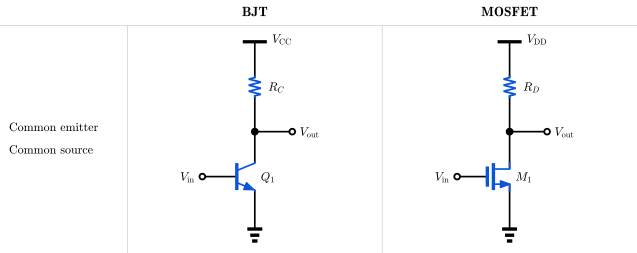
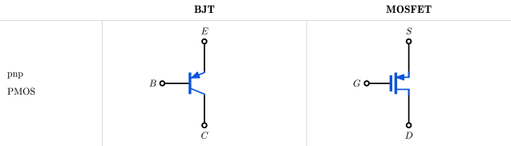
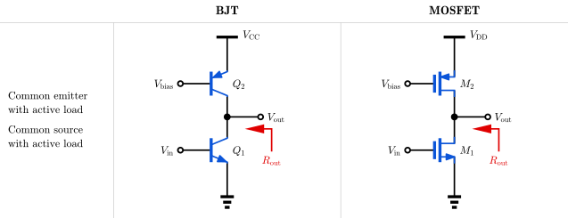
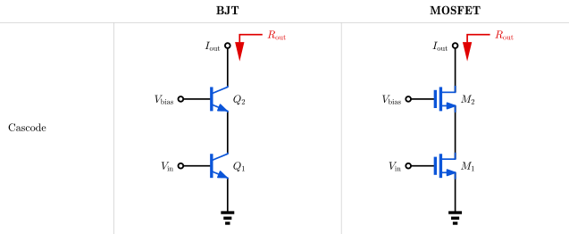
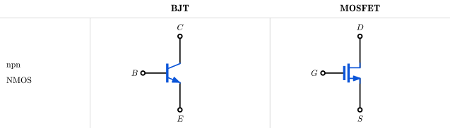
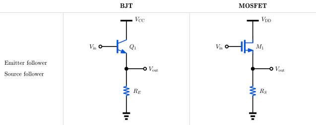
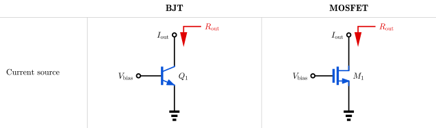
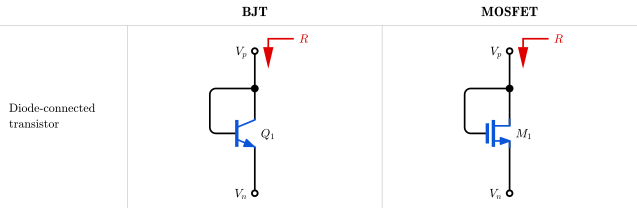
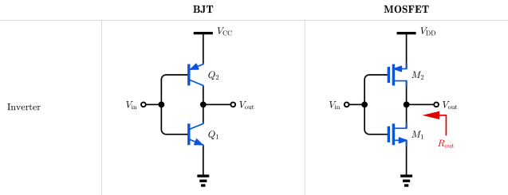

<!DOCTYPE html>


<html lang="en" data-content_root="../../" >

  <head>
    <meta charset="utf-8" />
    <meta name="viewport" content="width=device-width, initial-scale=1.0" /><meta name="viewport" content="width=device-width, initial-scale=1" />

    <title>BJT and MOSFET Problem Bank: One Transistor &#8212; Intelligent Visual Computing</title>
  
  
  
  <script data-cfasync="false">
    document.documentElement.dataset.mode = localStorage.getItem("mode") || "";
    document.documentElement.dataset.theme = localStorage.getItem("theme") || "";
  </script>
  <!--
    this give us a css class that will be invisible only if js is disabled
  -->
  <noscript>
    <style>
      .pst-js-only { display: none !important; }

    </style>
  </noscript>
  
  <!-- Loaded before other Sphinx assets -->
  <link href="../../_static/styles/theme.css?digest=8878045cc6db502f8baf" rel="stylesheet" />
<link href="../../_static/styles/pydata-sphinx-theme.css?digest=8878045cc6db502f8baf" rel="stylesheet" />

    <link rel="stylesheet" type="text/css" href="../../_static/pygments.css?v=03e43079" />
    <link rel="stylesheet" type="text/css" href="../../_static/styles/sphinx-book-theme.css?v=3c74b3bc" />
    <link rel="stylesheet" type="text/css" href="../../_static/togglebutton.css?v=13237357" />
    <link rel="stylesheet" type="text/css" href="../../_static/copybutton.css?v=76b2166b" />
    <link rel="stylesheet" type="text/css" href="../../_static/mystnb.11b39860a7a0cbfd473a3ad8a317855267ff0bd372690045ca344a6b62be495e.css" />
    <link rel="stylesheet" type="text/css" href="../../_static/sphinx-thebe.css?v=4fa983c6" />
    <link rel="stylesheet" type="text/css" href="../../_static/sphinx-design.min.css?v=6a604523" />
    <link rel="stylesheet" type="text/css" href="../../_static/custom.css?v=d273a9f0" />
  
  <!-- So that users can add custom icons -->
  <script src="../../_static/scripts/fontawesome.js?digest=8878045cc6db502f8baf"></script>
  <!-- Pre-loaded scripts that we'll load fully later -->
  <link rel="preload" as="script" href="../../_static/scripts/bootstrap.js?digest=8878045cc6db502f8baf" />
<link rel="preload" as="script" href="../../_static/scripts/pydata-sphinx-theme.js?digest=8878045cc6db502f8baf" />

    <script src="../../_static/documentation_options.js?v=9eb32ce0"></script>
    <script src="../../_static/doctools.js?v=9a2dae69"></script>
    <script src="../../_static/sphinx_highlight.js?v=dc90522c"></script>
    <script src="../../_static/clipboard.min.js?v=a7894cd8"></script>
    <script src="../../_static/copybutton.js?v=f281be69"></script>
    <script src="../../_static/scripts/sphinx-book-theme.js?v=fab101a9"></script>
    <script>let toggleHintShow = 'Click to show';</script>
    <script>let toggleHintHide = 'Click to hide';</script>
    <script>let toggleOpenOnPrint = 'true';</script>
    <script src="../../_static/togglebutton.js?v=4a39c7ea"></script>
    <script>var togglebuttonSelector = '.toggle, .admonition.dropdown';</script>
    <script data-sd-tabs-storage-prefix="sphinx-design-tab-id-" src="../../_static/design-tabs.js?v=fcb327ea"></script>
    <script>const THEBE_JS_URL = "https://unpkg.com/thebe@0.8.2/lib/index.js"; const thebe_selector = ".thebe,.cell"; const thebe_selector_input = "pre"; const thebe_selector_output = ".output, .cell_output"</script>
    <script async="async" src="../../_static/sphinx-thebe.js?v=c100c467"></script>
    <script>var togglebuttonSelector = '.toggle, .admonition.dropdown';</script>
    <script>const THEBE_JS_URL = "https://unpkg.com/thebe@0.8.2/lib/index.js"; const thebe_selector = ".thebe,.cell"; const thebe_selector_input = "pre"; const thebe_selector_output = ".output, .cell_output"</script>
    <script>window.MathJax = {"options": {"processHtmlClass": "tex2jax_process|mathjax_process|math|output_area"}}</script>
    <script defer="defer" src="https://cdn.jsdelivr.net/npm/mathjax@3/es5/tex-mml-chtml.js"></script>
    <script>DOCUMENTATION_OPTIONS.pagename = 'courses/fme/bank_one';</script>
    <link rel="index" title="Index" href="../../genindex.html" />
    <link rel="search" title="Search" href="../../search.html" />
    <link rel="next" title="BJT and MOSFET Problem Bank: Bias" href="bank_bias.html" />
    <link rel="prev" title="BJT and MOSFET Problem Sets" href="problems.html" />
  <meta name="viewport" content="width=device-width, initial-scale=1"/>
  <meta name="docsearch:language" content="en"/>
  <meta name="docsearch:version" content="" />
  </head>
  
  
  <body data-bs-spy="scroll" data-bs-target=".bd-toc-nav" data-offset="180" data-bs-root-margin="0px 0px -60%" data-default-mode="">

  
  
  <div id="pst-skip-link" class="skip-link d-print-none"><a href="#main-content">Skip to main content</a></div>
  
  <div id="pst-scroll-pixel-helper"></div>
  
  <button type="button" class="btn rounded-pill" id="pst-back-to-top">
    <i class="fa-solid fa-arrow-up"></i>Back to top</button>

  
  <dialog id="pst-search-dialog">
    
<form class="bd-search d-flex align-items-center"
      action="../../search.html"
      method="get">
  <i class="fa-solid fa-magnifying-glass"></i>
  <input type="search"
         class="form-control"
         name="q"
         placeholder="Search this book..."
         aria-label="Search this book..."
         autocomplete="off"
         autocorrect="off"
         autocapitalize="off"
         spellcheck="false"/>
  <span class="search-button__kbd-shortcut"><kbd class="kbd-shortcut__modifier">Ctrl</kbd>+<kbd>K</kbd></span>
</form>
  </dialog>

  <div class="pst-async-banner-revealer d-none">
  <aside id="bd-header-version-warning" class="d-none d-print-none" aria-label="Version warning"></aside>
</div>

  
    <header class="bd-header navbar navbar-expand-lg bd-navbar d-print-none">
    </header>
  

  <div class="bd-container">
    <div class="bd-container__inner bd-page-width">
      
      
      
      <dialog id="pst-primary-sidebar-modal"></dialog>
      <div id="pst-primary-sidebar" class="bd-sidebar-primary bd-sidebar">
        

  
  <div class="sidebar-header-items sidebar-primary__section">
    
    
    
    
  </div>
  
    <div class="sidebar-primary-items__start sidebar-primary__section">
        <div class="sidebar-primary-item">

  
    
  

<a class="navbar-brand logo" href="../../home.html">
  
  
  
  
  
    
    
      
    
    
    
    
  
  
</a></div>
        <div class="sidebar-primary-item">

<button class="btn search-button-field search-button__button pst-js-only" title="Search" aria-label="Search" data-bs-placement="bottom" data-bs-toggle="tooltip">
 <i class="fa-solid fa-magnifying-glass"></i>
 <span class="search-button__default-text">Search</span>
 <span class="search-button__kbd-shortcut"><kbd class="kbd-shortcut__modifier">Ctrl</kbd>+<kbd class="kbd-shortcut__modifier">K</kbd></span>
</button></div>
        <div class="sidebar-primary-item"><nav class="bd-links bd-docs-nav" aria-label="Main">
    <div class="bd-toc-item navbar-nav active">
        
        <ul class="nav bd-sidenav bd-sidenav__home-link">
            <li class="toctree-l1">
                <a class="reference internal" href="../../home.html">
                    Welcome
                </a>
            </li>
        </ul>
        <p aria-level="2" class="caption" role="heading"><span class="caption-text">Digital Signal Processing</span></p>
<ul class="nav bd-sidenav">
<li class="toctree-l1"><a class="reference internal" href="../dsp/signals.html">Signals and Sequences</a></li>
<li class="toctree-l1"><a class="reference internal" href="../dsp/systems.html">Systems and Transformations</a></li>
</ul>
<p aria-level="2" class="caption" role="heading"><span class="caption-text">Fundamentals of Microelectronics</span></p>
<ul class="current nav bd-sidenav">
<li class="toctree-l1"><a class="reference internal" href="index.html">BJT and MOSFET Circuits</a></li>
<li class="toctree-l1"><a class="reference internal" href="problems.html">BJT and MOSFET Problem Sets</a></li>
<li class="toctree-l1 current active"><a class="current reference internal" href="#">BJT and MOSFET Problem Bank: One Transistor</a></li>
<li class="toctree-l1"><a class="reference internal" href="bank_bias.html">BJT and MOSFET Problem Bank: Bias</a></li>
<li class="toctree-l1"><a class="reference internal" href="bank_stages.html">BJT and MOSFET Problem Bank: Amplifier Stages</a></li>
<li class="toctree-l1"><a class="reference internal" href="bank_mirrors.html">BJT and MOSFET Problem Bank: Cascodes and Current Mirrors</a></li>
<li class="toctree-l1"><a class="reference internal" href="bank_pairs.html">BJT and MOSFET Problem Bank: Differential Pairs</a></li>
<li class="toctree-l1"><a class="reference internal" href="bank_other.html">BJT and MOSFET Problem Bank: Other Items</a></li>
</ul>
<p aria-level="2" class="caption" role="heading"><span class="caption-text">Medical Image Processing</span></p>
<ul class="nav bd-sidenav">
<li class="toctree-l1"><a class="reference internal" href="../mip/intro.html">Introduction</a></li>
<li class="toctree-l1"><a class="reference internal" href="../mip/sigsys.html">Signals and Systems</a></li>
<li class="toctree-l1"><a class="reference internal" href="../mip/xr.html">X-ray (XR) Imaging</a></li>
<li class="toctree-l1"><a class="reference internal" href="../mip/ct.html">Computed Tomography (CT)</a></li>
<li class="toctree-l1"><a class="reference internal" href="../mip/mr.html">Magnetic Resonance (MR) Imaging</a></li>
<li class="toctree-l1"><a class="reference internal" href="../mip/pt.html">Positron Emission Tomography (PET)</a></li>
<li class="toctree-l1"><a class="reference internal" href="../mip/es.html">Endoscopy (ES) Imaging</a></li>
<li class="toctree-l1"><a class="reference internal" href="../mip/histo.html">Histology / Histopathology Imaging</a></li>
<li class="toctree-l1"><a class="reference internal" href="../mip/em.html">Electron Microscopy (EM) Imaging</a></li>
</ul>
<p aria-level="2" class="caption" role="heading"><span class="caption-text">Simulation</span></p>
<ul class="nav bd-sidenav">
<li class="toctree-l1"><a class="reference internal" href="../sim/isaacsim101.html">IsaacSim101</a></li>
<li class="toctree-l1"><a class="reference internal" href="../sim/chapter0.html">Isaac Sim on a DGX Spark</a></li>
<li class="toctree-l1"><a class="reference internal" href="../sim/chapter1.html">Overview of Visualization</a></li>
</ul>
<p aria-level="2" class="caption" role="heading"><span class="caption-text">Research</span></p>
<ul class="nav bd-sidenav">
<li class="toctree-l1 has-children"><a class="reference internal" href="../../research/connectome/index.html">Connectome Agent</a><details><summary><span class="toctree-toggle" role="presentation"><i class="fa-solid fa-chevron-down"></i></span></summary><ul>
<li class="toctree-l2"><a class="reference internal" href="../../research/connectome/representation.html">Representation</a></li>
<li class="toctree-l2"><a class="reference internal" href="../../research/connectome/supervision.html">Supervision</a></li>
<li class="toctree-l2"><a class="reference internal" href="../../research/connectome/features.html">Features</a></li>
<li class="toctree-l2"><a class="reference internal" href="../../research/connectome/multiscale.html">Multi-scale</a></li>
<li class="toctree-l2"><a class="reference internal" href="../../research/connectome/agent.html">Agent</a></li>
</ul>
</details></li>
</ul>

    </div>
</nav></div>
    </div>
  
  
  <div class="sidebar-primary-items__end sidebar-primary__section">
      <div class="sidebar-primary-item">
<div id="ethical-ad-placement"
      class="flat"
      data-ea-publisher="readthedocs"
      data-ea-type="readthedocs-sidebar"
      data-ea-manual="true">
</div></div>
  </div>


      </div>
      
      <main id="main-content" class="bd-main" role="main">
        
        

<div class="sbt-scroll-pixel-helper"></div>

          <div class="bd-content">
            <div class="bd-article-container">
              
              <div class="bd-header-article d-print-none">
<div class="header-article-items header-article__inner">
  
    <div class="header-article-items__start">
      
        <div class="header-article-item"><button class="sidebar-toggle primary-toggle btn btn-sm" title="Toggle primary sidebar" data-bs-placement="bottom" data-bs-toggle="tooltip">
  <span class="fa-solid fa-bars"></span>
</button></div>
      
    </div>
  
  
    <div class="header-article-items__end">
      
        <div class="header-article-item">

<div class="article-header-buttons">


<div class="dropdown dropdown-source-buttons">
  <button class="btn dropdown-toggle" type="button" data-bs-toggle="dropdown" aria-expanded="false" aria-label="Source repositories">
    <i class="fab fa-github"></i>
  </button>
  <ul class="dropdown-menu">
      
      
      
      <li><a href="https://github.com/tmquan/ivcl" target="_blank"
   class="btn btn-sm btn-source-repository-button dropdown-item"
   title="Source repository"
   data-bs-placement="left" data-bs-toggle="tooltip"
>
  

<span class="btn__icon-container">
  <i class="fab fa-github"></i>
  </span>
<span class="btn__text-container">Repository</span>
</a>
</li>
      
      
      
      
      <li><a href="https://github.com/tmquan/ivcl/issues/new?title=Issue%20on%20page%20%2Fcourses/fme/bank_one.html&body=Your%20issue%20content%20here." target="_blank"
   class="btn btn-sm btn-source-issues-button dropdown-item"
   title="Open an issue"
   data-bs-placement="left" data-bs-toggle="tooltip"
>
  

<span class="btn__icon-container">
  <i class="fas fa-lightbulb"></i>
  </span>
<span class="btn__text-container">Open issue</span>
</a>
</li>
      
  </ul>
</div>


<div class="dropdown dropdown-download-buttons">
  <button class="btn dropdown-toggle" type="button" data-bs-toggle="dropdown" aria-expanded="false" aria-label="Download this page">
    <i class="fas fa-download"></i>
  </button>
  <ul class="dropdown-menu">
      
      
      
      <li><a href="../../_sources/courses/fme/bank_one.ipynb" target="_blank"
   class="btn btn-sm btn-download-source-button dropdown-item"
   title="Download source file"
   data-bs-placement="left" data-bs-toggle="tooltip"
>
  

<span class="btn__icon-container">
  <i class="fas fa-file"></i>
  </span>
<span class="btn__text-container">.ipynb</span>
</a>
</li>
      
      
      
      
      <li>
<button onclick="window.print()"
  class="btn btn-sm btn-download-pdf-button dropdown-item"
  title="Print to PDF"
  data-bs-placement="left" data-bs-toggle="tooltip"
>
  

<span class="btn__icon-container">
  <i class="fas fa-file-pdf"></i>
  </span>
<span class="btn__text-container">.pdf</span>
</button>
</li>
      
  </ul>
</div>


<button onclick="toggleFullScreen()"
  class="btn btn-sm btn-fullscreen-button pst-navbar-icon"
  title="Fullscreen mode"
  data-bs-placement="bottom" data-bs-toggle="tooltip"
>
  

<span class="btn__icon-container">
  <i class="fas fa-expand"></i>
  </span>

</button>


<button class="btn btn-sm nav-link pst-navbar-icon theme-switch-button pst-js-only" aria-label="Color mode" data-bs-title="Color mode"  data-bs-placement="bottom" data-bs-toggle="tooltip">
  <i class="theme-switch fa-solid fa-sun                fa-lg" data-mode="light" title="Light"></i>
  <i class="theme-switch fa-solid fa-moon               fa-lg" data-mode="dark"  title="Dark"></i>
  <i class="theme-switch fa-solid fa-circle-half-stroke fa-lg" data-mode="auto"  title="System Settings"></i>
</button>


<button class="btn btn-sm pst-navbar-icon search-button search-button__button pst-js-only" title="Search" aria-label="Search" data-bs-placement="bottom" data-bs-toggle="tooltip">
    <i class="fa-solid fa-magnifying-glass fa-lg"></i>
</button>
<button class="sidebar-toggle secondary-toggle btn btn-sm pst-navbar-icon" title="Toggle secondary sidebar" data-bs-placement="bottom" data-bs-toggle="tooltip">
    <span class="fa-solid fa-list"></span>
</button>
</div></div>
      
    </div>
  
</div>
</div>
              
              

<div id="jb-print-docs-body" class="onlyprint">
    <h1>BJT and MOSFET Problem Bank: One Transistor</h1>
    <!-- Table of contents -->
    <div id="print-main-content">
        <div id="jb-print-toc">
            
            <div>
                <h2> Contents </h2>
            </div>
            <nav aria-label="Page">
                <ul class="visible nav section-nav flex-column">
<li class="toc-h2 nav-item toc-entry"><a class="reference internal nav-link" href="#region-of-operation">Region of Operation</a><ul class="nav section-nav flex-column">
<li class="toc-h3 nav-item toc-entry"><a class="reference internal nav-link" href="#common-emitter-common-source">Common emitter / Common source</a></li>
<li class="toc-h3 nav-item toc-entry"><a class="reference internal nav-link" href="#pnp-pmos">pnp / PMOS</a></li>
<li class="toc-h3 nav-item toc-entry"><a class="reference internal nav-link" href="#common-emitter-with-active-load-common-source-with-active-load">Common emitter with active load / Common source with active load</a></li>
<li class="toc-h3 nav-item toc-entry"><a class="reference internal nav-link" href="#cascode">Cascode</a></li>
<li class="toc-h3 nav-item toc-entry"><a class="reference internal nav-link" href="#npn-nmos">npn / NMOS</a></li>
<li class="toc-h3 nav-item toc-entry"><a class="reference internal nav-link" href="#emitter-follower-source-follower">Emitter follower / Source follower</a></li>
<li class="toc-h3 nav-item toc-entry"><a class="reference internal nav-link" href="#other-circuits">Other Circuits</a></li>
</ul>
</li>
<li class="toc-h2 nav-item toc-entry"><a class="reference internal nav-link" href="#device-law">Device Law</a><ul class="nav section-nav flex-column">
<li class="toc-h3 nav-item toc-entry"><a class="reference internal nav-link" href="#id1">npn / NMOS</a></li>
<li class="toc-h3 nav-item toc-entry"><a class="reference internal nav-link" href="#id2">Common emitter / Common source</a></li>
<li class="toc-h3 nav-item toc-entry"><a class="reference internal nav-link" href="#id3">Other Circuits</a></li>
</ul>
</li>
<li class="toc-h2 nav-item toc-entry"><a class="reference internal nav-link" href="#small-signal-parameters">Small-Signal Parameters</a><ul class="nav section-nav flex-column">
<li class="toc-h3 nav-item toc-entry"><a class="reference internal nav-link" href="#id4">npn / NMOS</a></li>
<li class="toc-h3 nav-item toc-entry"><a class="reference internal nav-link" href="#id5">Common emitter / Common source</a></li>
<li class="toc-h3 nav-item toc-entry"><a class="reference internal nav-link" href="#current-source">Current source</a></li>
<li class="toc-h3 nav-item toc-entry"><a class="reference internal nav-link" href="#id6">Other Circuits</a></li>
</ul>
</li>
<li class="toc-h2 nav-item toc-entry"><a class="reference internal nav-link" href="#models-and-characteristics">Models and Characteristics</a><ul class="nav section-nav flex-column">
<li class="toc-h3 nav-item toc-entry"><a class="reference internal nav-link" href="#id7">npn / NMOS</a></li>
<li class="toc-h3 nav-item toc-entry"><a class="reference internal nav-link" href="#diode-connected-transistor">Diode-connected transistor</a></li>
<li class="toc-h3 nav-item toc-entry"><a class="reference internal nav-link" href="#inverter">Inverter</a></li>
<li class="toc-h3 nav-item toc-entry"><a class="reference internal nav-link" href="#id8">Other Circuits</a></li>
</ul>
</li>
</ul>
            </nav>
        </div>
    </div>
</div>

              
                
<div id="searchbox"></div>
                <article class="bd-article">
                  
  <section class="tex2jax_ignore mathjax_ignore" id="bjt-and-mosfet-problem-bank-one-transistor">
<h1>BJT and MOSFET Problem Bank: One Transistor<a class="headerlink" href="#bjt-and-mosfet-problem-bank-one-transistor" title="Link to this heading">#</a></h1>
<p>Every worked example and every problem of this kind in two textbooks, each solved step by step: Razavi, <em>Fundamentals of Microelectronics</em> (chapters 4 to 7, 9 and 10) and Sedra/Smith, <em>Microelectronic Circuits</em>, eighth international edition (chapters 4 to 8). The statements are in our words and the numbers of an item are those of the book. This page holds 274 of the 1219 items; the natures and their solution patterns are introduced on <a class="reference internal" href="problems.html"><span class="std std-doc">BJT and MOSFET Problem Sets</span></a>.</p>
<p>Inside a nature, the items whose circuit we have drawn come under that drawing; the others describe their circuit in words. An item that repeats another with other values follows it and says so. Every numeric result was recomputed by a program. The last line of an item says how it was checked: against the answer the book or its solutions manual publishes, or, where none is published, by computation alone. An item marked <em>needs review</em> rests on a reading of the book that we could not confirm.</p>
<div class="pst-scrollable-table-container"><table class="table">
<thead>
<tr class="row-odd"><th class="head"><p>Nature</p></th>
<th class="head"><p>Razavi, examples</p></th>
<th class="head"><p>Razavi, problems</p></th>
<th class="head"><p>Sedra/Smith, exercises</p></th>
<th class="head"><p>Sedra/Smith, problems</p></th>
</tr>
</thead>
<tbody>
<tr class="row-even"><td><p>Region of Operation</p></td>
<td><p>3</p></td>
<td><p>24</p></td>
<td><p>14</p></td>
<td><p>19</p></td>
</tr>
<tr class="row-odd"><td><p>Device Law</p></td>
<td><p>8</p></td>
<td><p>19</p></td>
<td><p>13</p></td>
<td><p>50</p></td>
</tr>
<tr class="row-even"><td><p>Small-Signal Parameters</p></td>
<td><p>7</p></td>
<td><p>26</p></td>
<td><p>14</p></td>
<td><p>27</p></td>
</tr>
<tr class="row-odd"><td><p>Models and Characteristics</p></td>
<td><p>7</p></td>
<td><p>18</p></td>
<td><p>3</p></td>
<td><p>22</p></td>
</tr>
</tbody>
</table>
</div>
<div class="cell tag_hide-input docutils container">
<details class="admonition hide above-input">
<summary aria-label="Toggle hidden content">
<p class="collapsed admonition-title">Show code cell source</p>
<p class="expanded admonition-title">Hide code cell source</p>
</summary>
<div class="cell_input docutils container">
<div class="highlight-ipython3 notranslate"><div class="highlight"><pre><span></span><span class="c1"># HIDE/SHOW</span>
<span class="kn">import</span><span class="w"> </span><span class="nn">warnings</span>
<span class="n">warnings</span><span class="o">.</span><span class="n">filterwarnings</span><span class="p">(</span><span class="s1">'ignore'</span><span class="p">)</span>

<span class="kn">import</span><span class="w"> </span><span class="nn">matplotlib.pyplot</span><span class="w"> </span><span class="k">as</span><span class="w"> </span><span class="nn">plt</span>
<span class="o">%</span><span class="k">matplotlib</span> inline
<span class="o">%</span><span class="k">config</span> InlineBackend.figure_formats = ['svg']
<span class="o">%</span><span class="k">config</span> InlineBackend.print_figure_kwargs = {'bbox_inches': None}   # keep every figure at its full width
<span class="n">plt</span><span class="o">.</span><span class="n">rcParams</span><span class="p">[</span><span class="s1">'svg.hashsalt'</span><span class="p">]</span> <span class="o">=</span> <span class="s1">'fme'</span>            <span class="c1"># reproducible SVG output</span>

<span class="kn">from</span><span class="w"> </span><span class="nn">schematic</span><span class="w"> </span><span class="kn">import</span> <span class="n">show</span>
<span class="kn">from</span><span class="w"> </span><span class="nn">schematic</span><span class="w"> </span><span class="kn">import</span> <span class="n">circuits</span> <span class="k">as</span> <span class="n">C</span>
</pre></div>
</div>
</div>
</details>
</div>
<section id="region-of-operation">
<h2>Region of Operation<a class="headerlink" href="#region-of-operation" title="Link to this heading">#</a></h2>
<section id="common-emitter-common-source">
<h3>Common emitter / Common source<a class="headerlink" href="#common-emitter-common-source" title="Link to this heading">#</a></h3>
<div class="cell tag_hide-input docutils container">
<details class="admonition hide above-input">
<summary aria-label="Toggle hidden content">
<p class="collapsed admonition-title">Show code cell source</p>
<p class="expanded admonition-title">Hide code cell source</p>
</summary>
<div class="cell_input docutils container">
<div class="highlight-ipython3 notranslate"><div class="highlight"><pre><span></span><span class="c1"># HIDE/SHOW</span>
<span class="n">show</span><span class="p">(</span><span class="n">C</span><span class="o">.</span><span class="n">role_amplifier</span><span class="p">)</span>
</pre></div>
</div>
</div>
</details>
<div class="cell_output docutils container">

</div>
</div>
<p><strong>Razavi, Example 4.16</strong> (BJT)</p>
<p>An npn transistor has its emitter grounded and a battery <span class="math notranslate nohighlight">\(V_{BE}\)</span> at its base. Its collector is joined to a supply <span class="math notranslate nohighlight">\(V_{CC}\)</span> through a resistor <span class="math notranslate nohighlight">\(R_C\)</span>. Find the relation between <span class="math notranslate nohighlight">\(R_C\)</span> and <span class="math notranslate nohighlight">\(V_{CC}\)</span> that keeps the transistor in the active region or in soft saturation, defined by <span class="math notranslate nohighlight">\(V_{BC}\le400\,\mathrm{mV}\)</span>.</p>
<p>Given: <span class="math notranslate nohighlight">\(V_{BE}\)</span> fixed, <span class="math notranslate nohighlight">\(R_C\)</span>, <span class="math notranslate nohighlight">\(V_{CC}\)</span>, soft saturation limit <span class="math notranslate nohighlight">\(V_{BC}\le400\,\mathrm{mV}\)</span></p>
<ol class="arabic simple">
<li><p><strong>Collector current.</strong> In the active region and in soft saturation the base-collector current is negligible, so <span class="math notranslate nohighlight">\(I_C=I_S\exp(V_{BE}/V_T)\)</span>.</p></li>
<li><p><strong>Collector voltage.</strong> <span class="math notranslate nohighlight">\(V_C=V_{CC}-R_CI_C\)</span>.</p></li>
<li><p><strong>Condition.</strong> <span class="math notranslate nohighlight">\(V_{BC}=V_{BE}-V_C\le400\,\mathrm{mV}\)</span>, i.e. <span class="math notranslate nohighlight">\(V_C\ge V_{BE}-400\,\mathrm{mV}\)</span>.</p></li>
<li><p><strong>Relation.</strong> <span class="math notranslate nohighlight">\(V_{CC}-R_CI_C\ge V_{BE}-400\,\mathrm{mV}\Rightarrow V_{CC}\ge R_CI_C+(V_{BE}-400\,\mathrm{mV})\)</span>.</p></li>
<li><p><strong>Meaning.</strong> For strictly active mode the limit is <span class="math notranslate nohighlight">\(V_{CC}\ge R_CI_C+V_{BE}\)</span>; soft saturation relaxes it by 400 mV. In the <span class="math notranslate nohighlight">\(V_{CC}\)</span>-<span class="math notranslate nohighlight">\(R_C\)</span> plane the acceptable region lies above a straight line with slope <span class="math notranslate nohighlight">\(I_C\)</span> and intercept <span class="math notranslate nohighlight">\(V_{BE}-400\,\mathrm{mV}\)</span>.</p></li>
</ol>
<p><strong>Result.</strong> <span class="math notranslate nohighlight">\(V_{CC}\ge R_CI_C+(V_{BE}-400\,\mathrm{mV})\)</span>, with <span class="math notranslate nohighlight">\(I_C=I_S\exp(V_{BE}/V_T)\)</span></p>
<p>Checked: agrees with the answer in the book.</p>
<p><strong>Razavi, Example 6.8</strong> (MOSFET)</p>
<p>An NMOS with source grounded has its drain at node <span class="math notranslate nohighlight">\(X\)</span>, connected to <span class="math notranslate nohighlight">\(V_{DD}=1.8\,\mathrm{V}\)</span> through <span class="math notranslate nohighlight">\(R_D=5\,\mathrm{k}\Omega\)</span>, and gate voltage <span class="math notranslate nohighlight">\(V_{GS}\)</span>, with <span class="math notranslate nohighlight">\(W/L=2/0.18\)</span>. Find the largest <span class="math notranslate nohighlight">\(V_{GS}\)</span> for which the device stays saturated, symbolically and then numerically.</p>
<p>Given: <span class="math notranslate nohighlight">\(V_{DD}=1.8\,\mathrm{V}\)</span>, <span class="math notranslate nohighlight">\(R_D=5\,\mathrm{k}\Omega\)</span>, <span class="math notranslate nohighlight">\(W/L=2/0.18\)</span>, <span class="math notranslate nohighlight">\(\mu_nC_{ox}=100\,\mu\mathrm{A/V^2}\)</span>, <span class="math notranslate nohighlight">\(V_{TH}=0.4\,\mathrm{V}\)</span>, <span class="math notranslate nohighlight">\(\lambda=0\)</span></p>
<ol class="arabic simple">
<li><p><strong>Edge of saturation.</strong> <span class="math notranslate nohighlight">\(V_{DS}=V_{GS}-V_{TH}=V_{DD}-R_DI_D\)</span>.</p></li>
<li><p><strong>Substitute the current.</strong> With <span class="math notranslate nohighlight">\(I_D=\tfrac12\mu_nC_{ox}\tfrac WL(V_{GS}-V_{TH})^2\)</span> and <span class="math notranslate nohighlight">\(V_{ov}=V_{GS}-V_{TH}\)</span>: <span class="math notranslate nohighlight">\(V_{ov}=V_{DD}-\tfrac{R_D}{2}\mu_nC_{ox}\tfrac WL V_{ov}^2\)</span>.</p></li>
<li><p><strong>Quadratic.</strong> With <span class="math notranslate nohighlight">\(a=R_D\mu_nC_{ox}W/L\)</span>: <span class="math notranslate nohighlight">\(\tfrac a2V_{ov}^2+V_{ov}-V_{DD}=0\)</span>.</p></li>
<li><p><strong>Positive root.</strong> <span class="math notranslate nohighlight">\(V_{ov}=\dfrac{-1+\sqrt{1+2aV_{DD}}}{a}\)</span>, so <span class="math notranslate nohighlight">\(V_{GS,max}=V_{TH}+\dfrac{-1+\sqrt{1+2R_DV_{DD}\mu_nC_{ox}W/L}}{R_D\mu_nC_{ox}W/L}\)</span>.</p></li>
<li><p><strong>Numbers.</strong> <span class="math notranslate nohighlight">\(\mu_nC_{ox}W/L=1.111\,\mathrm{mA/V^2}\)</span>, so <span class="math notranslate nohighlight">\(a=5.556\,\mathrm{V^{-1}}\)</span> and <span class="math notranslate nohighlight">\(2aV_{DD}=20\)</span>.</p></li>
<li><p><strong>Overdrive and gate voltage.</strong> <span class="math notranslate nohighlight">\(V_{ov}=\dfrac{-1+\sqrt{21}}{5.556}=0.645\,\mathrm{V}\)</span>, so <span class="math notranslate nohighlight">\(V_{GS,max}=0.4+0.645=1.045\,\mathrm{V}\)</span>.</p></li>
<li><p><strong>Check.</strong> <span class="math notranslate nohighlight">\(I_D=\tfrac12(1.111\,\mathrm{mA/V^2})(0.645)^2=231\,\mu\mathrm{A}\)</span> and <span class="math notranslate nohighlight">\(V_{DD}-R_DI_D=0.645\,\mathrm{V}=V_{ov}\)</span> as required.</p></li>
</ol>
<p><strong>Result.</strong> <span class="math notranslate nohighlight">\(V_{GS,max}=V_{TH}+\dfrac{-1+\sqrt{1+2R_DV_{DD}\mu_nC_{ox}W/L}}{R_D\mu_nC_{ox}W/L}\approx1.045\,\mathrm{V}\)</span></p>
<p>Checked by computation; the book gives no answer.</p>
<p><strong>Razavi, Problem 4.9</strong> (BJT)</p>
<p>An npn transistor <span class="math notranslate nohighlight">\(Q_1\)</span> has its emitter grounded, its base driven by a source <span class="math notranslate nohighlight">\(V_B\)</span>, and its collector tied through <span class="math notranslate nohighlight">\(R_C=500\,\Omega\)</span> to <span class="math notranslate nohighlight">\(V_{CC}=2\,\mathrm{V}\)</span> (Fig. 4.52). With <span class="math notranslate nohighlight">\(I_S=5\times10^{-16}\,\mathrm{A}\)</span>, find the <span class="math notranslate nohighlight">\(V_B\)</span> that puts <span class="math notranslate nohighlight">\(Q_1\)</span> at the edge of the active region.</p>
<p>Given: <span class="math notranslate nohighlight">\(V_{CC}=2\,\mathrm{V}\)</span>, <span class="math notranslate nohighlight">\(R_C=500\,\Omega\)</span>, <span class="math notranslate nohighlight">\(I_S=5\times10^{-16}\,\mathrm{A}\)</span>, <span class="math notranslate nohighlight">\(V_T=26\,\mathrm{mV}\)</span></p>
<ol class="arabic simple">
<li><p><strong>Edge condition.</strong> <span class="math notranslate nohighlight">\(V_C=V_B\)</span>: <span class="math notranslate nohighlight">\(V_{CC}-R_CI_S\exp(V_B/V_T)=V_B\)</span>.</p></li>
<li><p><strong>Iterate.</strong> Start with <span class="math notranslate nohighlight">\(V_B=0.8\,\mathrm{V}\)</span>: <span class="math notranslate nohighlight">\(I_C=(2-0.8)/500=2.4\,\mathrm{mA}\)</span>, <span class="math notranslate nohighlight">\(V_B=V_T\ln(I_C/I_S)=759\,\mathrm{mV}\)</span>; again: <span class="math notranslate nohighlight">\(I_C=2.48\,\mathrm{mA}\)</span>, <span class="math notranslate nohighlight">\(V_B=760\,\mathrm{mV}\)</span>.</p></li>
<li><p><strong>Result.</strong> <span class="math notranslate nohighlight">\(V_B=760\,\mathrm{mV}\)</span>, <span class="math notranslate nohighlight">\(I_C=2.48\,\mathrm{mA}\)</span>, <span class="math notranslate nohighlight">\(V_C=2-0.5\cdot2.48=0.760\,\mathrm{V}\)</span>.</p></li>
<li><p><strong>Meaning.</strong> A higher <span class="math notranslate nohighlight">\(V_B\)</span> would forward-bias the base-collector junction (saturation).</p></li>
</ol>
<p><strong>Result.</strong> <span class="math notranslate nohighlight">\(V_B=760\,\mathrm{mV}\)</span> (<span class="math notranslate nohighlight">\(I_C=2.48\,\mathrm{mA}\)</span>)</p>
<p>Checked by computation; the book gives no answer.</p>
<p><strong>Razavi, Problem 4.32</strong> (BJT)</p>
<p>An npn has its emitter grounded, its base at <span class="math notranslate nohighlight">\(V_B\)</span>, and its collector to <span class="math notranslate nohighlight">\(V_{CC}=2.5\,\mathrm{V}\)</span> through <span class="math notranslate nohighlight">\(R_C=2\,\mathrm{k}\Omega\)</span>; <span class="math notranslate nohighlight">\(I_S=6\times10^{-16}\,\mathrm{A}\)</span>, <span class="math notranslate nohighlight">\(V_A=\infty\)</span>. (a) Find <span class="math notranslate nohighlight">\(V_B\)</span> that puts the transistor at the edge of the active region. (b) If a collector-base forward bias of <span class="math notranslate nohighlight">\(200\,\mathrm{mV}\)</span> (soft saturation) is allowed, by how much can <span class="math notranslate nohighlight">\(V_B\)</span> increase?</p>
<p>Given: <span class="math notranslate nohighlight">\(V_{CC}=2.5\,\mathrm{V}\)</span>, <span class="math notranslate nohighlight">\(R_C=2\,\mathrm{k}\Omega\)</span>, <span class="math notranslate nohighlight">\(I_S=6\times10^{-16}\,\mathrm{A}\)</span>, <span class="math notranslate nohighlight">\(V_A=\infty\)</span></p>
<ol class="arabic simple">
<li><p><strong>Collector equation.</strong> <span class="math notranslate nohighlight">\(V_C=V_{CC}-R_CI_S\exp(V_B/V_T)\)</span>.</p></li>
<li><p><strong>(a) Edge of active mode.</strong> <span class="math notranslate nohighlight">\(V_C=V_B\)</span>: solve <span class="math notranslate nohighlight">\(2.5-2\,\mathrm{k}\Omega\cdot I_S\exp(V_B/V_T)=V_B\)</span> numerically: <span class="math notranslate nohighlight">\(V_B=0.729\,\mathrm{V}\)</span>, <span class="math notranslate nohighlight">\(I_C=0.886\,\mathrm{mA}\)</span>.</p></li>
<li><p><strong>(b) Soft saturation.</strong> <span class="math notranslate nohighlight">\(V_C=V_B-0.2\,\mathrm{V}\)</span>: <span class="math notranslate nohighlight">\(2.5-R_CI_S\exp(V_B/V_T)=V_B-0.2\)</span> gives <span class="math notranslate nohighlight">\(V_B=0.731\,\mathrm{V}\)</span>, <span class="math notranslate nohighlight">\(I_C=0.984\,\mathrm{mA}\)</span>, <span class="math notranslate nohighlight">\(V_C=0.531\,\mathrm{V}\)</span>.</p></li>
<li><p><strong>(b) Increase.</strong> <span class="math notranslate nohighlight">\(\Delta V_B=2.74\,\mathrm{mV}\)</span>: the collector current only needs to rise by about <span class="math notranslate nohighlight">\(0.1\,\mathrm{mA}\)</span>, which takes <span class="math notranslate nohighlight">\(V_T\ln(0.984/0.886)\)</span>.</p></li>
</ol>
<p><strong>Result.</strong> (a) <span class="math notranslate nohighlight">\(V_B=0.729\,\mathrm{V}\)</span>; (b) <span class="math notranslate nohighlight">\(V_B\)</span> can rise by <span class="math notranslate nohighlight">\(2.74\,\mathrm{mV}\)</span> (to <span class="math notranslate nohighlight">\(0.731\,\mathrm{V}\)</span>)</p>
<p>Checked by computation; the book gives no answer.</p>
<p><strong>Razavi, Problem 6.22</strong> (MOSFET)</p>
<p>In Fig. 6.43, NMOS <span class="math notranslate nohighlight">\(M_1\)</span> has its source grounded, its gate at <span class="math notranslate nohighlight">\(1\,\mathrm{V}\)</span>, and its drain connected through <span class="math notranslate nohighlight">\(R_D=1\,\mathrm{k}\Omega\)</span> to <span class="math notranslate nohighlight">\(V_{DD}=1.8\,\mathrm{V}\)</span>. With <span class="math notranslate nohighlight">\(\lambda=0\)</span> and the default device data, find <span class="math notranslate nohighlight">\(W/L\)</span> such that <span class="math notranslate nohighlight">\(M_1\)</span> operates at the edge of saturation.</p>
<p>Given: <span class="math notranslate nohighlight">\(V_{GS}=1\,\mathrm{V}\)</span>, <span class="math notranslate nohighlight">\(R_D=1\,\mathrm{k}\Omega\)</span>, <span class="math notranslate nohighlight">\(V_{DD}=1.8\,\mathrm{V}\)</span>, <span class="math notranslate nohighlight">\(\lambda=0\)</span>, <span class="math notranslate nohighlight">\(\mu_nC_{ox}=200\,\mu\mathrm{A/V^2}\)</span>, <span class="math notranslate nohighlight">\(V_{TH}=0.4\,\mathrm{V}\)</span></p>
<ol class="arabic simple">
<li><p><strong>Edge of saturation.</strong> <span class="math notranslate nohighlight">\(V_{DS}=V_{GS}-V_{TH}=1-0.4=0.6\,\mathrm{V}\)</span>.</p></li>
<li><p><strong>Current from the drain resistor.</strong> <span class="math notranslate nohighlight">\(I_D=\dfrac{V_{DD}-V_{DS}}{R_D}=\dfrac{1.8-0.6}{1\,\mathrm{k}\Omega}=1.2\,\mathrm{mA}\)</span>.</p></li>
<li><p><strong>Square law.</strong> <span class="math notranslate nohighlight">\(I_D=\tfrac12\mu_nC_{ox}\dfrac{W}{L}(V_{GS}-V_{TH})^2\)</span>, so <span class="math notranslate nohighlight">\(\dfrac{W}{L}=\dfrac{2(1.2\,\mathrm{mA})}{(200\,\mu\mathrm{A/V^2})(0.6\,\mathrm{V})^2}=33.3\)</span>.</p></li>
</ol>
<p><strong>Result.</strong> <span class="math notranslate nohighlight">\(W/L=33.3\)</span> (<span class="math notranslate nohighlight">\(I_D=1.2\,\mathrm{mA}\)</span>)</p>
<p>Checked by computation; the book gives no answer.</p>
<p><strong>Razavi, Problem 6.24</strong> (MOSFET)</p>
<p>An NMOS transistor <span class="math notranslate nohighlight">\(M_1\)</span> with <span class="math notranslate nohighlight">\(W/L=10/0.18\)</span> has its source grounded and its gate held at <span class="math notranslate nohighlight">\(1\,\mathrm{V}\)</span> by a voltage source; its drain connects through <span class="math notranslate nohighlight">\(R_D=500\,\Omega\)</span> to the supply <span class="math notranslate nohighlight">\(V_{DD}\)</span>. With <span class="math notranslate nohighlight">\(\lambda=0\)</span>, find the smallest <span class="math notranslate nohighlight">\(V_{DD}\)</span> for which <span class="math notranslate nohighlight">\(M_1\)</span> stays out of the triode region.</p>
<p>Given: <span class="math notranslate nohighlight">\(V_{GS}=1\,\mathrm{V}\)</span>, <span class="math notranslate nohighlight">\(R_D=500\,\Omega\)</span>, <span class="math notranslate nohighlight">\(W/L=10/0.18\)</span>, <span class="math notranslate nohighlight">\(\lambda=0\)</span>; Default data: <span class="math notranslate nohighlight">\(\mu_nC_{ox}=200\,\mu\mathrm{A/V^2}\)</span>, <span class="math notranslate nohighlight">\(\mu_pC_{ox}=100\,\mu\mathrm{A/V^2}\)</span>, <span class="math notranslate nohighlight">\(V_{TH,n}=0.4\,\mathrm{V}\)</span>, <span class="math notranslate nohighlight">\(V_{TH,p}=-0.4\,\mathrm{V}\)</span></p>
<ol class="arabic simple">
<li><p><strong>Overdrive.</strong> <span class="math notranslate nohighlight">\(V_{GS}-V_{TH}=1-0.4=0.6\,\mathrm{V}\)</span></p></li>
<li><p><strong>Drain current in saturation.</strong> <span class="math notranslate nohighlight">\(I_D=\tfrac{1}{2}\mu_nC_{ox}\dfrac{W}{L}(V_{GS}-V_{TH})^2=\tfrac{1}{2}(200\,\mu)(55.6)(0.36)=2.00\,\mathrm{mA}\)</span>; with <span class="math notranslate nohighlight">\(\lambda=0\)</span> it does not depend on <span class="math notranslate nohighlight">\(V_{DD}\)</span></p></li>
<li><p><strong>Edge of saturation.</strong> Saturation requires <span class="math notranslate nohighlight">\(V_{DS}\ge V_{GS}-V_{TH}\)</span>, i.e. <span class="math notranslate nohighlight">\(V_{DD}-R_DI_D\ge0.6\,\mathrm{V}\)</span></p></li>
<li><p><strong>Minimum supply.</strong> <span class="math notranslate nohighlight">\(V_{DD,min}=0.6+(500)(2\,\mathrm{mA})=1.60\,\mathrm{V}\)</span></p></li>
</ol>
<p><strong>Result.</strong> <span class="math notranslate nohighlight">\(V_{DD,min}=1.60\,\mathrm{V}\)</span> (with <span class="math notranslate nohighlight">\(I_D=2.00\,\mathrm{mA}\)</span>)</p>
<p>Checked by computation; the book gives no answer.</p>
<p><strong>Razavi, Problem 6.30</strong> (MOSFET)</p>
<p>An NMOS transistor <span class="math notranslate nohighlight">\(M_1\)</span> with <span class="math notranslate nohighlight">\(W/L=20/0.18\)</span> and <span class="math notranslate nohighlight">\(\lambda=0.1\,\mathrm{V^{-1}}\)</span> has its source grounded, its gate at a bias voltage <span class="math notranslate nohighlight">\(V_B\)</span> and its drain tied to <span class="math notranslate nohighlight">\(V_{DD}=1.8\,\mathrm{V}\)</span> through <span class="math notranslate nohighlight">\(R_D=5\,\mathrm{k}\Omega\)</span>. Find <span class="math notranslate nohighlight">\(V_B\)</span> that places <span class="math notranslate nohighlight">\(M_1\)</span> at the edge of saturation.</p>
<p>Given: <span class="math notranslate nohighlight">\(V_{DD}=1.8\,\mathrm{V}\)</span>, <span class="math notranslate nohighlight">\(R_D=5\,\mathrm{k}\Omega\)</span>, <span class="math notranslate nohighlight">\(W/L=20/0.18\)</span>, <span class="math notranslate nohighlight">\(\lambda=0.1\,\mathrm{V^{-1}}\)</span>; Default data: <span class="math notranslate nohighlight">\(\mu_nC_{ox}=200\,\mu\mathrm{A/V^2}\)</span>, <span class="math notranslate nohighlight">\(\mu_pC_{ox}=100\,\mu\mathrm{A/V^2}\)</span>, <span class="math notranslate nohighlight">\(V_{TH,n}=0.4\,\mathrm{V}\)</span>, <span class="math notranslate nohighlight">\(V_{TH,p}=-0.4\,\mathrm{V}\)</span></p>
<ol class="arabic simple">
<li><p><strong>Edge condition.</strong> <span class="math notranslate nohighlight">\(V_{DS}=V_B-V_{TH}=V_{ov}\)</span></p></li>
<li><p><strong>Current at the edge.</strong> <span class="math notranslate nohighlight">\(I_D=\tfrac{1}{2}\mu_nC_{ox}\dfrac{W}{L}V_{ov}^2(1+\lambda V_{ov})\)</span> with <span class="math notranslate nohighlight">\(\mu_nC_{ox}W/L=22.2\,\mathrm{mA/V^2}\)</span></p></li>
<li><p><strong>Drain loop.</strong> <span class="math notranslate nohighlight">\(V_{DD}-R_DI_D=V_{ov}\)</span>: <span class="math notranslate nohighlight">\(1.8-(5\,\mathrm{k})(11.1\,\mathrm{m})V_{ov}^2(1+0.1V_{ov})=V_{ov}\)</span></p></li>
<li><p><strong>Solve.</strong> <span class="math notranslate nohighlight">\(V_{ov}=0.170\,\mathrm{V}\)</span>, <span class="math notranslate nohighlight">\(I_D=0.326\,\mathrm{mA}\)</span></p></li>
<li><p><strong>Gate voltage.</strong> <span class="math notranslate nohighlight">\(V_B=V_{TH}+V_{ov}=0.570\,\mathrm{V}\)</span>; a larger <span class="math notranslate nohighlight">\(V_B\)</span> pushes <span class="math notranslate nohighlight">\(M_1\)</span> into triode</p></li>
</ol>
<p><strong>Result.</strong> <span class="math notranslate nohighlight">\(V_B=0.570\,\mathrm{V}\)</span> (<span class="math notranslate nohighlight">\(I_D=0.326\,\mathrm{mA}\)</span>, <span class="math notranslate nohighlight">\(V_{DS}=0.170\,\mathrm{V}\)</span>)</p>
<p>Checked by computation; the book gives no answer.</p>
<p><strong>Sedra/Smith, Exercise 6.1</strong> (MOSFET)</p>
<p>An NMOS common-source amplifier has a drain resistor <span class="math notranslate nohighlight">\(R_D=17.5\,\mathrm{k}\Omega\)</span> to <span class="math notranslate nohighlight">\(V_{DD}=1.8\,\mathrm{V}\)</span>, source grounded, input <span class="math notranslate nohighlight">\(v_{GS}\)</span> at the gate. The transistor has <span class="math notranslate nohighlight">\(V_t=0.4\,\mathrm{V}\)</span> and <span class="math notranslate nohighlight">\(k_n=k_n'(W/L)=4\,\mathrm{mA/V^2}\)</span>, <span class="math notranslate nohighlight">\(\lambda=0\)</span>. On the voltage transfer characteristic find the coordinates <span class="math notranslate nohighlight">\((v_{GS},v_{DS})\)</span> of point A (where the transistor just starts to conduct), point B (where it leaves saturation and enters triode) and point C (deep in triode, where <span class="math notranslate nohighlight">\(v_{GS}=V_{DD}\)</span>).</p>
<p>Given: <span class="math notranslate nohighlight">\(V_{DD}=1.8\,\mathrm{V}\)</span>, <span class="math notranslate nohighlight">\(R_D=17.5\,\mathrm{k}\Omega\)</span>, <span class="math notranslate nohighlight">\(V_t=0.4\,\mathrm{V}\)</span>, <span class="math notranslate nohighlight">\(k_n=4\,\mathrm{mA/V^2}\)</span></p>
<ol class="arabic simple">
<li><p><strong>Point A (cutoff edge).</strong> For <span class="math notranslate nohighlight">\(v_{GS}&lt;V_t\)</span> there is no current, so <span class="math notranslate nohighlight">\(v_{DS}=V_{DD}\)</span>. A is at <span class="math notranslate nohighlight">\(v_{GS}=V_t=0.4\,\mathrm{V}\)</span>, <span class="math notranslate nohighlight">\(v_{DS}=1.8\,\mathrm{V}\)</span>.</p></li>
<li><p><strong>Condition at point B.</strong> The edge of saturation is <span class="math notranslate nohighlight">\(v_{DS}=V_{OV}\)</span>. In saturation <span class="math notranslate nohighlight">\(i_D=\tfrac12k_nV_{OV}^2\)</span> and <span class="math notranslate nohighlight">\(v_{DS}=V_{DD}-R_Di_D\)</span>, so <span class="math notranslate nohighlight">\(V_{OV}=V_{DD}-\tfrac12k_nR_DV_{OV}^2\)</span>.</p></li>
<li><p><strong>Solve for <span class="math notranslate nohighlight">\(V_{OV}\)</span>.</strong> <span class="math notranslate nohighlight">\(\tfrac12k_nR_DV_{OV}^2+V_{OV}-V_{DD}=0\Rightarrow V_{OV}=\dfrac{\sqrt{2k_nR_DV_{DD}+1}-1}{k_nR_D}=\dfrac{\sqrt{2\cdot4\cdot17.5\cdot1.8+1}-1}{4\cdot17.5}=0.213\,\mathrm{V}\)</span></p></li>
<li><p><strong>Coordinates of B.</strong> <span class="math notranslate nohighlight">\(V_{GS}=V_t+V_{OV}=0.613\,\mathrm{V}\)</span> and <span class="math notranslate nohighlight">\(v_{DS}=V_{OV}=0.213\,\mathrm{V}\)</span>.</p></li>
<li><p><strong>Point C: triode current.</strong> At <span class="math notranslate nohighlight">\(v_{GS}=V_{DD}=1.8\,\mathrm{V}\)</span>, with <span class="math notranslate nohighlight">\(v_{DS}\)</span> small, <span class="math notranslate nohighlight">\(i_D\approx k_n(v_{GS}-V_t)v_{DS}=4(1.4)v_{DS}=5.6\,v_{DS}\)</span> (mA, V).</p></li>
<li><p><strong>Point C: resistor equation.</strong> <span class="math notranslate nohighlight">\(i_D=\dfrac{V_{DD}-v_{DS}}{R_D}\approx\dfrac{1.8}{17.5}=0.103\,\mathrm{mA}\)</span>, hence <span class="math notranslate nohighlight">\(v_{DS}=0.103/5.6=18.4\,\mathrm{mV}\)</span>.</p></li>
<li><p><strong>Check the assumption.</strong> Solving the full triode equation gives <span class="math notranslate nohighlight">\(18.3\,\mathrm{mV}\)</span>, so <span class="math notranslate nohighlight">\(v_{DS}\)</span> is indeed very small. C is at about <span class="math notranslate nohighlight">\((1.8\,\mathrm{V},\,18\,\mathrm{mV})\)</span>.</p></li>
</ol>
<p><strong>Result.</strong> A <span class="math notranslate nohighlight">\(=(0.4\,\mathrm{V},\,1.8\,\mathrm{V})\)</span>; B <span class="math notranslate nohighlight">\(=(0.613\,\mathrm{V},\,0.213\,\mathrm{V})\)</span>; C <span class="math notranslate nohighlight">\(\approx(1.8\,\mathrm{V},\,18\,\mathrm{mV})\)</span></p>
<p>Checked: agrees with the answer in the solutions manual.</p>
<p><strong>Sedra/Smith, Problem 6.1</strong> (MOSFET)</p>
<p>An NMOS common-source amplifier has drain resistor <span class="math notranslate nohighlight">\(R_D=20\,\mathrm{k}\Omega\)</span> to <span class="math notranslate nohighlight">\(V_{DD}=5\,\mathrm{V}\)</span>, with <span class="math notranslate nohighlight">\(V_t=0.5\,\mathrm{V}\)</span> and <span class="math notranslate nohighlight">\(k_n=k_n^{\prime}(W/L)=10\,\mathrm{mA/V^2}\)</span>. Find the coordinates <span class="math notranslate nohighlight">\((v_{GS},v_{DS})\)</span> of points A (transistor just begins to conduct) and B (edge of saturation) on the voltage-transfer characteristic.</p>
<p>Given: <span class="math notranslate nohighlight">\(V_{DD}=5\,\mathrm{V}\)</span>, <span class="math notranslate nohighlight">\(R_D=20\,\mathrm{k}\Omega\)</span>, <span class="math notranslate nohighlight">\(V_t=0.5\,\mathrm{V}\)</span>, <span class="math notranslate nohighlight">\(k_n=10\,\mathrm{mA/V^2}\)</span></p>
<ol class="arabic simple">
<li><p><strong>Point A.</strong> Cut-off boundary: <span class="math notranslate nohighlight">\(v_{GS}=V_t=0.5\,\mathrm{V}\)</span>, no current so <span class="math notranslate nohighlight">\(v_{DS}=V_{DD}=5\,\mathrm{V}\)</span></p></li>
<li><p><strong>Point B conditions.</strong> At the saturation edge <span class="math notranslate nohighlight">\(v_{DS}=V_{OV}\)</span>, and <span class="math notranslate nohighlight">\(I_D=\tfrac12k_nV_{OV}^2\)</span> flows through <span class="math notranslate nohighlight">\(R_D\)</span>: <span class="math notranslate nohighlight">\(V_{OV}=V_{DD}-\tfrac12k_nR_DV_{OV}^2\)</span></p></li>
<li><p><strong>Quadratic.</strong> <span class="math notranslate nohighlight">\(\tfrac12k_nR_D\,V_{OV}^2+V_{OV}-V_{DD}=0\)</span> with <span class="math notranslate nohighlight">\(k_nR_D=200\)</span>: <span class="math notranslate nohighlight">\(100V_{OV}^2+V_{OV}-5=0\)</span></p></li>
<li><p><strong>Solve.</strong> <span class="math notranslate nohighlight">\(V_{OV}=\dfrac{-1+\sqrt{1+2k_nR_DV_{DD}}}{k_nR_D}=\dfrac{-1+\sqrt{2001}}{200}=0.219\,\mathrm{V}\)</span></p></li>
<li><p><strong>Coordinates of B.</strong> <span class="math notranslate nohighlight">\(v_{GS}=V_t+V_{OV}=0.719\,\mathrm{V}\)</span>, <span class="math notranslate nohighlight">\(v_{DS}=0.219\,\mathrm{V}\)</span></p></li>
</ol>
<p><strong>Result.</strong> A: <span class="math notranslate nohighlight">\((0.5\,\mathrm{V},\,5\,\mathrm{V})\)</span>; B: <span class="math notranslate nohighlight">\((0.72\,\mathrm{V},\,0.22\,\mathrm{V})\)</span></p>
<p>Checked: agrees with the answer in the solutions manual.</p>
</section>
<section id="pnp-pmos">
<h3>pnp / PMOS<a class="headerlink" href="#pnp-pmos" title="Link to this heading">#</a></h3>
<div class="cell tag_hide-input docutils container">
<details class="admonition hide above-input">
<summary aria-label="Toggle hidden content">
<p class="collapsed admonition-title">Show code cell source</p>
<p class="expanded admonition-title">Hide code cell source</p>
</summary>
<div class="cell_input docutils container">
<div class="highlight-ipython3 notranslate"><div class="highlight"><pre><span></span><span class="c1"># HIDE/SHOW</span>
<span class="n">show</span><span class="p">(</span><span class="n">C</span><span class="o">.</span><span class="n">p_type</span><span class="p">)</span>
</pre></div>
</div>
</div>
</details>
<div class="cell_output docutils container">

</div>
</div>
<p><strong>Sedra/Smith, Exercise 5.7</strong> (MOSFET)</p>
<p>A PMOS transistor has its source at <span class="math notranslate nohighlight">\(+1.8\,\mathrm{V}\)</span>, gate at <span class="math notranslate nohighlight">\(v_G\)</span> and drain at <span class="math notranslate nohighlight">\(v_D\)</span>; <span class="math notranslate nohighlight">\(V_{tp}=-0.5\,\mathrm{V}\)</span>, <span class="math notranslate nohighlight">\(k_p^\prime=100\,\mu\mathrm{A/V^2}\)</span>, <span class="math notranslate nohighlight">\(W/L=10\)</span> (so <span class="math notranslate nohighlight">\(k_p=1\,\mathrm{mA/V^2}\)</span>). Find: (a) the range of <span class="math notranslate nohighlight">\(v_G\)</span> for conduction; (b) the range of <span class="math notranslate nohighlight">\(v_D\)</span> for triode; (c) the range of <span class="math notranslate nohighlight">\(v_D\)</span> for saturation; (d) with <span class="math notranslate nohighlight">\(\lambda=0\)</span>, <span class="math notranslate nohighlight">\(v_G\)</span> for <span class="math notranslate nohighlight">\(i_D=50\,\mu\mathrm{A}\)</span> in saturation and the maximum <span class="math notranslate nohighlight">\(v_D\)</span> then; (e) with <span class="math notranslate nohighlight">\(\lvert\lambda\rvert=0.2\,\mathrm{V^{-1}}\)</span> at that bias, <span class="math notranslate nohighlight">\(i_D\)</span> and <span class="math notranslate nohighlight">\(r_o\)</span>; (f) <span class="math notranslate nohighlight">\(i_D\)</span> at <span class="math notranslate nohighlight">\(v_D=1\,\mathrm{V}\)</span> and <span class="math notranslate nohighlight">\(0\,\mathrm{V}\)</span> and the <span class="math notranslate nohighlight">\(r_o\)</span> they imply.</p>
<p>Given: <span class="math notranslate nohighlight">\(V_{S}=1.8\,\mathrm{V}\)</span>, <span class="math notranslate nohighlight">\(V_{tp}=-0.5\,\mathrm{V}\)</span>, <span class="math notranslate nohighlight">\(k_p=1\,\mathrm{mA/V^2}\)</span>, <span class="math notranslate nohighlight">\(\lvert\lambda\rvert=0.2\,\mathrm{V^{-1}}\)</span> in (e),(f)</p>
<ol class="arabic simple">
<li><p><strong>(a) Conduction.</strong> <span class="math notranslate nohighlight">\(v_{SG}\ge\lvert V_{tp}\rvert\Rightarrow v_G\le1.8-0.5=1.3\,\mathrm{V}\)</span></p></li>
<li><p><strong>(b) Triode.</strong> <span class="math notranslate nohighlight">\(v_{DG}\ge\lvert V_{tp}\rvert\Rightarrow v_D\ge v_G+0.5\,\mathrm{V}\)</span></p></li>
<li><p><strong>(c) Saturation.</strong> <span class="math notranslate nohighlight">\(v_D\le v_G+0.5\,\mathrm{V}\)</span></p></li>
<li><p><strong>(d) Gate voltage for 50 uA.</strong> <span class="math notranslate nohighlight">\(50\,\mu\mathrm{A}=\tfrac12(1\,\mathrm{mA/V^2})\lvert v_{OV}\rvert^2\Rightarrow\lvert v_{OV}\rvert=0.316\,\mathrm{V}\approx0.32\,\mathrm{V}\)</span>; <span class="math notranslate nohighlight">\(v_{SG}=0.5+0.316=0.816\,\mathrm{V}\)</span>, <span class="math notranslate nohighlight">\(v_G=1.8-0.816=0.98\,\mathrm{V}\)</span>; saturation needs <span class="math notranslate nohighlight">\(v_D\le v_G+0.5=1.48\,\mathrm{V}\)</span></p></li>
<li><p><strong>(e) Output resistance.</strong> <span class="math notranslate nohighlight">\(i_D\approx50\,\mu\mathrm{A}\)</span> and <span class="math notranslate nohighlight">\(r_o=\dfrac{1}{\lvert\lambda\rvert i_D}=\dfrac{1}{0.2\times50\,\mu\mathrm{A}}=100\,\mathrm{k}\Omega\)</span></p></li>
<li><p><strong>(f) <span class="math notranslate nohighlight">\(v_D=1\,\mathrm{V}\)</span>.</strong> <span class="math notranslate nohighlight">\(v_{SD}=0.8\,\mathrm{V}\)</span>: <span class="math notranslate nohighlight">\(i_D=50(1+0.2\times0.8)=58\,\mu\mathrm{A}\)</span></p></li>
<li><p><strong>(f) <span class="math notranslate nohighlight">\(v_D=0\,\mathrm{V}\)</span>.</strong> <span class="math notranslate nohighlight">\(v_{SD}=1.8\,\mathrm{V}\)</span>: <span class="math notranslate nohighlight">\(i_D=50(1+0.2\times1.8)=68\,\mu\mathrm{A}\)</span></p></li>
<li><p><strong>(f) Implied <span class="math notranslate nohighlight">\(r_o\)</span>.</strong> <span class="math notranslate nohighlight">\(r_o=\dfrac{\Delta v_{SD}}{\Delta i_D}=\dfrac{1\,\mathrm{V}}{10\,\mu\mathrm{A}}=100\,\mathrm{k}\Omega\)</span>, same as in (e)</p></li>
</ol>
<p><strong>Result.</strong> (a) <span class="math notranslate nohighlight">\(v_G\le1.3\,\mathrm{V}\)</span>; (b) <span class="math notranslate nohighlight">\(v_D\ge v_G+0.5\)</span>; (c) <span class="math notranslate nohighlight">\(v_D\le v_G+0.5\)</span>; (d) <span class="math notranslate nohighlight">\(v_G=0.98\,\mathrm{V}\)</span>, <span class="math notranslate nohighlight">\(v_D\le1.48\,\mathrm{V}\)</span>; (e) <span class="math notranslate nohighlight">\(r_o=100\,\mathrm{k}\Omega\)</span>; (f) <span class="math notranslate nohighlight">\(58\,\mu\mathrm{A}\)</span> and <span class="math notranslate nohighlight">\(68\,\mu\mathrm{A}\)</span>, <span class="math notranslate nohighlight">\(r_o=100\,\mathrm{k}\Omega\)</span></p>
<p>Checked: agrees with the answer in the solutions manual. Note: Manual writes lambda = -0.2 V^-1 (PMOS sign convention); only the magnitude matters. vSG = 0.816 V here vs the manual’s rounded 0.82; vG = 0.98 V either way. Parts (e),(f) assume lambda applies only there, (a)-(d) use lambda = 0.</p>
<p><strong>Sedra/Smith, Problem 4.36</strong> (BJT)</p>
<p>A pnp transistor (<span class="math notranslate nohighlight">\(\beta=50\)</span>) has its emitter at <span class="math notranslate nohighlight">\(+3\,\mathrm{V}\)</span>. Its base goes through <span class="math notranslate nohighlight">\(R_B=10\,\mathrm{k\Omega}\)</span> to ground and its collector through <span class="math notranslate nohighlight">\(R_C=1\,\mathrm{k\Omega}\)</span> to ground. Take <span class="math notranslate nohighlight">\(V_{EB}=0.7\,\mathrm{V}\)</span>, <span class="math notranslate nohighlight">\(V_{EC,sat}=0.2\,\mathrm{V}\)</span>. (a) Show that the transistor is saturated and find the forced <span class="math notranslate nohighlight">\(\beta\)</span>. (b) Find the value of <span class="math notranslate nohighlight">\(R_B\)</span> that puts the transistor at the edge of saturation (<span class="math notranslate nohighlight">\(V_{EC}=0.3\,\mathrm{V}\)</span>).</p>
<p>Given: <span class="math notranslate nohighlight">\(V_{CC}=3\,\mathrm{V}\)</span>, <span class="math notranslate nohighlight">\(R_B=10\,\mathrm{k\Omega}\)</span>, <span class="math notranslate nohighlight">\(R_C=1\,\mathrm{k\Omega}\)</span>, <span class="math notranslate nohighlight">\(\beta=50\)</span>, <span class="math notranslate nohighlight">\(V_{EB}=0.7\,\mathrm{V}\)</span>, <span class="math notranslate nohighlight">\(V_{EC,sat}=0.2\,\mathrm{V}\)</span></p>
<ol class="arabic simple">
<li><p><strong>Base voltage.</strong> The emitter is at <span class="math notranslate nohighlight">\(3\,\mathrm{V}\)</span> and <span class="math notranslate nohighlight">\(V_{EB}=0.7\,\mathrm{V}\)</span>, so <span class="math notranslate nohighlight">\(V_B=3-0.7=2.3\,\mathrm{V}\)</span>.</p></li>
<li><p><strong>(a) Base current.</strong> The base current flows through <span class="math notranslate nohighlight">\(R_B\)</span> to ground: <span class="math notranslate nohighlight">\(I_B=\dfrac{V_B}{R_B}=\dfrac{2.3}{10\,\mathrm{k\Omega}}=0.23\,\mathrm{mA}\)</span>.</p></li>
<li><p><strong>(a) Assume saturation.</strong> Then <span class="math notranslate nohighlight">\(V_C=V_{CC}-V_{EC,sat}=3-0.2=2.8\,\mathrm{V}\)</span> and <span class="math notranslate nohighlight">\(I_C=\dfrac{V_C}{R_C}=\dfrac{2.8}{1\,\mathrm{k\Omega}}=2.8\,\mathrm{mA}\)</span>.</p></li>
<li><p><strong>(a) Forced beta.</strong> <span class="math notranslate nohighlight">\(\beta_{forced}=\dfrac{I_C}{I_B}=\dfrac{2.8}{0.23}=12.2\)</span>. This is below <span class="math notranslate nohighlight">\(\beta=50\)</span>, so the transistor really is saturated.</p></li>
<li><p><strong>(b) Edge of saturation.</strong> Here <span class="math notranslate nohighlight">\(V_{EC}=0.3\,\mathrm{V}\)</span> and <span class="math notranslate nohighlight">\(I_C/I_B=\beta=50\)</span>. <span class="math notranslate nohighlight">\(I_C=\dfrac{3-0.3}{1\,\mathrm{k\Omega}}=2.7\,\mathrm{mA}\)</span>, <span class="math notranslate nohighlight">\(I_B=\dfrac{2.7}{50}=0.054\,\mathrm{mA}\)</span>.</p></li>
<li><p><strong>(b) Base resistor.</strong> <span class="math notranslate nohighlight">\(V_B\)</span> is still <span class="math notranslate nohighlight">\(2.3\,\mathrm{V}\)</span>, so <span class="math notranslate nohighlight">\(R_B=\dfrac{2.3}{0.054\,\mathrm{mA}}=42.6\,\mathrm{k\Omega}\)</span>. A larger <span class="math notranslate nohighlight">\(R_B\)</span> gives active mode, a smaller one deeper saturation.</p></li>
</ol>
<p><strong>Result.</strong> (a) saturated, <span class="math notranslate nohighlight">\(\beta_{forced}=12.2\)</span> (<span class="math notranslate nohighlight">\(I_C=2.8\,\mathrm{mA}\)</span>, <span class="math notranslate nohighlight">\(V_C=2.8\,\mathrm{V}\)</span>); (b) <span class="math notranslate nohighlight">\(R_B=42.6\,\mathrm{k\Omega}\)</span></p>
<p>Checked: agrees with the answer in the solutions manual.</p>
<p><strong>Sedra/Smith, Problem 5.4</strong> (MOSFET)</p>
<p>A PMOS transistor with <span class="math notranslate nohighlight">\(V_{tp}=-0.5\,\mathrm{V}\)</span> has its source at ground. (a) Find the gate voltage for <span class="math notranslate nohighlight">\(\lvert v_{OV}\rvert=0.4\,\mathrm{V}\)</span>. (b) Find the largest drain voltage for which it stays in saturation. (c) Find <span class="math notranslate nohighlight">\(k_p\)</span> for <span class="math notranslate nohighlight">\(i_D=0.2\,\mathrm{mA}\)</span> in that saturated state, then <span class="math notranslate nohighlight">\(i_D\)</span> for <span class="math notranslate nohighlight">\(v_D=-20\,\mathrm{mV}\)</span> and for <span class="math notranslate nohighlight">\(v_D=-2\,\mathrm{V}\)</span>.</p>
<p>Given: <span class="math notranslate nohighlight">\(V_{tp}=-0.5\,\mathrm{V}\)</span>, <span class="math notranslate nohighlight">\(v_S=0\)</span>, <span class="math notranslate nohighlight">\(\lvert v_{OV}\rvert=0.4\,\mathrm{V}\)</span>, <span class="math notranslate nohighlight">\(i_D=0.2\,\mathrm{mA}\)</span> in saturation</p>
<ol class="arabic simple">
<li><p><strong>(a) Gate voltage.</strong> <span class="math notranslate nohighlight">\(v_{SG}=\lvert V_{tp}\rvert+\lvert v_{OV}\rvert=0.5+0.4=0.9\,\mathrm{V}\Rightarrow v_G=-0.9\,\mathrm{V}\)</span></p></li>
<li><p><strong>(b) Saturation limit.</strong> Saturation needs <span class="math notranslate nohighlight">\(v_{SD}\ge\lvert v_{OV}\rvert=0.4\,\mathrm{V}\)</span>, so <span class="math notranslate nohighlight">\(v_{D,\max}=-0.4\,\mathrm{V}\)</span> (equivalently <span class="math notranslate nohighlight">\(v_D\le v_G+\lvert V_{tp}\rvert=-0.9+0.5\)</span>)</p></li>
<li><p><strong>(c) Device parameter.</strong> <span class="math notranslate nohighlight">\(0.2\,\mathrm{mA}=\tfrac12k_p(0.4)^2\Rightarrow k_p=2.5\,\mathrm{mA/V^2}\)</span></p></li>
<li><p><strong>(c) <span class="math notranslate nohighlight">\(v_D=-20\,\mathrm{mV}\)</span>.</strong> <span class="math notranslate nohighlight">\(v_{SD}=0.02\,\mathrm{V}&lt;0.4\,\mathrm{V}\)</span>: triode. <span class="math notranslate nohighlight">\(i_D=k_p\!\left(v_{SD}\lvert v_{OV}\rvert-\tfrac12v_{SD}^2\right)=2.5(0.02\times0.4-0.0002)=0.0195\,\mathrm{mA}\approx0.02\,\mathrm{mA}\)</span></p></li>
<li><p><strong>(c) <span class="math notranslate nohighlight">\(v_D=-2\,\mathrm{V}\)</span>.</strong> <span class="math notranslate nohighlight">\(v_{SD}=2\,\mathrm{V}&gt;0.4\,\mathrm{V}\)</span>: saturation, <span class="math notranslate nohighlight">\(i_D=\tfrac12\times2.5\times0.4^2=0.2\,\mathrm{mA}\)</span></p></li>
</ol>
<p><strong>Result.</strong> (a) <span class="math notranslate nohighlight">\(v_G=-0.9\,\mathrm{V}\)</span>; (b) <span class="math notranslate nohighlight">\(v_{D,\max}=-0.4\,\mathrm{V}\)</span>; (c) <span class="math notranslate nohighlight">\(k_p=2.5\,\mathrm{mA/V^2}\)</span>, <span class="math notranslate nohighlight">\(i_D\approx0.02\,\mathrm{mA}\)</span> at <span class="math notranslate nohighlight">\(-20\,\mathrm{mV}\)</span>, <span class="math notranslate nohighlight">\(0.2\,\mathrm{mA}\)</span> at <span class="math notranslate nohighlight">\(-2\,\mathrm{V}\)</span></p>
<p>Checked: agrees with the answer in the solutions manual. Note: Source at 0 V is implied by the manual (vG = -vSG).</p>
<p><strong>Sedra/Smith, Problem 5.25</strong> (MOSFET)</p>
<p>A PMOS transistor with <span class="math notranslate nohighlight">\(V_{tp}=-0.4\,\mathrm{V}\)</span> has its source at <span class="math notranslate nohighlight">\(+2\,\mathrm{V}\)</span> and its drain connected to a <span class="math notranslate nohighlight">\(+0.8\,\mathrm{V}\)</span> source. Its gate voltage <span class="math notranslate nohighlight">\(v_G\)</span> is lowered from <span class="math notranslate nohighlight">\(+2\,\mathrm{V}\)</span> to <span class="math notranslate nohighlight">\(0\,\mathrm{V}\)</span>. Find where the transistor starts to conduct and where it changes region.</p>
<p>Given: <span class="math notranslate nohighlight">\(V_S=2\,\mathrm{V}\)</span>, <span class="math notranslate nohighlight">\(V_D=0.8\,\mathrm{V}\)</span>, <span class="math notranslate nohighlight">\(V_{tp}=-0.4\,\mathrm{V}\)</span>, <span class="math notranslate nohighlight">\(v_G:2\to0\,\mathrm{V}\)</span></p>
<ol class="arabic simple">
<li><p><strong>Turn-on.</strong> Conduction needs <span class="math notranslate nohighlight">\(v_{SG}\ge\lvert V_{tp}\rvert\)</span>: <span class="math notranslate nohighlight">\(2-v_G\ge0.4\Rightarrow v_G\le1.6\,\mathrm{V}\)</span></p></li>
<li><p><strong>Region just after turn-on.</strong> At <span class="math notranslate nohighlight">\(v_G=1.6\,\mathrm{V}\)</span>, <span class="math notranslate nohighlight">\(v_{SD}=2-0.8=1.2\,\mathrm{V}\)</span> and <span class="math notranslate nohighlight">\(\lvert V_{OV}\rvert=0\)</span>, so <span class="math notranslate nohighlight">\(v_{SD}&gt;\lvert V_{OV}\rvert\)</span>: saturation (<span class="math notranslate nohighlight">\(v_{DG}=-0.8\,\mathrm{V}&lt;\lvert V_{tp}\rvert\)</span>)</p></li>
<li><p><strong>Saturation to triode.</strong> Saturation lasts while <span class="math notranslate nohighlight">\(v_{SD}\ge v_{SG}-\lvert V_{tp}\rvert\)</span>, i.e. <span class="math notranslate nohighlight">\(v_{DG}\le\lvert V_{tp}\rvert\)</span>: <span class="math notranslate nohighlight">\(0.8-v_G\le0.4\Rightarrow v_G\ge0.4\,\mathrm{V}\)</span></p></li>
<li><p><strong>Triode.</strong> For <span class="math notranslate nohighlight">\(v_G&lt;0.4\,\mathrm{V}\)</span> the device is in triode (at <span class="math notranslate nohighlight">\(v_G=0\)</span>: <span class="math notranslate nohighlight">\(\lvert V_{OV}\rvert=1.6\,\mathrm{V}&gt;v_{SD}=1.2\,\mathrm{V}\)</span>)</p></li>
</ol>
<p><strong>Result.</strong> Cutoff for <span class="math notranslate nohighlight">\(v_G&gt;1.6\,\mathrm{V}\)</span>; saturation for <span class="math notranslate nohighlight">\(0.4\,\mathrm{V}\le v_G\le1.6\,\mathrm{V}\)</span>; triode for <span class="math notranslate nohighlight">\(v_G&lt;0.4\,\mathrm{V}\)</span></p>
<p>Checked: agrees with the answer in the solutions manual.</p>
</section>
<section id="common-emitter-with-active-load-common-source-with-active-load">
<h3>Common emitter with active load / Common source with active load<a class="headerlink" href="#common-emitter-with-active-load-common-source-with-active-load" title="Link to this heading">#</a></h3>
<div class="cell tag_hide-input docutils container">
<details class="admonition hide above-input">
<summary aria-label="Toggle hidden content">
<p class="collapsed admonition-title">Show code cell source</p>
<p class="expanded admonition-title">Hide code cell source</p>
</summary>
<div class="cell_input docutils container">
<div class="highlight-ipython3 notranslate"><div class="highlight"><pre><span></span><span class="c1"># HIDE/SHOW</span>
<span class="n">show</span><span class="p">(</span><span class="n">C</span><span class="o">.</span><span class="n">active_load</span><span class="p">)</span>
</pre></div>
</div>
</div>
</details>
<div class="cell_output docutils container">

</div>
</div>
<p><strong>Sedra/Smith, Problem 7.37</strong> (MOSFET)</p>
<p>A CMOS common-source amplifier uses an NMOS amplifying transistor loaded by a PMOS current-source transistor connected to the supply <span class="math notranslate nohighlight">\(V_{DD}=1.8\,\mathrm{V}\)</span>. The load transistor must keep an overdrive of <span class="math notranslate nohighlight">\(0.2\,\mathrm{V}\)</span> across it to stay in saturation. Find the largest instantaneous output voltage.</p>
<p>Given: <span class="math notranslate nohighlight">\(V_{DD}=1.8\,\mathrm{V}\)</span>, <span class="math notranslate nohighlight">\(\lvert V_{OV}\rvert=0.2\,\mathrm{V}\)</span> (load transistor)</p>
<ol class="arabic simple">
<li><p><strong>Condition for the load.</strong> The PMOS source is at <span class="math notranslate nohighlight">\(V_{DD}\)</span>; it stays in saturation while <span class="math notranslate nohighlight">\(V_{SD}\ge\lvert V_{OV}\rvert\)</span>.</p></li>
<li><p><strong>Highest drain voltage.</strong> <span class="math notranslate nohighlight">\(v_{O\max}=V_{DD}-\lvert V_{OV}\rvert=1.8-0.2=1.6\,\mathrm{V}\)</span>.</p></li>
</ol>
<p><strong>Result.</strong> <span class="math notranslate nohighlight">\(v_{O\max}=1.6\,\mathrm{V}\)</span></p>
<p>Checked: agrees with the answer in the solutions manual. Note: Statement reconstructed from a two-line solution; the NMOS lower limit is not asked in the manual.</p>
</section>
<section id="cascode">
<h3>Cascode<a class="headerlink" href="#cascode" title="Link to this heading">#</a></h3>
<div class="cell tag_hide-input docutils container">
<details class="admonition hide above-input">
<summary aria-label="Toggle hidden content">
<p class="collapsed admonition-title">Show code cell source</p>
<p class="expanded admonition-title">Hide code cell source</p>
</summary>
<div class="cell_input docutils container">
<div class="highlight-ipython3 notranslate"><div class="highlight"><pre><span></span><span class="c1"># HIDE/SHOW</span>
<span class="n">show</span><span class="p">(</span><span class="n">C</span><span class="o">.</span><span class="n">cascode</span><span class="p">)</span>
</pre></div>
</div>
</div>
</details>
<div class="cell_output docutils container">

</div>
</div>
<p><strong>Sedra/Smith, Exercise 7.20</strong> (MOSFET)</p>
<p>A CMOS cascode amplifier has NMOS <span class="math notranslate nohighlight">\(Q_1\)</span> (gate at <span class="math notranslate nohighlight">\(V_I=0.7\,\mathrm{V}\)</span>, source grounded) with NMOS <span class="math notranslate nohighlight">\(Q_2\)</span> stacked on it (gate <span class="math notranslate nohighlight">\(V_{G2}=1.0\,\mathrm{V}\)</span>), and PMOS <span class="math notranslate nohighlight">\(Q_3\)</span> (gate <span class="math notranslate nohighlight">\(V_{G3}=0.8\,\mathrm{V}\)</span>) and <span class="math notranslate nohighlight">\(Q_4\)</span> (gate <span class="math notranslate nohighlight">\(V_{G4}=1.1\,\mathrm{V}\)</span>, source at <span class="math notranslate nohighlight">\(V_{DD}=1.8\,\mathrm{V}\)</span>) stacked above, with the output <span class="math notranslate nohighlight">\(v_O\)</span> at the common drain of <span class="math notranslate nohighlight">\(Q_2\)</span> and <span class="math notranslate nohighlight">\(Q_3\)</span>. All four transistors are matched with <span class="math notranslate nohighlight">\(\lvert V_t\rvert=0.5\,\mathrm{V}\)</span>. Find the range of <span class="math notranslate nohighlight">\(v_O\)</span> over which all transistors stay in saturation.</p>
<p>Given: <span class="math notranslate nohighlight">\(V_{DD}=1.8\,\mathrm{V}\)</span>, <span class="math notranslate nohighlight">\(V_I=0.7\,\mathrm{V}\)</span>, <span class="math notranslate nohighlight">\(V_{G2}=1.0\,\mathrm{V}\)</span>, <span class="math notranslate nohighlight">\(V_{G3}=0.8\,\mathrm{V}\)</span>, <span class="math notranslate nohighlight">\(V_{G4}=1.1\,\mathrm{V}\)</span>, <span class="math notranslate nohighlight">\(\lvert V_t\rvert=0.5\,\mathrm{V}\)</span></p>
<ol class="arabic simple">
<li><p><strong>Common overdrive.</strong> The same current flows in all matched devices, so all <span class="math notranslate nohighlight">\(\lvert V_{OV}\rvert\)</span> equal that of <span class="math notranslate nohighlight">\(Q_1\)</span>: <span class="math notranslate nohighlight">\(0.7-0.5=0.2\,\mathrm{V}\)</span>.</p></li>
<li><p><strong>Lower limit.</strong> <span class="math notranslate nohighlight">\(Q_2\)</span> stays saturated while <span class="math notranslate nohighlight">\(v_O\ge V_{G2}-V_t=1.0-0.5=0.5\,\mathrm{V}\)</span>.</p></li>
<li><p><strong>Upper limit.</strong> <span class="math notranslate nohighlight">\(Q_3\)</span> stays saturated while <span class="math notranslate nohighlight">\(v_O\le V_{G3}+\lvert V_t\rvert=0.8+0.5=1.3\,\mathrm{V}\)</span>.</p></li>
<li><p><strong>Check the other devices.</strong> <span class="math notranslate nohighlight">\(Q_1\)</span>: <span class="math notranslate nohighlight">\(V_{DS1}=V_{G2}-V_{GS2}=1.0-0.7=0.3\,\mathrm{V}\ge0.2\)</span> (saturated). <span class="math notranslate nohighlight">\(Q_4\)</span>: <span class="math notranslate nohighlight">\(V_{SD4}=V_{DD}-(V_{G3}+V_{SG3})=1.8-(0.8+0.7)=0.3\,\mathrm{V}\ge0.2\)</span> (saturated).</p></li>
</ol>
<p><strong>Result.</strong> <span class="math notranslate nohighlight">\(0.5\,\mathrm{V}\le v_O\le1.3\,\mathrm{V}\)</span></p>
<p>Checked: agrees with the answer in the solutions manual.</p>
</section>
<section id="npn-nmos">
<h3>npn / NMOS<a class="headerlink" href="#npn-nmos" title="Link to this heading">#</a></h3>
<div class="cell tag_hide-input docutils container">
<details class="admonition hide above-input">
<summary aria-label="Toggle hidden content">
<p class="collapsed admonition-title">Show code cell source</p>
<p class="expanded admonition-title">Hide code cell source</p>
</summary>
<div class="cell_input docutils container">
<div class="highlight-ipython3 notranslate"><div class="highlight"><pre><span></span><span class="c1"># HIDE/SHOW</span>
<span class="n">show</span><span class="p">(</span><span class="n">C</span><span class="o">.</span><span class="n">n_type</span><span class="p">)</span>
</pre></div>
</div>
</div>
</details>
<div class="cell_output docutils container">

</div>
</div>
<p><strong>Razavi, Example 4.15</strong> (BJT)</p>
<p>An npn transistor is biased with <span class="math notranslate nohighlight">\(V_{BE}=750\,\mathrm{mV}\)</span> and has a nominal <span class="math notranslate nohighlight">\(\beta=100\)</span>. Its base-collector junction is forward-biased (saturation). How large a forward bias <span class="math notranslate nohighlight">\(V_{BC}\)</span> can be tolerated if <span class="math notranslate nohighlight">\(\beta\)</span> may not fall by more than 10 %? Assume the base-collector and base-emitter junctions have identical structure and doping.</p>
<p>Given: <span class="math notranslate nohighlight">\(V_{BE}=750\,\mathrm{mV}\)</span>, <span class="math notranslate nohighlight">\(\beta_{nom}=100\)</span>, tolerated drop of <span class="math notranslate nohighlight">\(\beta\)</span>: 10 %, identical junctions, <span class="math notranslate nohighlight">\(V_T=26\,\mathrm{mV}\)</span></p>
<ol class="arabic simple">
<li><p><strong>Criterion.</strong> The forward-biased B-C junction injects holes into the base region that must be supplied by the base terminal, which lowers <span class="math notranslate nohighlight">\(\beta\)</span>. A 10 % degradation is taken to mean that the B-C junction current equals <span class="math notranslate nohighlight">\(0.1\,I_B\)</span>.</p></li>
<li><p><strong>Allowed B-C current.</strong> Nominal <span class="math notranslate nohighlight">\(I_B=I_C/100\)</span>, so the B-C junction may carry <span class="math notranslate nohighlight">\(0.1\times I_C/100=I_C/1000\)</span>.</p></li>
<li><p><strong>Equal junctions.</strong> Identical junctions have the same <span class="math notranslate nohighlight">\(I_S\)</span>, so <span class="math notranslate nohighlight">\(I_C=I_S\exp(V_{BE}/V_T)\)</span> and <span class="math notranslate nohighlight">\(I_{BC}=I_S\exp(V_{BC}/V_T)\)</span>.</p></li>
<li><p><strong>Solve.</strong> <span class="math notranslate nohighlight">\(\exp\dfrac{V_{BE}-V_{BC}}{V_T}=1000\Rightarrow V_{BE}-V_{BC}=26\,\mathrm{mV}\times\ln1000=180\,\mathrm{mV}\)</span>.</p></li>
<li><p><strong>Result.</strong> <span class="math notranslate nohighlight">\(V_{BC}=750-180=570\,\mathrm{mV}\)</span> (that is, <span class="math notranslate nohighlight">\(V_{CE}\approx180\,\mathrm{mV}\)</span>).</p></li>
</ol>
<p><strong>Result.</strong> <span class="math notranslate nohighlight">\(V_{BC,max}\approx570\,\mathrm{mV}\)</span> (i.e. <span class="math notranslate nohighlight">\(V_{BE}-180\,\mathrm{mV}\)</span>)</p>
<p>Checked: agrees with the answer in the book.</p>
</section>
<section id="emitter-follower-source-follower">
<h3>Emitter follower / Source follower<a class="headerlink" href="#emitter-follower-source-follower" title="Link to this heading">#</a></h3>
<div class="cell tag_hide-input docutils container">
<details class="admonition hide above-input">
<summary aria-label="Toggle hidden content">
<p class="collapsed admonition-title">Show code cell source</p>
<p class="expanded admonition-title">Hide code cell source</p>
</summary>
<div class="cell_input docutils container">
<div class="highlight-ipython3 notranslate"><div class="highlight"><pre><span></span><span class="c1"># HIDE/SHOW</span>
<span class="n">show</span><span class="p">(</span><span class="n">C</span><span class="o">.</span><span class="n">role_follower</span><span class="p">)</span>
</pre></div>
</div>
</div>
</details>
<div class="cell_output docutils container">

</div>
</div>
<p><strong>Razavi, Problem 4.35</strong> (BJT)</p>
<p>An npn has its collector at <span class="math notranslate nohighlight">\(V_{CC}=2.5\,\mathrm{V}\)</span>, its base at <span class="math notranslate nohighlight">\(V_B\)</span>, and its emitter to ground through <span class="math notranslate nohighlight">\(1\,\mathrm{k}\Omega\)</span>; <span class="math notranslate nohighlight">\(I_S=5\times10^{-16}\,\mathrm{A}\)</span>, <span class="math notranslate nohighlight">\(V_A=\infty\)</span>. <span class="math notranslate nohighlight">\(V_B\)</span> is chosen so that the base-collector junction is forward-biased by <span class="math notranslate nohighlight">\(200\,\mathrm{mV}\)</span>. Find the collector current.</p>
<p>Given: <span class="math notranslate nohighlight">\(V_{CC}=2.5\,\mathrm{V}\)</span>, <span class="math notranslate nohighlight">\(R_E=1\,\mathrm{k}\Omega\)</span>, <span class="math notranslate nohighlight">\(I_S=5\times10^{-16}\,\mathrm{A}\)</span>, <span class="math notranslate nohighlight">\(V_A=\infty\)</span>, <span class="math notranslate nohighlight">\(V_{BC}=0.2\,\mathrm{V}\)</span></p>
<ol class="arabic simple">
<li><p><strong>Base voltage.</strong> <span class="math notranslate nohighlight">\(V_B=V_{CC}+0.2=2.7\,\mathrm{V}\)</span>.</p></li>
<li><p><strong>Loop through the emitter.</strong> <span class="math notranslate nohighlight">\(V_B=V_T\ln(I_C/I_S)+R_EI_E\)</span> with <span class="math notranslate nohighlight">\(I_E\approx I_C\)</span> (<span class="math notranslate nohighlight">\(\beta\)</span> large).</p></li>
<li><p><strong>Solve.</strong> Numerically: <span class="math notranslate nohighlight">\(I_C=1.95\,\mathrm{mA}\)</span>, <span class="math notranslate nohighlight">\(V_{BE}=0.754\,\mathrm{V}\)</span>, <span class="math notranslate nohighlight">\(V_E=1.95\,\mathrm{V}\)</span>.</p></li>
<li><p><strong>With beta = 100.</strong> <span class="math notranslate nohighlight">\(I_E=1.01I_C\)</span> gives <span class="math notranslate nohighlight">\(I_C=1.93\,\mathrm{mA}\)</span>, within <span class="math notranslate nohighlight">\(1\%\)</span>.</p></li>
</ol>
<p><strong>Result.</strong> <span class="math notranslate nohighlight">\(I_C\approx1.95\,\mathrm{mA}\)</span> (<span class="math notranslate nohighlight">\(1.93\,\mathrm{mA}\)</span> with <span class="math notranslate nohighlight">\(\beta=100\)</span>)</p>
<p>Checked by computation; the book gives no answer.</p>
</section>
<section id="other-circuits">
<h3>Other Circuits<a class="headerlink" href="#other-circuits" title="Link to this heading">#</a></h3>
<p><strong>Razavi, Problem 4.7</strong> (BJT)</p>
<p>Two npn transistors <span class="math notranslate nohighlight">\(Q_1\)</span>, <span class="math notranslate nohighlight">\(Q_2\)</span> have grounded emitters, bases tied to a source <span class="math notranslate nohighlight">\(V_B\)</span>, and collectors joined; a resistor <span class="math notranslate nohighlight">\(R_C\)</span> connects the joined collectors to <span class="math notranslate nohighlight">\(V_{CC}=2.5\,\mathrm{V}\)</span>, and <span class="math notranslate nohighlight">\(I_X\)</span> is the total current through <span class="math notranslate nohighlight">\(R_C\)</span> (Fig. 4.51). <span class="math notranslate nohighlight">\(I_{S1}=2I_{S2}=5\times10^{-16}\,\mathrm{A}\)</span>. (a) Find <span class="math notranslate nohighlight">\(V_B\)</span> for <span class="math notranslate nohighlight">\(I_X=1.2\,\mathrm{mA}\)</span>. (b) Which <span class="math notranslate nohighlight">\(R_C\)</span> puts the transistors at the edge of the active mode?</p>
<p>Given: <span class="math notranslate nohighlight">\(V_{CC}=2.5\,\mathrm{V}\)</span>, <span class="math notranslate nohighlight">\(I_{S1}=5\times10^{-16}\,\mathrm{A}\)</span>, <span class="math notranslate nohighlight">\(I_{S2}=2.5\times10^{-16}\,\mathrm{A}\)</span>, <span class="math notranslate nohighlight">\(I_X=1.2\,\mathrm{mA}\)</span>, <span class="math notranslate nohighlight">\(V_T=26\,\mathrm{mV}\)</span></p>
<ol class="arabic simple">
<li><p><strong>(a) Parallel devices.</strong> <span class="math notranslate nohighlight">\(I_X=(I_{S1}+I_{S2})\exp(V_B/V_T)\)</span> with <span class="math notranslate nohighlight">\(I_{S1}+I_{S2}=7.5\times10^{-16}\,\mathrm{A}\)</span>.</p></li>
<li><p><strong>(a) Base voltage.</strong> <span class="math notranslate nohighlight">\(V_B=V_T\ln\dfrac{1.2\times10^{-3}}{7.5\times10^{-16}}=731\,\mathrm{mV}\)</span>.</p></li>
<li><p><strong>(b) Edge of the active mode.</strong> The base-collector junction is at zero bias: <span class="math notranslate nohighlight">\(V_C=V_B\)</span>, i.e. <span class="math notranslate nohighlight">\(V_{CC}-R_CI_X=V_B\)</span>.</p></li>
<li><p><strong>(b) Collector resistor.</strong> <span class="math notranslate nohighlight">\(R_C=\dfrac{V_{CC}-V_B}{I_X}=\dfrac{2.5-0.731}{1.2\times10^{-3}}=1.47\,\mathrm{k}\Omega\)</span>; a larger <span class="math notranslate nohighlight">\(R_C\)</span> would saturate the transistors.</p></li>
</ol>
<p><strong>Result.</strong> (a) <span class="math notranslate nohighlight">\(V_B=731\,\mathrm{mV}\)</span>; (b) <span class="math notranslate nohighlight">\(R_C=1.47\,\mathrm{k}\Omega\)</span></p>
<p>Checked by computation; the book gives no answer.</p>
<p><strong>Razavi, Problem 4.8</strong> (BJT), the same as Razavi, Problem 4.7 with other values</p>
<p>Two npn transistors <span class="math notranslate nohighlight">\(Q_1\)</span>, <span class="math notranslate nohighlight">\(Q_2\)</span> have grounded emitters, bases tied to a source <span class="math notranslate nohighlight">\(V_B\)</span>, and collectors joined; a resistor <span class="math notranslate nohighlight">\(R_C\)</span> connects the joined collectors to <span class="math notranslate nohighlight">\(V_{CC}=1.5\,\mathrm{V}\)</span>, and <span class="math notranslate nohighlight">\(I_X\)</span> is the total current through <span class="math notranslate nohighlight">\(R_C\)</span> (Fig. 4.51). <span class="math notranslate nohighlight">\(I_{S1}=2I_{S2}=5\times10^{-16}\,\mathrm{A}\)</span>. (a) Find <span class="math notranslate nohighlight">\(V_B\)</span> for <span class="math notranslate nohighlight">\(I_X=1.2\,\mathrm{mA}\)</span>. (b) Which <span class="math notranslate nohighlight">\(R_C\)</span> puts the transistors at the edge of the active mode?</p>
<p>Given: <span class="math notranslate nohighlight">\(V_{CC}=1.5\,\mathrm{V}\)</span>, <span class="math notranslate nohighlight">\(I_{S1}=5\times10^{-16}\,\mathrm{A}\)</span>, <span class="math notranslate nohighlight">\(I_{S2}=2.5\times10^{-16}\,\mathrm{A}\)</span>, <span class="math notranslate nohighlight">\(I_X=1.2\,\mathrm{mA}\)</span>, <span class="math notranslate nohighlight">\(V_T=26\,\mathrm{mV}\)</span></p>
<ol class="arabic simple">
<li><p><strong>(a) Parallel devices.</strong> <span class="math notranslate nohighlight">\(I_X=(I_{S1}+I_{S2})\exp(V_B/V_T)\)</span> with <span class="math notranslate nohighlight">\(I_{S1}+I_{S2}=7.5\times10^{-16}\,\mathrm{A}\)</span>.</p></li>
<li><p><strong>(a) Base voltage.</strong> <span class="math notranslate nohighlight">\(V_B=V_T\ln\dfrac{1.2\times10^{-3}}{7.5\times10^{-16}}=731\,\mathrm{mV}\)</span>.</p></li>
<li><p><strong>(b) Edge of the active mode.</strong> The base-collector junction is at zero bias: <span class="math notranslate nohighlight">\(V_C=V_B\)</span>, i.e. <span class="math notranslate nohighlight">\(V_{CC}-R_CI_X=V_B\)</span>.</p></li>
<li><p><strong>(b) Collector resistor.</strong> <span class="math notranslate nohighlight">\(R_C=\dfrac{V_{CC}-V_B}{I_X}=\dfrac{1.5-0.731}{1.2\times10^{-3}}=641\,\Omega\)</span>; a larger <span class="math notranslate nohighlight">\(R_C\)</span> would saturate the transistors.</p></li>
</ol>
<p><strong>Result.</strong> (a) <span class="math notranslate nohighlight">\(V_B=731\,\mathrm{mV}\)</span>; (b) <span class="math notranslate nohighlight">\(R_C=641\,\Omega\)</span></p>
<p>Checked by computation; the book gives no answer.</p>
<p><strong>Razavi, Problem 4.10</strong> (BJT)</p>
<p>An npn transistor <span class="math notranslate nohighlight">\(Q_1\)</span> has its emitter grounded, a collector resistor <span class="math notranslate nohighlight">\(R_C=1\,\mathrm{k}\Omega\)</span> to <span class="math notranslate nohighlight">\(V_{CC}\)</span> and a base resistor <span class="math notranslate nohighlight">\(R_1=10\,\mathrm{k}\Omega\)</span> from <span class="math notranslate nohighlight">\(V_{CC}\)</span> to its base (Fig. 4.53, drawn with <span class="math notranslate nohighlight">\(V_{CC}=2\,\mathrm{V}\)</span>). <span class="math notranslate nohighlight">\(I_S=3\times10^{-16}\,\mathrm{A}\)</span>. Find the largest <span class="math notranslate nohighlight">\(V_{CC}\)</span> for which <span class="math notranslate nohighlight">\(Q_1\)</span> is at the edge of saturation.</p>
<p>Given: <span class="math notranslate nohighlight">\(R_1=10\,\mathrm{k}\Omega\)</span>, <span class="math notranslate nohighlight">\(R_C=1\,\mathrm{k}\Omega\)</span>, <span class="math notranslate nohighlight">\(I_S=3\times10^{-16}\,\mathrm{A}\)</span>, <span class="math notranslate nohighlight">\(\beta\)</span> not given (taken as <span class="math notranslate nohighlight">\(100\)</span>)</p>
<ol class="arabic simple">
<li><p><strong>Base current.</strong> <span class="math notranslate nohighlight">\(I_B=\dfrac{V_{CC}-V_{BE}}{R_1}\)</span> and, if active, <span class="math notranslate nohighlight">\(I_C=\beta I_B\)</span>.</p></li>
<li><p><strong>Base-collector voltage.</strong> <span class="math notranslate nohighlight">\(V_{BC}=V_B-V_C=(V_{CC}-R_1I_B)-(V_{CC}-\beta R_CI_B)=I_B(\beta R_C-R_1)\)</span>.</p></li>
<li><p><strong>Edge condition.</strong> Edge of saturation means <span class="math notranslate nohighlight">\(V_{BC}=0\)</span>. With <span class="math notranslate nohighlight">\(I_B&gt;0\)</span> this needs <span class="math notranslate nohighlight">\(\beta R_C=R_1\)</span>, i.e. <span class="math notranslate nohighlight">\(\beta=R_1/R_C=10\)</span>, whatever <span class="math notranslate nohighlight">\(V_{CC}\)</span> is.</p></li>
<li><p><strong>With a realistic β.</strong> For <span class="math notranslate nohighlight">\(\beta=100\)</span>: <span class="math notranslate nohighlight">\(\beta R_C=100\,\mathrm{k}\Omega&gt;R_1\)</span>, so <span class="math notranslate nohighlight">\(V_{BC}=(90\,\mathrm{k}\Omega)I_B&gt;0\)</span> as soon as base current flows; <span class="math notranslate nohighlight">\(Q_1\)</span> is saturated for every <span class="math notranslate nohighlight">\(V_{CC}\)</span> above turn-on, and the edge is reached only as <span class="math notranslate nohighlight">\(I_C\to0\)</span>.</p></li>
<li><p><strong>At V_CC = 2 V.</strong> Assuming active: <span class="math notranslate nohighlight">\(I_C=\beta(V_{CC}-V_{BE})/R_1\)</span> gives <span class="math notranslate nohighlight">\(I_C=11.9\,\mathrm{mA}\)</span> with <span class="math notranslate nohighlight">\(V_{BE}=814\,\mathrm{mV}\)</span>, which would need <span class="math notranslate nohighlight">\(V_C=2-11.9=-9.9\,\mathrm{V}\)</span>: impossible, <span class="math notranslate nohighlight">\(Q_1\)</span> is deep in saturation.</p></li>
</ol>
<p><strong>Result.</strong> With <span class="math notranslate nohighlight">\(\beta=100\)</span> no <span class="math notranslate nohighlight">\(V_{CC}\)</span> above turn-on keeps <span class="math notranslate nohighlight">\(Q_1\)</span> active; the edge of saturation needs <span class="math notranslate nohighlight">\(\beta=R_1/R_C=10\)</span> and does not depend on <span class="math notranslate nohighlight">\(V_{CC}\)</span></p>
<p>Checked by computation; the book gives no answer. <em>Needs review.</em> Note: The problem gives no beta, and with the base resistor returned to VCC the edge condition VBC = 0 reduces to beta*RC = R1, which does not involve VCC; the requested maximum VCC does not exist as posed. With beta = 100 the active-mode assumption already gives VBC &gt; 0 at VCC = 0.7 V. The figure prints VCC = 2 V although the text asks for VCC. Probably a misprint in the problem (other R1 or RC values, or a different wiring); the reviewer should decide whether to keep the item.</p>
<p><strong>Razavi, Problem 4.33</strong> (BJT)</p>
<p>An npn has its emitter grounded, its base tied directly to <span class="math notranslate nohighlight">\(V_{CC}\)</span>, and its collector to <span class="math notranslate nohighlight">\(V_{CC}\)</span> through <span class="math notranslate nohighlight">\(R_C=1\,\mathrm{k}\Omega\)</span>; <span class="math notranslate nohighlight">\(I_S=7\times10^{-16}\,\mathrm{A}\)</span>, <span class="math notranslate nohighlight">\(V_A=\infty\)</span>. Find the largest <span class="math notranslate nohighlight">\(V_{CC}\)</span> for which the collector-base forward bias is <span class="math notranslate nohighlight">\(200\,\mathrm{mV}\)</span>.</p>
<p>Given: <span class="math notranslate nohighlight">\(R_C=1\,\mathrm{k}\Omega\)</span>, <span class="math notranslate nohighlight">\(I_S=7\times10^{-16}\,\mathrm{A}\)</span>, <span class="math notranslate nohighlight">\(V_A=\infty\)</span>, <span class="math notranslate nohighlight">\(V_{BE}=V_{CC}\)</span></p>
<ol class="arabic simple">
<li><p><strong>Base-collector voltage.</strong> <span class="math notranslate nohighlight">\(V_{BC}=V_{CC}-V_C=R_CI_C\)</span>, since the base sits at <span class="math notranslate nohighlight">\(V_{CC}\)</span> and <span class="math notranslate nohighlight">\(I_C\)</span> flows through <span class="math notranslate nohighlight">\(R_C\)</span>.</p></li>
<li><p><strong>Current at the limit.</strong> <span class="math notranslate nohighlight">\(V_{BC}=0.2\,\mathrm{V}\Rightarrow I_C=0.2\,\mathrm{V}/1\,\mathrm{k}\Omega=0.2\,\mathrm{mA}\)</span>.</p></li>
<li><p><strong>Supply voltage.</strong> <span class="math notranslate nohighlight">\(V_{BE}=V_{CC}=V_T\ln\dfrac{I_C}{I_S}=0.026\ln\dfrac{2\times10^{-4}}{7\times10^{-16}}=0.686\,\mathrm{V}\)</span>.</p></li>
<li><p><strong>Why a maximum.</strong> A larger <span class="math notranslate nohighlight">\(V_{CC}\)</span> raises <span class="math notranslate nohighlight">\(I_C\)</span> exponentially and hence <span class="math notranslate nohighlight">\(V_{BC}=R_CI_C\)</span>; above <span class="math notranslate nohighlight">\(0.686\,\mathrm{V}\)</span> the forward bias exceeds <span class="math notranslate nohighlight">\(200\,\mathrm{mV}\)</span>.</p></li>
</ol>
<p><strong>Result.</strong> <span class="math notranslate nohighlight">\(V_{CC,max}=0.686\,\mathrm{V}\)</span> (<span class="math notranslate nohighlight">\(I_C=0.2\,\mathrm{mA}\)</span>)</p>
<p>Checked by computation; the book gives no answer.</p>
<p><strong>Razavi, Problem 4.34</strong> (BJT)</p>
<p>An npn has its emitter grounded, a base resistor <span class="math notranslate nohighlight">\(R_B=100\,\mathrm{k}\Omega\)</span> from <span class="math notranslate nohighlight">\(V_{CC}=2.5\,\mathrm{V}\)</span> to the base, and a collector resistor <span class="math notranslate nohighlight">\(R_C\)</span> from <span class="math notranslate nohighlight">\(V_{CC}\)</span> to the collector; <span class="math notranslate nohighlight">\(I_S=2\times10^{-17}\,\mathrm{A}\)</span>, <span class="math notranslate nohighlight">\(\beta=100\)</span>, <span class="math notranslate nohighlight">\(V_A=\infty\)</span>. Find the largest <span class="math notranslate nohighlight">\(R_C\)</span> for which the collector-base forward bias stays below <span class="math notranslate nohighlight">\(200\,\mathrm{mV}\)</span>.</p>
<p>Given: <span class="math notranslate nohighlight">\(V_{CC}=2.5\,\mathrm{V}\)</span>, <span class="math notranslate nohighlight">\(R_B=100\,\mathrm{k}\Omega\)</span>, <span class="math notranslate nohighlight">\(I_S=2\times10^{-17}\,\mathrm{A}\)</span>, <span class="math notranslate nohighlight">\(\beta=100\)</span>, <span class="math notranslate nohighlight">\(V_A=\infty\)</span></p>
<ol class="arabic simple">
<li><p><strong>Base loop.</strong> <span class="math notranslate nohighlight">\(I_B=\dfrac{V_{CC}-V_{BE}}{R_B}\)</span>, <span class="math notranslate nohighlight">\(I_C=\beta I_B\)</span>, <span class="math notranslate nohighlight">\(V_{BE}=V_T\ln(I_C/I_S)\)</span>.</p></li>
<li><p><strong>Iterate.</strong> From <span class="math notranslate nohighlight">\(V_{BE}=0.8\,\mathrm{V}\)</span>: <span class="math notranslate nohighlight">\(V_{BE}=0.833\,\mathrm{V}\)</span>, <span class="math notranslate nohighlight">\(I_B=16.7\,\mu\mathrm{A}\)</span>, <span class="math notranslate nohighlight">\(I_C=1.67\,\mathrm{mA}\)</span>.</p></li>
<li><p><strong>Condition on the collector.</strong> <span class="math notranslate nohighlight">\(V_C\ge V_{BE}-0.2\,\mathrm{V}=0.633\,\mathrm{V}\)</span>, and <span class="math notranslate nohighlight">\(I_C\)</span> does not depend on <span class="math notranslate nohighlight">\(R_C\)</span>.</p></li>
<li><p><strong>Largest RC.</strong> <span class="math notranslate nohighlight">\(R_C\le\dfrac{V_{CC}-V_{BE}+0.2}{I_C}=\dfrac{2.5-0.833+0.2}{1.667\,\mathrm{mA}}=1.12\,\mathrm{k}\Omega\)</span>.</p></li>
</ol>
<p><strong>Result.</strong> <span class="math notranslate nohighlight">\(R_{C,max}=1.12\,\mathrm{k}\Omega\)</span> (<span class="math notranslate nohighlight">\(I_C=1.67\,\mathrm{mA}\)</span>)</p>
<p>Checked by computation; the book gives no answer.</p>
<p><strong>Razavi, Problem 4.36</strong> (BJT)</p>
<p>An npn has its emitter grounded. <span class="math notranslate nohighlight">\(R_C=9\,\mathrm{k}\Omega\)</span> runs from <span class="math notranslate nohighlight">\(V_{CC}=2.5\,\mathrm{V}\)</span> to a node <span class="math notranslate nohighlight">\(P\)</span>; the base is tied to <span class="math notranslate nohighlight">\(P\)</span>, and <span class="math notranslate nohighlight">\(R_p=1\,\mathrm{k}\Omega\)</span> runs from <span class="math notranslate nohighlight">\(P\)</span> to the collector. <span class="math notranslate nohighlight">\(\beta=100\)</span>, <span class="math notranslate nohighlight">\(V_A=\infty\)</span>. Find <span class="math notranslate nohighlight">\(I_S\)</span> such that the base-collector junction is forward-biased by <span class="math notranslate nohighlight">\(200\,\mathrm{mV}\)</span>.</p>
<p>Given: <span class="math notranslate nohighlight">\(V_{CC}=2.5\,\mathrm{V}\)</span>, <span class="math notranslate nohighlight">\(R_C=9\,\mathrm{k}\Omega\)</span>, <span class="math notranslate nohighlight">\(R_p=1\,\mathrm{k}\Omega\)</span>, <span class="math notranslate nohighlight">\(\beta=100\)</span>, <span class="math notranslate nohighlight">\(V_A=\infty\)</span></p>
<ol class="arabic simple">
<li><p><strong>Base-collector voltage.</strong> Only <span class="math notranslate nohighlight">\(I_C\)</span> flows through <span class="math notranslate nohighlight">\(R_p\)</span>, and <span class="math notranslate nohighlight">\(R_p\)</span> sits between base and collector: <span class="math notranslate nohighlight">\(V_{BC}=R_pI_C\)</span>.</p></li>
<li><p><strong>Collector current.</strong> <span class="math notranslate nohighlight">\(I_C=0.2\,\mathrm{V}/1\,\mathrm{k}\Omega=0.200\,\mathrm{mA}\)</span>.</p></li>
<li><p><strong>Base voltage.</strong> <span class="math notranslate nohighlight">\(R_C\)</span> carries <span class="math notranslate nohighlight">\(I_C+I_B=0.202\,\mathrm{mA}\)</span>: <span class="math notranslate nohighlight">\(V_B=2.5-9\,\mathrm{k}\Omega\cdot0.202\,\mathrm{mA}=0.682\,\mathrm{V}\)</span>.</p></li>
<li><p><strong>Saturation current.</strong> <span class="math notranslate nohighlight">\(I_S=I_C\exp(-V_{BE}/V_T)=0.2\,\mathrm{mA}\cdot\exp(-0.682/0.026)=8.11\times10^{-16}\,\mathrm{A}\)</span>.</p></li>
</ol>
<p><strong>Result.</strong> <span class="math notranslate nohighlight">\(I_S=8.11\times10^{-16}\,\mathrm{A}\)</span> (<span class="math notranslate nohighlight">\(I_C=0.2\,\mathrm{mA}\)</span>, <span class="math notranslate nohighlight">\(V_{BE}=0.682\,\mathrm{V}\)</span>)</p>
<p>Checked by computation; the book gives no answer.</p>
<p><strong>Razavi, Problem 4.40</strong> (BJT)</p>
<p>A pnp transistor <span class="math notranslate nohighlight">\(Q_1\)</span> has its emitter at <span class="math notranslate nohighlight">\(V_{CC}=2\,\mathrm{V}\)</span> and its base held at <span class="math notranslate nohighlight">\(V_B=1.2\,\mathrm{V}\)</span> by a battery; its collector returns to the common (negative) node through <span class="math notranslate nohighlight">\(R_C=2\,\mathrm{k}\Omega\)</span>. Find the <span class="math notranslate nohighlight">\(I_S\)</span> that places <span class="math notranslate nohighlight">\(Q_1\)</span> at the edge of the active mode.</p>
<p>Given: <span class="math notranslate nohighlight">\(V_{CC}=2\,\mathrm{V}\)</span>, <span class="math notranslate nohighlight">\(V_B=1.2\,\mathrm{V}\)</span>, <span class="math notranslate nohighlight">\(R_C=2\,\mathrm{k}\Omega\)</span>, <span class="math notranslate nohighlight">\(V_A=\infty\)</span></p>
<ol class="arabic simple">
<li><p><strong>Edge of the active mode.</strong> For a pnp at the edge, <span class="math notranslate nohighlight">\(V_C=V_B\)</span> (zero base-collector bias), so <span class="math notranslate nohighlight">\(V_C=1.2\,\mathrm{V}\)</span>.</p></li>
<li><p><strong>Collector current.</strong> <span class="math notranslate nohighlight">\(I_C=V_C/R_C=1.2\,\mathrm{V}/2\,\mathrm{k}\Omega=0.600\,\mathrm{mA}\)</span>.</p></li>
<li><p><strong>Emitter-base voltage.</strong> <span class="math notranslate nohighlight">\(V_{EB}=V_{CC}-V_B=2-1.2=0.8\,\mathrm{V}\)</span>, fixed by the sources.</p></li>
<li><p><strong>Saturation current.</strong> <span class="math notranslate nohighlight">\(I_S=I_C\exp(-V_{EB}/V_T)=0.6\,\mathrm{mA}\times e^{-0.8/0.026}=2.60\times10^{-17}\,\mathrm{A}\)</span>.</p></li>
<li><p><strong>Meaning.</strong> A larger <span class="math notranslate nohighlight">\(I_S\)</span> gives more current, a higher <span class="math notranslate nohighlight">\(V_C\)</span> and saturation; a smaller <span class="math notranslate nohighlight">\(I_S\)</span> keeps <span class="math notranslate nohighlight">\(Q_1\)</span> active.</p></li>
</ol>
<p><strong>Result.</strong> <span class="math notranslate nohighlight">\(I_S=2.60\times10^{-17}\,\mathrm{A}\)</span> (<span class="math notranslate nohighlight">\(I_C=0.6\,\mathrm{mA}\)</span>)</p>
<p>Checked by computation; the book gives no answer.</p>
<p><strong>Razavi, Problem 4.41</strong> (BJT)</p>
<p>A pnp transistor <span class="math notranslate nohighlight">\(Q_1\)</span> has its emitter at <span class="math notranslate nohighlight">\(V_{CC}=1.5\,\mathrm{V}\)</span>, its base connected to ground through <span class="math notranslate nohighlight">\(R_B=100\,\mathrm{k}\Omega\)</span> and its collector to ground through <span class="math notranslate nohighlight">\(R_C=1\,\mathrm{k}\Omega\)</span>. With <span class="math notranslate nohighlight">\(I_S=8\times10^{-16}\,\mathrm{A}\)</span>, what <span class="math notranslate nohighlight">\(\beta\)</span> places <span class="math notranslate nohighlight">\(Q_1\)</span> at the edge of the active mode?</p>
<p>Given: <span class="math notranslate nohighlight">\(V_{CC}=1.5\,\mathrm{V}\)</span>, <span class="math notranslate nohighlight">\(R_B=100\,\mathrm{k}\Omega\)</span>, <span class="math notranslate nohighlight">\(R_C=1\,\mathrm{k}\Omega\)</span>, <span class="math notranslate nohighlight">\(I_S=8\times10^{-16}\,\mathrm{A}\)</span></p>
<ol class="arabic simple">
<li><p><strong>Node voltages.</strong> <span class="math notranslate nohighlight">\(V_B=I_BR_B\)</span> and <span class="math notranslate nohighlight">\(V_C=I_CR_C=\beta I_BR_C\)</span>.</p></li>
<li><p><strong>Edge condition.</strong> <span class="math notranslate nohighlight">\(V_C=V_B\)</span> gives <span class="math notranslate nohighlight">\(\beta I_BR_C=I_BR_B\)</span>, so <span class="math notranslate nohighlight">\(\beta=R_B/R_C=100\,\mathrm{k}\Omega/1\,\mathrm{k}\Omega=100\)</span>, whatever the current.</p></li>
<li><p><strong>Operating point.</strong> With <span class="math notranslate nohighlight">\(V_B=V_C=I_CR_C\)</span>: <span class="math notranslate nohighlight">\(I_C=I_S\exp\!\left(\dfrac{V_{CC}-I_CR_C}{V_T}\right)\)</span>; solving gives <span class="math notranslate nohighlight">\(I_C=0.782\,\mathrm{mA}\)</span>.</p></li>
<li><p><strong>Voltages.</strong> <span class="math notranslate nohighlight">\(V_B=V_C=0.782\,\mathrm{V}\)</span>, <span class="math notranslate nohighlight">\(V_{EB}=0.718\,\mathrm{V}\)</span>, <span class="math notranslate nohighlight">\(I_B=7.82\,\mu\mathrm{A}\)</span> (and <span class="math notranslate nohighlight">\(I_BR_B=0.782\,\mathrm{V}\)</span>, consistent).</p></li>
<li><p><strong>Meaning.</strong> For <span class="math notranslate nohighlight">\(\beta&gt;100\)</span>, <span class="math notranslate nohighlight">\(V_C&gt;V_B\)</span> and <span class="math notranslate nohighlight">\(Q_1\)</span> saturates; for <span class="math notranslate nohighlight">\(\beta&lt;100\)</span> it stays active.</p></li>
</ol>
<p><strong>Result.</strong> <span class="math notranslate nohighlight">\(\beta=100\)</span> (then <span class="math notranslate nohighlight">\(I_C=0.782\,\mathrm{mA}\)</span>, <span class="math notranslate nohighlight">\(V_B=V_C=0.782\,\mathrm{V}\)</span>)</p>
<p>Checked by computation; the book gives no answer.</p>
<p><strong>Razavi, Problem 4.48</strong> (BJT)</p>
<p>A pnp transistor <span class="math notranslate nohighlight">\(Q_1\)</span> has its emitter at <span class="math notranslate nohighlight">\(V_{CC}=2.5\,\mathrm{V}\)</span>, its base held at <span class="math notranslate nohighlight">\(1.7\,\mathrm{V}\)</span>, and its collector (node <span class="math notranslate nohighlight">\(X\)</span>) connected to ground through <span class="math notranslate nohighlight">\(3\,\mathrm{k}\Omega\)</span>; <span class="math notranslate nohighlight">\(V_A=5\,\mathrm{V}\)</span>. (a) What <span class="math notranslate nohighlight">\(I_S\)</span> places <span class="math notranslate nohighlight">\(Q_1\)</span> at the edge of the active mode? (b) How does the answer change if <span class="math notranslate nohighlight">\(V_A=\infty\)</span>?</p>
<p>Given: <span class="math notranslate nohighlight">\(V_{CC}=2.5\,\mathrm{V}\)</span>, <span class="math notranslate nohighlight">\(V_B=1.7\,\mathrm{V}\)</span>, <span class="math notranslate nohighlight">\(R_C=3\,\mathrm{k}\Omega\)</span>, <span class="math notranslate nohighlight">\(V_A=5\,\mathrm{V}\)</span></p>
<ol class="arabic simple">
<li><p><strong>Edge condition.</strong> <span class="math notranslate nohighlight">\(V_X=V_B=1.7\,\mathrm{V}\)</span>, so <span class="math notranslate nohighlight">\(I_C=1.7\,\mathrm{V}/3\,\mathrm{k}\Omega=0.567\,\mathrm{mA}\)</span> and <span class="math notranslate nohighlight">\(V_{EC}=0.8\,\mathrm{V}\)</span>.</p></li>
<li><p><strong>(a) Early law.</strong> <span class="math notranslate nohighlight">\(I_C=I_Se^{V_{EB}/V_T}\left(1+\dfrac{V_{EC}}{V_A}\right)\)</span> with <span class="math notranslate nohighlight">\(V_{EB}=0.8\,\mathrm{V}\)</span> and <span class="math notranslate nohighlight">\(1+0.8/5=1.16\)</span>.</p></li>
<li><p><strong>(a) Solve.</strong> <span class="math notranslate nohighlight">\(I_S=\dfrac{0.567\,\mathrm{mA}}{e^{0.8/0.026}\times1.16}=2.12\times10^{-17}\,\mathrm{A}\)</span>.</p></li>
<li><p><strong>(b) No Early effect.</strong> <span class="math notranslate nohighlight">\(I_S=\dfrac{0.567\,\mathrm{mA}}{e^{0.8/0.026}}=2.46\times10^{-17}\,\mathrm{A}\)</span>, larger by the factor <span class="math notranslate nohighlight">\(1.16\)</span>: without the Early effect the device needs a larger <span class="math notranslate nohighlight">\(I_S\)</span> to carry the same current.</p></li>
</ol>
<p><strong>Result.</strong> (a) <span class="math notranslate nohighlight">\(I_S=2.12\times10^{-17}\,\mathrm{A}\)</span>; (b) <span class="math notranslate nohighlight">\(I_S=2.46\times10^{-17}\,\mathrm{A}\)</span> (<span class="math notranslate nohighlight">\(1.16\)</span> times larger)</p>
<p>Checked by computation; the book gives no answer.</p>
<p><strong>Razavi, Problem 4.51</strong> (BJT)</p>
<p>A pnp transistor <span class="math notranslate nohighlight">\(Q_1\)</span> has its emitter at <span class="math notranslate nohighlight">\(V_{CC}=2.5\,\mathrm{V}\)</span>, its base to ground through <span class="math notranslate nohighlight">\(R_B=360\,\mathrm{k}\Omega\)</span>, and its collector to ground through <span class="math notranslate nohighlight">\(R_C=4\,\mathrm{k}\Omega\)</span>; <span class="math notranslate nohighlight">\(\beta=100\)</span>, <span class="math notranslate nohighlight">\(V_A=\infty\)</span>. (a) Find <span class="math notranslate nohighlight">\(I_S\)</span> such that the collector-base junction is forward-biased by <span class="math notranslate nohighlight">\(200\,\mathrm{mV}\)</span>. (b) Find the transconductance.</p>
<p>Given: <span class="math notranslate nohighlight">\(V_{CC}=2.5\,\mathrm{V}\)</span>, <span class="math notranslate nohighlight">\(R_B=360\,\mathrm{k}\Omega\)</span>, <span class="math notranslate nohighlight">\(R_C=4\,\mathrm{k}\Omega\)</span>, <span class="math notranslate nohighlight">\(\beta=100\)</span>, <span class="math notranslate nohighlight">\(V_A=\infty\)</span></p>
<ol class="arabic simple">
<li><p><strong>Node voltages.</strong> <span class="math notranslate nohighlight">\(V_B=I_BR_B\)</span>, <span class="math notranslate nohighlight">\(V_C=\beta I_BR_C=I_B\times400\,\mathrm{k}\Omega\)</span>.</p></li>
<li><p><strong>(a) Forward bias of 200 mV.</strong> <span class="math notranslate nohighlight">\(V_C-V_B=I_B(400-360)\,\mathrm{k}\Omega=0.2\,\mathrm{V}\)</span>, so <span class="math notranslate nohighlight">\(I_B=5\,\mu\mathrm{A}\)</span> and <span class="math notranslate nohighlight">\(I_C=0.5\,\mathrm{mA}\)</span>.</p></li>
<li><p><strong>(a) Voltages.</strong> <span class="math notranslate nohighlight">\(V_B=5\,\mu\mathrm{A}\times360\,\mathrm{k}\Omega=1.8\,\mathrm{V}\)</span>, <span class="math notranslate nohighlight">\(V_C=2.0\,\mathrm{V}\)</span>, <span class="math notranslate nohighlight">\(V_{EB}=2.5-1.8=0.7\,\mathrm{V}\)</span>.</p></li>
<li><p><strong>(a) Saturation current.</strong> <span class="math notranslate nohighlight">\(I_S=I_Ce^{-V_{EB}/V_T}=0.5\,\mathrm{mA}\times e^{-0.7/0.026}=1.01\times10^{-15}\,\mathrm{A}\)</span>.</p></li>
<li><p><strong>(b) Transconductance.</strong> <span class="math notranslate nohighlight">\(g_m=I_C/V_T=0.5\,\mathrm{mA}/26\,\mathrm{mV}=19.2\,\mathrm{mS}\)</span>.</p></li>
</ol>
<p><strong>Result.</strong> (a) <span class="math notranslate nohighlight">\(I_S=1.01\times10^{-15}\,\mathrm{A}\)</span> (<span class="math notranslate nohighlight">\(I_C=0.5\,\mathrm{mA}\)</span>); (b) <span class="math notranslate nohighlight">\(g_m=19.2\,\mathrm{mS}\)</span></p>
<p>Checked by computation; the book gives no answer.</p>
<p><strong>Razavi, Problem 4.52</strong> (BJT)</p>
<p>Find the region of operation of the pnp transistor <span class="math notranslate nohighlight">\(Q_1\)</span> in five circuits, each with <span class="math notranslate nohighlight">\(V_{CC}=2.5\,\mathrm{V}\)</span> (<span class="math notranslate nohighlight">\(I_S=5\times10^{-16}\,\mathrm{A}\)</span>, <span class="math notranslate nohighlight">\(\beta=100\)</span>, <span class="math notranslate nohighlight">\(V_A=\infty\)</span>): (a) emitter to <span class="math notranslate nohighlight">\(V_{CC}\)</span> through <span class="math notranslate nohighlight">\(R_E\)</span>, base wired directly to the emitter, collector to ground through <span class="math notranslate nohighlight">\(R_C\)</span>; (b) as (a) but with a resistor <span class="math notranslate nohighlight">\(R_B\)</span> between base and emitter; (c) emitter at <span class="math notranslate nohighlight">\(V_{CC}\)</span>, collector to a node <span class="math notranslate nohighlight">\(N\)</span> through <span class="math notranslate nohighlight">\(300\,\Omega\)</span>, <span class="math notranslate nohighlight">\(N\)</span> to ground through <span class="math notranslate nohighlight">\(1\,\mathrm{k}\Omega\)</span>, base tied to <span class="math notranslate nohighlight">\(N\)</span>; (d) emitter to <span class="math notranslate nohighlight">\(V_{CC}\)</span> through <span class="math notranslate nohighlight">\(R_E\)</span>, base tied to collector, collector to ground through <span class="math notranslate nohighlight">\(R_C\)</span>; (e) a <span class="math notranslate nohighlight">\(0.5\,\mathrm{mA}\)</span> current source from <span class="math notranslate nohighlight">\(V_{CC}\)</span> into the emitter, base grounded, collector to ground through <span class="math notranslate nohighlight">\(500\,\Omega\)</span>.</p>
<p>Given: <span class="math notranslate nohighlight">\(V_{CC}=2.5\,\mathrm{V}\)</span>, <span class="math notranslate nohighlight">\(I_S=5\times10^{-16}\,\mathrm{A}\)</span>, <span class="math notranslate nohighlight">\(\beta=100\)</span>; <span class="math notranslate nohighlight">\(R_E\)</span>, <span class="math notranslate nohighlight">\(R_B\)</span>, <span class="math notranslate nohighlight">\(R_C\)</span> unspecified in (a), (b), (d)</p>
<ol class="arabic simple">
<li><p><strong>(a) Base shorted to emitter.</strong> <span class="math notranslate nohighlight">\(V_{EB}=0\)</span>: the emitter junction is not forward-biased, so <span class="math notranslate nohighlight">\(Q_1\)</span> is off (cut-off) whatever <span class="math notranslate nohighlight">\(R_E\)</span> and <span class="math notranslate nohighlight">\(R_C\)</span>.</p></li>
<li><p><strong>(b) Resistor from base to emitter.</strong> The only path for base current is <span class="math notranslate nohighlight">\(R_B\)</span>. A conducting pnp pushes <span class="math notranslate nohighlight">\(I_B\)</span> out of the base through <span class="math notranslate nohighlight">\(R_B\)</span> toward the emitter, which needs <span class="math notranslate nohighlight">\(V_B&gt;V_E\)</span>, i.e. <span class="math notranslate nohighlight">\(V_{EB}=-I_BR_B&lt;0\)</span>: a contradiction. So <span class="math notranslate nohighlight">\(I_B=0\)</span>, <span class="math notranslate nohighlight">\(V_{EB}=0\)</span> and <span class="math notranslate nohighlight">\(Q_1\)</span> is off.</p></li>
<li><p><strong>(c) Assume active.</strong> <span class="math notranslate nohighlight">\(I_E=(1+1/\beta)I_C\)</span> flows through <span class="math notranslate nohighlight">\(1\,\mathrm{k}\Omega\)</span>: <span class="math notranslate nohighlight">\(V_B=V_N=1.01I_C\times1\,\mathrm{k}\Omega\)</span>, <span class="math notranslate nohighlight">\(I_C=I_Se^{(2.5-V_N)/V_T}\)</span>; solving: <span class="math notranslate nohighlight">\(I_C=1.73\,\mathrm{mA}\)</span>, <span class="math notranslate nohighlight">\(V_N=1.75\,\mathrm{V}\)</span>, <span class="math notranslate nohighlight">\(V_{EB}=0.751\,\mathrm{V}\)</span>.</p></li>
<li><p><strong>(c) Check.</strong> <span class="math notranslate nohighlight">\(V_C-V_B=I_C\times300\,\Omega=0.520\,\mathrm{V}\)</span> of forward bias on the base-collector junction, beyond the <span class="math notranslate nohighlight">\(\approx0.4\,\mathrm{V}\)</span> soft-saturation limit: <span class="math notranslate nohighlight">\(Q_1\)</span> is saturated.</p></li>
<li><p><strong>(d) Diode connection.</strong> Base tied to collector: <span class="math notranslate nohighlight">\(V_{BC}=0\)</span>, and the emitter junction is forward-biased by <span class="math notranslate nohighlight">\(V_{CC}\)</span> through <span class="math notranslate nohighlight">\(R_E\)</span> and <span class="math notranslate nohighlight">\(R_C\)</span>: <span class="math notranslate nohighlight">\(Q_1\)</span> is active (at the edge, like a diode).</p></li>
<li><p><strong>(e) Current source drive.</strong> <span class="math notranslate nohighlight">\(I_C=\dfrac{\beta}{\beta+1}0.5\,\mathrm{mA}=0.495\,\mathrm{mA}\)</span>, <span class="math notranslate nohighlight">\(V_C=0.495\,\mathrm{mA}\times500\,\Omega=0.248\,\mathrm{V}\)</span> while <span class="math notranslate nohighlight">\(V_B=0\)</span>.</p></li>
<li><p><strong>(e) Region.</strong> The base-collector junction is forward-biased by <span class="math notranslate nohighlight">\(0.248\,\mathrm{V}\)</span>: soft saturation (still close to active behaviour, since the bias is under <span class="math notranslate nohighlight">\(\approx0.4\,\mathrm{V}\)</span>).</p></li>
</ol>
<p><strong>Result.</strong> (a) off; (b) off; (c) saturated (B-C forward <span class="math notranslate nohighlight">\(0.520\,\mathrm{V}\)</span>); (d) active (edge, <span class="math notranslate nohighlight">\(V_{BC}=0\)</span>); (e) soft saturation (B-C forward <span class="math notranslate nohighlight">\(0.248\,\mathrm{V}\)</span>)</p>
<p>Checked by computation; the book gives no answer. Note: Values of RE, RB, RC in (a), (b), (d) are not given; the conclusions do not depend on them (in (d) as long as current can flow). The 0.4 V boundary between soft and heavy saturation follows the chapter; (e) could also be called simply saturation.</p>
<p><strong>Razavi, Problem 6.19</strong> (MOSFET)</p>
<p>In each of the nine circuits of Fig. 6.40, NMOS <span class="math notranslate nohighlight">\(M_1\)</span> has ideal voltage sources at its terminals (voltages with respect to ground; drawn drain at the top, drawn source at the bottom): (a) <span class="math notranslate nohighlight">\(V_G=0.5\)</span>, <span class="math notranslate nohighlight">\(V_D=2\)</span>, <span class="math notranslate nohighlight">\(V_S=0.5\,\mathrm{V}\)</span>; (b) <span class="math notranslate nohighlight">\(V_G=1.5\)</span>, <span class="math notranslate nohighlight">\(V_D=2\)</span>, <span class="math notranslate nohighlight">\(V_S=0.5\,\mathrm{V}\)</span>; (c) <span class="math notranslate nohighlight">\(V_G=1.5\)</span>, <span class="math notranslate nohighlight">\(V_D=0.5\)</span>, <span class="math notranslate nohighlight">\(V_S=0.5\,\mathrm{V}\)</span>; (d) <span class="math notranslate nohighlight">\(V_G=1.5\)</span>, <span class="math notranslate nohighlight">\(V_D=0\)</span>, <span class="math notranslate nohighlight">\(V_S=0.5\,\mathrm{V}\)</span>; (e) <span class="math notranslate nohighlight">\(V_G=1.5\)</span>, <span class="math notranslate nohighlight">\(V_D=0.5\,\mathrm{V}\)</span>, <span class="math notranslate nohighlight">\(V_S=0\)</span>; (f) gate tied to drain at <span class="math notranslate nohighlight">\(0.5\,\mathrm{V}\)</span>, <span class="math notranslate nohighlight">\(V_S=0.5\,\mathrm{V}\)</span>; (g) <span class="math notranslate nohighlight">\(V_G=0\)</span>, <span class="math notranslate nohighlight">\(V_D=0\)</span>, <span class="math notranslate nohighlight">\(V_S=-0.5\,\mathrm{V}\)</span>; (h) <span class="math notranslate nohighlight">\(V_G=0\)</span>, <span class="math notranslate nohighlight">\(V_D=0\)</span>, <span class="math notranslate nohighlight">\(V_S=-1\,\mathrm{V}\)</span>; (i) <span class="math notranslate nohighlight">\(V_G=0\)</span>, <span class="math notranslate nohighlight">\(V_D=0.5\)</span>, <span class="math notranslate nohighlight">\(V_S=-0.5\,\mathrm{V}\)</span>. Determine the region of operation of <span class="math notranslate nohighlight">\(M_1\)</span> in each case (<span class="math notranslate nohighlight">\(V_{TH}=0.4\,\mathrm{V}\)</span>).</p>
<p>Given: <span class="math notranslate nohighlight">\(V_{TH}=0.4\,\mathrm{V}\)</span>; terminal voltages as listed</p>
<ol class="arabic simple">
<li><p><strong>Rules.</strong> The terminal at the lower potential acts as the source. Off if <span class="math notranslate nohighlight">\(V_{GS}&lt; V_{TH}\)</span>; saturation if <span class="math notranslate nohighlight">\(V_{DS}\ge V_{GS}-V_{TH}\)</span>; triode otherwise.</p></li>
<li><p><strong>(a).</strong> <span class="math notranslate nohighlight">\(V_{GS}=0&lt; V_{TH}\)</span>: off.</p></li>
<li><p><strong>(b).</strong> <span class="math notranslate nohighlight">\(V_{GS}=1\,\mathrm{V}\)</span>, <span class="math notranslate nohighlight">\(V_{GS}-V_{TH}=0.6\,\mathrm{V}\)</span>, <span class="math notranslate nohighlight">\(V_{DS}=1.5\,\mathrm{V}&gt;0.6\,\mathrm{V}\)</span>: saturation.</p></li>
<li><p><strong>(c).</strong> <span class="math notranslate nohighlight">\(V_{GS}=1\,\mathrm{V}&gt;V_{TH}\)</span>, <span class="math notranslate nohighlight">\(V_{DS}=0\)</span>: triode (deep triode, channel present but <span class="math notranslate nohighlight">\(I_D=0\)</span>).</p></li>
<li><p><strong>(d).</strong> The drawn drain (0 V) is below the drawn source (0.5 V), so it acts as the source: <span class="math notranslate nohighlight">\(V_{GS}=1.5\,\mathrm{V}\)</span>, <span class="math notranslate nohighlight">\(V_{GS}-V_{TH}=1.1\,\mathrm{V}\)</span>, <span class="math notranslate nohighlight">\(V_{DS}=0.5\,\mathrm{V}&lt;1.1\,\mathrm{V}\)</span>: triode (current flows from the <span class="math notranslate nohighlight">\(0.5\,\mathrm{V}\)</span> terminal to the <span class="math notranslate nohighlight">\(0\,\mathrm{V}\)</span> one).</p></li>
<li><p><strong>(e).</strong> <span class="math notranslate nohighlight">\(V_{GS}=1.5\,\mathrm{V}\)</span>, <span class="math notranslate nohighlight">\(V_{GS}-V_{TH}=1.1\,\mathrm{V}\)</span>, <span class="math notranslate nohighlight">\(V_{DS}=0.5\,\mathrm{V}&lt;1.1\,\mathrm{V}\)</span>: triode.</p></li>
<li><p><strong>(f).</strong> Gate, drain and source all at <span class="math notranslate nohighlight">\(0.5\,\mathrm{V}\)</span>: <span class="math notranslate nohighlight">\(V_{GS}=0\)</span>: off.</p></li>
<li><p><strong>(g).</strong> <span class="math notranslate nohighlight">\(V_{GS}=0.5\,\mathrm{V}\)</span>, <span class="math notranslate nohighlight">\(V_{GS}-V_{TH}=0.1\,\mathrm{V}\)</span>, <span class="math notranslate nohighlight">\(V_{DS}=0.5\,\mathrm{V}&gt;0.1\,\mathrm{V}\)</span>: saturation.</p></li>
<li><p><strong>(h).</strong> <span class="math notranslate nohighlight">\(V_{GS}=1\,\mathrm{V}\)</span>, <span class="math notranslate nohighlight">\(V_{GS}-V_{TH}=0.6\,\mathrm{V}\)</span>, <span class="math notranslate nohighlight">\(V_{DS}=1\,\mathrm{V}&gt;0.6\,\mathrm{V}\)</span>: saturation.</p></li>
<li><p><strong>(i).</strong> <span class="math notranslate nohighlight">\(V_{GS}=0.5\,\mathrm{V}\)</span>, <span class="math notranslate nohighlight">\(V_{GS}-V_{TH}=0.1\,\mathrm{V}\)</span>, <span class="math notranslate nohighlight">\(V_{DS}=1\,\mathrm{V}\)</span>: saturation.</p></li>
</ol>
<p><strong>Result.</strong> (a) off; (b) saturation; (c) triode (<span class="math notranslate nohighlight">\(V_{DS}=0\)</span>); (d) triode (source and drain swap); (e) triode; (f) off; (g) saturation; (h) saturation; (i) saturation</p>
<p>Checked by computation; the book gives no answer.</p>
<p><strong>Razavi, Problem 6.20</strong> (MOSFET)</p>
<p>In each of the four circuits of Fig. 6.41, NMOS <span class="math notranslate nohighlight">\(M_1\)</span> is drawn horizontally (gate on top, drawn drain on the left, drawn source with the arrow on the right): (a) gate at 0, left terminal at 0, right terminal at <span class="math notranslate nohighlight">\(1\,\mathrm{V}\)</span>; (b) gate at 0, left terminal at <span class="math notranslate nohighlight">\(1\,\mathrm{V}\)</span>, right terminal at 0; (c) gate at <span class="math notranslate nohighlight">\(1\,\mathrm{V}\)</span>, both terminals at <span class="math notranslate nohighlight">\(0.2\,\mathrm{V}\)</span>; (d) gate at <span class="math notranslate nohighlight">\(1\,\mathrm{V}\)</span>, left terminal at <span class="math notranslate nohighlight">\(0.2\,\mathrm{V}\)</span>, right terminal at <span class="math notranslate nohighlight">\(0.7\,\mathrm{V}\)</span>. Determine the region of operation of <span class="math notranslate nohighlight">\(M_1\)</span> in each (<span class="math notranslate nohighlight">\(V_{TH}=0.4\,\mathrm{V}\)</span>).</p>
<p>Given: <span class="math notranslate nohighlight">\(V_{TH}=0.4\,\mathrm{V}\)</span>; terminal voltages as listed</p>
<ol class="arabic simple">
<li><p><strong>Rule.</strong> The MOSFET is symmetric: the terminal at the lower potential acts as the source, whatever the drawing shows.</p></li>
<li><p><strong>(a).</strong> Lower terminal (left) at 0 V, gate at 0 V: <span class="math notranslate nohighlight">\(V_{GS}=0&lt; V_{TH}\)</span>: off.</p></li>
<li><p><strong>(b).</strong> Lower terminal (right) at 0 V, gate at 0 V: <span class="math notranslate nohighlight">\(V_{GS}=0\)</span>: off.</p></li>
<li><p><strong>(c).</strong> <span class="math notranslate nohighlight">\(V_{GS}=1-0.2=0.8\,\mathrm{V}&gt;V_{TH}\)</span>, <span class="math notranslate nohighlight">\(V_{DS}=0\)</span>: triode (deep triode, <span class="math notranslate nohighlight">\(I_D=0\)</span>).</p></li>
<li><p><strong>(d).</strong> The left terminal (<span class="math notranslate nohighlight">\(0.2\,\mathrm{V}\)</span>) acts as the source, not the drawn one: <span class="math notranslate nohighlight">\(V_{GS}=0.8\,\mathrm{V}\)</span>, <span class="math notranslate nohighlight">\(V_{GS}-V_{TH}=0.4\,\mathrm{V}\)</span>, <span class="math notranslate nohighlight">\(V_{DS}=0.5\,\mathrm{V}&gt;0.4\,\mathrm{V}\)</span>: saturation, with current flowing from the <span class="math notranslate nohighlight">\(0.7\,\mathrm{V}\)</span> terminal to the <span class="math notranslate nohighlight">\(0.2\,\mathrm{V}\)</span> one. (Taking the drawn source would wrongly give <span class="math notranslate nohighlight">\(V_{GS}=0.3\,\mathrm{V}\)</span>, off.)</p></li>
</ol>
<p><strong>Result.</strong> (a) off; (b) off; (c) triode (<span class="math notranslate nohighlight">\(V_{DS}=0\)</span>); (d) saturation (the source is the <span class="math notranslate nohighlight">\(0.2\,\mathrm{V}\)</span> terminal)</p>
<p>Checked by computation; the book gives no answer.</p>
<p><strong>Razavi, Problem 6.25</strong> (MOSFET)</p>
<p>An NMOS transistor <span class="math notranslate nohighlight">\(M_1\)</span> (aspect ratio <span class="math notranslate nohighlight">\(W/L\)</span>) has its source grounded and its gate tied directly to <span class="math notranslate nohighlight">\(V_{DD}\)</span>; its drain connects to <span class="math notranslate nohighlight">\(V_{DD}\)</span> through <span class="math notranslate nohighlight">\(R_D\)</span>. With <span class="math notranslate nohighlight">\(\lambda=0\)</span>, derive the relation among <span class="math notranslate nohighlight">\(V_{DD}\)</span>, <span class="math notranslate nohighlight">\(R_D\)</span>, <span class="math notranslate nohighlight">\(W/L\)</span>, <span class="math notranslate nohighlight">\(\mu_nC_{ox}\)</span> and <span class="math notranslate nohighlight">\(V_{TH}\)</span> that puts <span class="math notranslate nohighlight">\(M_1\)</span> exactly at the edge of saturation.</p>
<p>Given: <span class="math notranslate nohighlight">\(V_G=V_{DD}\)</span>, <span class="math notranslate nohighlight">\(R_D\)</span>, <span class="math notranslate nohighlight">\(W/L\)</span>, <span class="math notranslate nohighlight">\(\lambda=0\)</span></p>
<ol class="arabic simple">
<li><p><strong>Gate-source voltage.</strong> <span class="math notranslate nohighlight">\(V_{GS}=V_{DD}\)</span>, so the overdrive is <span class="math notranslate nohighlight">\(V_{DD}-V_{TH}\)</span></p></li>
<li><p><strong>Drain current (saturation).</strong> <span class="math notranslate nohighlight">\(I_D=\tfrac{1}{2}\mu_nC_{ox}\dfrac{W}{L}(V_{DD}-V_{TH})^2\)</span></p></li>
<li><p><strong>Edge condition.</strong> Edge of saturation: <span class="math notranslate nohighlight">\(V_{DS}=V_{GS}-V_{TH}\)</span>, i.e. <span class="math notranslate nohighlight">\(V_{DD}-R_DI_D=V_{DD}-V_{TH}\)</span>, so <span class="math notranslate nohighlight">\(R_DI_D=V_{TH}\)</span>: the drain sits one threshold below the gate</p></li>
<li><p><strong>Relation.</strong> <span class="math notranslate nohighlight">\(\tfrac{1}{2}\mu_nC_{ox}\dfrac{W}{L}(V_{DD}-V_{TH})^2R_D=V_{TH}\)</span></p></li>
<li><p><strong>Numerical check.</strong> With <span class="math notranslate nohighlight">\(V_{DD}=1.8\,\mathrm{V}\)</span>, <span class="math notranslate nohighlight">\(R_D=1\,\mathrm{k}\Omega\)</span>: <span class="math notranslate nohighlight">\(W/L=2V_{TH}/[\mu_nC_{ox}R_D(V_{DD}-V_{TH})^2]=2.04\)</span>, which gives <span class="math notranslate nohighlight">\(I_D=0.400\,\mathrm{mA}\)</span> and <span class="math notranslate nohighlight">\(V_{DS}=1.40\,\mathrm{V}=V_{GS}-V_{TH}\)</span></p></li>
</ol>
<p><strong>Result.</strong> <span class="math notranslate nohighlight">\(\tfrac{1}{2}\mu_nC_{ox}\dfrac{W}{L}(V_{DD}-V_{TH})^2R_D=V_{TH}\)</span></p>
<p>Checked by computation; the book gives no answer.</p>
<p><strong>Razavi, Problem 6.39</strong> (MOSFET)</p>
<p>Find the operating region of the PMOS transistor <span class="math notranslate nohighlight">\(M_1\)</span> (<span class="math notranslate nohighlight">\(V_{TH}=-0.4\,\mathrm{V}\)</span>) in four circuits; in each the source is the upper terminal and the drain the lower one. (a) Source at <span class="math notranslate nohighlight">\(+2\,\mathrm{V}\)</span>, gate at <span class="math notranslate nohighlight">\(+2\,\mathrm{V}\)</span>, drain grounded. (b) Source at <span class="math notranslate nohighlight">\(+0.3\,\mathrm{V}\)</span>, gate grounded, drain at <span class="math notranslate nohighlight">\(+0.3\,\mathrm{V}\)</span>. (c) Source at <span class="math notranslate nohighlight">\(+1\,\mathrm{V}\)</span>, gate grounded, drain at <span class="math notranslate nohighlight">\(+0.3\,\mathrm{V}\)</span>. (d) Source grounded, gate at <span class="math notranslate nohighlight">\(+0.6\,\mathrm{V}\)</span>, drain grounded.</p>
<p>Given: <span class="math notranslate nohighlight">\(\lvert V_{TH}\rvert=0.4\,\mathrm{V}\)</span>; terminal voltages as stated</p>
<ol class="arabic simple">
<li><p><strong>Rules.</strong> On if <span class="math notranslate nohighlight">\(V_{SG}&gt;\lvert V_{TH}\rvert\)</span>; then saturation if <span class="math notranslate nohighlight">\(V_{SD}\ge V_{SG}-\lvert V_{TH}\rvert\)</span>, triode otherwise</p></li>
<li><p><strong>(a).</strong> <span class="math notranslate nohighlight">\(V_{SG}=2-2=0&lt;0.4\,\mathrm{V}\)</span>: off</p></li>
<li><p><strong>(b).</strong> <span class="math notranslate nohighlight">\(V_{SG}=0.3\,\mathrm{V}&lt;0.4\,\mathrm{V}\)</span>: off (and <span class="math notranslate nohighlight">\(V_{SD}=0\)</span>)</p></li>
<li><p><strong>(c).</strong> <span class="math notranslate nohighlight">\(V_{SG}=1\,\mathrm{V}\)</span>, overdrive <span class="math notranslate nohighlight">\(0.6\,\mathrm{V}\)</span>; <span class="math notranslate nohighlight">\(V_{SD}=1-0.3=0.7\,\mathrm{V}\ge0.6\,\mathrm{V}\)</span>: saturation</p></li>
<li><p><strong>(d).</strong> <span class="math notranslate nohighlight">\(V_{SG}=0-0.6=-0.6\,\mathrm{V}\)</span>: off; source and drain are both at <span class="math notranslate nohighlight">\(0\,\mathrm{V}\)</span>, so neither terminal can act as a source</p></li>
</ol>
<p><strong>Result.</strong> (a) off; (b) off; (c) saturation; (d) off</p>
<p>Checked by computation; the book gives no answer.</p>
<p><strong>Razavi, Problem 6.40</strong> (MOSFET)</p>
<p>Find the operating region of the PMOS transistor <span class="math notranslate nohighlight">\(M_1\)</span> (<span class="math notranslate nohighlight">\(V_{TH}=-0.4\,\mathrm{V}\)</span>) in four circuits; the source is the left terminal, the drain the right one, the gate below. (a) Source <span class="math notranslate nohighlight">\(1.5\,\mathrm{V}\)</span>, gate <span class="math notranslate nohighlight">\(0.5\,\mathrm{V}\)</span>, drain grounded. (b) Source <span class="math notranslate nohighlight">\(0.9\,\mathrm{V}\)</span>, gate grounded, drain <span class="math notranslate nohighlight">\(0.9\,\mathrm{V}\)</span>. (c) Source <span class="math notranslate nohighlight">\(0.9\,\mathrm{V}\)</span>, gate grounded, drain <span class="math notranslate nohighlight">\(0.4\,\mathrm{V}\)</span>. (d) Source <span class="math notranslate nohighlight">\(1\,\mathrm{V}\)</span>, gate <span class="math notranslate nohighlight">\(0.4\,\mathrm{V}\)</span>, drain <span class="math notranslate nohighlight">\(0.9\,\mathrm{V}\)</span>.</p>
<p>Given: <span class="math notranslate nohighlight">\(\lvert V_{TH}\rvert=0.4\,\mathrm{V}\)</span>; terminal voltages as stated</p>
<ol class="arabic simple">
<li><p><strong>Rules.</strong> On if <span class="math notranslate nohighlight">\(V_{SG}&gt;\lvert V_{TH}\rvert\)</span>; then saturation if <span class="math notranslate nohighlight">\(V_{SD}\ge V_{SG}-\lvert V_{TH}\rvert\)</span>, triode otherwise</p></li>
<li><p><strong>(a).</strong> <span class="math notranslate nohighlight">\(V_{SG}=1\,\mathrm{V}\)</span>, overdrive <span class="math notranslate nohighlight">\(0.6\,\mathrm{V}\)</span>, <span class="math notranslate nohighlight">\(V_{SD}=1.5\,\mathrm{V}\ge0.6\)</span>: saturation</p></li>
<li><p><strong>(b).</strong> <span class="math notranslate nohighlight">\(V_{SG}=0.9\,\mathrm{V}\)</span>, overdrive <span class="math notranslate nohighlight">\(0.5\,\mathrm{V}\)</span>, <span class="math notranslate nohighlight">\(V_{SD}=0&lt;0.5\)</span>: triode (a channel exists, but no current flows)</p></li>
<li><p><strong>(c).</strong> <span class="math notranslate nohighlight">\(V_{SG}=0.9\,\mathrm{V}\)</span>, overdrive <span class="math notranslate nohighlight">\(0.5\,\mathrm{V}\)</span>, <span class="math notranslate nohighlight">\(V_{SD}=0.5\,\mathrm{V}\)</span>: exactly at the edge of saturation</p></li>
<li><p><strong>(d).</strong> <span class="math notranslate nohighlight">\(V_{SG}=0.6\,\mathrm{V}\)</span>, overdrive <span class="math notranslate nohighlight">\(0.2\,\mathrm{V}\)</span>, <span class="math notranslate nohighlight">\(V_{SD}=0.1\,\mathrm{V}&lt;0.2\)</span>: triode</p></li>
</ol>
<p><strong>Result.</strong> (a) saturation; (b) triode, <span class="math notranslate nohighlight">\(I_D=0\)</span>; (c) edge of saturation; (d) triode</p>
<p>Checked by computation; the book gives no answer.</p>
<p><strong>Razavi, Problem 6.41</strong> (MOSFET)</p>
<p>A PMOS transistor <span class="math notranslate nohighlight">\(M_1\)</span> has its source at <span class="math notranslate nohighlight">\(V_{DD}=1.8\,\mathrm{V}\)</span>, its gate at <span class="math notranslate nohighlight">\(V_B=1\,\mathrm{V}\)</span>, and its drain connected to ground through <span class="math notranslate nohighlight">\(2\,\mathrm{k}\Omega\)</span>. With <span class="math notranslate nohighlight">\(\lambda=0\)</span>, find the <span class="math notranslate nohighlight">\(W/L\)</span> that places <span class="math notranslate nohighlight">\(M_1\)</span> at the edge of saturation.</p>
<p>Given: <span class="math notranslate nohighlight">\(V_{DD}=1.8\,\mathrm{V}\)</span>, <span class="math notranslate nohighlight">\(V_B=1\,\mathrm{V}\)</span>, <span class="math notranslate nohighlight">\(R_D=2\,\mathrm{k}\Omega\)</span>, <span class="math notranslate nohighlight">\(\lambda=0\)</span>; Default data: <span class="math notranslate nohighlight">\(\mu_nC_{ox}=200\,\mu\mathrm{A/V^2}\)</span>, <span class="math notranslate nohighlight">\(\mu_pC_{ox}=100\,\mu\mathrm{A/V^2}\)</span>, <span class="math notranslate nohighlight">\(V_{TH,n}=0.4\,\mathrm{V}\)</span>, <span class="math notranslate nohighlight">\(V_{TH,p}=-0.4\,\mathrm{V}\)</span></p>
<ol class="arabic simple">
<li><p><strong>Overdrive.</strong> <span class="math notranslate nohighlight">\(V_{SG}=1.8-1=0.8\,\mathrm{V}\)</span>, <span class="math notranslate nohighlight">\(V_{SG}-\lvert V_{TH}\rvert=0.4\,\mathrm{V}\)</span></p></li>
<li><p><strong>Edge condition.</strong> <span class="math notranslate nohighlight">\(V_{SD}=0.4\,\mathrm{V}\)</span>, so <span class="math notranslate nohighlight">\(V_D=1.4\,\mathrm{V}\)</span> (one threshold above the gate)</p></li>
<li><p><strong>Drain current.</strong> <span class="math notranslate nohighlight">\(I_D=V_D/R_D=1.4/2\,\mathrm{k}\Omega=0.700\,\mathrm{mA}\)</span></p></li>
<li><p><strong>Aspect ratio.</strong> <span class="math notranslate nohighlight">\(\dfrac{W}{L}=\dfrac{2I_D}{\mu_pC_{ox}(V_{SG}-\lvert V_{TH}\rvert)^2}=\dfrac{2(0.7\,\mathrm{m})}{(100\,\mu)(0.16)}=87.5\)</span></p></li>
</ol>
<p><strong>Result.</strong> <span class="math notranslate nohighlight">\(W/L=87.5\)</span> (<span class="math notranslate nohighlight">\(I_D=0.700\,\mathrm{mA}\)</span>, <span class="math notranslate nohighlight">\(V_D=1.4\,\mathrm{V}\)</span>)</p>
<p>Checked by computation; the book gives no answer.</p>
<p><strong>Razavi, Problem 6.42</strong> (MOSFET)</p>
<p>In the circuit of Problem 6.41 (PMOS <span class="math notranslate nohighlight">\(M_1\)</span>, source at <span class="math notranslate nohighlight">\(V_{DD}=1.8\,\mathrm{V}\)</span>, drain to ground through <span class="math notranslate nohighlight">\(2\,\mathrm{k}\Omega\)</span>, <span class="math notranslate nohighlight">\(\lambda=0\)</span>), keep the <span class="math notranslate nohighlight">\(W/L=87.5\)</span> found there and lower the gate voltage <span class="math notranslate nohighlight">\(V_B\)</span> from <span class="math notranslate nohighlight">\(1\,\mathrm{V}\)</span> to <span class="math notranslate nohighlight">\(0.8\,\mathrm{V}\)</span>. What happens?</p>
<p>Given: <span class="math notranslate nohighlight">\(W/L=87.5\)</span>, <span class="math notranslate nohighlight">\(V_B=0.8\,\mathrm{V}\)</span>, <span class="math notranslate nohighlight">\(V_{DD}=1.8\,\mathrm{V}\)</span>, <span class="math notranslate nohighlight">\(R_D=2\,\mathrm{k}\Omega\)</span>, <span class="math notranslate nohighlight">\(\lambda=0\)</span>; Default data: <span class="math notranslate nohighlight">\(\mu_nC_{ox}=200\,\mu\mathrm{A/V^2}\)</span>, <span class="math notranslate nohighlight">\(\mu_pC_{ox}=100\,\mu\mathrm{A/V^2}\)</span>, <span class="math notranslate nohighlight">\(V_{TH,n}=0.4\,\mathrm{V}\)</span>, <span class="math notranslate nohighlight">\(V_{TH,p}=-0.4\,\mathrm{V}\)</span></p>
<ol class="arabic simple">
<li><p><strong>New overdrive.</strong> <span class="math notranslate nohighlight">\(V_{SG}=1.0\,\mathrm{V}\)</span>, <span class="math notranslate nohighlight">\(V_{SG}-\lvert V_{TH}\rvert=0.6\,\mathrm{V}\)</span></p></li>
<li><p><strong>Assume saturation.</strong> <span class="math notranslate nohighlight">\(I_D=\tfrac{1}{2}(100\,\mu)(87.5)(0.6)^2=1.58\,\mathrm{mA}\)</span> would give <span class="math notranslate nohighlight">\(V_D=3.15\,\mathrm{V}&gt;V_{DD}\)</span>: impossible, so <span class="math notranslate nohighlight">\(M_1\)</span> enters the triode region</p></li>
<li><p><strong>Triode equation.</strong> <span class="math notranslate nohighlight">\(I_D=\mu_pC_{ox}\dfrac{W}{L}\left[0.6V_{SD}-\tfrac{1}{2}V_{SD}^2\right]=\dfrac{1.8-V_{SD}}{2\,\mathrm{k}\Omega}\)</span></p></li>
<li><p><strong>Solve.</strong> <span class="math notranslate nohighlight">\(V_{SD}=0.182\,\mathrm{V}\)</span>, so <span class="math notranslate nohighlight">\(V_D=1.62\,\mathrm{V}\)</span> and <span class="math notranslate nohighlight">\(I_D=0.809\,\mathrm{mA}\)</span></p></li>
<li><p><strong>Conclusion.</strong> <span class="math notranslate nohighlight">\(V_{SD}=0.182\,\mathrm{V}&lt;0.6\,\mathrm{V}\)</span>: <span class="math notranslate nohighlight">\(M_1\)</span> is in the triode region; the current rises only from <span class="math notranslate nohighlight">\(0.700\)</span> to <span class="math notranslate nohighlight">\(0.809\,\mathrm{mA}\)</span> because the resistor limits it</p></li>
</ol>
<p><strong>Result.</strong> <span class="math notranslate nohighlight">\(M_1\)</span> enters triode: <span class="math notranslate nohighlight">\(V_{SD}=0.182\,\mathrm{V}\)</span>, <span class="math notranslate nohighlight">\(V_D=1.62\,\mathrm{V}\)</span>, <span class="math notranslate nohighlight">\(I_D=0.809\,\mathrm{mA}\)</span></p>
<p>Checked by computation; the book gives no answer.</p>
<p><strong>Sedra/Smith, Exercise 4.6</strong> (BJT)</p>
<p>An npn transistor has <span class="math notranslate nohighlight">\(v_{BE}=690\,\mathrm{mV}\)</span> and a collector current of <span class="math notranslate nohighlight">\(1\,\mathrm{mA}\)</span> when its base is fed by a <span class="math notranslate nohighlight">\(10\,\mathrm{\mu A}\)</span> current source. Its collector is connected to a <span class="math notranslate nohighlight">\(+5\,\mathrm{V}\)</span> supply through a resistor <span class="math notranslate nohighlight">\(R_C\)</span> and its emitter is grounded. Find the largest <span class="math notranslate nohighlight">\(R_C\)</span> that keeps the transistor in the active mode.</p>
<p>Given: <span class="math notranslate nohighlight">\(V_{CC}=5\,\mathrm{V}\)</span>, <span class="math notranslate nohighlight">\(I_B=10\,\mathrm{\mu A}\)</span>, <span class="math notranslate nohighlight">\(I_C=1\,\mathrm{mA}\)</span>, <span class="math notranslate nohighlight">\(V_{BE}=0.690\,\mathrm{V}\)</span></p>
<ol class="arabic simple">
<li><p><strong>Active-mode condition.</strong> The collector junction must not be forward biased: <span class="math notranslate nohighlight">\(V_C\ge V_B\)</span> (the manual uses this edge; strictly a junction needs about <span class="math notranslate nohighlight">\(0.4\,\mathrm{V}\)</span> more to conduct noticeably).</p></li>
<li><p><strong>Base voltage.</strong> <span class="math notranslate nohighlight">\(V_B=V_{BE}=0.690\,\mathrm{V}\)</span> (emitter grounded).</p></li>
<li><p><strong>Largest drop in <span class="math notranslate nohighlight">\(R_C\)</span>.</strong> <span class="math notranslate nohighlight">\(V_C=V_{CC}-I_CR_C\ge0.690\,\mathrm{V}\)</span>, so <span class="math notranslate nohighlight">\(I_CR_C\le5-0.690=4.31\,\mathrm{V}\)</span>.</p></li>
<li><p><strong>Maximum resistor.</strong> <span class="math notranslate nohighlight">\(R_{C,max}=\dfrac{4.31\,\mathrm{V}}{1\,\mathrm{mA}}=4.31\,\mathrm{k\Omega}\)</span></p></li>
<li><p><strong>Implied gain.</strong> <span class="math notranslate nohighlight">\(\beta=I_C/I_B=100\)</span>; the collector current is fixed by <span class="math notranslate nohighlight">\(\beta I_B\)</span> as long as the mode stays active.</p></li>
</ol>
<p><strong>Result.</strong> <span class="math notranslate nohighlight">\(R_{C,max}=4.31\,\mathrm{k\Omega}\)</span></p>
<p>Checked: agrees with the answer in the solutions manual. Note: The figure shows only VBE = 690 mV, IC = 1 mA, a 10 uA base current source and VCC = 5 V; the statement is reconstructed. Edge of saturation taken as VC = VB as in the manual.</p>
<p><strong>Sedra/Smith, Exercise 4.8</strong> (BJT)</p>
<p>In the two-diode large-signal model, <span class="math notranslate nohighlight">\(i_C=I_Se^{v_{BE}/V_T}-I_{SC}e^{v_{BC}/V_T}\)</span>. For a transistor whose collector junction area is <span class="math notranslate nohighlight">\(100\)</span> times that of the emitter junction, find the <span class="math notranslate nohighlight">\(v_{CE}\)</span> at which <span class="math notranslate nohighlight">\(i_C=0\)</span> (<span class="math notranslate nohighlight">\(V_T=25\,\mathrm{mV}\)</span>).</p>
<p>Given: <span class="math notranslate nohighlight">\(I_{SC}/I_S=100\)</span>, <span class="math notranslate nohighlight">\(V_T=25\,\mathrm{mV}\)</span></p>
<ol class="arabic simple">
<li><p><strong>Condition.</strong> <span class="math notranslate nohighlight">\(i_C=0\Rightarrow I_Se^{v_{BE}/V_T}=I_{SC}e^{v_{BC}/V_T}\)</span></p></li>
<li><p><strong>Rearrange.</strong> <span class="math notranslate nohighlight">\(\dfrac{I_{SC}}{I_S}=e^{(v_{BE}-v_{BC})/V_T}=e^{v_{CE}/V_T}\)</span> since <span class="math notranslate nohighlight">\(v_{BE}-v_{BC}=v_{CE}\)</span>.</p></li>
<li><p><strong>Solve.</strong> <span class="math notranslate nohighlight">\(v_{CE}=V_T\ln\dfrac{I_{SC}}{I_S}=25\ln100=115\,\mathrm{mV}\)</span></p></li>
</ol>
<p><strong>Result.</strong> <span class="math notranslate nohighlight">\(v_{CE}=115\,\mathrm{mV}\)</span></p>
<p>Checked: agrees with the answer in the solutions manual.</p>
<p><strong>Sedra/Smith, Exercise 4.9</strong> (BJT)</p>
<p>In saturation the BJT obeys <span class="math notranslate nohighlight">\(i_C=I_Se^{v_{BE}/V_T}-I_{SC}e^{v_{BC}/V_T}\)</span> and <span class="math notranslate nohighlight">\(i_B=\dfrac{I_S}{\beta}e^{v_{BE}/V_T}+I_{SC}e^{v_{BC}/V_T}\)</span>. (a) Show that the forced beta is <span class="math notranslate nohighlight">\(\beta_{forced}=\beta\,\dfrac{e^{V_{CEsat}/V_T}-I_{SC}/I_S}{e^{V_{CEsat}/V_T}+\beta I_{SC}/I_S}\)</span>. (b) Evaluate it for <span class="math notranslate nohighlight">\(\beta=100\)</span>, <span class="math notranslate nohighlight">\(I_{SC}/I_S=100\)</span>, <span class="math notranslate nohighlight">\(V_{CEsat}=200\,\mathrm{mV}\)</span>, <span class="math notranslate nohighlight">\(V_T=25\,\mathrm{mV}\)</span>.</p>
<p>Given: <span class="math notranslate nohighlight">\(\beta=100\)</span>, <span class="math notranslate nohighlight">\(I_{SC}/I_S=100\)</span>, <span class="math notranslate nohighlight">\(V_{CEsat}=200\,\mathrm{mV}\)</span>, <span class="math notranslate nohighlight">\(V_T=25\,\mathrm{mV}\)</span></p>
<ol class="arabic simple">
<li><p><strong>Definition.</strong> <span class="math notranslate nohighlight">\(\beta_{forced}=\dfrac{i_C}{i_B}\text{ in saturation}\)</span></p></li>
<li><p><strong>Substitute.</strong> <span class="math notranslate nohighlight">\(\beta_{forced}=\dfrac{I_Se^{V_{BE}/V_T}-I_{SC}e^{V_{BC}/V_T}}{\dfrac{I_S}{\beta}e^{V_{BE}/V_T}+I_{SC}e^{V_{BC}/V_T}}=\beta\dfrac{I_Se^{V_{BE}/V_T}-I_{SC}e^{V_{BC}/V_T}}{I_Se^{V_{BE}/V_T}+\beta I_{SC}e^{V_{BC}/V_T}}\)</span></p></li>
<li><p><strong>Divide by <span class="math notranslate nohighlight">\(I_Se^{V_{BC}/V_T}\)</span>.</strong> Using <span class="math notranslate nohighlight">\(e^{(V_{BE}-V_{BC})/V_T}=e^{V_{CEsat}/V_T}\)</span>: <span class="math notranslate nohighlight">\(\beta_{forced}=\beta\,\dfrac{e^{V_{CEsat}/V_T}-I_{SC}/I_S}{e^{V_{CEsat}/V_T}+\beta I_{SC}/I_S}\)</span> (Q.E.D.)</p></li>
<li><p><strong>(b) Exponential.</strong> <span class="math notranslate nohighlight">\(e^{200/25}=e^{8}=2981\)</span></p></li>
<li><p><strong>(b) Evaluate.</strong> <span class="math notranslate nohighlight">\(\beta_{forced}=100\,\dfrac{2981-100}{2981+100\times100}=100\times0.2219=22.2\)</span></p></li>
<li><p><strong>Meaning.</strong> <span class="math notranslate nohighlight">\(\beta_{forced}=22.2&lt;\beta=100\)</span>, so the transistor is in saturation; the lower <span class="math notranslate nohighlight">\(V_{CEsat}\)</span>, the smaller <span class="math notranslate nohighlight">\(\beta_{forced}\)</span>.</p></li>
</ol>
<p><strong>Result.</strong> (a) as derived; (b) <span class="math notranslate nohighlight">\(\beta_{forced}=22.2\)</span></p>
<p>Checked: agrees with the answer in the solutions manual.</p>
<p><strong>Sedra/Smith, Exercise 4.19</strong> (BJT)</p>
<p>An npn transistor with <span class="math notranslate nohighlight">\(\beta=50\)</span> and <span class="math notranslate nohighlight">\(V_{BE}=0.7\,\mathrm{V}\)</span> has its emitter grounded, a <span class="math notranslate nohighlight">\(10\,\mathrm{k\Omega}\)</span> collector resistor to <span class="math notranslate nohighlight">\(V_{CC}=10\,\mathrm{V}\)</span>, and its base driven by a source <span class="math notranslate nohighlight">\(V_{BB}\)</span> through <span class="math notranslate nohighlight">\(R_B=10\,\mathrm{k\Omega}\)</span>. Find <span class="math notranslate nohighlight">\(V_{BB}\)</span> for (a) active mode with <span class="math notranslate nohighlight">\(V_{CE}=5\,\mathrm{V}\)</span>, (b) the edge of saturation (<span class="math notranslate nohighlight">\(V_{CE}=0.3\,\mathrm{V}\)</span>), (c) deep saturation with <span class="math notranslate nohighlight">\(V_{CE}=0.2\,\mathrm{V}\)</span> and <span class="math notranslate nohighlight">\(\beta_{forced}=10\)</span>.</p>
<p>Given: <span class="math notranslate nohighlight">\(V_{CC}=10\,\mathrm{V}\)</span>, <span class="math notranslate nohighlight">\(R_C=R_B=10\,\mathrm{k\Omega}\)</span>, <span class="math notranslate nohighlight">\(\beta=50\)</span>, <span class="math notranslate nohighlight">\(V_{BE}=0.7\,\mathrm{V}\)</span></p>
<ol class="arabic simple">
<li><p><strong>Base loop.</strong> <span class="math notranslate nohighlight">\(V_{BB}=V_{BE}+I_BR_B\)</span> in every case.</p></li>
<li><p><strong>(a) Collector current.</strong> <span class="math notranslate nohighlight">\(I_C=\dfrac{10-5}{10\,\mathrm{k\Omega}}=0.5\,\mathrm{mA}\)</span></p></li>
<li><p><strong>(a) <span class="math notranslate nohighlight">\(V_{BB}\)</span>.</strong> <span class="math notranslate nohighlight">\(I_B=\dfrac{0.5}{50}=0.01\,\mathrm{mA}\)</span>, <span class="math notranslate nohighlight">\(V_{BB}=0.7+0.01\times10=0.8\,\mathrm{V}\)</span></p></li>
<li><p><strong>(b) Edge of saturation.</strong> <span class="math notranslate nohighlight">\(I_C=\dfrac{10-0.3}{10}=0.97\,\mathrm{mA}\)</span>, <span class="math notranslate nohighlight">\(I_B=\dfrac{0.97}{50}=0.0194\,\mathrm{mA}\)</span></p></li>
<li><p><strong>(b) <span class="math notranslate nohighlight">\(V_{BB}\)</span>.</strong> <span class="math notranslate nohighlight">\(V_{BB}=0.7+0.0194\times10=0.894\,\mathrm{V}\)</span></p></li>
<li><p><strong>(c) Saturation current.</strong> <span class="math notranslate nohighlight">\(I_C=\dfrac{10-0.2}{10}=0.98\,\mathrm{mA}\)</span> (set by the circuit, not by <span class="math notranslate nohighlight">\(\beta\)</span>)</p></li>
<li><p><strong>(c) Base current.</strong> <span class="math notranslate nohighlight">\(I_B=\dfrac{I_C}{\beta_{forced}}=\dfrac{0.98}{10}=0.098\,\mathrm{mA}\)</span></p></li>
<li><p><strong>(c) <span class="math notranslate nohighlight">\(V_{BB}\)</span>.</strong> <span class="math notranslate nohighlight">\(V_{BB}=0.7+0.098\times10=1.68\,\mathrm{V}\)</span></p></li>
</ol>
<p><strong>Result.</strong> (a) <span class="math notranslate nohighlight">\(V_{BB}=0.8\,\mathrm{V}\)</span>; (b) <span class="math notranslate nohighlight">\(V_{BB}=0.894\,\mathrm{V}\)</span>; (c) <span class="math notranslate nohighlight">\(V_{BB}=1.68\,\mathrm{V}\)</span></p>
<p>Checked: agrees with the answer in the solutions manual.</p>
<p><strong>Sedra/Smith, Exercise 4.20</strong> (BJT), the same as Sedra/Smith, Exercise 4.19 with other values</p>
<p>In the circuit of Exercise 4.19 (<span class="math notranslate nohighlight">\(V_{CC}=10\,\mathrm{V}\)</span>, <span class="math notranslate nohighlight">\(R_C=R_B=10\,\mathrm{k\Omega}\)</span>, <span class="math notranslate nohighlight">\(\beta=50\)</span>) the source is set to <span class="math notranslate nohighlight">\(V_{BB}=0\)</span>. Find the operating region and <span class="math notranslate nohighlight">\(V_C\)</span>.</p>
<p>Given: <span class="math notranslate nohighlight">\(V_{BB}=0\)</span>, <span class="math notranslate nohighlight">\(V_{CC}=10\,\mathrm{V}\)</span>, <span class="math notranslate nohighlight">\(R_C=R_B=10\,\mathrm{k\Omega}\)</span></p>
<ol class="arabic simple">
<li><p><strong>Base current.</strong> With <span class="math notranslate nohighlight">\(V_{BB}=0\)</span> and the emitter grounded, <span class="math notranslate nohighlight">\(V_{BE}=0\)</span> is far below the <span class="math notranslate nohighlight">\(\approx0.5\,\mathrm{V}\)</span> needed to conduct, so <span class="math notranslate nohighlight">\(I_B=0\)</span>.</p></li>
<li><p><strong>Region.</strong> No base current means no collector current: the transistor is cut off.</p></li>
<li><p><strong>Collector voltage.</strong> <span class="math notranslate nohighlight">\(I_C=0\Rightarrow V_C=V_{CC}-R_CI_C=10\,\mathrm{V}\)</span></p></li>
</ol>
<p><strong>Result.</strong> Cut off, <span class="math notranslate nohighlight">\(I_C=0\)</span>, <span class="math notranslate nohighlight">\(V_C=10\,\mathrm{V}\)</span></p>
<p>Checked: agrees with the answer in the solutions manual.</p>
<p><strong>Sedra/Smith, Exercise 4.21</strong> (BJT)</p>
<p>An npn transistor (<span class="math notranslate nohighlight">\(\beta=50\)</span>, <span class="math notranslate nohighlight">\(V_{BE}=0.7\,\mathrm{V}\)</span>) has its emitter grounded, <span class="math notranslate nohighlight">\(V_{BB}=1.7\,\mathrm{V}\)</span> applied through <span class="math notranslate nohighlight">\(R_B=10\,\mathrm{k\Omega}\)</span> to the base, and a collector resistor <span class="math notranslate nohighlight">\(R_C\)</span> to <span class="math notranslate nohighlight">\(V_{CC}=10\,\mathrm{V}\)</span>. Starting with <span class="math notranslate nohighlight">\(R_C=1\,\mathrm{k\Omega}\)</span> (active), find <span class="math notranslate nohighlight">\(R_C\)</span> for (a) the edge of saturation (<span class="math notranslate nohighlight">\(V_{CE}=0.3\,\mathrm{V}\)</span>) and (b) saturation with <span class="math notranslate nohighlight">\(V_{CE}=0.2\,\mathrm{V}\)</span> and <span class="math notranslate nohighlight">\(\beta_{forced}=10\)</span>.</p>
<p>Given: <span class="math notranslate nohighlight">\(V_{BB}=1.7\,\mathrm{V}\)</span>, <span class="math notranslate nohighlight">\(R_B=10\,\mathrm{k\Omega}\)</span>, <span class="math notranslate nohighlight">\(V_{CC}=10\,\mathrm{V}\)</span>, <span class="math notranslate nohighlight">\(\beta=50\)</span>, <span class="math notranslate nohighlight">\(V_{BE}=0.7\,\mathrm{V}\)</span></p>
<ol class="arabic simple">
<li><p><strong>Base current.</strong> <span class="math notranslate nohighlight">\(I_B=\dfrac{1.7-0.7}{10\,\mathrm{k\Omega}}=0.1\,\mathrm{mA}\)</span> (fixed whatever <span class="math notranslate nohighlight">\(R_C\)</span> is)</p></li>
<li><p><strong>Active start (<span class="math notranslate nohighlight">\(R_C=1\,\mathrm{k\Omega}\)</span>).</strong> <span class="math notranslate nohighlight">\(I_C=\beta I_B=5\,\mathrm{mA}\)</span>, <span class="math notranslate nohighlight">\(V_C=10-1\times5=5\,\mathrm{V}&gt;V_B\)</span>: active.</p></li>
<li><p><strong>(a) Edge of saturation.</strong> Keep <span class="math notranslate nohighlight">\(I_C=5\,\mathrm{mA}\)</span> and let <span class="math notranslate nohighlight">\(V_{CE}=0.3\,\mathrm{V}\)</span>: <span class="math notranslate nohighlight">\(R_C=\dfrac{10-0.3}{5\,\mathrm{mA}}=1.94\,\mathrm{k\Omega}\)</span></p></li>
<li><p><strong>(b) Forced beta.</strong> <span class="math notranslate nohighlight">\(I_C=\beta_{forced}I_B=10\times0.1=1\,\mathrm{mA}\)</span></p></li>
<li><p><strong>(b) Resistor.</strong> <span class="math notranslate nohighlight">\(R_C=\dfrac{10-0.2}{1\,\mathrm{mA}}=9.8\,\mathrm{k\Omega}\)</span></p></li>
</ol>
<p><strong>Result.</strong> (a) <span class="math notranslate nohighlight">\(R_C=1.94\,\mathrm{k\Omega}\)</span>; (b) <span class="math notranslate nohighlight">\(R_C=9.8\,\mathrm{k\Omega}\)</span></p>
<p>Checked: agrees with the answer in the solutions manual.</p>
<p><strong>Sedra/Smith, Exercise 4.22</strong> (BJT)</p>
<p>An npn transistor (<span class="math notranslate nohighlight">\(V_{BE}=0.7\,\mathrm{V}\)</span>, <span class="math notranslate nohighlight">\(\alpha\approx1\)</span>) has <span class="math notranslate nohighlight">\(R_C=4.7\,\mathrm{k\Omega}\)</span> to <span class="math notranslate nohighlight">\(+10\,\mathrm{V}\)</span> and <span class="math notranslate nohighlight">\(R_E=3.3\,\mathrm{k\Omega}\)</span> to ground. Its base voltage, originally <span class="math notranslate nohighlight">\(4\,\mathrm{V}\)</span>, is raised to <span class="math notranslate nohighlight">\(V_B\)</span>. Find <span class="math notranslate nohighlight">\(V_B\)</span> at which the transistor reaches the edge of saturation (<span class="math notranslate nohighlight">\(V_{CB}=-0.4\,\mathrm{V}\)</span>).</p>
<p>Given: <span class="math notranslate nohighlight">\(R_C=4.7\,\mathrm{k\Omega}\)</span>, <span class="math notranslate nohighlight">\(R_E=3.3\,\mathrm{k\Omega}\)</span>, <span class="math notranslate nohighlight">\(V_{CC}=10\,\mathrm{V}\)</span>, <span class="math notranslate nohighlight">\(V_{BE}=0.7\,\mathrm{V}\)</span>, <span class="math notranslate nohighlight">\(\alpha\approx1\)</span></p>
<ol class="arabic simple">
<li><p><strong>Edge of saturation.</strong> <span class="math notranslate nohighlight">\(V_C=V_B-0.4\,\mathrm{V}\)</span> and <span class="math notranslate nohighlight">\(V_E=V_B-0.7\,\mathrm{V}\)</span>.</p></li>
<li><p><strong>Currents equal.</strong> With <span class="math notranslate nohighlight">\(I_C\approx I_E\)</span>: <span class="math notranslate nohighlight">\(\dfrac{10-V_C}{R_C}=\dfrac{V_E}{R_E}\)</span>, i.e. <span class="math notranslate nohighlight">\(\dfrac{10-(V_B-0.4)}{4.7}=\dfrac{V_B-0.7}{3.3}\)</span>.</p></li>
<li><p><strong>Cross-multiply.</strong> <span class="math notranslate nohighlight">\(3.3(10.4-V_B)=4.7(V_B-0.7)\Rightarrow34.32+3.29=8V_B\)</span></p></li>
<li><p><strong>Solve.</strong> <span class="math notranslate nohighlight">\(V_B=\dfrac{37.61}{8}=4.70\,\mathrm{V}\)</span></p></li>
<li><p><strong>Check.</strong> <span class="math notranslate nohighlight">\(V_E=4.0\,\mathrm{V}\)</span>, <span class="math notranslate nohighlight">\(I_E=1.21\,\mathrm{mA}\)</span>, <span class="math notranslate nohighlight">\(V_C=10-4.7\times1.21=4.30\,\mathrm{V}=V_B-0.4\)</span>.</p></li>
</ol>
<p><strong>Result.</strong> <span class="math notranslate nohighlight">\(V_B=4.70\,\mathrm{V}\)</span></p>
<p>Checked: agrees with the answer in the solutions manual. Note: Exercise refers to Fig. 4.23(a), not reproduced in the manual; the emitter resistor is returned to ground, as in the manual figures of Ex 4.23 and 4.24 (VE = 3.3 V = 0.5 mA x 6.6 k; VE = VB-0.7 across 3.3 k to ground).</p>
<p><strong>Sedra/Smith, Exercise 4.24</strong> (BJT), the same as Sedra/Smith, Exercise 4.22 with other values</p>
<p>An npn transistor (<span class="math notranslate nohighlight">\(V_{BE}=0.7\,\mathrm{V}\)</span>) has <span class="math notranslate nohighlight">\(R_C=4.7\,\mathrm{k\Omega}\)</span> to <span class="math notranslate nohighlight">\(+10\,\mathrm{V}\)</span> and <span class="math notranslate nohighlight">\(R_E=3.3\,\mathrm{k\Omega}\)</span> to ground (the circuit of Exercise 4.22). The base voltage <span class="math notranslate nohighlight">\(V_B\)</span> is raised until the transistor is saturated with <span class="math notranslate nohighlight">\(V_{CEsat}=0.2\,\mathrm{V}\)</span> and <span class="math notranslate nohighlight">\(\beta_{forced}=5\)</span>. Find <span class="math notranslate nohighlight">\(V_B\)</span>.</p>
<p>Given: <span class="math notranslate nohighlight">\(R_C=4.7\,\mathrm{k\Omega}\)</span>, <span class="math notranslate nohighlight">\(R_E=3.3\,\mathrm{k\Omega}\)</span>, <span class="math notranslate nohighlight">\(V_{CC}=10\,\mathrm{V}\)</span>, <span class="math notranslate nohighlight">\(V_{BE}=0.7\,\mathrm{V}\)</span>, <span class="math notranslate nohighlight">\(V_{CEsat}=0.2\,\mathrm{V}\)</span>, <span class="math notranslate nohighlight">\(\beta_{forced}=5\)</span></p>
<ol class="arabic simple">
<li><p><strong>Node voltages.</strong> <span class="math notranslate nohighlight">\(V_E=V_B-0.7\)</span> and <span class="math notranslate nohighlight">\(V_C=V_E+0.2=V_B-0.5\)</span>.</p></li>
<li><p><strong>Currents in terms of <span class="math notranslate nohighlight">\(I_B\)</span>.</strong> <span class="math notranslate nohighlight">\(I_C=5I_B\)</span> and <span class="math notranslate nohighlight">\(I_E=I_C+I_B=6I_B\)</span>.</p></li>
<li><p><strong>Collector equation.</strong> <span class="math notranslate nohighlight">\(5I_B=\dfrac{10-(V_B-0.5)}{4.7}=\dfrac{10.5-V_B}{4.7}\)</span> (1)</p></li>
<li><p><strong>Emitter equation.</strong> <span class="math notranslate nohighlight">\(6I_B=\dfrac{V_B-0.7}{3.3}\)</span> (2)</p></li>
<li><p><strong>Divide (1) by (2).</strong> <span class="math notranslate nohighlight">\(\dfrac56=\dfrac{10.5-V_B}{V_B-0.7}\times\dfrac{3.3}{4.7}\)</span></p></li>
<li><p><strong>Solve.</strong> <span class="math notranslate nohighlight">\(5\times4.7(V_B-0.7)=6\times3.3(10.5-V_B)\Rightarrow43.3V_B=224.35\Rightarrow V_B=5.18\,\mathrm{V}\)</span></p></li>
<li><p><strong>Check.</strong> <span class="math notranslate nohighlight">\(I_B=\dfrac{V_B-0.7}{6\times3.3}=0.226\,\mathrm{mA}\)</span>, <span class="math notranslate nohighlight">\(I_C=1.13\,\mathrm{mA}\)</span>, <span class="math notranslate nohighlight">\(V_C=10-4.7\times1.13=4.68\,\mathrm{V}=V_B-0.5\)</span>.</p></li>
</ol>
<p><strong>Result.</strong> <span class="math notranslate nohighlight">\(V_B=5.18\,\mathrm{V}\)</span></p>
<p>Checked: agrees with the answer in the solutions manual.</p>
<p><strong>Sedra/Smith, Exercise 4.25</strong> (BJT)</p>
<p>A pnp transistor has its base grounded and a collector resistor <span class="math notranslate nohighlight">\(R_C\)</span> to <span class="math notranslate nohighlight">\(-10\,\mathrm{V}\)</span>. Its emitter circuit makes the collector current <span class="math notranslate nohighlight">\(I_C=4.65\,\mathrm{mA}\)</span> and this value stays unchanged when <span class="math notranslate nohighlight">\(R_C\)</span> is varied. The edge of saturation of the pnp is reached when the collector is <span class="math notranslate nohighlight">\(0.4\,\mathrm{V}\)</span> above the base. Find the largest <span class="math notranslate nohighlight">\(R_C\)</span> that keeps the transistor active.</p>
<p>Given: <span class="math notranslate nohighlight">\(I_C=4.65\,\mathrm{mA}\)</span>, <span class="math notranslate nohighlight">\(V_B=0\)</span>, collector supply <span class="math notranslate nohighlight">\(-10\,\mathrm{V}\)</span>, edge of saturation at <span class="math notranslate nohighlight">\(V_C=V_B+0.4\,\mathrm{V}\)</span></p>
<ol class="arabic simple">
<li><p><strong>Active-mode limit.</strong> For a pnp the collector junction conducts when <span class="math notranslate nohighlight">\(V_C&gt;V_B+0.4\)</span>; the largest <span class="math notranslate nohighlight">\(R_C\)</span> (largest collector voltage) keeps <span class="math notranslate nohighlight">\(V_C=+0.4\,\mathrm{V}\)</span> with <span class="math notranslate nohighlight">\(V_B=0\)</span>.</p></li>
<li><p><strong>Currents stay fixed.</strong> The emitter circuit holds <span class="math notranslate nohighlight">\(I_E\)</span>, so <span class="math notranslate nohighlight">\(I_C=4.65\,\mathrm{mA}\)</span> regardless of <span class="math notranslate nohighlight">\(R_C\)</span> while the pnp is active.</p></li>
<li><p><strong>Drop in <span class="math notranslate nohighlight">\(R_C\)</span>.</strong> <span class="math notranslate nohighlight">\(V_C-(-10)=0.4+10=10.4\,\mathrm{V}\)</span></p></li>
<li><p><strong>Largest resistor.</strong> <span class="math notranslate nohighlight">\(R_{C,max}=\dfrac{10.4\,\mathrm{V}}{4.65\,\mathrm{mA}}=2.24\,\mathrm{k\Omega}\)</span></p></li>
</ol>
<p><strong>Result.</strong> <span class="math notranslate nohighlight">\(R_{C,max}=2.24\,\mathrm{k\Omega}\)</span></p>
<p>Checked: agrees with the answer in the solutions manual. Note: Fig. 4.26 is not in the manual. From the manual: VC = +0.4 V at the edge, RC = (VC-(-10))/IC, IC = 4.65 mA. Emitter circuit unknown, hence left as “fixed IC”.</p>
<p><strong>Sedra/Smith, Exercise 5.4</strong> (MOSFET)</p>
<p>An NMOS transistor sits in saturation with <span class="math notranslate nohighlight">\(v_{DS}\)</span> exactly at the edge of saturation (<span class="math notranslate nohighlight">\(v_{DS}=v_{OV}\)</span>). The overdrive <span class="math notranslate nohighlight">\(v_{OV}\)</span> is then doubled and <span class="math notranslate nohighlight">\(v_{DS}\)</span> must be changed so the device stays in saturation. What <span class="math notranslate nohighlight">\(v_{DS}\)</span> is needed, and by what factor does <span class="math notranslate nohighlight">\(i_D\)</span> change?</p>
<p>Given: <span class="math notranslate nohighlight">\(v_{DS}=v_{OV}\)</span> initially, <span class="math notranslate nohighlight">\(v_{OV}\to2v_{OV}\)</span>, <span class="math notranslate nohighlight">\(\lambda=0\)</span></p>
<ol class="arabic simple">
<li><p><strong>Saturation condition.</strong> Saturation requires <span class="math notranslate nohighlight">\(v_{DS}\ge v_{OV}\)</span>; with the new overdrive <span class="math notranslate nohighlight">\(2v_{OV}\)</span> the least allowed value is <span class="math notranslate nohighlight">\(v_{DS}=2v_{OV}\)</span></p></li>
<li><p><strong>Current law.</strong> <span class="math notranslate nohighlight">\(i_D=\dfrac12k_n^\prime\dfrac WLv_{OV}^2\)</span></p></li>
<li><p><strong>Ratio.</strong> <span class="math notranslate nohighlight">\(\dfrac{i_D^\prime}{i_D}=\left(\dfrac{2v_{OV}}{v_{OV}}\right)^2=4\)</span></p></li>
</ol>
<p><strong>Result.</strong> <span class="math notranslate nohighlight">\(v_{DS}\)</span> must be raised to <span class="math notranslate nohighlight">\(2v_{OV}\)</span> (doubled); <span class="math notranslate nohighlight">\(i_D\)</span> increases by a factor of <span class="math notranslate nohighlight">\(4\)</span></p>
<p>Checked: agrees with the answer in the solutions manual. Note: Statement reconstructed from a two-line manual solution; the original wording may differ slightly.</p>
<p><strong>Sedra/Smith, Exercise 5.17</strong> (MOSFET)</p>
<p>A depletion-mode NMOS transistor has <span class="math notranslate nohighlight">\(V_t=-2\,\mathrm{V}\)</span> and <span class="math notranslate nohighlight">\(k_n=k_n^\prime W/L=2\,\mathrm{mA/V^2}\)</span>. It is operated with <span class="math notranslate nohighlight">\(v_{GS}=+1\,\mathrm{V}\)</span>. Find the minimum <span class="math notranslate nohighlight">\(v_{DS}\)</span> for saturation and the drain current there.</p>
<p>Given: <span class="math notranslate nohighlight">\(V_t=-2\,\mathrm{V}\)</span>, <span class="math notranslate nohighlight">\(k_n=2\,\mathrm{mA/V^2}\)</span>, <span class="math notranslate nohighlight">\(v_{GS}=1\,\mathrm{V}\)</span></p>
<ol class="arabic simple">
<li><p><strong>Overdrive.</strong> <span class="math notranslate nohighlight">\(v_{OV}=v_{GS}-V_t=1-(-2)=3\,\mathrm{V}\)</span></p></li>
<li><p><strong>Minimum <span class="math notranslate nohighlight">\(v_{DS}\)</span>.</strong> <span class="math notranslate nohighlight">\(v_{DS,\min}=v_{OV}=3\,\mathrm{V}\)</span></p></li>
<li><p><strong>Current.</strong> <span class="math notranslate nohighlight">\(I_D=\tfrac12k_nv_{OV}^2=\tfrac12\times2\times3^2=9\,\mathrm{mA}\)</span></p></li>
</ol>
<p><strong>Result.</strong> <span class="math notranslate nohighlight">\(v_{DS,\min}=3\,\mathrm{V}\)</span>, <span class="math notranslate nohighlight">\(I_D=9\,\mathrm{mA}\)</span></p>
<p>Checked: agrees with the answer in the solutions manual.</p>
<p><strong>Sedra/Smith, Problem 4.1</strong> (BJT)</p>
<p>Six transistors (npn and pnp) are drawn with their terminal voltages given on the figure. For each, decide the operating mode (active, saturation or cutoff) from the bias of its two junctions: active when the emitter-base junction is forward biased and the collector-base junction is reverse biased, saturation when both are forward biased, cutoff when both are reverse biased.</p>
<p>Given: Six transistors; node voltages from the figure (not reproduced in the manual)</p>
<ol class="arabic simple">
<li><p><strong>Method.</strong> For an npn, the EBJ is forward when <span class="math notranslate nohighlight">\(V_B&gt;V_E+\approx0.5\,\mathrm{V}\)</span> and the CBJ is forward when <span class="math notranslate nohighlight">\(V_B&gt;V_C+\approx0.4\,\mathrm{V}\)</span>; for a pnp the inequalities are reversed.</p></li>
<li><p><strong>Transistor 1.</strong> EBJ forward, CBJ reverse: active.</p></li>
<li><p><strong>Transistor 2.</strong> both junctions forward: saturation.</p></li>
<li><p><strong>Transistor 3.</strong> EBJ forward, CBJ reverse: active.</p></li>
<li><p><strong>Transistor 4.</strong> both junctions forward: saturation.</p></li>
<li><p><strong>Transistor 5.</strong> EBJ forward, CBJ reverse: active.</p></li>
<li><p><strong>Transistor 6.</strong> both junctions reverse: cutoff.</p></li>
</ol>
<p><strong>Result.</strong> 1 active, 2 saturation, 3 active, 4 saturation, 5 active, 6 cutoff</p>
<p>Checked by computation; the solutions manual gives no answer. <em>Needs review.</em> Note: NOT SOLVED FROM DATA: the manual gives the answers but not the figure (Fig. P4.1 with six sets of node voltages is not reproduced), so the voltages cannot be recovered and the result is the manual’s list taken on trust. Needs the textbook figure before it can go into the bank.</p>
<p><strong>Sedra/Smith, Problem 4.8</strong> (BJT)</p>
<p>An npn transistor is modelled with scale currents <span class="math notranslate nohighlight">\(I_S=10^{-15}\,\mathrm{A}\)</span> (emitter junction, transport) and <span class="math notranslate nohighlight">\(I_{SC}=10^{-13}\,\mathrm{A}\)</span> (collector junction), <span class="math notranslate nohighlight">\(\beta=100\)</span>, with <span class="math notranslate nohighlight">\(v_{BE}=0.7\,\mathrm{V}\)</span> held fixed. For <span class="math notranslate nohighlight">\(v_{CE}=0.4,\,0.3,\,0.2\,\mathrm{V}\)</span> find <span class="math notranslate nohighlight">\(v_{BC}\)</span>, <span class="math notranslate nohighlight">\(i_{BC}\)</span>, <span class="math notranslate nohighlight">\(i_{BE}\)</span>, <span class="math notranslate nohighlight">\(i_B\)</span>, <span class="math notranslate nohighlight">\(i_C\)</span> and <span class="math notranslate nohighlight">\(i_C/i_B\)</span>, and find the <span class="math notranslate nohighlight">\(v_{CE}\)</span> at which <span class="math notranslate nohighlight">\(i_C=0\)</span>.</p>
<p>Given: <span class="math notranslate nohighlight">\(I_S=10^{-15}\,\mathrm{A}\)</span>, <span class="math notranslate nohighlight">\(I_{SC}=10^{-13}\,\mathrm{A}\)</span>, <span class="math notranslate nohighlight">\(\beta=100\)</span>, <span class="math notranslate nohighlight">\(v_{BE}=0.7\,\mathrm{V}\)</span>, <span class="math notranslate nohighlight">\(V_T=25\,\mathrm{mV}\)</span></p>
<ol class="arabic simple">
<li><p><strong>Model equations.</strong> <span class="math notranslate nohighlight">\(v_{BC}=v_{BE}-v_{CE}\)</span>; <span class="math notranslate nohighlight">\(i_{BC}=I_{SC}e^{v_{BC}/V_T}\)</span>; <span class="math notranslate nohighlight">\(i_{BE}=(I_S/\beta)e^{v_{BE}/V_T}\)</span>; <span class="math notranslate nohighlight">\(i_B=i_{BE}+i_{BC}\)</span>; <span class="math notranslate nohighlight">\(i_C=I_Se^{v_{BE}/V_T}-i_{BC}\)</span>.</p></li>
<li><p><strong>Constant part.</strong> <span class="math notranslate nohighlight">\(i_{BE}=10^{-17}e^{28}=14.46\,\mu\mathrm{A}\)</span> and <span class="math notranslate nohighlight">\(I_Se^{28}=1.446\,\mathrm{mA}\)</span> at every <span class="math notranslate nohighlight">\(v_{CE}\)</span>.</p></li>
<li><p><strong><span class="math notranslate nohighlight">\(v_{CE}=0.4\,\mathrm{V}\)</span>.</strong> <span class="math notranslate nohighlight">\(v_{BC}=0.3\,\mathrm{V}\)</span>, <span class="math notranslate nohighlight">\(i_{BC}=0.016\,\mu\mathrm{A}\)</span>, <span class="math notranslate nohighlight">\(i_B=14.48\,\mu\mathrm{A}\)</span>, <span class="math notranslate nohighlight">\(i_C=1.446\,\mathrm{mA}\)</span>, <span class="math notranslate nohighlight">\(i_C/i_B=99.9\)</span>.</p></li>
<li><p><strong><span class="math notranslate nohighlight">\(v_{CE}=0.3\,\mathrm{V}\)</span>.</strong> <span class="math notranslate nohighlight">\(v_{BC}=0.4\,\mathrm{V}\)</span>, <span class="math notranslate nohighlight">\(i_{BC}=0.89\,\mu\mathrm{A}\)</span>, <span class="math notranslate nohighlight">\(i_B=15.35\,\mu\mathrm{A}\)</span>, <span class="math notranslate nohighlight">\(i_C=1.445\,\mathrm{mA}\)</span>, <span class="math notranslate nohighlight">\(i_C/i_B=94.2\)</span>.</p></li>
<li><p><strong><span class="math notranslate nohighlight">\(v_{CE}=0.2\,\mathrm{V}\)</span>.</strong> <span class="math notranslate nohighlight">\(v_{BC}=0.5\,\mathrm{V}\)</span>, <span class="math notranslate nohighlight">\(i_{BC}=48.5\,\mu\mathrm{A}\)</span>, <span class="math notranslate nohighlight">\(i_B=62.98\,\mu\mathrm{A}\)</span>, <span class="math notranslate nohighlight">\(i_C=1.398\,\mathrm{mA}\)</span>, <span class="math notranslate nohighlight">\(i_C/i_B=22.2\)</span>.</p></li>
<li><p><strong>Condition <span class="math notranslate nohighlight">\(i_C=0\)</span>.</strong> <span class="math notranslate nohighlight">\(i_{BC}=I_Se^{28}=1.446\,\mathrm{mA}\)</span>, so <span class="math notranslate nohighlight">\(v_{BC}=V_T\ln\dfrac{1.446\times10^{-3}}{10^{-13}}=0.585\,\mathrm{V}\)</span>.</p></li>
<li><p><strong>Collector-emitter voltage.</strong> <span class="math notranslate nohighlight">\(v_{CE}=0.7-0.585=0.115\,\mathrm{V}\)</span>.</p></li>
</ol>
<p><strong>Result.</strong> <span class="math notranslate nohighlight">\(i_C/i_B=99.9,\ 94.2,\ 22.2\)</span> for <span class="math notranslate nohighlight">\(v_{CE}=0.4,\,0.3,\,0.2\,\mathrm{V}\)</span> (values in the steps); <span class="math notranslate nohighlight">\(i_C=0\)</span> at <span class="math notranslate nohighlight">\(v_{CE}=0.115\,\mathrm{V}\)</span></p>
<p>Checked: agrees with the answer in the solutions manual.</p>
<p><strong>Sedra/Smith, Problem 4.23</strong> (BJT)</p>
<p>For an npn transistor in saturation with forced current ratio <span class="math notranslate nohighlight">\(\beta_{forced}=i_C/i_B&lt;\beta\)</span>, use the model <span class="math notranslate nohighlight">\(i_C=I_Se^{v_{BE}/V_T}-I_{SC}e^{v_{BC}/V_T}\)</span>, <span class="math notranslate nohighlight">\(i_B=(I_S/\beta)e^{v_{BE}/V_T}+I_{SC}e^{v_{BC}/V_T}\)</span> to show <span class="math notranslate nohighlight">\(V_{CEsat}=V_T\ln\left[\dfrac{I_{SC}}{I_S}\dfrac{1+\beta_{forced}}{1-\beta_{forced}/\beta}\right]\)</span>. Evaluate it for <span class="math notranslate nohighlight">\(\beta=100\)</span>, <span class="math notranslate nohighlight">\(I_{SC}/I_S=100\)</span> and <span class="math notranslate nohighlight">\(\beta_{forced}=50,\,10,\,5,\,1,\,0\)</span>.</p>
<p>Given: <span class="math notranslate nohighlight">\(\beta=100\)</span>, <span class="math notranslate nohighlight">\(I_{SC}/I_S=100\)</span>, <span class="math notranslate nohighlight">\(\beta_{forced}=50,\,10,\,5,\,1,\,0\)</span>, <span class="math notranslate nohighlight">\(V_T=25\,\mathrm{mV}\)</span></p>
<ol class="arabic simple">
<li><p><strong>Ratio.</strong> <span class="math notranslate nohighlight">\(\beta_{forced}=\dfrac{i_C}{i_B}=\dfrac{I_Se^{v_{BE}/V_T}-I_{SC}e^{v_{BC}/V_T}}{(I_S/\beta)e^{v_{BE}/V_T}+I_{SC}e^{v_{BC}/V_T}}\)</span>.</p></li>
<li><p><strong>Divide by <span class="math notranslate nohighlight">\(I_{SC}e^{v_{BC}/V_T}\)</span>.</strong> Using <span class="math notranslate nohighlight">\(v_{BE}-v_{BC}=V_{CEsat}\)</span>: <span class="math notranslate nohighlight">\(\beta_{forced}=\dfrac{(I_S/I_{SC})e^{V_{CEsat}/V_T}-1}{(1/\beta)(I_S/I_{SC})e^{V_{CEsat}/V_T}+1}\)</span>.</p></li>
<li><p><strong>Solve for the exponential.</strong> Let <span class="math notranslate nohighlight">\(x=(I_S/I_{SC})e^{V_{CEsat}/V_T}\)</span>. Then <span class="math notranslate nohighlight">\(\beta_{forced}(x/\beta+1)=x-1\)</span>, so <span class="math notranslate nohighlight">\(x\,(1-\beta_{forced}/\beta)=1+\beta_{forced}\)</span>, i.e. <span class="math notranslate nohighlight">\(x=\dfrac{1+\beta_{forced}}{1-\beta_{forced}/\beta}\)</span>.</p></li>
<li><p><strong>Take the logarithm.</strong> <span class="math notranslate nohighlight">\(V_{CEsat}=V_T\ln\left[\dfrac{I_{SC}}{I_S}\dfrac{1+\beta_{forced}}{1-\beta_{forced}/\beta}\right]\)</span> (Q.E.D.).</p></li>
<li><p><strong>Evaluate.</strong> With <span class="math notranslate nohighlight">\(I_{SC}/I_S=100\)</span>, <span class="math notranslate nohighlight">\(\beta=100\)</span>: <span class="math notranslate nohighlight">\(\beta_{forced}=50\)</span>: <span class="math notranslate nohighlight">\(0.231\,\mathrm{V}\)</span>; <span class="math notranslate nohighlight">\(10\)</span>: <span class="math notranslate nohighlight">\(0.178\,\mathrm{V}\)</span>; <span class="math notranslate nohighlight">\(5\)</span>: <span class="math notranslate nohighlight">\(0.161\,\mathrm{V}\)</span>; <span class="math notranslate nohighlight">\(1\)</span>: <span class="math notranslate nohighlight">\(0.133\,\mathrm{V}\)</span>; <span class="math notranslate nohighlight">\(0\)</span>: <span class="math notranslate nohighlight">\(0.115\,\mathrm{V}\)</span>.</p></li>
<li><p><strong>Comment.</strong> <span class="math notranslate nohighlight">\(V_{CEsat}\)</span> falls as <span class="math notranslate nohighlight">\(\beta_{forced}\)</span> decreases (deeper saturation); the <span class="math notranslate nohighlight">\(0.115\,\mathrm{V}\)</span> limit is the value at which <span class="math notranslate nohighlight">\(i_C=0\)</span> (as in Problem 4.8).</p></li>
</ol>
<p><strong>Result.</strong> <span class="math notranslate nohighlight">\(V_{CEsat}=V_T\ln\!\left[\dfrac{I_{SC}}{I_S}\dfrac{1+\beta_{forced}}{1-\beta_{forced}/\beta}\right]\)</span>; <span class="math notranslate nohighlight">\(0.231,\,0.178,\,0.161,\,0.133,\,0.115\,\mathrm{V}\)</span></p>
<p>Checked: agrees with the answer in the solutions manual.</p>
<p><strong>Sedra/Smith, Problem 4.35</strong> (BJT)</p>
<p>An npn transistor (emitter grounded) has <span class="math notranslate nohighlight">\(R_C=1\,\mathrm{k\Omega}\)</span> from <span class="math notranslate nohighlight">\(V_{CC}=10\,\mathrm{V}\)</span> to the collector and a base resistor <span class="math notranslate nohighlight">\(R_B=10\,\mathrm{k\Omega}\)</span> fed from a voltage <span class="math notranslate nohighlight">\(V_{BB}\)</span>. Take <span class="math notranslate nohighlight">\(\beta=50\)</span> and <span class="math notranslate nohighlight">\(V_{BE}=0.7\,\mathrm{V}\)</span> (and <span class="math notranslate nohighlight">\(V_{CE}=0.3\,\mathrm{V}\)</span> at the edge of saturation). Find <span class="math notranslate nohighlight">\(V_{BB}\)</span> for (a) active mode with <span class="math notranslate nohighlight">\(V_C=2\,\mathrm{V}\)</span>, (b) the edge of saturation, (c) deep saturation with forced <span class="math notranslate nohighlight">\(\beta=10\)</span> and <span class="math notranslate nohighlight">\(V_{CE}=0.2\,\mathrm{V}\)</span>.</p>
<p>Given: <span class="math notranslate nohighlight">\(V_{CC}=10\,\mathrm{V}\)</span>, <span class="math notranslate nohighlight">\(R_C=1\,\mathrm{k\Omega}\)</span>, <span class="math notranslate nohighlight">\(R_B=10\,\mathrm{k\Omega}\)</span>, <span class="math notranslate nohighlight">\(\beta=50\)</span>, <span class="math notranslate nohighlight">\(V_{BE}=0.7\,\mathrm{V}\)</span>, edge of saturation <span class="math notranslate nohighlight">\(V_{CE}=0.3\,\mathrm{V}\)</span></p>
<ol class="arabic simple">
<li><p><strong>(a) Collector current.</strong> <span class="math notranslate nohighlight">\(I_C=\dfrac{V_{CC}-V_C}{R_C}=\dfrac{10-2}{1}=8\,\mathrm{mA}\)</span>.</p></li>
<li><p><strong>(a) Base current and <span class="math notranslate nohighlight">\(V_{BB}\)</span>.</strong> <span class="math notranslate nohighlight">\(I_B=I_C/\beta=0.16\,\mathrm{mA}\)</span>; <span class="math notranslate nohighlight">\(V_{BB}=I_BR_B+V_{BE}=0.16\times10+0.7=2.3\,\mathrm{V}\)</span>.</p></li>
<li><p><strong>(b) Edge of saturation, current.</strong> <span class="math notranslate nohighlight">\(V_{CE}=0.3\,\mathrm{V}\)</span>: <span class="math notranslate nohighlight">\(I_C=\dfrac{10-0.3}{1}=9.7\,\mathrm{mA}\)</span>, <span class="math notranslate nohighlight">\(I_B=9.7/50=0.194\,\mathrm{mA}\)</span>.</p></li>
<li><p><strong>(b) <span class="math notranslate nohighlight">\(V_{BB}\)</span>.</strong> <span class="math notranslate nohighlight">\(V_{BB}=0.194\times10+0.7=2.64\,\mathrm{V}\)</span>.</p></li>
<li><p><strong>(c) Deep saturation, current.</strong> <span class="math notranslate nohighlight">\(V_{CE}=0.2\,\mathrm{V}\)</span>: <span class="math notranslate nohighlight">\(I_C=\dfrac{10-0.2}{1}=9.8\,\mathrm{mA}\)</span>, and with <span class="math notranslate nohighlight">\(\beta_{forced}=10\)</span>, <span class="math notranslate nohighlight">\(I_B=9.8/10=0.98\,\mathrm{mA}\)</span>.</p></li>
<li><p><strong>(c) <span class="math notranslate nohighlight">\(V_{BB}\)</span>.</strong> <span class="math notranslate nohighlight">\(V_{BB}=0.98\times10+0.7=10.5\,\mathrm{V}\)</span>.</p></li>
<li><p><strong>Trend.</strong> Raising <span class="math notranslate nohighlight">\(V_{BB}\)</span> beyond (b) pushes the transistor deeper into saturation while <span class="math notranslate nohighlight">\(I_C\)</span> hardly changes.</p></li>
</ol>
<p><strong>Result.</strong> (a) <span class="math notranslate nohighlight">\(V_{BB}=2.3\,\mathrm{V}\)</span>; (b) <span class="math notranslate nohighlight">\(V_{BB}=2.64\,\mathrm{V}\)</span>; (c) <span class="math notranslate nohighlight">\(V_{BB}=10.5\,\mathrm{V}\)</span></p>
<p>Checked: agrees with the answer in the solutions manual. Note: Figure P4.35 is not in the manual; circuit read from the solution (VCC = 10 V, RC = 1 k, RB = 10 k, VBE = 0.7 V, saturation edge 0.3 V, deep saturation 0.2 V).</p>
<p><strong>Sedra/Smith, Problem 4.58</strong> (BJT)</p>
<p>An npn transistor (<span class="math notranslate nohighlight">\(\beta\)</span> large, <span class="math notranslate nohighlight">\(V_{BE}=0.7\,\mathrm{V}\)</span>) has <span class="math notranslate nohighlight">\(R_C=10\,\mathrm{k\Omega}\)</span> to <span class="math notranslate nohighlight">\(+5\,\mathrm{V}\)</span> and <span class="math notranslate nohighlight">\(R_E=10\,\mathrm{k\Omega}\)</span> to ground; the base voltage <span class="math notranslate nohighlight">\(V_B\)</span> is adjustable. Find <span class="math notranslate nohighlight">\(V_B\)</span> at which the transistor is at the edge of saturation (<span class="math notranslate nohighlight">\(V_{CE}=0.3\,\mathrm{V}\)</span>), and the <span class="math notranslate nohighlight">\(V_B\)</span> that gives saturation with <span class="math notranslate nohighlight">\(\beta_{forced}=3\)</span> (<span class="math notranslate nohighlight">\(V_{CEsat}=0.2\,\mathrm{V}\)</span>, <span class="math notranslate nohighlight">\(V_{BE}=0.7\,\mathrm{V}\)</span>).</p>
<p>Given: <span class="math notranslate nohighlight">\(V_{CC}=5\,\mathrm{V}\)</span>, <span class="math notranslate nohighlight">\(R_C=R_E=10\,\mathrm{k\Omega}\)</span>, <span class="math notranslate nohighlight">\(V_{BE}=0.7\,\mathrm{V}\)</span>, edge: <span class="math notranslate nohighlight">\(V_{CE}=0.3\,\mathrm{V}\)</span>, sat: <span class="math notranslate nohighlight">\(V_{CE}=0.2\,\mathrm{V}\)</span></p>
<ol class="arabic simple">
<li><p><strong>Edge: voltages.</strong> <span class="math notranslate nohighlight">\(V_E=V_B-0.7\)</span>, <span class="math notranslate nohighlight">\(V_C=V_E+0.3=V_B-0.4\)</span>.</p></li>
<li><p><strong>Edge: currents.</strong> <span class="math notranslate nohighlight">\(I_C=\dfrac{5-(V_B-0.4)}{10}\)</span>, <span class="math notranslate nohighlight">\(I_E=\dfrac{V_B-0.7}{10}\)</span>, and <span class="math notranslate nohighlight">\(I_C\simeq I_E\)</span> at the edge (active, <span class="math notranslate nohighlight">\(\beta\)</span> large).</p></li>
<li><p><strong>Edge: solve.</strong> <span class="math notranslate nohighlight">\(5.4-V_B=V_B-0.7\Rightarrow V_B=3.05\,\mathrm{V}\)</span>.</p></li>
<li><p><strong>Saturation: voltages.</strong> <span class="math notranslate nohighlight">\(V_E=V_B-0.7\)</span>, <span class="math notranslate nohighlight">\(V_C=V_E+0.2=V_B-0.5\)</span>.</p></li>
<li><p><strong>Saturation: currents.</strong> <span class="math notranslate nohighlight">\(I_E=0.1V_B-0.07\)</span>, <span class="math notranslate nohighlight">\(I_C=\dfrac{5-(V_B-0.5)}{10}=0.55-0.1V_B\)</span>, <span class="math notranslate nohighlight">\(I_B=I_E-I_C=0.2V_B-0.62\)</span> (mA).</p></li>
<li><p><strong>Forced beta 3.</strong> <span class="math notranslate nohighlight">\(\dfrac{0.55-0.1V_B}{0.2V_B-0.62}=3\Rightarrow0.55-0.1V_B=0.6V_B-1.86\Rightarrow V_B=3.44\,\mathrm{V}\)</span>.</p></li>
<li><p><strong>Check.</strong> <span class="math notranslate nohighlight">\(I_E=0.274\,\mathrm{mA}\)</span>, <span class="math notranslate nohighlight">\(I_C=0.206\,\mathrm{mA}\)</span>, <span class="math notranslate nohighlight">\(I_B=0.0686\,\mathrm{mA}\)</span>, ratio <span class="math notranslate nohighlight">\(3.00\)</span>.</p></li>
</ol>
<p><strong>Result.</strong> Edge of saturation: <span class="math notranslate nohighlight">\(V_B=3.05\,\mathrm{V}\)</span>; <span class="math notranslate nohighlight">\(\beta_{forced}=3\)</span>: <span class="math notranslate nohighlight">\(V_B=3.44\,\mathrm{V}\)</span></p>
<p>Checked: agrees with the answer in the solutions manual.</p>
<p><strong>Sedra/Smith, Problem 4.59</strong> (BJT)</p>
<p>An npn transistor (<span class="math notranslate nohighlight">\(\alpha\simeq1\)</span>, <span class="math notranslate nohighlight">\(V_{BE}=0.7\,\mathrm{V}\)</span> when conducting, <span class="math notranslate nohighlight">\(V_{CEsat}=0.2\,\mathrm{V}\)</span>) has <span class="math notranslate nohighlight">\(R_C=1\,\mathrm{k\Omega}\)</span> to <span class="math notranslate nohighlight">\(+3\,\mathrm{V}\)</span> and <span class="math notranslate nohighlight">\(R_E=1\,\mathrm{k\Omega}\)</span> to <span class="math notranslate nohighlight">\(-3\,\mathrm{V}\)</span>; the base voltage <span class="math notranslate nohighlight">\(V_B\)</span> is varied. Find the operating mode, <span class="math notranslate nohighlight">\(V_E\)</span>, <span class="math notranslate nohighlight">\(I_E\)</span>, <span class="math notranslate nohighlight">\(V_C\)</span> for (a) <span class="math notranslate nohighlight">\(V_B=-1\,\mathrm{V}\)</span>, (b) <span class="math notranslate nohighlight">\(0\,\mathrm{V}\)</span>, (c) <span class="math notranslate nohighlight">\(+1\,\mathrm{V}\)</span> (with forced <span class="math notranslate nohighlight">\(\beta\)</span> if saturated); (d) <span class="math notranslate nohighlight">\(V_B\)</span> for <span class="math notranslate nohighlight">\(I_E=0.23\,\mathrm{mA}\)</span>; (e) <span class="math notranslate nohighlight">\(V_B\)</span>, <span class="math notranslate nohighlight">\(V_E\)</span>, <span class="math notranslate nohighlight">\(V_C\)</span> at the edge of conduction (<span class="math notranslate nohighlight">\(V_{BE}=0.5\,\mathrm{V}\)</span>, <span class="math notranslate nohighlight">\(I_E\to0\)</span>); (f) <span class="math notranslate nohighlight">\(V_B\)</span> at the edge of saturation (<span class="math notranslate nohighlight">\(V_{CE}=0.3\,\mathrm{V}\)</span>); (g) <span class="math notranslate nohighlight">\(V_B\)</span> for saturation with <span class="math notranslate nohighlight">\(\beta_{forced}=2\)</span>.</p>
<p>Given: <span class="math notranslate nohighlight">\(\pm3\,\mathrm{V}\)</span>, <span class="math notranslate nohighlight">\(R_C=R_E=1\,\mathrm{k\Omega}\)</span>, <span class="math notranslate nohighlight">\(V_{BE}=0.7\,\mathrm{V}\)</span>, <span class="math notranslate nohighlight">\(V_{CEsat}=0.2\,\mathrm{V}\)</span>, cutoff edge <span class="math notranslate nohighlight">\(V_{BE}=0.5\,\mathrm{V}\)</span></p>
<ol class="arabic simple">
<li><p><strong>(a) <span class="math notranslate nohighlight">\(V_B=-1\,\mathrm{V}\)</span>.</strong> <span class="math notranslate nohighlight">\(V_E=-1.7\,\mathrm{V}\)</span>, <span class="math notranslate nohighlight">\(I_E=\dfrac{-1.7+3}{1}=1.3\,\mathrm{mA}\)</span>, <span class="math notranslate nohighlight">\(I_C\simeq1.3\,\mathrm{mA}\)</span>, <span class="math notranslate nohighlight">\(V_C=3-1.3=1.7\,\mathrm{V}\)</span>; <span class="math notranslate nohighlight">\(V_C&gt;V_B-0.4\)</span>: active.</p></li>
<li><p><strong>(b) <span class="math notranslate nohighlight">\(V_B=0\)</span>.</strong> <span class="math notranslate nohighlight">\(V_E=-0.7\,\mathrm{V}\)</span>, <span class="math notranslate nohighlight">\(I_E=2.3\,\mathrm{mA}\)</span>, <span class="math notranslate nohighlight">\(V_C=3-2.3=0.7\,\mathrm{V}&gt;V_B-0.4\)</span>: active.</p></li>
<li><p><strong>(c) <span class="math notranslate nohighlight">\(V_B=+1\,\mathrm{V}\)</span>, active guess.</strong> <span class="math notranslate nohighlight">\(V_E=0.3\,\mathrm{V}\)</span>, <span class="math notranslate nohighlight">\(I_E=3.3\,\mathrm{mA}\)</span>, <span class="math notranslate nohighlight">\(V_C=3-3.3=-0.3\,\mathrm{V}&lt;V_B-0.4\)</span>: not active, so saturated.</p></li>
<li><p><strong>(c) Saturation.</strong> <span class="math notranslate nohighlight">\(V_C=V_E+0.2=0.5\,\mathrm{V}\)</span>, <span class="math notranslate nohighlight">\(I_C=\dfrac{3-0.5}{1}=2.5\,\mathrm{mA}\)</span>, <span class="math notranslate nohighlight">\(I_B=I_E-I_C=0.8\,\mathrm{mA}\)</span>, <span class="math notranslate nohighlight">\(\beta_{forced}=\dfrac{2.5}{0.8}=3.1\)</span>.</p></li>
<li><p><strong>(d) <span class="math notranslate nohighlight">\(I_E=0.23\,\mathrm{mA}\)</span>.</strong> <span class="math notranslate nohighlight">\(V_E=-3+0.23\times1=-2.77\,\mathrm{V}\)</span>, <span class="math notranslate nohighlight">\(V_B=V_E+0.7=-2.07\,\mathrm{V}\)</span>.</p></li>
<li><p><strong>(e) Edge of conduction.</strong> <span class="math notranslate nohighlight">\(I_E=0\)</span>: <span class="math notranslate nohighlight">\(V_E=-3\,\mathrm{V}\)</span>, <span class="math notranslate nohighlight">\(V_B=-3+0.5=-2.5\,\mathrm{V}\)</span>, <span class="math notranslate nohighlight">\(I_C=0\)</span>, <span class="math notranslate nohighlight">\(V_C=+3\,\mathrm{V}\)</span>.</p></li>
<li><p><strong>(f) Edge of saturation.</strong> <span class="math notranslate nohighlight">\(V_E=V_B-0.7\)</span>, <span class="math notranslate nohighlight">\(I_E=V_B+2.3\)</span>, <span class="math notranslate nohighlight">\(V_C=V_B-0.4\)</span>, <span class="math notranslate nohighlight">\(I_C=3.4-V_B\)</span>; <span class="math notranslate nohighlight">\(I_C=I_E\Rightarrow V_B=0.55\,\mathrm{V}\)</span> (then <span class="math notranslate nohighlight">\(V_E=-0.15\,\mathrm{V}\)</span>, <span class="math notranslate nohighlight">\(V_C=+0.15\,\mathrm{V}\)</span>).</p></li>
<li><p><strong>(g) <span class="math notranslate nohighlight">\(eta_{forced}=2\)</span>.</strong> <span class="math notranslate nohighlight">\(I_E=V_B+2.3\)</span>, <span class="math notranslate nohighlight">\(V_C=V_B-0.5\)</span>, <span class="math notranslate nohighlight">\(I_C=3.5-V_B\)</span>, <span class="math notranslate nohighlight">\(I_B=I_E-I_C=2V_B-1.2\)</span>; <span class="math notranslate nohighlight">\(\dfrac{3.5-V_B}{2V_B-1.2}=2\Rightarrow V_B=1.18\,\mathrm{V}\)</span>.</p></li>
</ol>
<p><strong>Result.</strong> (a) active, <span class="math notranslate nohighlight">\(I_E=1.3\,\mathrm{mA}\)</span>, <span class="math notranslate nohighlight">\(V_C=1.7\,\mathrm{V}\)</span>; (b) active, <span class="math notranslate nohighlight">\(2.3\,\mathrm{mA}\)</span>, <span class="math notranslate nohighlight">\(0.7\,\mathrm{V}\)</span>; (c) saturated, <span class="math notranslate nohighlight">\(V_C=0.5\,\mathrm{V}\)</span>, <span class="math notranslate nohighlight">\(\beta_{forced}=3.1\)</span>; (d) <span class="math notranslate nohighlight">\(-2.07\,\mathrm{V}\)</span>; (e) <span class="math notranslate nohighlight">\(-2.5\,\mathrm{V}\)</span>; (f) <span class="math notranslate nohighlight">\(0.55\,\mathrm{V}\)</span>; (g) <span class="math notranslate nohighlight">\(1.18\,\mathrm{V}\)</span></p>
<p>Checked: agrees with the answer in the solutions manual. Note: Parts (a) to (g) follow the manual; the statement was reconstructed from the solution, so the exact original wording (e.g. the list of V_B values) may differ. The edge-of-active criterion used is V_C = V_B - 0.4 (V_CE = 0.3 V).</p>
<p><strong>Sedra/Smith, Problem 4.69</strong> (BJT)</p>
<p>Find the voltages, currents and forced <span class="math notranslate nohighlight">\(\beta\)</span> in three saturated circuits (<span class="math notranslate nohighlight">\(\lvert V_{BE}\rvert=0.7\,\mathrm{V}\)</span>, <span class="math notranslate nohighlight">\(V_{CEsat}=0.2\,\mathrm{V}\)</span>, <span class="math notranslate nohighlight">\(\beta=50\)</span>): (a) npn from <span class="math notranslate nohighlight">\(+5\,\mathrm{V}\)</span>: <span class="math notranslate nohighlight">\(20\,\mathrm{k\Omega}\)</span> from supply to base, <span class="math notranslate nohighlight">\(10\,\mathrm{k\Omega}\)</span> from supply to collector, <span class="math notranslate nohighlight">\(1\,\mathrm{k\Omega}\)</span> from emitter to ground. (b) pnp: <span class="math notranslate nohighlight">\(1\,\mathrm{k\Omega}\)</span> from <span class="math notranslate nohighlight">\(+5\,\mathrm{V}\)</span> to emitter, <span class="math notranslate nohighlight">\(1\,\mathrm{k\Omega}\)</span> from collector to ground, <span class="math notranslate nohighlight">\(10\,\mathrm{k\Omega}\)</span> from base to <span class="math notranslate nohighlight">\(-5\,\mathrm{V}\)</span>. (c) pnp <span class="math notranslate nohighlight">\(Q_3\)</span> and npn <span class="math notranslate nohighlight">\(Q_4\)</span>: <span class="math notranslate nohighlight">\(Q_3\)</span> emitter via <span class="math notranslate nohighlight">\(10\,\mathrm{k\Omega}\)</span> to <span class="math notranslate nohighlight">\(+5\,\mathrm{V}\)</span>, base via <span class="math notranslate nohighlight">\(10\,\mathrm{k\Omega}\)</span> to ground, collector node <span class="math notranslate nohighlight">\(V\)</span> via <span class="math notranslate nohighlight">\(20\,\mathrm{k\Omega}\)</span> to ground and joined to the base of <span class="math notranslate nohighlight">\(Q_4\)</span>; <span class="math notranslate nohighlight">\(Q_4\)</span> collector via <span class="math notranslate nohighlight">\(30\,\mathrm{k\Omega}\)</span> to <span class="math notranslate nohighlight">\(+5\,\mathrm{V}\)</span>, emitter via <span class="math notranslate nohighlight">\(10\,\mathrm{k\Omega}\)</span> to ground; the base of <span class="math notranslate nohighlight">\(Q_3\)</span> is also joined to the collector of <span class="math notranslate nohighlight">\(Q_4\)</span>.</p>
<p>Given: <span class="math notranslate nohighlight">\(\lvert V_{BE}\rvert=0.7\,\mathrm{V}\)</span>, <span class="math notranslate nohighlight">\(V_{CEsat}=0.2\,\mathrm{V}\)</span>, <span class="math notranslate nohighlight">\(\beta=50\)</span> (for the check), resistors as listed</p>
<ol class="arabic simple">
<li><p><strong>(a) Node voltages.</strong> With <span class="math notranslate nohighlight">\(V_E\)</span> unknown: <span class="math notranslate nohighlight">\(V_B=V_E+0.7\)</span>, <span class="math notranslate nohighlight">\(V_C=V_E+0.2\)</span>, <span class="math notranslate nohighlight">\(I_E=V_E\)</span>, <span class="math notranslate nohighlight">\(I_C=\dfrac{5-V_C}{10}\)</span>, <span class="math notranslate nohighlight">\(I_B=\dfrac{5-V_B}{20}\)</span> (mA, k<span class="math notranslate nohighlight">\(\Omega\)</span>).</p></li>
<li><p><strong>(a) Solve.</strong> <span class="math notranslate nohighlight">\(I_E=I_B+I_C\)</span>: <span class="math notranslate nohighlight">\(V_E=\dfrac{4.8-V_E}{10}+\dfrac{4.3-V_E}{20}\Rightarrow V_E=0.60\,\mathrm{V}\)</span>, <span class="math notranslate nohighlight">\(V_C=0.80\,\mathrm{V}\)</span>, <span class="math notranslate nohighlight">\(V_B=1.30\,\mathrm{V}\)</span>.</p></li>
<li><p><strong>(a) Forced beta.</strong> <span class="math notranslate nohighlight">\(I_C=0.42\,\mathrm{mA}\)</span>, <span class="math notranslate nohighlight">\(I_B=0.185\,\mathrm{mA}\)</span>, <span class="math notranslate nohighlight">\(\beta_{forced}=2.27&lt;\beta\)</span>: saturated.</p></li>
<li><p><strong>(b) Node voltages.</strong> pnp: <span class="math notranslate nohighlight">\(V_B=V_E-0.7\)</span>, <span class="math notranslate nohighlight">\(V_C=V_E-0.2\)</span>, <span class="math notranslate nohighlight">\(I_E=5-V_E\)</span>, <span class="math notranslate nohighlight">\(I_C=V_E-0.2\)</span>, <span class="math notranslate nohighlight">\(I_B=\dfrac{V_B+5}{10}\)</span> (mA, k<span class="math notranslate nohighlight">\(\Omega\)</span>).</p></li>
<li><p><strong>(b) Solve.</strong> <span class="math notranslate nohighlight">\(5-V_E=(V_E-0.2)+\dfrac{V_E+4.3}{10}\Rightarrow V_E=2.27\,\mathrm{V}\)</span>, <span class="math notranslate nohighlight">\(V_C=2.07\,\mathrm{V}\)</span>, <span class="math notranslate nohighlight">\(V_B=1.57\,\mathrm{V}\)</span>.</p></li>
<li><p><strong>(b) Forced beta.</strong> <span class="math notranslate nohighlight">\(I_C=2.07\,\mathrm{mA}\)</span>, <span class="math notranslate nohighlight">\(I_B=0.657\,\mathrm{mA}\)</span>, <span class="math notranslate nohighlight">\(\beta_{forced}=3.15&lt;\beta\)</span>: saturated.</p></li>
<li><p><strong>(c) Unknown <span class="math notranslate nohighlight">\(V\)</span>.</strong> Let <span class="math notranslate nohighlight">\(V_{C3}=V\)</span>. Then <span class="math notranslate nohighlight">\(V_{E3}=V+0.2\)</span>, <span class="math notranslate nohighlight">\(V_{B3}=V_{C4}=V-0.5\)</span>, <span class="math notranslate nohighlight">\(V_{E4}=V-0.7\)</span>, and <span class="math notranslate nohighlight">\(V_{B4}=V\)</span>.</p></li>
<li><p><strong>(c) Currents in terms of <span class="math notranslate nohighlight">\(V\)</span>.</strong> <span class="math notranslate nohighlight">\(I_{E3}=\dfrac{4.8-V}{10}\)</span>, <span class="math notranslate nohighlight">\(I_{C4}=\dfrac{5.5-V}{30}\)</span>, <span class="math notranslate nohighlight">\(I_{B3}=\dfrac{V-0.5}{10}\)</span>, <span class="math notranslate nohighlight">\(I=\dfrac{V}{20}\)</span>, <span class="math notranslate nohighlight">\(I_{E4}=\dfrac{V-0.7}{10}\)</span>.</p></li>
<li><p><strong>(c) Supernode equation.</strong> Around both transistors: <span class="math notranslate nohighlight">\(I_{E3}+I_{C4}=I_{B3}+I+I_{E4}\Rightarrow V=2.04\,\mathrm{V}\)</span>, <span class="math notranslate nohighlight">\(V_{C4}=1.54\,\mathrm{V}\)</span>.</p></li>
<li><p><strong>(c) Currents.</strong> <span class="math notranslate nohighlight">\(I_{E3}=0.276\)</span>, <span class="math notranslate nohighlight">\(I_{C4}=0.115\)</span>, <span class="math notranslate nohighlight">\(I_{B3}=0.154\)</span>, <span class="math notranslate nohighlight">\(I=0.102\)</span>, <span class="math notranslate nohighlight">\(I_{E4}=0.134\,\mathrm{mA}\)</span>; <span class="math notranslate nohighlight">\(I_{B4}=I_{E4}-I_{C4}=0.0191\,\mathrm{mA}\)</span>, <span class="math notranslate nohighlight">\(I_{C3}=I+I_{B4}=0.121\,\mathrm{mA}\)</span>.</p></li>
<li><p><strong>(c) Forced betas.</strong> <span class="math notranslate nohighlight">\(\beta_{forced3}=\dfrac{0.121}{0.154}=0.79\)</span>, <span class="math notranslate nohighlight">\(\beta_{forced4}=\dfrac{0.115}{0.0191}=6.0\)</span>, both far below <span class="math notranslate nohighlight">\(50\)</span>: deep saturation.</p></li>
</ol>
<p><strong>Result.</strong> (a) <span class="math notranslate nohighlight">\(V_E=0.60\,\mathrm{V}\)</span>, <span class="math notranslate nohighlight">\(\beta_{forced}=2.27\)</span>; (b) <span class="math notranslate nohighlight">\(V_E=2.27\,\mathrm{V}\)</span>, <span class="math notranslate nohighlight">\(\beta_{forced}=3.15\)</span>; (c) <span class="math notranslate nohighlight">\(V_{C3}=2.04\,\mathrm{V}\)</span>, <span class="math notranslate nohighlight">\(\beta_{forced3}=0.79\)</span>, <span class="math notranslate nohighlight">\(\beta_{forced4}=6.0\)</span></p>
<p>Checked: differs from the answer in the solutions manual; the note says why. Note: Statement reconstructed from the figures of the manual (page 168, 169). beta = 50 is stated by the manual only for part (c); I assume the same transistor in (a) and (b), where the manual just says the forced beta is below beta. In (c) the manual gets beta_forced4 = 6.4 from rounded currents (0.116/0.018); unrounded I_B4 = 0.0191 mA gives 6.0, a 6 % difference caused by rounding of a small difference, so the check is marked as disagreeing for that one number; all other values agree.</p>
<p><strong>Sedra/Smith, Problem 5.5</strong> (MOSFET)</p>
<p>An NMOS transistor has <span class="math notranslate nohighlight">\(t_{ox}=6\,\mathrm{nm}\)</span> (<span class="math notranslate nohighlight">\(\epsilon_{ox}=34.5\,\mathrm{pF/m}\)</span>), <span class="math notranslate nohighlight">\(\mu_n=460\,\mathrm{cm^2/V\cdot s}\)</span>, <span class="math notranslate nohighlight">\(V_t=0.5\,\mathrm{V}\)</span> and <span class="math notranslate nohighlight">\(W/L=10\)</span>. For each bias find the region of operation and <span class="math notranslate nohighlight">\(i_D\)</span>: (a) <span class="math notranslate nohighlight">\(v_{GS}=2.5\,\mathrm{V}\)</span>, <span class="math notranslate nohighlight">\(v_{DS}=1\,\mathrm{V}\)</span>; (b) <span class="math notranslate nohighlight">\(v_{GS}=2\,\mathrm{V}\)</span>, <span class="math notranslate nohighlight">\(v_{DS}=1.5\,\mathrm{V}\)</span>; (c) <span class="math notranslate nohighlight">\(v_{GS}=2.5\,\mathrm{V}\)</span>, <span class="math notranslate nohighlight">\(v_{DS}=0.2\,\mathrm{V}\)</span>; (d) <span class="math notranslate nohighlight">\(v_{GS}=v_{DS}=2.5\,\mathrm{V}\)</span>.</p>
<p>Given: <span class="math notranslate nohighlight">\(t_{ox}=6\,\mathrm{nm}\)</span>, <span class="math notranslate nohighlight">\(\mu_n=460\,\mathrm{cm^2/V\cdot s}\)</span>, <span class="math notranslate nohighlight">\(V_t=0.5\,\mathrm{V}\)</span>, <span class="math notranslate nohighlight">\(W/L=10\)</span></p>
<ol class="arabic simple">
<li><p><strong>Device parameter.</strong> <span class="math notranslate nohighlight">\(C_{ox}=\dfrac{34.5\,\mathrm{pF/m}}{6\,\mathrm{nm}}=5.75\,\mathrm{fF/\mu m^2}\)</span>; <span class="math notranslate nohighlight">\(k_n=\mu_nC_{ox}\dfrac WL=0.046\times5.75\times10^{-3}\times10=2.645\,\mathrm{mA/V^2}\)</span></p></li>
<li><p><strong>(a).</strong> <span class="math notranslate nohighlight">\(v_{OV}=2\,\mathrm{V}&gt;v_{DS}=1\,\mathrm{V}\)</span>: triode. <span class="math notranslate nohighlight">\(i_D=k_n(v_{OV}v_{DS}-\tfrac12v_{DS}^2)=2.645(2-0.5)=3.97\,\mathrm{mA}\approx4\,\mathrm{mA}\)</span></p></li>
<li><p><strong>(b).</strong> <span class="math notranslate nohighlight">\(v_{OV}=1.5\,\mathrm{V}=v_{DS}\)</span>: edge of saturation. <span class="math notranslate nohighlight">\(i_D=\tfrac12\times2.645\times1.5^2=2.98\,\mathrm{mA}\approx3\,\mathrm{mA}\)</span></p></li>
<li><p><strong>(c).</strong> <span class="math notranslate nohighlight">\(v_{OV}=2\,\mathrm{V}&gt;0.2\,\mathrm{V}\)</span>: triode. <span class="math notranslate nohighlight">\(i_D=2.645(0.2\times2-0.02)=1.01\,\mathrm{mA}\approx1\,\mathrm{mA}\)</span></p></li>
<li><p><strong>(d).</strong> <span class="math notranslate nohighlight">\(v_{OV}=2\,\mathrm{V}&lt;v_{DS}=2.5\,\mathrm{V}\)</span>: saturation. <span class="math notranslate nohighlight">\(i_D=\tfrac12\times2.645\times2^2=5.29\,\mathrm{mA}\approx5.3\,\mathrm{mA}\)</span></p></li>
</ol>
<p><strong>Result.</strong> (a) triode, <span class="math notranslate nohighlight">\(4\,\mathrm{mA}\)</span>; (b) edge of saturation, <span class="math notranslate nohighlight">\(3\,\mathrm{mA}\)</span>; (c) triode, <span class="math notranslate nohighlight">\(1\,\mathrm{mA}\)</span>; (d) saturation, <span class="math notranslate nohighlight">\(5.3\,\mathrm{mA}\)</span></p>
<p>Checked: agrees with the answer in the solutions manual.</p>
<p><strong>Sedra/Smith, Problem 5.20</strong> (MOSFET)</p>
<p>An NMOS transistor with <span class="math notranslate nohighlight">\(V_t=1.0\,\mathrm{V}\)</span> is operated at ten sets of terminal voltages <span class="math notranslate nohighlight">\((V_S,V_G,V_D)\)</span> in volts: (a) <span class="math notranslate nohighlight">\((1,1,2)\)</span>, (b) <span class="math notranslate nohighlight">\((1,2.5,2)\)</span>, (c) <span class="math notranslate nohighlight">\((1,2.5,1.5)\)</span>, (d) <span class="math notranslate nohighlight">\((1,1.5,0)\)</span>, (e) <span class="math notranslate nohighlight">\((0,2.5,1)\)</span>, (f) <span class="math notranslate nohighlight">\((1,1,1)\)</span>, (g) <span class="math notranslate nohighlight">\((-1,0,0)\)</span>, (h) <span class="math notranslate nohighlight">\((-1.5,0,0)\)</span>, (i) <span class="math notranslate nohighlight">\((-1,0,1)\)</span>, (j) <span class="math notranslate nohighlight">\((0.5,2,0.5)\)</span>. For each, find <span class="math notranslate nohighlight">\(V_{GS}\)</span>, <span class="math notranslate nohighlight">\(V_{OV}\)</span>, <span class="math notranslate nohighlight">\(V_{DS}\)</span> and the region of operation.</p>
<p>Given: <span class="math notranslate nohighlight">\(V_t=1.0\,\mathrm{V}\)</span>; cases a to j as listed (source, gate, drain voltages)</p>
<ol class="arabic simple">
<li><p><strong>Definitions.</strong> <span class="math notranslate nohighlight">\(V_{GS}=V_G-V_S\)</span>, <span class="math notranslate nohighlight">\(V_{OV}=V_{GS}-1\)</span>, <span class="math notranslate nohighlight">\(V_{DS}=V_D-V_S\)</span>. Cutoff if <span class="math notranslate nohighlight">\(V_{OV}\le0\)</span>; saturation if <span class="math notranslate nohighlight">\(V_{OV}&gt;0\)</span> and <span class="math notranslate nohighlight">\(V_{DS}\ge V_{OV}\)</span>; triode if <span class="math notranslate nohighlight">\(0\le V_{DS}&lt;V_{OV}\)</span></p></li>
<li><p><strong>Cases a, b, c.</strong> (a) <span class="math notranslate nohighlight">\(V_{GS}=0\)</span>, <span class="math notranslate nohighlight">\(V_{OV}=-1\)</span>, <span class="math notranslate nohighlight">\(V_{DS}=1\)</span>: cutoff. (b) <span class="math notranslate nohighlight">\(1.5\)</span>, <span class="math notranslate nohighlight">\(0.5\)</span>, <span class="math notranslate nohighlight">\(1.0\)</span>: <span class="math notranslate nohighlight">\(V_{DS}&gt;V_{OV}\)</span>, saturation. (c) <span class="math notranslate nohighlight">\(1.5\)</span>, <span class="math notranslate nohighlight">\(0.5\)</span>, <span class="math notranslate nohighlight">\(0.5\)</span>: <span class="math notranslate nohighlight">\(V_{DS}=V_{OV}\)</span>, edge of saturation (saturation)</p></li>
<li><p><strong>Case d.</strong> As labelled, <span class="math notranslate nohighlight">\(V_{GS}=0.5\)</span>, <span class="math notranslate nohighlight">\(V_{OV}=-0.5\)</span>, <span class="math notranslate nohighlight">\(V_{DS}=-1\)</span>: the 0 V drain terminal is below the 1 V “source”, so the two swap roles. The true source is the 0 V terminal: <span class="math notranslate nohighlight">\(V_{GS}=1.5\)</span>, <span class="math notranslate nohighlight">\(V_{OV}=0.5\)</span>, <span class="math notranslate nohighlight">\(V_{DS}=1\)</span>: saturation</p></li>
<li><p><strong>Cases e, f.</strong> (e) <span class="math notranslate nohighlight">\(V_{GS}=2.5\)</span>, <span class="math notranslate nohighlight">\(V_{OV}=1.5\)</span>, <span class="math notranslate nohighlight">\(V_{DS}=1.0&lt;1.5\)</span>: triode. (f) <span class="math notranslate nohighlight">\(V_{GS}=0\)</span>, <span class="math notranslate nohighlight">\(V_{OV}=-1\)</span>, <span class="math notranslate nohighlight">\(V_{DS}=0\)</span>: cutoff</p></li>
<li><p><strong>Cases g, h, i.</strong> (g) <span class="math notranslate nohighlight">\(V_{GS}=1.0\)</span>, <span class="math notranslate nohighlight">\(V_{OV}=0\)</span>, <span class="math notranslate nohighlight">\(V_{DS}=1.0\)</span>: at the edge of conduction, <span class="math notranslate nohighlight">\(I_D=0\)</span> (the manual lists saturation). (h) <span class="math notranslate nohighlight">\(1.5\)</span>, <span class="math notranslate nohighlight">\(0.5\)</span>, <span class="math notranslate nohighlight">\(1.5\)</span>: saturation. (i) <span class="math notranslate nohighlight">\(1.0\)</span>, <span class="math notranslate nohighlight">\(0\)</span>, <span class="math notranslate nohighlight">\(2.0\)</span>: same edge as (g), <span class="math notranslate nohighlight">\(I_D=0\)</span></p></li>
<li><p><strong>Case j.</strong> <span class="math notranslate nohighlight">\(V_{GS}=1.5\)</span>, <span class="math notranslate nohighlight">\(V_{OV}=0.5\)</span>, <span class="math notranslate nohighlight">\(V_{DS}=0\)</span>: triode (zero drain current)</p></li>
</ol>
<p><strong>Result.</strong> a cutoff; b sat; c sat (edge); d sat (source and drain swapped); e triode; f cutoff; g sat (edge, <span class="math notranslate nohighlight">\(V_{OV}=0\)</span>); h sat; i sat (edge, <span class="math notranslate nohighlight">\(V_{OV}=0\)</span>); j triode</p>
<p>Checked: agrees with the answer in the solutions manual. Note: Cases g and i have V_OV = 0, so I_D = 0 (cutoff/saturation edge); the manual labels them saturation and I follow it, saying so. In case d the manual footnote swaps source and drain. The voltage tuples are read from the manual table; the original statement may have given them in a table.</p>
<p><strong>Sedra/Smith, Problem 5.24</strong> (MOSFET)</p>
<p>A PMOS transistor with <span class="math notranslate nohighlight">\(V_{tp}=-1\,\mathrm{V}\)</span> is biased with <span class="math notranslate nohighlight">\((V_S,V_G,V_D)\)</span> in volts: (a) <span class="math notranslate nohighlight">\((2,2,0)\)</span>, (b) <span class="math notranslate nohighlight">\((2,1,0)\)</span>, (c) <span class="math notranslate nohighlight">\((2,0,0)\)</span>, (d) <span class="math notranslate nohighlight">\((2,0,1)\)</span>, (e) <span class="math notranslate nohighlight">\((2,0,1.5)\)</span>, (f) <span class="math notranslate nohighlight">\((2,0,2)\)</span>. For each find <span class="math notranslate nohighlight">\(V_{SG}\)</span>, <span class="math notranslate nohighlight">\(\lvert V_{OV}\rvert\)</span>, <span class="math notranslate nohighlight">\(V_{SD}\)</span> and the region.</p>
<p>Given: <span class="math notranslate nohighlight">\(V_{tp}=-1\,\mathrm{V}\)</span>; cases a to f as listed</p>
<ol class="arabic simple">
<li><p><strong>Definitions.</strong> <span class="math notranslate nohighlight">\(V_{SG}=V_S-V_G\)</span>, <span class="math notranslate nohighlight">\(\lvert V_{OV}\rvert=V_{SG}-1\)</span>, <span class="math notranslate nohighlight">\(V_{SD}=V_S-V_D\)</span>. Cutoff if <span class="math notranslate nohighlight">\(\lvert V_{OV}\rvert\le0\)</span>; saturation if <span class="math notranslate nohighlight">\(V_{SD}\ge\lvert V_{OV}\rvert\)</span>; triode if <span class="math notranslate nohighlight">\(V_{SD}&lt;\lvert V_{OV}\rvert\)</span></p></li>
<li><p><strong>Cases a, b.</strong> (a) <span class="math notranslate nohighlight">\(V_{SG}=0\)</span>, <span class="math notranslate nohighlight">\(V_{SG}-\lvert V_{tp}\rvert=-1\)</span> (the manual writes 0), <span class="math notranslate nohighlight">\(V_{SD}=2\)</span>: cutoff. (b) <span class="math notranslate nohighlight">\(V_{SG}=1\)</span>, <span class="math notranslate nohighlight">\(\lvert V_{OV}\rvert=0\)</span>, <span class="math notranslate nohighlight">\(V_{SD}=2\)</span>: the cutoff/saturation edge, <span class="math notranslate nohighlight">\(I_D=0\)</span></p></li>
<li><p><strong>Cases c, d.</strong> (c) <span class="math notranslate nohighlight">\(V_{SG}=2\)</span>, <span class="math notranslate nohighlight">\(\lvert V_{OV}\rvert=1\)</span>, <span class="math notranslate nohighlight">\(V_{SD}=2&gt;1\)</span>: saturation. (d) <span class="math notranslate nohighlight">\(V_{SG}=2\)</span>, <span class="math notranslate nohighlight">\(\lvert V_{OV}\rvert=1\)</span>, <span class="math notranslate nohighlight">\(V_{SD}=1\)</span>: edge between saturation and triode</p></li>
<li><p><strong>Cases e, f.</strong> (e) <span class="math notranslate nohighlight">\(V_{SG}=2\)</span>, <span class="math notranslate nohighlight">\(\lvert V_{OV}\rvert=1\)</span>, <span class="math notranslate nohighlight">\(V_{SD}=0.5&lt;1\)</span>: triode. (f) <span class="math notranslate nohighlight">\(V_{SD}=0\)</span>: triode with zero current</p></li>
</ol>
<p><strong>Result.</strong> a cutoff; b cutoff/saturation edge; c saturation; d saturation/triode edge; e triode; f triode</p>
<p>Checked: agrees with the answer in the solutions manual.</p>
<p><strong>Sedra/Smith, Problem 5.28</strong> (MOSFET)</p>
<p>An NMOS transistor with <span class="math notranslate nohighlight">\(V_t=0.5\,\mathrm{V}\)</span> is driven by gate voltages anywhere from <span class="math notranslate nohighlight">\(v_{GS}=1.0\,\mathrm{V}\)</span> to <span class="math notranslate nohighlight">\(1.8\,\mathrm{V}\)</span>. What is the largest <span class="math notranslate nohighlight">\(v_{DS}\)</span> for which the channel stays continuous (no pinch-off) over the whole gate range?</p>
<p>Given: <span class="math notranslate nohighlight">\(V_t=0.5\,\mathrm{V}\)</span>, <span class="math notranslate nohighlight">\(1.0\,\mathrm{V}\le v_{GS}\le1.8\,\mathrm{V}\)</span></p>
<ol class="arabic simple">
<li><p><strong>Continuity condition.</strong> The channel is continuous at the drain end while <span class="math notranslate nohighlight">\(v_{DS}\le v_{GS}-V_t\)</span></p></li>
<li><p><strong>Worst case.</strong> The condition is tightest at the smallest gate voltage, <span class="math notranslate nohighlight">\(v_{GS}=1.0\,\mathrm{V}\)</span>: <span class="math notranslate nohighlight">\(v_{DS}\le1.0-0.5=0.5\,\mathrm{V}\)</span></p></li>
<li><p><strong>Result.</strong> At <span class="math notranslate nohighlight">\(v_{GS}=1.8\,\mathrm{V}\)</span> the limit would be <span class="math notranslate nohighlight">\(1.3\,\mathrm{V}\)</span>, but one value valid for all gate voltages is <span class="math notranslate nohighlight">\(0.5\,\mathrm{V}\)</span></p></li>
</ol>
<p><strong>Result.</strong> <span class="math notranslate nohighlight">\(v_{DS,\max}=0.5\,\mathrm{V}\)</span></p>
<p>Checked: agrees with the answer in the solutions manual.</p>
<p><strong>Sedra/Smith, Problem 5.32</strong> (MOSFET)</p>
<p>An NMOS transistor with <span class="math notranslate nohighlight">\(V_t=0.4\,\mathrm{V}\)</span> has its source grounded and its drain held at <span class="math notranslate nohighlight">\(v_{DS}=V_{DD}=1\,\mathrm{V}\)</span>. The gate voltage is swept upward from 0. Find the <span class="math notranslate nohighlight">\(v_{GS}\)</span> at the cutoff/saturation boundary and at the saturation/triode boundary.</p>
<p>Given: <span class="math notranslate nohighlight">\(V_t=0.4\,\mathrm{V}\)</span>, <span class="math notranslate nohighlight">\(v_{DS}=V_{DD}=1\,\mathrm{V}\)</span> (drain fixed), gate swept</p>
<ol class="arabic simple">
<li><p><strong>Cutoff to saturation.</strong> The device starts to conduct at <span class="math notranslate nohighlight">\(v_{GS}=V_t=0.4\,\mathrm{V}\)</span></p></li>
<li><p><strong>Saturation to triode.</strong> Saturation ends when <span class="math notranslate nohighlight">\(v_{DS}=v_{GS}-V_t\)</span>, i.e. <span class="math notranslate nohighlight">\(v_{GD}=V_t\)</span></p></li>
<li><p><strong>Value.</strong> With <span class="math notranslate nohighlight">\(v_{DS}=1\,\mathrm{V}\)</span>: <span class="math notranslate nohighlight">\(v_{GS}=V_t+v_{DS}=0.4+1.0=1.4\,\mathrm{V}\)</span></p></li>
<li><p><strong>Summary of regions.</strong> Cutoff for <span class="math notranslate nohighlight">\(v_{GS}&lt;0.4\,\mathrm{V}\)</span>; saturation for <span class="math notranslate nohighlight">\(0.4\,\mathrm{V}\le v_{GS}\le1.4\,\mathrm{V}\)</span>; triode for <span class="math notranslate nohighlight">\(v_{GS}&gt;1.4\,\mathrm{V}\)</span></p></li>
</ol>
<p><strong>Result.</strong> <span class="math notranslate nohighlight">\(v_{GS}=0.4\,\mathrm{V}\)</span> (cutoff/saturation), <span class="math notranslate nohighlight">\(v_{GS}=1.4\,\mathrm{V}\)</span> (saturation/triode)</p>
<p>Checked: agrees with the answer in the solutions manual.</p>
<p><strong>Sedra/Smith, Problem 5.51</strong> (MOSFET)</p>
<p>An NMOS transistor has its source grounded, its gate connected to <span class="math notranslate nohighlight">\(V_{DD}=1.3\,\mathrm{V}\)</span> and its drain connected to <span class="math notranslate nohighlight">\(V_{DD}\)</span> through a resistor <span class="math notranslate nohighlight">\(R_D\)</span>. It has <span class="math notranslate nohighlight">\(k_n^\prime=0.4\,\mathrm{mA/V^2}\)</span> and <span class="math notranslate nohighlight">\(V_t=0.4\,\mathrm{V}\)</span>. Show that the device is at the edge of saturation when <span class="math notranslate nohighlight">\((W/L)R_D\approx2.5\,\mathrm{k}\Omega\)</span>.</p>
<p>Given: <span class="math notranslate nohighlight">\(V_{DD}=1.3\,\mathrm{V}\)</span>, <span class="math notranslate nohighlight">\(k_n^\prime=0.4\,\mathrm{mA/V^2}\)</span>, <span class="math notranslate nohighlight">\(V_t=0.4\,\mathrm{V}\)</span>, <span class="math notranslate nohighlight">\(V_G=V_{DD}\)</span></p>
<ol class="arabic simple">
<li><p><strong>Saturation current.</strong> With <span class="math notranslate nohighlight">\(V_{GS}=1.3\,\mathrm{V}\)</span>: <span class="math notranslate nohighlight">\(I_D=\tfrac12k_n^\prime\dfrac WL(V_{GS}-V_t)^2=\tfrac12(0.4)\dfrac WL(0.9)^2=0.162\dfrac WL\ \mathrm{mA}\)</span>.</p></li>
<li><p><strong>Drain voltage.</strong> <span class="math notranslate nohighlight">\(V_D=1.3-I_DR_D=1.3-0.162\dfrac WLR_D\)</span> (with <span class="math notranslate nohighlight">\(R_D\)</span> in <span class="math notranslate nohighlight">\(\mathrm{k}\Omega\)</span>).</p></li>
<li><p><strong>Edge of saturation.</strong> The edge is <span class="math notranslate nohighlight">\(V_{DS}=V_{OV}\)</span>, so <span class="math notranslate nohighlight">\(V_D=V_{OV}=1.3-0.4=0.9\,\mathrm{V}\)</span>.</p></li>
<li><p><strong>Solve.</strong> <span class="math notranslate nohighlight">\(0.9=1.3-0.162\dfrac WLR_D\Rightarrow\dfrac WLR_D=\dfrac{0.4}{0.162}=2.47\,\mathrm{k}\Omega\approx2.5\,\mathrm{k}\Omega\)</span>. Q.E.D.</p></li>
</ol>
<p><strong>Result.</strong> <span class="math notranslate nohighlight">\((W/L)R_D=2.47\,\mathrm{k}\Omega\approx2.5\,\mathrm{k}\Omega\)</span></p>
<p>Checked: agrees with the answer in the solutions manual.</p>
<p><strong>Sedra/Smith, Problem 7.74</strong> (MOSFET)</p>
<p>A CMOS cascode amplifier from a <span class="math notranslate nohighlight">\(1.3\,\mathrm{V}\)</span> supply has NMOS <span class="math notranslate nohighlight">\(Q_1\)</span> (input) and <span class="math notranslate nohighlight">\(Q_2\)</span> (cascode, gate at <span class="math notranslate nohighlight">\(0.9\,\mathrm{V}\)</span>) below the output node, and PMOS <span class="math notranslate nohighlight">\(Q_3\)</span> (gate at <span class="math notranslate nohighlight">\(0.4\,\mathrm{V}\)</span>) and <span class="math notranslate nohighlight">\(Q_4\)</span> (gate at <span class="math notranslate nohighlight">\(0.7\,\mathrm{V}\)</span>) above it. The input dc level is <span class="math notranslate nohighlight">\(V_I=0.6\,\mathrm{V}\)</span>. All four transistors have the same <span class="math notranslate nohighlight">\(k\)</span> and carry the same current. Find the overdrive voltage and the range of output voltage over which all four stay in saturation.</p>
<p>Given: <span class="math notranslate nohighlight">\(V_{DD}=1.3\,\mathrm{V}\)</span>, <span class="math notranslate nohighlight">\(V_I=0.6\,\mathrm{V}\)</span>, <span class="math notranslate nohighlight">\(V_{G2}=0.9\,\mathrm{V}\)</span>, <span class="math notranslate nohighlight">\(V_{G3}=0.4\,\mathrm{V}\)</span>, <span class="math notranslate nohighlight">\(V_{G4}=0.7\,\mathrm{V}\)</span>, <span class="math notranslate nohighlight">\(\lvert V_t\rvert=0.4\,\mathrm{V}\)</span></p>
<ol class="arabic simple">
<li><p><strong>Overdrive from <span class="math notranslate nohighlight">\(Q_1\)</span>.</strong> <span class="math notranslate nohighlight">\(V_{GS1}=V_I=0.6\,\mathrm{V}=V_t+V_{OV}\Rightarrow V_{OV}=0.2\,\mathrm{V}\)</span>.</p></li>
<li><p><strong>Overdrive from <span class="math notranslate nohighlight">\(Q_4\)</span>.</strong> <span class="math notranslate nohighlight">\(V_{SG4}=V_{DD}-V_{G4}=0.6\,\mathrm{V}\Rightarrow\lvert V_{OV}\rvert=0.6-0.4=0.2\,\mathrm{V}\)</span>. Equal, as required by equal <span class="math notranslate nohighlight">\(k\)</span> and equal current.</p></li>
<li><p><strong>Upper limit of <span class="math notranslate nohighlight">\(v_O\)</span>.</strong> <span class="math notranslate nohighlight">\(Q_3\)</span> leaves saturation when <span class="math notranslate nohighlight">\(v_O=V_{G3}+\lvert V_{t}\rvert\)</span>: <span class="math notranslate nohighlight">\(v_{O,max}=0.4+0.4=0.8\,\mathrm{V}\)</span>.</p></li>
<li><p><strong>Lower limit of <span class="math notranslate nohighlight">\(v_O\)</span>.</strong> <span class="math notranslate nohighlight">\(Q_2\)</span> leaves saturation when <span class="math notranslate nohighlight">\(v_O=V_{G2}-V_t\)</span>: <span class="math notranslate nohighlight">\(v_{O,min}=0.9-0.4=0.5\,\mathrm{V}\)</span>.</p></li>
<li><p><strong>Check the other two devices.</strong> <span class="math notranslate nohighlight">\(V_{D1}=V_{G2}-V_{GS2}=0.9-0.6=0.3\,\mathrm{V}\ge V_{OV}\)</span>; <span class="math notranslate nohighlight">\(V_{S3}=V_{D4}=0.4+0.6=1.0\,\mathrm{V}\)</span>, <span class="math notranslate nohighlight">\(V_{SD4}=0.3\,\mathrm{V}\ge\lvert V_{OV}\rvert\)</span>: both in saturation.</p></li>
</ol>
<p><strong>Result.</strong> <span class="math notranslate nohighlight">\(V_{OV}=0.2\,\mathrm{V}\)</span>; <span class="math notranslate nohighlight">\(0.5\,\mathrm{V}\le v_O\le0.8\,\mathrm{V}\)</span></p>
<p>Checked: agrees with the answer in the solutions manual.</p>
</section>
</section>
<section id="device-law">
<h2>Device Law<a class="headerlink" href="#device-law" title="Link to this heading">#</a></h2>
<section id="id1">
<h3>npn / NMOS<a class="headerlink" href="#id1" title="Link to this heading">#</a></h3>
<div class="cell tag_hide-input docutils container">
<details class="admonition hide above-input">
<summary aria-label="Toggle hidden content">
<p class="collapsed admonition-title">Show code cell source</p>
<p class="expanded admonition-title">Hide code cell source</p>
</summary>
<div class="cell_input docutils container">
<div class="highlight-ipython3 notranslate"><div class="highlight"><pre><span></span><span class="c1"># HIDE/SHOW</span>
<span class="n">show</span><span class="p">(</span><span class="n">C</span><span class="o">.</span><span class="n">n_type</span><span class="p">)</span>
</pre></div>
</div>
</div>
</details>
<div class="cell_output docutils container">

</div>
</div>
<p><strong>Razavi, Example 4.6</strong> (BJT)</p>
<p>An npn transistor with <span class="math notranslate nohighlight">\(I_S=5\times10^{-16}\,\mathrm{A}\)</span> is biased in the forward active region with <span class="math notranslate nohighlight">\(V_{BE}=750\,\mathrm{mV}\)</span>. Because of manufacturing spread, the current gain <span class="math notranslate nohighlight">\(\beta\)</span> lies between 50 and 200. Find the smallest and largest values of the collector, base and emitter currents.</p>
<p>Given: <span class="math notranslate nohighlight">\(I_S=5\times10^{-16}\,\mathrm{A}\)</span>, <span class="math notranslate nohighlight">\(V_{BE}=750\,\mathrm{mV}\)</span>, <span class="math notranslate nohighlight">\(50\le\beta\le200\)</span>, <span class="math notranslate nohighlight">\(V_T=26\,\mathrm{mV}\)</span></p>
<ol class="arabic simple">
<li><p><strong>Collector current.</strong> <span class="math notranslate nohighlight">\(I_C=I_S\exp(V_{BE}/V_T)=1.69\,\mathrm{mA}\)</span> (1.685 mA). It is set by <span class="math notranslate nohighlight">\(V_{BE}\)</span> alone, so it does not change with <span class="math notranslate nohighlight">\(\beta\)</span>.</p></li>
<li><p><strong>Base current.</strong> <span class="math notranslate nohighlight">\(I_B=I_C/\beta\)</span>. Smallest at <span class="math notranslate nohighlight">\(\beta=200\)</span>: <span class="math notranslate nohighlight">\(1.685\,\mathrm{mA}/200=8.43\,\mu\mathrm{A}\)</span>. Largest at <span class="math notranslate nohighlight">\(\beta=50\)</span>: <span class="math notranslate nohighlight">\(1.685\,\mathrm{mA}/50=33.7\,\mu\mathrm{A}\)</span>.</p></li>
<li><p><strong>Emitter current.</strong> <span class="math notranslate nohighlight">\(I_E=\dfrac{\beta+1}{\beta}I_C\)</span>. At <span class="math notranslate nohighlight">\(\beta=200\)</span> the factor is <span class="math notranslate nohighlight">\(1.005\)</span>: <span class="math notranslate nohighlight">\(I_E=1.694\,\mathrm{mA}\)</span>. At <span class="math notranslate nohighlight">\(\beta=50\)</span> it is <span class="math notranslate nohighlight">\(1.02\)</span>: <span class="math notranslate nohighlight">\(I_E=1.719\,\mathrm{mA}\)</span>.</p></li>
<li><p><strong>Summary.</strong> <span class="math notranslate nohighlight">\(I_C=1.69\,\mathrm{mA}\)</span> fixed; <span class="math notranslate nohighlight">\(8.43\,\mu\mathrm{A}\le I_B\le33.7\,\mu\mathrm{A}\)</span>; <span class="math notranslate nohighlight">\(1.694\,\mathrm{mA}\le I_E\le1.719\,\mathrm{mA}\)</span>. The base current varies by 4:1 but the emitter current by only about 1.5 %.</p></li>
</ol>
<p><strong>Result.</strong> <span class="math notranslate nohighlight">\(I_C=1.69\,\mathrm{mA}\)</span>; <span class="math notranslate nohighlight">\(8.43\le I_B\le33.7\,\mu\mathrm{A}\)</span>; <span class="math notranslate nohighlight">\(1.694\le I_E\le1.719\,\mathrm{mA}\)</span></p>
<p>Checked: agrees with the answer in the book.</p>
<p><strong>Razavi, Example 4.13</strong> (BJT)</p>
<p>An npn transistor with <span class="math notranslate nohighlight">\(I_S=2\times10^{-16}\,\mathrm{A}\)</span> carries <span class="math notranslate nohighlight">\(I_C=1\,\mathrm{mA}\)</span> at <span class="math notranslate nohighlight">\(V_{CE}=2\,\mathrm{V}\)</span>. Find the required <span class="math notranslate nohighlight">\(V_{BE}\)</span> (a) if <span class="math notranslate nohighlight">\(V_A=\infty\)</span> and (b) if <span class="math notranslate nohighlight">\(V_A=20\,\mathrm{V}\)</span>.</p>
<p>Given: <span class="math notranslate nohighlight">\(I_S=2\times10^{-16}\,\mathrm{A}\)</span>, <span class="math notranslate nohighlight">\(I_C=1\,\mathrm{mA}\)</span>, <span class="math notranslate nohighlight">\(V_{CE}=2\,\mathrm{V}\)</span>, <span class="math notranslate nohighlight">\(V_T=26\,\mathrm{mV}\)</span></p>
<ol class="arabic simple">
<li><p><strong>(a) No Early effect.</strong> <span class="math notranslate nohighlight">\(I_C=I_S\exp(V_{BE}/V_T)\Rightarrow V_{BE}=V_T\ln\dfrac{I_C}{I_S}=26\,\mathrm{mV}\times\ln(5\times10^{12})=760\,\mathrm{mV}\)</span> (760.25 mV).</p></li>
<li><p><strong>(b) Early effect law.</strong> <span class="math notranslate nohighlight">\(I_C=I_S\exp\dfrac{V_{BE}}{V_T}\left(1+\dfrac{V_{CE}}{V_A}\right)\)</span>, so <span class="math notranslate nohighlight">\(V_{BE}=V_T\ln\dfrac{I_C}{I_S\left(1+V_{CE}/V_A\right)}\)</span>.</p></li>
<li><p><strong>(b) Substitute.</strong> <span class="math notranslate nohighlight">\(1+V_{CE}/V_A=1+2/20=1.1\)</span>, hence <span class="math notranslate nohighlight">\(V_{BE}=V_T\ln\dfrac{5\times10^{12}}{1.1}=757.8\,\mathrm{mV}\)</span>.</p></li>
<li><p><strong>Compare.</strong> The Early effect supplies 10 % more current for the same <span class="math notranslate nohighlight">\(V_{BE}\)</span>, so less <span class="math notranslate nohighlight">\(V_{BE}\)</span> is needed: the shift is <span class="math notranslate nohighlight">\(-V_T\ln1.1=-2.48\,\mathrm{mV}\)</span>. For <span class="math notranslate nohighlight">\(V_{CE}\ll V_A\)</span> this is about <span class="math notranslate nohighlight">\(-V_TV_{CE}/V_A\)</span>.</p></li>
</ol>
<p><strong>Result.</strong> <span class="math notranslate nohighlight">\(V_{BE}=760.3\,\mathrm{mV}\)</span> (<span class="math notranslate nohighlight">\(V_A=\infty\)</span>); <span class="math notranslate nohighlight">\(V_{BE}=757.8\,\mathrm{mV}\)</span> (<span class="math notranslate nohighlight">\(V_A=20\,\mathrm{V}\)</span>)</p>
<p>Checked: agrees with the answer in the book.</p>
<p><strong>Razavi, Problem 4.4</strong> (BJT)</p>
<p>Through a fabrication error the base width <span class="math notranslate nohighlight">\(W_B\)</span> of a bipolar transistor comes out twice the intended value, all else unchanged. How does the collector current change at the same <span class="math notranslate nohighlight">\(V_{BE}\)</span>?</p>
<p>Given: <span class="math notranslate nohighlight">\(W_B\to2W_B\)</span>, same <span class="math notranslate nohighlight">\(V_{BE}\)</span></p>
<ol class="arabic simple">
<li><p><strong>Saturation current.</strong> <span class="math notranslate nohighlight">\(I_S=\dfrac{A_Eqn_i^2D_n}{N_BW_B}\)</span>: inversely proportional to the base width.</p></li>
<li><p><strong>Effect of doubling.</strong> <span class="math notranslate nohighlight">\(I_S\to I_S/2\)</span>.</p></li>
<li><p><strong>Collector current.</strong> <span class="math notranslate nohighlight">\(I_C=I_S\exp(V_{BE}/V_T)\)</span>, so at the same <span class="math notranslate nohighlight">\(V_{BE}\)</span> the collector current halves: <span class="math notranslate nohighlight">\(I_C\to I_C/2\)</span>.</p></li>
<li><p><strong>Equivalently.</strong> To restore the same <span class="math notranslate nohighlight">\(I_C\)</span>, <span class="math notranslate nohighlight">\(V_{BE}\)</span> must rise by <span class="math notranslate nohighlight">\(V_T\ln2=18.0\,\mathrm{mV}\)</span>.</p></li>
</ol>
<p><strong>Result.</strong> <span class="math notranslate nohighlight">\(I_C\)</span> drops by half at the same <span class="math notranslate nohighlight">\(V_{BE}\)</span> (or <span class="math notranslate nohighlight">\(V_{BE}\)</span> must rise by <span class="math notranslate nohighlight">\(18.0\,\mathrm{mV}\)</span>)</p>
<p>Checked by computation; the book gives no answer.</p>
</section>
<section id="id2">
<h3>Common emitter / Common source<a class="headerlink" href="#id2" title="Link to this heading">#</a></h3>
<div class="cell tag_hide-input docutils container">
<details class="admonition hide above-input">
<summary aria-label="Toggle hidden content">
<p class="collapsed admonition-title">Show code cell source</p>
<p class="expanded admonition-title">Hide code cell source</p>
</summary>
<div class="cell_input docutils container">
<div class="highlight-ipython3 notranslate"><div class="highlight"><pre><span></span><span class="c1"># HIDE/SHOW</span>
<span class="n">show</span><span class="p">(</span><span class="n">C</span><span class="o">.</span><span class="n">role_amplifier</span><span class="p">)</span>
</pre></div>
</div>
</div>
</details>
<div class="cell_output docutils container">

</div>
</div>
<p><strong>Razavi, Problem 6.23</strong> (MOSFET), the same as Razavi, Problem 6.22 with other values</p>
<p>The circuit of Fig. 6.43 (<span class="math notranslate nohighlight">\(V_{GS}=1\,\mathrm{V}\)</span>, <span class="math notranslate nohighlight">\(R_D=1\,\mathrm{k}\Omega\)</span> to <span class="math notranslate nohighlight">\(V_{DD}=1.8\,\mathrm{V}\)</span>, <span class="math notranslate nohighlight">\(\lambda=0\)</span>) uses the <span class="math notranslate nohighlight">\(W/L=33.3\)</span> found in Problem 6.22. Explain what happens if a manufacturing error doubles the gate-oxide thickness.</p>
<p>Given: <span class="math notranslate nohighlight">\(W/L=33.3\)</span>, <span class="math notranslate nohighlight">\(t_{ox}\to2t_{ox}\)</span>, <span class="math notranslate nohighlight">\(V_{GS}=1\,\mathrm{V}\)</span>, <span class="math notranslate nohighlight">\(R_D=1\,\mathrm{k}\Omega\)</span>, <span class="math notranslate nohighlight">\(V_{DD}=1.8\,\mathrm{V}\)</span>, <span class="math notranslate nohighlight">\(V_{TH}=0.4\,\mathrm{V}\)</span></p>
<ol class="arabic simple">
<li><p><strong>Oxide capacitance.</strong> <span class="math notranslate nohighlight">\(C_{ox}=\epsilon_{ox}/t_{ox}\)</span>, so doubling <span class="math notranslate nohighlight">\(t_{ox}\)</span> halves <span class="math notranslate nohighlight">\(C_{ox}\)</span>: <span class="math notranslate nohighlight">\(\mu_nC_{ox}=100\,\mu\mathrm{A/V^2}\)</span>.</p></li>
<li><p><strong>New current.</strong> Assuming saturation: <span class="math notranslate nohighlight">\(I_D=\tfrac12(100\,\mu\mathrm{A/V^2})(33.3)(0.6\,\mathrm{V})^2=0.6\,\mathrm{mA}\)</span>, half the design value.</p></li>
<li><p><strong>New drain voltage.</strong> <span class="math notranslate nohighlight">\(V_{DS}=1.8\,\mathrm{V}-(1\,\mathrm{k}\Omega)(0.6\,\mathrm{mA})=1.2\,\mathrm{V}\)</span>.</p></li>
<li><p><strong>Region.</strong> <span class="math notranslate nohighlight">\(V_{DS}=1.2\,\mathrm{V}&gt;V_{GS}-V_{TH}=0.6\,\mathrm{V}\)</span>: <span class="math notranslate nohighlight">\(M_1\)</span> moves deeper into saturation (with <span class="math notranslate nohighlight">\(0.6\,\mathrm{V}\)</span> of margin), carries half the current, and its transconductance <span class="math notranslate nohighlight">\(g_m=2I_D/(V_{GS}-V_{TH})\)</span> halves from <span class="math notranslate nohighlight">\(4\,\mathrm{mS}\)</span> to <span class="math notranslate nohighlight">\(2\,\mathrm{mS}\)</span>.</p></li>
</ol>
<p><strong>Result.</strong> <span class="math notranslate nohighlight">\(I_D\)</span> drops to <span class="math notranslate nohighlight">\(0.6\,\mathrm{mA}\)</span> and <span class="math notranslate nohighlight">\(V_{DS}\)</span> rises to <span class="math notranslate nohighlight">\(1.2\,\mathrm{V}\)</span>: <span class="math notranslate nohighlight">\(M_1\)</span> stays in saturation, <span class="math notranslate nohighlight">\(0.6\,\mathrm{V}\)</span> away from the edge</p>
<p>Checked by computation; the book gives no answer.</p>
</section>
<section id="id3">
<h3>Other Circuits<a class="headerlink" href="#id3" title="Link to this heading">#</a></h3>
<p><strong>Razavi, Example 4.2</strong> (BJT)</p>
<p>Two identical npn transistors <span class="math notranslate nohighlight">\(Q_1\)</span> and <span class="math notranslate nohighlight">\(Q_2\)</span> have their emitters grounded, their bases at the same voltage <span class="math notranslate nohighlight">\(V_1\)</span> (<span class="math notranslate nohighlight">\(V_1=V_2\)</span>) and their collectors joined to one supply <span class="math notranslate nohighlight">\(V_3\)</span>. Both work in the active mode. Find the total current <span class="math notranslate nohighlight">\(I_X\)</span> drawn from <span class="math notranslate nohighlight">\(V_3\)</span> and say what single transistor it equals.</p>
<p>Given: <span class="math notranslate nohighlight">\(Q_1,Q_2\)</span> identical (saturation current <span class="math notranslate nohighlight">\(I_S\)</span> each), <span class="math notranslate nohighlight">\(V_{BE1}=V_{BE2}=V_1\)</span>, active mode</p>
<ol class="arabic simple">
<li><p><strong>Collector currents.</strong> In the active mode <span class="math notranslate nohighlight">\(I_{C}=I_S\exp(V_{BE}/V_T)\)</span> and it does not depend on the collector voltage. With the same <span class="math notranslate nohighlight">\(V_{BE}=V_1\)</span> and the same <span class="math notranslate nohighlight">\(I_S\)</span>: <span class="math notranslate nohighlight">\(I_{C1}=I_{C2}=I_S\exp(V_1/V_T)\)</span>.</p></li>
<li><p><strong>Add the currents.</strong> Both collectors are tied to the supply, so <span class="math notranslate nohighlight">\(I_X=I_{C1}+I_{C2}\)</span>.</p></li>
<li><p><strong>Total.</strong> <span class="math notranslate nohighlight">\(I_X=2I_S\exp\dfrac{V_1}{V_T}\)</span>. In terms of the physical constants, <span class="math notranslate nohighlight">\(I_S=\dfrac{A_EqD_nn_i^2}{N_BW_B}\)</span>, so <span class="math notranslate nohighlight">\(I_X=2\dfrac{A_EqD_nn_i^2}{N_BW_B}\exp\dfrac{V_1}{V_T}\)</span>.</p></li>
<li><p><strong>Interpretation.</strong> <span class="math notranslate nohighlight">\(I_S\propto A_E\)</span>, so the result equals the collector current of one transistor with emitter area <span class="math notranslate nohighlight">\(2A_E\)</span> and the same <span class="math notranslate nohighlight">\(V_{BE}\)</span>: two identical transistors with the same terminal voltages are “in parallel”.</p></li>
</ol>
<p><strong>Result.</strong> <span class="math notranslate nohighlight">\(I_X=2I_S\exp(V_1/V_T)\)</span>, the current of one transistor of area <span class="math notranslate nohighlight">\(2A_E\)</span></p>
<p>Checked: agrees with the answer in the book.</p>
<p><strong>Razavi, Example 4.3</strong> (BJT)</p>
<p>In the circuit of two identical npn transistors with emitters grounded and collectors at one supply, the bases are at different voltages <span class="math notranslate nohighlight">\(V_1\)</span> (for <span class="math notranslate nohighlight">\(Q_1\)</span>) and <span class="math notranslate nohighlight">\(V_2\)</span> (for <span class="math notranslate nohighlight">\(Q_2\)</span>). Both operate in the active mode. How large must <span class="math notranslate nohighlight">\(V_1-V_2\)</span> be for <span class="math notranslate nohighlight">\(I_{C1}=10\,I_{C2}\)</span>? Give the value at <span class="math notranslate nohighlight">\(T=300\,\mathrm{K}\)</span>.</p>
<p>Given: identical devices, <span class="math notranslate nohighlight">\(I_{C1}/I_{C2}=10\)</span>, <span class="math notranslate nohighlight">\(V_T=26\,\mathrm{mV}\)</span></p>
<ol class="arabic simple">
<li><p><strong>Write both currents.</strong> <span class="math notranslate nohighlight">\(I_{C1}=I_S\exp(V_1/V_T)\)</span> and <span class="math notranslate nohighlight">\(I_{C2}=I_S\exp(V_2/V_T)\)</span>, with the same <span class="math notranslate nohighlight">\(I_S\)</span> because the devices are identical.</p></li>
<li><p><strong>Ratio.</strong> <span class="math notranslate nohighlight">\(\dfrac{I_{C1}}{I_{C2}}=\exp\dfrac{V_1-V_2}{V_T}=10\)</span>.</p></li>
<li><p><strong>Solve.</strong> <span class="math notranslate nohighlight">\(V_1-V_2=V_T\ln10=26\,\mathrm{mV}\times2.303=59.9\,\mathrm{mV}\approx60\,\mathrm{mV}\)</span>.</p></li>
<li><p><strong>Remark.</strong> A factor of 10 in current (one decade) costs about 60 mV of <span class="math notranslate nohighlight">\(V_{BE}\)</span>, the same as for a diode; this is why <span class="math notranslate nohighlight">\(V_{BE}\)</span> is nearly constant (about 0.8 V) over a wide current range.</p></li>
</ol>
<p><strong>Result.</strong> <span class="math notranslate nohighlight">\(V_1-V_2=V_T\ln10\approx 60\,\mathrm{mV}\)</span></p>
<p>Checked: agrees with the answer in the book.</p>
<p><strong>Razavi, Example 4.4</strong> (BJT)</p>
<p>A discrete bipolar transistor has an emitter area of <span class="math notranslate nohighlight">\(500\,\mu\mathrm{m}\times500\,\mu\mathrm{m}\)</span>; a modern integrated one has <span class="math notranslate nohighlight">\(0.5\,\mu\mathrm{m}\times0.2\,\mu\mathrm{m}\)</span>. All other device parameters are equal. Both carry the same collector current. Find the difference <span class="math notranslate nohighlight">\(V_{BE,int}-V_{BE,dis}\)</span> (use <span class="math notranslate nohighlight">\(V_T=26\,\mathrm{mV}\)</span>).</p>
<p>Given: <span class="math notranslate nohighlight">\(A_{dis}=500\times500\,\mu\mathrm{m}^2\)</span>, <span class="math notranslate nohighlight">\(A_{int}=0.5\times0.2\,\mu\mathrm{m}^2\)</span>, same <span class="math notranslate nohighlight">\(I_C\)</span></p>
<ol class="arabic simple">
<li><p><strong>Base-emitter voltage from the current.</strong> From <span class="math notranslate nohighlight">\(I_C=I_S\exp(V_{BE}/V_T)\)</span>, <span class="math notranslate nohighlight">\(V_{BE}=V_T\ln(I_C/I_S)\)</span> for each device.</p></li>
<li><p><strong>Subtract.</strong> <span class="math notranslate nohighlight">\(V_{BE,int}-V_{BE,dis}=V_T\ln\dfrac{I_C}{I_{S,int}}-V_T\ln\dfrac{I_C}{I_{S,dis}}=V_T\ln\dfrac{I_{S,dis}}{I_{S,int}}\)</span>.</p></li>
<li><p><strong>Use <span class="math notranslate nohighlight">\(I_S\propto A_E\)</span>.</strong> <span class="math notranslate nohighlight">\(\dfrac{I_{S,dis}}{I_{S,int}}=\dfrac{A_{dis}}{A_{int}}=\dfrac{250\,000\,\mu\mathrm{m}^2}{0.1\,\mu\mathrm{m}^2}=2.5\times10^6\)</span>.</p></li>
<li><p><strong>Number.</strong> <span class="math notranslate nohighlight">\(V_{BE,int}-V_{BE,dis}=26\,\mathrm{mV}\times\ln(2.5\times10^6)=26\,\mathrm{mV}\times14.73=383\,\mathrm{mV}\)</span>.</p></li>
<li><p><strong>Meaning.</strong> The small device needs a much higher <span class="math notranslate nohighlight">\(V_{BE}\)</span> for the same current. In practice the difference is only 100 to 150 mV because base width and other parameters also differ; this is why <span class="math notranslate nohighlight">\(V_{BE}\approx800\,\mathrm{mV}\)</span> is used for integrated devices and about 700 mV for discrete ones.</p></li>
</ol>
<p><strong>Result.</strong> <span class="math notranslate nohighlight">\(V_{BE,int}-V_{BE,dis}\approx383\,\mathrm{mV}\)</span> (about 100 to 150 mV in practice)</p>
<p>Checked: agrees with the answer in the book.</p>
<p><strong>Razavi, Example 6.1</strong> (MOSFET)</p>
<p>A cellphone receiver sees a signal that becomes too strong when the phone is near a base station. Devise a circuit whose gain can be lowered by a control voltage: an NMOS used as a voltage-dependent series resistor <span class="math notranslate nohighlight">\(R_M\)</span> between the input and the output node, with a resistor <span class="math notranslate nohighlight">\(R_1\)</span> from the output node to ground and the control voltage <span class="math notranslate nohighlight">\(V_{cont}\)</span> applied to the gate. Give the attenuation and explain how <span class="math notranslate nohighlight">\(V_{cont}\)</span> sets it.</p>
<p>Given: Series element: NMOS channel resistance <span class="math notranslate nohighlight">\(R_M\)</span> (gate at <span class="math notranslate nohighlight">\(V_{cont}\)</span>); shunt resistor <span class="math notranslate nohighlight">\(R_1\)</span> to ground; output taken across <span class="math notranslate nohighlight">\(R_1\)</span>. Illustration only: <span class="math notranslate nohighlight">\(R_1=50\,\Omega\)</span>, <span class="math notranslate nohighlight">\(\mu_nC_{ox}W/L=10\,\mathrm{mA/V^2}\)</span>, <span class="math notranslate nohighlight">\(V_{TH}=0.4\,\mathrm{V}\)</span>.</p>
<ol class="arabic simple">
<li><p><strong>Model the transistor.</strong> With <span class="math notranslate nohighlight">\(V_{DS}\)</span> small the channel acts as a resistor <span class="math notranslate nohighlight">\(R_M=R_{on}=\dfrac{1}{\mu_nC_{ox}\frac{W}{L}(V_{cont}-V_{TH})}\)</span>; it is set by the gate voltage.</p></li>
<li><p><strong>Voltage divider.</strong> <span class="math notranslate nohighlight">\(R_M\)</span> and <span class="math notranslate nohighlight">\(R_1\)</span> form a divider with the output across <span class="math notranslate nohighlight">\(R_1\)</span>, and the gate draws no current, so <span class="math notranslate nohighlight">\(\dfrac{V_{out}}{V_{in}}=\dfrac{R_1}{R_M+R_1}\)</span>.</p></li>
<li><p><strong>Effect of <span class="math notranslate nohighlight">\(V_{cont}\)</span>.</strong> A lower <span class="math notranslate nohighlight">\(V_{cont}\)</span> means fewer channel electrons, a larger <span class="math notranslate nohighlight">\(R_M\)</span> and so a smaller <span class="math notranslate nohighlight">\(V_{out}/V_{in}\)</span>; a higher <span class="math notranslate nohighlight">\(V_{cont}\)</span> lowers <span class="math notranslate nohighlight">\(R_M\)</span> and the attenuation falls.</p></li>
<li><p><strong>Illustration at <span class="math notranslate nohighlight">\(V_{cont}=1.8\,\mathrm{V}\)</span>.</strong> <span class="math notranslate nohighlight">\(R_M=\dfrac{1}{10\,\mathrm{mS/V}\cdot1.4\,\mathrm{V}}=71.4\,\Omega\)</span>, so <span class="math notranslate nohighlight">\(V_{out}/V_{in}=\dfrac{50}{121.4}=0.412\)</span>.</p></li>
<li><p><strong>Illustration at <span class="math notranslate nohighlight">\(V_{cont}=1.0\,\mathrm{V}\)</span>.</strong> <span class="math notranslate nohighlight">\(R_M=\dfrac{1}{10\,\mathrm{mS/V}\cdot0.6\,\mathrm{V}}=167\,\Omega\)</span>, so <span class="math notranslate nohighlight">\(V_{out}/V_{in}=0.231\)</span>: the signal is attenuated more.</p></li>
</ol>
<p><strong>Result.</strong> <span class="math notranslate nohighlight">\(\dfrac{V_{out}}{V_{in}}=\dfrac{R_1}{R_M+R_1}\)</span>, with <span class="math notranslate nohighlight">\(R_M\)</span> rising as <span class="math notranslate nohighlight">\(V_{cont}\)</span> falls (variable attenuator)</p>
<p>Checked by computation; the book gives no answer.</p>
<p><strong>Razavi, Example 6.5</strong> (MOSFET)</p>
<p>In a cordless phone an NMOS switch connects the transmitter (source <span class="math notranslate nohighlight">\(V_{in}\)</span>) to the antenna, modeled as <span class="math notranslate nohighlight">\(50\,\Omega\)</span> to ground; the output is taken across the antenna. The switch must attenuate the signal by at most 10 percent. With the gate driven to <span class="math notranslate nohighlight">\(V_{DD}=1.8\,\mathrm{V}\)</span>, find the minimum <span class="math notranslate nohighlight">\(W/L\)</span> of the switch.</p>
<p>Given: <span class="math notranslate nohighlight">\(V_{DD}=1.8\,\mathrm{V}\)</span>, <span class="math notranslate nohighlight">\(\mu_nC_{ox}=100\,\mu\mathrm{A/V^2}\)</span>, <span class="math notranslate nohighlight">\(V_{TH}=0.4\,\mathrm{V}\)</span>, <span class="math notranslate nohighlight">\(R_{ant}=50\,\Omega\)</span>, <span class="math notranslate nohighlight">\(V_{out}/V_{in}\ge0.9\)</span></p>
<ol class="arabic simple">
<li><p><strong>Divider condition.</strong> <span class="math notranslate nohighlight">\(\dfrac{V_{out}}{V_{in}}=\dfrac{R_{ant}}{R_{ant}+R_{on}}\ge0.9\)</span>.</p></li>
<li><p><strong>Solve for <span class="math notranslate nohighlight">\(R_{on}\)</span>.</strong> <span class="math notranslate nohighlight">\(R_{on}\le R_{ant}\left(\dfrac1{0.9}-1\right)=5.56\,\Omega\)</span>; the book rounds this to <span class="math notranslate nohighlight">\(5.6\,\Omega\)</span>.</p></li>
<li><p><strong>On-resistance law.</strong> In deep triode <span class="math notranslate nohighlight">\(R_{on}=\dfrac{1}{\mu_nC_{ox}\frac WL(V_{GS}-V_{TH})}\)</span>; <span class="math notranslate nohighlight">\(R_{on}\)</span> is smallest when <span class="math notranslate nohighlight">\(V_{GS}\)</span> is largest, so take <span class="math notranslate nohighlight">\(V_{GS}=V_{DD}\)</span>, giving <span class="math notranslate nohighlight">\(V_{GS}-V_{TH}=1.4\,\mathrm{V}\)</span>.</p></li>
<li><p><strong>Solve for <span class="math notranslate nohighlight">\(W/L\)</span>.</strong> <span class="math notranslate nohighlight">\(\dfrac WL\ge\dfrac{1}{\mu_nC_{ox}(V_{GS}-V_{TH})R_{on}}=\dfrac{1}{100\,\mu\mathrm{A/V^2}\cdot1.4\,\mathrm{V}\cdot5.56\,\Omega}\approx1286\)</span>.</p></li>
<li><p><strong>Compare with rounded value.</strong> With <span class="math notranslate nohighlight">\(R_{on}=5.6\,\Omega\)</span>: <span class="math notranslate nohighlight">\(W/L=\dfrac{1}{(100\,\mu\mathrm{A/V^2})(1.4\,\mathrm{V})(5.6\,\Omega)}=1276\)</span>, the book value (0.8 % lower).</p></li>
</ol>
<p><strong>Result.</strong> <span class="math notranslate nohighlight">\(R_{on}\le5.56\,\Omega\)</span>, so <span class="math notranslate nohighlight">\(W/L\ge1.29\times10^{3}\)</span> (1276 if <span class="math notranslate nohighlight">\(R_{on}\)</span> is rounded to <span class="math notranslate nohighlight">\(5.6\,\Omega\)</span>)</p>
<p>Checked: agrees with the answer in the book.</p>
<p><strong>Razavi, Example 6.12</strong> (MOSFET)</p>
<p>An NMOS has its substrate grounded, its source at <span class="math notranslate nohighlight">\(V_S=0.5\,\mathrm{V}\)</span>, and its gate and drain both at <span class="math notranslate nohighlight">\(1.4\,\mathrm{V}\)</span>. Include the body effect and find the drain current, with <span class="math notranslate nohighlight">\(\lambda=0\)</span>.</p>
<p>Given: <span class="math notranslate nohighlight">\(V_S=0.5\,\mathrm{V}\)</span>, <span class="math notranslate nohighlight">\(V_G=V_D=1.4\,\mathrm{V}\)</span>, <span class="math notranslate nohighlight">\(\mu_nC_{ox}=100\,\mu\mathrm{A/V^2}\)</span>, <span class="math notranslate nohighlight">\(W/L=50\)</span>, <span class="math notranslate nohighlight">\(V_{TH0}=0.6\,\mathrm{V}\)</span>, <span class="math notranslate nohighlight">\(\gamma=0.4\,\sqrt{\mathrm{V}}\)</span>, <span class="math notranslate nohighlight">\(2\phi_F=0.8\,\mathrm{V}\)</span> (typical values)</p>
<ol class="arabic simple">
<li><p><strong>Source-body voltage.</strong> <span class="math notranslate nohighlight">\(V_{SB}=V_S-0=0.5\,\mathrm{V}\)</span>.</p></li>
<li><p><strong>Threshold with body effect.</strong> <span class="math notranslate nohighlight">\(V_{TH}=V_{TH0}+\gamma\left(\sqrt{2\phi_F+V_{SB}}-\sqrt{2\phi_F}\right)=0.6+0.4\left(\sqrt{1.3}-\sqrt{0.8}\right)\)</span>.</p></li>
<li><p><strong>Numerical value.</strong> <span class="math notranslate nohighlight">\(V_{TH}=0.6+0.4(1.140-0.894)=0.698\,\mathrm{V}\)</span>.</p></li>
<li><p><strong>Region.</strong> With gate tied to drain, <span class="math notranslate nohighlight">\(V_{DS}=V_{GS}=0.9\,\mathrm{V}&gt;V_{GS}-V_{TH}=0.202\,\mathrm{V}\)</span> (it always exceeds the overdrive since <span class="math notranslate nohighlight">\(V_{TH}&gt;0\)</span>): saturation.</p></li>
<li><p><strong>Current.</strong> <span class="math notranslate nohighlight">\(I_D=\tfrac12(100\,\mu\mathrm{A/V^2})(50)(1.4-0.5-0.698)^2=\tfrac12(5\,\mathrm{mA/V^2})(0.202\,\mathrm{V})^2\)</span>.</p></li>
<li><p><strong>Result.</strong> <span class="math notranslate nohighlight">\(I_D\approx102\,\mu\mathrm{A}\)</span>.</p></li>
</ol>
<p><strong>Result.</strong> <span class="math notranslate nohighlight">\(V_{TH}=0.698\,\mathrm{V}\)</span>, <span class="math notranslate nohighlight">\(I_D\approx102\,\mu\mathrm{A}\)</span></p>
<p>Checked: agrees with the answer in the book.</p>
<p><strong>Razavi, Problem 4.5</strong> (BJT)</p>
<p>Two npn transistors <span class="math notranslate nohighlight">\(Q_1\)</span> and <span class="math notranslate nohighlight">\(Q_2\)</span>, emitters grounded, are driven by separate base-emitter voltage sources <span class="math notranslate nohighlight">\(V_{BE1}\)</span> and <span class="math notranslate nohighlight">\(V_{BE2}\)</span> (Fig. 4.49). Their collector currents are equal when <span class="math notranslate nohighlight">\(V_{BE1}-V_{BE2}=20\,\mathrm{mV}\)</span>. All parameters but the emitter area are identical. Find the ratio of their areas.</p>
<p>Given: <span class="math notranslate nohighlight">\(V_{BE1}-V_{BE2}=20\,\mathrm{mV}\)</span>, <span class="math notranslate nohighlight">\(I_{C1}=I_{C2}\)</span>, <span class="math notranslate nohighlight">\(V_T=26\,\mathrm{mV}\)</span></p>
<ol class="arabic simple">
<li><p><strong>Equal currents.</strong> <span class="math notranslate nohighlight">\(I_{S1}\exp(V_{BE1}/V_T)=I_{S2}\exp(V_{BE2}/V_T)\)</span>.</p></li>
<li><p><strong>Ratio of saturation currents.</strong> <span class="math notranslate nohighlight">\(\dfrac{I_{S2}}{I_{S1}}=\exp\dfrac{V_{BE1}-V_{BE2}}{V_T}=\exp\dfrac{20}{26}=2.16\)</span>.</p></li>
<li><p><strong>Areas.</strong> <span class="math notranslate nohighlight">\(I_S\propto A_E\)</span>, so <span class="math notranslate nohighlight">\(A_{E2}/A_{E1}=2.16\)</span>, i.e. <span class="math notranslate nohighlight">\(A_{E1}/A_{E2}=0.463\)</span>: <span class="math notranslate nohighlight">\(Q_1\)</span>, which needs the larger <span class="math notranslate nohighlight">\(V_{BE}\)</span>, is the smaller device.</p></li>
</ol>
<p><strong>Result.</strong> <span class="math notranslate nohighlight">\(A_{E2}/A_{E1}=2.16\)</span> (<span class="math notranslate nohighlight">\(A_{E1}/A_{E2}=0.463\)</span>)</p>
<p>Checked by computation; the book gives no answer.</p>
<p><strong>Razavi, Problem 4.6</strong> (BJT)</p>
<p>Three npn transistors have grounded emitters and bases tied to one voltage source <span class="math notranslate nohighlight">\(V_B\)</span> (Fig. 4.50). The collectors of <span class="math notranslate nohighlight">\(Q_1\)</span> and <span class="math notranslate nohighlight">\(Q_2\)</span> are joined and carry <span class="math notranslate nohighlight">\(I_X\)</span>; <span class="math notranslate nohighlight">\(Q_3\)</span> carries <span class="math notranslate nohighlight">\(I_Y\)</span>. <span class="math notranslate nohighlight">\(I_{S1}=I_{S2}=3\times10^{-16}\,\mathrm{A}\)</span>. (a) Find <span class="math notranslate nohighlight">\(V_B\)</span> for <span class="math notranslate nohighlight">\(I_X=1\,\mathrm{mA}\)</span>. (b) With that <span class="math notranslate nohighlight">\(V_B\)</span>, choose <span class="math notranslate nohighlight">\(I_{S3}\)</span> so that <span class="math notranslate nohighlight">\(I_Y=2.5\,\mathrm{mA}\)</span>.</p>
<p>Given: <span class="math notranslate nohighlight">\(I_{S1}=I_{S2}=3\times10^{-16}\,\mathrm{A}\)</span>, <span class="math notranslate nohighlight">\(I_X=1\,\mathrm{mA}\)</span>, <span class="math notranslate nohighlight">\(I_Y=2.5\,\mathrm{mA}\)</span>, <span class="math notranslate nohighlight">\(V_T=26\,\mathrm{mV}\)</span></p>
<ol class="arabic simple">
<li><p><strong>(a) Parallel devices.</strong> <span class="math notranslate nohighlight">\(Q_1\)</span> and <span class="math notranslate nohighlight">\(Q_2\)</span> share <span class="math notranslate nohighlight">\(V_{BE}=V_B\)</span>, so <span class="math notranslate nohighlight">\(I_X=(I_{S1}+I_{S2})\exp(V_B/V_T)\)</span>, with <span class="math notranslate nohighlight">\(I_{S1}+I_{S2}=6\times10^{-16}\,\mathrm{A}\)</span>.</p></li>
<li><p><strong>(a) Base voltage.</strong> <span class="math notranslate nohighlight">\(V_B=V_T\ln\dfrac{I_X}{I_{S1}+I_{S2}}=26\,\mathrm{mV}\cdot\ln\dfrac{10^{-3}}{6\times10^{-16}}=732\,\mathrm{mV}\)</span>.</p></li>
<li><p><strong>(b) Scale the third device.</strong> Same <span class="math notranslate nohighlight">\(V_{BE}\)</span>, so currents scale with <span class="math notranslate nohighlight">\(I_S\)</span>: <span class="math notranslate nohighlight">\(I_{S3}=(I_{S1}+I_{S2})\dfrac{I_Y}{I_X}=6\times10^{-16}\cdot2.5=1.5\times10^{-15}\,\mathrm{A}\)</span>.</p></li>
</ol>
<p><strong>Result.</strong> (a) <span class="math notranslate nohighlight">\(V_B=732\,\mathrm{mV}\)</span>; (b) <span class="math notranslate nohighlight">\(I_{S3}=1.5\times10^{-15}\,\mathrm{A}\)</span></p>
<p>Checked by computation; the book gives no answer.</p>
<p><strong>Razavi, Problem 4.12</strong> (BJT)</p>
<p>An integrated circuit needs two current sources, <span class="math notranslate nohighlight">\(I_1=1\,\mathrm{mA}\)</span> and <span class="math notranslate nohighlight">\(I_2=1.5\,\mathrm{mA}\)</span>. Only whole numbers of a unit npn transistor (<span class="math notranslate nohighlight">\(I_S=3\times10^{-16}\,\mathrm{A}\)</span>) may be connected in parallel, and a single base voltage source <span class="math notranslate nohighlight">\(V_B\)</span> drives all of them, emitters grounded (Fig. 4.55). Build the sources with the fewest unit transistors.</p>
<p>Given: <span class="math notranslate nohighlight">\(I_1=1\,\mathrm{mA}\)</span>, <span class="math notranslate nohighlight">\(I_2=1.5\,\mathrm{mA}\)</span>, unit <span class="math notranslate nohighlight">\(I_S=3\times10^{-16}\,\mathrm{A}\)</span>, one <span class="math notranslate nohighlight">\(V_B\)</span>, <span class="math notranslate nohighlight">\(V_T=26\,\mathrm{mV}\)</span></p>
<ol class="arabic simple">
<li><p><strong>Same V_BE everywhere.</strong> Every unit carries the same current <span class="math notranslate nohighlight">\(I_u=I_S\exp(V_B/V_T)\)</span>, so each source is an integer multiple of <span class="math notranslate nohighlight">\(I_u\)</span>.</p></li>
<li><p><strong>Smallest counts.</strong> <span class="math notranslate nohighlight">\(I_1:I_2=1:1.5=2:3\)</span>, with 2 and 3 coprime; so <span class="math notranslate nohighlight">\(I_1\)</span> uses 2 units, <span class="math notranslate nohighlight">\(I_2\)</span> uses 3 units, <span class="math notranslate nohighlight">\(I_u=0.5\,\mathrm{mA}\)</span>; 5 units in all.</p></li>
<li><p><strong>Base voltage.</strong> <span class="math notranslate nohighlight">\(V_B=V_T\ln\dfrac{I_u}{I_S}=26\,\mathrm{mV}\cdot\ln\dfrac{0.5\times10^{-3}}{3\times10^{-16}}=732\,\mathrm{mV}\)</span>.</p></li>
</ol>
<p><strong>Result.</strong> <span class="math notranslate nohighlight">\(I_1\)</span>: 2 units, <span class="math notranslate nohighlight">\(I_2\)</span>: 3 units (5 in all), <span class="math notranslate nohighlight">\(V_B=732\,\mathrm{mV}\)</span></p>
<p>Checked by computation; the book gives no answer.</p>
<p><strong>Razavi, Problem 4.13</strong> (BJT), the same as Razavi, Problem 4.12 with other values</p>
<p>Repeat Problem 4.12 (whole numbers of a unit npn with <span class="math notranslate nohighlight">\(I_S=3\times10^{-16}\,\mathrm{A}\)</span> in parallel, all driven by one base voltage <span class="math notranslate nohighlight">\(V_B\)</span>) for three current sources <span class="math notranslate nohighlight">\(I_1=0.2\,\mathrm{mA}\)</span>, <span class="math notranslate nohighlight">\(I_2=0.3\,\mathrm{mA}\)</span>, <span class="math notranslate nohighlight">\(I_3=0.45\,\mathrm{mA}\)</span>, using the fewest unit transistors.</p>
<p>Given: <span class="math notranslate nohighlight">\(I_1=0.2\,\mathrm{mA}\)</span>, <span class="math notranslate nohighlight">\(I_2=0.3\,\mathrm{mA}\)</span>, <span class="math notranslate nohighlight">\(I_3=0.45\,\mathrm{mA}\)</span>, unit <span class="math notranslate nohighlight">\(I_S=3\times10^{-16}\,\mathrm{A}\)</span>, <span class="math notranslate nohighlight">\(V_T=26\,\mathrm{mV}\)</span></p>
<ol class="arabic simple">
<li><p><strong>Unit current.</strong> Each source is <span class="math notranslate nohighlight">\(n_kI_u\)</span>; the largest <span class="math notranslate nohighlight">\(I_u\)</span> dividing all three is their greatest common divisor, <span class="math notranslate nohighlight">\(0.05\,\mathrm{mA}\)</span>.</p></li>
<li><p><strong>Counts.</strong> <span class="math notranslate nohighlight">\(n_1=0.2/0.05=4\)</span>, <span class="math notranslate nohighlight">\(n_2=0.3/0.05=6\)</span>, <span class="math notranslate nohighlight">\(n_3=0.45/0.05=9\)</span>; 19 units in all (4, 6, 9 have no common factor, so no smaller set exists).</p></li>
<li><p><strong>Base voltage.</strong> <span class="math notranslate nohighlight">\(V_B=V_T\ln\dfrac{0.05\times10^{-3}}{3\times10^{-16}}=672\,\mathrm{mV}\)</span>.</p></li>
</ol>
<p><strong>Result.</strong> 4, 6 and 9 units (19 in all), <span class="math notranslate nohighlight">\(V_B=672\,\mathrm{mV}\)</span></p>
<p>Checked by computation; the book gives no answer.</p>
<p><strong>Razavi, Problem 4.31</strong> (BJT)</p>
<p><span class="math notranslate nohighlight">\(n\)</span> identical npn transistors are connected in parallel (all bases at <span class="math notranslate nohighlight">\(V_B=0.8\,\mathrm{V}\)</span>, all emitters grounded, all collectors joined). Each has <span class="math notranslate nohighlight">\(I_S=5\times10^{-16}\,\mathrm{A}\)</span> and <span class="math notranslate nohighlight">\(V_A=8\,\mathrm{V}\)</span>. Construct the small-signal model of the equivalent transistor.</p>
<p>Given: <span class="math notranslate nohighlight">\(n\)</span> devices, <span class="math notranslate nohighlight">\(V_{BE}=0.8\,\mathrm{V}\)</span>, <span class="math notranslate nohighlight">\(I_S=5\times10^{-16}\,\mathrm{A}\)</span>, <span class="math notranslate nohighlight">\(V_A=8\,\mathrm{V}\)</span> each</p>
<ol class="arabic simple">
<li><p><strong>One device.</strong> <span class="math notranslate nohighlight">\(I_{C1}=I_S\exp(0.8/0.026)=11.5\,\mathrm{mA}\)</span> (neglecting the small Early factor).</p></li>
<li><p><strong>Equivalent device.</strong> Same <span class="math notranslate nohighlight">\(V_{BE}\)</span>, collector currents add: <span class="math notranslate nohighlight">\(I_C=nI_{C1}=11.5n\,\mathrm{mA}\)</span>, i.e. one transistor with saturation current <span class="math notranslate nohighlight">\(nI_S\)</span>.</p></li>
<li><p><strong>Transconductance.</strong> <span class="math notranslate nohighlight">\(g_m=nI_{C1}/V_T=0.444n\,\mathrm{S}\)</span>.</p></li>
<li><p><strong>Input resistance.</strong> The <span class="math notranslate nohighlight">\(r_\pi\)</span> of the devices are in parallel: <span class="math notranslate nohighlight">\(r_\pi=\dfrac{\beta}{g_m}=\dfrac{\beta V_T}{nI_{C1}}=\dfrac{2.25\beta}{n}\,\Omega\)</span>.</p></li>
<li><p><strong>Output resistance.</strong> The <span class="math notranslate nohighlight">\(r_O\)</span> are in parallel: <span class="math notranslate nohighlight">\(r_O=\dfrac{V_A}{nI_{C1}}=\dfrac{694}{n}\,\Omega\)</span>.</p></li>
<li><p><strong>Model.</strong> A single hybrid-<span class="math notranslate nohighlight">\(\pi\)</span> with <span class="math notranslate nohighlight">\(g_m\)</span> and <span class="math notranslate nohighlight">\(1/r_O\)</span> multiplied by <span class="math notranslate nohighlight">\(n\)</span> and <span class="math notranslate nohighlight">\(r_\pi\)</span> divided by <span class="math notranslate nohighlight">\(n\)</span>; the intrinsic gain <span class="math notranslate nohighlight">\(g_mr_O=V_A/V_T=308\)</span> is unchanged.</p></li>
</ol>
<p><strong>Result.</strong> <span class="math notranslate nohighlight">\(g_m=0.444n\,\mathrm{S}\)</span>, <span class="math notranslate nohighlight">\(r_\pi=2.25\beta/n\,\Omega\)</span>, <span class="math notranslate nohighlight">\(r_O=694/n\,\Omega\)</span></p>
<p>Checked by computation; the book gives no answer. Note: beta is not given in the problem, so r_pi is left in terms of beta. The Early factor (1 + VCE/VA) is neglected in IC since VCE is not given.</p>
<p><strong>Razavi, Problem 6.1</strong> (MOSFET)</p>
<p>Two identical NMOS transistors <span class="math notranslate nohighlight">\(M_1\)</span> and <span class="math notranslate nohighlight">\(M_2\)</span>, each of width <span class="math notranslate nohighlight">\(W\)</span> and length <span class="math notranslate nohighlight">\(L\)</span>, are connected in series: the drain of <span class="math notranslate nohighlight">\(M_1\)</span> joins the source of <span class="math notranslate nohighlight">\(M_2\)</span>, and their gates are tied together. Both operate as resistors (triode). Explain intuitively why the pair behaves as a single transistor <span class="math notranslate nohighlight">\(M_{eq}\)</span>, and give the width and length of <span class="math notranslate nohighlight">\(M_{eq}\)</span>.</p>
<p>Given: <span class="math notranslate nohighlight">\(M_1\)</span>, <span class="math notranslate nohighlight">\(M_2\)</span> identical, <span class="math notranslate nohighlight">\(W/L\)</span> each, common gate, in series</p>
<ol class="arabic simple">
<li><p><strong>Picture the channels.</strong> With a common gate, each device has an inversion channel of width <span class="math notranslate nohighlight">\(W\)</span> and length <span class="math notranslate nohighlight">\(L\)</span> under the same gate voltage. The two channels meet end to end at the shared node, so the carriers see one continuous channel of width <span class="math notranslate nohighlight">\(W\)</span> and length <span class="math notranslate nohighlight">\(2L\)</span>.</p></li>
<li><p><strong>Resistor view.</strong> In deep triode each channel is a resistor <span class="math notranslate nohighlight">\(R_{on}=\dfrac{1}{\mu_nC_{ox}(W/L)(V_{GS}-V_{TH})}\)</span>; two in series give <span class="math notranslate nohighlight">\(2R_{on}=\dfrac{1}{\mu_nC_{ox}\,\dfrac{W}{2L}(V_{GS}-V_{TH})}\)</span>, the on-resistance of one device with <span class="math notranslate nohighlight">\(W/(2L)\)</span>.</p></li>
<li><p><strong>Beyond small <span class="math notranslate nohighlight">\(V_{DS}\)</span>.</strong> Integrating the channel equation <span class="math notranslate nohighlight">\(I_D=\mu_nC_{ox}W\,[V_{GS}-V(x)-V_{TH}]\,dV/dx\)</span> over each segment and adding gives <span class="math notranslate nohighlight">\(I_D\cdot 2L=\mu_nC_{ox}W\left[(V_{GS}-V_{TH})V_{DS}-\tfrac12V_{DS}^2\right]\)</span>, the triode law of one device of length <span class="math notranslate nohighlight">\(2L\)</span>: the equivalence holds for any triode bias, not only small <span class="math notranslate nohighlight">\(V_{DS}\)</span>.</p></li>
<li><p><strong>Equivalent device.</strong> <span class="math notranslate nohighlight">\(W_{eq}=W\)</span>, <span class="math notranslate nohighlight">\(L_{eq}=2L\)</span>, so <span class="math notranslate nohighlight">\((W/L)_{eq}=\tfrac12(W/L)\)</span>.</p></li>
</ol>
<p><strong>Result.</strong> <span class="math notranslate nohighlight">\(W_{eq}=W\)</span>, <span class="math notranslate nohighlight">\(L_{eq}=2L\)</span></p>
<p>Checked by computation; the book gives no answer.</p>
<p><strong>Razavi, Problem 6.3</strong> (MOSFET)</p>
<p>An NMOS device has <span class="math notranslate nohighlight">\(C_{ox}=10\,\mathrm{fF/\mu m^2}\)</span>, <span class="math notranslate nohighlight">\(W=5\,\mu\mathrm{m}\)</span>, <span class="math notranslate nohighlight">\(L=0.1\,\mu\mathrm{m}\)</span> and <span class="math notranslate nohighlight">\(V_{GS}-V_{TH}=1\,\mathrm{V}\)</span>, with <span class="math notranslate nohighlight">\(V_{DS}=0\)</span>. Compute the total charge stored in the channel.</p>
<p>Given: <span class="math notranslate nohighlight">\(C_{ox}=10\,\mathrm{fF/\mu m^2}\)</span>, <span class="math notranslate nohighlight">\(W=5\,\mu\mathrm{m}\)</span>, <span class="math notranslate nohighlight">\(L=0.1\,\mu\mathrm{m}\)</span>, <span class="math notranslate nohighlight">\(V_{GS}-V_{TH}=1\,\mathrm{V}\)</span>, <span class="math notranslate nohighlight">\(V_{DS}=0\)</span></p>
<ol class="arabic simple">
<li><p><strong>Uniform channel.</strong> With <span class="math notranslate nohighlight">\(V_{DS}=0\)</span> the channel potential is the same everywhere, so the charge per unit length is constant: <span class="math notranslate nohighlight">\(Q_d=WC_{ox}(V_{GS}-V_{TH})\)</span>.</p></li>
<li><p><strong>Total charge.</strong> <span class="math notranslate nohighlight">\(Q=WLC_{ox}(V_{GS}-V_{TH})=(5\,\mu\mathrm{m})(0.1\,\mu\mathrm{m})(10\,\mathrm{fF/\mu m^2})(1\,\mathrm{V})=5\,\mathrm{fC}\)</span>.</p></li>
<li><p><strong>Number of electrons.</strong> <span class="math notranslate nohighlight">\(Q/q=5\times10^{-15}/1.602\times10^{-19}\approx 3.12\times10^{4}\)</span> electrons (the channel charge is negative, <span class="math notranslate nohighlight">\(-5\,\mathrm{fC}\)</span>).</p></li>
</ol>
<p><strong>Result.</strong> <span class="math notranslate nohighlight">\(\lvert Q\rvert=5\,\mathrm{fC}\)</span>, about <span class="math notranslate nohighlight">\(3.12\times10^4\)</span> electrons</p>
<p>Checked by computation; the book gives no answer.</p>
<p><strong>Razavi, Problem 6.6</strong> (MOSFET)</p>
<p>In triode, <span class="math notranslate nohighlight">\(I_D=\mu_nC_{ox}\dfrac{W}{L}\left[(V_{GS}-V_{TH})V_{DS}-\tfrac12V_{DS}^2\right]\)</span>. If <span class="math notranslate nohighlight">\(\mu_nC_{ox}\)</span> and <span class="math notranslate nohighlight">\(W/L\)</span> are unknown, can they be determined by applying various values of <span class="math notranslate nohighlight">\(V_{GS}-V_{TH}\)</span> and <span class="math notranslate nohighlight">\(V_{DS}\)</span> and measuring <span class="math notranslate nohighlight">\(I_D\)</span>?</p>
<p>Given: <span class="math notranslate nohighlight">\(I_D=\mu_nC_{ox}(W/L)\left[(V_{GS}-V_{TH})V_{DS}-\tfrac12V_{DS}^2\right]\)</span></p>
<ol class="arabic simple">
<li><p><strong>Structure of the law.</strong> The unknowns enter only as the product <span class="math notranslate nohighlight">\(k=\mu_nC_{ox}W/L\)</span>; the bracket is fixed by the applied voltages.</p></li>
<li><p><strong>What a measurement gives.</strong> Each measurement yields <span class="math notranslate nohighlight">\(k=I_D/\left[(V_{GS}-V_{TH})V_{DS}-\tfrac12V_{DS}^2\right]\)</span>; every further bias point gives the same <span class="math notranslate nohighlight">\(k\)</span> again.</p></li>
<li><p><strong>Conclusion.</strong> The product <span class="math notranslate nohighlight">\(\mu_nC_{ox}W/L\)</span> can be found, but <span class="math notranslate nohighlight">\(\mu_nC_{ox}\)</span> and <span class="math notranslate nohighlight">\(W/L\)</span> cannot be separated: scaling one up and the other down by the same factor leaves every <span class="math notranslate nohighlight">\(I_D\)</span> unchanged. One of them must be known independently (e.g. <span class="math notranslate nohighlight">\(W/L\)</span> from the layout).</p></li>
</ol>
<p><strong>Result.</strong> No: only the product <span class="math notranslate nohighlight">\(\mu_nC_{ox}W/L\)</span> can be determined, not the two factors separately</p>
<p>Checked by computation; the book gives no answer.</p>
<p><strong>Razavi, Problem 6.7</strong> (MOSFET)</p>
<p>An NMOS device in the triode region carries <span class="math notranslate nohighlight">\(1\,\mathrm{mA}\)</span> with <span class="math notranslate nohighlight">\(V_{GS}-V_{TH}=0.6\,\mathrm{V}\)</span> and <span class="math notranslate nohighlight">\(1.6\,\mathrm{mA}\)</span> with <span class="math notranslate nohighlight">\(V_{GS}-V_{TH}=0.8\,\mathrm{V}\)</span>, at the same <span class="math notranslate nohighlight">\(V_{DS}\)</span>. Find <span class="math notranslate nohighlight">\(V_{DS}\)</span> and <span class="math notranslate nohighlight">\(W/L\)</span> (default <span class="math notranslate nohighlight">\(\mu_nC_{ox}=200\,\mu\mathrm{A/V^2}\)</span>).</p>
<p>Given: <span class="math notranslate nohighlight">\(I_{D1}=1\,\mathrm{mA}\)</span> at <span class="math notranslate nohighlight">\(V_{GS}-V_{TH}=0.6\,\mathrm{V}\)</span>, <span class="math notranslate nohighlight">\(I_{D2}=1.6\,\mathrm{mA}\)</span> at <span class="math notranslate nohighlight">\(0.8\,\mathrm{V}\)</span>, <span class="math notranslate nohighlight">\(\mu_nC_{ox}=200\,\mu\mathrm{A/V^2}\)</span>, <span class="math notranslate nohighlight">\(V_{TH}=0.4\,\mathrm{V}\)</span></p>
<ol class="arabic simple">
<li><p><strong>Two triode equations.</strong> With <span class="math notranslate nohighlight">\(k=\mu_nC_{ox}W/L\)</span>: <span class="math notranslate nohighlight">\(1\,\mathrm{mA}=k(0.6V_{DS}-\tfrac12V_{DS}^2)\)</span> and <span class="math notranslate nohighlight">\(1.6\,\mathrm{mA}=k(0.8V_{DS}-\tfrac12V_{DS}^2)\)</span>.</p></li>
<li><p><strong>Subtract.</strong> <span class="math notranslate nohighlight">\(0.6\,\mathrm{mA}=k(0.2\,\mathrm{V})V_{DS}\)</span>, so <span class="math notranslate nohighlight">\(kV_{DS}=3\,\mathrm{mA/V}\)</span>.</p></li>
<li><p><strong>Back into the first.</strong> <span class="math notranslate nohighlight">\(1\,\mathrm{mA}=0.6\,\mathrm{V}(3\,\mathrm{mA/V})-\tfrac12(3\,\mathrm{mA/V})V_{DS}\)</span> gives <span class="math notranslate nohighlight">\(V_{DS}=\dfrac{2(1.8-1)}{3}\,\mathrm{V}=0.533\,\mathrm{V}\)</span>.</p></li>
<li><p><strong>Device constant.</strong> <span class="math notranslate nohighlight">\(k=3\,\mathrm{mA/V}/0.533\,\mathrm{V}=5.63\,\mathrm{mA/V^2}\)</span>, so <span class="math notranslate nohighlight">\(W/L=5.63\,\mathrm{mA/V^2}/200\,\mu\mathrm{A/V^2}=28.1\)</span>.</p></li>
<li><p><strong>Check the region.</strong> <span class="math notranslate nohighlight">\(V_{DS}=0.533\,\mathrm{V}&lt; V_{GS}-V_{TH}\)</span> in both cases (<span class="math notranslate nohighlight">\(0.6\)</span> and <span class="math notranslate nohighlight">\(0.8\,\mathrm{V}\)</span>): triode, as assumed.</p></li>
</ol>
<p><strong>Result.</strong> <span class="math notranslate nohighlight">\(V_{DS}=0.533\,\mathrm{V}\)</span>, <span class="math notranslate nohighlight">\(W/L=28.1\)</span></p>
<p>Checked by computation; the book gives no answer.</p>
<p><strong>Razavi, Problem 6.9</strong> (MOSFET)</p>
<p>An NMOS transistor with <span class="math notranslate nohighlight">\(W/L=20\)</span>, operated with a small <span class="math notranslate nohighlight">\(V_{DS}\)</span>, serves as a resistor. If the supply voltage (the largest gate voltage available) is <span class="math notranslate nohighlight">\(1.8\,\mathrm{V}\)</span> and the source is at ground, what is the minimum on-resistance? Use the default device data.</p>
<p>Given: <span class="math notranslate nohighlight">\(W/L=20\)</span>, <span class="math notranslate nohighlight">\(V_{GS,max}=1.8\,\mathrm{V}\)</span>, <span class="math notranslate nohighlight">\(\mu_nC_{ox}=200\,\mu\mathrm{A/V^2}\)</span>, <span class="math notranslate nohighlight">\(V_{TH}=0.4\,\mathrm{V}\)</span></p>
<ol class="arabic simple">
<li><p><strong>Deep-triode resistance.</strong> <span class="math notranslate nohighlight">\(R_{on}=\dfrac{1}{\mu_nC_{ox}(W/L)(V_{GS}-V_{TH})}\)</span>, smallest at the largest <span class="math notranslate nohighlight">\(V_{GS}\)</span>.</p></li>
<li><p><strong>Largest overdrive.</strong> <span class="math notranslate nohighlight">\(V_{GS}=1.8\,\mathrm{V}\)</span>, so <span class="math notranslate nohighlight">\(V_{GS}-V_{TH}=1.4\,\mathrm{V}\)</span>.</p></li>
<li><p><strong>Substitute.</strong> <span class="math notranslate nohighlight">\(R_{on}=\dfrac{1}{(200\,\mu\mathrm{A/V^2})(20)(1.4\,\mathrm{V})}=178.6\,\Omega\)</span>.</p></li>
</ol>
<p><strong>Result.</strong> <span class="math notranslate nohighlight">\(R_{on,min}\approx 179\,\Omega\)</span></p>
<p>Checked by computation; the book gives no answer.</p>
<p><strong>Razavi, Problem 6.10</strong> (MOSFET)</p>
<p>An NMOS transistor is to be used as a variable resistor with <span class="math notranslate nohighlight">\(R_{on}=500\,\Omega\)</span> at <span class="math notranslate nohighlight">\(V_{GS}=1\,\mathrm{V}\)</span> and <span class="math notranslate nohighlight">\(R_{on}=400\,\Omega\)</span> at <span class="math notranslate nohighlight">\(V_{GS}=1.5\,\mathrm{V}\)</span>. Explain why this is not possible (default <span class="math notranslate nohighlight">\(V_{TH}=0.4\,\mathrm{V}\)</span>).</p>
<p>Given: <span class="math notranslate nohighlight">\(R_{on}=500\,\Omega\)</span> at <span class="math notranslate nohighlight">\(V_{GS}=1\,\mathrm{V}\)</span>, <span class="math notranslate nohighlight">\(R_{on}=400\,\Omega\)</span> at <span class="math notranslate nohighlight">\(V_{GS}=1.5\,\mathrm{V}\)</span>, <span class="math notranslate nohighlight">\(V_{TH}=0.4\,\mathrm{V}\)</span></p>
<ol class="arabic simple">
<li><p><strong>Deep-triode law.</strong> <span class="math notranslate nohighlight">\(R_{on}=\dfrac{1}{\mu_nC_{ox}(W/L)(V_{GS}-V_{TH})}\)</span>, so the ratio of the two resistances is fixed by the overdrives alone, whatever <span class="math notranslate nohighlight">\(W/L\)</span>.</p></li>
<li><p><strong>Ratio required.</strong> <span class="math notranslate nohighlight">\(\dfrac{R_{on}(1\,\mathrm{V})}{R_{on}(1.5\,\mathrm{V})}=\dfrac{500}{400}=1.25\)</span>.</p></li>
<li><p><strong>Ratio the device gives.</strong> <span class="math notranslate nohighlight">\(\dfrac{1.5-0.4}{1-0.4}=\dfrac{1.1}{0.6}=1.83\)</span>: if <span class="math notranslate nohighlight">\(W/L\)</span> is chosen for <span class="math notranslate nohighlight">\(500\,\Omega\)</span> at <span class="math notranslate nohighlight">\(1\,\mathrm{V}\)</span> (<span class="math notranslate nohighlight">\(W/L=16.7\)</span>), then <span class="math notranslate nohighlight">\(R_{on}=273\,\Omega\)</span> at <span class="math notranslate nohighlight">\(1.5\,\mathrm{V}\)</span>, not <span class="math notranslate nohighlight">\(400\,\Omega\)</span>.</p></li>
<li><p><strong>Threshold needed.</strong> <span class="math notranslate nohighlight">\(1.25=\dfrac{1.5-V_{TH}}{1-V_{TH}}\)</span> requires <span class="math notranslate nohighlight">\(V_{TH}=-1\,\mathrm{V}\)</span>, which is not the given NMOS (<span class="math notranslate nohighlight">\(V_{TH}=0.4\,\mathrm{V}\)</span>).</p></li>
</ol>
<p><strong>Result.</strong> Impossible: <span class="math notranslate nohighlight">\(R_{on}\propto 1/(V_{GS}-V_{TH})\)</span> forces a ratio of <span class="math notranslate nohighlight">\(1.83\)</span>, while <span class="math notranslate nohighlight">\(1.25\)</span> is asked (it would need <span class="math notranslate nohighlight">\(V_{TH}=-1\,\mathrm{V}\)</span>)</p>
<p>Checked by computation; the book gives no answer.</p>
<p><strong>Razavi, Problem 6.11</strong> (MOSFET)</p>
<p>For a MOSFET in the triode region, the incremental drain-source resistance is defined as <span class="math notranslate nohighlight">\(r_{DS,tri}=(\partial I_D/\partial V_{DS})^{-1}\)</span>. Derive an expression for it.</p>
<p>Given: <span class="math notranslate nohighlight">\(I_D=\mu_nC_{ox}\dfrac{W}{L}\left[(V_{GS}-V_{TH})V_{DS}-\tfrac12V_{DS}^2\right]\)</span></p>
<ol class="arabic simple">
<li><p><strong>Differentiate.</strong> <span class="math notranslate nohighlight">\(\dfrac{\partial I_D}{\partial V_{DS}}=\mu_nC_{ox}\dfrac{W}{L}(V_{GS}-V_{TH}-V_{DS})\)</span>.</p></li>
<li><p><strong>Invert.</strong> <span class="math notranslate nohighlight">\(r_{DS,tri}=\dfrac{1}{\mu_nC_{ox}\dfrac{W}{L}(V_{GS}-V_{TH}-V_{DS})}\)</span>.</p></li>
<li><p><strong>Limits.</strong> At <span class="math notranslate nohighlight">\(V_{DS}\to0\)</span> it equals the on-resistance <span class="math notranslate nohighlight">\(R_{on}=1/[\mu_nC_{ox}(W/L)(V_{GS}-V_{TH})]\)</span>; it grows with <span class="math notranslate nohighlight">\(V_{DS}\)</span> and becomes infinite at the edge of saturation <span class="math notranslate nohighlight">\(V_{DS}=V_{GS}-V_{TH}\)</span> (with <span class="math notranslate nohighlight">\(\lambda=0\)</span>).</p></li>
</ol>
<p><strong>Result.</strong> <span class="math notranslate nohighlight">\(r_{DS,tri}=\dfrac{1}{\mu_nC_{ox}(W/L)(V_{GS}-V_{TH}-V_{DS})}\)</span></p>
<p>Checked by computation; the book gives no answer.</p>
<p><strong>Razavi, Problem 6.13</strong> (MOSFET)</p>
<p>In Fig. 6.39, NMOS <span class="math notranslate nohighlight">\(M_1\)</span> acts as a switch: its gate is at <span class="math notranslate nohighlight">\(V_G=1.8\,\mathrm{V}\)</span>, one side receives <span class="math notranslate nohighlight">\(V_{in}\)</span>, the other side is the output <span class="math notranslate nohighlight">\(V_{out}\)</span>, loaded by <span class="math notranslate nohighlight">\(R_L=100\,\Omega\)</span> to ground. With <span class="math notranslate nohighlight">\(V_{in}\approx 0\)</span>, find <span class="math notranslate nohighlight">\(W/L\)</span> such that the circuit attenuates the signal by only <span class="math notranslate nohighlight">\(5\,\%\)</span> (default device data).</p>
<p>Given: <span class="math notranslate nohighlight">\(V_G=1.8\,\mathrm{V}\)</span>, <span class="math notranslate nohighlight">\(R_L=100\,\Omega\)</span>, <span class="math notranslate nohighlight">\(V_{in}\approx0\)</span>, <span class="math notranslate nohighlight">\(V_{out}=0.95V_{in}\)</span>, <span class="math notranslate nohighlight">\(\mu_nC_{ox}=200\,\mu\mathrm{A/V^2}\)</span>, <span class="math notranslate nohighlight">\(V_{TH}=0.4\,\mathrm{V}\)</span></p>
<ol class="arabic simple">
<li><p><strong>Switch as a resistor.</strong> With <span class="math notranslate nohighlight">\(V_{in}\approx0\)</span> both terminals of <span class="math notranslate nohighlight">\(M_1\)</span> are near 0 V, so <span class="math notranslate nohighlight">\(M_1\)</span> is in deep triode with <span class="math notranslate nohighlight">\(V_{GS}=1.8\,\mathrm{V}\)</span> and <span class="math notranslate nohighlight">\(R_{on}=\dfrac{1}{\mu_nC_{ox}(W/L)(V_G-V_{TH})}\)</span>.</p></li>
<li><p><strong>Divider.</strong> <span class="math notranslate nohighlight">\(\dfrac{V_{out}}{V_{in}}=\dfrac{R_L}{R_L+R_{on}}=0.95\)</span>, so <span class="math notranslate nohighlight">\(R_{on}=R_L\left(\dfrac{1}{0.95}-1\right)=\dfrac{R_L}{19}=5.26\,\Omega\)</span>.</p></li>
<li><p><strong>Solve for <span class="math notranslate nohighlight">\(W/L\)</span>.</strong> <span class="math notranslate nohighlight">\(\dfrac{W}{L}=\dfrac{1}{\mu_nC_{ox}(V_G-V_{TH})R_{on}}=\dfrac{1}{(200\,\mu\mathrm{A/V^2})(1.4\,\mathrm{V})(5.26\,\Omega)}=679\)</span>.</p></li>
</ol>
<p><strong>Result.</strong> <span class="math notranslate nohighlight">\(W/L\approx 679\)</span> (<span class="math notranslate nohighlight">\(R_{on}=5.26\,\Omega\)</span>)</p>
<p>Checked by computation; the book gives no answer.</p>
<p><strong>Razavi, Problem 6.14</strong> (MOSFET), the same as Razavi, Problem 6.13 with other values</p>
<p>In the switch circuit of Fig. 6.39 (<span class="math notranslate nohighlight">\(V_G=1.8\,\mathrm{V}\)</span>, NMOS <span class="math notranslate nohighlight">\(M_1\)</span> from <span class="math notranslate nohighlight">\(V_{in}\)</span> to <span class="math notranslate nohighlight">\(V_{out}\)</span>, <span class="math notranslate nohighlight">\(R_L\)</span> from <span class="math notranslate nohighlight">\(V_{out}\)</span> to ground), the input is a small sinusoid on a dc level, <span class="math notranslate nohighlight">\(V_{in}=V_0\cos\omega t+V_1\)</span>, with <span class="math notranslate nohighlight">\(V_0\)</span> a few millivolts. (a) For <span class="math notranslate nohighlight">\(V_1=0\)</span>, find <span class="math notranslate nohighlight">\(W/L\)</span> in terms of <span class="math notranslate nohighlight">\(R_L\)</span> and the other parameters so that <span class="math notranslate nohighlight">\(V_{out}=0.95V_{in}\)</span>. (b) Repeat for <span class="math notranslate nohighlight">\(V_1=0.5\,\mathrm{V}\)</span> and compare.</p>
<p>Given: <span class="math notranslate nohighlight">\(V_G=1.8\,\mathrm{V}\)</span>, <span class="math notranslate nohighlight">\(V_{out}=0.95V_{in}\)</span>, <span class="math notranslate nohighlight">\(V_1=0\)</span> or <span class="math notranslate nohighlight">\(0.5\,\mathrm{V}\)</span>, <span class="math notranslate nohighlight">\(\mu_nC_{ox}=200\,\mu\mathrm{A/V^2}\)</span>, <span class="math notranslate nohighlight">\(V_{TH}=0.4\,\mathrm{V}\)</span></p>
<ol class="arabic simple">
<li><p><strong>Required on-resistance.</strong> For a small signal the switch acts as <span class="math notranslate nohighlight">\(R_{on}\)</span> in a divider with <span class="math notranslate nohighlight">\(R_L\)</span>: <span class="math notranslate nohighlight">\(\dfrac{R_L}{R_L+R_{on}}=0.95\)</span> gives <span class="math notranslate nohighlight">\(R_{on}=R_L/19\)</span>.</p></li>
<li><p><strong>(a) <span class="math notranslate nohighlight">\(V_1=0\)</span>.</strong> Both terminals sit near 0 V, <span class="math notranslate nohighlight">\(V_{GS}=V_G\)</span>: <span class="math notranslate nohighlight">\(\dfrac{W}{L}=\dfrac{19}{\mu_nC_{ox}R_L(V_G-V_{TH})}=\dfrac{19}{(200\,\mu\mathrm{A/V^2})(1.4\,\mathrm{V})R_L}=\dfrac{6.79\times10^4\,\Omega}{R_L}\)</span> (679 for <span class="math notranslate nohighlight">\(R_L=100\,\Omega\)</span>, as in Problem 6.13).</p></li>
<li><p><strong>(b) <span class="math notranslate nohighlight">\(V_1=0.5\,\mathrm{V}\)</span>.</strong> Now the source of <span class="math notranslate nohighlight">\(M_1\)</span> sits near 0.5 V, so <span class="math notranslate nohighlight">\(V_{GS}\approx V_G-V_1=1.3\,\mathrm{V}\)</span> and the overdrive falls to <span class="math notranslate nohighlight">\(0.9\,\mathrm{V}\)</span>: <span class="math notranslate nohighlight">\(\dfrac{W}{L}=\dfrac{19}{\mu_nC_{ox}R_L(V_G-V_1-V_{TH})}=\dfrac{1.06\times10^5\,\Omega}{R_L}\)</span> (1056 for <span class="math notranslate nohighlight">\(R_L=100\,\Omega\)</span>).</p></li>
<li><p><strong>(b) Compare.</strong> The ratio is <span class="math notranslate nohighlight">\(\dfrac{V_G-V_{TH}}{V_G-V_1-V_{TH}}=\dfrac{1.4}{0.9}=1.56\)</span>: a switch passing a signal at a higher dc level needs a <span class="math notranslate nohighlight">\(56\,\%\)</span> wider device, because its on-resistance depends on the input level.</p></li>
<li><p><strong>(b) Second-order effect.</strong> With <span class="math notranslate nohighlight">\(V_1=0.5\,\mathrm{V}\)</span> a dc current <span class="math notranslate nohighlight">\(V_{out}/R_L\approx4.75\,\mathrm{mA}\)</span> flows, so <span class="math notranslate nohighlight">\(V_{DS}\neq0\)</span> and the two terminals have different incremental conductances, <span class="math notranslate nohighlight">\(k(V_G-V_{TH}-V_{in})\)</span> and <span class="math notranslate nohighlight">\(k(V_G-V_{TH}-V_{out})\)</span> with <span class="math notranslate nohighlight">\(k=\mu_nC_{ox}W/L\)</span>. Solving the dc point exactly, <span class="math notranslate nohighlight">\(W/L=1056\)</span> gives a small-signal gain of <span class="math notranslate nohighlight">\(0.926\)</span>; an exact gain of <span class="math notranslate nohighlight">\(0.95\)</span> needs <span class="math notranslate nohighlight">\(W/L\approx1620\)</span> (for <span class="math notranslate nohighlight">\(R_L=100\,\Omega\)</span>).</p></li>
</ol>
<p><strong>Result.</strong> (a) <span class="math notranslate nohighlight">\(W/L=\dfrac{19}{\mu_nC_{ox}R_L(V_G-V_{TH})}\)</span> (<span class="math notranslate nohighlight">\(679\)</span> for <span class="math notranslate nohighlight">\(R_L=100\,\Omega\)</span>); (b) <span class="math notranslate nohighlight">\(W/L\approx\dfrac{19}{\mu_nC_{ox}R_L(V_G-V_1-V_{TH})}\)</span>, <span class="math notranslate nohighlight">\(1.56\)</span> times larger (<span class="math notranslate nohighlight">\(1056\)</span> for <span class="math notranslate nohighlight">\(R_L=100\,\Omega\)</span>; about <span class="math notranslate nohighlight">\(1620\)</span> when the dc drop across <span class="math notranslate nohighlight">\(M_1\)</span> is included)</p>
<p>Checked by computation; the book gives no answer. Note: Part (b) follows the usual first-order treatment (<span class="math notranslate nohighlight">\(M_1\)</span> as <span class="math notranslate nohighlight">\(R_{on}\)</span> with <span class="math notranslate nohighlight">\(V_{GS}=V_G-V_1\)</span>). Because <span class="math notranslate nohighlight">\(R_L\)</span> goes to ground, the dc level drives about 4.75 mA through <span class="math notranslate nohighlight">\(M_1\)</span>, and the exact small-signal gain with that <span class="math notranslate nohighlight">\(W/L\)</span> is 0.926; the exact requirement is about 1620 for <span class="math notranslate nohighlight">\(R_L=100\,\Omega\)</span>. <span class="math notranslate nohighlight">\(R_L=100\,\Omega\)</span> is borrowed from Problem 6.13 for the numbers.</p>
<p><strong>Razavi, Problem 7.10</strong> (MOSFET)</p>
<p>Two NMOS current sinks <span class="math notranslate nohighlight">\(M_1\)</span> and <span class="math notranslate nohighlight">\(M_2\)</span>, sources grounded, both gates at <span class="math notranslate nohighlight">\(V_B=0.8\,\mathrm{V}\)</span>, length <span class="math notranslate nohighlight">\(0.25\,\mu\mathrm{m}\)</span>, <span class="math notranslate nohighlight">\(\lambda=0.1\,\mathrm{V^{-1}}\)</span>. With <span class="math notranslate nohighlight">\(V_{DS1}=V_{DS2}=0.8\,\mathrm{V}\)</span>, find <span class="math notranslate nohighlight">\(W_1\)</span> and <span class="math notranslate nohighlight">\(W_2\)</span> for <span class="math notranslate nohighlight">\(I_X=2I_Y=1\,\mathrm{mA}\)</span>, and the output resistance of each source. Default <span class="math notranslate nohighlight">\(\mu_nC_{ox}\)</span> and <span class="math notranslate nohighlight">\(V_{TH}\)</span>.</p>
<p>Given: <span class="math notranslate nohighlight">\(V_B=V_{DS}=0.8\,\mathrm{V}\)</span>, <span class="math notranslate nohighlight">\(L=0.25\,\mu\mathrm{m}\)</span>, <span class="math notranslate nohighlight">\(\lambda=0.1\,\mathrm{V^{-1}}\)</span>, <span class="math notranslate nohighlight">\(I_X=1\,\mathrm{mA}\)</span>, <span class="math notranslate nohighlight">\(I_Y=0.5\,\mathrm{mA}\)</span>, <span class="math notranslate nohighlight">\(\mu_nC_{ox}=200\,\mu\mathrm{A/V^2}\)</span>, <span class="math notranslate nohighlight">\(V_{TH}=0.4\,\mathrm{V}\)</span></p>
<ol class="arabic simple">
<li><p><strong>Current law.</strong> <span class="math notranslate nohighlight">\(I_D=\tfrac12\mu_nC_{ox}\dfrac{W}{L}(V_{GS}-V_{TH})^2(1+\lambda V_{DS})\)</span>, with <span class="math notranslate nohighlight">\(V_{GS}-V_{TH}=0.4\,\mathrm{V}\)</span>, <span class="math notranslate nohighlight">\(1+\lambda V_{DS}=1.08\)</span></p></li>
<li><p><strong>M1.</strong> <span class="math notranslate nohighlight">\(\dfrac{W_1}{L}=\dfrac{2(1\,\mathrm{mA})}{(200\,\mu)(0.16)(1.08)}=57.9\)</span>, <span class="math notranslate nohighlight">\(W_1=14.5\,\mu\mathrm{m}\)</span></p></li>
<li><p><strong>M2.</strong> Half the current, half the width: <span class="math notranslate nohighlight">\(W_2/L=28.9\)</span>, <span class="math notranslate nohighlight">\(W_2=7.23\,\mu\mathrm{m}\)</span></p></li>
<li><p><strong>Output resistances.</strong> <span class="math notranslate nohighlight">\(r_{O}\approx\dfrac{1}{\lambda I_D}\)</span>: <span class="math notranslate nohighlight">\(r_{O1}=\dfrac{1}{0.1\cdot1\,\mathrm{mA}}=10.0\,\mathrm{k}\Omega\)</span>, <span class="math notranslate nohighlight">\(r_{O2}=20.0\,\mathrm{k}\Omega\)</span></p></li>
</ol>
<p><strong>Result.</strong> <span class="math notranslate nohighlight">\(W_1=14.5\,\mu\mathrm{m}\)</span>, <span class="math notranslate nohighlight">\(W_2=7.23\,\mu\mathrm{m}\)</span>; <span class="math notranslate nohighlight">\(r_{O1}=10\,\mathrm{k}\Omega\)</span>, <span class="math notranslate nohighlight">\(r_{O2}=20\,\mathrm{k}\Omega\)</span></p>
<p>Checked by computation; the book gives no answer.</p>
<p><strong>Razavi, Problem 7.12</strong> (MOSFET)</p>
<p>Two NMOS current sources, sources grounded: <span class="math notranslate nohighlight">\(M_1\)</span> with gate at <span class="math notranslate nohighlight">\(V_{B1}=1\,\mathrm{V}\)</span>, <span class="math notranslate nohighlight">\(M_2\)</span> with gate at <span class="math notranslate nohighlight">\(V_{B2}=1.2\,\mathrm{V}\)</span>, both <span class="math notranslate nohighlight">\(L=0.25\,\mu\mathrm{m}\)</span> and <span class="math notranslate nohighlight">\(\lambda=0.1\,\mathrm{V^{-1}}\)</span>. Choose <span class="math notranslate nohighlight">\(W_1\)</span>, <span class="math notranslate nohighlight">\(W_2\)</span> for <span class="math notranslate nohighlight">\(I_X=I_Y=0.5\,\mathrm{mA}\)</span> and compare the output resistances. Default <span class="math notranslate nohighlight">\(\mu_nC_{ox}\)</span> and <span class="math notranslate nohighlight">\(V_{TH}\)</span>.</p>
<p>Given: <span class="math notranslate nohighlight">\(V_{B1}=1\,\mathrm{V}\)</span>, <span class="math notranslate nohighlight">\(V_{B2}=1.2\,\mathrm{V}\)</span>, <span class="math notranslate nohighlight">\(I_X=I_Y=0.5\,\mathrm{mA}\)</span>, <span class="math notranslate nohighlight">\(L=0.25\,\mu\mathrm{m}\)</span>, <span class="math notranslate nohighlight">\(\lambda=0.1\,\mathrm{V^{-1}}\)</span>, <span class="math notranslate nohighlight">\(\mu_nC_{ox}=200\,\mu\mathrm{A/V^2}\)</span>, <span class="math notranslate nohighlight">\(V_{TH}=0.4\,\mathrm{V}\)</span></p>
<ol class="arabic simple">
<li><p><strong>Overdrives.</strong> <span class="math notranslate nohighlight">\(V_{GS1}-V_{TH}=0.6\,\mathrm{V}\)</span>, <span class="math notranslate nohighlight">\(V_{GS2}-V_{TH}=0.8\,\mathrm{V}\)</span></p></li>
<li><p><strong>M1.</strong> <span class="math notranslate nohighlight">\(\dfrac{W_1}{L}=\dfrac{2(0.5\,\mathrm{mA})}{(200\,\mu)(0.36)}=13.9\)</span>, <span class="math notranslate nohighlight">\(W_1=3.47\,\mu\mathrm{m}\)</span></p></li>
<li><p><strong>M2.</strong> <span class="math notranslate nohighlight">\(\dfrac{W_2}{L}=\dfrac{2(0.5\,\mathrm{mA})}{(200\,\mu)(0.64)}=7.81\)</span>, <span class="math notranslate nohighlight">\(W_2=1.95\,\mu\mathrm{m}\)</span></p></li>
<li><p><strong>Output resistances.</strong> <span class="math notranslate nohighlight">\(r_O=\dfrac{1}{\lambda I_D}=\dfrac{1}{(0.1)(0.5\,\mathrm{mA})}=20.0\,\mathrm{k}\Omega\)</span> for both: same <span class="math notranslate nohighlight">\(\lambda\)</span> and same current give the same <span class="math notranslate nohighlight">\(r_O\)</span>, whatever the overdrive.</p></li>
</ol>
<p><strong>Result.</strong> <span class="math notranslate nohighlight">\(W_1=3.47\,\mu\mathrm{m}\)</span>, <span class="math notranslate nohighlight">\(W_2=1.95\,\mu\mathrm{m}\)</span>; <span class="math notranslate nohighlight">\(r_{O1}=r_{O2}=20\,\mathrm{k}\Omega\)</span></p>
<p>Checked by computation; the book gives no answer.</p>
<p><strong>Razavi, Problem 7.14</strong> (MOSFET)</p>
<p>Two PMOS current sources share a supply <span class="math notranslate nohighlight">\(V_{DD}\)</span> and a gate voltage <span class="math notranslate nohighlight">\(V_B=1\,\mathrm{V}\)</span>: <span class="math notranslate nohighlight">\(M_1\)</span> has <span class="math notranslate nohighlight">\(W/L=20/0.25\)</span> and gives <span class="math notranslate nohighlight">\(I_X\)</span>; <span class="math notranslate nohighlight">\(M_2\)</span> has twice the width and gives <span class="math notranslate nohighlight">\(I_Y\)</span>. Find <span class="math notranslate nohighlight">\(I_X\)</span>, <span class="math notranslate nohighlight">\(I_Y\)</span> and how the output resistances compare. Default device data.</p>
<p>Given: <span class="math notranslate nohighlight">\(V_B=1\,\mathrm{V}\)</span>, <span class="math notranslate nohighlight">\((W/L)_1=20/0.25\)</span>, <span class="math notranslate nohighlight">\((W/L)_2=2(W/L)_1\)</span>, <span class="math notranslate nohighlight">\(V_{DD}=1.8\,\mathrm{V}\)</span> (assumed), <span class="math notranslate nohighlight">\(\mu_pC_{ox}=100\,\mu\mathrm{A/V^2}\)</span>, <span class="math notranslate nohighlight">\(V_{TH}=-0.4\,\mathrm{V}\)</span></p>
<ol class="arabic simple">
<li><p><strong>Overdrive.</strong> <span class="math notranslate nohighlight">\(V_{SG}=1.8-1=0.8\,\mathrm{V}\)</span>, <span class="math notranslate nohighlight">\(V_{SG}-\lvert V_{TH}\rvert=0.4\,\mathrm{V}\)</span></p></li>
<li><p><strong>I_X.</strong> <span class="math notranslate nohighlight">\(I_X=\tfrac12(100\,\mu)(80)(0.4)^2=0.640\,\mathrm{mA}\)</span></p></li>
<li><p><strong>I_Y.</strong> Twice the width, same overdrive: <span class="math notranslate nohighlight">\(I_Y=1.28\,\mathrm{mA}\)</span></p></li>
<li><p><strong>Output resistances.</strong> <span class="math notranslate nohighlight">\(r_O=1/(\lambda I_D)\)</span> with the same <span class="math notranslate nohighlight">\(\lambda\)</span> (same <span class="math notranslate nohighlight">\(L\)</span>): <span class="math notranslate nohighlight">\(r_{O1}=2r_{O2}\)</span>. With the default <span class="math notranslate nohighlight">\(\lambda=0\)</span> both are infinite.</p></li>
</ol>
<p><strong>Result.</strong> <span class="math notranslate nohighlight">\(I_X=0.64\,\mathrm{mA}\)</span>, <span class="math notranslate nohighlight">\(I_Y=1.28\,\mathrm{mA}\)</span>, <span class="math notranslate nohighlight">\(r_{O1}=2r_{O2}\)</span></p>
<p>Checked by computation; the book gives no answer. Note: The figure gives no value for <span class="math notranslate nohighlight">\(V_{DD}\)</span>; 1.8 V, as in the neighbouring problems, is assumed. The currents scale with <span class="math notranslate nohighlight">\((V_{DD}-V_B-0.4)^2\)</span>.</p>
<p><strong>Sedra/Smith, Exercise 4.1</strong> (BJT)</p>
<p>An npn transistor in the active region is measured to have <span class="math notranslate nohighlight">\(v_{BE}=700\,\mathrm{mV}\)</span> at a collector current of <span class="math notranslate nohighlight">\(1\,\mathrm{mA}\)</span>. Using the exponential law and assuming <span class="math notranslate nohighlight">\(V_T=25\,\mathrm{mV}\)</span>, find <span class="math notranslate nohighlight">\(v_{BE}\)</span> when the collector current is (a) <span class="math notranslate nohighlight">\(0.1\,\mathrm{mA}\)</span> and (b) <span class="math notranslate nohighlight">\(10\,\mathrm{mA}\)</span>.</p>
<p>Given: <span class="math notranslate nohighlight">\(v_{BE1}=700\,\mathrm{mV}\)</span> at <span class="math notranslate nohighlight">\(i_{C1}=1\,\mathrm{mA}\)</span>, <span class="math notranslate nohighlight">\(V_T=25\,\mathrm{mV}\)</span></p>
<ol class="arabic simple">
<li><p><strong>Exponential law.</strong> <span class="math notranslate nohighlight">\(i_C=I_Se^{v_{BE}/V_T}\)</span>, so for two currents of the same device <span class="math notranslate nohighlight">\(v_{BE2}-v_{BE1}=V_T\ln\dfrac{i_{C2}}{i_{C1}}\)</span> (<span class="math notranslate nohighlight">\(I_S\)</span> cancels).</p></li>
<li><p><strong>(a) 0.1 mA.</strong> <span class="math notranslate nohighlight">\(v_{BE}=700+25\ln\dfrac{0.1}{1}=700-57.6=642\,\mathrm{mV}\)</span></p></li>
<li><p><strong>(b) 10 mA.</strong> <span class="math notranslate nohighlight">\(v_{BE}=700+25\ln\dfrac{10}{1}=700+57.6=758\,\mathrm{mV}\)</span></p></li>
<li><p><strong>Sanity check.</strong> A tenfold change in current moves <span class="math notranslate nohighlight">\(v_{BE}\)</span> by <span class="math notranslate nohighlight">\(V_T\ln10=57.6\,\mathrm{mV}\)</span>, about <span class="math notranslate nohighlight">\(58\,\mathrm{mV}\)</span> per decade, in the expected direction.</p></li>
</ol>
<p><strong>Result.</strong> (a) <span class="math notranslate nohighlight">\(v_{BE}=642\,\mathrm{mV}\)</span>; (b) <span class="math notranslate nohighlight">\(v_{BE}=758\,\mathrm{mV}\)</span></p>
<p>Checked: agrees with the answer in the solutions manual.</p>
<p><strong>Sedra/Smith, Exercise 4.2</strong> (BJT)</p>
<p>The common-base current gain of a BJT is <span class="math notranslate nohighlight">\(\alpha=\beta/(\beta+1)\)</span>. Find the range of <span class="math notranslate nohighlight">\(\alpha\)</span> when <span class="math notranslate nohighlight">\(\beta\)</span> varies from <span class="math notranslate nohighlight">\(50\)</span> to <span class="math notranslate nohighlight">\(150\)</span>.</p>
<p>Given: <span class="math notranslate nohighlight">\(50\le\beta\le150\)</span></p>
<ol class="arabic simple">
<li><p><strong>Relation.</strong> <span class="math notranslate nohighlight">\(\alpha=\dfrac{\beta}{\beta+1}\)</span>, which increases monotonically with <span class="math notranslate nohighlight">\(\beta\)</span>.</p></li>
<li><p><strong>Lower limit.</strong> <span class="math notranslate nohighlight">\(\alpha_{min}=\dfrac{50}{51}=0.980\)</span></p></li>
<li><p><strong>Upper limit.</strong> <span class="math notranslate nohighlight">\(\alpha_{max}=\dfrac{150}{151}=0.993\)</span></p></li>
</ol>
<p><strong>Result.</strong> <span class="math notranslate nohighlight">\(0.980&lt;\alpha&lt;0.993\)</span></p>
<p>Checked: agrees with the answer in the solutions manual.</p>
<p><strong>Sedra/Smith, Exercise 4.3</strong> (BJT)</p>
<p>An npn transistor in the active region has <span class="math notranslate nohighlight">\(v_{BE}=700\,\mathrm{mV}\)</span>, emitter current <span class="math notranslate nohighlight">\(I_E=1.460\,\mathrm{mA}\)</span> and base current <span class="math notranslate nohighlight">\(I_B=14.46\,\mathrm{\mu A}\)</span>. Find <span class="math notranslate nohighlight">\(I_C\)</span>, <span class="math notranslate nohighlight">\(\alpha\)</span>, <span class="math notranslate nohighlight">\(\beta\)</span> and the saturation current <span class="math notranslate nohighlight">\(I_S\)</span> (<span class="math notranslate nohighlight">\(V_T=25\,\mathrm{mV}\)</span>).</p>
<p>Given: <span class="math notranslate nohighlight">\(I_E=1.460\,\mathrm{mA}\)</span>, <span class="math notranslate nohighlight">\(I_B=14.46\,\mathrm{\mu A}\)</span>, <span class="math notranslate nohighlight">\(v_{BE}=700\,\mathrm{mV}\)</span>, <span class="math notranslate nohighlight">\(V_T=25\,\mathrm{mV}\)</span></p>
<ol class="arabic simple">
<li><p><strong>Collector current.</strong> <span class="math notranslate nohighlight">\(I_C=I_E-I_B=1.460-0.01446=1.446\,\mathrm{mA}\)</span></p></li>
<li><p><strong>Common-base gain.</strong> <span class="math notranslate nohighlight">\(\alpha=\dfrac{I_C}{I_E}=\dfrac{1.446}{1.460}=0.990\)</span></p></li>
<li><p><strong>Common-emitter gain.</strong> <span class="math notranslate nohighlight">\(\beta=\dfrac{I_C}{I_B}=\dfrac{1.446}{0.01446}=100\)</span></p></li>
<li><p><strong>Saturation current.</strong> <span class="math notranslate nohighlight">\(I_S=\dfrac{I_C}{e^{v_{BE}/V_T}}=\dfrac{1.446\,\mathrm{mA}}{e^{28}}=\dfrac{1.446\times10^{-3}}{1.446\times10^{12}}=1.00\times10^{-15}\,\mathrm{A}\)</span></p></li>
</ol>
<p><strong>Result.</strong> <span class="math notranslate nohighlight">\(I_C=1.446\,\mathrm{mA}\)</span>, <span class="math notranslate nohighlight">\(\alpha=0.990\)</span>, <span class="math notranslate nohighlight">\(\beta=100\)</span>, <span class="math notranslate nohighlight">\(I_S=1.00\times10^{-15}\,\mathrm{A}\)</span></p>
<p>Checked: agrees with the answer in the solutions manual.</p>
<p><strong>Sedra/Smith, Exercise 4.4</strong> (BJT)</p>
<p>An npn transistor operates at <span class="math notranslate nohighlight">\(I_C=10\,\mathrm{mA}\)</span>. Find <span class="math notranslate nohighlight">\(\beta\)</span> and <span class="math notranslate nohighlight">\(I_B\)</span> for (a) <span class="math notranslate nohighlight">\(\alpha=0.99\)</span> and (b) <span class="math notranslate nohighlight">\(\alpha=0.98\)</span>.</p>
<p>Given: <span class="math notranslate nohighlight">\(I_C=10\,\mathrm{mA}\)</span>; <span class="math notranslate nohighlight">\(\alpha=0.99\)</span> or <span class="math notranslate nohighlight">\(0.98\)</span></p>
<ol class="arabic simple">
<li><p><strong>Relation.</strong> <span class="math notranslate nohighlight">\(\beta=\dfrac{\alpha}{1-\alpha}\)</span> and <span class="math notranslate nohighlight">\(I_B=I_C/\beta\)</span>.</p></li>
<li><p><strong>(a) alpha = 0.99.</strong> <span class="math notranslate nohighlight">\(\beta=\dfrac{0.99}{0.01}=99\)</span>, <span class="math notranslate nohighlight">\(I_B=\dfrac{10}{99}=0.101\,\mathrm{mA}\approx0.1\,\mathrm{mA}\)</span></p></li>
<li><p><strong>(b) alpha = 0.98.</strong> <span class="math notranslate nohighlight">\(\beta=\dfrac{0.98}{0.02}=49\)</span>, <span class="math notranslate nohighlight">\(I_B=\dfrac{10}{49}=0.204\,\mathrm{mA}\approx0.2\,\mathrm{mA}\)</span></p></li>
<li><p><strong>Comment.</strong> A change of <span class="math notranslate nohighlight">\(\alpha\)</span> by only <span class="math notranslate nohighlight">\(1\%\)</span> halves <span class="math notranslate nohighlight">\(\beta\)</span>, so <span class="math notranslate nohighlight">\(\beta\)</span> is very sensitive to <span class="math notranslate nohighlight">\(\alpha\)</span>.</p></li>
</ol>
<p><strong>Result.</strong> (a) <span class="math notranslate nohighlight">\(\beta=99\)</span>, <span class="math notranslate nohighlight">\(I_B=0.101\,\mathrm{mA}\)</span>; (b) <span class="math notranslate nohighlight">\(\beta=49\)</span>, <span class="math notranslate nohighlight">\(I_B=0.204\,\mathrm{mA}\)</span></p>
<p>Checked: agrees with the answer in the solutions manual.</p>
<p><strong>Sedra/Smith, Exercise 4.5</strong> (BJT)</p>
<p>An npn transistor has <span class="math notranslate nohighlight">\(I_S=10^{-16}\,\mathrm{A}\)</span> and <span class="math notranslate nohighlight">\(\beta=100\)</span>. In the large-signal model of the active mode the base-emitter junction is represented either by one diode of scale current <span class="math notranslate nohighlight">\(I_{SE}\)</span> in the emitter lead (with the collector source <span class="math notranslate nohighlight">\(\alpha i_E\)</span>), or by a diode <span class="math notranslate nohighlight">\(I_{SB}\)</span> in the base lead (with the collector source <span class="math notranslate nohighlight">\(\beta i_B\)</span>). Find <span class="math notranslate nohighlight">\(I_{SE}\)</span>, <span class="math notranslate nohighlight">\(I_{SB}\)</span> and, for <span class="math notranslate nohighlight">\(I_C=1\,\mathrm{mA}\)</span>, the voltage <span class="math notranslate nohighlight">\(V_{BE}\)</span> (<span class="math notranslate nohighlight">\(V_T=25\,\mathrm{mV}\)</span>).</p>
<p>Given: <span class="math notranslate nohighlight">\(I_S=10^{-16}\,\mathrm{A}\)</span>, <span class="math notranslate nohighlight">\(\beta=100\)</span>, <span class="math notranslate nohighlight">\(I_C=1\,\mathrm{mA}\)</span>, <span class="math notranslate nohighlight">\(V_T=25\,\mathrm{mV}\)</span></p>
<ol class="arabic simple">
<li><p><strong>Emitter diode.</strong> <span class="math notranslate nohighlight">\(i_E=\dfrac{I_S}{\alpha}e^{v_{BE}/V_T}\)</span>, so <span class="math notranslate nohighlight">\(I_{SE}=\dfrac{I_S}{\alpha}=I_S\left(1+\dfrac1\beta\right)=10^{-16}\times1.01=1.01\times10^{-16}\,\mathrm{A}\)</span></p></li>
<li><p><strong>Base diode.</strong> <span class="math notranslate nohighlight">\(i_B=\dfrac{I_S}{\beta}e^{v_{BE}/V_T}\)</span>, so <span class="math notranslate nohighlight">\(I_{SB}=\dfrac{I_S}{\beta}=\dfrac{10^{-16}}{100}=10^{-18}\,\mathrm{A}\)</span></p></li>
<li><p><strong>Base-emitter voltage.</strong> <span class="math notranslate nohighlight">\(V_{BE}=V_T\ln\dfrac{I_C}{I_S}=25\ln\dfrac{10^{-3}}{10^{-16}}=25\times29.934=748\,\mathrm{mV}\)</span></p></li>
</ol>
<p><strong>Result.</strong> <span class="math notranslate nohighlight">\(I_{SE}=1.01\times10^{-16}\,\mathrm{A}\)</span>, <span class="math notranslate nohighlight">\(I_{SB}=10^{-18}\,\mathrm{A}\)</span>, <span class="math notranslate nohighlight">\(V_{BE}=748\,\mathrm{mV}\)</span></p>
<p>Checked: agrees with the answer in the solutions manual.</p>
<p><strong>Sedra/Smith, Exercise 4.7</strong> (BJT)</p>
<p>An npn transistor has <span class="math notranslate nohighlight">\(I_S=10^{-15}\,\mathrm{A}\)</span> and a collector-base junction whose area is <span class="math notranslate nohighlight">\(100\)</span> times the emitter-base junction area. What is the scale current <span class="math notranslate nohighlight">\(I_{SC}\)</span> of the collector-base diode?</p>
<p>Given: <span class="math notranslate nohighlight">\(I_S=10^{-15}\,\mathrm{A}\)</span>, <span class="math notranslate nohighlight">\(A_C=100A_E\)</span></p>
<ol class="arabic simple">
<li><p><strong>Scale current vs. area.</strong> The scale current of a junction is proportional to its area.</p></li>
<li><p><strong>Collector diode.</strong> <span class="math notranslate nohighlight">\(I_{SC}=\dfrac{A_C}{A_E}I_S=100\times10^{-15}=10^{-13}\,\mathrm{A}\)</span></p></li>
</ol>
<p><strong>Result.</strong> <span class="math notranslate nohighlight">\(I_{SC}=10^{-13}\,\mathrm{A}\)</span></p>
<p>Checked: agrees with the answer in the solutions manual.</p>
<p><strong>Sedra/Smith, Exercise 4.10</strong> (BJT)</p>
<p>A pnp transistor with <span class="math notranslate nohighlight">\(I_S=10^{-14}\,\mathrm{A}\)</span> and <span class="math notranslate nohighlight">\(\beta=50\)</span> has its emitter fed by a <span class="math notranslate nohighlight">\(2\,\mathrm{mA}\)</span> current source, its base grounded and its collector connected to a negative supply so that it is active. Find <span class="math notranslate nohighlight">\(V_{EB}\)</span>, <span class="math notranslate nohighlight">\(I_C\)</span> and <span class="math notranslate nohighlight">\(I_B\)</span> (<span class="math notranslate nohighlight">\(V_T=25\,\mathrm{mV}\)</span>).</p>
<p>Given: <span class="math notranslate nohighlight">\(I_E=2\,\mathrm{mA}\)</span>, <span class="math notranslate nohighlight">\(I_S=10^{-14}\,\mathrm{A}\)</span>, <span class="math notranslate nohighlight">\(\beta=50\)</span>, <span class="math notranslate nohighlight">\(V_T=25\,\mathrm{mV}\)</span></p>
<ol class="arabic simple">
<li><p><strong>Emitter diode of the pnp.</strong> <span class="math notranslate nohighlight">\(I_E=\dfrac{I_S}{\alpha}e^{V_{EB}/V_T}\)</span> with <span class="math notranslate nohighlight">\(\alpha=\dfrac{\beta}{\beta+1}=\dfrac{50}{51}\)</span>, so <span class="math notranslate nohighlight">\(I_S/\alpha=\dfrac{51}{50}\times10^{-14}\)</span>.</p></li>
<li><p><strong>Solve for <span class="math notranslate nohighlight">\(V_{EB}\)</span>.</strong> <span class="math notranslate nohighlight">\(V_{EB}=25\,\mathrm{mV}\times\ln\dfrac{2\times10^{-3}}{1.02\times10^{-14}}=650\,\mathrm{mV}\)</span></p></li>
<li><p><strong>Collector current.</strong> <span class="math notranslate nohighlight">\(I_C=\dfrac{\beta}{\beta+1}I_E=\dfrac{50}{51}\times2=1.96\,\mathrm{mA}\)</span></p></li>
<li><p><strong>Base current.</strong> <span class="math notranslate nohighlight">\(I_B=\dfrac{I_E}{\beta+1}=\dfrac{2}{51}=39.2\,\mathrm{\mu A}\)</span> (equal to <span class="math notranslate nohighlight">\(I_C/\beta\)</span>).</p></li>
</ol>
<p><strong>Result.</strong> <span class="math notranslate nohighlight">\(V_{EB}=650\,\mathrm{mV}\)</span>, <span class="math notranslate nohighlight">\(I_C=1.96\,\mathrm{mA}\)</span>, <span class="math notranslate nohighlight">\(I_B=39.2\,\mathrm{\mu A}\)</span></p>
<p>Checked: agrees with the answer in the solutions manual.</p>
<p><strong>Sedra/Smith, Exercise 4.11</strong> (BJT)</p>
<p>A power npn transistor with <span class="math notranslate nohighlight">\(I_S=10^{-11}\,\mathrm{A}\)</span> carries a collector current of <span class="math notranslate nohighlight">\(1.5\,\mathrm{A}\)</span>. Find <span class="math notranslate nohighlight">\(V_{BE}\)</span> (<span class="math notranslate nohighlight">\(V_T=25\,\mathrm{mV}\)</span>).</p>
<p>Given: <span class="math notranslate nohighlight">\(I_S=10^{-11}\,\mathrm{A}\)</span>, <span class="math notranslate nohighlight">\(I_C=1.5\,\mathrm{A}\)</span>, <span class="math notranslate nohighlight">\(V_T=25\,\mathrm{mV}\)</span></p>
<ol class="arabic simple">
<li><p><strong>Exponential law.</strong> <span class="math notranslate nohighlight">\(I_C=I_Se^{V_{BE}/V_T}\Rightarrow V_{BE}=V_T\ln\dfrac{I_C}{I_S}\)</span></p></li>
<li><p><strong>Substitute.</strong> <span class="math notranslate nohighlight">\(V_{BE}=25\ln\dfrac{1.5}{10^{-11}}=25\times25.73=643\,\mathrm{mV}\)</span></p></li>
</ol>
<p><strong>Result.</strong> <span class="math notranslate nohighlight">\(V_{BE}=643\,\mathrm{mV}\)</span></p>
<p>Checked: agrees with the answer in the solutions manual.</p>
<p><strong>Sedra/Smith, Exercise 4.15</strong> (BJT)</p>
<p>A pnp transistor has its base grounded, a constant <span class="math notranslate nohighlight">\(2\,\mathrm{mA}\)</span> current source feeding the emitter from above and a <span class="math notranslate nohighlight">\(1\,\mathrm{k\Omega}\)</span> collector resistor to <span class="math notranslate nohighlight">\(-5\,\mathrm{V}\)</span>. By how much do <span class="math notranslate nohighlight">\(V_E\)</span> and <span class="math notranslate nohighlight">\(V_C\)</span> change if the temperature rises by <span class="math notranslate nohighlight">\(30^\circ\mathrm{C}\)</span>? Assume <span class="math notranslate nohighlight">\(V_{EB}\)</span> falls <span class="math notranslate nohighlight">\(2\,\mathrm{mV}\)</span> per degree.</p>
<p>Given: <span class="math notranslate nohighlight">\(I_E=2\,\mathrm{mA}\)</span> (constant), <span class="math notranslate nohighlight">\(R_C=1\,\mathrm{k\Omega}\)</span>, supply <span class="math notranslate nohighlight">\(-5\,\mathrm{V}\)</span>, <span class="math notranslate nohighlight">\(\Delta T=+30^\circ\mathrm{C}\)</span>, <span class="math notranslate nohighlight">\(dV_{EB}/dT=-2\,\mathrm{mV}/^\circ\mathrm{C}\)</span></p>
<ol class="arabic simple">
<li><p><strong>Constant emitter current.</strong> The current source fixes <span class="math notranslate nohighlight">\(I_E\)</span>, so <span class="math notranslate nohighlight">\(I_C=\alpha I_E\)</span> does not change.</p></li>
<li><p><strong>Change of <span class="math notranslate nohighlight">\(V_{EB}\)</span>.</strong> <span class="math notranslate nohighlight">\(\Delta V_{EB}=-2\,\mathrm{mV/^\circ C}\times30^\circ\mathrm{C}=-60\,\mathrm{mV}\)</span></p></li>
<li><p><strong>Emitter voltage.</strong> The base is at ground, so <span class="math notranslate nohighlight">\(V_E=V_{EB}\)</span> and <span class="math notranslate nohighlight">\(\Delta V_E=-60\,\mathrm{mV}\)</span>.</p></li>
<li><p><strong>Collector voltage.</strong> <span class="math notranslate nohighlight">\(V_C=-5+R_CI_C\)</span> with <span class="math notranslate nohighlight">\(I_C\)</span> constant, so <span class="math notranslate nohighlight">\(\Delta V_C=0\)</span>.</p></li>
</ol>
<p><strong>Result.</strong> <span class="math notranslate nohighlight">\(\Delta V_E=-60\,\mathrm{mV}\)</span>, <span class="math notranslate nohighlight">\(\Delta V_C=0\)</span></p>
<p>Checked: agrees with the answer in the solutions manual. Note: Figure read from the manual page: -5 V on RC. with alpha near 1 the absolute VC is about -3 V. The -2 mV/degC coefficient is the standard value used by the manual solution.</p>
<p><strong>Sedra/Smith, Exercise 5.1</strong> (MOSFET)</p>
<p>An n-channel MOSFET has a gate oxide <span class="math notranslate nohighlight">\(t_{ox}=4\,\mathrm{nm}\)</span> (oxide permittivity <span class="math notranslate nohighlight">\(\epsilon_{ox}=34.5\,\mathrm{pF/m}\)</span>) and electron mobility <span class="math notranslate nohighlight">\(\mu_n=450\,\mathrm{cm^2/V\cdot s}\)</span>. With small <span class="math notranslate nohighlight">\(v_{DS}\)</span> it must act as a <span class="math notranslate nohighlight">\(1\,\mathrm{k}\Omega\)</span> resistor at <span class="math notranslate nohighlight">\(v_{OV}=0.5\,\mathrm{V}\)</span>, and the channel length is <span class="math notranslate nohighlight">\(L=0.18\,\mu\mathrm{m}\)</span>. Find <span class="math notranslate nohighlight">\(C_{ox}\)</span>, <span class="math notranslate nohighlight">\(k_n^\prime\)</span>, the ratio <span class="math notranslate nohighlight">\(W/L\)</span> and the width <span class="math notranslate nohighlight">\(W\)</span>.</p>
<p>Given: <span class="math notranslate nohighlight">\(t_{ox}=4\,\mathrm{nm}\)</span>, <span class="math notranslate nohighlight">\(\mu_n=450\,\mathrm{cm^2/V\cdot s}\)</span>, <span class="math notranslate nohighlight">\(r_{DS}=1\,\mathrm{k}\Omega\)</span>, <span class="math notranslate nohighlight">\(v_{OV}=0.5\,\mathrm{V}\)</span>, <span class="math notranslate nohighlight">\(L=0.18\,\mu\mathrm{m}\)</span></p>
<ol class="arabic simple">
<li><p><strong>Oxide capacitance.</strong> <span class="math notranslate nohighlight">\(C_{ox}=\dfrac{\epsilon_{ox}}{t_{ox}}=\dfrac{34.5\,\mathrm{pF/m}}{4\,\mathrm{nm}}=8.625\,\mathrm{fF/\mu m^2}\)</span></p></li>
<li><p><strong>Process transconductance.</strong> <span class="math notranslate nohighlight">\(k_n^\prime=\mu_nC_{ox}=0.045\,\mathrm{m^2/V\cdot s}\times 8.625\times10^{-3}\,\mathrm{F/m^2}=388\,\mu\mathrm{A/V^2}\)</span></p></li>
<li><p><strong>Triode resistance law.</strong> For small <span class="math notranslate nohighlight">\(v_{DS}\)</span>: <span class="math notranslate nohighlight">\(r_{DS}=\dfrac{1}{k_n^\prime (W/L)\,v_{OV}}\)</span>, so <span class="math notranslate nohighlight">\(g_{DS}=\dfrac{1}{1\,\mathrm{k}\Omega}=k_n^\prime\dfrac{W}{L}v_{OV}\)</span></p></li>
<li><p><strong>Aspect ratio.</strong> <span class="math notranslate nohighlight">\(\dfrac{W}{L}=\dfrac{1}{r_{DS}\,k_n^\prime v_{OV}}=\dfrac{1}{1000\times 388\times10^{-6}\times0.5}=5.15\)</span></p></li>
<li><p><strong>Width.</strong> <span class="math notranslate nohighlight">\(W=5.15\times0.18\,\mu\mathrm{m}=0.927\,\mu\mathrm{m}\approx0.93\,\mu\mathrm{m}\)</span></p></li>
</ol>
<p><strong>Result.</strong> <span class="math notranslate nohighlight">\(C_{ox}=8.63\,\mathrm{fF/\mu m^2}\)</span>, <span class="math notranslate nohighlight">\(k_n^\prime=388\,\mu\mathrm{A/V^2}\)</span>, <span class="math notranslate nohighlight">\(W/L=5.15\)</span>, <span class="math notranslate nohighlight">\(W=0.93\,\mu\mathrm{m}\)</span></p>
<p>Checked: agrees with the answer in the solutions manual.</p>
<p><strong>Sedra/Smith, Exercise 5.2</strong> (MOSFET)</p>
<p>An NMOS transistor has <span class="math notranslate nohighlight">\(t_{ox}=1.4\,\mathrm{nm}\)</span> (<span class="math notranslate nohighlight">\(\epsilon_{ox}=34.5\,\mathrm{pF/m}\)</span>), <span class="math notranslate nohighlight">\(\mu_n=216\,\mathrm{cm^2/V\cdot s}\)</span> and <span class="math notranslate nohighlight">\(W/L=10\)</span>. It operates in saturation with <span class="math notranslate nohighlight">\(i_D=50\,\mu\mathrm{A}\)</span>. Find <span class="math notranslate nohighlight">\(C_{ox}\)</span>, <span class="math notranslate nohighlight">\(k_n^\prime\)</span>, <span class="math notranslate nohighlight">\(v_{OV}\)</span>, <span class="math notranslate nohighlight">\(v_{GS}\)</span> and the minimum <span class="math notranslate nohighlight">\(v_{DS}\)</span> that keeps it in saturation (threshold <span class="math notranslate nohighlight">\(V_t=0.35\,\mathrm{V}\)</span>).</p>
<p>Given: <span class="math notranslate nohighlight">\(t_{ox}=1.4\,\mathrm{nm}\)</span>, <span class="math notranslate nohighlight">\(\mu_n=216\,\mathrm{cm^2/V\cdot s}\)</span>, <span class="math notranslate nohighlight">\(W/L=10\)</span>, <span class="math notranslate nohighlight">\(i_D=50\,\mu\mathrm{A}\)</span>, <span class="math notranslate nohighlight">\(V_t=0.35\,\mathrm{V}\)</span></p>
<ol class="arabic simple">
<li><p><strong>Oxide capacitance.</strong> <span class="math notranslate nohighlight">\(C_{ox}=\dfrac{34.5\,\mathrm{pF/m}}{1.4\,\mathrm{nm}}=24.6\,\mathrm{fF/\mu m^2}\)</span></p></li>
<li><p><strong>Process transconductance.</strong> <span class="math notranslate nohighlight">\(k_n^\prime=\mu_nC_{ox}=0.0216\,\mathrm{m^2/V\cdot s}\times24.6\times10^{-3}\,\mathrm{F/m^2}=532\,\mu\mathrm{A/V^2}\)</span> (the manual gets 531 by rounding <span class="math notranslate nohighlight">\(C_{ox}\)</span> first)</p></li>
<li><p><strong>Overdrive from the square law.</strong> <span class="math notranslate nohighlight">\(i_D=\dfrac12k_n^\prime\dfrac WL v_{OV}^2\Rightarrow v_{OV}=\sqrt{\dfrac{2\times50}{532\times10}}=0.137\,\mathrm{V}\approx0.14\,\mathrm{V}\)</span></p></li>
<li><p><strong>Gate-source voltage.</strong> <span class="math notranslate nohighlight">\(v_{GS}=V_t+v_{OV}=0.35+0.137=0.487\,\mathrm{V}\approx0.49\,\mathrm{V}\)</span></p></li>
<li><p><strong>Saturation limit.</strong> <span class="math notranslate nohighlight">\(v_{DS,\min}=v_{OV}=0.137\,\mathrm{V}\approx0.14\,\mathrm{V}\)</span></p></li>
</ol>
<p><strong>Result.</strong> <span class="math notranslate nohighlight">\(C_{ox}=24.6\,\mathrm{fF/\mu m^2}\)</span>, <span class="math notranslate nohighlight">\(k_n^\prime=532\,\mu\mathrm{A/V^2}\)</span>, <span class="math notranslate nohighlight">\(v_{OV}=0.14\,\mathrm{V}\)</span>, <span class="math notranslate nohighlight">\(v_{GS}=0.49\,\mathrm{V}\)</span>, <span class="math notranslate nohighlight">\(v_{DS,\min}=0.14\,\mathrm{V}\)</span></p>
<p>Checked: agrees with the answer in the solutions manual. Note: The manual writes vGS = Vt + vOV = 0.49 V without showing Vt; Vt = 0.35 V is back-calculated from that and is the only assumed value.</p>
<p><strong>Sedra/Smith, Exercise 5.3</strong> (MOSFET)</p>
<p>An NMOS transistor operates in saturation with <span class="math notranslate nohighlight">\(i_D=\tfrac12k_n^\prime(W/L)v_{OV}^2\)</span> (channel-length modulation ignored). By what factor does <span class="math notranslate nohighlight">\(i_D\)</span> change if (a) <span class="math notranslate nohighlight">\(L\)</span> is doubled, (b) <span class="math notranslate nohighlight">\(W\)</span> is doubled, (c) <span class="math notranslate nohighlight">\(v_{OV}\)</span> is doubled, (d) <span class="math notranslate nohighlight">\(v_{DS}\)</span> is doubled, (e) all of (a) to (d) are made together? Note when the device would leave saturation.</p>
<p>Given: <span class="math notranslate nohighlight">\(i_D=\tfrac12k_n^\prime\dfrac WL v_{OV}^2\)</span>, <span class="math notranslate nohighlight">\(\lambda=0\)</span></p>
<ol class="arabic simple">
<li><p><strong>Law used.</strong> <span class="math notranslate nohighlight">\(i_D\propto \dfrac{W}{L}v_{OV}^2\)</span>, independent of <span class="math notranslate nohighlight">\(v_{DS}\)</span> while <span class="math notranslate nohighlight">\(v_{DS}\ge v_{OV}\)</span></p></li>
<li><p><strong>(a) Double <span class="math notranslate nohighlight">\(L\)</span>.</strong> <span class="math notranslate nohighlight">\(i_D\propto1/L\)</span>, factor <span class="math notranslate nohighlight">\(0.5\)</span></p></li>
<li><p><strong>(b) Double <span class="math notranslate nohighlight">\(W\)</span>.</strong> <span class="math notranslate nohighlight">\(i_D\propto W\)</span>, factor <span class="math notranslate nohighlight">\(2\)</span></p></li>
<li><p><strong>(c) Double <span class="math notranslate nohighlight">\(v_{OV}\)</span>.</strong> <span class="math notranslate nohighlight">\(i_D\propto v_{OV}^2\)</span>, factor <span class="math notranslate nohighlight">\(2^2=4\)</span></p></li>
<li><p><strong>(d) Double <span class="math notranslate nohighlight">\(v_{DS}\)</span>.</strong> In saturation with <span class="math notranslate nohighlight">\(\lambda=0\)</span>, <span class="math notranslate nohighlight">\(i_D\)</span> does not depend on <span class="math notranslate nohighlight">\(v_{DS}\)</span>: factor <span class="math notranslate nohighlight">\(1\)</span> (no change)</p></li>
<li><p><strong>(e) All four together.</strong> <span class="math notranslate nohighlight">\(0.5\times2\times4\times1=4\)</span></p></li>
<li><p><strong>Caveat.</strong> Case (c) would push the device out of saturation if <span class="math notranslate nohighlight">\(v_{DS}\)</span> stayed below <span class="math notranslate nohighlight">\(2v_{OV}\)</span> (twice the original overdrive), because saturation needs <span class="math notranslate nohighlight">\(v_{DS}\ge v_{OV,\mathrm{new}}\)</span>.</p></li>
</ol>
<p><strong>Result.</strong> (a) <span class="math notranslate nohighlight">\(0.5\)</span>, (b) <span class="math notranslate nohighlight">\(2\)</span>, (c) <span class="math notranslate nohighlight">\(4\)</span>, (d) <span class="math notranslate nohighlight">\(1\)</span>, (e) <span class="math notranslate nohighlight">\(4\)</span></p>
<p>Checked: agrees with the answer in the solutions manual.</p>
<p><strong>Sedra/Smith, Exercise 5.5</strong> (MOSFET)</p>
<p>An NMOS transistor acts as a <span class="math notranslate nohighlight">\(1\,\mathrm{k}\Omega\)</span> resistor for small <span class="math notranslate nohighlight">\(v_{DS}\)</span> at <span class="math notranslate nohighlight">\(v_{OV}=0.5\,\mathrm{V}\)</span>. Find <span class="math notranslate nohighlight">\(k_n=k_n^\prime W/L\)</span>, then find <span class="math notranslate nohighlight">\(i_D\)</span> and the region of operation for <span class="math notranslate nohighlight">\(v_{DS}=0.2\,\mathrm{V}\)</span>, <span class="math notranslate nohighlight">\(0.5\,\mathrm{V}\)</span> and <span class="math notranslate nohighlight">\(1\,\mathrm{V}\)</span> at the same <span class="math notranslate nohighlight">\(v_{OV}\)</span>.</p>
<p>Given: <span class="math notranslate nohighlight">\(r_{DS}=1\,\mathrm{k}\Omega\)</span> at <span class="math notranslate nohighlight">\(v_{OV}=0.5\,\mathrm{V}\)</span>, then <span class="math notranslate nohighlight">\(v_{DS}=0.2,\,0.5,\,1\,\mathrm{V}\)</span></p>
<ol class="arabic simple">
<li><p><strong>Triode conductance.</strong> <span class="math notranslate nohighlight">\(g_{DS}=k_nv_{OV}=\dfrac1{1\,\mathrm{k}\Omega}\)</span></p></li>
<li><p><strong>Device parameter.</strong> <span class="math notranslate nohighlight">\(k_n=\dfrac{1}{1\,\mathrm{k}\Omega\times0.5\,\mathrm{V}}=2\,\mathrm{mA/V^2}\)</span></p></li>
<li><p><strong><span class="math notranslate nohighlight">\(v_{DS}=0.2\,\mathrm{V}\)</span>.</strong> <span class="math notranslate nohighlight">\(v_{DS}&lt;v_{OV}\)</span>: triode. <span class="math notranslate nohighlight">\(i_D=k_n\!\left(v_{OV}v_{DS}-\tfrac12v_{DS}^2\right)=2(0.5\times0.2-0.02)=0.16\,\mathrm{mA}\)</span></p></li>
<li><p><strong><span class="math notranslate nohighlight">\(v_{DS}=0.5\,\mathrm{V}\)</span>.</strong> <span class="math notranslate nohighlight">\(v_{DS}=v_{OV}\)</span>: edge of saturation. <span class="math notranslate nohighlight">\(i_D=\tfrac12k_nv_{OV}^2=\tfrac12\times2\times0.25=0.25\,\mathrm{mA}\)</span></p></li>
<li><p><strong><span class="math notranslate nohighlight">\(v_{DS}=1\,\mathrm{V}\)</span>.</strong> <span class="math notranslate nohighlight">\(v_{DS}&gt;v_{OV}\)</span>: saturation, <span class="math notranslate nohighlight">\(i_D=0.25\,\mathrm{mA}\)</span> (no channel-length modulation)</p></li>
</ol>
<p><strong>Result.</strong> <span class="math notranslate nohighlight">\(k_n=2\,\mathrm{mA/V^2}\)</span>; <span class="math notranslate nohighlight">\(i_D=0.16\,\mathrm{mA}\)</span> (triode), <span class="math notranslate nohighlight">\(0.25\,\mathrm{mA}\)</span> (edge of saturation), <span class="math notranslate nohighlight">\(0.25\,\mathrm{mA}\)</span> (saturation)</p>
<p>Checked: agrees with the answer in the solutions manual.</p>
<p><strong>Sedra/Smith, Problem 4.2</strong> (BJT)</p>
<p>Two npn transistors have emitter-base junctions whose areas are in the ratio 4:1. The smaller one carries a collector current of <span class="math notranslate nohighlight">\(0.5\,\mathrm{mA}\)</span> at <span class="math notranslate nohighlight">\(v_{BE}=0.75\,\mathrm{V}\)</span>. Find the scale current of each transistor, assuming the larger has four times the scale current of the smaller.</p>
<p>Given: <span class="math notranslate nohighlight">\(I_C=0.5\,\mathrm{mA}\)</span> at <span class="math notranslate nohighlight">\(V_{BE}=0.75\,\mathrm{V}\)</span> (smaller device), area ratio <span class="math notranslate nohighlight">\(4:1\)</span>, <span class="math notranslate nohighlight">\(V_T=25\,\mathrm{mV}\)</span></p>
<ol class="arabic simple">
<li><p><strong>Exponential law.</strong> <span class="math notranslate nohighlight">\(I_C=I_S e^{V_{BE}/V_T}\)</span>, so <span class="math notranslate nohighlight">\(I_S=I_C\,e^{-V_{BE}/V_T}\)</span>.</p></li>
<li><p><strong>Exponent.</strong> <span class="math notranslate nohighlight">\(V_{BE}/V_T=0.75/0.025=30\)</span>.</p></li>
<li><p><strong>Scale current of the smaller device.</strong> <span class="math notranslate nohighlight">\(I_{S1}=0.5\times10^{-3}\,e^{-30}=4.68\times10^{-17}\,\mathrm{A}\)</span>.</p></li>
<li><p><strong>Scale current of the larger device.</strong> <span class="math notranslate nohighlight">\(I_S\)</span> is proportional to the emitter-base area, so <span class="math notranslate nohighlight">\(I_{S2}=4I_{S1}=1.87\times10^{-16}\,\mathrm{A}\)</span>.</p></li>
</ol>
<p><strong>Result.</strong> <span class="math notranslate nohighlight">\(I_{S1}=4.68\times10^{-17}\,\mathrm{A}\)</span> (the smaller one), <span class="math notranslate nohighlight">\(I_{S2}=1.87\times10^{-16}\,\mathrm{A}\)</span></p>
<p>Checked: agrees with the answer in the solutions manual. Note: The manual does not say which transistor carries the 0.5 mA; it treats it as the smaller one (IS1), and IS2 = 4 IS1.</p>
<p><strong>Sedra/Smith, Problem 4.3</strong> (BJT)</p>
<p>An npn transistor carries <span class="math notranslate nohighlight">\(I_C=1\,\mathrm{mA}\)</span>. Find <span class="math notranslate nohighlight">\(V_{BE}\)</span> if its scale current is (a) <span class="math notranslate nohighlight">\(2\times10^{-15}\,\mathrm{A}\)</span> (older technology) and (b) <span class="math notranslate nohighlight">\(2\times10^{-18}\,\mathrm{A}\)</span> (newer technology).</p>
<p>Given: <span class="math notranslate nohighlight">\(I_C=1\,\mathrm{mA}\)</span>, <span class="math notranslate nohighlight">\(I_S=2\times10^{-15}\,\mathrm{A}\)</span> and <span class="math notranslate nohighlight">\(2\times10^{-18}\,\mathrm{A}\)</span>, <span class="math notranslate nohighlight">\(V_T=25\,\mathrm{mV}\)</span></p>
<ol class="arabic simple">
<li><p><strong>Invert the exponential law.</strong> <span class="math notranslate nohighlight">\(V_{BE}=V_T\ln\dfrac{I_C}{I_S}\)</span>.</p></li>
<li><p><strong>(a) Older technology.</strong> <span class="math notranslate nohighlight">\(V_{BE}=0.025\ln\dfrac{10^{-3}}{2\times10^{-15}}=0.025\ln(5\times10^{11})=0.673\,\mathrm{V}\)</span>.</p></li>
<li><p><strong>(b) Newer technology.</strong> <span class="math notranslate nohighlight">\(V_{BE}=0.025\ln\dfrac{10^{-3}}{2\times10^{-18}}=0.025\ln(5\times10^{14})=0.846\,\mathrm{V}\)</span>.</p></li>
<li><p><strong>Comment.</strong> A smaller <span class="math notranslate nohighlight">\(I_S\)</span> needs a larger <span class="math notranslate nohighlight">\(V_{BE}\)</span> for the same current: <span class="math notranslate nohighlight">\(V_T\ln(1000)=173\,\mathrm{mV}\)</span> more.</p></li>
</ol>
<p><strong>Result.</strong> (a) <span class="math notranslate nohighlight">\(V_{BE}=0.673\,\mathrm{V}\)</span>; (b) <span class="math notranslate nohighlight">\(V_{BE}=0.846\,\mathrm{V}\)</span></p>
<p>Checked: agrees with the answer in the solutions manual.</p>
<p><strong>Sedra/Smith, Problem 4.4</strong> (BJT)</p>
<p>An npn transistor in the active mode has a base current of <span class="math notranslate nohighlight">\(10\,\mu\mathrm{A}\)</span> and a collector current of <span class="math notranslate nohighlight">\(800\,\mu\mathrm{A}\)</span>. Find <span class="math notranslate nohighlight">\(\beta\)</span> and <span class="math notranslate nohighlight">\(\alpha\)</span>.</p>
<p>Given: <span class="math notranslate nohighlight">\(I_B=10\,\mu\mathrm{A}\)</span>, <span class="math notranslate nohighlight">\(I_C=800\,\mu\mathrm{A}\)</span></p>
<ol class="arabic simple">
<li><p><strong>Common-emitter current gain.</strong> <span class="math notranslate nohighlight">\(\beta=I_C/I_B=800/10=80\)</span>.</p></li>
<li><p><strong>Common-base current gain.</strong> <span class="math notranslate nohighlight">\(\alpha=\dfrac{\beta}{\beta+1}=\dfrac{80}{81}=0.988\)</span>.</p></li>
<li><p><strong>Cross-check.</strong> <span class="math notranslate nohighlight">\(I_E=I_B+I_C=810\,\mu\mathrm{A}\)</span> and <span class="math notranslate nohighlight">\(I_C/I_E=0.988\)</span>.</p></li>
</ol>
<p><strong>Result.</strong> <span class="math notranslate nohighlight">\(\beta=80\)</span>, <span class="math notranslate nohighlight">\(\alpha=0.988\)</span></p>
<p>Checked: agrees with the answer in the solutions manual.</p>
<p><strong>Sedra/Smith, Problem 4.5</strong> (BJT)</p>
<p>An npn transistor with grounded emitter is in the active mode with <span class="math notranslate nohighlight">\(I_B=10\,\mu\mathrm{A}\)</span>, its collector at <span class="math notranslate nohighlight">\(+10\,\mathrm{V}\)</span>, and its <span class="math notranslate nohighlight">\(\beta\)</span> lies anywhere between 50 and 300 (unit to unit). Find the range of <span class="math notranslate nohighlight">\(I_C\)</span> and <span class="math notranslate nohighlight">\(I_E\)</span> and the maximum power dissipated in the transistor.</p>
<p>Given: <span class="math notranslate nohighlight">\(I_B=10\,\mu\mathrm{A}\)</span>, <span class="math notranslate nohighlight">\(50\le\beta\le300\)</span>, <span class="math notranslate nohighlight">\(V_C=10\,\mathrm{V}\)</span>, <span class="math notranslate nohighlight">\(V_E=0\)</span>, <span class="math notranslate nohighlight">\(V_{BE}=0.7\,\mathrm{V}\)</span></p>
<ol class="arabic simple">
<li><p><strong>Collector current.</strong> <span class="math notranslate nohighlight">\(I_C=\beta I_B\)</span>: from <span class="math notranslate nohighlight">\(50\times10\,\mu\mathrm{A}=0.5\,\mathrm{mA}\)</span> to <span class="math notranslate nohighlight">\(300\times10\,\mu\mathrm{A}=3\,\mathrm{mA}\)</span>.</p></li>
<li><p><strong>Emitter current.</strong> <span class="math notranslate nohighlight">\(I_E=(\beta+1)I_B\)</span>: from <span class="math notranslate nohighlight">\(0.51\,\mathrm{mA}\)</span> to <span class="math notranslate nohighlight">\(3.01\,\mathrm{mA}\)</span>.</p></li>
<li><p><strong>Power formula.</strong> <span class="math notranslate nohighlight">\(P=I_BV_{BE}+I_CV_{CE}\)</span> (base-emitter plus collector-emitter terms); with <span class="math notranslate nohighlight">\(V_E=0\)</span>, <span class="math notranslate nohighlight">\(V_{CE}=10\,\mathrm{V}\)</span>.</p></li>
<li><p><strong>Worst case.</strong> The largest power occurs at the largest <span class="math notranslate nohighlight">\(\beta\)</span> (largest <span class="math notranslate nohighlight">\(I_C\)</span>): <span class="math notranslate nohighlight">\(P=0.01\times0.7+3\times10=0.007+30\approx30.0\,\mathrm{mW}\)</span>.</p></li>
</ol>
<p><strong>Result.</strong> <span class="math notranslate nohighlight">\(I_C=0.5\)</span> to <span class="math notranslate nohighlight">\(3\,\mathrm{mA}\)</span>; <span class="math notranslate nohighlight">\(I_E=0.51\)</span> to <span class="math notranslate nohighlight">\(3.01\,\mathrm{mA}\)</span>; <span class="math notranslate nohighlight">\(P_{max}\approx30\,\mathrm{mW}\)</span></p>
<p>Checked: agrees with the answer in the solutions manual. Note: Statement reconstructed: the manual uses V_C = 10 V as the collector-emitter voltage, so the emitter is taken at ground.</p>
<p><strong>Sedra/Smith, Problem 4.6</strong> (BJT)</p>
<p>An npn transistor has an emitter current of <span class="math notranslate nohighlight">\(1\,\mathrm{mA}\)</span>. For base currents <span class="math notranslate nohighlight">\(I_B=10\)</span>, <span class="math notranslate nohighlight">\(20\)</span> and <span class="math notranslate nohighlight">\(50\,\mu\mathrm{A}\)</span>, find <span class="math notranslate nohighlight">\(\beta\)</span> and <span class="math notranslate nohighlight">\(\alpha\)</span> in each case.</p>
<p>Given: <span class="math notranslate nohighlight">\(I_E=1\,\mathrm{mA}\)</span>, <span class="math notranslate nohighlight">\(I_B=10,\ 20,\ 50\,\mu\mathrm{A}\)</span></p>
<ol class="arabic simple">
<li><p><strong>Collector current.</strong> <span class="math notranslate nohighlight">\(I_C=I_E-I_B\)</span>.</p></li>
<li><p><strong><span class="math notranslate nohighlight">\(I_B=10\,\mu\mathrm{A}\)</span>.</strong> <span class="math notranslate nohighlight">\(I_C=990\,\mu\mathrm{A}\)</span>, <span class="math notranslate nohighlight">\(\beta=990/10=99\)</span>, <span class="math notranslate nohighlight">\(\alpha=\beta/(\beta+1)=0.99\)</span>.</p></li>
<li><p><strong><span class="math notranslate nohighlight">\(I_B=20\,\mu\mathrm{A}\)</span>.</strong> <span class="math notranslate nohighlight">\(I_C=980\,\mu\mathrm{A}\)</span>, <span class="math notranslate nohighlight">\(\beta=980/20=49\)</span>, <span class="math notranslate nohighlight">\(\alpha=49/50=0.98\)</span>.</p></li>
<li><p><strong><span class="math notranslate nohighlight">\(I_B=50\,\mu\mathrm{A}\)</span>.</strong> <span class="math notranslate nohighlight">\(I_C=950\,\mu\mathrm{A}\)</span>, <span class="math notranslate nohighlight">\(\beta=950/50=19\)</span>, <span class="math notranslate nohighlight">\(\alpha=19/20=0.95\)</span>.</p></li>
</ol>
<p><strong>Result.</strong> <span class="math notranslate nohighlight">\(\beta=99,\,49,\,19\)</span> and <span class="math notranslate nohighlight">\(\alpha=0.99,\,0.98,\,0.95\)</span></p>
<p>Checked: agrees with the answer in the solutions manual.</p>
<p><strong>Sedra/Smith, Problem 4.9</strong> (BJT)</p>
<p>A pnp transistor has its emitter at ground, a current source drawing <span class="math notranslate nohighlight">\(10\,\mu\mathrm{A}\)</span> out of its base, and an <span class="math notranslate nohighlight">\(8.2\,\mathrm{k\Omega}\)</span> resistor from the collector to <span class="math notranslate nohighlight">\(-5\,\mathrm{V}\)</span>. Find <span class="math notranslate nohighlight">\(V_B\)</span>, <span class="math notranslate nohighlight">\(I_C\)</span>, <span class="math notranslate nohighlight">\(V_C\)</span> and <span class="math notranslate nohighlight">\(I_E\)</span>.</p>
<p>Given: <span class="math notranslate nohighlight">\(I_B=10\,\mu\mathrm{A}\)</span>, <span class="math notranslate nohighlight">\(R_C=8.2\,\mathrm{k\Omega}\)</span>, emitter at <span class="math notranslate nohighlight">\(0\,\mathrm{V}\)</span>, supply <span class="math notranslate nohighlight">\(-5\,\mathrm{V}\)</span>, <span class="math notranslate nohighlight">\(I_S=10^{-14}\,\mathrm{A}\)</span>, <span class="math notranslate nohighlight">\(\beta=50\)</span>, <span class="math notranslate nohighlight">\(V_T=25\,\mathrm{mV}\)</span></p>
<ol class="arabic simple">
<li><p><strong>Base diode scale current.</strong> <span class="math notranslate nohighlight">\(I_{SB}=I_S/\beta=10^{-14}/50=2\times10^{-16}\,\mathrm{A}\)</span>.</p></li>
<li><p><strong>Emitter-base voltage.</strong> <span class="math notranslate nohighlight">\(V_{EB}=V_T\ln\dfrac{I_B}{I_{SB}}=0.025\ln\dfrac{10\times10^{-6}}{2\times10^{-16}}=0.616\,\mathrm{V}\)</span>.</p></li>
<li><p><strong>Base voltage.</strong> <span class="math notranslate nohighlight">\(V_B=-V_{EB}=-0.616\,\mathrm{V}\)</span>.</p></li>
<li><p><strong>Collector current.</strong> <span class="math notranslate nohighlight">\(I_C=\beta I_B=50\times10\,\mu\mathrm{A}=0.5\,\mathrm{mA}\)</span>.</p></li>
<li><p><strong>Collector voltage.</strong> <span class="math notranslate nohighlight">\(V_C=-5+I_CR_C=-5+0.5\times8.2=-0.9\,\mathrm{V}\)</span>.</p></li>
<li><p><strong>Emitter current.</strong> <span class="math notranslate nohighlight">\(I_E=I_B+I_C=10+500=510\,\mu\mathrm{A}=0.51\,\mathrm{mA}\)</span>.</p></li>
<li><p><strong>Check the region.</strong> <span class="math notranslate nohighlight">\(V_C=-0.9\,\mathrm{V}&lt;V_B=-0.616\,\mathrm{V}\)</span>, so the collector-base junction is reverse biased: active mode, as assumed.</p></li>
</ol>
<p><strong>Result.</strong> <span class="math notranslate nohighlight">\(V_B=-0.616\,\mathrm{V}\)</span>, <span class="math notranslate nohighlight">\(I_C=0.5\,\mathrm{mA}\)</span>, <span class="math notranslate nohighlight">\(V_C=-0.9\,\mathrm{V}\)</span>, <span class="math notranslate nohighlight">\(I_E=0.51\,\mathrm{mA}\)</span></p>
<p>Checked: agrees with the answer in the solutions manual.</p>
<p><strong>Sedra/Smith, Problem 4.10</strong> (BJT)</p>
<p>A pnp power transistor has <span class="math notranslate nohighlight">\(\beta=20\)</span> and conducts an emitter current <span class="math notranslate nohighlight">\(I_E=5\,\mathrm{A}\)</span> at <span class="math notranslate nohighlight">\(V_{EB}=0.8\,\mathrm{V}\)</span>. Find the base current, the scale current <span class="math notranslate nohighlight">\(I_S\)</span>, and how many times larger its emitter-base junction area is than that of a transistor that conducts <span class="math notranslate nohighlight">\(1\,\mathrm{mA}\)</span> at <span class="math notranslate nohighlight">\(V_{EB}=0.70\,\mathrm{V}\)</span>.</p>
<p>Given: <span class="math notranslate nohighlight">\(I_E=5\,\mathrm{A}\)</span>, <span class="math notranslate nohighlight">\(V_{EB}=0.8\,\mathrm{V}\)</span>, <span class="math notranslate nohighlight">\(\beta=20\)</span>, reference: <span class="math notranslate nohighlight">\(1\,\mathrm{mA}\)</span> at <span class="math notranslate nohighlight">\(0.70\,\mathrm{V}\)</span>, <span class="math notranslate nohighlight">\(V_T=25\,\mathrm{mV}\)</span></p>
<ol class="arabic simple">
<li><p><strong>Base current.</strong> <span class="math notranslate nohighlight">\(I_B=\dfrac{I_E}{\beta+1}=\dfrac{5}{21}=0.238\,\mathrm{A}\)</span>.</p></li>
<li><p><strong>Gain factor.</strong> <span class="math notranslate nohighlight">\(\alpha=\beta/(\beta+1)=20/21=0.952\)</span>.</p></li>
<li><p><strong>Scale current.</strong> <span class="math notranslate nohighlight">\(I_C=\alpha I_E=I_Se^{V_{EB}/V_T}\)</span>, so <span class="math notranslate nohighlight">\(I_S=\alpha I_Ee^{-0.8/0.025}=0.952\times5\times e^{-32}=6.03\times10^{-14}\,\mathrm{A}\)</span>.</p></li>
<li><p><strong>Reference transistor.</strong> <span class="math notranslate nohighlight">\(I_S=10^{-3}e^{-0.70/0.025}=6.91\times10^{-16}\,\mathrm{A}\)</span>.</p></li>
<li><p><strong>Area ratio.</strong> Areas scale like <span class="math notranslate nohighlight">\(I_S\)</span>: <span class="math notranslate nohighlight">\(\dfrac{6.03\times10^{-14}}{6.91\times10^{-16}}=87.2\)</span>.</p></li>
</ol>
<p><strong>Result.</strong> <span class="math notranslate nohighlight">\(I_B=0.238\,\mathrm{A}\)</span>, <span class="math notranslate nohighlight">\(I_S\approx6\times10^{-14}\,\mathrm{A}\)</span>, area ratio <span class="math notranslate nohighlight">\(\approx87\)</span></p>
<p>Checked: agrees with the answer in the solutions manual. Note: Only IE = 5 A reproduces the manual numbers (IS = 6e-14 A needs 5 A; the manual writes IB = 0.238 A = 238 mA). With 5 mA, IS would be 6e-17 A and the ratio 0.087. The unit is taken as 5 A (power transistor).</p>
<p><strong>Sedra/Smith, Problem 4.11</strong> (BJT)</p>
<p>An npn transistor conducts <span class="math notranslate nohighlight">\(I_C=200\,\mu\mathrm{A}\)</span> at <span class="math notranslate nohighlight">\(V_{BE}=30V_T\)</span>. Find its <span class="math notranslate nohighlight">\(I_S\)</span>. For a transistor 32 times larger (same technology), find <span class="math notranslate nohighlight">\(I_S\)</span>, the collector current at the same <span class="math notranslate nohighlight">\(V_{BE}\)</span>, and the <span class="math notranslate nohighlight">\(V_{BE}\)</span> needed for <span class="math notranslate nohighlight">\(I_C=1\,\mathrm{mA}\)</span>.</p>
<p>Given: <span class="math notranslate nohighlight">\(I_C=200\,\mu\mathrm{A}\)</span> at <span class="math notranslate nohighlight">\(V_{BE}=30V_T\)</span>, area ratio <span class="math notranslate nohighlight">\(32\)</span>, <span class="math notranslate nohighlight">\(V_T=25\,\mathrm{mV}\)</span></p>
<ol class="arabic simple">
<li><p><strong>Scale current of the first device.</strong> <span class="math notranslate nohighlight">\(I_S=I_Ce^{-30}=200\times10^{-6}\times e^{-30}=1.87\times10^{-17}\,\mathrm{A}\)</span>.</p></li>
<li><p><strong>Larger device.</strong> <span class="math notranslate nohighlight">\(I_S\)</span> scales with area: <span class="math notranslate nohighlight">\(32\times1.87\times10^{-17}=5.99\times10^{-16}\approx6\times10^{-16}\,\mathrm{A}\)</span>.</p></li>
<li><p><strong>Same <span class="math notranslate nohighlight">\(V_{BE}\)</span>.</strong> The current scales the same way: <span class="math notranslate nohighlight">\(I_C=32\times200\,\mu\mathrm{A}=6.4\,\mathrm{mA}\)</span>.</p></li>
<li><p><strong><span class="math notranslate nohighlight">\(V_{BE}\)</span> at <span class="math notranslate nohighlight">\(1\,\mathrm{mA}\)</span>.</strong> <span class="math notranslate nohighlight">\(V_{BE}=V_T\ln\dfrac{10^{-3}}{5.99\times10^{-16}}=0.704\,\mathrm{V}\)</span>.</p></li>
</ol>
<p><strong>Result.</strong> <span class="math notranslate nohighlight">\(I_S=1.87\times10^{-17}\,\mathrm{A}\)</span> and <span class="math notranslate nohighlight">\(6.0\times10^{-16}\,\mathrm{A}\)</span>; <span class="math notranslate nohighlight">\(I_C=6.4\,\mathrm{mA}\)</span>; <span class="math notranslate nohighlight">\(V_{BE}=0.704\,\mathrm{V}\)</span></p>
<p>Checked: agrees with the answer in the solutions manual.</p>
<p><strong>Sedra/Smith, Problem 4.12</strong> (BJT)</p>
<p>Two npn transistors have emitter-base areas of <span class="math notranslate nohighlight">\(200\,\mu\mathrm{m}\times200\,\mu\mathrm{m}\)</span> (a power device) and <span class="math notranslate nohighlight">\(0.4\,\mu\mathrm{m}\times0.4\,\mu\mathrm{m}\)</span> (a small-signal device). By how much must their <span class="math notranslate nohighlight">\(V_{BE}\)</span> differ for them to carry equal collector currents?</p>
<p>Given: areas <span class="math notranslate nohighlight">\(200\times200\,\mu\mathrm{m}^2\)</span> and <span class="math notranslate nohighlight">\(0.4\times0.4\,\mu\mathrm{m}^2\)</span>, equal <span class="math notranslate nohighlight">\(I_C\)</span>, <span class="math notranslate nohighlight">\(V_T=25\,\mathrm{mV}\)</span></p>
<ol class="arabic simple">
<li><p><strong>Scale-current ratio.</strong> <span class="math notranslate nohighlight">\(I_{S1}/I_{S2}=A_1/A_2=\dfrac{200\times200}{0.4\times0.4}=250\,000\)</span>.</p></li>
<li><p><strong>Equal currents.</strong> <span class="math notranslate nohighlight">\(I_{S1}e^{V_{BE1}/V_T}=I_{S2}e^{V_{BE2}/V_T}\)</span>, so <span class="math notranslate nohighlight">\(e^{(V_{BE2}-V_{BE1})/V_T}=I_{S1}/I_{S2}=250\,000\)</span>.</p></li>
<li><p><strong>Voltage difference.</strong> <span class="math notranslate nohighlight">\(V_{BE2}-V_{BE1}=0.025\ln(250\,000)=0.311\,\mathrm{V}\)</span>.</p></li>
</ol>
<p><strong>Result.</strong> <span class="math notranslate nohighlight">\(V_{BE}\)</span> of the small device is <span class="math notranslate nohighlight">\(0.311\,\mathrm{V}\)</span> higher than that of the large one</p>
<p>Checked: agrees with the answer in the solutions manual.</p>
<p><strong>Sedra/Smith, Problem 4.13</strong> (BJT)</p>
<p>Two npn transistors have <span class="math notranslate nohighlight">\(I_S=10^{-13}\,\mathrm{A}\)</span> and <span class="math notranslate nohighlight">\(10^{-18}\,\mathrm{A}\)</span>. Both are driven with <span class="math notranslate nohighlight">\(V_{BE}=700\,\mathrm{mV}\)</span>. Find the two collector currents, and the <span class="math notranslate nohighlight">\(V_{BE}\)</span> the first would need to carry the same current as the second.</p>
<p>Given: <span class="math notranslate nohighlight">\(I_{S1}=10^{-13}\,\mathrm{A}\)</span>, <span class="math notranslate nohighlight">\(I_{S2}=10^{-18}\,\mathrm{A}\)</span>, <span class="math notranslate nohighlight">\(V_{BE}=0.7\,\mathrm{V}\)</span>, <span class="math notranslate nohighlight">\(V_T=25\,\mathrm{mV}\)</span></p>
<ol class="arabic simple">
<li><p><strong>Exponent.</strong> <span class="math notranslate nohighlight">\(V_{BE}/V_T=700/25=28\)</span>, <span class="math notranslate nohighlight">\(e^{28}=1.446\times10^{12}\)</span>.</p></li>
<li><p><strong>First transistor.</strong> <span class="math notranslate nohighlight">\(I_{C1}=10^{-13}e^{28}=0.145\,\mathrm{A}=145\,\mathrm{mA}\)</span>.</p></li>
<li><p><strong>Second transistor.</strong> <span class="math notranslate nohighlight">\(I_{C2}=10^{-18}e^{28}=1.45\,\mu\mathrm{A}\)</span>.</p></li>
<li><p><strong>First transistor at the second one’s current.</strong> <span class="math notranslate nohighlight">\(V_{BE1}=V_T\ln\dfrac{1.45\times10^{-6}}{10^{-13}}=0.412\,\mathrm{V}\)</span>.</p></li>
</ol>
<p><strong>Result.</strong> <span class="math notranslate nohighlight">\(I_{C1}=145\,\mathrm{mA}\)</span>, <span class="math notranslate nohighlight">\(I_{C2}=1.45\,\mu\mathrm{A}\)</span>, <span class="math notranslate nohighlight">\(V_{BE1}=0.412\,\mathrm{V}\)</span></p>
<p>Checked: agrees with the answer in the solutions manual.</p>
<p><strong>Sedra/Smith, Problem 4.14</strong> (BJT)</p>
<p>An npn transistor conducts <span class="math notranslate nohighlight">\(I_C=5\,\mathrm{mA}\)</span> at <span class="math notranslate nohighlight">\(V_{BE}=0.76\,\mathrm{V}\)</span>. Find the collector current at <span class="math notranslate nohighlight">\(V_{BE}=0.70\,\mathrm{V}\)</span> and the <span class="math notranslate nohighlight">\(V_{BE}\)</span> at which <span class="math notranslate nohighlight">\(I_C=5\,\mu\mathrm{A}\)</span>.</p>
<p>Given: <span class="math notranslate nohighlight">\(I_C=5\,\mathrm{mA}\)</span> at <span class="math notranslate nohighlight">\(V_{BE}=0.76\,\mathrm{V}\)</span>, <span class="math notranslate nohighlight">\(V_T=25\,\mathrm{mV}\)</span></p>
<ol class="arabic simple">
<li><p><strong>Ratio method (no need for <span class="math notranslate nohighlight">\(I_S\)</span>).</strong> <span class="math notranslate nohighlight">\(I_{C2}/I_{C1}=e^{(V_{BE2}-V_{BE1})/V_T}\)</span>.</p></li>
<li><p><strong>(a) <span class="math notranslate nohighlight">\(V_{BE}=0.70\,\mathrm{V}\)</span>.</strong> <span class="math notranslate nohighlight">\(I_C=5\,\mathrm{mA}\times e^{-0.06/0.025}=5\times e^{-2.4}=0.454\,\mathrm{mA}\)</span>.</p></li>
<li><p><strong>(b) <span class="math notranslate nohighlight">\(I_C=5\,\mu\mathrm{A}\)</span>.</strong> The current ratio is <span class="math notranslate nohighlight">\(5\,\mu\mathrm{A}/5\,\mathrm{mA}=10^{-3}\)</span>, so <span class="math notranslate nohighlight">\(V_{BE}=0.76+0.025\ln(10^{-3})=0.76-0.173=0.587\,\mathrm{V}\)</span>.</p></li>
</ol>
<p><strong>Result.</strong> <span class="math notranslate nohighlight">\(I_C=0.454\,\mathrm{mA}\)</span> at <span class="math notranslate nohighlight">\(0.70\,\mathrm{V}\)</span>; <span class="math notranslate nohighlight">\(V_{BE}=0.587\,\mathrm{V}\)</span> for <span class="math notranslate nohighlight">\(5\,\mu\mathrm{A}\)</span></p>
<p>Checked: agrees with the answer in the solutions manual.</p>
<p><strong>Sedra/Smith, Problem 4.15</strong> (BJT)</p>
<p>Find <span class="math notranslate nohighlight">\(\beta\)</span> for transistors whose common-base current gain is <span class="math notranslate nohighlight">\(\alpha=0.5,\ 0.8,\ 0.9,\ 0.95,\ 0.98,\ 0.99,\ 0.995,\ 0.999\)</span>.</p>
<p>Given: <span class="math notranslate nohighlight">\(\alpha=0.5,\ 0.8,\ 0.9,\ 0.95,\ 0.98,\ 0.99,\ 0.995,\ 0.999\)</span></p>
<ol class="arabic simple">
<li><p><strong>Relation.</strong> <span class="math notranslate nohighlight">\(\beta=\dfrac{\alpha}{1-\alpha}\)</span> (from <span class="math notranslate nohighlight">\(\alpha=\beta/(\beta+1)\)</span>).</p></li>
<li><p><strong><span class="math notranslate nohighlight">\(lpha=0.5,\,0.8,\,0.9\)</span>.</strong> <span class="math notranslate nohighlight">\(\beta=1,\ 4,\ 9\)</span>.</p></li>
<li><p><strong><span class="math notranslate nohighlight">\(lpha=0.95,\,0.98,\,0.99\)</span>.</strong> <span class="math notranslate nohighlight">\(\beta=19,\ 49,\ 99\)</span>.</p></li>
<li><p><strong><span class="math notranslate nohighlight">\(lpha=0.995,\,0.999\)</span>.</strong> <span class="math notranslate nohighlight">\(\beta=199,\ 999\)</span>.</p></li>
<li><p><strong>Comment.</strong> <span class="math notranslate nohighlight">\(\beta\)</span> is very sensitive to <span class="math notranslate nohighlight">\(\alpha\)</span> near 1: going from <span class="math notranslate nohighlight">\(0.99\)</span> to <span class="math notranslate nohighlight">\(0.999\)</span> multiplies <span class="math notranslate nohighlight">\(\beta\)</span> by ten.</p></li>
</ol>
<p><strong>Result.</strong> <span class="math notranslate nohighlight">\(\beta=1,\,4,\,9,\,19,\,49,\,99,\,199,\,999\)</span></p>
<p>Checked: agrees with the answer in the solutions manual.</p>
<p><strong>Sedra/Smith, Problem 4.16</strong> (BJT)</p>
<p>Find <span class="math notranslate nohighlight">\(\alpha\)</span> for transistors with <span class="math notranslate nohighlight">\(\beta=1,\ 2,\ 10,\ 20,\ 50,\ 100,\ 200,\ 500,\ 1000\)</span>.</p>
<p>Given: <span class="math notranslate nohighlight">\(\beta=1,\ 2,\ 10,\ 20,\ 50,\ 100,\ 200,\ 500,\ 1000\)</span></p>
<ol class="arabic simple">
<li><p><strong>Relation.</strong> <span class="math notranslate nohighlight">\(\alpha=\dfrac{\beta}{\beta+1}\)</span>.</p></li>
<li><p><strong><span class="math notranslate nohighlight">\(eta=1,\,2,\,10\)</span>.</strong> <span class="math notranslate nohighlight">\(\alpha=0.5,\ 0.667,\ 0.909\)</span>.</p></li>
<li><p><strong><span class="math notranslate nohighlight">\(eta=20,\,50,\,100\)</span>.</strong> <span class="math notranslate nohighlight">\(\alpha=0.952,\ 0.980,\ 0.990\)</span>.</p></li>
<li><p><strong><span class="math notranslate nohighlight">\(eta=200,\,500,\,1000\)</span>.</strong> <span class="math notranslate nohighlight">\(\alpha=0.995,\ 0.998,\ 0.999\)</span>.</p></li>
</ol>
<p><strong>Result.</strong> <span class="math notranslate nohighlight">\(\alpha=0.5,\,0.667,\,0.909,\,0.952,\,0.980,\,0.990,\,0.995,\,0.998,\,0.999\)</span></p>
<p>Checked: agrees with the answer in the solutions manual.</p>
<p><strong>Sedra/Smith, Problem 4.17</strong> (BJT)</p>
<p>Using <span class="math notranslate nohighlight">\(\beta=\alpha/(1-\alpha)\)</span>, show that a small change in <span class="math notranslate nohighlight">\(\alpha\)</span> gives a relative change <span class="math notranslate nohighlight">\(\dfrac{\Delta\beta}{\beta}=\dfrac{1}{1-\alpha}\dfrac{\Delta\alpha}{\alpha}\approx\beta\,\dfrac{\Delta\alpha}{\alpha}\)</span> for <span class="math notranslate nohighlight">\(\alpha\)</span> near 1. Then find <span class="math notranslate nohighlight">\(\Delta\alpha/\alpha\)</span> when <span class="math notranslate nohighlight">\(\beta\)</span> drops by <span class="math notranslate nohighlight">\(10\,\%\)</span> from <span class="math notranslate nohighlight">\(\beta=100\)</span>.</p>
<p>Given: <span class="math notranslate nohighlight">\(\beta=\alpha/(1-\alpha)\)</span>, <span class="math notranslate nohighlight">\(\Delta\beta/\beta=-10\,\%\)</span>, <span class="math notranslate nohighlight">\(\beta=100\)</span></p>
<ol class="arabic simple">
<li><p><strong>Relation.</strong> <span class="math notranslate nohighlight">\(\beta=\dfrac{\alpha}{1-\alpha}\)</span> and <span class="math notranslate nohighlight">\(\beta+\Delta\beta=\dfrac{\alpha+\Delta\alpha}{1-\alpha-\Delta\alpha}\)</span>.</p></li>
<li><p><strong>Subtract.</strong> <span class="math notranslate nohighlight">\(\Delta\beta=\dfrac{\alpha+\Delta\alpha}{1-\alpha-\Delta\alpha}-\dfrac{\alpha}{1-\alpha}=\dfrac{\Delta\alpha}{(1-\alpha-\Delta\alpha)(1-\alpha)}\)</span>.</p></li>
<li><p><strong>Divide by <span class="math notranslate nohighlight">\(eta\)</span>.</strong> <span class="math notranslate nohighlight">\(\dfrac{\Delta\beta}{\beta}=\dfrac{\Delta\alpha}{(1-\alpha-\Delta\alpha)(1-\alpha)}\cdot\dfrac{1-\alpha}{\alpha}=\dfrac{\Delta\alpha}{\alpha}\cdot\dfrac{1}{1-\alpha-\Delta\alpha}\)</span>.</p></li>
<li><p><strong>Small <span class="math notranslate nohighlight">\(\Deltalpha\)</span>.</strong> For <span class="math notranslate nohighlight">\(\Delta\alpha\ll1-\alpha\)</span> the last factor is <span class="math notranslate nohighlight">\(1/(1-\alpha)=\beta+1\approx\beta\)</span>, which proves <span class="math notranslate nohighlight">\(\dfrac{\Delta\beta}{\beta}\approx\beta\dfrac{\Delta\alpha}{\alpha}\)</span> (Q.E.D.).</p></li>
<li><p><strong>Evaluate.</strong> <span class="math notranslate nohighlight">\(\dfrac{\Delta\alpha}{\alpha}=\dfrac{\Delta\beta/\beta}{\beta+1}\approx\dfrac{-10\,\%}{100}=-0.1\,\%\)</span> (exactly <span class="math notranslate nohighlight">\(-0.099\,\%\)</span> with <span class="math notranslate nohighlight">\(\beta+1=101\)</span>).</p></li>
<li><p><strong>Meaning.</strong> A <span class="math notranslate nohighlight">\(10\,\%\)</span> change of <span class="math notranslate nohighlight">\(\beta\)</span> changes <span class="math notranslate nohighlight">\(\alpha\)</span> by only about <span class="math notranslate nohighlight">\(0.1\,\%\)</span>: <span class="math notranslate nohighlight">\(\alpha\)</span> is nearly constant.</p></li>
</ol>
<p><strong>Result.</strong> <span class="math notranslate nohighlight">\(\Delta\alpha/\alpha\approx-0.1\,\%\)</span> for <span class="math notranslate nohighlight">\(\Delta\beta/\beta=-10\,\%\)</span> at <span class="math notranslate nohighlight">\(\beta=100\)</span></p>
<p>Checked: agrees with the answer in the solutions manual.</p>
<p><strong>Sedra/Smith, Problem 4.18</strong> (BJT)</p>
<p>An npn transistor has <span class="math notranslate nohighlight">\(I_S=5\times10^{-15}\,\mathrm{A}\)</span> and is operated at <span class="math notranslate nohighlight">\(v_{BE}=0.7\,\mathrm{V}\)</span>. Its <span class="math notranslate nohighlight">\(\beta\)</span> varies from 50 to 200 over a production run. Find <span class="math notranslate nohighlight">\(i_C\)</span> and the ranges of <span class="math notranslate nohighlight">\(i_B\)</span> and <span class="math notranslate nohighlight">\(i_E\)</span>.</p>
<p>Given: <span class="math notranslate nohighlight">\(I_S=5\times10^{-15}\,\mathrm{A}\)</span>, <span class="math notranslate nohighlight">\(v_{BE}=0.7\,\mathrm{V}\)</span>, <span class="math notranslate nohighlight">\(50\le\beta\le200\)</span>, <span class="math notranslate nohighlight">\(V_T=25\,\mathrm{mV}\)</span></p>
<ol class="arabic simple">
<li><p><strong>Collector current.</strong> <span class="math notranslate nohighlight">\(i_C=I_Se^{v_{BE}/V_T}=5\times10^{-15}e^{28}=7.23\,\mathrm{mA}\)</span>, independent of <span class="math notranslate nohighlight">\(\beta\)</span>.</p></li>
<li><p><strong>Base current.</strong> <span class="math notranslate nohighlight">\(i_B=i_C/\beta\)</span>: <span class="math notranslate nohighlight">\(\beta=50\)</span> gives <span class="math notranslate nohighlight">\(145\,\mu\mathrm{A}\)</span>; <span class="math notranslate nohighlight">\(\beta=200\)</span> gives <span class="math notranslate nohighlight">\(36.2\,\mu\mathrm{A}\)</span>.</p></li>
<li><p><strong>Emitter current.</strong> <span class="math notranslate nohighlight">\(i_E=i_C+i_B\)</span>: <span class="math notranslate nohighlight">\(7.23+0.145=7.38\,\mathrm{mA}\)</span> at <span class="math notranslate nohighlight">\(\beta=50\)</span>; <span class="math notranslate nohighlight">\(7.23+0.036=7.27\,\mathrm{mA}\)</span> at <span class="math notranslate nohighlight">\(\beta=200\)</span>.</p></li>
</ol>
<p><strong>Result.</strong> <span class="math notranslate nohighlight">\(i_C=7.23\,\mathrm{mA}\)</span>; <span class="math notranslate nohighlight">\(i_B=145\)</span> to <span class="math notranslate nohighlight">\(36.2\,\mu\mathrm{A}\)</span>; <span class="math notranslate nohighlight">\(i_E=7.38\)</span> to <span class="math notranslate nohighlight">\(7.27\,\mathrm{mA}\)</span></p>
<p>Checked: agrees with the answer in the solutions manual.</p>
<p><strong>Sedra/Smith, Problem 4.19</strong> (BJT)</p>
<p>Complete a table for five npn transistors a to e at <span class="math notranslate nohighlight">\(V_T=25\,\mathrm{mV}\)</span>. For each, the rows are <span class="math notranslate nohighlight">\(V_{BE}\)</span>, <span class="math notranslate nohighlight">\(I_C\)</span>, <span class="math notranslate nohighlight">\(I_B\)</span>, <span class="math notranslate nohighlight">\(I_E\)</span>, <span class="math notranslate nohighlight">\(\alpha\)</span>, <span class="math notranslate nohighlight">\(\beta\)</span> and <span class="math notranslate nohighlight">\(I_S\)</span>; the data given for each column are enough to fix all the rest. Solve using the three quantities <span class="math notranslate nohighlight">\(V_{BE}\)</span>, <span class="math notranslate nohighlight">\(I_C\)</span>, <span class="math notranslate nohighlight">\(I_B\)</span> of each column.</p>
<p>Given: (a) <span class="math notranslate nohighlight">\(700\,\mathrm{mV}\)</span>, <span class="math notranslate nohighlight">\(1.000\,\mathrm{mA}\)</span>, <span class="math notranslate nohighlight">\(10\,\mu\mathrm{A}\)</span>; (b) <span class="math notranslate nohighlight">\(690\,\mathrm{mV}\)</span>, <span class="math notranslate nohighlight">\(1.000\,\mathrm{mA}\)</span>, <span class="math notranslate nohighlight">\(20\,\mu\mathrm{A}\)</span>; (c) <span class="math notranslate nohighlight">\(580\,\mathrm{mV}\)</span>, <span class="math notranslate nohighlight">\(0.230\,\mathrm{mA}\)</span>, <span class="math notranslate nohighlight">\(5\,\mu\mathrm{A}\)</span>; (d) <span class="math notranslate nohighlight">\(780\,\mathrm{mV}\)</span>, <span class="math notranslate nohighlight">\(10.10\,\mathrm{mA}\)</span>, <span class="math notranslate nohighlight">\(120\,\mu\mathrm{A}\)</span>; (e) <span class="math notranslate nohighlight">\(820\,\mathrm{mV}\)</span>, <span class="math notranslate nohighlight">\(73.95\,\mathrm{mA}\)</span>, <span class="math notranslate nohighlight">\(1050\,\mu\mathrm{A}\)</span></p>
<ol class="arabic simple">
<li><p><strong>Relations.</strong> <span class="math notranslate nohighlight">\(I_E=I_C+I_B\)</span>, <span class="math notranslate nohighlight">\(\beta=I_C/I_B\)</span>, <span class="math notranslate nohighlight">\(\alpha=I_C/I_E=\beta/(\beta+1)\)</span>, <span class="math notranslate nohighlight">\(I_S=I_Ce^{-V_{BE}/V_T}\)</span>.</p></li>
<li><p><strong>a.</strong> <span class="math notranslate nohighlight">\(I_E=1.010\,\mathrm{mA}\)</span>, <span class="math notranslate nohighlight">\(\beta=100\)</span>, <span class="math notranslate nohighlight">\(\alpha=0.990\)</span>, <span class="math notranslate nohighlight">\(I_S=6.9\times10^{-16}\,\mathrm{A}\)</span>.</p></li>
<li><p><strong>b.</strong> <span class="math notranslate nohighlight">\(I_E=1.020\,\mathrm{mA}\)</span>, <span class="math notranslate nohighlight">\(\beta=50\)</span>, <span class="math notranslate nohighlight">\(\alpha=0.980\)</span>, <span class="math notranslate nohighlight">\(I_S=1.03\times10^{-15}\,\mathrm{A}\)</span>.</p></li>
<li><p><strong>c.</strong> <span class="math notranslate nohighlight">\(I_E=0.235\,\mathrm{mA}\)</span>, <span class="math notranslate nohighlight">\(\beta=46\)</span>, <span class="math notranslate nohighlight">\(\alpha=0.979\)</span>, <span class="math notranslate nohighlight">\(I_S=1.93\times10^{-14}\,\mathrm{A}\)</span>.</p></li>
<li><p><strong>d.</strong> <span class="math notranslate nohighlight">\(I_E=10.22\,\mathrm{mA}\)</span>, <span class="math notranslate nohighlight">\(\beta=84.2\)</span>, <span class="math notranslate nohighlight">\(\alpha=0.988\)</span>, <span class="math notranslate nohighlight">\(I_S=2.85\times10^{-16}\,\mathrm{A}\)</span>.</p></li>
<li><p><strong>e.</strong> <span class="math notranslate nohighlight">\(I_E=75.0\,\mathrm{mA}\)</span>, <span class="math notranslate nohighlight">\(\beta=70.4\)</span>, <span class="math notranslate nohighlight">\(\alpha=0.986\)</span>, <span class="math notranslate nohighlight">\(I_S=4.21\times10^{-16}\,\mathrm{A}\)</span>.</p></li>
</ol>
<p><strong>Result.</strong> Completed table: <span class="math notranslate nohighlight">\(I_E=1.010,\,1.020,\,0.235,\,10.22,\,75.0\,\mathrm{mA}\)</span>; <span class="math notranslate nohighlight">\(\alpha=0.990,\,0.980,\,0.979,\,0.988,\,0.986\)</span>; <span class="math notranslate nohighlight">\(\beta=100,\,50,\,46,\,84.2,\,70.4\)</span>; <span class="math notranslate nohighlight">\(I_S=6.9\times10^{-16},\,1.03\times10^{-15},\,1.93\times10^{-14},\,2.85\times10^{-16},\,4.21\times10^{-16}\,\mathrm{A}\)</span></p>
<p>Checked: agrees with the answer in the solutions manual. Note: The statement is only partly recoverable: the manual shows the completed table, not which entries were given. I assumed VBE, IC and IB are given for every column (they determine the rest). All manual entries are reproduced within rounding; for e the manual lists beta = 70 (probably a rounded input) against 70.4 here, and IS for b is 1.03e-15 against the manual 1.0e-15.</p>
<p><strong>Sedra/Smith, Problem 4.22</strong> (BJT)</p>
<p>An npn transistor has an emitter-base junction scale current <span class="math notranslate nohighlight">\(I_S=10^{-15}\,\mathrm{A}\)</span> and a collector-base junction 100 times larger. Find the forward voltage of each junction at a current of <span class="math notranslate nohighlight">\(1\,\mathrm{mA}\)</span>, and the current each carries when forward biased with <span class="math notranslate nohighlight">\(0.5\,\mathrm{V}\)</span>.</p>
<p>Given: <span class="math notranslate nohighlight">\(I_S=10^{-15}\,\mathrm{A}\)</span>, <span class="math notranslate nohighlight">\(I_{SC}=100I_S=10^{-13}\,\mathrm{A}\)</span>, <span class="math notranslate nohighlight">\(V_T=25\,\mathrm{mV}\)</span></p>
<ol class="arabic simple">
<li><p><strong>Emitter junction at <span class="math notranslate nohighlight">\(1\,\mathrm{mA}\)</span>.</strong> <span class="math notranslate nohighlight">\(V_{BE}=V_T\ln\dfrac{10^{-3}}{10^{-15}}=0.025\ln(10^{12})=0.691\,\mathrm{V}\)</span>.</p></li>
<li><p><strong>Collector junction at <span class="math notranslate nohighlight">\(1\,\mathrm{mA}\)</span>.</strong> <span class="math notranslate nohighlight">\(V_{BC}=V_T\ln\dfrac{10^{-3}}{10^{-13}}=0.025\ln(10^{10})=0.576\,\mathrm{V}\)</span>.</p></li>
<li><p><strong>Emitter junction at <span class="math notranslate nohighlight">\(0.5\,\mathrm{V}\)</span>.</strong> <span class="math notranslate nohighlight">\(I=10^{-15}e^{0.5/0.025}=10^{-15}e^{20}=0.485\,\mu\mathrm{A}\)</span>.</p></li>
<li><p><strong>Collector junction at <span class="math notranslate nohighlight">\(0.5\,\mathrm{V}\)</span>.</strong> <span class="math notranslate nohighlight">\(I=10^{-13}e^{20}=48.5\,\mu\mathrm{A}\)</span>.</p></li>
</ol>
<p><strong>Result.</strong> <span class="math notranslate nohighlight">\(V_{BE}=0.691\,\mathrm{V}\)</span>, <span class="math notranslate nohighlight">\(V_{BC}=0.576\,\mathrm{V}\)</span>; at <span class="math notranslate nohighlight">\(0.5\,\mathrm{V}\)</span>: <span class="math notranslate nohighlight">\(0.485\,\mu\mathrm{A}\)</span> (EBJ) and <span class="math notranslate nohighlight">\(48.5\,\mu\mathrm{A}\)</span> (CBJ)</p>
<p>Checked: agrees with the answer in the solutions manual.</p>
<p><strong>Sedra/Smith, Problem 4.24</strong> (BJT)</p>
<p>A pnp transistor has <span class="math notranslate nohighlight">\(v_{EB}=0.7\,\mathrm{V}\)</span> at <span class="math notranslate nohighlight">\(i_C=1\,\mathrm{mA}\)</span>. Find <span class="math notranslate nohighlight">\(v_{EB}\)</span> when <span class="math notranslate nohighlight">\(i_C=10\,\mathrm{mA}\)</span> and <span class="math notranslate nohighlight">\(100\,\mathrm{mA}\)</span>.</p>
<p>Given: <span class="math notranslate nohighlight">\(v_{EB}=0.7\,\mathrm{V}\)</span> at <span class="math notranslate nohighlight">\(i_C=1\,\mathrm{mA}\)</span>, <span class="math notranslate nohighlight">\(V_T=25\,\mathrm{mV}\)</span></p>
<ol class="arabic simple">
<li><p><strong>Voltage change for a current ratio.</strong> <span class="math notranslate nohighlight">\(v_{EB2}-v_{EB1}=V_T\ln(i_{C2}/i_{C1})\)</span>.</p></li>
<li><p><strong><span class="math notranslate nohighlight">\(i_C=10\,\mathrm{mA}\)</span>.</strong> <span class="math notranslate nohighlight">\(v_{EB}=0.7+0.025\ln10=0.758\,\mathrm{V}\)</span>.</p></li>
<li><p><strong><span class="math notranslate nohighlight">\(i_C=100\,\mathrm{mA}\)</span>.</strong> <span class="math notranslate nohighlight">\(v_{EB}=0.7+0.025\ln100=0.815\,\mathrm{V}\)</span>.</p></li>
<li><p><strong>Comment.</strong> <span class="math notranslate nohighlight">\(v_{EB}\)</span> rises by <span class="math notranslate nohighlight">\(V_T\ln10=57.6\,\mathrm{mV}\)</span> (about <span class="math notranslate nohighlight">\(60\,\mathrm{mV}\)</span>) per decade of current.</p></li>
</ol>
<p><strong>Result.</strong> <span class="math notranslate nohighlight">\(v_{EB}=0.700,\ 0.758,\ 0.815\,\mathrm{V}\)</span> at <span class="math notranslate nohighlight">\(1,\,10,\,100\,\mathrm{mA}\)</span></p>
<p>Checked: agrees with the answer in the solutions manual.</p>
<p><strong>Sedra/Smith, Problem 4.32</strong> (BJT)</p>
<p>A BJT operated at a constant emitter current has <span class="math notranslate nohighlight">\(\lvert V_{BE}\rvert=0.7\,\mathrm{V}\)</span> at <span class="math notranslate nohighlight">\(25\,^\circ\mathrm{C}\)</span>. Using a temperature coefficient of <span class="math notranslate nohighlight">\(-2\,\mathrm{mV/^\circ C}\)</span>, find <span class="math notranslate nohighlight">\(\lvert V_{BE}\rvert\)</span> at <span class="math notranslate nohighlight">\(0\,^\circ\mathrm{C}\)</span> and at <span class="math notranslate nohighlight">\(100\,^\circ\mathrm{C}\)</span>.</p>
<p>Given: <span class="math notranslate nohighlight">\(\lvert V_{BE}\rvert=0.7\,\mathrm{V}\)</span> at <span class="math notranslate nohighlight">\(25\,^\circ\mathrm{C}\)</span>, <span class="math notranslate nohighlight">\(dV_{BE}/dT=-2\,\mathrm{mV/^\circ C}\)</span></p>
<ol class="arabic simple">
<li><p><strong>Linear model.</strong> <span class="math notranslate nohighlight">\(V_{BE}(T)=0.7-0.002\,(T-25)\)</span> in volts, <span class="math notranslate nohighlight">\(T\)</span> in <span class="math notranslate nohighlight">\(^\circ\)</span>C.</p></li>
<li><p><strong>At <span class="math notranslate nohighlight">\(0\,^\circ\mathrm{C}\)</span>.</strong> <span class="math notranslate nohighlight">\(0.7+0.002\times25=0.75\,\mathrm{V}\)</span>.</p></li>
<li><p><strong>At <span class="math notranslate nohighlight">\(100\,^\circ\mathrm{C}\)</span>.</strong> <span class="math notranslate nohighlight">\(0.7-0.002\times75=0.55\,\mathrm{V}\)</span>.</p></li>
</ol>
<p><strong>Result.</strong> <span class="math notranslate nohighlight">\(\lvert V_{BE}\rvert=0.75\,\mathrm{V}\)</span> at <span class="math notranslate nohighlight">\(0\,^\circ\mathrm{C}\)</span>, <span class="math notranslate nohighlight">\(0.55\,\mathrm{V}\)</span> at <span class="math notranslate nohighlight">\(100\,^\circ\mathrm{C}\)</span></p>
<p>Checked: agrees with the answer in the solutions manual. Note: The 0.7 V at 25 C reference is assumed (the manual takes it as the nominal value).</p>
<p><strong>Sedra/Smith, Problem 4.43</strong> (BJT)</p>
<p>At <span class="math notranslate nohighlight">\(20^\circ\mathrm{C}\)</span> a transistor has <span class="math notranslate nohighlight">\(v_{EB}=692\,\mathrm{mV}\)</span> at <span class="math notranslate nohighlight">\(i_E=0.5\,\mathrm{mA}\)</span>. The junction voltage falls by <span class="math notranslate nohighlight">\(2\,\mathrm{mV}/^\circ\mathrm{C}\)</span>. (a) Find <span class="math notranslate nohighlight">\(v_{EB}\)</span> at <span class="math notranslate nohighlight">\(50^\circ\mathrm{C}\)</span> for the same current. (b) If instead <span class="math notranslate nohighlight">\(v_{EB}\)</span> is held at <span class="math notranslate nohighlight">\(700\,\mathrm{mV}\)</span>, find <span class="math notranslate nohighlight">\(i_E\)</span> at <span class="math notranslate nohighlight">\(20^\circ\mathrm{C}\)</span> and at <span class="math notranslate nohighlight">\(50^\circ\mathrm{C}\)</span>. Use <span class="math notranslate nohighlight">\(V_T=kT/q\)</span> with <span class="math notranslate nohighlight">\(k=8.62\times10^{-5}\,\mathrm{eV/K}\)</span>.</p>
<p>Given: <span class="math notranslate nohighlight">\(v_{EB}=692\,\mathrm{mV}\)</span> at <span class="math notranslate nohighlight">\(20^\circ\mathrm{C}\)</span>, <span class="math notranslate nohighlight">\(i_E=0.5\,\mathrm{mA}\)</span>, <span class="math notranslate nohighlight">\(-2\,\mathrm{mV}/^\circ\mathrm{C}\)</span></p>
<ol class="arabic simple">
<li><p><strong>(a) Voltage at 50 C.</strong> The temperature rises by <span class="math notranslate nohighlight">\(30^\circ\mathrm{C}\)</span>: <span class="math notranslate nohighlight">\(v_{EB}=692-2\times30=632\,\mathrm{mV}\)</span>.</p></li>
<li><p><strong>(b) Thermal voltages.</strong> <span class="math notranslate nohighlight">\(V_T(20^\circ\mathrm{C})=8.62\times10^{-5}\times293=25.3\,\mathrm{mV}\)</span>; <span class="math notranslate nohighlight">\(V_T(50^\circ\mathrm{C})=8.62\times10^{-5}\times323=27.8\,\mathrm{mV}\)</span>.</p></li>
<li><p><strong>(b) Current at 20 C.</strong> <span class="math notranslate nohighlight">\(i_E=0.5\,\mathrm{mA}\;e^{(700-692)/25.3}=0.686\,\mathrm{mA}\)</span>.</p></li>
<li><p><strong>(b) Current at 50 C.</strong> The reference point is now <span class="math notranslate nohighlight">\(632\,\mathrm{mV}\)</span> at <span class="math notranslate nohighlight">\(0.5\,\mathrm{mA}\)</span>: <span class="math notranslate nohighlight">\(i_E=0.5\,\mathrm{mA}\;e^{(700-632)/27.8}=5.75\,\mathrm{mA}\)</span>.</p></li>
<li><p><strong>Comment.</strong> At constant <span class="math notranslate nohighlight">\(v_{EB}\)</span> the current rises about <span class="math notranslate nohighlight">\(8\)</span> times over <span class="math notranslate nohighlight">\(30^\circ\mathrm{C}\)</span>, which is why a fixed-voltage bias is dangerous.</p></li>
</ol>
<p><strong>Result.</strong> (a) <span class="math notranslate nohighlight">\(632\,\mathrm{mV}\)</span>; (b) <span class="math notranslate nohighlight">\(0.686\,\mathrm{mA}\)</span> at <span class="math notranslate nohighlight">\(20^\circ\mathrm{C}\)</span>, <span class="math notranslate nohighlight">\(5.75\,\mathrm{mA}\)</span> at <span class="math notranslate nohighlight">\(50^\circ\mathrm{C}\)</span></p>
<p>Checked: agrees with the answer in the solutions manual.</p>
<p><strong>Sedra/Smith, Problem 5.1</strong> (MOSFET)</p>
<p>Show that the process transconductance parameter <span class="math notranslate nohighlight">\(k_n^\prime=\mu_nC_{ox}\)</span> and the device transconductance parameter <span class="math notranslate nohighlight">\(k_n=k_n^\prime(W/L)\)</span> both have the unit <span class="math notranslate nohighlight">\(\mathrm{A/V^2}\)</span>.</p>
<p>Given: <span class="math notranslate nohighlight">\(k_n^\prime=\mu_nC_{ox}\)</span>, <span class="math notranslate nohighlight">\(k_n=k_n^\prime W/L\)</span>; <span class="math notranslate nohighlight">\(\mu_n\)</span> in <span class="math notranslate nohighlight">\(\mathrm{m^2/V\cdot s}\)</span>, <span class="math notranslate nohighlight">\(C_{ox}\)</span> in <span class="math notranslate nohighlight">\(\mathrm{F/m^2}\)</span></p>
<ol class="arabic simple">
<li><p><strong>Units of the factors.</strong> <span class="math notranslate nohighlight">\([\mu_n]=\dfrac{\mathrm{m^2}}{\mathrm{V\cdot s}}\)</span> and <span class="math notranslate nohighlight">\([C_{ox}]=\dfrac{\mathrm{F}}{\mathrm{m^2}}\)</span></p></li>
<li><p><strong>Multiply.</strong> <span class="math notranslate nohighlight">\([k_n^\prime]=\dfrac{\mathrm{m^2}}{\mathrm{V\cdot s}}\cdot\dfrac{\mathrm F}{\mathrm{m^2}}=\dfrac{\mathrm F}{\mathrm{V\cdot s}}\)</span></p></li>
<li><p><strong>Use <span class="math notranslate nohighlight">\(\mathrm F=\mathrm C/\mathrm V\)</span>.</strong> <span class="math notranslate nohighlight">\(\dfrac{\mathrm F}{\mathrm{V\cdot s}}=\dfrac{\mathrm C/\mathrm V}{\mathrm{V\cdot s}}=\dfrac{\mathrm C}{\mathrm s}\cdot\dfrac1{\mathrm V^2}\)</span></p></li>
<li><p><strong>Use <span class="math notranslate nohighlight">\(\mathrm A=\mathrm C/\mathrm s\)</span>.</strong> <span class="math notranslate nohighlight">\([k_n^\prime]=\dfrac{\mathrm A}{\mathrm V^2}\)</span></p></li>
<li><p><strong>Device parameter.</strong> <span class="math notranslate nohighlight">\(W/L\)</span> is a ratio of two lengths, so it is dimensionless and <span class="math notranslate nohighlight">\([k_n]=[k_n^\prime]=\mathrm{A/V^2}\)</span></p></li>
</ol>
<p><strong>Result.</strong> <span class="math notranslate nohighlight">\(k_n^\prime\)</span> and <span class="math notranslate nohighlight">\(k_n\)</span> are both in <span class="math notranslate nohighlight">\(\mathrm{A/V^2}\)</span></p>
<p>Checked by computation; the solutions manual gives no answer.</p>
<p><strong>Sedra/Smith, Problem 5.2</strong> (MOSFET)</p>
<p>An NMOS transistor with <span class="math notranslate nohighlight">\(k_n^\prime=400\,\mu\mathrm{A/V^2}\)</span> and <span class="math notranslate nohighlight">\(V_t=0.5\,\mathrm{V}\)</span> is used as a voltage-controlled resistor for small <span class="math notranslate nohighlight">\(v_{DS}\)</span>. The gate voltage can be at most <span class="math notranslate nohighlight">\(1.8\,\mathrm{V}\)</span> and the smallest channel length is <span class="math notranslate nohighlight">\(L=0.18\,\mu\mathrm{m}\)</span>. The resistance must be controllable between <span class="math notranslate nohighlight">\(250\,\Omega\)</span> and <span class="math notranslate nohighlight">\(1000\,\Omega\)</span>. Find the smallest <span class="math notranslate nohighlight">\(W/L\)</span> that allows this and the range of <span class="math notranslate nohighlight">\(v_{GS}\)</span> needed.</p>
<p>Given: <span class="math notranslate nohighlight">\(k_n^\prime=400\,\mu\mathrm{A/V^2}\)</span>, <span class="math notranslate nohighlight">\(V_t=0.5\,\mathrm{V}\)</span>, <span class="math notranslate nohighlight">\(v_{GS}\le1.8\,\mathrm{V}\)</span>, <span class="math notranslate nohighlight">\(r_{DS}\in[250,1000]\,\Omega\)</span>, <span class="math notranslate nohighlight">\(L_{\min}=0.18\,\mu\mathrm{m}\)</span></p>
<ol class="arabic simple">
<li><p><strong>Triode resistance.</strong> <span class="math notranslate nohighlight">\(r_{DS}=\dfrac{1}{k_n^\prime(W/L)v_{OV}}\)</span></p></li>
<li><p><strong>Condition 1 (250 Ω).</strong> <span class="math notranslate nohighlight">\((W/L)\,v_{OV,1}=\dfrac{1}{400\times10^{-6}\times250}=10\,\mathrm{V}\)</span></p></li>
<li><p><strong>Condition 2 (1000 Ω).</strong> <span class="math notranslate nohighlight">\((W/L)\,v_{OV,2}=\dfrac{1}{400\times10^{-6}\times1000}=2.5\,\mathrm{V}\)</span></p></li>
<li><p><strong>Choose smallest <span class="math notranslate nohighlight">\(W/L\)</span>.</strong> Condition 1 needs the largest overdrive, so use <span class="math notranslate nohighlight">\(v_{GS}=1.8\,\mathrm{V}\)</span>: <span class="math notranslate nohighlight">\(v_{OV,1}=1.3\,\mathrm{V}\)</span> and <span class="math notranslate nohighlight">\(W/L=10/1.3=7.69\)</span> (minimum). Smaller <span class="math notranslate nohighlight">\(L\)</span> is not possible, so <span class="math notranslate nohighlight">\(L=0.18\,\mu\mathrm{m}\)</span> and <span class="math notranslate nohighlight">\(W=1.38\,\mu\mathrm{m}\)</span></p></li>
<li><p><strong>Gate voltage for 1000 Ω.</strong> <span class="math notranslate nohighlight">\(v_{OV,2}=\dfrac{2.5}{7.69}=0.325\,\mathrm{V}\Rightarrow v_{GS,2}=0.825\,\mathrm{V}\)</span></p></li>
<li><p><strong>Range.</strong> Lowering <span class="math notranslate nohighlight">\(v_{GS}\)</span> from <span class="math notranslate nohighlight">\(1.8\,\mathrm{V}\)</span> raises <span class="math notranslate nohighlight">\(r_{DS}\)</span> continuously, so <span class="math notranslate nohighlight">\(0.825\,\mathrm{V}\le v_{GS}\le1.8\,\mathrm{V}\)</span> covers <span class="math notranslate nohighlight">\(250\,\Omega\)</span> to <span class="math notranslate nohighlight">\(1\,\mathrm{k}\Omega\)</span></p></li>
</ol>
<p><strong>Result.</strong> <span class="math notranslate nohighlight">\((W/L)_{\min}=7.69\)</span> (<span class="math notranslate nohighlight">\(W\approx1.38\,\mu\mathrm{m}\)</span> at <span class="math notranslate nohighlight">\(L=0.18\,\mu\mathrm{m}\)</span>); <span class="math notranslate nohighlight">\(0.825\,\mathrm{V}\le v_{GS}\le1.8\,\mathrm{V}\)</span></p>
<p>Checked: agrees with the answer in the solutions manual. Note: Statement reconstructed from the manual’s reasoning (L = 0.18 um minimum, vGS max 1.8 V, Vt 0.5 V, kn’ 400 uA/V2). The requirement is read as ‘rDS adjustable from 250 ohm to 1 kohm’.</p>
<p><strong>Sedra/Smith, Problem 5.3</strong> (MOSFET)</p>
<p>An NMOS process has <span class="math notranslate nohighlight">\(L_{\min}=0.18\,\mu\mathrm{m}\)</span>, <span class="math notranslate nohighlight">\(t_{ox}=4\,\mathrm{nm}\)</span>, <span class="math notranslate nohighlight">\(\mu_n=450\,\mathrm{cm^2/V\cdot s}\)</span> (<span class="math notranslate nohighlight">\(\epsilon_{ox}=34.5\,\mathrm{pF/m}\)</span>) and <span class="math notranslate nohighlight">\(V_t=0.5\,\mathrm{V}\)</span>. (a) Find <span class="math notranslate nohighlight">\(C_{ox}\)</span> and <span class="math notranslate nohighlight">\(k_n^\prime\)</span>. (b) For <span class="math notranslate nohighlight">\(W/L=2.4/0.18\)</span> find <span class="math notranslate nohighlight">\(v_{OV}\)</span>, <span class="math notranslate nohighlight">\(v_{GS}\)</span> and the minimum <span class="math notranslate nohighlight">\(v_{DS}\)</span> for saturation when <span class="math notranslate nohighlight">\(i_D=0.1\,\mathrm{mA}\)</span>. (c) For the same device used as a <span class="math notranslate nohighlight">\(100\,\Omega\)</span> resistor at small <span class="math notranslate nohighlight">\(v_{DS}\)</span>, find <span class="math notranslate nohighlight">\(v_{OV}\)</span> and <span class="math notranslate nohighlight">\(v_{GS}\)</span>.</p>
<p>Given: <span class="math notranslate nohighlight">\(t_{ox}=4\,\mathrm{nm}\)</span>, <span class="math notranslate nohighlight">\(\mu_n=450\,\mathrm{cm^2/V\cdot s}\)</span>, <span class="math notranslate nohighlight">\(V_t=0.5\,\mathrm{V}\)</span>, <span class="math notranslate nohighlight">\(W/L=2.4/0.18\)</span>, <span class="math notranslate nohighlight">\(i_D=0.1\,\mathrm{mA}\)</span>, <span class="math notranslate nohighlight">\(r_{DS}=100\,\Omega\)</span></p>
<ol class="arabic simple">
<li><p><strong>(a) Oxide capacitance.</strong> <span class="math notranslate nohighlight">\(C_{ox}=\dfrac{34.5\,\mathrm{pF/m}}{4\,\mathrm{nm}}=8.625\,\mathrm{fF/\mu m^2}\)</span></p></li>
<li><p><strong>(a) Process parameter.</strong> <span class="math notranslate nohighlight">\(k_n^\prime=\mu_nC_{ox}=0.045\times8.625\times10^{-3}=388\,\mu\mathrm{A/V^2}\)</span></p></li>
<li><p><strong>(b) Device parameter.</strong> <span class="math notranslate nohighlight">\(k_n=k_n^\prime\dfrac WL=388\times\dfrac{2.4}{0.18}=5.17\,\mathrm{mA/V^2}\)</span></p></li>
<li><p><strong>(b) Overdrive and <span class="math notranslate nohighlight">\(v_{GS}\)</span>.</strong> <span class="math notranslate nohighlight">\(i_D=\tfrac12k_nv_{OV}^2\Rightarrow v_{OV}=\sqrt{\dfrac{2\times0.1}{5.17}}=0.197\,\mathrm{V}\approx0.2\,\mathrm{V}\)</span>; <span class="math notranslate nohighlight">\(v_{GS}=0.5+0.197\approx0.7\,\mathrm{V}\)</span></p></li>
<li><p><strong>(b) Saturation limit.</strong> <span class="math notranslate nohighlight">\(v_{DS}\ge v_{OV}\approx0.2\,\mathrm{V}\)</span></p></li>
<li><p><strong>(c) Triode resistance.</strong> <span class="math notranslate nohighlight">\(g_{DS}=\dfrac1{100\,\Omega}=k_nv_{OV}\Rightarrow v_{OV}=\dfrac{10\,\mathrm{mS}}{5.17\,\mathrm{mA/V^2}}=1.93\,\mathrm{V}\)</span></p></li>
<li><p><strong>(c) Gate voltage.</strong> <span class="math notranslate nohighlight">\(v_{GS}=0.5+1.93=2.43\,\mathrm{V}\)</span></p></li>
</ol>
<p><strong>Result.</strong> (a) <span class="math notranslate nohighlight">\(C_{ox}=8.63\,\mathrm{fF/\mu m^2}\)</span>, <span class="math notranslate nohighlight">\(k_n^\prime=388\,\mu\mathrm{A/V^2}\)</span>; (b) <span class="math notranslate nohighlight">\(v_{OV}\approx0.2\,\mathrm{V}\)</span>, <span class="math notranslate nohighlight">\(v_{GS}\approx0.7\,\mathrm{V}\)</span>, <span class="math notranslate nohighlight">\(v_{DS}\ge0.2\,\mathrm{V}\)</span>; (c) <span class="math notranslate nohighlight">\(v_{OV}=1.93\,\mathrm{V}\)</span>, <span class="math notranslate nohighlight">\(v_{GS}=2.43\,\mathrm{V}\)</span></p>
<p>Checked: differs from the answer in the solutions manual; the note says why. <em>Needs review.</em> Note: Parts (a),(b) agree with the manual. Part (c) disagrees: with the manual’s own kn = 5.17 mA/V2 and rDS = 100 ohm (as it writes gDS = 1/100 ohm) the overdrive is 1.93 V, not 0.39 V. The manual’s 0.39 V / 0.89 V is what rDS = 500 ohm would give (0.387 V), so either the statement has 500 ohm or the manual has a slip; the statement here follows the 100 ohm the manual displays. Needs a look at the printed problem.</p>
<p><strong>Sedra/Smith, Problem 5.8</strong> (MOSFET)</p>
<p>An NMOS transistor works in the triode region with small <span class="math notranslate nohighlight">\(v_{DS}\)</span>, so <span class="math notranslate nohighlight">\(r_{DS}=1/[\mu_nC_{ox}(W/L)v_{OV}]\)</span>. By what factor does <span class="math notranslate nohighlight">\(r_{DS}\)</span> change if (a) <span class="math notranslate nohighlight">\(v_{OV}\)</span> is doubled, (b) <span class="math notranslate nohighlight">\(W\)</span> is doubled, (c) <span class="math notranslate nohighlight">\(W\)</span> and <span class="math notranslate nohighlight">\(L\)</span> are both doubled, (d) <span class="math notranslate nohighlight">\(t_{ox}\)</span> is halved while <span class="math notranslate nohighlight">\(W\)</span> and <span class="math notranslate nohighlight">\(L\)</span> are both halved?</p>
<p>Given: <span class="math notranslate nohighlight">\(r_{DS}=\dfrac{1}{\mu_nC_{ox}(W/L)v_{OV}}\)</span>, <span class="math notranslate nohighlight">\(C_{ox}=\epsilon_{ox}/t_{ox}\)</span></p>
<ol class="arabic simple">
<li><p><strong>(a).</strong> <span class="math notranslate nohighlight">\(r_{DS}\propto1/v_{OV}\)</span>: factor <span class="math notranslate nohighlight">\(0.5\)</span></p></li>
<li><p><strong>(b).</strong> <span class="math notranslate nohighlight">\(r_{DS}\propto1/W\)</span>: factor <span class="math notranslate nohighlight">\(0.5\)</span></p></li>
<li><p><strong>(c).</strong> <span class="math notranslate nohighlight">\(W/L\)</span> unchanged: factor <span class="math notranslate nohighlight">\(1\)</span></p></li>
<li><p><strong>(d).</strong> Halving <span class="math notranslate nohighlight">\(t_{ox}\)</span> doubles <span class="math notranslate nohighlight">\(C_{ox}\)</span>; halving <span class="math notranslate nohighlight">\(W\)</span> and <span class="math notranslate nohighlight">\(L\)</span> leaves <span class="math notranslate nohighlight">\(W/L\)</span> unchanged. So <span class="math notranslate nohighlight">\(r_{DS}\propto1/C_{ox}\)</span>: factor <span class="math notranslate nohighlight">\(0.5\)</span></p></li>
</ol>
<p><strong>Result.</strong> (a) <span class="math notranslate nohighlight">\(0.5\)</span>, (b) <span class="math notranslate nohighlight">\(0.5\)</span>, (c) <span class="math notranslate nohighlight">\(1\)</span>, (d) <span class="math notranslate nohighlight">\(0.5\)</span></p>
<p>Checked: agrees with the answer in the solutions manual.</p>
<p><strong>Sedra/Smith, Problem 5.10</strong> (MOSFET)</p>
<p>An NMOS transistor in a process with <span class="math notranslate nohighlight">\(t_{ox}=1.4\,\mathrm{nm}\)</span>, <span class="math notranslate nohighlight">\(V_t=0.35\,\mathrm{V}\)</span>, <span class="math notranslate nohighlight">\(k_n^\prime=540\,\mu\mathrm{A/V^2}\)</span> and minimum length <span class="math notranslate nohighlight">\(L=65\,\mathrm{nm}\)</span> is used as a voltage-controlled resistor at small <span class="math notranslate nohighlight">\(v_{DS}\)</span> with <span class="math notranslate nohighlight">\(v_{GS}\)</span> ranging up to <span class="math notranslate nohighlight">\(1\,\mathrm{V}\)</span>. Find <span class="math notranslate nohighlight">\(W\)</span> such that the smallest resistance is <span class="math notranslate nohighlight">\(100\,\Omega\)</span>.</p>
<p>Given: <span class="math notranslate nohighlight">\(k_n^\prime=540\,\mu\mathrm{A/V^2}\)</span>, <span class="math notranslate nohighlight">\(V_t=0.35\,\mathrm{V}\)</span>, <span class="math notranslate nohighlight">\(L=65\,\mathrm{nm}\)</span>, <span class="math notranslate nohighlight">\(v_{GS,\max}=1\,\mathrm{V}\)</span>, <span class="math notranslate nohighlight">\(r_{DS,\min}=100\,\Omega\)</span></p>
<ol class="arabic simple">
<li><p><strong>Smallest resistance.</strong> <span class="math notranslate nohighlight">\(r_{DS}=\dfrac{1}{k_n^\prime(W/L)(v_{GS}-V_t)}\)</span> is smallest at <span class="math notranslate nohighlight">\(v_{GS}=1\,\mathrm{V}\)</span>, where <span class="math notranslate nohighlight">\(v_{OV}=0.65\,\mathrm{V}\)</span></p></li>
<li><p><strong>Aspect ratio.</strong> <span class="math notranslate nohighlight">\(\dfrac WL=\dfrac{1}{100\times540\times10^{-6}\times0.65}=28.5\)</span></p></li>
<li><p><strong>Width.</strong> <span class="math notranslate nohighlight">\(W=28.5\times0.065\,\mu\mathrm{m}=1.85\,\mu\mathrm{m}\)</span></p></li>
</ol>
<p><strong>Result.</strong> <span class="math notranslate nohighlight">\(W/L=28.5\)</span>, <span class="math notranslate nohighlight">\(W=1.85\,\mu\mathrm{m}\)</span></p>
<p>Checked: agrees with the answer in the solutions manual.</p>
<p><strong>Sedra/Smith, Problem 5.12</strong> (MOSFET)</p>
<p>An NMOS transistor has <span class="math notranslate nohighlight">\(k_n^\prime(W/L)=4\,\mathrm{mA/V^2}\)</span> and <span class="math notranslate nohighlight">\(V_t=0.5\,\mathrm{V}\)</span> and is biased with <span class="math notranslate nohighlight">\(v_{GS}=1\,\mathrm{V}\)</span>. Find the <span class="math notranslate nohighlight">\(v_{DS}\)</span> at which it enters saturation and the saturation drain current.</p>
<p>Given: <span class="math notranslate nohighlight">\(k_n=4\,\mathrm{mA/V^2}\)</span>, <span class="math notranslate nohighlight">\(V_t=0.5\,\mathrm{V}\)</span>, <span class="math notranslate nohighlight">\(v_{GS}=1\,\mathrm{V}\)</span></p>
<ol class="arabic simple">
<li><p><strong>Overdrive.</strong> <span class="math notranslate nohighlight">\(v_{OV}=v_{GS}-V_t=0.5\,\mathrm{V}\)</span></p></li>
<li><p><strong>Saturation boundary.</strong> <span class="math notranslate nohighlight">\(v_{DS,\mathrm{sat}}=v_{OV}=0.5\,\mathrm{V}\)</span></p></li>
<li><p><strong>Current.</strong> <span class="math notranslate nohighlight">\(i_D=\tfrac12k_nv_{OV}^2=\tfrac12\times4\times0.5^2=0.5\,\mathrm{mA}\)</span></p></li>
</ol>
<p><strong>Result.</strong> <span class="math notranslate nohighlight">\(v_{DS,\mathrm{sat}}=0.5\,\mathrm{V}\)</span>, <span class="math notranslate nohighlight">\(i_D=0.5\,\mathrm{mA}\)</span></p>
<p>Checked: agrees with the answer in the solutions manual.</p>
<p><strong>Sedra/Smith, Problem 5.13</strong> (MOSFET)</p>
<p>An n-channel and a p-channel MOSFET have the same channel length, the same oxide capacitance and the same overdrive magnitude, and both are in saturation. The hole mobility is 0.4 times the electron mobility. Find the ratio <span class="math notranslate nohighlight">\(W_p/W_n\)</span> that makes the two drain currents equal.</p>
<p>Given: <span class="math notranslate nohighlight">\(\mu_p=0.4\,\mu_n\)</span>, same <span class="math notranslate nohighlight">\(L\)</span>, <span class="math notranslate nohighlight">\(C_{ox}\)</span>, <span class="math notranslate nohighlight">\(\lvert V_{OV}\rvert\)</span>; saturation</p>
<ol class="arabic simple">
<li><p><strong>Saturation currents.</strong> <span class="math notranslate nohighlight">\(I_{Dn}=\dfrac12\mu_nC_{ox}\dfrac{W_n}{L}V_{OV}^2\)</span> and <span class="math notranslate nohighlight">\(I_{Dp}=\dfrac12\mu_pC_{ox}\dfrac{W_p}{L}\lvert V_{OV}\rvert^2\)</span></p></li>
<li><p><strong>Equal currents.</strong> Setting <span class="math notranslate nohighlight">\(I_{Dn}=I_{Dp}\)</span> with equal <span class="math notranslate nohighlight">\(L\)</span>, <span class="math notranslate nohighlight">\(C_{ox}\)</span>, <span class="math notranslate nohighlight">\(\lvert V_{OV}\rvert\)</span> gives <span class="math notranslate nohighlight">\(\mu_nW_n=\mu_pW_p\)</span></p></li>
<li><p><strong>Width ratio.</strong> <span class="math notranslate nohighlight">\(\dfrac{W_p}{W_n}=\dfrac{\mu_n}{\mu_p}=\dfrac{1}{0.4}=2.5\)</span></p></li>
</ol>
<p><strong>Result.</strong> <span class="math notranslate nohighlight">\(W_p/W_n=2.5\)</span> (the PMOS must be 2.5 times wider)</p>
<p>Checked: agrees with the answer in the solutions manual.</p>
<p><strong>Sedra/Smith, Problem 5.14</strong> (MOSFET)</p>
<p>An NMOS transistor with <span class="math notranslate nohighlight">\(W/L=20\)</span> and <span class="math notranslate nohighlight">\(k_n^{\prime}=400\,\mu\mathrm{A/V^2}\)</span> operates with small <span class="math notranslate nohighlight">\(v_{DS}\)</span> (triode, acts as a resistor) at <span class="math notranslate nohighlight">\(v_{GS}=1.8\,\mathrm{V}\)</span>, <span class="math notranslate nohighlight">\(V_t=0.5\,\mathrm{V}\)</span>, carrying <span class="math notranslate nohighlight">\(i_D=0.2\,\mathrm{mA}\)</span>. Find <span class="math notranslate nohighlight">\(r_{DS}\)</span> and <span class="math notranslate nohighlight">\(v_{DS}\)</span>. Then find the <span class="math notranslate nohighlight">\(W/L\)</span> of a PMOS that gives the same performance (same <span class="math notranslate nohighlight">\(r_{DS}\)</span> at the same overdrive) when the electron mobility is 4 times the hole mobility.</p>
<p>Given: <span class="math notranslate nohighlight">\(W/L=20\)</span>, <span class="math notranslate nohighlight">\(k_n^{\prime}=400\,\mu\mathrm{A/V^2}\)</span>, <span class="math notranslate nohighlight">\(v_{GS}=1.8\,\mathrm{V}\)</span>, <span class="math notranslate nohighlight">\(V_t=0.5\,\mathrm{V}\)</span>, <span class="math notranslate nohighlight">\(i_D=0.2\,\mathrm{mA}\)</span>, <span class="math notranslate nohighlight">\(\mu_n/\mu_p=4\)</span></p>
<ol class="arabic simple">
<li><p><strong>Linear-region current.</strong> For small <span class="math notranslate nohighlight">\(v_{DS}\)</span>: <span class="math notranslate nohighlight">\(i_D\approx k_n^{\prime}\dfrac WL(v_{GS}-V_t)\,v_{DS}\)</span></p></li>
<li><p><strong>Channel resistance.</strong> <span class="math notranslate nohighlight">\(r_{DS}=\dfrac{v_{DS}}{i_D}=\dfrac{1}{k_n^{\prime}(W/L)(v_{GS}-V_t)}=\dfrac{1}{400\times10^{-6}\times20\times1.3}=96.2\,\Omega\)</span></p></li>
<li><p><strong>Voltage drop.</strong> <span class="math notranslate nohighlight">\(v_{DS}=r_{DS}\,i_D=96.2\,\Omega\times0.2\,\mathrm{mA}=19.2\,\mathrm{mV}\)</span> (small, so the linear approximation is consistent)</p></li>
<li><p><strong>PMOS with the same <span class="math notranslate nohighlight">\(r_{DS}\)</span>.</strong> Same <span class="math notranslate nohighlight">\(r_{DS}\)</span> at the same overdrive needs <span class="math notranslate nohighlight">\(k_p^{\prime}(W/L)_p=k_n^{\prime}(W/L)_n\)</span>, with <span class="math notranslate nohighlight">\(k_p^{\prime}=k_n^{\prime}/4=100\,\mu\mathrm{A/V^2}\)</span></p></li>
<li><p><strong>Aspect ratio.</strong> <span class="math notranslate nohighlight">\((W/L)_p=4\times20=80\)</span></p></li>
</ol>
<p><strong>Result.</strong> <span class="math notranslate nohighlight">\(r_{DS}=96.2\,\Omega\)</span>, <span class="math notranslate nohighlight">\(v_{DS}=19.2\,\mathrm{mV}\)</span>, <span class="math notranslate nohighlight">\((W/L)_p=80\)</span></p>
<p>Checked: agrees with the answer in the solutions manual.</p>
<p><strong>Sedra/Smith, Problem 5.15</strong> (MOSFET)</p>
<p>An NMOS transistor operating in triode with small <span class="math notranslate nohighlight">\(v_{DS}\)</span> has <span class="math notranslate nohighlight">\(V_t=0.8\,\mathrm{V}\)</span> and presents <span class="math notranslate nohighlight">\(r_{DS}=1\,\mathrm{k\Omega}\)</span> at <span class="math notranslate nohighlight">\(v_{GS}=1.2\,\mathrm{V}\)</span>. (a) Find <span class="math notranslate nohighlight">\(k_n\)</span>. (b) Find the <span class="math notranslate nohighlight">\(v_{GS}\)</span> that makes <span class="math notranslate nohighlight">\(r_{DS}=200\,\Omega\)</span>. (c) How do both resistances change if <span class="math notranslate nohighlight">\(W\)</span> is doubled?</p>
<p>Given: <span class="math notranslate nohighlight">\(V_t=0.8\,\mathrm{V}\)</span>, <span class="math notranslate nohighlight">\(r_{DS}(1.2\,\mathrm{V})=1\,\mathrm{k\Omega}\)</span>, target <span class="math notranslate nohighlight">\(r_{DS}=0.2\,\mathrm{k\Omega}\)</span></p>
<ol class="arabic simple">
<li><p><strong>Small-<span class="math notranslate nohighlight">\(v_{DS}\)</span> resistance.</strong> <span class="math notranslate nohighlight">\(r_{DS}=\dfrac{1}{k_n(v_{GS}-V_t)}\)</span>, with <span class="math notranslate nohighlight">\(k_n=k_n^{\prime}W/L\)</span></p></li>
<li><p><strong>(a) Transconductance parameter.</strong> <span class="math notranslate nohighlight">\(1\,\mathrm{k\Omega}=\dfrac{1}{k_n(1.2-0.8)}\Rightarrow k_n=\dfrac{1}{0.4\,\mathrm{V}\times1\,\mathrm{k\Omega}}=2.5\,\mathrm{mA/V^2}\)</span></p></li>
<li><p><strong>(b) Gate voltage for 200 <span class="math notranslate nohighlight">\(\Omega\)</span>.</strong> <span class="math notranslate nohighlight">\(0.2\,\mathrm{k\Omega}=\dfrac{1}{2.5(v_{GS}-0.8)}\Rightarrow v_{GS}-0.8=2\,\mathrm{V}\Rightarrow v_{GS}=2.8\,\mathrm{V}\)</span></p></li>
<li><p><strong>(c) Doubling <span class="math notranslate nohighlight">\(W\)</span>.</strong> <span class="math notranslate nohighlight">\(k_n\)</span> doubles, so <span class="math notranslate nohighlight">\(r_{DS}\)</span> halves at the same <span class="math notranslate nohighlight">\(v_{GS}\)</span>: <span class="math notranslate nohighlight">\(500\,\Omega\)</span> (at 1.2 V) and <span class="math notranslate nohighlight">\(100\,\Omega\)</span> (at 2.8 V)</p></li>
</ol>
<p><strong>Result.</strong> <span class="math notranslate nohighlight">\(k_n=2.5\,\mathrm{mA/V^2}\)</span>; <span class="math notranslate nohighlight">\(v_{GS}=2.8\,\mathrm{V}\)</span>; with <span class="math notranslate nohighlight">\(W\)</span> doubled <span class="math notranslate nohighlight">\(r_{DS}=500\,\Omega\)</span> and <span class="math notranslate nohighlight">\(100\,\Omega\)</span></p>
<p>Checked: agrees with the answer in the solutions manual.</p>
<p><strong>Sedra/Smith, Problem 5.16</strong> (MOSFET)</p>
<p>An NMOS transistor with <span class="math notranslate nohighlight">\(V_{tn}=0.5\,\mathrm{V}\)</span> and <span class="math notranslate nohighlight">\(k_n=1.6\,\mathrm{mA/V^2}\)</span> (<span class="math notranslate nohighlight">\(k_n=k_n^{\prime}W/L\)</span>) is to operate in saturation at <span class="math notranslate nohighlight">\(I_D=0.05\,\mathrm{mA}\)</span> and at <span class="math notranslate nohighlight">\(I_D=0.2\,\mathrm{mA}\)</span>. Find the required <span class="math notranslate nohighlight">\(V_{OV}\)</span>, <span class="math notranslate nohighlight">\(V_{GS}\)</span> and the minimum <span class="math notranslate nohighlight">\(V_{DS}\)</span> in each case.</p>
<p>Given: <span class="math notranslate nohighlight">\(V_{tn}=0.5\,\mathrm{V}\)</span>, <span class="math notranslate nohighlight">\(k_n=1.6\,\mathrm{mA/V^2}\)</span>, <span class="math notranslate nohighlight">\(I_D=0.05\)</span> and <span class="math notranslate nohighlight">\(0.2\,\mathrm{mA}\)</span></p>
<ol class="arabic simple">
<li><p><strong>Saturation law.</strong> <span class="math notranslate nohighlight">\(I_D=\dfrac12k_nV_{OV}^2\Rightarrow V_{OV}=\sqrt{2I_D/k_n}\)</span></p></li>
<li><p><strong>Case <span class="math notranslate nohighlight">\(I_D=0.05\,\mathrm{mA}\)</span>.</strong> <span class="math notranslate nohighlight">\(V_{OV}=\sqrt{2\times0.05/1.6}=0.25\,\mathrm{V}\)</span>; <span class="math notranslate nohighlight">\(V_{GS}=0.5+0.25=0.75\,\mathrm{V}\)</span></p></li>
<li><p><strong>Case <span class="math notranslate nohighlight">\(I_D=0.2\,\mathrm{mA}\)</span>.</strong> <span class="math notranslate nohighlight">\(V_{OV}=\sqrt{2\times0.2/1.6}=0.5\,\mathrm{V}\)</span>; <span class="math notranslate nohighlight">\(V_{GS}=0.5+0.5=1\,\mathrm{V}\)</span></p></li>
<li><p><strong>Minimum <span class="math notranslate nohighlight">\(V_{DS}\)</span>.</strong> Saturation needs <span class="math notranslate nohighlight">\(V_{DS}\ge V_{OV}\)</span>: at least <span class="math notranslate nohighlight">\(0.25\,\mathrm{V}\)</span> and <span class="math notranslate nohighlight">\(0.5\,\mathrm{V}\)</span> respectively</p></li>
</ol>
<p><strong>Result.</strong> <span class="math notranslate nohighlight">\(I_D=0.05\,\mathrm{mA}\)</span>: <span class="math notranslate nohighlight">\(V_{OV}=0.25\,\mathrm{V}\)</span>, <span class="math notranslate nohighlight">\(V_{GS}=0.75\,\mathrm{V}\)</span>, <span class="math notranslate nohighlight">\(V_{DS,\min}=0.25\,\mathrm{V}\)</span>; <span class="math notranslate nohighlight">\(I_D=0.2\,\mathrm{mA}\)</span>: <span class="math notranslate nohighlight">\(V_{OV}=0.5\,\mathrm{V}\)</span>, <span class="math notranslate nohighlight">\(V_{GS}=1\,\mathrm{V}\)</span>, <span class="math notranslate nohighlight">\(V_{DS,\min}=0.5\,\mathrm{V}\)</span></p>
<p>Checked: agrees with the answer in the solutions manual.</p>
<p><strong>Sedra/Smith, Problem 5.17</strong> (MOSFET)</p>
<p>An NMOS transistor in saturation conducts <span class="math notranslate nohighlight">\(0.4\,\mathrm{mA}\)</span> at <span class="math notranslate nohighlight">\(v_{GS}=v_{DS}=1\,\mathrm{V}\)</span> and <span class="math notranslate nohighlight">\(0.1\,\mathrm{mA}\)</span> at <span class="math notranslate nohighlight">\(v_{GS}=0.8\,\mathrm{V}\)</span>. Neglecting channel-length modulation, find <span class="math notranslate nohighlight">\(V_t\)</span> and <span class="math notranslate nohighlight">\(k_n\)</span>.</p>
<p>Given: <span class="math notranslate nohighlight">\((v_{GS},i_D)=(1\,\mathrm{V},0.4\,\mathrm{mA})\)</span> and <span class="math notranslate nohighlight">\((0.8\,\mathrm{V},0.1\,\mathrm{mA})\)</span>, saturation</p>
<ol class="arabic simple">
<li><p><strong>Check the region.</strong> With <span class="math notranslate nohighlight">\(v_{GS}=v_{DS}\)</span>, <span class="math notranslate nohighlight">\(v_{DS}&gt;v_{GS}-V_t\)</span>, so the device is in saturation; assume the same at <span class="math notranslate nohighlight">\(0.8\,\mathrm{V}\)</span></p></li>
<li><p><strong>Two equations.</strong> <span class="math notranslate nohighlight">\(0.4=\tfrac12k_n(1-V_t)^2\)</span> and <span class="math notranslate nohighlight">\(0.1=\tfrac12k_n(0.8-V_t)^2\)</span></p></li>
<li><p><strong>Divide and take roots.</strong> <span class="math notranslate nohighlight">\(\dfrac{1-V_t}{0.8-V_t}=\sqrt4=2\Rightarrow 1-V_t=1.6-2V_t\Rightarrow V_t=0.6\,\mathrm{V}\)</span></p></li>
<li><p><strong>Find <span class="math notranslate nohighlight">\(k_n\)</span>.</strong> <span class="math notranslate nohighlight">\(0.4=\tfrac12k_n(0.4)^2\Rightarrow k_n=\dfrac{0.8}{0.16}=5\,\mathrm{mA/V^2}\)</span></p></li>
<li><p><strong>Check the second point.</strong> <span class="math notranslate nohighlight">\(\tfrac12\times5\times0.2^2=0.1\,\mathrm{mA}\)</span>, and <span class="math notranslate nohighlight">\(0.8&gt;V_t\)</span> so it conducts</p></li>
</ol>
<p><strong>Result.</strong> <span class="math notranslate nohighlight">\(V_t=0.6\,\mathrm{V}\)</span>, <span class="math notranslate nohighlight">\(k_n=5\,\mathrm{mA/V^2}\)</span></p>
<p>Checked: agrees with the answer in the solutions manual.</p>
<p><strong>Sedra/Smith, Problem 5.18</strong> (MOSFET)</p>
<p>An NMOS transistor with <span class="math notranslate nohighlight">\(k_n^{\prime}=50\,\mu\mathrm{A/V^2}\)</span>, operated in triode at small <span class="math notranslate nohighlight">\(v_{DS}=0.05\,\mathrm{V}\)</span>, carries <span class="math notranslate nohighlight">\(25\,\mu\mathrm{A}\)</span> at <span class="math notranslate nohighlight">\(v_{GS}=1\,\mathrm{V}\)</span> and <span class="math notranslate nohighlight">\(50\,\mu\mathrm{A}\)</span> at <span class="math notranslate nohighlight">\(v_{GS}=1.5\,\mathrm{V}\)</span>. Find <span class="math notranslate nohighlight">\(V_t\)</span>, <span class="math notranslate nohighlight">\(k_n\)</span>, <span class="math notranslate nohighlight">\(W/L\)</span>, then <span class="math notranslate nohighlight">\(i_D\)</span> at <span class="math notranslate nohighlight">\(v_{GS}=2\,\mathrm{V}\)</span>, <span class="math notranslate nohighlight">\(v_{DS}=0.1\,\mathrm{V}\)</span>, and <span class="math notranslate nohighlight">\(i_D\)</span> at <span class="math notranslate nohighlight">\(v_{GS}=2\,\mathrm{V}\)</span> at the onset of pinch-off.</p>
<p>Given: <span class="math notranslate nohighlight">\(k_n^{\prime}=50\,\mu\mathrm{A/V^2}\)</span>, <span class="math notranslate nohighlight">\(v_{DS}=0.05\,\mathrm{V}\)</span>: <span class="math notranslate nohighlight">\((1\,\mathrm{V},25\,\mu\mathrm{A})\)</span>, <span class="math notranslate nohighlight">\((1.5\,\mathrm{V},50\,\mu\mathrm{A})\)</span></p>
<ol class="arabic simple">
<li><p><strong>Small-<span class="math notranslate nohighlight">\(v_{DS}\)</span> law.</strong> <span class="math notranslate nohighlight">\(i_D\approx k_n(v_{GS}-V_t)\,v_{DS}\)</span> (the <span class="math notranslate nohighlight">\(v_{DS}^2/2\)</span> term is neglected, as the problem says small <span class="math notranslate nohighlight">\(v_{DS}\)</span>)</p></li>
<li><p><strong>Two equations.</strong> <span class="math notranslate nohighlight">\(25=k_n(1-V_t)\times0.05\)</span> and <span class="math notranslate nohighlight">\(50=k_n(1.5-V_t)\times0.05\)</span></p></li>
<li><p><strong>Threshold.</strong> Dividing: <span class="math notranslate nohighlight">\(\dfrac{1.5-V_t}{1-V_t}=2\Rightarrow V_t=0.5\,\mathrm{V}\)</span></p></li>
<li><p><strong>Device parameters.</strong> <span class="math notranslate nohighlight">\(k_n=\dfrac{25\,\mu\mathrm{A}}{0.5\,\mathrm{V}\times0.05\,\mathrm{V}}=1000\,\mu\mathrm{A/V^2}\)</span>, so <span class="math notranslate nohighlight">\(W/L=k_n/k_n^{\prime}=20\)</span></p></li>
<li><p><strong>Triode current at <span class="math notranslate nohighlight">\(v_{GS}=2\,\mathrm{V}\)</span>, <span class="math notranslate nohighlight">\(v_{DS}=0.1\,\mathrm{V}\)</span>.</strong> <span class="math notranslate nohighlight">\(i_D=k_n\left[(v_{GS}-V_t)v_{DS}-\tfrac12v_{DS}^2\right]=1000\left[1.5\times0.1-0.005\right]=145\,\mu\mathrm{A}\)</span></p></li>
<li><p><strong>Pinch-off at <span class="math notranslate nohighlight">\(v_{GS}=2\,\mathrm{V}\)</span>.</strong> <span class="math notranslate nohighlight">\(v_{DS}=v_{GS}-V_t=1.5\,\mathrm{V}\)</span>, <span class="math notranslate nohighlight">\(i_D=\tfrac12k_n(1.5)^2=1.125\,\mathrm{mA}\)</span></p></li>
</ol>
<p><strong>Result.</strong> <span class="math notranslate nohighlight">\(V_t=0.5\,\mathrm{V}\)</span>, <span class="math notranslate nohighlight">\(k_n=1000\,\mu\mathrm{A/V^2}\)</span>, <span class="math notranslate nohighlight">\(W/L=20\)</span>; <span class="math notranslate nohighlight">\(i_D=145\,\mu\mathrm{A}\)</span> at <span class="math notranslate nohighlight">\(v_{DS}=0.1\,\mathrm{V}\)</span>; <span class="math notranslate nohighlight">\(i_D=1.125\,\mathrm{mA}\)</span> at pinch-off (<span class="math notranslate nohighlight">\(v_{DS}=1.5\,\mathrm{V}\)</span>)</p>
<p>Checked: agrees with the answer in the solutions manual.</p>
<p><strong>Sedra/Smith, Problem 5.21</strong> (MOSFET)</p>
<p>The <span class="math notranslate nohighlight">\(i_D\)</span>-<span class="math notranslate nohighlight">\(v_{DS}\)</span> curve of an NMOS transistor at fixed <span class="math notranslate nohighlight">\(v_{GS}\)</span> in saturation passes through <span class="math notranslate nohighlight">\(i_D=0.200\,\mathrm{mA}\)</span> at <span class="math notranslate nohighlight">\(v_{DS}=1\,\mathrm{V}\)</span> and <span class="math notranslate nohighlight">\(0.205\,\mathrm{mA}\)</span> at <span class="math notranslate nohighlight">\(v_{DS}=1.5\,\mathrm{V}\)</span>. Find <span class="math notranslate nohighlight">\(r_o\)</span>, the Early voltage <span class="math notranslate nohighlight">\(V_A\)</span> and <span class="math notranslate nohighlight">\(\lambda\)</span>.</p>
<p>Given: <span class="math notranslate nohighlight">\((1\,\mathrm{V},0.200\,\mathrm{mA})\)</span> and <span class="math notranslate nohighlight">\((1.5\,\mathrm{V},0.205\,\mathrm{mA})\)</span> at constant <span class="math notranslate nohighlight">\(v_{GS}\)</span></p>
<ol class="arabic simple">
<li><p><strong>Slope of the curve.</strong> <span class="math notranslate nohighlight">\(r_o=\dfrac{\Delta v_{DS}}{\Delta i_D}\Big\vert_{v_{GS}}=\dfrac{0.5\,\mathrm{V}}{0.005\,\mathrm{mA}}=100\,\mathrm{k\Omega}\)</span></p></li>
<li><p><strong>Early voltage.</strong> <span class="math notranslate nohighlight">\(r_o\approx V_A/I_D\)</span>, so <span class="math notranslate nohighlight">\(V_A\approx I_Dr_o=0.2\,\mathrm{mA}\times100\,\mathrm{k\Omega}=20\,\mathrm{V}\)</span></p></li>
<li><p><strong>Channel-length modulation.</strong> <span class="math notranslate nohighlight">\(\lambda=1/V_A=0.05\,\mathrm{V^{-1}}\)</span></p></li>
</ol>
<p><strong>Result.</strong> <span class="math notranslate nohighlight">\(r_o=100\,\mathrm{k\Omega}\)</span>, <span class="math notranslate nohighlight">\(V_A\approx20\,\mathrm{V}\)</span>, <span class="math notranslate nohighlight">\(\lambda=0.05\,\mathrm{V^{-1}}\)</span></p>
<p>Checked: agrees with the answer in the solutions manual.</p>
<p><strong>Sedra/Smith, Problem 5.22</strong> (MOSFET)</p>
<p>For a given process the Early voltage is <span class="math notranslate nohighlight">\(V_A=V_A^{\prime}L\)</span>. A standard NMOS transistor with <span class="math notranslate nohighlight">\(L=0.18\,\mu\mathrm{m}\)</span> and <span class="math notranslate nohighlight">\(W/L=10\)</span> has <span class="math notranslate nohighlight">\(r_o=20\,\mathrm{k\Omega}\)</span> at <span class="math notranslate nohighlight">\(I_D=0.1\,\mathrm{mA}\)</span>. Find the <span class="math notranslate nohighlight">\(L\)</span> and <span class="math notranslate nohighlight">\(W\)</span> of a device that gives an <span class="math notranslate nohighlight">\(r_o\)</span> five times larger at the same current, and its <span class="math notranslate nohighlight">\(V_A\)</span>.</p>
<p>Given: <span class="math notranslate nohighlight">\(V_A=V_A^{\prime}L\)</span>, <span class="math notranslate nohighlight">\(L_{std}=0.18\,\mu\mathrm{m}\)</span>, <span class="math notranslate nohighlight">\((W/L)_{std}=10\)</span>, <span class="math notranslate nohighlight">\(r_o=20\,\mathrm{k\Omega}\)</span>, <span class="math notranslate nohighlight">\(I_D=0.1\,\mathrm{mA}\)</span>; target <span class="math notranslate nohighlight">\(5r_o\)</span></p>
<ol class="arabic simple">
<li><p><strong>Output resistance.</strong> <span class="math notranslate nohighlight">\(r_o=V_A/I_D=V_A^{\prime}L/I_D\)</span>; with <span class="math notranslate nohighlight">\(I_D\)</span> fixed, <span class="math notranslate nohighlight">\(r_o\propto L\)</span></p></li>
<li><p><strong>Length.</strong> <span class="math notranslate nohighlight">\(r_o\)</span> five times larger needs <span class="math notranslate nohighlight">\(L=5\times0.18=0.9\,\mu\mathrm{m}\)</span></p></li>
<li><p><strong>Width.</strong> Keep <span class="math notranslate nohighlight">\(I_D\)</span>: keep <span class="math notranslate nohighlight">\(W/L=10\)</span>, so <span class="math notranslate nohighlight">\(W=10\times0.9=9\,\mu\mathrm{m}\)</span></p></li>
<li><p><strong>Early voltages.</strong> Standard: <span class="math notranslate nohighlight">\(V_A=r_oI_D=20\,\mathrm{k\Omega}\times0.1\,\mathrm{mA}=2\,\mathrm{V}\)</span>; new device: <span class="math notranslate nohighlight">\(V_A=5\times2=10\,\mathrm{V}\)</span></p></li>
<li><p><strong>Check.</strong> <span class="math notranslate nohighlight">\(r_o=10\,\mathrm{V}/0.1\,\mathrm{mA}=100\,\mathrm{k\Omega}=5\times20\,\mathrm{k\Omega}\)</span></p></li>
</ol>
<p><strong>Result.</strong> <span class="math notranslate nohighlight">\(L=0.9\,\mu\mathrm{m}\)</span>, <span class="math notranslate nohighlight">\(W=9\,\mu\mathrm{m}\)</span>, <span class="math notranslate nohighlight">\(V_A=10\,\mathrm{V}\)</span> (standard device <span class="math notranslate nohighlight">\(V_A=2\,\mathrm{V}\)</span>)</p>
<p>Checked: agrees with the answer in the solutions manual.</p>
<p><strong>Sedra/Smith, Problem 5.23</strong> (MOSFET)</p>
<p>Complete a table for four NMOS transistors in saturation, given <span class="math notranslate nohighlight">\(\lambda\)</span> and <span class="math notranslate nohighlight">\(I_D\)</span>: (1) <span class="math notranslate nohighlight">\(\lambda=0.05\)</span>, <span class="math notranslate nohighlight">\(I_D=0.5\,\mathrm{mA}\)</span>; (2) <span class="math notranslate nohighlight">\(\lambda=0.1\)</span>, <span class="math notranslate nohighlight">\(I_D=0.4\,\mathrm{mA}\)</span>; (3) <span class="math notranslate nohighlight">\(\lambda=0.05\)</span>, <span class="math notranslate nohighlight">\(I_D=0.2\,\mathrm{mA}\)</span>; (4) <span class="math notranslate nohighlight">\(\lambda=0.2\)</span>, <span class="math notranslate nohighlight">\(I_D=0.01\,\mathrm{mA}\)</span> (<span class="math notranslate nohighlight">\(\lambda\)</span> in <span class="math notranslate nohighlight">\(\mathrm{V^{-1}}\)</span>). Find <span class="math notranslate nohighlight">\(V_A\)</span> and <span class="math notranslate nohighlight">\(r_o\)</span> for each.</p>
<p>Given: <span class="math notranslate nohighlight">\(\lambda=0.05,\,0.1,\,0.05,\,0.2\,\mathrm{V^{-1}}\)</span>; <span class="math notranslate nohighlight">\(I_D=0.5,\,0.4,\,0.2,\,0.01\,\mathrm{mA}\)</span></p>
<ol class="arabic simple">
<li><p><strong>Relations.</strong> <span class="math notranslate nohighlight">\(V_A=1/\lambda\)</span>, <span class="math notranslate nohighlight">\(r_o=V_A/I_D\)</span></p></li>
<li><p><strong>Device 1.</strong> <span class="math notranslate nohighlight">\(V_A=20\,\mathrm{V}\)</span>, <span class="math notranslate nohighlight">\(r_o=20/0.5=40\,\mathrm{k\Omega}\)</span></p></li>
<li><p><strong>Device 2.</strong> <span class="math notranslate nohighlight">\(V_A=10\,\mathrm{V}\)</span>, <span class="math notranslate nohighlight">\(r_o=10/0.4=25\,\mathrm{k\Omega}\)</span></p></li>
<li><p><strong>Device 3.</strong> <span class="math notranslate nohighlight">\(V_A=20\,\mathrm{V}\)</span>, <span class="math notranslate nohighlight">\(r_o=20/0.2=100\,\mathrm{k\Omega}\)</span></p></li>
<li><p><strong>Device 4.</strong> <span class="math notranslate nohighlight">\(V_A=5\,\mathrm{V}\)</span>, <span class="math notranslate nohighlight">\(r_o=5/0.01=500\,\mathrm{k\Omega}\)</span></p></li>
</ol>
<p><strong>Result.</strong> <span class="math notranslate nohighlight">\(V_A=20,\,10,\,20,\,5\,\mathrm{V}\)</span>; <span class="math notranslate nohighlight">\(r_o=40,\,25,\,100,\,500\,\mathrm{k\Omega}\)</span></p>
<p>Checked: agrees with the answer in the solutions manual.</p>
<p><strong>Sedra/Smith, Problem 5.27</strong> (MOSFET)</p>
<p>An NMOS transistor with <span class="math notranslate nohighlight">\(k_n^{\prime}=0.4\,\mathrm{mA/V^2}\)</span> and <span class="math notranslate nohighlight">\(V_t=0.5\,\mathrm{V}\)</span> has <span class="math notranslate nohighlight">\(v_{GS}=v_{DS}=1.8\,\mathrm{V}\)</span> and must conduct <span class="math notranslate nohighlight">\(i_D=2\,\mathrm{mA}\)</span> (neglect channel-length modulation). Find <span class="math notranslate nohighlight">\(W/L\)</span> and <span class="math notranslate nohighlight">\(W\)</span> for <span class="math notranslate nohighlight">\(L=0.18\,\mu\mathrm{m}\)</span>.</p>
<p>Given: <span class="math notranslate nohighlight">\(k_n^{\prime}=0.4\,\mathrm{mA/V^2}\)</span>, <span class="math notranslate nohighlight">\(V_t=0.5\,\mathrm{V}\)</span>, <span class="math notranslate nohighlight">\(v_{GS}=v_{DS}=1.8\,\mathrm{V}\)</span>, <span class="math notranslate nohighlight">\(i_D=2\,\mathrm{mA}\)</span>, <span class="math notranslate nohighlight">\(L=0.18\,\mu\mathrm{m}\)</span></p>
<ol class="arabic simple">
<li><p><strong>Region.</strong> <span class="math notranslate nohighlight">\(v_{DS}=1.8\,\mathrm{V}&gt;V_{OV}=1.3\,\mathrm{V}\)</span>: saturation</p></li>
<li><p><strong>Saturation current.</strong> <span class="math notranslate nohighlight">\(i_D=\tfrac12k_n^{\prime}\dfrac WL V_{OV}^2\)</span></p></li>
<li><p><strong>Aspect ratio.</strong> <span class="math notranslate nohighlight">\(2=\tfrac12\times0.4\times\dfrac WL\times1.3^2\Rightarrow\dfrac WL=\dfrac{4}{0.4\times1.69}=5.92\)</span></p></li>
<li><p><strong>Width.</strong> <span class="math notranslate nohighlight">\(W=5.92\times0.18\,\mu\mathrm{m}=1.07\,\mu\mathrm{m}\)</span></p></li>
</ol>
<p><strong>Result.</strong> <span class="math notranslate nohighlight">\(W/L=5.92\)</span>, <span class="math notranslate nohighlight">\(W=1.07\,\mu\mathrm{m}\)</span></p>
<p>Checked: agrees with the answer in the solutions manual.</p>
<p><strong>Sedra/Smith, Problem 5.29</strong> (MOSFET)</p>
<p>An NMOS transistor with <span class="math notranslate nohighlight">\(k_n^{\prime}=100\,\mu\mathrm{A/V^2}\)</span>, <span class="math notranslate nohighlight">\(W/L=20/1\)</span> and <span class="math notranslate nohighlight">\(V_t=0.8\,\mathrm{V}\)</span> is used as a voltage-controlled linear resistor, with <span class="math notranslate nohighlight">\(v_{GS}\)</span> ranging from <span class="math notranslate nohighlight">\(1\,\mathrm{V}\)</span> to <span class="math notranslate nohighlight">\(4.8\,\mathrm{V}\)</span> (small <span class="math notranslate nohighlight">\(v_{DS}\)</span>). Find the range of <span class="math notranslate nohighlight">\(r_{DS}\)</span>, and the range when (a) <span class="math notranslate nohighlight">\(W\)</span> is halved, (b) <span class="math notranslate nohighlight">\(L\)</span> is halved, (c) both are halved.</p>
<p>Given: <span class="math notranslate nohighlight">\(k_n^{\prime}=100\,\mu\mathrm{A/V^2}\)</span>, <span class="math notranslate nohighlight">\(W/L=20\)</span>, <span class="math notranslate nohighlight">\(V_t=0.8\,\mathrm{V}\)</span>, <span class="math notranslate nohighlight">\(1\le v_{GS}\le4.8\,\mathrm{V}\)</span></p>
<ol class="arabic simple">
<li><p><strong>Parameter.</strong> <span class="math notranslate nohighlight">\(k_n=k_n^{\prime}W/L=100\times20=2000\,\mu\mathrm{A/V^2}=2\,\mathrm{mA/V^2}\)</span></p></li>
<li><p><strong>Linear resistance.</strong> <span class="math notranslate nohighlight">\(r_{DS}=\dfrac{1}{k_n(v_{GS}-V_t)}=\dfrac{1}{2(v_{GS}-0.8)}\,\mathrm{k\Omega}\)</span></p></li>
<li><p><strong>Range.</strong> At <span class="math notranslate nohighlight">\(v_{GS}=1\,\mathrm{V}\)</span>: <span class="math notranslate nohighlight">\(\dfrac{1}{2\times0.2}=2.5\,\mathrm{k\Omega}\)</span>. At <span class="math notranslate nohighlight">\(4.8\,\mathrm{V}\)</span>: <span class="math notranslate nohighlight">\(\dfrac{1}{2\times4}=125\,\Omega\)</span></p></li>
<li><p><strong>(a) <span class="math notranslate nohighlight">\(W\)</span> halved.</strong> <span class="math notranslate nohighlight">\(k_n\)</span> halves, <span class="math notranslate nohighlight">\(r_{DS}\)</span> doubles: <span class="math notranslate nohighlight">\(5\,\mathrm{k\Omega}\)</span> to <span class="math notranslate nohighlight">\(250\,\Omega\)</span></p></li>
<li><p><strong>(b) <span class="math notranslate nohighlight">\(L\)</span> halved.</strong> <span class="math notranslate nohighlight">\(k_n\)</span> doubles, <span class="math notranslate nohighlight">\(r_{DS}\)</span> halves: <span class="math notranslate nohighlight">\(1.25\,\mathrm{k\Omega}\)</span> to <span class="math notranslate nohighlight">\(62.5\,\Omega\)</span></p></li>
<li><p><strong>(c) both halved.</strong> <span class="math notranslate nohighlight">\(W/L\)</span> unchanged, so the range stays <span class="math notranslate nohighlight">\(2.5\,\mathrm{k\Omega}\)</span> to <span class="math notranslate nohighlight">\(125\,\Omega\)</span></p></li>
</ol>
<p><strong>Result.</strong> <span class="math notranslate nohighlight">\(r_{DS}\)</span> from <span class="math notranslate nohighlight">\(2.5\,\mathrm{k\Omega}\)</span> to <span class="math notranslate nohighlight">\(125\,\Omega\)</span>; (a) <span class="math notranslate nohighlight">\(5\,\mathrm{k\Omega}\)</span> to <span class="math notranslate nohighlight">\(250\,\Omega\)</span>; (b) <span class="math notranslate nohighlight">\(1.25\,\mathrm{k\Omega}\)</span> to <span class="math notranslate nohighlight">\(62.5\,\Omega\)</span>; (c) unchanged</p>
<p>Checked: agrees with the answer in the solutions manual.</p>
<p><strong>Sedra/Smith, Problem 5.33</strong> (MOSFET)</p>
<p>Two matched NMOS transistors Q1 and Q2, each with <span class="math notranslate nohighlight">\(v_{GS}=1\,\mathrm{V}\)</span> and in saturation, are compared. (a) Q2 has a <span class="math notranslate nohighlight">\(W/L\)</span> ratio 3 percent larger than Q1: find the mismatch of the drain currents. (b) Q1 has <span class="math notranslate nohighlight">\(V_t=0.6\,\mathrm{V}\)</span> and Q2 has <span class="math notranslate nohighlight">\(V_t\)</span> larger by <span class="math notranslate nohighlight">\(10\,\mathrm{mV}\)</span>: find the mismatch. Neglect channel-length modulation.</p>
<p>Given: <span class="math notranslate nohighlight">\(v_{GS}=1\,\mathrm{V}\)</span>, <span class="math notranslate nohighlight">\(\Delta(W/L)/(W/L)=3\%\)</span>; <span class="math notranslate nohighlight">\(V_{t1}=0.6\,\mathrm{V}\)</span>, <span class="math notranslate nohighlight">\(\Delta V_t=10\,\mathrm{mV}\)</span></p>
<ol class="arabic simple">
<li><p><strong>Saturation law.</strong> <span class="math notranslate nohighlight">\(I_D=\tfrac12k_n^{\prime}\dfrac WL(1-V_t)^2\)</span></p></li>
<li><p><strong>(a) Ratio mismatch.</strong> <span class="math notranslate nohighlight">\(\dfrac{I_{D2}}{I_{D1}}=\dfrac{1.03\,(W/L)}{(W/L)}=1.03\)</span>: a 3 percent current mismatch (equal to the ratio mismatch)</p></li>
<li><p><strong>(b) Currents.</strong> <span class="math notranslate nohighlight">\(I_{D1}\propto(1-0.6)^2=0.16\)</span>, <span class="math notranslate nohighlight">\(I_{D2}\propto(1-0.61)^2=0.1521\)</span></p></li>
<li><p><strong>(b) Ratio.</strong> <span class="math notranslate nohighlight">\(\dfrac{I_{D2}}{I_{D1}}=\dfrac{0.1521}{0.16}=0.951\)</span>: about a 5 percent mismatch (the larger <span class="math notranslate nohighlight">\(V_t\)</span> gives the smaller current)</p></li>
<li><p><strong>Remark.</strong> The relative error from <span class="math notranslate nohighlight">\(V_t\)</span> is <span class="math notranslate nohighlight">\(2\Delta V_t/V_{OV}=0.02/0.4=5\%\)</span>, so a small <span class="math notranslate nohighlight">\(V_{OV}\)</span> amplifies <span class="math notranslate nohighlight">\(V_t\)</span> mismatch</p></li>
</ol>
<p><strong>Result.</strong> (a) 3 percent; (b) <span class="math notranslate nohighlight">\(I_{D2}/I_{D1}=0.951\)</span>, about 5 percent</p>
<p>Checked: agrees with the answer in the solutions manual.</p>
<p><strong>Sedra/Smith, Problem 5.34</strong> (MOSFET)</p>
<p>An NMOS transistor has an Early voltage <span class="math notranslate nohighlight">\(V_A=20\,\mathrm{V}\)</span> and is biased over a range of drain currents <span class="math notranslate nohighlight">\(0.1\,\mathrm{mA}\le i_D\le1\,\mathrm{mA}\)</span>. Find the range of <span class="math notranslate nohighlight">\(r_o\)</span>. Then find the change in <span class="math notranslate nohighlight">\(i_D\)</span>, relative to <span class="math notranslate nohighlight">\(i_D\)</span>, caused by a <span class="math notranslate nohighlight">\(1\,\mathrm{V}\)</span> change in <span class="math notranslate nohighlight">\(v_{DS}\)</span>, at the two ends of the range.</p>
<p>Given: <span class="math notranslate nohighlight">\(V_A=20\,\mathrm{V}\)</span>, <span class="math notranslate nohighlight">\(0.1\le i_D\le1\,\mathrm{mA}\)</span>, <span class="math notranslate nohighlight">\(\Delta v_{DS}=1\,\mathrm{V}\)</span></p>
<ol class="arabic simple">
<li><p><strong>Output resistance.</strong> <span class="math notranslate nohighlight">\(r_o=V_A/i_D=20\,\mathrm{V}/i_D\)</span></p></li>
<li><p><strong>Range.</strong> <span class="math notranslate nohighlight">\(i_D=0.1\,\mathrm{mA}\)</span>: <span class="math notranslate nohighlight">\(200\,\mathrm{k\Omega}\)</span>; <span class="math notranslate nohighlight">\(i_D=1\,\mathrm{mA}\)</span>: <span class="math notranslate nohighlight">\(20\,\mathrm{k\Omega}\)</span>; so <span class="math notranslate nohighlight">\(20\,\mathrm{k\Omega}\le r_o\le200\,\mathrm{k\Omega}\)</span></p></li>
<li><p><strong>Current change.</strong> <span class="math notranslate nohighlight">\(\Delta i_D=\Delta v_{DS}/r_o\)</span></p></li>
<li><p><strong>At <span class="math notranslate nohighlight">\(0.1\,\mathrm{mA}\)</span>.</strong> <span class="math notranslate nohighlight">\(\Delta i_D=1\,\mathrm{V}/200\,\mathrm{k\Omega}=5\,\mu\mathrm{A}\)</span>, i.e. <span class="math notranslate nohighlight">\(5\%\)</span> of <span class="math notranslate nohighlight">\(0.1\,\mathrm{mA}\)</span></p></li>
<li><p><strong>At <span class="math notranslate nohighlight">\(1\,\mathrm{mA}\)</span>.</strong> <span class="math notranslate nohighlight">\(\Delta i_D=1\,\mathrm{V}/20\,\mathrm{k\Omega}=50\,\mu\mathrm{A}\)</span>, i.e. <span class="math notranslate nohighlight">\(5\%\)</span> of <span class="math notranslate nohighlight">\(1\,\mathrm{mA}\)</span> (the same fraction, <span class="math notranslate nohighlight">\(\Delta v_{DS}/V_A\)</span>)</p></li>
</ol>
<p><strong>Result.</strong> <span class="math notranslate nohighlight">\(r_o\)</span> from <span class="math notranslate nohighlight">\(20\,\mathrm{k\Omega}\)</span> to <span class="math notranslate nohighlight">\(200\,\mathrm{k\Omega}\)</span>; <span class="math notranslate nohighlight">\(\Delta i_D/i_D=5\%\)</span> for <span class="math notranslate nohighlight">\(\Delta v_{DS}=1\,\mathrm{V}\)</span> at both ends</p>
<p>Checked: agrees with the answer in the solutions manual.</p>
<p><strong>Sedra/Smith, Problem 5.35</strong> (MOSFET)</p>
<p>In a process with <span class="math notranslate nohighlight">\(\lambda=0.5\,\mathrm{V^{-1}}\)</span> at the minimum channel length, an NMOS transistor has <span class="math notranslate nohighlight">\(L=1\,\mu\mathrm{m}\)</span>, which is 5 times the minimum, and <span class="math notranslate nohighlight">\(\lambda\)</span> scales as <span class="math notranslate nohighlight">\(1/L\)</span>. With <span class="math notranslate nohighlight">\(i_D=100\,\mu\mathrm{A}\)</span> at <span class="math notranslate nohighlight">\(v_{DS}=1\,\mathrm{V}\)</span>, find the change in <span class="math notranslate nohighlight">\(i_D\)</span> when <span class="math notranslate nohighlight">\(v_{DS}\)</span> rises to <span class="math notranslate nohighlight">\(2\,\mathrm{V}\)</span> at fixed <span class="math notranslate nohighlight">\(v_{GS}\)</span>, and the effect of doubling <span class="math notranslate nohighlight">\(L\)</span> (at the same current at 1 V).</p>
<p>Given: <span class="math notranslate nohighlight">\(\lambda_{L_{min}}=0.5\,\mathrm{V^{-1}}\)</span>, <span class="math notranslate nohighlight">\(L=5L_{min}\)</span>, <span class="math notranslate nohighlight">\(i_D(1\,\mathrm{V})=100\,\mu\mathrm{A}\)</span>, <span class="math notranslate nohighlight">\(v_{DS}:1\to2\,\mathrm{V}\)</span></p>
<ol class="arabic simple">
<li><p><strong>Channel-length modulation.</strong> <span class="math notranslate nohighlight">\(\lambda=0.5/5=0.1\,\mathrm{V^{-1}}\)</span>; <span class="math notranslate nohighlight">\(i_D=I_D^{\prime}(1+\lambda v_{DS})\)</span> where <span class="math notranslate nohighlight">\(I_D^{\prime}\)</span> is the current without the effect</p></li>
<li><p><strong>Find <span class="math notranslate nohighlight">\(I_D^{\prime}\)</span>.</strong> At <span class="math notranslate nohighlight">\(1\,\mathrm{V}\)</span>: <span class="math notranslate nohighlight">\(100=I_D^{\prime}(1+0.1)\Rightarrow I_D^{\prime}=90.9\,\mu\mathrm{A}\)</span></p></li>
<li><p><strong>Current at <span class="math notranslate nohighlight">\(2\,\mathrm{V}\)</span>.</strong> <span class="math notranslate nohighlight">\(i_D=90.9\times(1+0.1\times2)=109\,\mu\mathrm{A}\)</span></p></li>
<li><p><strong>Change.</strong> <span class="math notranslate nohighlight">\(\Delta i_D=109.1-100=9.09\,\mu\mathrm{A}\approx9\,\mu\mathrm{A}\)</span>, i.e. <span class="math notranslate nohighlight">\(9\%\)</span></p></li>
<li><p><strong>Doubling <span class="math notranslate nohighlight">\(L\)</span>.</strong> <span class="math notranslate nohighlight">\(\lambda\)</span> halves to <span class="math notranslate nohighlight">\(0.05\,\mathrm{V^{-1}}\)</span> and the change roughly halves: <span class="math notranslate nohighlight">\(I_D^{\prime}=95.2\,\mu\mathrm{A}\)</span>, <span class="math notranslate nohighlight">\(\Delta i_D=4.76\,\mu\mathrm{A}\approx4.8\%\)</span></p></li>
</ol>
<p><strong>Result.</strong> <span class="math notranslate nohighlight">\(\Delta i_D\approx9\,\mu\mathrm{A}\)</span> (9 percent); doubling <span class="math notranslate nohighlight">\(L\)</span> to <span class="math notranslate nohighlight">\(2\,\mu\mathrm{m}\)</span> halves <span class="math notranslate nohighlight">\(\lambda\)</span> and the change falls to about <span class="math notranslate nohighlight">\(4.8\,\mu\mathrm{A}\)</span> (4.8 percent)</p>
<p>Checked: agrees with the answer in the solutions manual.</p>
<p><strong>Sedra/Smith, Problem 5.36</strong> (MOSFET)</p>
<p>An NMOS transistor has <span class="math notranslate nohighlight">\(V_A^{\prime}=5\,\mathrm{V/\mu m}\)</span>, <span class="math notranslate nohighlight">\(L=0.54\,\mu\mathrm{m}\)</span>, <span class="math notranslate nohighlight">\(W/L=5.4/0.54\)</span>, <span class="math notranslate nohighlight">\(k_n^{\prime}=0.4\,\mathrm{mA/V^2}\)</span>, and operates at <span class="math notranslate nohighlight">\(v_{OV}=0.25\,\mathrm{V}\)</span>, <span class="math notranslate nohighlight">\(v_{DS}=1\,\mathrm{V}\)</span>. Find <span class="math notranslate nohighlight">\(\lambda\)</span>, <span class="math notranslate nohighlight">\(i_D\)</span>, <span class="math notranslate nohighlight">\(r_o\)</span>, and the change in <span class="math notranslate nohighlight">\(i_D\)</span> for a <span class="math notranslate nohighlight">\(0.5\,\mathrm{V}\)</span> change in <span class="math notranslate nohighlight">\(v_{DS}\)</span>.</p>
<p>Given: <span class="math notranslate nohighlight">\(V_A^{\prime}=5\,\mathrm{V/\mu m}\)</span>, <span class="math notranslate nohighlight">\(L=0.54\,\mu\mathrm{m}\)</span>, <span class="math notranslate nohighlight">\(W/L=10\)</span>, <span class="math notranslate nohighlight">\(k_n^{\prime}=0.4\,\mathrm{mA/V^2}\)</span>, <span class="math notranslate nohighlight">\(v_{OV}=0.25\,\mathrm{V}\)</span>, <span class="math notranslate nohighlight">\(v_{DS}=1\,\mathrm{V}\)</span>, <span class="math notranslate nohighlight">\(\Delta v_{DS}=0.5\,\mathrm{V}\)</span></p>
<ol class="arabic simple">
<li><p><strong>Early voltage.</strong> <span class="math notranslate nohighlight">\(V_A=V_A^{\prime}L=5\times0.54=2.7\,\mathrm{V}\)</span></p></li>
<li><p><strong><span class="math notranslate nohighlight">\(\lambda\)</span>.</strong> <span class="math notranslate nohighlight">\(\lambda=1/V_A=0.370\,\mathrm{V^{-1}}\)</span></p></li>
<li><p><strong>Drain current.</strong> <span class="math notranslate nohighlight">\(i_D=\tfrac12k_n^{\prime}\dfrac WL v_{OV}^2(1+\lambda v_{DS})=\tfrac12\times0.4\times10\times0.0625\times1.370=0.171\,\mathrm{mA}\)</span></p></li>
<li><p><strong>Output resistance.</strong> <span class="math notranslate nohighlight">\(r_o=\dfrac{V_A}{\tfrac12k_n^{\prime}(W/L)v_{OV}^2}=\dfrac{2.7}{0.125\,\mathrm{mA}}=21.6\,\mathrm{k\Omega}\)</span></p></li>
<li><p><strong>Current change.</strong> <span class="math notranslate nohighlight">\(\Delta i_D=\Delta v_{DS}/r_o=0.5\,\mathrm{V}/21.6\,\mathrm{k\Omega}=0.0231\,\mathrm{mA}\)</span> (about <span class="math notranslate nohighlight">\(23\,\mu\mathrm{A}\)</span>)</p></li>
</ol>
<p><strong>Result.</strong> <span class="math notranslate nohighlight">\(\lambda=0.370\,\mathrm{V^{-1}}\)</span>, <span class="math notranslate nohighlight">\(i_D=0.171\,\mathrm{mA}\)</span>, <span class="math notranslate nohighlight">\(r_o=21.6\,\mathrm{k\Omega}\)</span>, <span class="math notranslate nohighlight">\(\Delta i_D=0.0231\,\mathrm{mA}\)</span></p>
<p>Checked: agrees with the answer in the solutions manual.</p>
<p><strong>Sedra/Smith, Problem 5.37</strong> (MOSFET)</p>
<p>An NMOS transistor has its <span class="math notranslate nohighlight">\(W\)</span> and <span class="math notranslate nohighlight">\(L\)</span> both quadrupled and its overdrive voltage <span class="math notranslate nohighlight">\(V_{OV}\)</span> halved. By what factor does its output resistance <span class="math notranslate nohighlight">\(r_o\)</span> change?</p>
<p>Given: <span class="math notranslate nohighlight">\(W\to4W\)</span>, <span class="math notranslate nohighlight">\(L\to4L\)</span>, <span class="math notranslate nohighlight">\(V_{OV}\to V_{OV}/2\)</span>, <span class="math notranslate nohighlight">\(V_A=V_A^{\prime}L\)</span></p>
<ol class="arabic simple">
<li><p><strong>Current.</strong> <span class="math notranslate nohighlight">\(I_D=\tfrac12k_n^{\prime}\dfrac WL V_{OV}^2\)</span>. <span class="math notranslate nohighlight">\(W/L\)</span> is unchanged and <span class="math notranslate nohighlight">\(V_{OV}^2\)</span> falls by 4, so <span class="math notranslate nohighlight">\(I_D\to I_D/4\)</span></p></li>
<li><p><strong>Early voltage.</strong> <span class="math notranslate nohighlight">\(V_A=V_A^{\prime}L\)</span> rises by 4</p></li>
<li><p><strong>Output resistance.</strong> <span class="math notranslate nohighlight">\(r_o=V_A/I_D\)</span> rises by <span class="math notranslate nohighlight">\(4\times4=16\)</span></p></li>
</ol>
<p><strong>Result.</strong> <span class="math notranslate nohighlight">\(r_o\)</span> increases by a factor of 16</p>
<p>Checked: agrees with the answer in the solutions manual.</p>
<p><strong>Sedra/Smith, Problem 5.38</strong> (MOSFET)</p>
<p>Two matched NMOS transistors, both with <span class="math notranslate nohighlight">\(v_{GS}=1\,\mathrm{V}\)</span>, have drain voltages <span class="math notranslate nohighlight">\(V_{D1}=2\,\mathrm{V}\)</span> and <span class="math notranslate nohighlight">\(V_{D2}=2.5\,\mathrm{V}\)</span> (Early voltage <span class="math notranslate nohighlight">\(V_A\)</span>). Find the <span class="math notranslate nohighlight">\(V_A\)</span> that limits the drain-current mismatch to 1 percent, and with <span class="math notranslate nohighlight">\(V_A^{\prime}=100\,\mathrm{V/\mu m}\)</span> the minimum channel length.</p>
<p>Given: <span class="math notranslate nohighlight">\(V_{D1}=2\,\mathrm{V}\)</span>, <span class="math notranslate nohighlight">\(V_{D2}=2.5\,\mathrm{V}\)</span>, mismatch <span class="math notranslate nohighlight">\(\le1\%\)</span> of the current <span class="math notranslate nohighlight">\(\tfrac12k_n(1-V_t)^2\)</span>, <span class="math notranslate nohighlight">\(V_A^{\prime}=100\,\mathrm{V/\mu m}\)</span></p>
<ol class="arabic simple">
<li><p><strong>Currents.</strong> <span class="math notranslate nohighlight">\(I_{D1}=\tfrac12k_n(1-V_t)^2\left(1+\dfrac{2}{V_A}\right)\)</span> and <span class="math notranslate nohighlight">\(I_{D2}=\tfrac12k_n(1-V_t)^2\left(1+\dfrac{2.5}{V_A}\right)\)</span></p></li>
<li><p><strong>Difference.</strong> <span class="math notranslate nohighlight">\(\Delta I_D=I_{D2}-I_{D1}=\tfrac12k_n(1-V_t)^2\,\dfrac{0.5}{V_A}\)</span></p></li>
<li><p><strong>Mismatch condition.</strong> <span class="math notranslate nohighlight">\(\dfrac{\Delta I_D}{\tfrac12k_n(1-V_t)^2}=\dfrac{0.5}{V_A}\le0.01\Rightarrow V_A\ge50\,\mathrm{V}\)</span></p></li>
<li><p><strong>Minimum length.</strong> <span class="math notranslate nohighlight">\(V_A=V_A^{\prime}L\Rightarrow L\ge\dfrac{50\,\mathrm{V}}{100\,\mathrm{V/\mu m}}=0.5\,\mu\mathrm{m}\)</span></p></li>
</ol>
<p><strong>Result.</strong> <span class="math notranslate nohighlight">\(V_A\ge50\,\mathrm{V}\)</span>, <span class="math notranslate nohighlight">\(L_{\min}=0.5\,\mu\mathrm{m}\)</span></p>
<p>Checked: agrees with the answer in the solutions manual.</p>
<p><strong>Sedra/Smith, Problem 5.39</strong> (MOSFET)</p>
<p>A PMOS transistor has <span class="math notranslate nohighlight">\(k_p^{\prime}(W/L)=100\,\mu\mathrm{A/V^2}\)</span>, <span class="math notranslate nohighlight">\(V_{tp}=-0.5\,\mathrm{V}\)</span> and <span class="math notranslate nohighlight">\(\lambda=-0.1\,\mathrm{V^{-1}}\)</span>. The gate is at <span class="math notranslate nohighlight">\(0\,\mathrm{V}\)</span> and the source at <span class="math notranslate nohighlight">\(+1\,\mathrm{V}\)</span>. Find <span class="math notranslate nohighlight">\(i_D\)</span> for the drain at <span class="math notranslate nohighlight">\(v_D=+0.8,\,0.6,\,0.5,\,0,\,-1\,\mathrm{V}\)</span>.</p>
<p>Given: <span class="math notranslate nohighlight">\(k_p=100\,\mu\mathrm{A/V^2}\)</span>, <span class="math notranslate nohighlight">\(V_{tp}=-0.5\,\mathrm{V}\)</span>, <span class="math notranslate nohighlight">\(\lambda=-0.1\,\mathrm{V^{-1}}\)</span>, <span class="math notranslate nohighlight">\(v_G=0\)</span>, <span class="math notranslate nohighlight">\(v_S=1\,\mathrm{V}\)</span></p>
<ol class="arabic simple">
<li><p><strong>Overdrive.</strong> <span class="math notranslate nohighlight">\(v_{SG}=1\,\mathrm{V}\)</span>, <span class="math notranslate nohighlight">\(\lvert v_{OV}\rvert=1-0.5=0.5\,\mathrm{V}\)</span>; <span class="math notranslate nohighlight">\(v_{SD}=1-v_D\)</span>. Triode if <span class="math notranslate nohighlight">\(v_{SD}&lt;0.5\,\mathrm{V}\)</span></p></li>
<li><p><strong><span class="math notranslate nohighlight">\(v_D=0.8\,\mathrm{V}\)</span>.</strong> <span class="math notranslate nohighlight">\(v_{SD}=0.2\,\mathrm{V}\)</span>, triode: <span class="math notranslate nohighlight">\(i_D=k_p\left[v_{SD}\lvert v_{OV}\rvert-\tfrac12v_{SD}^2\right]=100\left[0.2\times0.5-0.02\right]=8\,\mu\mathrm{A}\)</span></p></li>
<li><p><strong><span class="math notranslate nohighlight">\(v_D=0.6\,\mathrm{V}\)</span>.</strong> <span class="math notranslate nohighlight">\(v_{SD}=0.4\,\mathrm{V}\)</span>, triode: <span class="math notranslate nohighlight">\(100\left[0.4\times0.5-0.08\right]=12\,\mu\mathrm{A}\)</span></p></li>
<li><p><strong><span class="math notranslate nohighlight">\(v_D=0.5\,\mathrm{V}\)</span>.</strong> <span class="math notranslate nohighlight">\(v_{SD}=0.5\,\mathrm{V}=\lvert v_{OV}\rvert\)</span>, saturation edge: <span class="math notranslate nohighlight">\(i_D=\tfrac12\times100\times0.25\,(1+0.1\times0.5)=13.1\,\mu\mathrm{A}\)</span></p></li>
<li><p><strong><span class="math notranslate nohighlight">\(v_D=0\)</span>.</strong> <span class="math notranslate nohighlight">\(v_{SD}=1\,\mathrm{V}\)</span>, saturation: <span class="math notranslate nohighlight">\(i_D=12.5\,(1+0.1\times1)=13.75\,\mu\mathrm{A}\)</span></p></li>
<li><p><strong><span class="math notranslate nohighlight">\(v_D=-1\,\mathrm{V}\)</span>.</strong> <span class="math notranslate nohighlight">\(v_{SD}=2\,\mathrm{V}\)</span>, saturation: <span class="math notranslate nohighlight">\(i_D=12.5\,(1+0.1\times2)=15\,\mu\mathrm{A}\)</span></p></li>
</ol>
<p><strong>Result.</strong> <span class="math notranslate nohighlight">\(i_D=8,\ 12,\ 13.1,\ 13.75,\ 15\,\mu\mathrm{A}\)</span> for <span class="math notranslate nohighlight">\(v_D=0.8,\ 0.6,\ 0.5,\ 0,\ -1\,\mathrm{V}\)</span></p>
<p>Checked: agrees with the answer in the solutions manual.</p>
<p><strong>Sedra/Smith, Problem 5.40</strong> (MOSFET)</p>
<p>A PMOS transistor with <span class="math notranslate nohighlight">\(\lvert V_{tp}\rvert=0.4\,\mathrm{V}\)</span> and <span class="math notranslate nohighlight">\(\lvert V_A\rvert=4\,\mathrm{V}\)</span> operates with <span class="math notranslate nohighlight">\(\lvert v_{GS}\rvert=1\,\mathrm{V}\)</span>, <span class="math notranslate nohighlight">\(\lvert v_{DS}\rvert=1.6\,\mathrm{V}\)</span> and <span class="math notranslate nohighlight">\(i_D=2\,\mathrm{mA}\)</span>. Find <span class="math notranslate nohighlight">\(k_p=k_p^{\prime}W/L\)</span>.</p>
<p>Given: <span class="math notranslate nohighlight">\(\lvert V_{tp}\rvert=0.4\,\mathrm{V}\)</span>, <span class="math notranslate nohighlight">\(\lvert V_A\rvert=4\,\mathrm{V}\)</span>, <span class="math notranslate nohighlight">\(v_{SG}=1\,\mathrm{V}\)</span>, <span class="math notranslate nohighlight">\(v_{SD}=1.6\,\mathrm{V}\)</span>, <span class="math notranslate nohighlight">\(i_D=2\,\mathrm{mA}\)</span></p>
<ol class="arabic simple">
<li><p><strong>Region.</strong> <span class="math notranslate nohighlight">\(\lvert v_{OV}\rvert=1-0.4=0.6\,\mathrm{V}&lt;v_{SD}=1.6\,\mathrm{V}\)</span>: saturation</p></li>
<li><p><strong>Channel-length modulation.</strong> <span class="math notranslate nohighlight">\(\lambda=1/\lvert V_A\rvert=0.25\,\mathrm{V^{-1}}\)</span></p></li>
<li><p><strong>Saturation current.</strong> <span class="math notranslate nohighlight">\(i_D=\tfrac12k_p\lvert v_{OV}\rvert^2(1+\lambda v_{SD})\)</span></p></li>
<li><p><strong>Solve.</strong> <span class="math notranslate nohighlight">\(k_p=\dfrac{2\times2}{0.36\times(1+0.25\times1.6)}=\dfrac{4}{0.36\times1.4}=7.94\,\mathrm{mA/V^2}\)</span></p></li>
</ol>
<p><strong>Result.</strong> <span class="math notranslate nohighlight">\(k_p=7.94\,\mathrm{mA/V^2}\)</span></p>
<p>Checked: agrees with the answer in the solutions manual.</p>
<p><strong>Sedra/Smith, Problem 5.41</strong> (MOSFET)</p>
<p>Four transistors are measured at two operating points each, with <span class="math notranslate nohighlight">\((V_S,V_G,V_D)\)</span> in volts and <span class="math notranslate nohighlight">\(I_D\)</span> in <span class="math notranslate nohighlight">\(\mu\mathrm{A}\)</span>: (1) <span class="math notranslate nohighlight">\((0,1,2.5)\to100\)</span> and <span class="math notranslate nohighlight">\((0,1.5,2.5)\to400\)</span>; (2) <span class="math notranslate nohighlight">\((5,3,-4.5)\to50\)</span> and <span class="math notranslate nohighlight">\((5,2,-0.5)\to450\)</span>; (3) <span class="math notranslate nohighlight">\((5,3,4)\to200\)</span> and <span class="math notranslate nohighlight">\((5,2,0)\to800\)</span>; (4) <span class="math notranslate nohighlight">\((-2,0,0)\to72\)</span> and <span class="math notranslate nohighlight">\((-4,0,-3)\to270\)</span>. For each find the type (NMOS or PMOS), the mode of operation, <span class="math notranslate nohighlight">\(k^{\prime}W/L\)</span> (in <span class="math notranslate nohighlight">\(\mu\mathrm{A/V^2}\)</span>, with <span class="math notranslate nohighlight">\(I_D=\tfrac12k^{\prime}\tfrac WL V_{OV}^2\)</span> in saturation) and <span class="math notranslate nohighlight">\(V_t\)</span>. Neglect channel-length modulation.</p>
<p>Given: Four devices, two points each as listed; <span class="math notranslate nohighlight">\(\lambda=0\)</span></p>
<ol class="arabic simple">
<li><p><strong>Type and region rules.</strong> <span class="math notranslate nohighlight">\(V_{GS}&gt;0\)</span>, <span class="math notranslate nohighlight">\(V_{DS}&gt;0\)</span> means NMOS; <span class="math notranslate nohighlight">\(V_{SG}&gt;0\)</span>, <span class="math notranslate nohighlight">\(V_{SD}&gt;0\)</span> means PMOS. If <span class="math notranslate nohighlight">\(V_{DG}\le\lvert V_t\rvert\)</span> (NMOS) or <span class="math notranslate nohighlight">\(V_{GD}\ge-\lvert V_t\rvert\)</span> (PMOS) the device is in saturation</p></li>
<li><p><strong>Device 1 (NMOS).</strong> <span class="math notranslate nohighlight">\(V_{DG}&gt;0\)</span> at both points: saturation. <span class="math notranslate nohighlight">\(\dfrac{(1-V_t)^2}{(1.5-V_t)^2}=\dfrac{100}{400}\Rightarrow\dfrac{1-V_t}{1.5-V_t}=\dfrac12\Rightarrow V_t=0.5\,\mathrm{V}\)</span>; <span class="math notranslate nohighlight">\(100=\tfrac12k(0.5)^2\Rightarrow k=800\)</span></p></li>
<li><p><strong>Device 2 (PMOS).</strong> <span class="math notranslate nohighlight">\(V_{GD}&gt;0\)</span> at both: saturation. <span class="math notranslate nohighlight">\(\dfrac{2-\lvert V_t\rvert}{3-\lvert V_t\rvert}=\sqrt{50/450}=\dfrac13\Rightarrow\lvert V_t\rvert=1.5\,\mathrm{V}\)</span> (<span class="math notranslate nohighlight">\(V_t=-1.5\,\mathrm{V}\)</span>); <span class="math notranslate nohighlight">\(50=\tfrac12k(0.5)^2\Rightarrow k=400\)</span></p></li>
<li><p><strong>Device 3 (PMOS).</strong> Assume saturation at both: <span class="math notranslate nohighlight">\(\dfrac{2-\lvert V_t\rvert}{3-\lvert V_t\rvert}=\sqrt{200/800}=\dfrac12\Rightarrow\lvert V_t\rvert=1\,\mathrm{V}\)</span>; <span class="math notranslate nohighlight">\(200=\tfrac12k(1)^2\Rightarrow k=400\)</span>. Check: at point 1, <span class="math notranslate nohighlight">\(V_{DG}=1=\lvert V_t\rvert\)</span>, exactly the edge, so the assumption holds</p></li>
<li><p><strong>Device 4, test saturation.</strong> NMOS (<span class="math notranslate nohighlight">\(V_{GS}&gt;0\)</span>). Point 1: <span class="math notranslate nohighlight">\(V_{DG}=0\)</span>, saturation. Assuming saturation at point 2: <span class="math notranslate nohighlight">\(\dfrac{(2-V_t)^2}{(4-V_t)^2}=\dfrac{72}{270}\)</span> gives <span class="math notranslate nohighlight">\(V_t=-0.136\,\mathrm{V}\)</span>, impossible, so point 2 is in triode (<span class="math notranslate nohighlight">\(V_{DG}=-3\,\mathrm{V}\)</span>)</p></li>
<li><p><strong>Device 4, with triode.</strong> Point 2: <span class="math notranslate nohighlight">\(V_{GS}=4\)</span>, <span class="math notranslate nohighlight">\(V_{DS}=1\)</span>, <span class="math notranslate nohighlight">\(I_D=k\left[(4-V_t)\cdot1-\tfrac12\right]\)</span>. Ratio: <span class="math notranslate nohighlight">\(\dfrac{\tfrac12(2-V_t)^2}{(4-V_t)-\tfrac12}=\dfrac{72}{270}\)</span>, giving <span class="math notranslate nohighlight">\(135V_t^2-468V_t+288=0\)</span>, <span class="math notranslate nohighlight">\(V_t=0.8\,\mathrm{V}\)</span> or <span class="math notranslate nohighlight">\(2.67\,\mathrm{V}\)</span>. The larger root gives <span class="math notranslate nohighlight">\(I_D=0\)</span> at point 1 (<span class="math notranslate nohighlight">\(V_{GS}=2&lt;V_t\)</span>), so <span class="math notranslate nohighlight">\(V_t=0.8\,\mathrm{V}\)</span>; <span class="math notranslate nohighlight">\(72=\tfrac12k(1.2)^2\Rightarrow k=100\)</span></p></li>
<li><p><strong>Check device 4 point 2.</strong> <span class="math notranslate nohighlight">\(V_{OV}=3.2&gt;V_{DS}=1\)</span>: triode, <span class="math notranslate nohighlight">\(I_D=100\left[3.2\times1-0.5\right]=270\,\mu\mathrm{A}\)</span></p></li>
</ol>
<p><strong>Result.</strong> 1: NMOS, saturation, <span class="math notranslate nohighlight">\(800\,\mu\mathrm{A/V^2}\)</span>, <span class="math notranslate nohighlight">\(V_t=0.5\,\mathrm{V}\)</span>. 2: PMOS, saturation, <span class="math notranslate nohighlight">\(400\)</span>, <span class="math notranslate nohighlight">\(V_t=-1.5\,\mathrm{V}\)</span>. 3: PMOS, saturation (second point; first on the edge), <span class="math notranslate nohighlight">\(400\)</span>, <span class="math notranslate nohighlight">\(V_t=-1\,\mathrm{V}\)</span>. 4: NMOS, saturation then triode, <span class="math notranslate nohighlight">\(100\)</span>, <span class="math notranslate nohighlight">\(V_t=0.8\,\mathrm{V}\)</span></p>
<p>Checked: agrees with the answer in the solutions manual.</p>
<p><strong>Sedra/Smith, Problem 5.46</strong> (MOSFET)</p>
<p>An NMOS transistor is used as a voltage-controlled resistor: its source is grounded, its gate is at <span class="math notranslate nohighlight">\(V_{DD}=1.3\,\mathrm{V}\)</span> (the manual drives it with <span class="math notranslate nohighlight">\(v_I\)</span> at this level) and its drain is connected through a resistor <span class="math notranslate nohighlight">\(R\)</span> to <span class="math notranslate nohighlight">\(V_{DD}\)</span>, with the output <span class="math notranslate nohighlight">\(v_O\)</span> taken at the drain. It has <span class="math notranslate nohighlight">\(k_n^\prime=0.5\,\mathrm{mA/V^2}\)</span> and <span class="math notranslate nohighlight">\(V_t=0.4\,\mathrm{V}\)</span>. Find <span class="math notranslate nohighlight">\(W/L\)</span> and <span class="math notranslate nohighlight">\(R\)</span> so that <span class="math notranslate nohighlight">\(v_O=50\,\mathrm{mV}\)</span> at <span class="math notranslate nohighlight">\(i_D=1\,\mathrm{mA}\)</span>, treating the device as a linear resistor in the triode region.</p>
<p>Given: <span class="math notranslate nohighlight">\(V_{DD}=1.3\,\mathrm{V}\)</span>, <span class="math notranslate nohighlight">\(v_{GS}=1.3\,\mathrm{V}\)</span>, <span class="math notranslate nohighlight">\(V_t=0.4\,\mathrm{V}\)</span>, <span class="math notranslate nohighlight">\(k_n^\prime=0.5\,\mathrm{mA/V^2}\)</span>, <span class="math notranslate nohighlight">\(v_O=v_{DS}=50\,\mathrm{mV}\)</span>, <span class="math notranslate nohighlight">\(i_D=1\,\mathrm{mA}\)</span></p>
<ol class="arabic simple">
<li><p><strong>Channel resistance.</strong> <span class="math notranslate nohighlight">\(r_{DS}=\dfrac{v_{DS}}{i_D}=\dfrac{50\,\mathrm{mV}}{1\,\mathrm{mA}}=50\,\Omega\)</span>.</p></li>
<li><p><strong>Triode current, small <span class="math notranslate nohighlight">\(v_{DS}\)</span>.</strong> <span class="math notranslate nohighlight">\(i_D\approx k_n^\prime\dfrac{W}{L}(V_{GS}-V_t)\,v_{DS}\)</span> (the <span class="math notranslate nohighlight">\(v_{DS}^2/2\)</span> term is neglected, as in the manual).</p></li>
<li><p><strong>Solve for W/L.</strong> <span class="math notranslate nohighlight">\(1=0.5\,\dfrac{W}{L}(1.3-0.4)(0.05)\Rightarrow\dfrac{W}{L}=\dfrac{1}{0.0225}=44.4\)</span>.</p></li>
<li><p><strong>Resistor R.</strong> <span class="math notranslate nohighlight">\(R=\dfrac{V_{DD}-v_O}{i_D}=\dfrac{1.3-0.05}{1\,\mathrm{mA}}=1.25\,\mathrm{k}\Omega\)</span>.</p></li>
<li><p><strong>Effect of the neglected term.</strong> Keeping it, <span class="math notranslate nohighlight">\(1=0.5\,\dfrac{W}{L}\left(0.9\cdot0.05-\tfrac12\cdot0.05^2\right)\)</span> gives <span class="math notranslate nohighlight">\(W/L=45.7\)</span>, about <span class="math notranslate nohighlight">\(3\,\%\)</span> higher; the linear approximation is adequate.</p></li>
</ol>
<p><strong>Result.</strong> <span class="math notranslate nohighlight">\(W/L=44.4\)</span>, <span class="math notranslate nohighlight">\(R=1.25\,\mathrm{k}\Omega\)</span></p>
<p>Checked: agrees with the answer in the solutions manual. Note: <span class="math notranslate nohighlight">\(k_n^\prime=0.5\,\mathrm{mA/V^2}\)</span> is read from the numeric factor <span class="math notranslate nohighlight">\(0.5\)</span> in the manual (its symbol is lost in the text) and is consistent with <span class="math notranslate nohighlight">\(W/L=44.4\)</span>. The gate drive being <span class="math notranslate nohighlight">\(V_{DD}\)</span> follows from <span class="math notranslate nohighlight">\(V_{GS}=1.3\,\mathrm{V}\)</span> in the manual.</p>
<p><strong>Sedra/Smith, Problem 5.63</strong> (MOSFET)</p>
<p>An NMOS transistor has <span class="math notranslate nohighlight">\(V_t=0.5\,\mathrm{V}\)</span> and <span class="math notranslate nohighlight">\(k_n=1\,\mathrm{mA/V^2}\)</span> at <span class="math notranslate nohighlight">\(20^\circ\mathrm{C}\)</span> and carries <span class="math notranslate nohighlight">\(i_D=0.5\,\mathrm{mA}\)</span> in saturation. (a) Find <span class="math notranslate nohighlight">\(V_{GS}\)</span>. (b) The temperature rises to <span class="math notranslate nohighlight">\(50^\circ\mathrm{C}\)</span>: <span class="math notranslate nohighlight">\(V_t\)</span> changes by <span class="math notranslate nohighlight">\(-2\,\mathrm{mV/^\circ C}\)</span> and <span class="math notranslate nohighlight">\(k_n\)</span> by <span class="math notranslate nohighlight">\(-0.3\,\%/^\circ\mathrm{C}\)</span>. Find the <span class="math notranslate nohighlight">\(V_{GS}\)</span> needed to keep <span class="math notranslate nohighlight">\(i_D=0.5\,\mathrm{mA}\)</span>.</p>
<p>Given: <span class="math notranslate nohighlight">\(V_t=0.5\,\mathrm{V}\)</span>, <span class="math notranslate nohighlight">\(k_n=1\,\mathrm{mA/V^2}\)</span> at <span class="math notranslate nohighlight">\(20^\circ\mathrm{C}\)</span>, <span class="math notranslate nohighlight">\(i_D=0.5\,\mathrm{mA}\)</span>, <span class="math notranslate nohighlight">\(\Delta T=30^\circ\mathrm{C}\)</span>, <span class="math notranslate nohighlight">\(\Delta V_t/\Delta T=-2\,\mathrm{mV/^\circ C}\)</span>, <span class="math notranslate nohighlight">\(\Delta k_n/k_n=-0.3\,\%/^\circ\mathrm{C}\)</span></p>
<ol class="arabic simple">
<li><p><strong>(a) V_GS at 20 C.</strong> <span class="math notranslate nohighlight">\(0.5=\tfrac12(1)(V_{GS}-0.5)^2\Rightarrow V_{GS}=0.5+1=1.5\,\mathrm{V}\)</span>.</p></li>
<li><p><strong>(b) Threshold at 50 C.</strong> <span class="math notranslate nohighlight">\(\Delta V_t=-2\times30=-60\,\mathrm{mV}\)</span>, so <span class="math notranslate nohighlight">\(V_t=0.44\,\mathrm{V}\)</span>.</p></li>
<li><p><strong>(b) Transconductance at 50 C.</strong> <span class="math notranslate nohighlight">\(\Delta k_n=-0.3\,\%\times30=-9\,\%\)</span>, so <span class="math notranslate nohighlight">\(k_n=0.91\,\mathrm{mA/V^2}\)</span>.</p></li>
<li><p><strong>(b) V_GS at 50 C.</strong> <span class="math notranslate nohighlight">\(0.5=\tfrac12(0.91)(V_{GS}-0.44)^2\Rightarrow V_{GS}=0.44+\sqrt{1/0.91}=0.44+1.048=1.488\,\mathrm{V}\)</span>.</p></li>
</ol>
<p><strong>Result.</strong> <span class="math notranslate nohighlight">\(V_{GS}=1.5\,\mathrm{V}\)</span> at <span class="math notranslate nohighlight">\(20^\circ\mathrm{C}\)</span>; <span class="math notranslate nohighlight">\(1.488\,\mathrm{V}\)</span> at <span class="math notranslate nohighlight">\(50^\circ\mathrm{C}\)</span></p>
<p>Checked: agrees with the answer in the solutions manual.</p>
<p><strong>Sedra/Smith, Problem 5.67</strong> (MOSFET)</p>
<p>In saturation <span class="math notranslate nohighlight">\(i_D=\tfrac12k_n(W/L)(V_{GS}-V_t)^2\)</span>. (a) Derive the fractional temperature coefficient <span class="math notranslate nohighlight">\(\dfrac{1}{i_D}\dfrac{\partial i_D}{\partial T}\)</span> at constant <span class="math notranslate nohighlight">\(V_{GS}\)</span> in terms of the coefficients of <span class="math notranslate nohighlight">\(k_n\)</span> and <span class="math notranslate nohighlight">\(V_t\)</span>. (b) For <span class="math notranslate nohighlight">\(\partial V_t/\partial T=-2\,\mathrm{mV/^\circ C}\)</span>, <span class="math notranslate nohighlight">\(V_{GS}=5\,\mathrm{V}\)</span>, <span class="math notranslate nohighlight">\(V_t=1\,\mathrm{V}\)</span>, find the temperature coefficient of <span class="math notranslate nohighlight">\(k_n\)</span> for which <span class="math notranslate nohighlight">\(\dfrac{1}{i_D}\dfrac{\partial i_D}{\partial T}=-0.002/^\circ\mathrm{C}\)</span>.</p>
<p>Given: <span class="math notranslate nohighlight">\(\partial V_t/\partial T=-2\,\mathrm{mV/^\circ C}\)</span>, <span class="math notranslate nohighlight">\(V_{GS}=5\,\mathrm{V}\)</span>, <span class="math notranslate nohighlight">\(V_t=1\,\mathrm{V}\)</span>, target <span class="math notranslate nohighlight">\(\dfrac{\partial i_D/i_D}{\partial T}=-0.002/^\circ\mathrm{C}\)</span></p>
<ol class="arabic simple">
<li><p><strong>(a) Differentiate.</strong> <span class="math notranslate nohighlight">\(\dfrac{\partial i_D}{\partial T}=\tfrac12\dfrac{\partial k_n}{\partial T}\dfrac WL(V_{GS}-V_t)^2-k_n\dfrac WL(V_{GS}-V_t)\dfrac{\partial V_t}{\partial T}\)</span>.</p></li>
<li><p><strong>(a) Divide by i_D.</strong> <span class="math notranslate nohighlight">\(\dfrac{1}{i_D}\dfrac{\partial i_D}{\partial T}=\dfrac{1}{k_n}\dfrac{\partial k_n}{\partial T}-\dfrac{2}{V_{GS}-V_t}\dfrac{\partial V_t}{\partial T}\)</span>.</p></li>
<li><p><strong>(b) Substitute.</strong> <span class="math notranslate nohighlight">\(-0.002=\dfrac{1}{k_n}\dfrac{\partial k_n}{\partial T}-\dfrac{2(-0.002)}{5-1}=\dfrac{1}{k_n}\dfrac{\partial k_n}{\partial T}+0.001\)</span>.</p></li>
<li><p><strong>(b) Solve.</strong> <span class="math notranslate nohighlight">\(\dfrac{1}{k_n}\dfrac{\partial k_n}{\partial T}=-0.002-0.001=-0.003/^\circ\mathrm{C}=-0.3\,\%/^\circ\mathrm{C}\)</span>.</p></li>
</ol>
<p><strong>Result.</strong> (a) <span class="math notranslate nohighlight">\(\dfrac{1}{i_D}\dfrac{\partial i_D}{\partial T}=\dfrac{1}{k_n}\dfrac{\partial k_n}{\partial T}-\dfrac{2}{V_{GS}-V_t}\dfrac{\partial V_t}{\partial T}\)</span>; (b) <span class="math notranslate nohighlight">\(-0.3\,\%/^\circ\mathrm{C}\)</span></p>
<p>Checked: agrees with the answer in the solutions manual. Note: The statement is partly lost in the manual. The target coefficient <span class="math notranslate nohighlight">\(-0.002/^\circ\mathrm{C}\)</span> and the bias values <span class="math notranslate nohighlight">\(V_{GS}=5\,\mathrm{V}\)</span>, <span class="math notranslate nohighlight">\(V_t=1\,\mathrm{V}\)</span> are those used in the manual solution. Check done by finite differences with <span class="math notranslate nohighlight">\(k_n=k_{n0}(1-0.003T)\)</span>.</p>
<p><strong>Sedra/Smith, Problem 6.30</strong> (BJT)</p>
<p>Complete the table for seven transistors (a to g) operating in the active mode, using <span class="math notranslate nohighlight">\(V_T=25\,\mathrm{mV}\)</span>: for each find <span class="math notranslate nohighlight">\(\alpha\)</span>, <span class="math notranslate nohighlight">\(\beta\)</span>, <span class="math notranslate nohighlight">\(I_C\)</span>, <span class="math notranslate nohighlight">\(I_E\)</span>, <span class="math notranslate nohighlight">\(I_B\)</span>, <span class="math notranslate nohighlight">\(g_m\)</span>, <span class="math notranslate nohighlight">\(r_e\)</span> and <span class="math notranslate nohighlight">\(r_\pi\)</span>. One or two quantities are given for each: (a) <span class="math notranslate nohighlight">\(\beta=\infty\)</span>, <span class="math notranslate nohighlight">\(I_E=1\,\mathrm{mA}\)</span>; (b) <span class="math notranslate nohighlight">\(\beta=100\)</span>, <span class="math notranslate nohighlight">\(I_E=1\,\mathrm{mA}\)</span>; (c) <span class="math notranslate nohighlight">\(\alpha=0.98\)</span>, <span class="math notranslate nohighlight">\(I_C=1\,\mathrm{mA}\)</span>; (d) <span class="math notranslate nohighlight">\(\alpha=1\)</span>, <span class="math notranslate nohighlight">\(I_E=1\,\mathrm{mA}\)</span>; (e) <span class="math notranslate nohighlight">\(\beta=100\)</span>, <span class="math notranslate nohighlight">\(I_E=0.25\,\mathrm{mA}\)</span>; (f) <span class="math notranslate nohighlight">\(\alpha=0.9\)</span>, <span class="math notranslate nohighlight">\(I_E=5\,\mathrm{mA}\)</span>; (g) <span class="math notranslate nohighlight">\(I_C=17.5\,\mathrm{mA}\)</span>, <span class="math notranslate nohighlight">\(I_B=1.1\,\mathrm{mA}\)</span>.</p>
<p>Given: <span class="math notranslate nohighlight">\(V_T=25\,\mathrm{mV}\)</span>; given per device: (a) <span class="math notranslate nohighlight">\(\beta=\infty\)</span>, <span class="math notranslate nohighlight">\(I_E=1\,\mathrm{mA}\)</span>; (b) <span class="math notranslate nohighlight">\(\beta=100\)</span>, <span class="math notranslate nohighlight">\(I_E=1\,\mathrm{mA}\)</span>; (c) <span class="math notranslate nohighlight">\(\alpha=0.98\)</span>, <span class="math notranslate nohighlight">\(I_C=1\,\mathrm{mA}\)</span>; (d) <span class="math notranslate nohighlight">\(\alpha=1\)</span>, <span class="math notranslate nohighlight">\(I_E=1\,\mathrm{mA}\)</span>; (e) <span class="math notranslate nohighlight">\(\beta=100\)</span>, <span class="math notranslate nohighlight">\(I_E=0.25\,\mathrm{mA}\)</span>; (f) <span class="math notranslate nohighlight">\(\alpha=0.9\)</span>, <span class="math notranslate nohighlight">\(I_E=5\,\mathrm{mA}\)</span>; (g) <span class="math notranslate nohighlight">\(I_C=17.5\,\mathrm{mA}\)</span>, <span class="math notranslate nohighlight">\(I_B=1.1\,\mathrm{mA}\)</span></p>
<ol class="arabic simple">
<li><p><strong>Relations used.</strong> <span class="math notranslate nohighlight">\(\alpha=\dfrac{\beta}{\beta+1}\)</span>, <span class="math notranslate nohighlight">\(\beta=\dfrac{\alpha}{1-\alpha}\)</span>, <span class="math notranslate nohighlight">\(I_C=\alpha I_E\)</span>, <span class="math notranslate nohighlight">\(I_E=I_C+I_B\)</span>, <span class="math notranslate nohighlight">\(g_m=\dfrac{I_C}{V_T}\)</span>, <span class="math notranslate nohighlight">\(r_e=\dfrac{V_T}{I_E}\)</span>, <span class="math notranslate nohighlight">\(r_\pi=\dfrac{\beta}{g_m}\)</span>.</p></li>
<li><p><strong>(a) <span class="math notranslate nohighlight">\(eta=\infty\)</span>, <span class="math notranslate nohighlight">\(I_E=1\,\mathrm{mA}\)</span>.</strong> <span class="math notranslate nohighlight">\(\alpha=1\)</span>, <span class="math notranslate nohighlight">\(I_C=1\,\mathrm{mA}\)</span>, <span class="math notranslate nohighlight">\(I_B=0\)</span>, <span class="math notranslate nohighlight">\(g_m=40\,\mathrm{mA/V}\)</span>, <span class="math notranslate nohighlight">\(r_e=25\,\Omega\)</span>, <span class="math notranslate nohighlight">\(r_\pi=\infty\)</span>.</p></li>
<li><p><strong>(b) <span class="math notranslate nohighlight">\(eta=100\)</span>, <span class="math notranslate nohighlight">\(I_E=1\,\mathrm{mA}\)</span>.</strong> <span class="math notranslate nohighlight">\(\alpha=0.990\)</span>, <span class="math notranslate nohighlight">\(I_C=0.990\,\mathrm{mA}\)</span>, <span class="math notranslate nohighlight">\(I_B=0.0099\,\mathrm{mA}\)</span>, <span class="math notranslate nohighlight">\(g_m=39.6\,\mathrm{mA/V}\)</span>, <span class="math notranslate nohighlight">\(r_e=25\,\Omega\)</span>, <span class="math notranslate nohighlight">\(r_\pi=2.53\,\mathrm{k\Omega}\)</span>.</p></li>
<li><p><strong>(c) <span class="math notranslate nohighlight">\(lpha=0.98\)</span>, <span class="math notranslate nohighlight">\(I_C=1\,\mathrm{mA}\)</span>.</strong> <span class="math notranslate nohighlight">\(\beta=\dfrac{0.98}{0.02}=49\)</span> (the book rounds to 50), <span class="math notranslate nohighlight">\(I_E=\dfrac{1}{0.98}=1.02\,\mathrm{mA}\)</span>, <span class="math notranslate nohighlight">\(I_B=0.020\,\mathrm{mA}\)</span>, <span class="math notranslate nohighlight">\(g_m=40\,\mathrm{mA/V}\)</span>, <span class="math notranslate nohighlight">\(r_e=24.5\,\Omega\)</span>, <span class="math notranslate nohighlight">\(r_\pi=49/40=1.23\,\mathrm{k\Omega}\)</span> (<span class="math notranslate nohighlight">\(1.25\,\mathrm{k\Omega}\)</span> with <span class="math notranslate nohighlight">\(\beta=50\)</span>).</p></li>
<li><p><strong>(d) <span class="math notranslate nohighlight">\(lpha=1\)</span>, <span class="math notranslate nohighlight">\(I_E=1\,\mathrm{mA}\)</span>.</strong> <span class="math notranslate nohighlight">\(\beta=\infty\)</span>, <span class="math notranslate nohighlight">\(I_C=1\,\mathrm{mA}\)</span>, <span class="math notranslate nohighlight">\(I_B=0\)</span>, <span class="math notranslate nohighlight">\(g_m=40\,\mathrm{mA/V}\)</span>, <span class="math notranslate nohighlight">\(r_e=25\,\Omega\)</span>, <span class="math notranslate nohighlight">\(r_\pi=\infty\)</span>.</p></li>
<li><p><strong>(e) <span class="math notranslate nohighlight">\(eta=100\)</span>, <span class="math notranslate nohighlight">\(I_E=0.25\,\mathrm{mA}\)</span>.</strong> <span class="math notranslate nohighlight">\(\alpha=0.990\)</span>, <span class="math notranslate nohighlight">\(I_C=0.248\,\mathrm{mA}\)</span>, <span class="math notranslate nohighlight">\(I_B=0.0025\,\mathrm{mA}\)</span>, <span class="math notranslate nohighlight">\(g_m=9.90\,\mathrm{mA/V}\)</span>, <span class="math notranslate nohighlight">\(r_e=100\,\Omega\)</span>, <span class="math notranslate nohighlight">\(r_\pi=10.1\,\mathrm{k\Omega}\)</span>.</p></li>
<li><p><strong>(f) <span class="math notranslate nohighlight">\(lpha=0.9\)</span>, <span class="math notranslate nohighlight">\(I_E=5\,\mathrm{mA}\)</span>.</strong> <span class="math notranslate nohighlight">\(\beta=9\)</span>, <span class="math notranslate nohighlight">\(I_C=4.5\,\mathrm{mA}\)</span>, <span class="math notranslate nohighlight">\(I_B=0.5\,\mathrm{mA}\)</span>, <span class="math notranslate nohighlight">\(g_m=180\,\mathrm{mA/V}\)</span>, <span class="math notranslate nohighlight">\(r_e=5\,\Omega\)</span>, <span class="math notranslate nohighlight">\(r_\pi=50\,\Omega\)</span>.</p></li>
<li><p><strong>(g) <span class="math notranslate nohighlight">\(I_C=17.5\,\mathrm{mA}\)</span>, <span class="math notranslate nohighlight">\(I_B=1.1\,\mathrm{mA}\)</span>.</strong> <span class="math notranslate nohighlight">\(\beta=15.9\)</span>, <span class="math notranslate nohighlight">\(\alpha=0.941\)</span>, <span class="math notranslate nohighlight">\(I_E=18.6\,\mathrm{mA}\)</span>, <span class="math notranslate nohighlight">\(g_m=700\,\mathrm{mA/V}\)</span>, <span class="math notranslate nohighlight">\(r_e=1.34\,\Omega\)</span>, <span class="math notranslate nohighlight">\(r_\pi=15.9/700=22.7\,\Omega\)</span>.</p></li>
</ol>
<p><strong>Result.</strong> (a) <span class="math notranslate nohighlight">\(\alpha=1\)</span>, <span class="math notranslate nohighlight">\(I_C=1\)</span>, <span class="math notranslate nohighlight">\(g_m=40\)</span>, <span class="math notranslate nohighlight">\(r_e=25\)</span>; (b) <span class="math notranslate nohighlight">\(\alpha=0.99\)</span>, <span class="math notranslate nohighlight">\(I_C=0.99\)</span>, <span class="math notranslate nohighlight">\(g_m=39.6\)</span>, <span class="math notranslate nohighlight">\(r_\pi=2.53\,\mathrm{k\Omega}\)</span>; (c) <span class="math notranslate nohighlight">\(\beta=49\)</span>, <span class="math notranslate nohighlight">\(I_E=1.02\)</span>, <span class="math notranslate nohighlight">\(r_e=24.5\)</span>; (d) as (a); (e) <span class="math notranslate nohighlight">\(I_C=0.248\)</span>, <span class="math notranslate nohighlight">\(g_m=9.9\)</span>, <span class="math notranslate nohighlight">\(r_e=100\)</span>, <span class="math notranslate nohighlight">\(r_\pi=10.1\,\mathrm{k\Omega}\)</span>; (f) <span class="math notranslate nohighlight">\(\beta=9\)</span>, <span class="math notranslate nohighlight">\(I_C=4.5\)</span>, <span class="math notranslate nohighlight">\(g_m=180\)</span>, <span class="math notranslate nohighlight">\(r_e=5\)</span>, <span class="math notranslate nohighlight">\(r_\pi=50\,\Omega\)</span>; (g) <span class="math notranslate nohighlight">\(\beta=15.9\)</span>, <span class="math notranslate nohighlight">\(g_m=700\)</span>, <span class="math notranslate nohighlight">\(r_e=1.34\,\Omega\)</span>, <span class="math notranslate nohighlight">\(r_\pi=22.7\,\Omega\)</span> (currents in mA, <span class="math notranslate nohighlight">\(g_m\)</span> in mA/V)</p>
<p>Checked: agrees with the answer in the solutions manual. <em>Needs review.</em> Note: The statement is a guess: the manual gives only the completed table, so which entries were the givens in each column is inferred (the set of givens above reproduces every printed value). Differences from the book: (c) the book uses beta = 50 (exactly 49 from alpha = 0.98), hence rpi 1.25k vs 1.23k; (e) gm 9.90 vs the book 9.92 (the book uses IC = 0.248 mA, exactly 0.2475); (g) the book shows alpha = 0.940, mine is 0.941 (from IC/IB). All other entries match to rounding.</p>
</section>
</section>
<section id="small-signal-parameters">
<h2>Small-Signal Parameters<a class="headerlink" href="#small-signal-parameters" title="Link to this heading">#</a></h2>
<section id="id4">
<h3>npn / NMOS<a class="headerlink" href="#id4" title="Link to this heading">#</a></h3>
<div class="cell tag_hide-input docutils container">
<details class="admonition hide above-input">
<summary aria-label="Toggle hidden content">
<p class="collapsed admonition-title">Show code cell source</p>
<p class="expanded admonition-title">Hide code cell source</p>
</summary>
<div class="cell_input docutils container">
<div class="highlight-ipython3 notranslate"><div class="highlight"><pre><span></span><span class="c1"># HIDE/SHOW</span>
<span class="n">show</span><span class="p">(</span><span class="n">C</span><span class="o">.</span><span class="n">n_type</span><span class="p">)</span>
</pre></div>
</div>
</div>
</details>
<div class="cell_output docutils container">

</div>
</div>
<p><strong>Razavi, Example 4.10</strong> (BJT)</p>
<p>An npn transistor <span class="math notranslate nohighlight">\(Q_1\)</span> (<span class="math notranslate nohighlight">\(I_S=3\times10^{-16}\,\mathrm{A}\)</span>, <span class="math notranslate nohighlight">\(\beta=100\)</span>, active mode) has its emitter grounded and its collector joined directly to a <span class="math notranslate nohighlight">\(1.8\,\mathrm{V}\)</span> supply. The base is driven by a <span class="math notranslate nohighlight">\(800\,\mathrm{mV}\)</span> battery in series with a small signal source <span class="math notranslate nohighlight">\(v_1\)</span> (“microphone”). (a) With <span class="math notranslate nohighlight">\(v_1=0\)</span>, find <span class="math notranslate nohighlight">\(g_m\)</span> and <span class="math notranslate nohighlight">\(r_\pi\)</span>. (b) For <span class="math notranslate nohighlight">\(v_1=1\,\mathrm{mV}\)</span>, find the changes in the collector and base currents.</p>
<p>Given: <span class="math notranslate nohighlight">\(I_S=3\times10^{-16}\,\mathrm{A}\)</span>, <span class="math notranslate nohighlight">\(\beta=100\)</span>, <span class="math notranslate nohighlight">\(V_{BE}=0.8\,\mathrm{V}\)</span>, <span class="math notranslate nohighlight">\(V_{CC}=1.8\,\mathrm{V}\)</span>, <span class="math notranslate nohighlight">\(v_1=1\,\mathrm{mV}\)</span>, <span class="math notranslate nohighlight">\(V_T=26\,\mathrm{mV}\)</span></p>
<ol class="arabic simple">
<li><p><strong>(a) Bias current.</strong> <span class="math notranslate nohighlight">\(I_C=I_S\exp(V_{BE}/V_T)=3\times10^{-16}\exp(0.8/0.026)=6.92\,\mathrm{mA}\)</span>.</p></li>
<li><p><strong>(a) Transconductance.</strong> <span class="math notranslate nohighlight">\(g_m=I_C/V_T=6.92\,\mathrm{mA}/26\,\mathrm{mV}=0.266\,\mathrm{S}\)</span>, i.e. <span class="math notranslate nohighlight">\(1/g_m=3.76\,\Omega\)</span>.</p></li>
<li><p><strong>(a) Input resistance.</strong> <span class="math notranslate nohighlight">\(r_\pi=\beta/g_m=100\times3.76\,\Omega=376\,\Omega\)</span>.</p></li>
<li><p><strong>(b) Small-signal model.</strong> In the small-signal circuit <span class="math notranslate nohighlight">\(v_\pi=v_1\)</span> (the battery and the supply are ac grounds), the base current is <span class="math notranslate nohighlight">\(i_b=v_1/r_\pi\)</span> and the collector current is <span class="math notranslate nohighlight">\(i_c=g_mv_\pi\)</span>.</p></li>
<li><p><strong>(b) Collector current change.</strong> <span class="math notranslate nohighlight">\(\Delta I_C=g_mv_1=\dfrac{1\,\mathrm{mV}}{3.76\,\Omega}=0.266\,\mathrm{mA}\)</span>.</p></li>
<li><p><strong>(b) Base current change.</strong> <span class="math notranslate nohighlight">\(\Delta I_B=\dfrac{v_1}{r_\pi}=\dfrac{1\,\mathrm{mV}}{376\,\Omega}=2.66\,\mu\mathrm{A}=\Delta I_C/\beta\)</span>.</p></li>
<li><p><strong>Remark.</strong> The exact exponential gives <span class="math notranslate nohighlight">\(\Delta I_C=I_C(e^{1/26}-1)=0.271\,\mathrm{mA}\)</span>, 2 % above the small-signal value: the linearization holds for <span class="math notranslate nohighlight">\(v_1\ll V_T\)</span>.</p></li>
</ol>
<p><strong>Result.</strong> <span class="math notranslate nohighlight">\(I_C=6.92\,\mathrm{mA}\)</span>, <span class="math notranslate nohighlight">\(g_m=0.266\,\mathrm{S}=1/(3.76\,\Omega)\)</span>, <span class="math notranslate nohighlight">\(r_\pi=376\,\Omega\)</span>; <span class="math notranslate nohighlight">\(\Delta I_C=0.266\,\mathrm{mA}\)</span>, <span class="math notranslate nohighlight">\(\Delta I_B=2.66\,\mu\mathrm{A}\)</span></p>
<p>Checked: agrees with the answer in the book.</p>
<p><strong>Razavi, Example 4.14</strong> (BJT)</p>
<p>A transistor is biased at <span class="math notranslate nohighlight">\(I_C=1\,\mathrm{mA}\)</span>. With <span class="math notranslate nohighlight">\(\beta=100\)</span> and <span class="math notranslate nohighlight">\(V_A=15\,\mathrm{V}\)</span> find the small-signal parameters <span class="math notranslate nohighlight">\(g_m\)</span>, <span class="math notranslate nohighlight">\(r_\pi\)</span> and <span class="math notranslate nohighlight">\(r_O\)</span> (use <span class="math notranslate nohighlight">\(V_T=26\,\mathrm{mV}\)</span>).</p>
<p>Given: <span class="math notranslate nohighlight">\(I_C=1\,\mathrm{mA}\)</span>, <span class="math notranslate nohighlight">\(\beta=100\)</span>, <span class="math notranslate nohighlight">\(V_A=15\,\mathrm{V}\)</span>, <span class="math notranslate nohighlight">\(V_T=26\,\mathrm{mV}\)</span></p>
<ol class="arabic simple">
<li><p><strong>Transconductance.</strong> <span class="math notranslate nohighlight">\(g_m=\dfrac{I_C}{V_T}=\dfrac{1\,\mathrm{mA}}{26\,\mathrm{mV}}=\dfrac{1}{26\,\Omega}=38.5\,\mathrm{mS}\)</span>.</p></li>
<li><p><strong>Base-emitter resistance.</strong> <span class="math notranslate nohighlight">\(r_\pi=\dfrac{\beta}{g_m}=100\times26\,\Omega=2600\,\Omega\)</span>.</p></li>
<li><p><strong>Output resistance.</strong> <span class="math notranslate nohighlight">\(r_O=\dfrac{V_A}{I_C}=\dfrac{15\,\mathrm{V}}{1\,\mathrm{mA}}=15\,\mathrm{k}\Omega\)</span> (taking <span class="math notranslate nohighlight">\(V_{CE}\ll V_A\)</span> in <span class="math notranslate nohighlight">\(r_O=(V_A+V_{CE})/I_C\)</span>).</p></li>
<li><p><strong>Model.</strong> The model is a resistor <span class="math notranslate nohighlight">\(r_\pi=2.6\,\mathrm{k}\Omega\)</span> between base and emitter, a current source <span class="math notranslate nohighlight">\(g_mv_\pi\)</span> and a resistor <span class="math notranslate nohighlight">\(r_O=15\,\mathrm{k}\Omega\)</span> in parallel with it between collector and emitter.</p></li>
</ol>
<p><strong>Result.</strong> <span class="math notranslate nohighlight">\(g_m=1/(26\,\Omega)=38.5\,\mathrm{mS}\)</span>, <span class="math notranslate nohighlight">\(r_\pi=2.6\,\mathrm{k}\Omega\)</span>, <span class="math notranslate nohighlight">\(r_O=15\,\mathrm{k}\Omega\)</span></p>
<p>Checked: agrees with the answer in the book.</p>
<p><strong>Razavi, Example 6.9</strong> (MOSFET)</p>
<p>An NMOS in saturation carries <span class="math notranslate nohighlight">\(1\,\mathrm{mA}\)</span> at <span class="math notranslate nohighlight">\(V_{DS}=0.5\,\mathrm{V}\)</span>. With <span class="math notranslate nohighlight">\(\lambda=0.1\,\mathrm{V^{-1}}\)</span>, find the drain current when <span class="math notranslate nohighlight">\(V_{DS}\)</span> rises to <span class="math notranslate nohighlight">\(1\,\mathrm{V}\)</span> (same <span class="math notranslate nohighlight">\(V_{GS}\)</span>), the change in <span class="math notranslate nohighlight">\(I_D\)</span>, and the output impedance.</p>
<p>Given: <span class="math notranslate nohighlight">\(I_{D1}=1\,\mathrm{mA}\)</span>, <span class="math notranslate nohighlight">\(V_{DS1}=0.5\,\mathrm{V}\)</span>, <span class="math notranslate nohighlight">\(V_{DS2}=1\,\mathrm{V}\)</span>, <span class="math notranslate nohighlight">\(\lambda=0.1\,\mathrm{V^{-1}}\)</span></p>
<ol class="arabic simple">
<li><p><strong>Write both currents.</strong> <span class="math notranslate nohighlight">\(I_D=\tfrac12\mu_nC_{ox}\tfrac WL(V_{GS}-V_{TH})^2(1+\lambda V_{DS})\)</span>; with <span class="math notranslate nohighlight">\(V_{GS}\)</span> fixed the prefactor is common to both bias points.</p></li>
<li><p><strong>Ratio.</strong> <span class="math notranslate nohighlight">\(I_{D2}=I_{D1}\dfrac{1+\lambda V_{DS2}}{1+\lambda V_{DS1}}\)</span>.</p></li>
<li><p><strong>Substitute.</strong> <span class="math notranslate nohighlight">\(I_{D2}=1\,\mathrm{mA}\cdot\dfrac{1.1}{1.05}=1.048\,\mathrm{mA}\)</span>.</p></li>
<li><p><strong>Change in current.</strong> <span class="math notranslate nohighlight">\(\Delta I_D=47.6\,\mu\mathrm{A}\)</span> (the book rounds to <span class="math notranslate nohighlight">\(48\,\mu\mathrm{A}\)</span>).</p></li>
<li><p><strong>Output impedance.</strong> <span class="math notranslate nohighlight">\(r_O=\dfrac{\Delta V_{DS}}{\Delta I_D}=\dfrac{0.5\,\mathrm{V}}{47.6\,\mu\mathrm{A}}=10.5\,\mathrm{k}\Omega\)</span> (<span class="math notranslate nohighlight">\(10.42\,\mathrm{k}\Omega\)</span> with <span class="math notranslate nohighlight">\(48\,\mu\mathrm{A}\)</span>).</p></li>
</ol>
<p><strong>Result.</strong> <span class="math notranslate nohighlight">\(I_{D2}=1.048\,\mathrm{mA}\)</span>, <span class="math notranslate nohighlight">\(\Delta I_D=47.6\,\mu\mathrm{A}\)</span>, <span class="math notranslate nohighlight">\(r_O=10.5\,\mathrm{k}\Omega\)</span></p>
<p>Checked: agrees with the answer in the book.</p>
<p><strong>Razavi, Example 6.10</strong> (MOSFET), the same as Razavi, Example 6.9 with other values</p>
<p>Repeat Example 6-9 if both <span class="math notranslate nohighlight">\(W\)</span> and <span class="math notranslate nohighlight">\(L\)</span> of the NMOS are doubled, assuming <span class="math notranslate nohighlight">\(\lambda\propto1/L\)</span>.</p>
<p>Given: <span class="math notranslate nohighlight">\(I_{D1}=1\,\mathrm{mA}\)</span> at <span class="math notranslate nohighlight">\(V_{DS1}=0.5\,\mathrm{V}\)</span>, <span class="math notranslate nohighlight">\(V_{DS2}=1\,\mathrm{V}\)</span>, original <span class="math notranslate nohighlight">\(\lambda=0.1\,\mathrm{V^{-1}}\)</span>; <span class="math notranslate nohighlight">\(W/L\)</span> unchanged</p>
<ol class="arabic simple">
<li><p><strong>Effect on <span class="math notranslate nohighlight">\(\lambda\)</span>.</strong> <span class="math notranslate nohighlight">\(L\)</span> doubles, so <span class="math notranslate nohighlight">\(\lambda\)</span> halves to <span class="math notranslate nohighlight">\(0.05\,\mathrm{V^{-1}}\)</span>; <span class="math notranslate nohighlight">\(W/L\)</span> is unchanged, so the same ratio formula applies.</p></li>
<li><p><strong>Current at <span class="math notranslate nohighlight">\(V_{DS}=1\,\mathrm{V}\)</span>.</strong> <span class="math notranslate nohighlight">\(I_{D2}=I_{D1}\dfrac{1+0.05\cdot1}{1+0.05\cdot0.5}=1\,\mathrm{mA}\cdot\dfrac{1.05}{1.025}=1.024\,\mathrm{mA}\)</span>.</p></li>
<li><p><strong>Change.</strong> <span class="math notranslate nohighlight">\(\Delta I_D=24.4\,\mu\mathrm{A}\)</span> (book rounds to <span class="math notranslate nohighlight">\(24\,\mu\mathrm{A}\)</span>).</p></li>
<li><p><strong>Output impedance.</strong> <span class="math notranslate nohighlight">\(r_O=\dfrac{0.5\,\mathrm{V}}{24.4\,\mu\mathrm{A}}=20.5\,\mathrm{k}\Omega\)</span> (<span class="math notranslate nohighlight">\(20.8\,\mathrm{k}\Omega\)</span> with <span class="math notranslate nohighlight">\(24\,\mu\mathrm{A}\)</span>); about twice the previous value.</p></li>
</ol>
<p><strong>Result.</strong> <span class="math notranslate nohighlight">\(I_{D2}=1.024\,\mathrm{mA}\)</span>, <span class="math notranslate nohighlight">\(\Delta I_D=24.4\,\mu\mathrm{A}\)</span>, <span class="math notranslate nohighlight">\(r_O=20.5\,\mathrm{k}\Omega\)</span></p>
<p>Checked: agrees with the answer in the book.</p>
<p><strong>Razavi, Example 6.11</strong> (MOSFET)</p>
<p>For an NMOS in saturation, how do <span class="math notranslate nohighlight">\(g_m\)</span> and the overdrive <span class="math notranslate nohighlight">\(V_{GS}-V_{TH}\)</span> change if both <span class="math notranslate nohighlight">\(W/L\)</span> and <span class="math notranslate nohighlight">\(I_D\)</span> are doubled?</p>
<p>Given: Illustration: <span class="math notranslate nohighlight">\(\mu_nC_{ox}=100\,\mu\mathrm{A/V^2}\)</span>, <span class="math notranslate nohighlight">\(W/L=10\)</span>, <span class="math notranslate nohighlight">\(I_D=0.5\,\mathrm{mA}\)</span> doubled to <span class="math notranslate nohighlight">\(W/L=20\)</span>, <span class="math notranslate nohighlight">\(I_D=1\,\mathrm{mA}\)</span></p>
<ol class="arabic simple">
<li><p><strong>Transconductance.</strong> <span class="math notranslate nohighlight">\(g_m=\sqrt{2\mu_nC_{ox}\tfrac WL I_D}\)</span>; doubling both <span class="math notranslate nohighlight">\(W/L\)</span> and <span class="math notranslate nohighlight">\(I_D\)</span> multiplies the radicand by 4, so <span class="math notranslate nohighlight">\(g_m\)</span> doubles.</p></li>
<li><p><strong>Overdrive.</strong> From <span class="math notranslate nohighlight">\(I_D=\tfrac12\mu_nC_{ox}\tfrac WL V_{ov}^2\)</span>, <span class="math notranslate nohighlight">\(V_{ov}=\sqrt{\dfrac{2I_D}{\mu_nC_{ox}W/L}}\)</span>; the ratio <span class="math notranslate nohighlight">\(I_D/(W/L)\)</span> is unchanged, so <span class="math notranslate nohighlight">\(V_{ov}\)</span> is constant.</p></li>
<li><p><strong>Numbers.</strong> Before: <span class="math notranslate nohighlight">\(g_m=1\,\mathrm{mS}\)</span>, <span class="math notranslate nohighlight">\(V_{ov}=1\,\mathrm{V}\)</span>. After: <span class="math notranslate nohighlight">\(g_m=2\,\mathrm{mS}\)</span>, <span class="math notranslate nohighlight">\(V_{ov}=1\,\mathrm{V}\)</span>.</p></li>
<li><p><strong>Intuition.</strong> At fixed <span class="math notranslate nohighlight">\(V_{GS}\)</span>, doubling the width is two identical transistors in parallel, each with the same current, so total current and <span class="math notranslate nohighlight">\(g_m\)</span> double.</p></li>
</ol>
<p><strong>Result.</strong> <span class="math notranslate nohighlight">\(g_m\)</span> doubles; <span class="math notranslate nohighlight">\(V_{GS}-V_{TH}\)</span> is unchanged</p>
<p>Checked: agrees with the answer in the book.</p>
<p><strong>Razavi, Example 6.14</strong> (MOSFET)</p>
<p>An NMOS is biased at <span class="math notranslate nohighlight">\(I_D=0.5\,\mathrm{mA}\)</span> with <span class="math notranslate nohighlight">\(W/L=10\)</span> and <span class="math notranslate nohighlight">\(\lambda=0.1\,\mathrm{V^{-1}}\)</span>. Compute <span class="math notranslate nohighlight">\(g_m\)</span>, <span class="math notranslate nohighlight">\(r_O\)</span> and the intrinsic gain <span class="math notranslate nohighlight">\(g_mr_O\)</span>.</p>
<p>Given: <span class="math notranslate nohighlight">\(I_D=0.5\,\mathrm{mA}\)</span>, <span class="math notranslate nohighlight">\(\mu_nC_{ox}=100\,\mu\mathrm{A/V^2}\)</span>, <span class="math notranslate nohighlight">\(W/L=10\)</span>, <span class="math notranslate nohighlight">\(\lambda=0.1\,\mathrm{V^{-1}}\)</span></p>
<ol class="arabic simple">
<li><p><strong>Transconductance.</strong> <span class="math notranslate nohighlight">\(g_m=\sqrt{2\mu_nC_{ox}\tfrac WL I_D}=\sqrt{2(100\,\mu\mathrm{A/V^2})(10)(0.5\,\mathrm{mA})}\)</span>.</p></li>
<li><p><strong>Value.</strong> <span class="math notranslate nohighlight">\(g_m=\dfrac1{1\,\mathrm{k}\Omega}=1\,\mathrm{mS}\)</span>.</p></li>
<li><p><strong>Output resistance.</strong> <span class="math notranslate nohighlight">\(r_O\approx\dfrac1{\lambda I_D}=\dfrac1{0.1\,\mathrm{V^{-1}}\cdot0.5\,\mathrm{mA}}=20\,\mathrm{k}\Omega\)</span>.</p></li>
<li><p><strong>Intrinsic gain.</strong> <span class="math notranslate nohighlight">\(g_mr_O=1\,\mathrm{mS}\cdot20\,\mathrm{k}\Omega=20\)</span>.</p></li>
</ol>
<p><strong>Result.</strong> <span class="math notranslate nohighlight">\(g_m=1\,\mathrm{mS}\)</span>, <span class="math notranslate nohighlight">\(r_O=20\,\mathrm{k}\Omega\)</span>, <span class="math notranslate nohighlight">\(g_mr_O=20\)</span></p>
<p>Checked: agrees with the answer in the book.</p>
<p><strong>Razavi, Problem 4.19</strong> (BJT)</p>
<p>A bipolar transistor with <span class="math notranslate nohighlight">\(I_S=6\times10^{-16}\,\mathrm{A}\)</span> must have a transconductance of <span class="math notranslate nohighlight">\(1/(13\,\Omega)\)</span>. Find the base-emitter voltage needed.</p>
<p>Given: <span class="math notranslate nohighlight">\(I_S=6\times10^{-16}\,\mathrm{A}\)</span>, <span class="math notranslate nohighlight">\(g_m=1/(13\,\Omega)\)</span>, <span class="math notranslate nohighlight">\(V_T=26\,\mathrm{mV}\)</span></p>
<ol class="arabic simple">
<li><p><strong>Collector current.</strong> <span class="math notranslate nohighlight">\(g_m=I_C/V_T\)</span>, so <span class="math notranslate nohighlight">\(I_C=g_mV_T=26\,\mathrm{mV}/13\,\Omega=2\,\mathrm{mA}\)</span>.</p></li>
<li><p><strong>Base-emitter voltage.</strong> <span class="math notranslate nohighlight">\(V_{BE}=V_T\ln\dfrac{I_C}{I_S}=26\,\mathrm{mV}\cdot\ln\dfrac{2\times10^{-3}}{6\times10^{-16}}=750\,\mathrm{mV}\)</span>.</p></li>
</ol>
<p><strong>Result.</strong> <span class="math notranslate nohighlight">\(V_{BE}=750\,\mathrm{mV}\)</span> (<span class="math notranslate nohighlight">\(I_C=2\,\mathrm{mA}\)</span>)</p>
<p>Checked by computation; the book gives no answer.</p>
<p><strong>Sedra/Smith, Exercise 7.7</strong> (MOSFET)</p>
<p>An NMOS gain cell has <span class="math notranslate nohighlight">\(W/L=10\)</span> with <span class="math notranslate nohighlight">\(L=0.36\,\mathrm{\mu m}\)</span>, <span class="math notranslate nohighlight">\(\mu_nC_{ox}=387\,\mathrm{\mu A/V^2}\)</span> and <span class="math notranslate nohighlight">\(V_A'=5\,\mathrm{V/\mu m}\)</span>. Find <span class="math notranslate nohighlight">\(g_m\)</span> and the intrinsic gain <span class="math notranslate nohighlight">\(A_0=g_mr_o\)</span> at <span class="math notranslate nohighlight">\(I_D=10\,\mathrm{\mu A}\)</span>, then at <span class="math notranslate nohighlight">\(I_D=100\,\mathrm{\mu A}\)</span> and <span class="math notranslate nohighlight">\(1\,\mathrm{mA}\)</span> by scaling.</p>
<p>Given: <span class="math notranslate nohighlight">\(W/L=10\)</span>, <span class="math notranslate nohighlight">\(L=0.36\,\mathrm{\mu m}\)</span>, <span class="math notranslate nohighlight">\(\mu_nC_{ox}=387\,\mathrm{\mu A/V^2}\)</span>, <span class="math notranslate nohighlight">\(V_A'=5\,\mathrm{V/\mu m}\)</span></p>
<ol class="arabic simple">
<li><p><strong>Transconductance at 10 uA.</strong> <span class="math notranslate nohighlight">\(g_m=\sqrt{2\mu_nC_{ox}(W/L)I_D}=\sqrt{2\times387\times10^{-6}\times10\times10\times10^{-6}}=0.278\,\mathrm{mA/V}\approx0.28\,\mathrm{mA/V}\)</span>.</p></li>
<li><p><strong>Early voltage and ro.</strong> <span class="math notranslate nohighlight">\(V_A=V_A'L=5\times0.36=1.8\,\mathrm{V}\)</span>, <span class="math notranslate nohighlight">\(r_o=V_A/I_D=1.8/10\,\mathrm{\mu A}=180\,\mathrm{k\Omega}\)</span>.</p></li>
<li><p><strong>Intrinsic gain at 10 uA.</strong> <span class="math notranslate nohighlight">\(A_0=g_mr_o=\dfrac{V_A'L\sqrt{2\mu_nC_{ox}(W/L)}}{\sqrt{I_D}}=50\,\mathrm{V/V}\)</span>.</p></li>
<li><p><strong>Scaling.</strong> <span class="math notranslate nohighlight">\(g_m\propto\sqrt{I_D}\)</span> and <span class="math notranslate nohighlight">\(A_0\propto1/\sqrt{I_D}\)</span>.</p></li>
<li><p><strong>At 100 uA.</strong> <span class="math notranslate nohighlight">\(g_m=0.278\sqrt{10}=0.879\,\mathrm{mA/V}\approx0.88\,\mathrm{mA/V}\)</span>, <span class="math notranslate nohighlight">\(A_0=50/\sqrt{10}=15.8\,\mathrm{V/V}\)</span>.</p></li>
<li><p><strong>At 1 mA.</strong> <span class="math notranslate nohighlight">\(g_m=0.278\times10=2.78\,\mathrm{mA/V}\approx2.8\,\mathrm{mA/V}\)</span>, <span class="math notranslate nohighlight">\(A_0=50/10=5\,\mathrm{V/V}\)</span>.</p></li>
</ol>
<p><strong>Result.</strong> <span class="math notranslate nohighlight">\(10\,\mathrm{\mu A}\)</span>: <span class="math notranslate nohighlight">\(g_m=0.278\,\mathrm{mA/V}\)</span>, <span class="math notranslate nohighlight">\(A_0=50\)</span>; <span class="math notranslate nohighlight">\(100\,\mathrm{\mu A}\)</span>: <span class="math notranslate nohighlight">\(0.879\,\mathrm{mA/V}\)</span>, <span class="math notranslate nohighlight">\(15.8\)</span>; <span class="math notranslate nohighlight">\(1\,\mathrm{mA}\)</span>: <span class="math notranslate nohighlight">\(2.78\,\mathrm{mA/V}\)</span>, <span class="math notranslate nohighlight">\(5.01\)</span></p>
<p>Checked: agrees with the answer in the solutions manual.</p>
<p><strong>Sedra/Smith, Problem 6.31</strong> (BJT)</p>
<p>An npn transistor biased at <span class="math notranslate nohighlight">\(I_C=1\,\mathrm{mA}\)</span> has <span class="math notranslate nohighlight">\(\beta=100\)</span> and <span class="math notranslate nohighlight">\(V_A=100\,\mathrm{V}\)</span>. Find <span class="math notranslate nohighlight">\(g_m\)</span>, <span class="math notranslate nohighlight">\(r_\pi\)</span>, <span class="math notranslate nohighlight">\(r_o\)</span>, <span class="math notranslate nohighlight">\(\alpha\)</span> and <span class="math notranslate nohighlight">\(r_e\)</span>, and draw the hybrid-<span class="math notranslate nohighlight">\(\pi\)</span> and T models with these values.</p>
<p>Given: <span class="math notranslate nohighlight">\(I_C=1\,\mathrm{mA}\)</span>, <span class="math notranslate nohighlight">\(\beta=100\)</span>, <span class="math notranslate nohighlight">\(V_A=100\,\mathrm{V}\)</span>, <span class="math notranslate nohighlight">\(V_T=25\,\mathrm{mV}\)</span></p>
<ol class="arabic simple">
<li><p><strong>Transconductance.</strong> <span class="math notranslate nohighlight">\(g_m=\dfrac{I_C}{V_T}=\dfrac{1}{0.025}=40\,\mathrm{mA/V}\)</span>.</p></li>
<li><p><strong>Input resistance.</strong> <span class="math notranslate nohighlight">\(r_\pi=\dfrac{\beta}{g_m}=\dfrac{100}{40}=2.5\,\mathrm{k\Omega}\)</span>.</p></li>
<li><p><strong>Output resistance.</strong> <span class="math notranslate nohighlight">\(r_o=\dfrac{V_A}{I_C}=\dfrac{100\,\mathrm{V}}{1\,\mathrm{mA}}=100\,\mathrm{k\Omega}\)</span>.</p></li>
<li><p><strong>Common-base current gain.</strong> <span class="math notranslate nohighlight">\(\alpha=\dfrac{\beta}{\beta+1}=\dfrac{100}{101}=0.990\)</span>.</p></li>
<li><p><strong>Emitter resistance.</strong> <span class="math notranslate nohighlight">\(r_e=\dfrac{V_T}{I_E}=\dfrac{\alpha V_T}{I_C}=\dfrac{0.99\times25\,\mathrm{mV}}{1\,\mathrm{mA}}=24.75\,\Omega\)</span>.</p></li>
<li><p><strong>The models.</strong> Hybrid-<span class="math notranslate nohighlight">\(\pi\)</span>: <span class="math notranslate nohighlight">\(r_\pi=2.5\,\mathrm{k\Omega}\)</span> from B to E, current source <span class="math notranslate nohighlight">\(g_mv_\pi\)</span> with <span class="math notranslate nohighlight">\(g_m=40\,\mathrm{mA/V}\)</span> and <span class="math notranslate nohighlight">\(r_o=100\,\mathrm{k\Omega}\)</span> from C to E. T model: <span class="math notranslate nohighlight">\(r_e=24.75\,\Omega\)</span> from E to B, source <span class="math notranslate nohighlight">\(g_mv_\pi\)</span> (equivalently <span class="math notranslate nohighlight">\(\alpha i_e\)</span>) and <span class="math notranslate nohighlight">\(r_o=100\,\mathrm{k\Omega}\)</span> from C to E.</p></li>
</ol>
<p><strong>Result.</strong> <span class="math notranslate nohighlight">\(g_m=40\,\mathrm{mA/V}\)</span>, <span class="math notranslate nohighlight">\(r_\pi=2.5\,\mathrm{k\Omega}\)</span>, <span class="math notranslate nohighlight">\(r_o=100\,\mathrm{k\Omega}\)</span>, <span class="math notranslate nohighlight">\(\alpha=0.990\)</span>, <span class="math notranslate nohighlight">\(r_e=24.75\,\Omega\)</span></p>
<p>Checked: agrees with the answer in the solutions manual.</p>
<p><strong>Sedra/Smith, Problem 7.28</strong> (MOSFET)</p>
<p>A MOS gain cell (a transistor driven at its gate with its output at the drain, loaded by an ideal current source) has a fixed <span class="math notranslate nohighlight">\(W/L\)</span> and <span class="math notranslate nohighlight">\(L\)</span>. At a drain current of <span class="math notranslate nohighlight">\(100\,\mu\mathrm{A}\)</span> its intrinsic gain is <span class="math notranslate nohighlight">\(A_0=50\,\mathrm{V/V}\)</span>. How do <span class="math notranslate nohighlight">\(A_0\)</span> and <span class="math notranslate nohighlight">\(g_m\)</span> change when the bias current is <span class="math notranslate nohighlight">\(25\,\mu\mathrm{A}\)</span> and when it is <span class="math notranslate nohighlight">\(400\,\mu\mathrm{A}\)</span>?</p>
<p>Given: <span class="math notranslate nohighlight">\(A_0(100\,\mu\mathrm{A})=50\,\mathrm{V/V}\)</span>; fixed <span class="math notranslate nohighlight">\(W/L\)</span>, <span class="math notranslate nohighlight">\(L\)</span>; <span class="math notranslate nohighlight">\(I_D=25,\,100,\,400\,\mu\mathrm{A}\)</span></p>
<ol class="arabic simple">
<li><p><strong>Intrinsic gain.</strong> <span class="math notranslate nohighlight">\(A_0=g_mr_o=\sqrt{2\mu_nC_{ox}(W/L)I_D}\cdot\dfrac{V_A}{I_D}=V_A\dfrac{\sqrt{2\mu_nC_{ox}(W/L)}}{\sqrt{I_D}}\propto\dfrac1{\sqrt{I_D}}\)</span>.</p></li>
<li><p><strong>Transconductance.</strong> <span class="math notranslate nohighlight">\(g_m=\sqrt{2\mu_nC_{ox}(W/L)I_D}\propto\sqrt{I_D}\)</span>.</p></li>
<li><p><strong><span class="math notranslate nohighlight">\(I_D=25\,\mu\mathrm{A}\)</span>.</strong> Current is <span class="math notranslate nohighlight">\(\tfrac14\)</span>: <span class="math notranslate nohighlight">\(A_0=50\times\sqrt4=100\,\mathrm{V/V}\)</span> and <span class="math notranslate nohighlight">\(g_m\)</span> falls by a factor of <span class="math notranslate nohighlight">\(2\)</span>.</p></li>
<li><p><strong><span class="math notranslate nohighlight">\(I_D=400\,\mu\mathrm{A}\)</span>.</strong> Current is <span class="math notranslate nohighlight">\(4\times\)</span>: <span class="math notranslate nohighlight">\(A_0=50/\sqrt4=25\,\mathrm{V/V}\)</span> and <span class="math notranslate nohighlight">\(g_m\)</span> rises by a factor of <span class="math notranslate nohighlight">\(2\)</span>.</p></li>
<li><p><strong>Summary.</strong> <span class="math notranslate nohighlight">\(100\,\mu\mathrm{A}\)</span>: <span class="math notranslate nohighlight">\(A_0=50\)</span>; <span class="math notranslate nohighlight">\(25\,\mu\mathrm{A}\)</span>: <span class="math notranslate nohighlight">\(A_0=100\)</span>, <span class="math notranslate nohighlight">\(g_m\to g_m/2\)</span>; <span class="math notranslate nohighlight">\(400\,\mu\mathrm{A}\)</span>: <span class="math notranslate nohighlight">\(A_0=25\)</span>, <span class="math notranslate nohighlight">\(g_m\to2g_m\)</span>.</p></li>
</ol>
<p><strong>Result.</strong> <span class="math notranslate nohighlight">\(A_0=100\)</span> at <span class="math notranslate nohighlight">\(25\,\mu\mathrm{A}\)</span>, <span class="math notranslate nohighlight">\(25\)</span> at <span class="math notranslate nohighlight">\(400\,\mu\mathrm{A}\)</span>; <span class="math notranslate nohighlight">\(g_m\)</span> halves at <span class="math notranslate nohighlight">\(25\,\mu\mathrm{A}\)</span> and doubles at <span class="math notranslate nohighlight">\(400\,\mu\mathrm{A}\)</span></p>
<p>Checked: agrees with the answer in the solutions manual. Note: Manual text says A0 inversely proportional to ID, but its numbers (and Eq. 7.46) show 1/sqrt(ID); OCR also dropped the square root in “gm proportional to sqrt(ID)”. The 100 uA value A0 = 50 is read from the manual. Figure field set to n_type as the closest drawing.</p>
</section>
<section id="id5">
<h3>Common emitter / Common source<a class="headerlink" href="#id5" title="Link to this heading">#</a></h3>
<div class="cell tag_hide-input docutils container">
<details class="admonition hide above-input">
<summary aria-label="Toggle hidden content">
<p class="collapsed admonition-title">Show code cell source</p>
<p class="expanded admonition-title">Hide code cell source</p>
</summary>
<div class="cell_input docutils container">
<div class="highlight-ipython3 notranslate"><div class="highlight"><pre><span></span><span class="c1"># HIDE/SHOW</span>
<span class="n">show</span><span class="p">(</span><span class="n">C</span><span class="o">.</span><span class="n">role_amplifier</span><span class="p">)</span>
</pre></div>
</div>
</div>
</details>
<div class="cell_output docutils container">

</div>
</div>
<p><strong>Razavi, Problem 4.27</strong> (BJT)</p>
<p>An npn has its emitter grounded, base held at <span class="math notranslate nohighlight">\(0.8\,\mathrm{V}\)</span>, and collector to <span class="math notranslate nohighlight">\(V_{CC}\)</span> through <span class="math notranslate nohighlight">\(R_C=2\,\mathrm{k}\Omega\)</span>; <span class="math notranslate nohighlight">\(I_S=1\times10^{-17}\,\mathrm{A}\)</span>, <span class="math notranslate nohighlight">\(V_A=5\,\mathrm{V}\)</span>. <span class="math notranslate nohighlight">\(V_{CC}\)</span> changes from <span class="math notranslate nohighlight">\(2.5\,\mathrm{V}\)</span> to <span class="math notranslate nohighlight">\(3\,\mathrm{V}\)</span>. Find the change in the collector current.</p>
<p>Given: <span class="math notranslate nohighlight">\(V_{BE}=0.8\,\mathrm{V}\)</span>, <span class="math notranslate nohighlight">\(R_C=2\,\mathrm{k}\Omega\)</span>, <span class="math notranslate nohighlight">\(I_S=10^{-17}\,\mathrm{A}\)</span>, <span class="math notranslate nohighlight">\(V_A=5\,\mathrm{V}\)</span>, <span class="math notranslate nohighlight">\(V_{CC}=2.5\to3\,\mathrm{V}\)</span></p>
<ol class="arabic simple">
<li><p><strong>Current without Early effect.</strong> <span class="math notranslate nohighlight">\(I_0=I_S\exp(0.8/0.026)=0.231\,\mathrm{mA}\)</span>, <span class="math notranslate nohighlight">\(R_CI_0=0.461\,\mathrm{V}\)</span>.</p></li>
<li><p><strong>Collector voltage.</strong> From <span class="math notranslate nohighlight">\(I_C=I_0(1+V_{CE}/V_A)\)</span> and <span class="math notranslate nohighlight">\(V_{CE}=V_{CC}-R_CI_C\)</span>: <span class="math notranslate nohighlight">\(V_{CE}=\dfrac{V_{CC}-R_CI_0}{1+R_CI_0/V_A}\)</span>.</p></li>
<li><p><strong>At VCC = 2.5 V.</strong> <span class="math notranslate nohighlight">\(V_{CE}=1.87\,\mathrm{V}\)</span>, <span class="math notranslate nohighlight">\(I_C=0.317\,\mathrm{mA}\)</span>.</p></li>
<li><p><strong>At VCC = 3 V.</strong> <span class="math notranslate nohighlight">\(V_{CE}=2.32\,\mathrm{V}\)</span>, <span class="math notranslate nohighlight">\(I_C=0.338\,\mathrm{mA}\)</span>.</p></li>
<li><p><strong>Change.</strong> <span class="math notranslate nohighlight">\(\Delta I_C=21.1\,\mu\mathrm{A}\)</span>, about <span class="math notranslate nohighlight">\(6.7\%\)</span>.</p></li>
</ol>
<p><strong>Result.</strong> <span class="math notranslate nohighlight">\(I_C\)</span> rises from <span class="math notranslate nohighlight">\(0.317\,\mathrm{mA}\)</span> to <span class="math notranslate nohighlight">\(0.338\,\mathrm{mA}\)</span>: <span class="math notranslate nohighlight">\(\Delta I_C=21.1\,\mu\mathrm{A}\)</span></p>
<p>Checked by computation; the book gives no answer.</p>
<p><strong>Razavi, Problem 4.28</strong> (BJT)</p>
<p>In the circuit of Problem 4.27 (npn, emitter grounded, <span class="math notranslate nohighlight">\(R_C=2\,\mathrm{k}\Omega\)</span> to <span class="math notranslate nohighlight">\(V_{CC}\)</span>, <span class="math notranslate nohighlight">\(I_S=10^{-17}\,\mathrm{A}\)</span>, <span class="math notranslate nohighlight">\(V_A=5\,\mathrm{V}\)</span>, <span class="math notranslate nohighlight">\(V_B=0.8\,\mathrm{V}\)</span>), <span class="math notranslate nohighlight">\(V_{CC}\)</span> has risen from <span class="math notranslate nohighlight">\(2.5\,\mathrm{V}\)</span> to <span class="math notranslate nohighlight">\(3\,\mathrm{V}\)</span>. Find the lower base voltage <span class="math notranslate nohighlight">\(V_B\)</span> that brings the collector current back to its value at <span class="math notranslate nohighlight">\(V_{CC}=2.5\,\mathrm{V}\)</span>.</p>
<p>Given: <span class="math notranslate nohighlight">\(R_C=2\,\mathrm{k}\Omega\)</span>, <span class="math notranslate nohighlight">\(I_S=10^{-17}\,\mathrm{A}\)</span>, <span class="math notranslate nohighlight">\(V_A=5\,\mathrm{V}\)</span>, <span class="math notranslate nohighlight">\(V_{CC}=3\,\mathrm{V}\)</span></p>
<ol class="arabic simple">
<li><p><strong>Target current.</strong> From Problem 4.27, at <span class="math notranslate nohighlight">\(V_{CC}=2.5\,\mathrm{V}\)</span> and <span class="math notranslate nohighlight">\(V_B=0.8\,\mathrm{V}\)</span>: <span class="math notranslate nohighlight">\(I_C=0.317\,\mathrm{mA}\)</span>.</p></li>
<li><p><strong>Collector voltage at the target.</strong> <span class="math notranslate nohighlight">\(V_{CE}=3-2\,\mathrm{k}\Omega\cdot0.3167\,\mathrm{mA}=2.37\,\mathrm{V}\)</span>.</p></li>
<li><p><strong>Required base voltage.</strong> <span class="math notranslate nohighlight">\(V_B=V_T\ln\dfrac{I_C}{I_S(1+V_{CE}/V_A)}=0.026\ln\dfrac{0.3167\,\mathrm{mA}}{10^{-17}\,\mathrm{A}\,(1+2.367/5)}=0.798\,\mathrm{V}\)</span>.</p></li>
<li><p><strong>Change.</strong> <span class="math notranslate nohighlight">\(V_B\)</span> drops by only <span class="math notranslate nohighlight">\(1.83\,\mathrm{mV}\)</span>, since <span class="math notranslate nohighlight">\(\Delta V_{BE}=V_T\ln\dfrac{1+V_{CE,new}/V_A}{1+V_{CE,old}/V_A}\)</span>.</p></li>
</ol>
<p><strong>Result.</strong> <span class="math notranslate nohighlight">\(V_B=0.798\,\mathrm{V}\)</span> (a decrease of <span class="math notranslate nohighlight">\(1.83\,\mathrm{mV}\)</span>)</p>
<p>Checked by computation; the book gives no answer.</p>
<p><strong>Sedra/Smith, Problem 6.20</strong> (BJT)</p>
<p>For the common-emitter amplifier with collector resistor <span class="math notranslate nohighlight">\(R_C\)</span> and negligible Early effect, the large-signal analysis gives <span class="math notranslate nohighlight">\(A_v=-\dfrac{I_C}{V_T}R_C\)</span>. Using the definition <span class="math notranslate nohighlight">\(A_v=v_o/v_{be}=-g_mR_C\)</span> show that <span class="math notranslate nohighlight">\(g_m=I_C/V_T\)</span>, and evaluate <span class="math notranslate nohighlight">\(g_m\)</span> for <span class="math notranslate nohighlight">\(I_C=0.5\,\mathrm{mA}\)</span>.</p>
<p>Given: <span class="math notranslate nohighlight">\(A_v=-(I_C/V_T)R_C\)</span>, <span class="math notranslate nohighlight">\(I_C=0.5\,\mathrm{mA}\)</span>, <span class="math notranslate nohighlight">\(V_T=25\,\mathrm{mV}\)</span></p>
<ol class="arabic simple">
<li><p><strong>Output in terms of the collector current.</strong> The output change is <span class="math notranslate nohighlight">\(v_o=-i_cR_C\)</span> and <span class="math notranslate nohighlight">\(v_{be}\)</span> is the input, so <span class="math notranslate nohighlight">\(A_v=\dfrac{v_o}{v_{be}}=-\dfrac{i_c}{v_{be}}R_C\)</span>.</p></li>
<li><p><strong>Define the transconductance.</strong> <span class="math notranslate nohighlight">\(g_m\equiv\dfrac{i_c}{v_{be}}\)</span>, hence <span class="math notranslate nohighlight">\(A_v=-g_mR_C\)</span>.</p></li>
<li><p><strong>Compare the two expressions.</strong> <span class="math notranslate nohighlight">\(-g_mR_C=-\dfrac{I_C}{V_T}R_C\)</span> for any <span class="math notranslate nohighlight">\(R_C\)</span>, so <span class="math notranslate nohighlight">\(g_m=\dfrac{I_C}{V_T}\)</span> (Q.E.D.).</p></li>
<li><p><strong>Number.</strong> <span class="math notranslate nohighlight">\(g_m=\dfrac{0.5\,\mathrm{mA}}{25\,\mathrm{mV}}=20\,\mathrm{mA/V}\)</span>.</p></li>
</ol>
<p><strong>Result.</strong> <span class="math notranslate nohighlight">\(g_m=I_C/V_T\)</span>; <span class="math notranslate nohighlight">\(g_m=20\,\mathrm{mA/V}\)</span> at <span class="math notranslate nohighlight">\(I_C=0.5\,\mathrm{mA}\)</span></p>
<p>Checked: agrees with the answer in the solutions manual.</p>
<p><strong>Sedra/Smith, Problem 6.29</strong> (BJT)</p>
<p>An npn transistor biased at <span class="math notranslate nohighlight">\(I_C=1\,\mathrm{mA}\)</span> with <span class="math notranslate nohighlight">\(\beta=100\)</span> is used as a common-emitter amplifier with <span class="math notranslate nohighlight">\(R_C=5\,\mathrm{k\Omega}\)</span>. A small signal with peak <span class="math notranslate nohighlight">\(\hat v_{be}=5\,\mathrm{mV}\)</span> is applied. Find <span class="math notranslate nohighlight">\(g_m\)</span>, <span class="math notranslate nohighlight">\(r_e\)</span>, <span class="math notranslate nohighlight">\(r_\pi\)</span>, the voltage gain and the peak output amplitude.</p>
<p>Given: <span class="math notranslate nohighlight">\(I_C=1\,\mathrm{mA}\)</span>, <span class="math notranslate nohighlight">\(\beta=100\)</span>, <span class="math notranslate nohighlight">\(R_C=5\,\mathrm{k\Omega}\)</span>, <span class="math notranslate nohighlight">\(\hat v_{be}=5\,\mathrm{mV}\)</span>, <span class="math notranslate nohighlight">\(V_T=25\,\mathrm{mV}\)</span></p>
<ol class="arabic simple">
<li><p><strong>Transconductance.</strong> <span class="math notranslate nohighlight">\(g_m=\dfrac{I_C}{V_T}=\dfrac{1\,\mathrm{mA}}{25\,\mathrm{mV}}=40\,\mathrm{mA/V}\)</span>.</p></li>
<li><p><strong>Emitter resistance.</strong> <span class="math notranslate nohighlight">\(\alpha=\dfrac{\beta}{\beta+1}=0.990\)</span>, <span class="math notranslate nohighlight">\(r_e=\dfrac{\alpha}{g_m}=\dfrac{0.99}{40}=24.8\,\Omega\approx25\,\Omega\)</span>.</p></li>
<li><p><strong>Base-emitter resistance.</strong> <span class="math notranslate nohighlight">\(r_\pi=\dfrac{\beta}{g_m}=\dfrac{100}{40}=2.5\,\mathrm{k\Omega}\)</span>.</p></li>
<li><p><strong>Gain.</strong> <span class="math notranslate nohighlight">\(A_v=-g_mR_C=-40\times5=-200\,\mathrm{V/V}\)</span>.</p></li>
<li><p><strong>Output amplitude.</strong> <span class="math notranslate nohighlight">\(\hat v_o=\lvert A_v\rvert\hat v_{be}=200\times5\,\mathrm{mV}=1\,\mathrm{V}\)</span>.</p></li>
</ol>
<p><strong>Result.</strong> <span class="math notranslate nohighlight">\(g_m=40\,\mathrm{mA/V}\)</span>, <span class="math notranslate nohighlight">\(r_e\approx25\,\Omega\)</span>, <span class="math notranslate nohighlight">\(r_\pi=2.5\,\mathrm{k\Omega}\)</span>, <span class="math notranslate nohighlight">\(A_v=-200\,\mathrm{V/V}\)</span>, <span class="math notranslate nohighlight">\(\hat v_o=1\,\mathrm{V}\)</span></p>
<p>Checked: agrees with the answer in the solutions manual.</p>
</section>
<section id="current-source">
<h3>Current source<a class="headerlink" href="#current-source" title="Link to this heading">#</a></h3>
<div class="cell tag_hide-input docutils container">
<details class="admonition hide above-input">
<summary aria-label="Toggle hidden content">
<p class="collapsed admonition-title">Show code cell source</p>
<p class="expanded admonition-title">Hide code cell source</p>
</summary>
<div class="cell_input docutils container">
<div class="highlight-ipython3 notranslate"><div class="highlight"><pre><span></span><span class="c1"># HIDE/SHOW</span>
<span class="n">show</span><span class="p">(</span><span class="n">C</span><span class="o">.</span><span class="n">role_current_source</span><span class="p">)</span>
</pre></div>
</div>
</div>
</details>
<div class="cell_output docutils container">

</div>
</div>
<p><strong>Razavi, Problem 4.30</strong> (BJT)</p>
<p>A bipolar transistor used as a current source delivers <span class="math notranslate nohighlight">\(2\,\mathrm{mA}\)</span>. What Early voltage makes its output resistance larger than <span class="math notranslate nohighlight">\(10\,\mathrm{k}\Omega\)</span>?</p>
<p>Given: <span class="math notranslate nohighlight">\(I_C=2\,\mathrm{mA}\)</span>, <span class="math notranslate nohighlight">\(r_O&gt;10\,\mathrm{k}\Omega\)</span></p>
<ol class="arabic simple">
<li><p><strong>Output resistance.</strong> <span class="math notranslate nohighlight">\(r_O=V_A/I_C\)</span>.</p></li>
<li><p><strong>Condition.</strong> <span class="math notranslate nohighlight">\(V_A&gt;r_OI_C=10\,\mathrm{k}\Omega\cdot2\,\mathrm{mA}=20.0\,\mathrm{V}\)</span>.</p></li>
</ol>
<p><strong>Result.</strong> <span class="math notranslate nohighlight">\(V_A&gt;20\,\mathrm{V}\)</span></p>
<p>Checked by computation; the book gives no answer.</p>
<p><strong>Razavi, Problem 7.11</strong> (MOSFET)</p>
<p>An NMOS current source must deliver <span class="math notranslate nohighlight">\(0.5\,\mathrm{mA}\)</span> with an output resistance of at least <span class="math notranslate nohighlight">\(20\,\mathrm{k}\Omega\)</span>. Find the largest allowed <span class="math notranslate nohighlight">\(\lambda\)</span>.</p>
<p>Given: <span class="math notranslate nohighlight">\(I_D=0.5\,\mathrm{mA}\)</span>, <span class="math notranslate nohighlight">\(r_O\ge20\,\mathrm{k}\Omega\)</span></p>
<ol class="arabic simple">
<li><p><strong>Output resistance.</strong> <span class="math notranslate nohighlight">\(r_O\approx\dfrac{1}{\lambda I_D}\)</span></p></li>
<li><p><strong>Condition.</strong> <span class="math notranslate nohighlight">\(\dfrac{1}{\lambda I_D}\ge20\,\mathrm{k}\Omega\)</span> gives <span class="math notranslate nohighlight">\(\lambda\le\dfrac{1}{(20\,\mathrm{k}\Omega)(0.5\,\mathrm{mA})}=0.100\,\mathrm{V^{-1}}\)</span></p></li>
</ol>
<p><strong>Result.</strong> <span class="math notranslate nohighlight">\(\lambda_{max}=0.1\,\mathrm{V^{-1}}\)</span></p>
<p>Checked by computation; the book gives no answer.</p>
</section>
<section id="id6">
<h3>Other Circuits<a class="headerlink" href="#id6" title="Link to this heading">#</a></h3>
<p><strong>Razavi, Example 4.9</strong> (BJT)</p>
<p>A transistor <span class="math notranslate nohighlight">\(Q_1\)</span> is biased with a fixed base-emitter voltage <span class="math notranslate nohighlight">\(V_{BE0}\)</span> and carries a collector current <span class="math notranslate nohighlight">\(I_{C0}\)</span>. What happens to its transconductance if its emitter area is increased by a factor <span class="math notranslate nohighlight">\(n\)</span> at the same <span class="math notranslate nohighlight">\(V_{BE0}\)</span>? Interpret the result with <span class="math notranslate nohighlight">\(n\)</span> identical transistors in parallel.</p>
<p>Given: fixed <span class="math notranslate nohighlight">\(V_{BE0}\)</span>, <span class="math notranslate nohighlight">\(I_{C0}\)</span>, area multiplied by <span class="math notranslate nohighlight">\(n\)</span>, <span class="math notranslate nohighlight">\(V_T=26\,\mathrm{mV}\)</span></p>
<ol class="arabic simple">
<li><p><strong>Scaling of <span class="math notranslate nohighlight">\(I_S\)</span>.</strong> <span class="math notranslate nohighlight">\(I_S\)</span> is proportional to the emitter area <span class="math notranslate nohighlight">\(A_E\)</span>, so the new saturation current is <span class="math notranslate nohighlight">\(nI_S\)</span>.</p></li>
<li><p><strong>New collector current.</strong> At the same <span class="math notranslate nohighlight">\(V_{BE0}\)</span>: <span class="math notranslate nohighlight">\(I_C=nI_S\exp(V_{BE0}/V_T)=nI_{C0}\)</span>.</p></li>
<li><p><strong>Transconductance.</strong> <span class="math notranslate nohighlight">\(g_m=I_C/V_T\)</span>, hence <span class="math notranslate nohighlight">\(g_m\)</span> becomes <span class="math notranslate nohighlight">\(nI_{C0}/V_T=n\,g_{m0}\)</span>.</p></li>
<li><p><strong>Parallel view.</strong> <span class="math notranslate nohighlight">\(n\)</span> identical transistors in parallel, each carrying <span class="math notranslate nohighlight">\(I_{C0}\)</span>, have the same <span class="math notranslate nohighlight">\(V_{BE0}\)</span> and a total current <span class="math notranslate nohighlight">\(nI_{C0}\)</span>; each contributes <span class="math notranslate nohighlight">\(g_{m0}\)</span>, so the composite has <span class="math notranslate nohighlight">\(ng_{m0}\)</span>.</p></li>
<li><p><strong>Remark.</strong> If the total collector current is kept at <span class="math notranslate nohighlight">\(I_{C0}\)</span> instead (by lowering <span class="math notranslate nohighlight">\(V_{BE}\)</span>), <span class="math notranslate nohighlight">\(g_m=I_C/V_T\)</span> is unchanged: <span class="math notranslate nohighlight">\(g_m\)</span> depends on the current, not on the area.</p></li>
</ol>
<p><strong>Result.</strong> <span class="math notranslate nohighlight">\(g_m\to n\,g_m\)</span> (at fixed <span class="math notranslate nohighlight">\(V_{BE}\)</span>); unchanged if the total <span class="math notranslate nohighlight">\(I_C\)</span> is held constant</p>
<p>Checked: agrees with the answer in the book.</p>
<p><strong>Razavi, Problem 4.20</strong> (BJT)</p>
<p>An npn transistor is biased at <span class="math notranslate nohighlight">\(I_C=1\,\mathrm{mA}\)</span>. Since <span class="math notranslate nohighlight">\(g_m=I_C/V_T\)</span> follows the collector current, a signal on <span class="math notranslate nohighlight">\(V_{BE}\)</span> changes <span class="math notranslate nohighlight">\(g_m\)</span>. What is the largest change of <span class="math notranslate nohighlight">\(V_{BE}\)</span> (in either direction) that keeps <span class="math notranslate nohighlight">\(g_m\)</span> within <span class="math notranslate nohighlight">\(\pm10\%\)</span> of its bias value?</p>
<p>Given: <span class="math notranslate nohighlight">\(I_C=1\,\mathrm{mA}\)</span>, <span class="math notranslate nohighlight">\(V_T=26\,\mathrm{mV}\)</span>, allowed <span class="math notranslate nohighlight">\(g_m\)</span> variation <span class="math notranslate nohighlight">\(\pm10\%\)</span></p>
<ol class="arabic simple">
<li><p><strong>gm follows IC.</strong> <span class="math notranslate nohighlight">\(g_m=I_C/V_T\)</span>, so a <span class="math notranslate nohighlight">\(\pm10\%\)</span> change of <span class="math notranslate nohighlight">\(g_m\)</span> is a <span class="math notranslate nohighlight">\(\pm10\%\)</span> change of <span class="math notranslate nohighlight">\(I_C\)</span>: <span class="math notranslate nohighlight">\(0.9\,\mathrm{mA}\le I_C\le1.1\,\mathrm{mA}\)</span>.</p></li>
<li><p><strong>Exponential law.</strong> <span class="math notranslate nohighlight">\(I_C=I_{C0}\exp(\Delta V_{BE}/V_T)\)</span>, so <span class="math notranslate nohighlight">\(\Delta V_{BE}=V_T\ln(I_C/I_{C0})\)</span>.</p></li>
<li><p><strong>Upper limit.</strong> <span class="math notranslate nohighlight">\(\Delta V_{BE}=26\,\mathrm{mV}\cdot\ln1.1=+2.48\,\mathrm{mV}\)</span>.</p></li>
<li><p><strong>Lower limit.</strong> <span class="math notranslate nohighlight">\(\Delta V_{BE}=26\,\mathrm{mV}\cdot\ln0.9=-2.74\,\mathrm{mV}\)</span>.</p></li>
<li><p><strong>Symmetric bound.</strong> For a swing that is the same in both directions the tighter limit sets it: <span class="math notranslate nohighlight">\(\lvert\Delta V_{BE}\rvert\le2.48\,\mathrm{mV}\)</span> (then <span class="math notranslate nohighlight">\(g_m\)</span> stays between <span class="math notranslate nohighlight">\(0.909\)</span> and <span class="math notranslate nohighlight">\(1.10\)</span> times its bias value).</p></li>
</ol>
<p><strong>Result.</strong> <span class="math notranslate nohighlight">\(\lvert\Delta V_{BE}\rvert\le2.48\,\mathrm{mV}\)</span> (from <span class="math notranslate nohighlight">\(-2.74\,\mathrm{mV}\)</span> to <span class="math notranslate nohighlight">\(+2.48\,\mathrm{mV}\)</span>); independent of the bias current</p>
<p>Checked by computation; the book gives no answer.</p>
<p><strong>Razavi, Problem 4.21</strong> (BJT)</p>
<p>Find the operating point and the small-signal parameters (<span class="math notranslate nohighlight">\(g_m\)</span>, <span class="math notranslate nohighlight">\(r_\pi\)</span>, <span class="math notranslate nohighlight">\(r_O\)</span>) of the npn <span class="math notranslate nohighlight">\(Q_1\)</span> (emitter grounded, <span class="math notranslate nohighlight">\(V_{CC}=2.5\,\mathrm{V}\)</span>) in three circuits: (a) base driven by a <span class="math notranslate nohighlight">\(0.8\,\mathrm{V}\)</span> source, collector to <span class="math notranslate nohighlight">\(V_{CC}\)</span> through <span class="math notranslate nohighlight">\(R_C=50\,\Omega\)</span>; (b) a <span class="math notranslate nohighlight">\(10\,\mu\mathrm{A}\)</span> current source from <span class="math notranslate nohighlight">\(V_{CC}\)</span> into the base, collector to <span class="math notranslate nohighlight">\(V_{CC}\)</span> through <span class="math notranslate nohighlight">\(R_C=1\,\mathrm{k}\Omega\)</span>; (c) base tied to collector (diode connection), and this node to <span class="math notranslate nohighlight">\(V_{CC}\)</span> through <span class="math notranslate nohighlight">\(R_C=1\,\mathrm{k}\Omega\)</span>. Use <span class="math notranslate nohighlight">\(I_S=8\times10^{-16}\,\mathrm{A}\)</span>, <span class="math notranslate nohighlight">\(\beta=100\)</span>, <span class="math notranslate nohighlight">\(V_A=\infty\)</span>.</p>
<p>Given: <span class="math notranslate nohighlight">\(V_{CC}=2.5\,\mathrm{V}\)</span>, <span class="math notranslate nohighlight">\(I_S=8\times10^{-16}\,\mathrm{A}\)</span>, <span class="math notranslate nohighlight">\(\beta=100\)</span>, <span class="math notranslate nohighlight">\(V_A=\infty\)</span>; (a) <span class="math notranslate nohighlight">\(V_{BE}=0.8\,\mathrm{V}\)</span>, <span class="math notranslate nohighlight">\(R_C=50\,\Omega\)</span>; (b) <span class="math notranslate nohighlight">\(I_B=10\,\mu\mathrm{A}\)</span>, <span class="math notranslate nohighlight">\(R_C=1\,\mathrm{k}\Omega\)</span>; (c) diode-connected, <span class="math notranslate nohighlight">\(R_C=1\,\mathrm{k}\Omega\)</span></p>
<ol class="arabic simple">
<li><p><strong>(a) Collector current.</strong> <span class="math notranslate nohighlight">\(I_C=I_S\exp(V_{BE}/V_T)=8\times10^{-16}\exp(0.8/0.026)=18.5\,\mathrm{mA}\)</span>.</p></li>
<li><p><strong>(a) Region and parameters.</strong> <span class="math notranslate nohighlight">\(V_{CE}=2.5-50\cdot18.45\,\mathrm{mA}=1.58\,\mathrm{V}&gt;V_{BE}\)</span>, active. <span class="math notranslate nohighlight">\(g_m=I_C/V_T=0.710\,\mathrm{S}=1/(1.41\,\Omega)\)</span>, <span class="math notranslate nohighlight">\(r_\pi=\beta/g_m=141\,\Omega\)</span>, <span class="math notranslate nohighlight">\(r_O=\infty\)</span>.</p></li>
<li><p><strong>(b) Collector current.</strong> <span class="math notranslate nohighlight">\(I_C=\beta I_B=100\cdot10\,\mu\mathrm{A}=1\,\mathrm{mA}\)</span>, <span class="math notranslate nohighlight">\(V_{BE}=V_T\ln(I_C/I_S)=0.724\,\mathrm{V}\)</span>.</p></li>
<li><p><strong>(b) Region and parameters.</strong> <span class="math notranslate nohighlight">\(V_{CE}=2.5-1\,\mathrm{k}\Omega\cdot1\,\mathrm{mA}=1.50\,\mathrm{V}&gt;V_{BE}\)</span>, active. <span class="math notranslate nohighlight">\(g_m=38.5\,\mathrm{mS}=1/(26\,\Omega)\)</span>, <span class="math notranslate nohighlight">\(r_\pi=2.60\,\mathrm{k}\Omega\)</span>, <span class="math notranslate nohighlight">\(r_O=\infty\)</span>.</p></li>
<li><p><strong>(c) KCL at the collector.</strong> <span class="math notranslate nohighlight">\(R_C\)</span> carries <span class="math notranslate nohighlight">\(I_C+I_B\)</span>: <span class="math notranslate nohighlight">\(\dfrac{V_{CC}-V_{BE}}{R_C}=I_C\left(1+\dfrac1\beta\right)\)</span> with <span class="math notranslate nohighlight">\(V_{BE}=V_T\ln(I_C/I_S)\)</span>.</p></li>
<li><p><strong>(c) Iterate.</strong> Starting from <span class="math notranslate nohighlight">\(V_{BE}=0.7\,\mathrm{V}\)</span> the loop converges to <span class="math notranslate nohighlight">\(I_C=1.74\,\mathrm{mA}\)</span>, <span class="math notranslate nohighlight">\(V_{BE}=V_{CE}=0.739\,\mathrm{V}\)</span>.</p></li>
<li><p><strong>(c) Region and parameters.</strong> <span class="math notranslate nohighlight">\(V_{BC}=0\)</span>: edge of active mode, still active. <span class="math notranslate nohighlight">\(g_m=67.1\,\mathrm{mS}\)</span>, <span class="math notranslate nohighlight">\(r_\pi=1.49\,\mathrm{k}\Omega\)</span>, <span class="math notranslate nohighlight">\(r_O=\infty\)</span>.</p></li>
</ol>
<p><strong>Result.</strong> (a) <span class="math notranslate nohighlight">\(I_C=18.5\,\mathrm{mA}\)</span>, <span class="math notranslate nohighlight">\(V_{CE}=1.58\,\mathrm{V}\)</span>, <span class="math notranslate nohighlight">\(g_m=0.710\,\mathrm{S}\)</span>, <span class="math notranslate nohighlight">\(r_\pi=141\,\Omega\)</span>; (b) <span class="math notranslate nohighlight">\(I_C=1\,\mathrm{mA}\)</span>, <span class="math notranslate nohighlight">\(V_{CE}=1.5\,\mathrm{V}\)</span>, <span class="math notranslate nohighlight">\(g_m=38.5\,\mathrm{mS}\)</span>, <span class="math notranslate nohighlight">\(r_\pi=2.6\,\mathrm{k}\Omega\)</span>; (c) <span class="math notranslate nohighlight">\(I_C=1.74\,\mathrm{mA}\)</span>, <span class="math notranslate nohighlight">\(V_{CE}=0.739\,\mathrm{V}\)</span>, <span class="math notranslate nohighlight">\(g_m=67.1\,\mathrm{mS}\)</span>, <span class="math notranslate nohighlight">\(r_\pi=1.49\,\mathrm{k}\Omega\)</span>; <span class="math notranslate nohighlight">\(r_O=\infty\)</span> in all</p>
<p>Checked by computation; the book gives no answer.</p>
<p><strong>Razavi, Problem 4.22</strong> (BJT)</p>
<p>Find the operating point and <span class="math notranslate nohighlight">\(g_m\)</span>, <span class="math notranslate nohighlight">\(r_\pi\)</span>, <span class="math notranslate nohighlight">\(r_O\)</span> of the npn <span class="math notranslate nohighlight">\(Q_1\)</span> in four circuits with <span class="math notranslate nohighlight">\(V_{CC}=2\,\mathrm{V}\)</span>: (a) collector at <span class="math notranslate nohighlight">\(V_{CC}\)</span>, a <span class="math notranslate nohighlight">\(10\,\mu\mathrm{A}\)</span> current source from <span class="math notranslate nohighlight">\(V_{CC}\)</span> into the base, emitter to ground through <span class="math notranslate nohighlight">\(1\,\mathrm{k}\Omega\)</span>; (b) base and collector both at <span class="math notranslate nohighlight">\(V_{CC}\)</span>, emitter to ground through <span class="math notranslate nohighlight">\(1\,\mathrm{k}\Omega\)</span>; (c) base and collector both at <span class="math notranslate nohighlight">\(V_{CC}\)</span>, emitter to ground through an ideal <span class="math notranslate nohighlight">\(1\,\mathrm{mA}\)</span> current source; (d) a <span class="math notranslate nohighlight">\(1\,\mathrm{mA}\)</span> source from <span class="math notranslate nohighlight">\(V_{CC}\)</span> into the joined base and collector, emitter grounded. Use <span class="math notranslate nohighlight">\(I_S=8\times10^{-16}\,\mathrm{A}\)</span>, <span class="math notranslate nohighlight">\(\beta=100\)</span>, <span class="math notranslate nohighlight">\(V_A=\infty\)</span>.</p>
<p>Given: <span class="math notranslate nohighlight">\(V_{CC}=2\,\mathrm{V}\)</span>, <span class="math notranslate nohighlight">\(I_S=8\times10^{-16}\,\mathrm{A}\)</span>, <span class="math notranslate nohighlight">\(\beta=100\)</span>, <span class="math notranslate nohighlight">\(V_A=\infty\)</span>; <span class="math notranslate nohighlight">\(R_E=1\,\mathrm{k}\Omega\)</span> in (a), (b); <span class="math notranslate nohighlight">\(1\,\mathrm{mA}\)</span> sources in (c), (d)</p>
<ol class="arabic simple">
<li><p><strong>(a) Currents.</strong> <span class="math notranslate nohighlight">\(I_B=10\,\mu\mathrm{A}\)</span>, <span class="math notranslate nohighlight">\(I_C=\beta I_B=1\,\mathrm{mA}\)</span>, <span class="math notranslate nohighlight">\(I_E=1.01\,\mathrm{mA}\)</span>, <span class="math notranslate nohighlight">\(V_{BE}=V_T\ln(I_C/I_S)=0.724\,\mathrm{V}\)</span>.</p></li>
<li><p><strong>(a) Voltages.</strong> <span class="math notranslate nohighlight">\(V_E=1.01\,\mathrm{V}\)</span>, <span class="math notranslate nohighlight">\(V_B=1.73\,\mathrm{V}\)</span>, <span class="math notranslate nohighlight">\(V_{CE}=2-1.01=0.990\,\mathrm{V}\)</span>; <span class="math notranslate nohighlight">\(V_{BC}=-0.266\,\mathrm{V}\)</span>, active. <span class="math notranslate nohighlight">\(g_m=38.5\,\mathrm{mS}\)</span>, <span class="math notranslate nohighlight">\(r_\pi=2.60\,\mathrm{k}\Omega\)</span>.</p></li>
<li><p><strong>(b) Loop through the emitter.</strong> <span class="math notranslate nohighlight">\(V_{CC}=V_{BE}+R_EI_C(1+1/\beta)\)</span>; iterating gives <span class="math notranslate nohighlight">\(I_C=1.26\,\mathrm{mA}\)</span>, <span class="math notranslate nohighlight">\(V_{BE}=0.730\,\mathrm{V}\)</span>, <span class="math notranslate nohighlight">\(V_E=1.27\,\mathrm{V}\)</span>.</p></li>
<li><p><strong>(b) Region and parameters.</strong> <span class="math notranslate nohighlight">\(V_{BC}=0\)</span>, active (edge). <span class="math notranslate nohighlight">\(V_{CE}=0.730\,\mathrm{V}\)</span>, <span class="math notranslate nohighlight">\(g_m=48.4\,\mathrm{mS}\)</span>, <span class="math notranslate nohighlight">\(r_\pi=2.07\,\mathrm{k}\Omega\)</span>.</p></li>
<li><p><strong>(c) Emitter current fixed.</strong> <span class="math notranslate nohighlight">\(I_E=1\,\mathrm{mA}\)</span>, <span class="math notranslate nohighlight">\(I_C=\dfrac{\beta}{\beta+1}I_E=0.990\,\mathrm{mA}\)</span>, <span class="math notranslate nohighlight">\(V_{BE}=0.724\,\mathrm{V}\)</span>, <span class="math notranslate nohighlight">\(V_E=2-0.724=1.28\,\mathrm{V}\)</span>; <span class="math notranslate nohighlight">\(V_{BC}=0\)</span>, active.</p></li>
<li><p><strong>(c) Parameters.</strong> <span class="math notranslate nohighlight">\(g_m=38.1\,\mathrm{mS}\)</span>, <span class="math notranslate nohighlight">\(r_\pi=2.63\,\mathrm{k}\Omega\)</span>.</p></li>
<li><p><strong>(d) Diode connection.</strong> The source supplies <span class="math notranslate nohighlight">\(I_C+I_B=1\,\mathrm{mA}\)</span>, so <span class="math notranslate nohighlight">\(I_C=0.990\,\mathrm{mA}\)</span>, <span class="math notranslate nohighlight">\(V_{BE}=V_{CE}=0.724\,\mathrm{V}\)</span>; active (edge), <span class="math notranslate nohighlight">\(g_m=38.1\,\mathrm{mS}\)</span>, <span class="math notranslate nohighlight">\(r_\pi=2.63\,\mathrm{k}\Omega\)</span>.</p></li>
<li><p><strong>Output resistance.</strong> <span class="math notranslate nohighlight">\(V_A=\infty\)</span> gives <span class="math notranslate nohighlight">\(r_O=\infty\)</span> in all four circuits.</p></li>
</ol>
<p><strong>Result.</strong> (a) <span class="math notranslate nohighlight">\(I_C=1\,\mathrm{mA}\)</span>, <span class="math notranslate nohighlight">\(V_{CE}=0.99\,\mathrm{V}\)</span>, <span class="math notranslate nohighlight">\(g_m=38.5\,\mathrm{mS}\)</span>, <span class="math notranslate nohighlight">\(r_\pi=2.6\,\mathrm{k}\Omega\)</span>; (b) <span class="math notranslate nohighlight">\(I_C=1.26\,\mathrm{mA}\)</span>, <span class="math notranslate nohighlight">\(V_{CE}=0.730\,\mathrm{V}\)</span>, <span class="math notranslate nohighlight">\(g_m=48.4\,\mathrm{mS}\)</span>, <span class="math notranslate nohighlight">\(r_\pi=2.07\,\mathrm{k}\Omega\)</span>; (c), (d) <span class="math notranslate nohighlight">\(I_C=0.990\,\mathrm{mA}\)</span>, <span class="math notranslate nohighlight">\(V_{BE}=0.724\,\mathrm{V}\)</span>, <span class="math notranslate nohighlight">\(g_m=38.1\,\mathrm{mS}\)</span>, <span class="math notranslate nohighlight">\(r_\pi=2.63\,\mathrm{k}\Omega\)</span>; <span class="math notranslate nohighlight">\(r_O=\infty\)</span></p>
<p>Checked by computation; the book gives no answer.</p>
<p><strong>Razavi, Problem 4.25</strong> (BJT)</p>
<p>The collector-emitter voltage of a bipolar transistor moves from <span class="math notranslate nohighlight">\(1\,\mathrm{V}\)</span> to <span class="math notranslate nohighlight">\(3\,\mathrm{V}\)</span> while <span class="math notranslate nohighlight">\(V_{BE}\)</span> is held constant. What Early voltage keeps the change of collector current below <span class="math notranslate nohighlight">\(5\%\)</span>?</p>
<p>Given: <span class="math notranslate nohighlight">\(V_{CE}\)</span>: <span class="math notranslate nohighlight">\(1\to3\,\mathrm{V}\)</span>, <span class="math notranslate nohighlight">\(V_{BE}\)</span> fixed, <span class="math notranslate nohighlight">\(\Delta I_C/I_C&lt;5\%\)</span></p>
<ol class="arabic simple">
<li><p><strong>Early law.</strong> <span class="math notranslate nohighlight">\(I_C=I_S\exp(V_{BE}/V_T)\left(1+\dfrac{V_{CE}}{V_A}\right)\)</span>.</p></li>
<li><p><strong>Ratio of the currents.</strong> <span class="math notranslate nohighlight">\(\dfrac{I_C(3\,\mathrm{V})}{I_C(1\,\mathrm{V})}=\dfrac{1+3/V_A}{1+1/V_A}=\dfrac{V_A+3}{V_A+1}\le1.05\)</span>.</p></li>
<li><p><strong>Solve.</strong> <span class="math notranslate nohighlight">\(V_A+3\le1.05V_A+1.05\Rightarrow V_A\ge\dfrac{1.95}{0.05}=39.0\,\mathrm{V}\)</span>.</p></li>
<li><p><strong>Approximate form.</strong> With <span class="math notranslate nohighlight">\(\Delta I_C/I_C\approx\Delta V_{CE}/V_A\)</span>: <span class="math notranslate nohighlight">\(V_A\ge2\,\mathrm{V}/0.05=40\,\mathrm{V}\)</span>, almost the same.</p></li>
</ol>
<p><strong>Result.</strong> <span class="math notranslate nohighlight">\(V_A\ge39\,\mathrm{V}\)</span> (about <span class="math notranslate nohighlight">\(40\,\mathrm{V}\)</span> with <span class="math notranslate nohighlight">\(\Delta I_C/I_C\approx\Delta V_{CE}/V_A\)</span>)</p>
<p>Checked by computation; the book gives no answer.</p>
<p><strong>Razavi, Problem 4.29</strong> (BJT)</p>
<p>An npn has its emitter grounded, its base at <span class="math notranslate nohighlight">\(V_B\)</span>, and its collector fed from <span class="math notranslate nohighlight">\(V_{CC}=2\,\mathrm{V}\)</span> by an ideal <span class="math notranslate nohighlight">\(1\,\mathrm{mA}\)</span> current source <span class="math notranslate nohighlight">\(I_1\)</span>; <span class="math notranslate nohighlight">\(I_S=3\times10^{-17}\,\mathrm{A}\)</span>. (a) With <span class="math notranslate nohighlight">\(V_A=\infty\)</span>, find <span class="math notranslate nohighlight">\(V_B\)</span> for <span class="math notranslate nohighlight">\(I_C=1\,\mathrm{mA}\)</span>. (b) With <span class="math notranslate nohighlight">\(V_A=5\,\mathrm{V}\)</span>, find <span class="math notranslate nohighlight">\(V_B\)</span> for <span class="math notranslate nohighlight">\(I_C=1\,\mathrm{mA}\)</span> at <span class="math notranslate nohighlight">\(V_{CE}=1.5\,\mathrm{V}\)</span>.</p>
<p>Given: <span class="math notranslate nohighlight">\(I_1=1\,\mathrm{mA}\)</span>, <span class="math notranslate nohighlight">\(V_{CC}=2\,\mathrm{V}\)</span>, <span class="math notranslate nohighlight">\(I_S=3\times10^{-17}\,\mathrm{A}\)</span>; (b) <span class="math notranslate nohighlight">\(V_A=5\,\mathrm{V}\)</span>, <span class="math notranslate nohighlight">\(V_{CE}=1.5\,\mathrm{V}\)</span></p>
<ol class="arabic simple">
<li><p><strong>(a) Exponential law.</strong> <span class="math notranslate nohighlight">\(V_B=V_T\ln\dfrac{I_C}{I_S}=0.026\ln\dfrac{10^{-3}}{3\times10^{-17}}=0.810\,\mathrm{V}\)</span>.</p></li>
<li><p><strong>(b) Early factor.</strong> <span class="math notranslate nohighlight">\(1+V_{CE}/V_A=1+1.5/5=1.3\)</span>.</p></li>
<li><p><strong>(b) Base voltage.</strong> <span class="math notranslate nohighlight">\(V_B=V_T\ln\dfrac{I_C}{1.3\,I_S}=0.803\,\mathrm{V}\)</span>, i.e. <span class="math notranslate nohighlight">\(V_T\ln1.3=6.82\,\mathrm{mV}\)</span> lower.</p></li>
</ol>
<p><strong>Result.</strong> (a) <span class="math notranslate nohighlight">\(V_B=0.810\,\mathrm{V}\)</span>; (b) <span class="math notranslate nohighlight">\(V_B=0.803\,\mathrm{V}\)</span></p>
<p>Checked by computation; the book gives no answer.</p>
<p><strong>Razavi, Problem 4.43</strong> (BJT)</p>
<p>Find the operating point and the small-signal model (<span class="math notranslate nohighlight">\(g_m\)</span>, <span class="math notranslate nohighlight">\(r_\pi\)</span>, <span class="math notranslate nohighlight">\(r_O\)</span>) of the pnp transistor <span class="math notranslate nohighlight">\(Q_1\)</span> in three circuits, each with emitter at <span class="math notranslate nohighlight">\(V_{CC}=2.5\,\mathrm{V}\)</span>: (a) base held at <span class="math notranslate nohighlight">\(1.7\,\mathrm{V}\)</span> by a battery, collector to ground through <span class="math notranslate nohighlight">\(1\,\mathrm{k}\Omega\)</span>; (b) base pulled to ground by a <span class="math notranslate nohighlight">\(20\,\mu\mathrm{A}\)</span> current source, collector to ground through <span class="math notranslate nohighlight">\(500\,\Omega\)</span>; (c) base shorted to collector (diode connection), that node to ground through <span class="math notranslate nohighlight">\(2\,\mathrm{k}\Omega\)</span>. <span class="math notranslate nohighlight">\(I_S=3\times10^{-17}\,\mathrm{A}\)</span>, <span class="math notranslate nohighlight">\(\beta=100\)</span>, <span class="math notranslate nohighlight">\(V_A=\infty\)</span>.</p>
<p>Given: <span class="math notranslate nohighlight">\(V_{CC}=2.5\,\mathrm{V}\)</span>, <span class="math notranslate nohighlight">\(I_S=3\times10^{-17}\,\mathrm{A}\)</span>, <span class="math notranslate nohighlight">\(\beta=100\)</span>, <span class="math notranslate nohighlight">\(V_A=\infty\)</span>; (a) <span class="math notranslate nohighlight">\(V_B=1.7\,\mathrm{V}\)</span>, <span class="math notranslate nohighlight">\(R_C=1\,\mathrm{k}\Omega\)</span>; (b) <span class="math notranslate nohighlight">\(I_B=20\,\mu\mathrm{A}\)</span>, <span class="math notranslate nohighlight">\(R_C=500\,\Omega\)</span>; (c) <span class="math notranslate nohighlight">\(R=2\,\mathrm{k}\Omega\)</span></p>
<ol class="arabic simple">
<li><p><strong>(a) Collector current.</strong> <span class="math notranslate nohighlight">\(V_{EB}=2.5-1.7=0.8\,\mathrm{V}\)</span>, <span class="math notranslate nohighlight">\(I_C=I_Se^{0.8/0.026}=0.692\,\mathrm{mA}\)</span>.</p></li>
<li><p><strong>(a) Region and model.</strong> <span class="math notranslate nohighlight">\(V_C=0.692\,\mathrm{V}&lt;V_B=1.7\,\mathrm{V}\)</span>: active. <span class="math notranslate nohighlight">\(g_m=I_C/V_T=26.6\,\mathrm{mS}\)</span>, <span class="math notranslate nohighlight">\(r_\pi=\beta/g_m=3.76\,\mathrm{k}\Omega\)</span>, <span class="math notranslate nohighlight">\(r_O=\infty\)</span>.</p></li>
<li><p><strong>(b) Collector current.</strong> <span class="math notranslate nohighlight">\(I_C=\beta I_B=2\,\mathrm{mA}\)</span>; <span class="math notranslate nohighlight">\(V_{EB}=V_T\ln(I_C/I_S)=0.828\,\mathrm{V}\)</span>, so <span class="math notranslate nohighlight">\(V_B=1.67\,\mathrm{V}\)</span>.</p></li>
<li><p><strong>(b) Region and model.</strong> <span class="math notranslate nohighlight">\(V_C=2\,\mathrm{mA}\times500\,\Omega=1.00\,\mathrm{V}&lt;V_B\)</span>: active. <span class="math notranslate nohighlight">\(g_m=76.9\,\mathrm{mS}\)</span>, <span class="math notranslate nohighlight">\(r_\pi=1.30\,\mathrm{k}\Omega\)</span>, <span class="math notranslate nohighlight">\(r_O=\infty\)</span>.</p></li>
<li><p><strong>(c) Loop equation.</strong> <span class="math notranslate nohighlight">\(I_E=\dfrac{V_{CC}-V_{EB}}{2\,\mathrm{k}\Omega}\)</span> with <span class="math notranslate nohighlight">\(I_E=\dfrac{\beta+1}{\beta}I_Se^{V_{EB}/V_T}\)</span>; solving gives <span class="math notranslate nohighlight">\(V_{EB}=0.805\,\mathrm{V}\)</span>, <span class="math notranslate nohighlight">\(I_E=0.847\,\mathrm{mA}\)</span>, <span class="math notranslate nohighlight">\(I_C=0.839\,\mathrm{mA}\)</span>.</p></li>
<li><p><strong>(c) Region and model.</strong> <span class="math notranslate nohighlight">\(V_B=V_C=1.69\,\mathrm{V}\)</span>: zero base-collector bias, edge of the active mode (still active). <span class="math notranslate nohighlight">\(g_m=32.3\,\mathrm{mS}\)</span>, <span class="math notranslate nohighlight">\(r_\pi=3.10\,\mathrm{k}\Omega\)</span>, <span class="math notranslate nohighlight">\(r_O=\infty\)</span>.</p></li>
<li><p><strong>(c) Diode connection.</strong> Because base and collector are tied, the device looks like a resistance <span class="math notranslate nohighlight">\(\dfrac{1}{g_m}\parallel r_\pi=30.7\,\Omega\)</span> between that node and the emitter.</p></li>
</ol>
<p><strong>Result.</strong> (a) <span class="math notranslate nohighlight">\(I_C=0.692\,\mathrm{mA}\)</span>, <span class="math notranslate nohighlight">\(g_m=26.6\,\mathrm{mS}\)</span>, <span class="math notranslate nohighlight">\(r_\pi=3.76\,\mathrm{k}\Omega\)</span>; (b) <span class="math notranslate nohighlight">\(I_C=2\,\mathrm{mA}\)</span>, <span class="math notranslate nohighlight">\(g_m=76.9\,\mathrm{mS}\)</span>, <span class="math notranslate nohighlight">\(r_\pi=1.30\,\mathrm{k}\Omega\)</span>; (c) <span class="math notranslate nohighlight">\(I_C=0.839\,\mathrm{mA}\)</span>, <span class="math notranslate nohighlight">\(g_m=32.3\,\mathrm{mS}\)</span>, <span class="math notranslate nohighlight">\(r_\pi=3.10\,\mathrm{k}\Omega\)</span>; <span class="math notranslate nohighlight">\(r_O=\infty\)</span> in all</p>
<p>Checked by computation; the book gives no answer.</p>
<p><strong>Razavi, Problem 4.44</strong> (BJT)</p>
<p>Find the operating point and small-signal model of the pnp transistor <span class="math notranslate nohighlight">\(Q_1\)</span> in three circuits with <span class="math notranslate nohighlight">\(V_{CC}=2.5\,\mathrm{V}\)</span>: (a) emitter to <span class="math notranslate nohighlight">\(V_{CC}\)</span> through <span class="math notranslate nohighlight">\(2\,\mathrm{k}\Omega\)</span>, base pulled to ground by a <span class="math notranslate nohighlight">\(2\,\mu\mathrm{A}\)</span> current source, collector grounded; (b) emitter to <span class="math notranslate nohighlight">\(V_{CC}\)</span> through <span class="math notranslate nohighlight">\(5\,\mathrm{k}\Omega\)</span>, base and collector grounded; (c) a <span class="math notranslate nohighlight">\(0.5\,\mathrm{mA}\)</span> current source from <span class="math notranslate nohighlight">\(V_{CC}\)</span> into the emitter, base and collector grounded. <span class="math notranslate nohighlight">\(I_S=3\times10^{-17}\,\mathrm{A}\)</span>, <span class="math notranslate nohighlight">\(\beta=100\)</span>, <span class="math notranslate nohighlight">\(V_A=\infty\)</span>.</p>
<p>Given: <span class="math notranslate nohighlight">\(V_{CC}=2.5\,\mathrm{V}\)</span>, <span class="math notranslate nohighlight">\(I_S=3\times10^{-17}\,\mathrm{A}\)</span>, <span class="math notranslate nohighlight">\(\beta=100\)</span>, <span class="math notranslate nohighlight">\(V_A=\infty\)</span>; (a) <span class="math notranslate nohighlight">\(R_E=2\,\mathrm{k}\Omega\)</span>, <span class="math notranslate nohighlight">\(I_B=2\,\mu\mathrm{A}\)</span>; (b) <span class="math notranslate nohighlight">\(R_E=5\,\mathrm{k}\Omega\)</span>; (c) <span class="math notranslate nohighlight">\(I_E=0.5\,\mathrm{mA}\)</span></p>
<ol class="arabic simple">
<li><p><strong>(a) Currents.</strong> <span class="math notranslate nohighlight">\(I_C=\beta I_B=200\,\mu\mathrm{A}\)</span>, <span class="math notranslate nohighlight">\(I_E=(\beta+1)I_B=202\,\mu\mathrm{A}\)</span>.</p></li>
<li><p><strong>(a) Voltages.</strong> <span class="math notranslate nohighlight">\(V_E=2.5-202\,\mu\mathrm{A}\times2\,\mathrm{k}\Omega=2.10\,\mathrm{V}\)</span>, <span class="math notranslate nohighlight">\(V_{EB}=V_T\ln(I_C/I_S)=0.768\,\mathrm{V}\)</span>, <span class="math notranslate nohighlight">\(V_B=1.33\,\mathrm{V}\)</span>; <span class="math notranslate nohighlight">\(V_C=0&lt;V_B\)</span>: active.</p></li>
<li><p><strong>(a) Model.</strong> <span class="math notranslate nohighlight">\(g_m=200\,\mu\mathrm{A}/26\,\mathrm{mV}=7.69\,\mathrm{mS}\)</span>, <span class="math notranslate nohighlight">\(r_\pi=13.0\,\mathrm{k}\Omega\)</span>, <span class="math notranslate nohighlight">\(r_O=\infty\)</span>.</p></li>
<li><p><strong>(b) Loop equation.</strong> <span class="math notranslate nohighlight">\(I_E=\dfrac{2.5-V_{EB}}{5\,\mathrm{k}\Omega}\)</span>, <span class="math notranslate nohighlight">\(I_E=\dfrac{\beta+1}{\beta}I_Se^{V_{EB}/V_T}\)</span>; solving: <span class="math notranslate nohighlight">\(V_{EB}=0.782\,\mathrm{V}\)</span>, <span class="math notranslate nohighlight">\(I_E=0.344\,\mathrm{mA}\)</span>, <span class="math notranslate nohighlight">\(I_C=0.340\,\mathrm{mA}\)</span>.</p></li>
<li><p><strong>(b) Region and model.</strong> <span class="math notranslate nohighlight">\(V_B=V_C=0\)</span>: edge of the active mode. <span class="math notranslate nohighlight">\(g_m=13.1\,\mathrm{mS}\)</span>, <span class="math notranslate nohighlight">\(r_\pi=7.64\,\mathrm{k}\Omega\)</span>, <span class="math notranslate nohighlight">\(r_O=\infty\)</span>.</p></li>
<li><p><strong>(c) Currents.</strong> <span class="math notranslate nohighlight">\(I_E=0.5\,\mathrm{mA}\)</span>, <span class="math notranslate nohighlight">\(I_C=\dfrac{\beta}{\beta+1}I_E=0.495\,\mathrm{mA}\)</span>, <span class="math notranslate nohighlight">\(V_E=V_{EB}=V_T\ln(I_C/I_S)=0.791\,\mathrm{V}\)</span>.</p></li>
<li><p><strong>(c) Region and model.</strong> <span class="math notranslate nohighlight">\(V_B=V_C=0\)</span>: edge of the active mode. <span class="math notranslate nohighlight">\(g_m=19.0\,\mathrm{mS}\)</span>, <span class="math notranslate nohighlight">\(r_\pi=5.25\,\mathrm{k}\Omega\)</span>, <span class="math notranslate nohighlight">\(r_O=\infty\)</span>.</p></li>
</ol>
<p><strong>Result.</strong> (a) <span class="math notranslate nohighlight">\(I_C=200\,\mu\mathrm{A}\)</span>, <span class="math notranslate nohighlight">\(g_m=7.69\,\mathrm{mS}\)</span>, <span class="math notranslate nohighlight">\(r_\pi=13.0\,\mathrm{k}\Omega\)</span>; (b) <span class="math notranslate nohighlight">\(I_C=0.340\,\mathrm{mA}\)</span>, <span class="math notranslate nohighlight">\(g_m=13.1\,\mathrm{mS}\)</span>, <span class="math notranslate nohighlight">\(r_\pi=7.64\,\mathrm{k}\Omega\)</span>; (c) <span class="math notranslate nohighlight">\(I_C=0.495\,\mathrm{mA}\)</span>, <span class="math notranslate nohighlight">\(g_m=19.0\,\mathrm{mS}\)</span>, <span class="math notranslate nohighlight">\(r_\pi=5.25\,\mathrm{k}\Omega\)</span>; <span class="math notranslate nohighlight">\(r_O=\infty\)</span></p>
<p>Checked by computation; the book gives no answer.</p>
<p><strong>Razavi, Problem 4.46</strong> (BJT)</p>
<p>A pnp transistor is used as a current source delivering <span class="math notranslate nohighlight">\(2\,\mathrm{mA}\)</span>; its output resistance must be <span class="math notranslate nohighlight">\(60\,\mathrm{k}\Omega\)</span>. What Early voltage is required?</p>
<p>Given: <span class="math notranslate nohighlight">\(I_C=2\,\mathrm{mA}\)</span>, <span class="math notranslate nohighlight">\(r_O=60\,\mathrm{k}\Omega\)</span></p>
<ol class="arabic simple">
<li><p><strong>Output resistance.</strong> The output resistance of the source is <span class="math notranslate nohighlight">\(r_O=V_A/I_C\)</span>.</p></li>
<li><p><strong>Solve for the Early voltage.</strong> <span class="math notranslate nohighlight">\(V_A=r_OI_C=60\,\mathrm{k}\Omega\times2\,\mathrm{mA}=120\,\mathrm{V}\)</span>.</p></li>
<li><p><strong>Check.</strong> <span class="math notranslate nohighlight">\(r_O=120\,\mathrm{V}/2\,\mathrm{mA}=60\,\mathrm{k}\Omega\)</span>.</p></li>
</ol>
<p><strong>Result.</strong> <span class="math notranslate nohighlight">\(V_A=120\,\mathrm{V}\)</span></p>
<p>Checked by computation; the book gives no answer.</p>
<p><strong>Razavi, Problem 4.47</strong> (BJT), the same as Razavi, Problem 4.46 with other values</p>
<p>Repeat Problem 4.46 for a pnp current source of <span class="math notranslate nohighlight">\(1\,\mathrm{mA}\)</span> with an output resistance of <span class="math notranslate nohighlight">\(60\,\mathrm{k}\Omega\)</span>: find the required Early voltage and compare with the <span class="math notranslate nohighlight">\(2\,\mathrm{mA}\)</span> case.</p>
<p>Given: <span class="math notranslate nohighlight">\(I_C=1\,\mathrm{mA}\)</span>, <span class="math notranslate nohighlight">\(r_O=60\,\mathrm{k}\Omega\)</span></p>
<ol class="arabic simple">
<li><p><strong>Output resistance.</strong> <span class="math notranslate nohighlight">\(r_O=V_A/I_C\)</span>.</p></li>
<li><p><strong>Solve.</strong> <span class="math notranslate nohighlight">\(V_A=60\,\mathrm{k}\Omega\times1\,\mathrm{mA}=60\,\mathrm{V}\)</span>.</p></li>
<li><p><strong>Compare.</strong> Half the current needs half the Early voltage (<span class="math notranslate nohighlight">\(60\,\mathrm{V}\)</span> against <span class="math notranslate nohighlight">\(120\,\mathrm{V}\)</span>): for a given device <span class="math notranslate nohighlight">\(r_O\)</span> doubles when the current is halved, so a high output resistance is easier to reach at low current.</p></li>
</ol>
<p><strong>Result.</strong> <span class="math notranslate nohighlight">\(V_A=60\,\mathrm{V}\)</span>, half the <span class="math notranslate nohighlight">\(120\,\mathrm{V}\)</span> needed at <span class="math notranslate nohighlight">\(2\,\mathrm{mA}\)</span></p>
<p>Checked by computation; the book gives no answer.</p>
<p><strong>Razavi, Problem 4.50</strong> (BJT)</p>
<p>A pnp transistor <span class="math notranslate nohighlight">\(Q_1\)</span> has its emitter at <span class="math notranslate nohighlight">\(V_{CC}=2.5\,\mathrm{V}\)</span>, its base at a voltage <span class="math notranslate nohighlight">\(V_B\)</span> set by a source, and its collector (node <span class="math notranslate nohighlight">\(X\)</span>) loaded by an ideal current source <span class="math notranslate nohighlight">\(I_1=2\,\mathrm{mA}\)</span> to ground. <span class="math notranslate nohighlight">\(I_S=6\times10^{-16}\,\mathrm{A}\)</span>, <span class="math notranslate nohighlight">\(V_A=5\,\mathrm{V}\)</span>. (a) Find <span class="math notranslate nohighlight">\(V_B\)</span> for <span class="math notranslate nohighlight">\(V_X=1\,\mathrm{V}\)</span>. (b) If <span class="math notranslate nohighlight">\(V_B\)</span> changes by <span class="math notranslate nohighlight">\(0.1\,\mathrm{mV}\)</span>, how much does <span class="math notranslate nohighlight">\(V_X\)</span> change? (c) Construct the small-signal model.</p>
<p>Given: <span class="math notranslate nohighlight">\(V_{CC}=2.5\,\mathrm{V}\)</span>, <span class="math notranslate nohighlight">\(I_1=2\,\mathrm{mA}\)</span>, <span class="math notranslate nohighlight">\(I_S=6\times10^{-16}\,\mathrm{A}\)</span>, <span class="math notranslate nohighlight">\(V_A=5\,\mathrm{V}\)</span>, <span class="math notranslate nohighlight">\(V_X=1\,\mathrm{V}\)</span></p>
<ol class="arabic simple">
<li><p><strong>(a) Early law.</strong> <span class="math notranslate nohighlight">\(V_{EC}=2.5-1=1.5\,\mathrm{V}\)</span>; <span class="math notranslate nohighlight">\(I_C=I_Se^{V_{EB}/V_T}(1+V_{EC}/V_A)=I_1\)</span>, with <span class="math notranslate nohighlight">\(1+1.5/5=1.3\)</span>.</p></li>
<li><p><strong>(a) Base voltage.</strong> <span class="math notranslate nohighlight">\(V_{EB}=V_T\ln\dfrac{2\,\mathrm{mA}}{1.3\times6\times10^{-16}\,\mathrm{A}}=0.743\,\mathrm{V}\)</span>, so <span class="math notranslate nohighlight">\(V_B=2.5-0.743=1.76\,\mathrm{V}\)</span>.</p></li>
<li><p><strong>(b) Fixed current.</strong> <span class="math notranslate nohighlight">\(I_1\)</span> is ideal, so <span class="math notranslate nohighlight">\(\Delta I_C=0\)</span>: <span class="math notranslate nohighlight">\(g_m\Delta V_{EB}+\Delta V_{EC}/r_O=0\)</span>, hence <span class="math notranslate nohighlight">\(\lvert\Delta V_X\rvert=g_mr_O\lvert\Delta V_B\rvert\)</span>.</p></li>
<li><p><strong>(b) Book model.</strong> <span class="math notranslate nohighlight">\(g_m=I_C/V_T=76.9\,\mathrm{mS}\)</span>, <span class="math notranslate nohighlight">\(r_O=V_A/I_C=2.5\,\mathrm{k}\Omega\)</span>, <span class="math notranslate nohighlight">\(g_mr_O=192\)</span>: <span class="math notranslate nohighlight">\(\lvert\Delta V_X\rvert=192\times0.1\,\mathrm{mV}=19.2\,\mathrm{mV}\)</span>.</p></li>
<li><p><strong>(b) Direction.</strong> If <span class="math notranslate nohighlight">\(V_B\)</span> rises, <span class="math notranslate nohighlight">\(V_{EB}\)</span> falls, so <span class="math notranslate nohighlight">\(V_{EC}\)</span> must rise to keep <span class="math notranslate nohighlight">\(2\,\mathrm{mA}\)</span>: <span class="math notranslate nohighlight">\(V_X\)</span> falls. The two move in opposite directions.</p></li>
<li><p><strong>(b) Exact value.</strong> From the Early law itself, <span class="math notranslate nohighlight">\(\partial I_C/\partial V_{EC}=I_C/(V_A+V_{EC})\)</span>, i.e. <span class="math notranslate nohighlight">\(r_O=6.5\,\mathrm{V}/2\,\mathrm{mA}=3.25\,\mathrm{k}\Omega\)</span> at this point, giving <span class="math notranslate nohighlight">\(\lvert\Delta V_X\rvert=25.0\,\mathrm{mV}\)</span>; the formula <span class="math notranslate nohighlight">\(r_O=V_A/I_C\)</span> neglects <span class="math notranslate nohighlight">\(V_{EC}\)</span> against <span class="math notranslate nohighlight">\(V_A\)</span>.</p></li>
<li><p><strong>(c) Small-signal model.</strong> <span class="math notranslate nohighlight">\(g_m=76.9\,\mathrm{mS}\)</span>, <span class="math notranslate nohighlight">\(r_O=V_A/I_C=2.5\,\mathrm{k}\Omega\)</span>, <span class="math notranslate nohighlight">\(r_\pi=\beta/g_m=\beta\times13\,\Omega\)</span> (open circuit for ideal <span class="math notranslate nohighlight">\(\beta\)</span>; <span class="math notranslate nohighlight">\(1.30\,\mathrm{k}\Omega\)</span> if <span class="math notranslate nohighlight">\(\beta=100\)</span>).</p></li>
</ol>
<p><strong>Result.</strong> (a) <span class="math notranslate nohighlight">\(V_B=1.76\,\mathrm{V}\)</span>; (b) <span class="math notranslate nohighlight">\(\lvert\Delta V_X\rvert=g_mr_O\times0.1\,\mathrm{mV}=19.2\,\mathrm{mV}\)</span> with <span class="math notranslate nohighlight">\(r_O=V_A/I_C\)</span> (exact Early law: <span class="math notranslate nohighlight">\(25.0\,\mathrm{mV}\)</span>), opposite in sign to <span class="math notranslate nohighlight">\(\Delta V_B\)</span>; (c) <span class="math notranslate nohighlight">\(g_m=76.9\,\mathrm{mS}\)</span>, <span class="math notranslate nohighlight">\(r_O=2.5\,\mathrm{k}\Omega\)</span>, <span class="math notranslate nohighlight">\(r_\pi=\beta/g_m\)</span></p>
<p>Checked by computation; the book gives no answer. Note: beta is not given, so r_pi is left as beta/gm. Part (b): the book small-signal model (rO = VA/IC) gives 19.2 mV; the exact large-signal Early law gives 25.0 mV because VEC = 1.5 V is not small against VA = 5 V. Both are shown.</p>
<p><strong>Razavi, Problem 6.8</strong> (MOSFET)</p>
<p>Find the transconductance <span class="math notranslate nohighlight">\(g_m=\partial I_D/\partial V_{GS}\)</span> (at constant <span class="math notranslate nohighlight">\(V_{DS}\)</span>) of a MOSFET in the triode region, and explain why <span class="math notranslate nohighlight">\(g_m=0\)</span> when <span class="math notranslate nohighlight">\(V_{DS}=0\)</span>.</p>
<p>Given: <span class="math notranslate nohighlight">\(I_D=\mu_nC_{ox}\dfrac{W}{L}\left[(V_{GS}-V_{TH})V_{DS}-\tfrac12V_{DS}^2\right]\)</span></p>
<ol class="arabic simple">
<li><p><strong>Differentiate.</strong> <span class="math notranslate nohighlight">\(g_m=\dfrac{\partial I_D}{\partial V_{GS}}=\mu_nC_{ox}\dfrac{W}{L}V_{DS}\)</span> (at constant <span class="math notranslate nohighlight">\(V_{DS}\)</span>).</p></li>
<li><p><strong>At <span class="math notranslate nohighlight">\(V_{DS}=0\)</span>.</strong> <span class="math notranslate nohighlight">\(g_m=0\)</span>: the gate voltage changes the channel charge, i.e. the channel resistance, but with no voltage across the channel no current flows whatever that resistance is, so a change in <span class="math notranslate nohighlight">\(V_{GS}\)</span> cannot change <span class="math notranslate nohighlight">\(I_D\)</span>.</p></li>
<li><p><strong>Remark.</strong> <span class="math notranslate nohighlight">\(g_m\)</span> in triode grows with <span class="math notranslate nohighlight">\(V_{DS}\)</span> up to the edge of saturation, where it reaches <span class="math notranslate nohighlight">\(\mu_nC_{ox}(W/L)(V_{GS}-V_{TH})\)</span>, the saturation value.</p></li>
</ol>
<p><strong>Result.</strong> <span class="math notranslate nohighlight">\(g_m=\mu_nC_{ox}\dfrac{W}{L}V_{DS}\)</span>, zero at <span class="math notranslate nohighlight">\(V_{DS}=0\)</span> because no current flows through the channel whatever its resistance</p>
<p>Checked by computation; the book gives no answer.</p>
<p><strong>Razavi, Problem 6.17</strong> (MOSFET)</p>
<p>An advanced MOS device follows <span class="math notranslate nohighlight">\(I_D=\tfrac12\mu_nC_{ox}\dfrac{W}{L}(V_{GS}-V_{TH})^{\alpha}\)</span> with <span class="math notranslate nohighlight">\(\alpha&lt;2\)</span> instead of the square law. Find its transconductance.</p>
<p>Given: <span class="math notranslate nohighlight">\(I_D=\tfrac12\mu_nC_{ox}(W/L)(V_{GS}-V_{TH})^{\alpha}\)</span>, <span class="math notranslate nohighlight">\(\alpha&lt;2\)</span></p>
<ol class="arabic simple">
<li><p><strong>Differentiate.</strong> <span class="math notranslate nohighlight">\(g_m=\dfrac{\partial I_D}{\partial V_{GS}}=\dfrac{\alpha}{2}\mu_nC_{ox}\dfrac{W}{L}(V_{GS}-V_{TH})^{\alpha-1}\)</span>.</p></li>
<li><p><strong>In terms of current.</strong> <span class="math notranslate nohighlight">\(g_m=\dfrac{\alpha I_D}{V_{GS}-V_{TH}}\)</span> (reduces to <span class="math notranslate nohighlight">\(2I_D/(V_{GS}-V_{TH})\)</span> for <span class="math notranslate nohighlight">\(\alpha=2\)</span>).</p></li>
<li><p><strong>Remark.</strong> For a given <span class="math notranslate nohighlight">\(I_D\)</span> and overdrive the device has lower <span class="math notranslate nohighlight">\(g_m\)</span> than a square-law device, by the factor <span class="math notranslate nohighlight">\(\alpha/2\)</span>.</p></li>
</ol>
<p><strong>Result.</strong> <span class="math notranslate nohighlight">\(g_m=\dfrac{\alpha}{2}\mu_nC_{ox}\dfrac{W}{L}(V_{GS}-V_{TH})^{\alpha-1}=\dfrac{\alpha I_D}{V_{GS}-V_{TH}}\)</span></p>
<p>Checked by computation; the book gives no answer.</p>
<p><strong>Razavi, Problem 6.18</strong> (MOSFET)</p>
<p>For very short channels the square law fails and the drain current is approximately <span class="math notranslate nohighlight">\(I_D=WC_{ox}(V_{GS}-V_{TH})v_{sat}\)</span>, with <span class="math notranslate nohighlight">\(v_{sat}\)</span> a constant velocity. Find the transconductance.</p>
<p>Given: <span class="math notranslate nohighlight">\(I_D=WC_{ox}(V_{GS}-V_{TH})v_{sat}\)</span></p>
<ol class="arabic simple">
<li><p><strong>Differentiate.</strong> <span class="math notranslate nohighlight">\(g_m=\dfrac{\partial I_D}{\partial V_{GS}}=WC_{ox}v_{sat}\)</span>.</p></li>
<li><p><strong>Remark.</strong> <span class="math notranslate nohighlight">\(g_m\)</span> is independent of the bias current and of <span class="math notranslate nohighlight">\(L\)</span>; equivalently <span class="math notranslate nohighlight">\(g_m=I_D/(V_{GS}-V_{TH})\)</span>, half the square-law value <span class="math notranslate nohighlight">\(2I_D/(V_{GS}-V_{TH})\)</span> for the same current and overdrive.</p></li>
</ol>
<p><strong>Result.</strong> <span class="math notranslate nohighlight">\(g_m=WC_{ox}v_{sat}\)</span></p>
<p>Checked by computation; the book gives no answer.</p>
<p><strong>Razavi, Problem 6.21</strong> (MOSFET)</p>
<p>Two identical NMOS transistors <span class="math notranslate nohighlight">\(M_1\)</span> and <span class="math notranslate nohighlight">\(M_2\)</span> (Fig. 6.42) have their gates tied to the same bias voltage <span class="math notranslate nohighlight">\(V_B\)</span> and their sources grounded; both are in saturation and act as current sources <span class="math notranslate nohighlight">\(I_{D1}\)</span>, <span class="math notranslate nohighlight">\(I_{D2}\)</span>. They must match within <span class="math notranslate nohighlight">\(1\,\%\)</span>: <span class="math notranslate nohighlight">\(0.99I_{D2}&lt; I_{D1}&lt;1.01I_{D2}\)</span>. With <span class="math notranslate nohighlight">\(V_{DS1}=0.5\,\mathrm{V}\)</span> and <span class="math notranslate nohighlight">\(V_{DS2}=1\,\mathrm{V}\)</span>, find the largest tolerable channel-length modulation coefficient <span class="math notranslate nohighlight">\(\lambda\)</span>.</p>
<p>Given: <span class="math notranslate nohighlight">\(V_{GS1}=V_{GS2}=V_B\)</span>, <span class="math notranslate nohighlight">\(V_{DS1}=0.5\,\mathrm{V}\)</span>, <span class="math notranslate nohighlight">\(V_{DS2}=1\,\mathrm{V}\)</span>, <span class="math notranslate nohighlight">\(0.99I_{D2}&lt; I_{D1}&lt;1.01I_{D2}\)</span></p>
<ol class="arabic simple">
<li><p><strong>Current ratio.</strong> <span class="math notranslate nohighlight">\(I_D=\tfrac12\mu_nC_{ox}\dfrac{W}{L}(V_B-V_{TH})^2(1+\lambda V_{DS})\)</span>, so <span class="math notranslate nohighlight">\(\dfrac{I_{D1}}{I_{D2}}=\dfrac{1+0.5\lambda}{1+\lambda}\)</span>.</p></li>
<li><p><strong>Which bound matters.</strong> Since <span class="math notranslate nohighlight">\(V_{DS1}&lt; V_{DS2}\)</span>, <span class="math notranslate nohighlight">\(I_{D1}&lt; I_{D2}\)</span>; the upper bound holds automatically and the binding condition is <span class="math notranslate nohighlight">\(\dfrac{1+0.5\lambda}{1+\lambda}&gt;0.99\)</span>.</p></li>
<li><p><strong>Solve.</strong> <span class="math notranslate nohighlight">\(1+0.5\lambda&gt;0.99+0.99\lambda\)</span> gives <span class="math notranslate nohighlight">\(0.49\lambda&lt;0.01\)</span>, so <span class="math notranslate nohighlight">\(\lambda&lt;0.0204\,\mathrm{V^{-1}}\)</span>.</p></li>
</ol>
<p><strong>Result.</strong> <span class="math notranslate nohighlight">\(\lambda_{max}=0.0204\,\mathrm{V^{-1}}\)</span></p>
<p>Checked by computation; the book gives no answer.</p>
<p><strong>Razavi, Problem 6.31</strong> (MOSFET)</p>
<p>An NMOS transistor in saturation with <span class="math notranslate nohighlight">\(\lambda=0\)</span> must have <span class="math notranslate nohighlight">\(g_m=1/(50\,\Omega)\)</span>. (a) Find <span class="math notranslate nohighlight">\(W/L\)</span> if <span class="math notranslate nohighlight">\(I_D=0.5\,\mathrm{mA}\)</span>. (b) Find <span class="math notranslate nohighlight">\(W/L\)</span> if <span class="math notranslate nohighlight">\(V_{GS}-V_{TH}=0.5\,\mathrm{V}\)</span>. (c) Find <span class="math notranslate nohighlight">\(I_D\)</span> if <span class="math notranslate nohighlight">\(V_{GS}-V_{TH}=0.5\,\mathrm{V}\)</span>.</p>
<p>Given: <span class="math notranslate nohighlight">\(g_m=20\,\mathrm{mS}\)</span>, <span class="math notranslate nohighlight">\(\lambda=0\)</span>, <span class="math notranslate nohighlight">\(\mu_nC_{ox}=200\,\mu\mathrm{A/V^2}\)</span></p>
<ol class="arabic simple">
<li><p><strong>(a) Formula.</strong> <span class="math notranslate nohighlight">\(g_m=\sqrt{2\mu_nC_{ox}(W/L)I_D}\)</span> so <span class="math notranslate nohighlight">\(W/L=\dfrac{g_m^2}{2\mu_nC_{ox}I_D}\)</span></p></li>
<li><p><strong>(a) Value.</strong> <span class="math notranslate nohighlight">\(W/L=\dfrac{(0.02)^2}{2(200\,\mu)(0.5\,\mathrm{m})}=2000\)</span></p></li>
<li><p><strong>(b) Formula.</strong> <span class="math notranslate nohighlight">\(g_m=\mu_nC_{ox}(W/L)(V_{GS}-V_{TH})\)</span> so <span class="math notranslate nohighlight">\(W/L=\dfrac{0.02}{(200\,\mu)(0.5)}=200\)</span></p></li>
<li><p><strong>(c) Current.</strong> <span class="math notranslate nohighlight">\(g_m=\dfrac{2I_D}{V_{GS}-V_{TH}}\)</span> so <span class="math notranslate nohighlight">\(I_D=\tfrac{1}{2}g_m(V_{GS}-V_{TH})=\tfrac{1}{2}(0.02)(0.5)=5.00\,\mathrm{mA}\)</span></p></li>
<li><p><strong>Consistency.</strong> With <span class="math notranslate nohighlight">\(W/L=200\)</span> and <span class="math notranslate nohighlight">\(V_{ov}=0.5\,\mathrm{V}\)</span>: <span class="math notranslate nohighlight">\(I_D=\tfrac{1}{2}(200\,\mu)(200)(0.25)=5.00\,\mathrm{mA}\)</span>, the same</p></li>
</ol>
<p><strong>Result.</strong> (a) <span class="math notranslate nohighlight">\(W/L=2000\)</span>; (b) <span class="math notranslate nohighlight">\(W/L=200\)</span>; (c) <span class="math notranslate nohighlight">\(I_D=5.00\,\mathrm{mA}\)</span></p>
<p>Checked by computation; the book gives no answer.</p>
<p><strong>Razavi, Problem 6.32</strong> (MOSFET)</p>
<p>For a MOSFET in saturation, find by what factor <span class="math notranslate nohighlight">\(g_m\)</span> changes when (a) <span class="math notranslate nohighlight">\(W/L\)</span> is doubled at constant <span class="math notranslate nohighlight">\(I_D\)</span>; (b) <span class="math notranslate nohighlight">\(V_{GS}-V_{TH}\)</span> is doubled at constant <span class="math notranslate nohighlight">\(I_D\)</span>; (c) <span class="math notranslate nohighlight">\(I_D\)</span> is doubled at constant <span class="math notranslate nohighlight">\(W/L\)</span>; (d) <span class="math notranslate nohighlight">\(I_D\)</span> is doubled at constant <span class="math notranslate nohighlight">\(V_{GS}-V_{TH}\)</span>.</p>
<p>Given: <span class="math notranslate nohighlight">\(g_m=\sqrt{2\mu_nC_{ox}(W/L)I_D}=\dfrac{2I_D}{V_{GS}-V_{TH}}=\mu_nC_{ox}\dfrac{W}{L}(V_{GS}-V_{TH})\)</span></p>
<ol class="arabic simple">
<li><p><strong>Choose the right form.</strong> Use the expression whose other variable is held constant</p></li>
<li><p><strong>(a) W/L doubled, ID fixed.</strong> <span class="math notranslate nohighlight">\(g_m=\sqrt{2\mu_nC_{ox}(W/L)I_D}\)</span> grows by <span class="math notranslate nohighlight">\(\sqrt{2}=1.41\)</span> (the overdrive falls by <span class="math notranslate nohighlight">\(\sqrt{2}\)</span>)</p></li>
<li><p><strong>(b) Overdrive doubled, ID fixed.</strong> <span class="math notranslate nohighlight">\(g_m=2I_D/(V_{GS}-V_{TH})\)</span> is halved (this needs <span class="math notranslate nohighlight">\(W/L\)</span> divided by 4)</p></li>
<li><p><strong>(c) ID doubled, W/L fixed.</strong> <span class="math notranslate nohighlight">\(g_m=\sqrt{2\mu_nC_{ox}(W/L)I_D}\)</span> grows by <span class="math notranslate nohighlight">\(\sqrt{2}=1.41\)</span> (the overdrive grows by <span class="math notranslate nohighlight">\(\sqrt{2}\)</span>)</p></li>
<li><p><strong>(d) ID doubled, overdrive fixed.</strong> <span class="math notranslate nohighlight">\(g_m=2I_D/(V_{GS}-V_{TH})\)</span> doubles (this needs <span class="math notranslate nohighlight">\(W/L\)</span> doubled)</p></li>
</ol>
<p><strong>Result.</strong> (a) <span class="math notranslate nohighlight">\(\times\sqrt{2}\)</span>; (b) <span class="math notranslate nohighlight">\(\times\tfrac{1}{2}\)</span>; (c) <span class="math notranslate nohighlight">\(\times\sqrt{2}\)</span>; (d) <span class="math notranslate nohighlight">\(\times2\)</span></p>
<p>Checked by computation; the book gives no answer.</p>
<p><strong>Razavi, Problem 6.33</strong> (MOSFET)</p>
<p>With <span class="math notranslate nohighlight">\(\lambda=0.1\,\mathrm{V^{-1}}\)</span> and <span class="math notranslate nohighlight">\(W/L=20/0.18\)</span> for NMOS <span class="math notranslate nohighlight">\(M_1\)</span>, build the small-signal model of five circuits (<span class="math notranslate nohighlight">\(V_{DD}=1.8\,\mathrm{V}\)</span>): (a) source grounded, gate at <span class="math notranslate nohighlight">\(1\,\mathrm{V}\)</span>, drain to <span class="math notranslate nohighlight">\(V_{DD}\)</span> through <span class="math notranslate nohighlight">\(R_D=100\,\Omega\)</span>; (b) diode-connected (gate to drain), source grounded, drain to <span class="math notranslate nohighlight">\(V_{DD}\)</span> through <span class="math notranslate nohighlight">\(R_D=5\,\mathrm{k}\Omega\)</span>; (c) diode-connected, source grounded, fed from <span class="math notranslate nohighlight">\(V_{DD}\)</span> by an ideal <span class="math notranslate nohighlight">\(1\,\mathrm{mA}\)</span> current source; (d) gate and drain at <span class="math notranslate nohighlight">\(V_{DD}\)</span>, source to ground through <span class="math notranslate nohighlight">\(2\,\mathrm{k}\Omega\)</span>; (e) gate and drain at <span class="math notranslate nohighlight">\(V_{DD}\)</span>, source to ground through an ideal <span class="math notranslate nohighlight">\(0.5\,\mathrm{mA}\)</span> current source.</p>
<p>Given: <span class="math notranslate nohighlight">\(\lambda=0.1\,\mathrm{V^{-1}}\)</span>, <span class="math notranslate nohighlight">\(W/L=20/0.18\)</span>, <span class="math notranslate nohighlight">\(V_{DD}=1.8\,\mathrm{V}\)</span>; Default data: <span class="math notranslate nohighlight">\(\mu_nC_{ox}=200\,\mu\mathrm{A/V^2}\)</span>, <span class="math notranslate nohighlight">\(\mu_pC_{ox}=100\,\mu\mathrm{A/V^2}\)</span>, <span class="math notranslate nohighlight">\(V_{TH,n}=0.4\,\mathrm{V}\)</span>, <span class="math notranslate nohighlight">\(V_{TH,p}=-0.4\,\mathrm{V}\)</span></p>
<ol class="arabic simple">
<li><p><strong>Method.</strong> Find each bias point with <span class="math notranslate nohighlight">\(I_D=\tfrac{1}{2}\mu_nC_{ox}\frac{W}{L}V_{ov}^2(1+\lambda V_{DS})\)</span>, then <span class="math notranslate nohighlight">\(g_m=2I_D/V_{ov}\)</span> and <span class="math notranslate nohighlight">\(r_O=1/(\lambda I_D)\)</span>. The model is <span class="math notranslate nohighlight">\(g_mv_{GS}\)</span> from drain to source with <span class="math notranslate nohighlight">\(r_O\)</span> across it; supplies and dc sources become ac ground.</p></li>
<li><p><strong>(a) Bias.</strong> <span class="math notranslate nohighlight">\(V_{ov}=0.6\,\mathrm{V}\)</span>, <span class="math notranslate nohighlight">\(4.00(1+0.1V_{DS})\,\mathrm{mA}=(1.8-V_{DS})/100\,\Omega\)</span>: <span class="math notranslate nohighlight">\(V_{DS}=1.35\,\mathrm{V}\)</span> (saturated), <span class="math notranslate nohighlight">\(I_D=4.54\,\mathrm{mA}\)</span></p></li>
<li><p><strong>(a) Model.</strong> <span class="math notranslate nohighlight">\(g_m=15.1\,\mathrm{mS}\)</span>, <span class="math notranslate nohighlight">\(r_O=2.20\,\mathrm{k}\Omega\)</span>; the gate is at ac ground so <span class="math notranslate nohighlight">\(v_{GS}=0\)</span>: the drain node sees <span class="math notranslate nohighlight">\(R_D\parallel r_O=95.7\,\Omega\)</span> to ground</p></li>
<li><p><strong>(b) Bias.</strong> <span class="math notranslate nohighlight">\(V_{GS}=V_{DS}=0.546\,\mathrm{V}\)</span>, <span class="math notranslate nohighlight">\(I_D=0.251\,\mathrm{mA}\)</span></p></li>
<li><p><strong>(b) Model.</strong> <span class="math notranslate nohighlight">\(g_m=3.43\,\mathrm{mS}\)</span> (<span class="math notranslate nohighlight">\(1/g_m=292\,\Omega\)</span>), <span class="math notranslate nohighlight">\(r_O=39.9\,\mathrm{k}\Omega\)</span>; with <span class="math notranslate nohighlight">\(v_{GS}=v_D\)</span> the source <span class="math notranslate nohighlight">\(g_mv_D\)</span> acts as a resistor <span class="math notranslate nohighlight">\(1/g_m\)</span>: the drain node sees <span class="math notranslate nohighlight">\((1/g_m)\parallel r_O\parallel R_D=274\,\Omega\)</span></p></li>
<li><p><strong>(c) Bias and model.</strong> <span class="math notranslate nohighlight">\(I_D=1\,\mathrm{mA}\)</span>, <span class="math notranslate nohighlight">\(V_{GS}=0.690\,\mathrm{V}\)</span>; <span class="math notranslate nohighlight">\(g_m=6.89\,\mathrm{mS}\)</span> (<span class="math notranslate nohighlight">\(145\,\Omega\)</span>), <span class="math notranslate nohighlight">\(r_O=10.0\,\mathrm{k}\Omega\)</span>; the ideal source is an open circuit, so the node sees <span class="math notranslate nohighlight">\((1/g_m)\parallel r_O=143\,\Omega\)</span></p></li>
<li><p><strong>(d) Bias.</strong> <span class="math notranslate nohighlight">\(V_{GS}=V_{DS}=1.8-(2\,\mathrm{k}\Omega)I_D\)</span>: <span class="math notranslate nohighlight">\(V_{GS}=0.623\,\mathrm{V}\)</span>, <span class="math notranslate nohighlight">\(V_S=1.18\,\mathrm{V}\)</span>, <span class="math notranslate nohighlight">\(I_D=0.588\,\mathrm{mA}\)</span></p></li>
<li><p><strong>(d) Model.</strong> <span class="math notranslate nohighlight">\(g_m=5.27\,\mathrm{mS}\)</span> (<span class="math notranslate nohighlight">\(190\,\Omega\)</span>), <span class="math notranslate nohighlight">\(r_O=17.0\,\mathrm{k}\Omega\)</span>; gate and drain at ac ground, <span class="math notranslate nohighlight">\(v_{GS}=-v_S\)</span>, so the source node sees <span class="math notranslate nohighlight">\((1/g_m)\parallel r_O\parallel2\,\mathrm{k}\Omega=172\,\Omega\)</span></p></li>
<li><p><strong>(e) Bias and model.</strong> <span class="math notranslate nohighlight">\(I_D=0.5\,\mathrm{mA}\)</span>, <span class="math notranslate nohighlight">\(V_{GS}=0.606\,\mathrm{V}\)</span>; <span class="math notranslate nohighlight">\(g_m=4.85\,\mathrm{mS}\)</span> (<span class="math notranslate nohighlight">\(206\,\Omega\)</span>), <span class="math notranslate nohighlight">\(r_O=20.0\,\mathrm{k}\Omega\)</span>; the source node sees <span class="math notranslate nohighlight">\((1/g_m)\parallel r_O=204\,\Omega\)</span></p></li>
</ol>
<p><strong>Result.</strong> (a) <span class="math notranslate nohighlight">\(g_m=15.1\,\mathrm{mS}\)</span>, <span class="math notranslate nohighlight">\(r_O=2.20\,\mathrm{k}\Omega\)</span>, <span class="math notranslate nohighlight">\(R_D\parallel r_O=95.7\,\Omega\)</span>; (b) <span class="math notranslate nohighlight">\(3.43\,\mathrm{mS}\)</span>, <span class="math notranslate nohighlight">\(39.9\,\mathrm{k}\Omega\)</span>, <span class="math notranslate nohighlight">\(274\,\Omega\)</span>; (c) <span class="math notranslate nohighlight">\(6.89\,\mathrm{mS}\)</span>, <span class="math notranslate nohighlight">\(10.0\,\mathrm{k}\Omega\)</span>, <span class="math notranslate nohighlight">\(143\,\Omega\)</span>; (d) <span class="math notranslate nohighlight">\(5.27\,\mathrm{mS}\)</span>, <span class="math notranslate nohighlight">\(17.0\,\mathrm{k}\Omega\)</span>, <span class="math notranslate nohighlight">\(172\,\Omega\)</span>; (e) <span class="math notranslate nohighlight">\(4.85\,\mathrm{mS}\)</span>, <span class="math notranslate nohighlight">\(20.0\,\mathrm{k}\Omega\)</span>, <span class="math notranslate nohighlight">\(204\,\Omega\)</span></p>
<p>Checked by computation; the book gives no answer. Note: Bias points include the factor <span class="math notranslate nohighlight">\((1+\lambda V_{DS})\)</span>; <span class="math notranslate nohighlight">\(g_m=2I_D/V_{ov}\)</span> is the exact derivative of that law, and <span class="math notranslate nohighlight">\(r_O=1/(\lambda I_D)\)</span> is the book approximation. Body effect neglected in (d) and (e). Neglecting <span class="math notranslate nohighlight">\((1+\lambda V_{DS})\)</span> in the bias changes the numbers by up to about 13 % (case a: <span class="math notranslate nohighlight">\(4.00\)</span> instead of <span class="math notranslate nohighlight">\(4.54\,\mathrm{mA}\)</span>), hence medium confidence on the exact values; the structure of each model is certain.</p>
<p><strong>Razavi, Problem 6.34</strong> (MOSFET)</p>
<p>The intrinsic gain of a saturated MOSFET is <span class="math notranslate nohighlight">\(g_mr_O\)</span>. Derive an expression for it and plot it against <span class="math notranslate nohighlight">\(I_D\)</span>, with <span class="math notranslate nohighlight">\(V_{DS}\)</span> held constant.</p>
<p>Given: <span class="math notranslate nohighlight">\(g_m=\sqrt{2\mu_nC_{ox}(W/L)I_D}\)</span>, <span class="math notranslate nohighlight">\(r_O\approx1/(\lambda I_D)\)</span></p>
<ol class="arabic simple">
<li><p><strong>Transconductance.</strong> <span class="math notranslate nohighlight">\(g_m=\sqrt{2\mu_nC_{ox}\dfrac{W}{L}I_D}\)</span></p></li>
<li><p><strong>Output resistance.</strong> <span class="math notranslate nohighlight">\(r_O=\dfrac{1}{\lambda I_D}\)</span></p></li>
<li><p><strong>Product.</strong> <span class="math notranslate nohighlight">\(g_mr_O=\dfrac{1}{\lambda}\sqrt{\dfrac{2\mu_nC_{ox}W/L}{I_D}}=\dfrac{2}{\lambda(V_{GS}-V_{TH})}\)</span></p></li>
<li><p><strong>Plot.</strong> For a given device (<span class="math notranslate nohighlight">\(W/L\)</span> fixed), <span class="math notranslate nohighlight">\(g_mr_O\propto1/\sqrt{I_D}\)</span>: it falls as <span class="math notranslate nohighlight">\(I_D\)</span> rises and is large at low current (until the square law fails near threshold); quadrupling <span class="math notranslate nohighlight">\(I_D\)</span> halves it</p></li>
<li><p><strong>Example.</strong> <span class="math notranslate nohighlight">\(W/L=10/0.18\)</span>, <span class="math notranslate nohighlight">\(\lambda=0.1\,\mathrm{V^{-1}}\)</span>: <span class="math notranslate nohighlight">\(g_mr_O=149\)</span> at <span class="math notranslate nohighlight">\(0.1\,\mathrm{mA}\)</span>, <span class="math notranslate nohighlight">\(74.5\)</span> at <span class="math notranslate nohighlight">\(0.4\,\mathrm{mA}\)</span>, <span class="math notranslate nohighlight">\(47.1\)</span> at <span class="math notranslate nohighlight">\(1\,\mathrm{mA}\)</span></p></li>
</ol>
<p><strong>Result.</strong> <span class="math notranslate nohighlight">\(g_mr_O=\dfrac{1}{\lambda}\sqrt{\dfrac{2\mu_nC_{ox}(W/L)}{I_D}}\propto I_D^{-1/2}\)</span></p>
<p>Checked by computation; the book gives no answer.</p>
<p><strong>Razavi, Problem 6.35</strong> (MOSFET)</p>
<p>With <span class="math notranslate nohighlight">\(V_{DS}\)</span> constant, plot the intrinsic gain <span class="math notranslate nohighlight">\(g_mr_O\)</span> of a MOSFET (a) against <span class="math notranslate nohighlight">\(V_{GS}-V_{TH}\)</span> with <span class="math notranslate nohighlight">\(I_D\)</span> constant, (b) against <span class="math notranslate nohighlight">\(I_D\)</span> with <span class="math notranslate nohighlight">\(V_{GS}-V_{TH}\)</span> constant.</p>
<p>Given: <span class="math notranslate nohighlight">\(g_m=2I_D/(V_{GS}-V_{TH})\)</span>, <span class="math notranslate nohighlight">\(r_O\approx1/(\lambda I_D)\)</span></p>
<ol class="arabic simple">
<li><p><strong>Expression.</strong> <span class="math notranslate nohighlight">\(g_mr_O=\dfrac{2I_D}{V_{GS}-V_{TH}}\cdot\dfrac{1}{\lambda I_D}=\dfrac{2}{\lambda(V_{GS}-V_{TH})}\)</span></p></li>
<li><p><strong>(a) Fixed ID.</strong> <span class="math notranslate nohighlight">\(g_mr_O=2/(\lambda V_{ov})\)</span>: a hyperbola, inversely proportional to the overdrive (a lower overdrive at constant <span class="math notranslate nohighlight">\(I_D\)</span> means a wider device)</p></li>
<li><p><strong>(a) Example.</strong> <span class="math notranslate nohighlight">\(\lambda=0.1\,\mathrm{V^{-1}}\)</span>: <span class="math notranslate nohighlight">\(g_mr_O=100\)</span> at <span class="math notranslate nohighlight">\(V_{ov}=0.2\,\mathrm{V}\)</span>, <span class="math notranslate nohighlight">\(40\)</span> at <span class="math notranslate nohighlight">\(0.5\,\mathrm{V}\)</span></p></li>
<li><p><strong>(b) Fixed overdrive.</strong> <span class="math notranslate nohighlight">\(I_D\)</span> cancels: <span class="math notranslate nohighlight">\(g_mr_O=2/(\lambda V_{ov})\)</span> is a horizontal line, independent of <span class="math notranslate nohighlight">\(I_D\)</span> (<span class="math notranslate nohighlight">\(W/L\)</span> scales with <span class="math notranslate nohighlight">\(I_D\)</span>)</p></li>
</ol>
<p><strong>Result.</strong> (a) <span class="math notranslate nohighlight">\(g_mr_O=2/[\lambda(V_{GS}-V_{TH})]\)</span>, a hyperbola; (b) constant, independent of <span class="math notranslate nohighlight">\(I_D\)</span></p>
<p>Checked by computation; the book gives no answer.</p>
<p><strong>Razavi, Problem 6.36</strong> (MOSFET)</p>
<p>An NMOS transistor with <span class="math notranslate nohighlight">\(\lambda=0.1\,\mathrm{V^{-1}}\)</span> must have an intrinsic gain <span class="math notranslate nohighlight">\(g_mr_O=20\)</span> at <span class="math notranslate nohighlight">\(V_{DS}=1.5\,\mathrm{V}\)</span> and <span class="math notranslate nohighlight">\(I_D=0.5\,\mathrm{mA}\)</span>. Find the required <span class="math notranslate nohighlight">\(W/L\)</span>.</p>
<p>Given: <span class="math notranslate nohighlight">\(\lambda=0.1\,\mathrm{V^{-1}}\)</span>, <span class="math notranslate nohighlight">\(g_mr_O=20\)</span>, <span class="math notranslate nohighlight">\(V_{DS}=1.5\,\mathrm{V}\)</span>, <span class="math notranslate nohighlight">\(I_D=0.5\,\mathrm{mA}\)</span>, <span class="math notranslate nohighlight">\(\mu_nC_{ox}=200\,\mu\mathrm{A/V^2}\)</span></p>
<ol class="arabic simple">
<li><p><strong>Output resistance.</strong> <span class="math notranslate nohighlight">\(r_O=1/(\lambda I_D)\)</span>, so <span class="math notranslate nohighlight">\(g_mr_O=20\)</span> needs <span class="math notranslate nohighlight">\(g_m=20\lambda I_D=1.00\,\mathrm{mS}\)</span></p></li>
<li><p><strong>Overdrive.</strong> <span class="math notranslate nohighlight">\(V_{GS}-V_{TH}=2I_D/g_m=1.00\,\mathrm{V}\)</span>; <span class="math notranslate nohighlight">\(V_{DS}=1.5\,\mathrm{V}\)</span> exceeds it, so the device is saturated</p></li>
<li><p><strong>Square law with CLM.</strong> <span class="math notranslate nohighlight">\(I_D=\tfrac{1}{2}\mu_nC_{ox}\dfrac{W}{L}(V_{GS}-V_{TH})^2(1+\lambda V_{DS})\)</span>, equivalently <span class="math notranslate nohighlight">\(g_m^2=2\mu_nC_{ox}\dfrac{W}{L}I_D(1+\lambda V_{DS})\)</span></p></li>
<li><p><strong>Aspect ratio.</strong> <span class="math notranslate nohighlight">\(\dfrac{W}{L}=\dfrac{g_m^2}{2\mu_nC_{ox}I_D(1+\lambda V_{DS})}=4.35\)</span></p></li>
<li><p><strong>Without the CLM factor.</strong> Dropping <span class="math notranslate nohighlight">\((1+\lambda V_{DS})\)</span> gives <span class="math notranslate nohighlight">\(W/L=g_m^2/(2\mu_nC_{ox}I_D)=5.00\)</span></p></li>
</ol>
<p><strong>Result.</strong> <span class="math notranslate nohighlight">\(W/L=4.35\)</span> (or <span class="math notranslate nohighlight">\(5.00\)</span> if <span class="math notranslate nohighlight">\((1+\lambda V_{DS})\)</span> is neglected)</p>
<p>Checked by computation; the book gives no answer. Note: <span class="math notranslate nohighlight">\(V_{DS}\)</span> is given, so the factor <span class="math notranslate nohighlight">\((1+\lambda V_{DS})\)</span> is kept in the square law; <span class="math notranslate nohighlight">\(r_O=1/(\lambda I_D)\)</span> as in the book. The simpler answer without that factor is also shown, since the book may intend it.</p>
<p><strong>Razavi, Problem 6.37</strong> (MOSFET), the same as Razavi, Problem 6.36 with other values</p>
<p>An NMOS transistor with <span class="math notranslate nohighlight">\(\lambda=0.2\,\mathrm{V^{-1}}\)</span> must have an intrinsic gain <span class="math notranslate nohighlight">\(g_mr_O=20\)</span> at <span class="math notranslate nohighlight">\(V_{DS}=1.5\,\mathrm{V}\)</span> and <span class="math notranslate nohighlight">\(I_D=0.5\,\mathrm{mA}\)</span>. Find the required <span class="math notranslate nohighlight">\(W/L\)</span>. This repeats Problem 6.36 with <span class="math notranslate nohighlight">\(\lambda=0.2\,\mathrm{V^{-1}}\)</span> instead of <span class="math notranslate nohighlight">\(0.1\,\mathrm{V^{-1}}\)</span>.</p>
<p>Given: <span class="math notranslate nohighlight">\(\lambda=0.2\,\mathrm{V^{-1}}\)</span>, <span class="math notranslate nohighlight">\(g_mr_O=20\)</span>, <span class="math notranslate nohighlight">\(V_{DS}=1.5\,\mathrm{V}\)</span>, <span class="math notranslate nohighlight">\(I_D=0.5\,\mathrm{mA}\)</span>, <span class="math notranslate nohighlight">\(\mu_nC_{ox}=200\,\mu\mathrm{A/V^2}\)</span></p>
<ol class="arabic simple">
<li><p><strong>Output resistance.</strong> <span class="math notranslate nohighlight">\(r_O=1/(\lambda I_D)\)</span>, so <span class="math notranslate nohighlight">\(g_mr_O=20\)</span> needs <span class="math notranslate nohighlight">\(g_m=20\lambda I_D=2.00\,\mathrm{mS}\)</span></p></li>
<li><p><strong>Overdrive.</strong> <span class="math notranslate nohighlight">\(V_{GS}-V_{TH}=2I_D/g_m=0.500\,\mathrm{V}\)</span>; <span class="math notranslate nohighlight">\(V_{DS}=1.5\,\mathrm{V}\)</span> exceeds it, so the device is saturated</p></li>
<li><p><strong>Square law with CLM.</strong> <span class="math notranslate nohighlight">\(I_D=\tfrac{1}{2}\mu_nC_{ox}\dfrac{W}{L}(V_{GS}-V_{TH})^2(1+\lambda V_{DS})\)</span>, equivalently <span class="math notranslate nohighlight">\(g_m^2=2\mu_nC_{ox}\dfrac{W}{L}I_D(1+\lambda V_{DS})\)</span></p></li>
<li><p><strong>Aspect ratio.</strong> <span class="math notranslate nohighlight">\(\dfrac{W}{L}=\dfrac{g_m^2}{2\mu_nC_{ox}I_D(1+\lambda V_{DS})}=15.4\)</span></p></li>
<li><p><strong>Without the CLM factor.</strong> Dropping <span class="math notranslate nohighlight">\((1+\lambda V_{DS})\)</span> gives <span class="math notranslate nohighlight">\(W/L=g_m^2/(2\mu_nC_{ox}I_D)=20.0\)</span></p></li>
</ol>
<p><strong>Result.</strong> <span class="math notranslate nohighlight">\(W/L=15.4\)</span> (or <span class="math notranslate nohighlight">\(20.0\)</span> if <span class="math notranslate nohighlight">\((1+\lambda V_{DS})\)</span> is neglected)</p>
<p>Checked by computation; the book gives no answer. Note: <span class="math notranslate nohighlight">\(V_{DS}\)</span> is given, so the factor <span class="math notranslate nohighlight">\((1+\lambda V_{DS})\)</span> is kept in the square law; <span class="math notranslate nohighlight">\(r_O=1/(\lambda I_D)\)</span> as in the book. The simpler answer without that factor is also shown, since the book may intend it.</p>
<p><strong>Sedra/Smith, Exercise 4.16</strong> (BJT)</p>
<p>The Early effect is modelled by a finite output resistance <span class="math notranslate nohighlight">\(r_o=V_A/(I_Se^{v_{BE}/V_T})\)</span> between collector and emitter in parallel with the ideal source <span class="math notranslate nohighlight">\(I_Se^{v_{BE}/V_T}\)</span>. Show that this gives <span class="math notranslate nohighlight">\(i_C=I_Se^{v_{BE}/V_T}\left(1+\dfrac{v_{CE}}{V_A}\right)\)</span>.</p>
<p>Given: <span class="math notranslate nohighlight">\(r_o=\dfrac{V_A}{I_Se^{v_{BE}/V_T}}\)</span></p>
<ol class="arabic simple">
<li><p><strong>Model.</strong> The collector current is the sum of the ideal source and the current in <span class="math notranslate nohighlight">\(r_o\)</span>: <span class="math notranslate nohighlight">\(i_C=I_Se^{v_{BE}/V_T}+\dfrac{v_{CE}}{r_o}\)</span>.</p></li>
<li><p><strong>Substitute <span class="math notranslate nohighlight">\(r_o\)</span>.</strong> <span class="math notranslate nohighlight">\(\dfrac{v_{CE}}{r_o}=\dfrac{v_{CE}}{V_A}I_Se^{v_{BE}/V_T}\)</span></p></li>
<li><p><strong>Combine.</strong> <span class="math notranslate nohighlight">\(i_C=I_Se^{v_{BE}/V_T}+I_Se^{v_{BE}/V_T}\dfrac{v_{CE}}{V_A}=I_Se^{v_{BE}/V_T}\left(1+\dfrac{v_{CE}}{V_A}\right)\)</span> (Q.E.D.)</p></li>
</ol>
<p><strong>Result.</strong> <span class="math notranslate nohighlight">\(i_C=I_Se^{v_{BE}/V_T}\left(1+v_{CE}/V_A\right)\)</span></p>
<p>Checked by computation; the solutions manual gives no answer.</p>
<p><strong>Sedra/Smith, Exercise 4.17</strong> (BJT)</p>
<p>An npn transistor has an Early voltage <span class="math notranslate nohighlight">\(V_A=100\,\mathrm{V}\)</span>. Find its output resistance <span class="math notranslate nohighlight">\(r_o\)</span> at <span class="math notranslate nohighlight">\(I_C=0.1\)</span>, <span class="math notranslate nohighlight">\(1\)</span> and <span class="math notranslate nohighlight">\(10\,\mathrm{mA}\)</span>.</p>
<p>Given: <span class="math notranslate nohighlight">\(V_A=100\,\mathrm{V}\)</span>; <span class="math notranslate nohighlight">\(I_C=0.1,\,1,\,10\,\mathrm{mA}\)</span></p>
<ol class="arabic simple">
<li><p><strong>Formula.</strong> <span class="math notranslate nohighlight">\(r_o=\dfrac{V_A}{I_C}\)</span></p></li>
<li><p><strong><span class="math notranslate nohighlight">\(0.1\,\mathrm{mA}\)</span>.</strong> <span class="math notranslate nohighlight">\(r_o=\dfrac{100}{0.1\,\mathrm{mA}}=1\,\mathrm{M\Omega}\)</span></p></li>
<li><p><strong><span class="math notranslate nohighlight">\(1\,\mathrm{mA}\)</span>.</strong> <span class="math notranslate nohighlight">\(r_o=\dfrac{100}{1\,\mathrm{mA}}=100\,\mathrm{k\Omega}\)</span></p></li>
<li><p><strong><span class="math notranslate nohighlight">\(10\,\mathrm{mA}\)</span>.</strong> <span class="math notranslate nohighlight">\(r_o=\dfrac{100}{10\,\mathrm{mA}}=10\,\mathrm{k\Omega}\)</span></p></li>
</ol>
<p><strong>Result.</strong> <span class="math notranslate nohighlight">\(r_o=1\,\mathrm{M\Omega},\ 100\,\mathrm{k\Omega},\ 10\,\mathrm{k\Omega}\)</span></p>
<p>Checked: agrees with the answer in the solutions manual.</p>
<p><strong>Sedra/Smith, Exercise 4.18</strong> (BJT)</p>
<p>An npn transistor with <span class="math notranslate nohighlight">\(V_A=100\,\mathrm{V}\)</span> operates at <span class="math notranslate nohighlight">\(I_C=1\,\mathrm{mA}\)</span> with <span class="math notranslate nohighlight">\(v_{CE}=1\,\mathrm{V}\)</span> and constant <span class="math notranslate nohighlight">\(v_{BE}\)</span>. Find <span class="math notranslate nohighlight">\(I_C\)</span> when <span class="math notranslate nohighlight">\(v_{CE}\)</span> is raised to <span class="math notranslate nohighlight">\(11\,\mathrm{V}\)</span>.</p>
<p>Given: <span class="math notranslate nohighlight">\(V_A=100\,\mathrm{V}\)</span>, <span class="math notranslate nohighlight">\(I_C=1\,\mathrm{mA}\)</span> at <span class="math notranslate nohighlight">\(v_{CE}=1\,\mathrm{V}\)</span>, <span class="math notranslate nohighlight">\(v_{CE}\to11\,\mathrm{V}\)</span>, <span class="math notranslate nohighlight">\(v_{BE}\)</span> constant</p>
<ol class="arabic simple">
<li><p><strong>Output resistance.</strong> <span class="math notranslate nohighlight">\(r_o=\dfrac{V_A}{I_C}=\dfrac{100}{1\,\mathrm{mA}}=100\,\mathrm{k\Omega}\)</span></p></li>
<li><p><strong>Change of current.</strong> <span class="math notranslate nohighlight">\(\Delta I_C=\dfrac{\Delta v_{CE}}{r_o}=\dfrac{11-1}{100\,\mathrm{k\Omega}}=0.1\,\mathrm{mA}\)</span></p></li>
<li><p><strong>New current.</strong> <span class="math notranslate nohighlight">\(I_C=1+0.1=1.1\,\mathrm{mA}\)</span></p></li>
<li><p><strong>Cross-check with the exact law.</strong> <span class="math notranslate nohighlight">\(I_C\propto1+v_{CE}/V_A\)</span>, so <span class="math notranslate nohighlight">\(I_C=1\,\mathrm{mA}\times\dfrac{1+11/100}{1+1/100}=1.099\,\mathrm{mA}\approx1.1\,\mathrm{mA}\)</span>.</p></li>
</ol>
<p><strong>Result.</strong> <span class="math notranslate nohighlight">\(I_C\approx1.1\,\mathrm{mA}\)</span></p>
<p>Checked: agrees with the answer in the solutions manual.</p>
<p><strong>Sedra/Smith, Exercise 5.6</strong> (MOSFET)</p>
<p>An NMOS transistor has <span class="math notranslate nohighlight">\(k_n^\prime=400\,\mu\mathrm{A/V^2}\)</span>, <span class="math notranslate nohighlight">\(W=16\,\mu\mathrm{m}\)</span>, <span class="math notranslate nohighlight">\(L=0.8\,\mu\mathrm{m}\)</span> and Early voltage per unit length <span class="math notranslate nohighlight">\(V_A^\prime=5\,\mathrm{V/\mu m}\)</span>. It runs at <span class="math notranslate nohighlight">\(v_{OV}=0.2\,\mathrm{V}\)</span> and <span class="math notranslate nohighlight">\(v_{DS}=0.8\,\mathrm{V}\)</span>. Find <span class="math notranslate nohighlight">\(V_A\)</span>, <span class="math notranslate nohighlight">\(\lambda\)</span>, <span class="math notranslate nohighlight">\(i_D\)</span> with channel-length modulation, <span class="math notranslate nohighlight">\(r_o\)</span>, and the change of <span class="math notranslate nohighlight">\(i_D\)</span> when <span class="math notranslate nohighlight">\(v_{DS}\)</span> rises by <span class="math notranslate nohighlight">\(1\,\mathrm{V}\)</span>.</p>
<p>Given: <span class="math notranslate nohighlight">\(k_n^\prime=400\,\mu\mathrm{A/V^2}\)</span>, <span class="math notranslate nohighlight">\(W/L=16/0.8\)</span>, <span class="math notranslate nohighlight">\(V_A^\prime=5\,\mathrm{V/\mu m}\)</span>, <span class="math notranslate nohighlight">\(v_{OV}=0.2\,\mathrm{V}\)</span>, <span class="math notranslate nohighlight">\(v_{DS}=0.8\,\mathrm{V}\)</span></p>
<ol class="arabic simple">
<li><p><strong>Early voltage.</strong> <span class="math notranslate nohighlight">\(V_A=V_A^\prime L=5\times0.8=4\,\mathrm{V}\)</span></p></li>
<li><p><strong>Modulation parameter.</strong> <span class="math notranslate nohighlight">\(\lambda=1/V_A=0.25\,\mathrm{V^{-1}}\)</span></p></li>
<li><p><strong>Region.</strong> <span class="math notranslate nohighlight">\(v_{DS}=0.8\,\mathrm{V}&gt;v_{OV}=0.2\,\mathrm{V}\)</span>: saturation</p></li>
<li><p><strong>Current without modulation.</strong> <span class="math notranslate nohighlight">\(i_D^\prime=\tfrac12\times400\times\dfrac{16}{0.8}\times0.2^2=0.16\,\mathrm{mA}\)</span></p></li>
<li><p><strong>Current with modulation.</strong> <span class="math notranslate nohighlight">\(i_D=i_D^\prime(1+\lambda v_{DS})=0.16(1+0.25\times0.8)=0.192\,\mathrm{mA}\)</span></p></li>
<li><p><strong>Output resistance.</strong> <span class="math notranslate nohighlight">\(r_o=\dfrac{V_A}{i_D^\prime}=\dfrac{4\,\mathrm{V}}{0.16\,\mathrm{mA}}=25\,\mathrm{k}\Omega\)</span></p></li>
<li><p><strong>Change for <span class="math notranslate nohighlight">\(\Delta v_{DS}=1\,\mathrm{V}\)</span>.</strong> <span class="math notranslate nohighlight">\(\Delta i_D=\dfrac{\Delta v_{DS}}{r_o}=\dfrac{1\,\mathrm{V}}{25\,\mathrm{k}\Omega}=0.04\,\mathrm{mA}=40\,\mu\mathrm{A}\)</span></p></li>
</ol>
<p><strong>Result.</strong> <span class="math notranslate nohighlight">\(\lambda=0.25\,\mathrm{V^{-1}}\)</span>, <span class="math notranslate nohighlight">\(i_D=0.192\,\mathrm{mA}\)</span>, <span class="math notranslate nohighlight">\(r_o=25\,\mathrm{k}\Omega\)</span>, <span class="math notranslate nohighlight">\(\Delta i_D=40\,\mu\mathrm{A}\)</span> per volt</p>
<p>Checked: agrees with the answer in the solutions manual. Note: The last part is read as ‘change of iD for +1 V of vDS’ from the manual’s 1 V / 25 kOhm = 40 uA. Manual’s ro uses the current without modulation (0.16 mA), the standard definition.</p>
<p><strong>Sedra/Smith, Exercise 6.5</strong> (MOSFET)</p>
<p>An NMOS transistor has <span class="math notranslate nohighlight">\(\mu_nC_{ox}=60\,\mu\mathrm{A/V^2}\)</span>, <span class="math notranslate nohighlight">\(W/L=40\)</span>, <span class="math notranslate nohighlight">\(V_t=1\,\mathrm{V}\)</span> and <span class="math notranslate nohighlight">\(V_A=15\,\mathrm{V}\)</span>. Find <span class="math notranslate nohighlight">\(I_D\)</span>, <span class="math notranslate nohighlight">\(g_m\)</span> and <span class="math notranslate nohighlight">\(r_o\)</span> (a) for <span class="math notranslate nohighlight">\(V_{GS}=1.5\,\mathrm{V}\)</span>, (b) for a bias current of <span class="math notranslate nohighlight">\(0.5\,\mathrm{mA}\)</span> (saturation).</p>
<p>Given: <span class="math notranslate nohighlight">\(\mu_nC_{ox}=60\,\mu\mathrm{A/V^2}\)</span>, <span class="math notranslate nohighlight">\(W/L=40\)</span>, <span class="math notranslate nohighlight">\(V_t=1\,\mathrm{V}\)</span>, <span class="math notranslate nohighlight">\(V_A=15\,\mathrm{V}\)</span></p>
<ol class="arabic simple">
<li><p><strong>(a) Overdrive.</strong> <span class="math notranslate nohighlight">\(V_{OV}=1.5-1=0.5\,\mathrm{V}\)</span>.</p></li>
<li><p><strong>(a) Current.</strong> <span class="math notranslate nohighlight">\(I_D=\tfrac12\mu_nC_{ox}\tfrac WLV_{OV}^2=\tfrac12\cdot60\cdot40\cdot0.25=300\,\mu\mathrm{A}=0.3\,\mathrm{mA}\)</span>.</p></li>
<li><p><strong>(a) <span class="math notranslate nohighlight">\(g_m\)</span> and <span class="math notranslate nohighlight">\(r_o\)</span>.</strong> <span class="math notranslate nohighlight">\(g_m=\dfrac{2I_D}{V_{OV}}=\dfrac{0.6}{0.5}=1.2\,\mathrm{mA/V}\)</span>; <span class="math notranslate nohighlight">\(r_o=\dfrac{V_A}{I_D}=\dfrac{15}{0.3}=50\,\mathrm{k}\Omega\)</span>.</p></li>
<li><p><strong>(b) <span class="math notranslate nohighlight">\(g_m\)</span>.</strong> <span class="math notranslate nohighlight">\(g_m=\sqrt{2\mu_nC_{ox}\tfrac WLI_D}=\sqrt{2\cdot0.06\cdot40\cdot0.5}=1.55\,\mathrm{mA/V}\)</span> (mA, V units).</p></li>
<li><p><strong>(b) <span class="math notranslate nohighlight">\(r_o\)</span>.</strong> <span class="math notranslate nohighlight">\(r_o=\dfrac{15}{0.5}=30\,\mathrm{k}\Omega\)</span>.</p></li>
</ol>
<p><strong>Result.</strong> (a) <span class="math notranslate nohighlight">\(I_D=0.3\,\mathrm{mA}\)</span>, <span class="math notranslate nohighlight">\(g_m=1.2\,\mathrm{mA/V}\)</span>, <span class="math notranslate nohighlight">\(r_o=50\,\mathrm{k}\Omega\)</span>; (b) <span class="math notranslate nohighlight">\(g_m=1.55\,\mathrm{mA/V}\)</span>, <span class="math notranslate nohighlight">\(r_o=30\,\mathrm{k}\Omega\)</span></p>
<p>Checked: agrees with the answer in the solutions manual.</p>
<p><strong>Sedra/Smith, Exercise 6.6</strong> (MOSFET)</p>
<p>An NMOS transistor carries <span class="math notranslate nohighlight">\(I_D=0.1\,\mathrm{mA}\)</span> in saturation with <span class="math notranslate nohighlight">\(g_m=1\,\mathrm{mA/V}\)</span> and <span class="math notranslate nohighlight">\(k_n'=500\,\mu\mathrm{A/V^2}\)</span>. Find <span class="math notranslate nohighlight">\(V_{OV}\)</span> and <span class="math notranslate nohighlight">\(W/L\)</span>.</p>
<p>Given: <span class="math notranslate nohighlight">\(I_D=0.1\,\mathrm{mA}\)</span>, <span class="math notranslate nohighlight">\(g_m=1\,\mathrm{mA/V}\)</span>, <span class="math notranslate nohighlight">\(k_n'=0.5\,\mathrm{mA/V^2}\)</span></p>
<ol class="arabic simple">
<li><p><strong>Overdrive from <span class="math notranslate nohighlight">\(g_m\)</span>.</strong> <span class="math notranslate nohighlight">\(g_m=\dfrac{2I_D}{V_{OV}}\Rightarrow V_{OV}=\dfrac{2\cdot0.1}{1}=0.2\,\mathrm{V}\)</span>.</p></li>
<li><p><strong>Square law.</strong> <span class="math notranslate nohighlight">\(I_D=\tfrac12k_n'\dfrac WLV_{OV}^2\Rightarrow\dfrac WL=\dfrac{2I_D}{k_n'V_{OV}^2}\)</span>.</p></li>
<li><p><strong>Number.</strong> <span class="math notranslate nohighlight">\(\dfrac WL=\dfrac{2\cdot0.1}{0.5\cdot0.04}=10\)</span>.</p></li>
</ol>
<p><strong>Result.</strong> <span class="math notranslate nohighlight">\(V_{OV}=0.2\,\mathrm{V}\)</span>, <span class="math notranslate nohighlight">\(W/L=10\)</span></p>
<p>Checked: agrees with the answer in the solutions manual.</p>
<p><strong>Sedra/Smith, Exercise 6.7</strong> (MOSFET)</p>
<p>A PMOS and an NMOS transistor, with the same length, operate at the same overdrive voltage and must have the same transconductance <span class="math notranslate nohighlight">\(g_m\)</span> (hence the same current). With <span class="math notranslate nohighlight">\(\mu_p/\mu_n=0.4\)</span> and equal <span class="math notranslate nohighlight">\(C_{ox}\)</span>, find <span class="math notranslate nohighlight">\(W_p/W_n\)</span>.</p>
<p>Given: <span class="math notranslate nohighlight">\(\mu_p/\mu_n=0.4\)</span>, same <span class="math notranslate nohighlight">\(L\)</span>, same <span class="math notranslate nohighlight">\(V_{OV}\)</span>, same <span class="math notranslate nohighlight">\(g_m\)</span></p>
<ol class="arabic simple">
<li><p><strong>Transconductance.</strong> <span class="math notranslate nohighlight">\(g_m=\mu C_{ox}\dfrac WLV_{OV}\)</span>.</p></li>
<li><p><strong>Equate.</strong> Equal <span class="math notranslate nohighlight">\(g_m\)</span>, <span class="math notranslate nohighlight">\(L\)</span>, <span class="math notranslate nohighlight">\(V_{OV}\)</span> and <span class="math notranslate nohighlight">\(C_{ox}\)</span> give <span class="math notranslate nohighlight">\(\mu_nW_n=\mu_pW_p\)</span>.</p></li>
<li><p><strong>Ratio.</strong> <span class="math notranslate nohighlight">\(\dfrac{W_p}{W_n}=\dfrac{\mu_n}{\mu_p}=\dfrac1{0.4}=2.5\)</span>.</p></li>
</ol>
<p><strong>Result.</strong> <span class="math notranslate nohighlight">\(W_p/W_n=2.5\)</span></p>
<p>Checked: agrees with the answer in the solutions manual.</p>
<p><strong>Sedra/Smith, Exercise 6.8</strong> (MOSFET)</p>
<p>A PMOS transistor has <span class="math notranslate nohighlight">\(W/L=16\,\mu\mathrm{m}/0.8\,\mu\mathrm{m}\)</span>, <span class="math notranslate nohighlight">\(k_p'=60\,\mu\mathrm{A/V^2}\)</span> and <span class="math notranslate nohighlight">\(\lvert V_t\rvert=1\,\mathrm{V}\)</span>. Its channel-length modulation is characterised by <span class="math notranslate nohighlight">\(\lvert V_A\rvert=25\,\mathrm{V/\mu m}\)</span> times the channel length. It is biased at <span class="math notranslate nohighlight">\(V_{SG}=1.6\,\mathrm{V}\)</span> in saturation. Find <span class="math notranslate nohighlight">\(I_D\)</span>, <span class="math notranslate nohighlight">\(g_m\)</span> and <span class="math notranslate nohighlight">\(r_o\)</span>.</p>
<p>Given: <span class="math notranslate nohighlight">\(W/L=16/0.8\)</span>, <span class="math notranslate nohighlight">\(k_p'=60\,\mu\mathrm{A/V^2}\)</span>, <span class="math notranslate nohighlight">\(\lvert V_t\rvert=1\,\mathrm{V}\)</span>, <span class="math notranslate nohighlight">\(V_{SG}=1.6\,\mathrm{V}\)</span>, <span class="math notranslate nohighlight">\(\lvert V_A\rvert=25L\ (L\ \mathrm{in}\ \mu\mathrm{m})\)</span></p>
<ol class="arabic simple">
<li><p><strong>Overdrive.</strong> <span class="math notranslate nohighlight">\(\lvert V_{OV}\rvert=1.6-1=0.6\,\mathrm{V}\)</span>.</p></li>
<li><p><strong>Current.</strong> <span class="math notranslate nohighlight">\(I_D=\tfrac12k_p'\dfrac WL V_{OV}^2=\tfrac12\cdot60\cdot20\cdot0.36=216\,\mu\mathrm{A}\)</span>.</p></li>
<li><p><strong>Transconductance.</strong> <span class="math notranslate nohighlight">\(g_m=\dfrac{2I_D}{\lvert V_{OV}\rvert}=\dfrac{2\cdot216}{0.6}=720\,\mu\mathrm{A/V}=0.72\,\mathrm{mA/V}\)</span>.</p></li>
<li><p><strong>Early voltage.</strong> <span class="math notranslate nohighlight">\(\lvert V_A\rvert=25\,\mathrm{V/\mu m}\times0.8\,\mu\mathrm{m}=20\,\mathrm{V}\)</span>.</p></li>
<li><p><strong>Output resistance.</strong> <span class="math notranslate nohighlight">\(r_o=\dfrac{\lvert V_A\rvert}{I_D}=\dfrac{20}{0.216}=92.6\,\mathrm{k}\Omega\)</span>.</p></li>
</ol>
<p><strong>Result.</strong> <span class="math notranslate nohighlight">\(I_D=216\,\mu\mathrm{A}\)</span>, <span class="math notranslate nohighlight">\(g_m=0.72\,\mathrm{mA/V}\)</span>, <span class="math notranslate nohighlight">\(r_o=92.6\,\mathrm{k}\Omega\)</span></p>
<p>Checked: agrees with the answer in the solutions manual.</p>
<p><strong>Sedra/Smith, Exercise 6.9</strong> (MOSFET)</p>
<p>An NMOS transistor in a process with <span class="math notranslate nohighlight">\(V_A'=6\,\mathrm{V/\mu m}\)</span> has <span class="math notranslate nohighlight">\(L=3\times0.18\,\mu\mathrm{m}\)</span> and is biased at <span class="math notranslate nohighlight">\(V_{OV}=0.2\,\mathrm{V}\)</span>. Find its intrinsic gain <span class="math notranslate nohighlight">\(g_mr_o\)</span>.</p>
<p>Given: <span class="math notranslate nohighlight">\(V_A'=6\,\mathrm{V/\mu m}\)</span>, <span class="math notranslate nohighlight">\(L=0.54\,\mu\mathrm{m}\)</span>, <span class="math notranslate nohighlight">\(V_{OV}=0.2\,\mathrm{V}\)</span></p>
<ol class="arabic simple">
<li><p><strong>Early voltage.</strong> <span class="math notranslate nohighlight">\(V_A=V_A'L=6\cdot0.54=3.24\,\mathrm{V}\)</span>.</p></li>
<li><p><strong>Intrinsic gain.</strong> <span class="math notranslate nohighlight">\(g_mr_o=\dfrac{2I_D}{V_{OV}}\cdot\dfrac{V_A}{I_D}=\dfrac{2V_A}{V_{OV}}\)</span>.</p></li>
<li><p><strong>Number.</strong> <span class="math notranslate nohighlight">\(g_mr_o=\dfrac{2\cdot3.24}{0.2}=32.4\,\mathrm{V/V}\)</span>.</p></li>
</ol>
<p><strong>Result.</strong> <span class="math notranslate nohighlight">\(g_mr_o=32.4\,\mathrm{V/V}\)</span></p>
<p>Checked: agrees with the answer in the solutions manual.</p>
<p><strong>Sedra/Smith, Exercise 6.12</strong> (BJT)</p>
<p>Starting from <span class="math notranslate nohighlight">\(i_C=I_Se^{v_{BE}/V_T}\)</span>, show that the transconductance <span class="math notranslate nohighlight">\(g_m=\partial i_C/\partial v_{BE}\)</span> evaluated at the bias point <span class="math notranslate nohighlight">\(i_C=I_C\)</span> equals <span class="math notranslate nohighlight">\(I_C/V_T\)</span>.</p>
<p>Given: <span class="math notranslate nohighlight">\(i_C=I_Se^{v_{BE}/V_T}\)</span>, <span class="math notranslate nohighlight">\(g_m=\partial i_C/\partial v_{BE}\big\rvert_{i_C=I_C}\)</span></p>
<ol class="arabic simple">
<li><p><strong>Definition.</strong> <span class="math notranslate nohighlight">\(g_m=\dfrac{\partial i_C}{\partial v_{BE}}\Big\rvert_{i_C=I_C}\)</span>.</p></li>
<li><p><strong>Differentiate.</strong> <span class="math notranslate nohighlight">\(\dfrac{\partial i_C}{\partial v_{BE}}=\dfrac{I_S}{V_T}e^{v_{BE}/V_T}=\dfrac{i_C}{V_T}\)</span>.</p></li>
<li><p><strong>At the bias point.</strong> With <span class="math notranslate nohighlight">\(i_C=I_C\)</span>: <span class="math notranslate nohighlight">\(g_m=\dfrac{I_C}{V_T}\)</span>.</p></li>
</ol>
<p><strong>Result.</strong> <span class="math notranslate nohighlight">\(g_m=I_C/V_T\)</span></p>
<p>Checked: agrees with the answer in the solutions manual.</p>
<p><strong>Sedra/Smith, Exercise 6.13</strong> (BJT)</p>
<p>Find the transconductance <span class="math notranslate nohighlight">\(g_m\)</span> of a BJT biased at <span class="math notranslate nohighlight">\(I_C=0.5\,\mathrm{mA}\)</span> (<span class="math notranslate nohighlight">\(V_T=25\,\mathrm{mV}\)</span>).</p>
<p>Given: <span class="math notranslate nohighlight">\(I_C=0.5\,\mathrm{mA}\)</span>, <span class="math notranslate nohighlight">\(V_T=25\,\mathrm{mV}\)</span></p>
<ol class="arabic simple">
<li><p><strong>Formula.</strong> <span class="math notranslate nohighlight">\(g_m=I_C/V_T\)</span>.</p></li>
<li><p><strong>Number.</strong> <span class="math notranslate nohighlight">\(g_m=\dfrac{0.5\,\mathrm{mA}}{25\,\mathrm{mV}}=20\,\mathrm{mA/V}\)</span>.</p></li>
</ol>
<p><strong>Result.</strong> <span class="math notranslate nohighlight">\(g_m=20\,\mathrm{mA/V}\)</span></p>
<p>Checked: agrees with the answer in the solutions manual.</p>
<p><strong>Sedra/Smith, Exercise 6.14</strong> (BJT)</p>
<p>A BJT is biased at <span class="math notranslate nohighlight">\(I_C=0.5\,\mathrm{mA}\)</span> (<span class="math notranslate nohighlight">\(V_T=25\,\mathrm{mV}\)</span>). For <span class="math notranslate nohighlight">\(\beta=50\)</span> and for <span class="math notranslate nohighlight">\(\beta=200\)</span> find <span class="math notranslate nohighlight">\(g_m\)</span>, <span class="math notranslate nohighlight">\(I_B\)</span> and <span class="math notranslate nohighlight">\(r_\pi\)</span>.</p>
<p>Given: <span class="math notranslate nohighlight">\(I_C=0.5\,\mathrm{mA}\)</span>, <span class="math notranslate nohighlight">\(\beta=50\)</span> and <span class="math notranslate nohighlight">\(200\)</span>, <span class="math notranslate nohighlight">\(V_T=25\,\mathrm{mV}\)</span></p>
<ol class="arabic simple">
<li><p><strong>(a) <span class="math notranslate nohighlight">\(g_m\)</span>.</strong> <span class="math notranslate nohighlight">\(g_m=I_C/V_T=20\,\mathrm{mA/V}\)</span>, independent of <span class="math notranslate nohighlight">\(\beta\)</span>.</p></li>
<li><p><strong>(b) Base currents.</strong> <span class="math notranslate nohighlight">\(I_B=I_C/\beta\)</span>: <span class="math notranslate nohighlight">\(10\,\mu\mathrm{A}\)</span> for <span class="math notranslate nohighlight">\(\beta=50\)</span>; <span class="math notranslate nohighlight">\(2.5\,\mu\mathrm{A}\)</span> for <span class="math notranslate nohighlight">\(\beta=200\)</span>.</p></li>
<li><p><strong>(c) <span class="math notranslate nohighlight">\(r_\pi\)</span>.</strong> <span class="math notranslate nohighlight">\(r_\pi=\beta/g_m\)</span>: <span class="math notranslate nohighlight">\(50/20=2.5\,\mathrm{k}\Omega\)</span> for <span class="math notranslate nohighlight">\(\beta=50\)</span>; <span class="math notranslate nohighlight">\(200/20=10\,\mathrm{k}\Omega\)</span> for <span class="math notranslate nohighlight">\(\beta=200\)</span>.</p></li>
</ol>
<p><strong>Result.</strong> <span class="math notranslate nohighlight">\(g_m=20\,\mathrm{mA/V}\)</span>; <span class="math notranslate nohighlight">\(\beta=50\)</span>: <span class="math notranslate nohighlight">\(I_B=10\,\mu\mathrm{A}\)</span>, <span class="math notranslate nohighlight">\(r_\pi=2.5\,\mathrm{k}\Omega\)</span>; <span class="math notranslate nohighlight">\(\beta=200\)</span>: <span class="math notranslate nohighlight">\(I_B=2.5\,\mu\mathrm{A}\)</span>, <span class="math notranslate nohighlight">\(r_\pi=10\,\mathrm{k}\Omega\)</span></p>
<p>Checked: agrees with the answer in the solutions manual.</p>
<p><strong>Sedra/Smith, Exercise 6.15</strong> (BJT)</p>
<p>A BJT with <span class="math notranslate nohighlight">\(\beta=100\)</span> is biased at <span class="math notranslate nohighlight">\(I_C=1\,\mathrm{mA}\)</span> (<span class="math notranslate nohighlight">\(V_T=25\,\mathrm{mV}\)</span>). Find <span class="math notranslate nohighlight">\(g_m\)</span>, <span class="math notranslate nohighlight">\(r_e\)</span> and <span class="math notranslate nohighlight">\(r_\pi\)</span>.</p>
<p>Given: <span class="math notranslate nohighlight">\(\beta=100\)</span>, <span class="math notranslate nohighlight">\(I_C=1\,\mathrm{mA}\)</span>, <span class="math notranslate nohighlight">\(V_T=25\,\mathrm{mV}\)</span></p>
<ol class="arabic simple">
<li><p><strong><span class="math notranslate nohighlight">\(g_m\)</span>.</strong> <span class="math notranslate nohighlight">\(g_m=\dfrac{1}{0.025}=40\,\mathrm{mA/V}\)</span>.</p></li>
<li><p><strong><span class="math notranslate nohighlight">\(r_e\)</span>.</strong> <span class="math notranslate nohighlight">\(r_e=\dfrac{V_T}{I_E}=\dfrac{\alpha V_T}{I_C}\)</span> with <span class="math notranslate nohighlight">\(\alpha=100/101=0.990\)</span>: <span class="math notranslate nohighlight">\(r_e=24.8\,\Omega\approx25\,\Omega\)</span>.</p></li>
<li><p><strong><span class="math notranslate nohighlight">\(r_\pi\)</span>.</strong> <span class="math notranslate nohighlight">\(r_\pi=\beta/g_m=100/40=2.5\,\mathrm{k}\Omega\)</span>.</p></li>
</ol>
<p><strong>Result.</strong> <span class="math notranslate nohighlight">\(g_m=40\,\mathrm{mA/V}\)</span>, <span class="math notranslate nohighlight">\(r_e=24.8\,\Omega\approx25\,\Omega\)</span>, <span class="math notranslate nohighlight">\(r_\pi=2.5\,\mathrm{k}\Omega\)</span></p>
<p>Checked: agrees with the answer in the solutions manual.</p>
<p><strong>Sedra/Smith, Problem 4.33</strong> (BJT)</p>
<p>On the <span class="math notranslate nohighlight">\(i_C\)</span>-<span class="math notranslate nohighlight">\(v_{CE}\)</span> characteristic of a BJT the straight line (active region) at <span class="math notranslate nohighlight">\(I_C=1\,\mathrm{mA}\)</span> has a slope of <span class="math notranslate nohighlight">\(0.8\times10^{-5}\,\mathrm{A/V}\)</span>. Find the output resistance <span class="math notranslate nohighlight">\(r_o\)</span>, the Early voltage <span class="math notranslate nohighlight">\(V_A\)</span>, and <span class="math notranslate nohighlight">\(r_o\)</span> at <span class="math notranslate nohighlight">\(I_C=10\,\mathrm{mA}\)</span>.</p>
<p>Given: slope <span class="math notranslate nohighlight">\(=0.8\times10^{-5}\,\mathrm{A/V}\)</span> at <span class="math notranslate nohighlight">\(I_C=1\,\mathrm{mA}\)</span></p>
<ol class="arabic simple">
<li><p><strong>Output resistance.</strong> <span class="math notranslate nohighlight">\(r_o=1/\text{slope}=1/(0.8\times10^{-5})=125\,\mathrm{k\Omega}\)</span>.</p></li>
<li><p><strong>Early voltage.</strong> <span class="math notranslate nohighlight">\(r_o=V_A/I_C\)</span>, so <span class="math notranslate nohighlight">\(V_A=r_oI_C=125\,\mathrm{k\Omega}\times1\,\mathrm{mA}=125\,\mathrm{V}\)</span>.</p></li>
<li><p><strong><span class="math notranslate nohighlight">\(r_o\)</span> at <span class="math notranslate nohighlight">\(10\,\mathrm{mA}\)</span>.</strong> <span class="math notranslate nohighlight">\(r_o=V_A/I_C=125/10=12.5\,\mathrm{k\Omega}\)</span>.</p></li>
</ol>
<p><strong>Result.</strong> <span class="math notranslate nohighlight">\(r_o=125\,\mathrm{k\Omega}\)</span>, <span class="math notranslate nohighlight">\(V_A=125\,\mathrm{V}\)</span>, <span class="math notranslate nohighlight">\(r_o=12.5\,\mathrm{k\Omega}\)</span> at <span class="math notranslate nohighlight">\(10\,\mathrm{mA}\)</span></p>
<p>Checked: agrees with the answer in the solutions manual.</p>
<p><strong>Sedra/Smith, Problem 4.34</strong> (BJT)</p>
<p>At <span class="math notranslate nohighlight">\(v_{BE}=710\,\mathrm{mV}\)</span> the active-region <span class="math notranslate nohighlight">\(i_C\)</span>-<span class="math notranslate nohighlight">\(v_{CE}\)</span> line of a BJT passes through <span class="math notranslate nohighlight">\(i_C=1.1\,\mathrm{mA}\)</span> at <span class="math notranslate nohighlight">\(v_{CE}=5\,\mathrm{V}\)</span> and <span class="math notranslate nohighlight">\(1.3\,\mathrm{mA}\)</span> at <span class="math notranslate nohighlight">\(v_{CE}=15\,\mathrm{V}\)</span>. Saturation begins at <span class="math notranslate nohighlight">\(v_{CE}=0.3\,\mathrm{V}\)</span>. Find the slope, <span class="math notranslate nohighlight">\(i_C\)</span> at the edge of saturation, the <span class="math notranslate nohighlight">\(v_{CE}\)</span> for <span class="math notranslate nohighlight">\(i_C=1.2\,\mathrm{mA}\)</span>, the Early voltage and <span class="math notranslate nohighlight">\(r_o\)</span>.</p>
<p>Given: <span class="math notranslate nohighlight">\((5\,\mathrm{V},\,1.1\,\mathrm{mA})\)</span> and <span class="math notranslate nohighlight">\((15\,\mathrm{V},\,1.3\,\mathrm{mA})\)</span> on the line, <span class="math notranslate nohighlight">\(v_{BE}=710\,\mathrm{mV}\)</span>, edge of saturation <span class="math notranslate nohighlight">\(v_{CE}=0.3\,\mathrm{V}\)</span></p>
<ol class="arabic simple">
<li><p><strong>Slope.</strong> <span class="math notranslate nohighlight">\(\dfrac{1.3-1.1}{15-5}=0.02\,\mathrm{mA/V}\)</span>.</p></li>
<li><p><strong>Collector current at the edge of saturation.</strong> <span class="math notranslate nohighlight">\(i_C=1.1-0.02\times(5-0.3)=1.006\approx1\,\mathrm{mA}\)</span>.</p></li>
<li><p><strong><span class="math notranslate nohighlight">\(v_{CE}\)</span> for <span class="math notranslate nohighlight">\(i_C=1.2\,\mathrm{mA}\)</span>.</strong> <span class="math notranslate nohighlight">\(v_{CE}=5+\dfrac{1.2-1.1}{0.02}=10\,\mathrm{V}\)</span>.</p></li>
<li><p><strong>Intercept.</strong> Extending the line to <span class="math notranslate nohighlight">\(v_{CE}=0\)</span>: <span class="math notranslate nohighlight">\(i_C=1.1-5\times0.02=1.0\,\mathrm{mA}\)</span>.</p></li>
<li><p><strong>Early voltage.</strong> <span class="math notranslate nohighlight">\(\text{slope}=\dfrac{i_C(v_{CE}=0)}{V_A}\)</span>, so <span class="math notranslate nohighlight">\(V_A=\dfrac{1\,\mathrm{mA}}{0.02\,\mathrm{mA/V}}=50\,\mathrm{V}\)</span>.</p></li>
<li><p><strong>Output resistance.</strong> <span class="math notranslate nohighlight">\(r_o=\dfrac{V_A}{I_C}=\dfrac{50}{1\,\mathrm{mA}}=50\,\mathrm{k\Omega}\)</span> (equal to <span class="math notranslate nohighlight">\(1/\text{slope}\)</span>), with <span class="math notranslate nohighlight">\(I_C\approx1\,\mathrm{mA}\)</span> the intercept value.</p></li>
</ol>
<p><strong>Result.</strong> slope <span class="math notranslate nohighlight">\(=0.02\,\mathrm{mA/V}\)</span>; <span class="math notranslate nohighlight">\(i_C\approx1.006\,\mathrm{mA}\)</span>; <span class="math notranslate nohighlight">\(v_{CE}=10\,\mathrm{V}\)</span> for <span class="math notranslate nohighlight">\(1.2\,\mathrm{mA}\)</span>; <span class="math notranslate nohighlight">\(V_A=50\,\mathrm{V}\)</span>; <span class="math notranslate nohighlight">\(r_o=50\,\mathrm{k\Omega}\)</span></p>
<p>Checked: agrees with the answer in the solutions manual. Note: Reconstructed from the sketch in the manual (points 1.1 mA at 5 V, 1.3 mA at 15 V, saturation mark 0.3 V). ro uses the intercept current (1 mA); the current at 5 V (1.1 mA) would give 50/1.1 = 45.5 k.</p>
<p><strong>Sedra/Smith, Problem 4.44</strong> (BJT)</p>
<p>An npn transistor conducts <span class="math notranslate nohighlight">\(i_C=10\,\mathrm{mA}\)</span> at <span class="math notranslate nohighlight">\(v_{BE}=0.7\,\mathrm{V}\)</span>. Find <span class="math notranslate nohighlight">\(i_C\)</span> at <span class="math notranslate nohighlight">\(v_{BE}=0.5\,\mathrm{V}\)</span>. Find the slope <span class="math notranslate nohighlight">\(di_C/dv_{BE}\)</span> at both points and the ratio of the slopes. Use <span class="math notranslate nohighlight">\(V_T=25\,\mathrm{mV}\)</span>.</p>
<p>Given: <span class="math notranslate nohighlight">\(i_C=10\,\mathrm{mA}\)</span> at <span class="math notranslate nohighlight">\(v_{BE}=0.7\,\mathrm{V}\)</span>, <span class="math notranslate nohighlight">\(V_T=25\,\mathrm{mV}\)</span></p>
<ol class="arabic simple">
<li><p><strong>Exponential law.</strong> <span class="math notranslate nohighlight">\(i_C\propto e^{v_{BE}/V_T}\)</span>, so <span class="math notranslate nohighlight">\(i_{C2}=i_{C1}e^{(v_{BE2}-v_{BE1})/V_T}\)</span>.</p></li>
<li><p><strong>Current at 0.5 V.</strong> <span class="math notranslate nohighlight">\(i_C=10\,\mathrm{mA}\;e^{(0.5-0.7)/0.025}=10\,\mathrm{mA}\;e^{-8}=3.35\,\mu\mathrm{A}\)</span>.</p></li>
<li><p><strong>Slope at 0.7 V.</strong> <span class="math notranslate nohighlight">\(\dfrac{di_C}{dv_{BE}}=\dfrac{I_C}{V_T}=\dfrac{10\,\mathrm{mA}}{25\,\mathrm{mV}}=400\,\mathrm{mA/V}\)</span>.</p></li>
<li><p><strong>Slope at 0.5 V.</strong> <span class="math notranslate nohighlight">\(\dfrac{3.35\,\mu\mathrm{A}}{25\,\mathrm{mV}}=0.134\,\mathrm{mA/V}\)</span>.</p></li>
<li><p><strong>Ratio.</strong> <span class="math notranslate nohighlight">\(\dfrac{400}{0.134}\simeq2980\simeq3000\)</span>, equal to <span class="math notranslate nohighlight">\(e^{8}\)</span> since the slope is proportional to <span class="math notranslate nohighlight">\(i_C\)</span>.</p></li>
</ol>
<p><strong>Result.</strong> <span class="math notranslate nohighlight">\(i_C=3.35\,\mu\mathrm{A}\)</span>; slopes <span class="math notranslate nohighlight">\(400\)</span> and <span class="math notranslate nohighlight">\(0.134\,\mathrm{mA/V}\)</span>; ratio <span class="math notranslate nohighlight">\(\simeq3000\)</span></p>
<p>Checked: agrees with the answer in the solutions manual.</p>
<p><strong>Sedra/Smith, Problem 4.47</strong> (BJT)</p>
<p>An npn transistor has an Early voltage <span class="math notranslate nohighlight">\(V_A=50\,\mathrm{V}\)</span>. Find its output resistance <span class="math notranslate nohighlight">\(r_o\)</span> at <span class="math notranslate nohighlight">\(I_C=1\,\mathrm{mA}\)</span> and at <span class="math notranslate nohighlight">\(I_C=100\,\mu\mathrm{A}\)</span>.</p>
<p>Given: <span class="math notranslate nohighlight">\(V_A=50\,\mathrm{V}\)</span>, <span class="math notranslate nohighlight">\(I_C=1\,\mathrm{mA}\)</span> and <span class="math notranslate nohighlight">\(100\,\mu\mathrm{A}\)</span></p>
<ol class="arabic simple">
<li><p><strong>Formula.</strong> <span class="math notranslate nohighlight">\(r_o=\dfrac{V_A}{I_C}\)</span> (the slope of the <span class="math notranslate nohighlight">\(i_C\)</span>-<span class="math notranslate nohighlight">\(v_{CE}\)</span> line is <span class="math notranslate nohighlight">\(I_C/V_A\)</span>).</p></li>
<li><p><strong>At 1 mA.</strong> <span class="math notranslate nohighlight">\(r_o=\dfrac{50\,\mathrm{V}}{1\,\mathrm{mA}}=50\,\mathrm{k\Omega}\)</span>.</p></li>
<li><p><strong>At 100 uA.</strong> <span class="math notranslate nohighlight">\(r_o=\dfrac{50\,\mathrm{V}}{0.1\,\mathrm{mA}}=500\,\mathrm{k\Omega}\)</span>.</p></li>
</ol>
<p><strong>Result.</strong> <span class="math notranslate nohighlight">\(r_o=50\,\mathrm{k\Omega}\)</span> at <span class="math notranslate nohighlight">\(1\,\mathrm{mA}\)</span>; <span class="math notranslate nohighlight">\(500\,\mathrm{k\Omega}\)</span> at <span class="math notranslate nohighlight">\(100\,\mu\mathrm{A}\)</span></p>
<p>Checked: agrees with the answer in the solutions manual.</p>
<p><strong>Sedra/Smith, Problem 4.49</strong> (BJT)</p>
<p>An npn transistor at <span class="math notranslate nohighlight">\(I_C=1\,\mathrm{mA}\)</span>, <span class="math notranslate nohighlight">\(V_A=100\,\mathrm{V}\)</span> has <span class="math notranslate nohighlight">\(I_B=10\,\mu\mathrm{A}\)</span> (so <span class="math notranslate nohighlight">\(\beta=100\)</span>). A <span class="math notranslate nohighlight">\(1\,\mu\mathrm{A}\)</span> increase of <span class="math notranslate nohighlight">\(i_B\)</span> at constant <span class="math notranslate nohighlight">\(v_{CE}\)</span> raises <span class="math notranslate nohighlight">\(i_C\)</span> by <span class="math notranslate nohighlight">\(0.08\,\mathrm{mA}\)</span> (<span class="math notranslate nohighlight">\(\beta_{ac}=80\)</span>). Find the change of <span class="math notranslate nohighlight">\(i_C\)</span>, and the new <span class="math notranslate nohighlight">\(i_C\)</span>, when <span class="math notranslate nohighlight">\(i_B\)</span> increases by <span class="math notranslate nohighlight">\(2\,\mu\mathrm{A}\)</span> and <span class="math notranslate nohighlight">\(v_{CE}\)</span> increases by <span class="math notranslate nohighlight">\(2\,\mathrm{V}\)</span>.</p>
<p>Given: <span class="math notranslate nohighlight">\(\beta=100\)</span>, <span class="math notranslate nohighlight">\(\beta_{ac}=80\)</span>, <span class="math notranslate nohighlight">\(V_A=100\,\mathrm{V}\)</span>, <span class="math notranslate nohighlight">\(I_C=1\,\mathrm{mA}\)</span>, <span class="math notranslate nohighlight">\(\Delta i_B=2\,\mu\mathrm{A}\)</span>, <span class="math notranslate nohighlight">\(\Delta v_{CE}=2\,\mathrm{V}\)</span></p>
<ol class="arabic simple">
<li><p><strong>Large-signal beta.</strong> <span class="math notranslate nohighlight">\(\beta=\dfrac{I_C}{I_B}=\dfrac{1\,\mathrm{mA}}{10\,\mu\mathrm{A}}=100\)</span>.</p></li>
<li><p><strong>Incremental beta.</strong> <span class="math notranslate nohighlight">\(\beta_{ac}=\dfrac{\Delta i_C}{\Delta i_B}=\dfrac{0.08\,\mathrm{mA}}{1\,\mu\mathrm{A}}=80\)</span> (at constant <span class="math notranslate nohighlight">\(v_{CE}\)</span>).</p></li>
<li><p><strong>Output resistance.</strong> <span class="math notranslate nohighlight">\(r_o=\dfrac{V_A}{I_C}=\dfrac{100\,\mathrm{V}}{1\,\mathrm{mA}}=100\,\mathrm{k\Omega}\)</span>.</p></li>
<li><p><strong>Incremental law.</strong> <span class="math notranslate nohighlight">\(\Delta i_C=\beta_{ac}\,\Delta i_B+\dfrac{\Delta v_{CE}}{r_o}\)</span>.</p></li>
<li><p><strong>Substitute.</strong> <span class="math notranslate nohighlight">\(\Delta i_C=80\times2\,\mu\mathrm{A}+\dfrac{2\,\mathrm{V}}{100\,\mathrm{k\Omega}}=160+20=180\,\mu\mathrm{A}=0.18\,\mathrm{mA}\)</span>.</p></li>
<li><p><strong>New current.</strong> <span class="math notranslate nohighlight">\(i_C=1+0.18=1.18\,\mathrm{mA}\)</span>.</p></li>
</ol>
<p><strong>Result.</strong> <span class="math notranslate nohighlight">\(\Delta i_C=0.18\,\mathrm{mA}\)</span>, new <span class="math notranslate nohighlight">\(i_C=1.18\,\mathrm{mA}\)</span></p>
<p>Checked: agrees with the answer in the solutions manual. Note: the manual computes 2 x 80 uA + 20 uA = 180 uA, so the problem step is 2 uA of base current (and 2 V of vCE). The 1 uA / 0.08 mA pair defines beta_ac.</p>
<p><strong>Sedra/Smith, Problem 5.11</strong> (MOSFET)</p>
<p>For an NMOS transistor in triode, <span class="math notranslate nohighlight">\(i_D=k_n[v_{OV}v_{DS}-\tfrac12v_{DS}^2]\)</span>. Derive the incremental resistance <span class="math notranslate nohighlight">\(r_{ds}=1/(\partial i_D/\partial v_{DS})\)</span> at a point <span class="math notranslate nohighlight">\(v_{DS}=V_{DS}\)</span> and evaluate it for <span class="math notranslate nohighlight">\(V_{DS}=0,\,0.2v_{OV},\,0.5v_{OV},\,0.8v_{OV},\,v_{OV}\)</span> as multiples of its value at <span class="math notranslate nohighlight">\(V_{DS}=0\)</span>.</p>
<p>Given: <span class="math notranslate nohighlight">\(i_D=k_n\!\left(v_{OV}v_{DS}-\tfrac12v_{DS}^2\right)\)</span>, <span class="math notranslate nohighlight">\(V_{DS}=0,\,0.2,\,0.5,\,0.8,\,1\times v_{OV}\)</span></p>
<ol class="arabic simple">
<li><p><strong>Differentiate.</strong> <span class="math notranslate nohighlight">\(\dfrac{\partial i_D}{\partial v_{DS}}=k_n\left(v_{OV}-v_{DS}\right)\)</span></p></li>
<li><p><strong>Incremental resistance.</strong> <span class="math notranslate nohighlight">\(r_{ds}=\dfrac{1}{k_n(v_{OV}-V_{DS})}\)</span></p></li>
<li><p><strong>Reference value.</strong> At <span class="math notranslate nohighlight">\(V_{DS}=0\)</span>: <span class="math notranslate nohighlight">\(r_{ds0}=\dfrac{1}{k_nv_{OV}}\)</span></p></li>
<li><p><strong><span class="math notranslate nohighlight">\(V_{DS}=0.2v_{OV}\)</span>.</strong> <span class="math notranslate nohighlight">\(r_{ds}=\dfrac{1}{0.8k_nv_{OV}}=1.25\,r_{ds0}\)</span></p></li>
<li><p><strong><span class="math notranslate nohighlight">\(V_{DS}=0.5v_{OV}\)</span>.</strong> <span class="math notranslate nohighlight">\(r_{ds}=\dfrac{1}{0.5k_nv_{OV}}=2\,r_{ds0}\)</span></p></li>
<li><p><strong><span class="math notranslate nohighlight">\(V_{DS}=0.8v_{OV}\)</span>.</strong> <span class="math notranslate nohighlight">\(r_{ds}=\dfrac{1}{0.2k_nv_{OV}}=5\,r_{ds0}\)</span></p></li>
<li><p><strong><span class="math notranslate nohighlight">\(V_{DS}=v_{OV}\)</span>.</strong> <span class="math notranslate nohighlight">\(r_{ds}=1/0\to\infty\)</span>: the slope of the curve is zero at the edge of saturation</p></li>
</ol>
<p><strong>Result.</strong> <span class="math notranslate nohighlight">\(r_{ds}=\dfrac{1}{k_n(v_{OV}-V_{DS})}\)</span>; relative to <span class="math notranslate nohighlight">\(1/(k_nv_{OV})\)</span> it is <span class="math notranslate nohighlight">\(1,\,1.25,\,2,\,5,\,\infty\)</span></p>
<p>Checked: agrees with the answer in the solutions manual.</p>
<p><strong>Sedra/Smith, Problem 6.39</strong> (MOSFET)</p>
<p>An NMOS transistor has <span class="math notranslate nohighlight">\(k_n^\prime=0.4\,\mathrm{mA/V^2}\)</span>, <span class="math notranslate nohighlight">\(W/L=20\)</span>, <span class="math notranslate nohighlight">\(V_t=0.5\,\mathrm{V}\)</span> and <span class="math notranslate nohighlight">\(V_A=5\,\mathrm{V}\)</span>. Find <span class="math notranslate nohighlight">\(g_m\)</span>, <span class="math notranslate nohighlight">\(I_D\)</span> and <span class="math notranslate nohighlight">\(r_o\)</span> (a) at <span class="math notranslate nohighlight">\(V_{GS}=0.75\,\mathrm{V}\)</span> and (b) at a bias current <span class="math notranslate nohighlight">\(I_D=0.5\,\mathrm{mA}\)</span>.</p>
<p>Given: <span class="math notranslate nohighlight">\(k_n^\prime=0.4\,\mathrm{mA/V^2}\)</span>, <span class="math notranslate nohighlight">\(W/L=20\)</span>, <span class="math notranslate nohighlight">\(V_t=0.5\,\mathrm{V}\)</span>, <span class="math notranslate nohighlight">\(V_A=5\,\mathrm{V}\)</span></p>
<ol class="arabic simple">
<li><p><strong>Device constant.</strong> <span class="math notranslate nohighlight">\(k_n=k_n^\prime\dfrac WL=0.4\times20=8\,\mathrm{mA/V^2}\)</span>.</p></li>
<li><p><strong>(a) Overdrive.</strong> <span class="math notranslate nohighlight">\(V_{OV}=0.75-0.5=0.25\,\mathrm{V}\)</span>.</p></li>
<li><p><strong>(a) <span class="math notranslate nohighlight">\(g_m\)</span>, <span class="math notranslate nohighlight">\(I_D\)</span>, <span class="math notranslate nohighlight">\(r_o\)</span>.</strong> <span class="math notranslate nohighlight">\(g_m=k_nV_{OV}=8\times0.25=2\,\mathrm{mA/V}\)</span>; <span class="math notranslate nohighlight">\(I_D=\tfrac12k_nV_{OV}^2=\tfrac12\times8\times0.25^2=0.25\,\mathrm{mA}\)</span>; <span class="math notranslate nohighlight">\(r_o=\dfrac{V_A}{I_D}=\dfrac{5}{0.25}=20\,\mathrm{k\Omega}\)</span>.</p></li>
<li><p><strong>(b) Overdrive for <span class="math notranslate nohighlight">\(0.5\,\mathrm{mA}\)</span>.</strong> <span class="math notranslate nohighlight">\(0.5=\tfrac12\times8\times V_{OV}^2\Rightarrow V_{OV}=\sqrt{0.125}=0.354\,\mathrm{V}\)</span>.</p></li>
<li><p><strong>(b) <span class="math notranslate nohighlight">\(g_m\)</span> and <span class="math notranslate nohighlight">\(r_o\)</span>.</strong> <span class="math notranslate nohighlight">\(g_m=\dfrac{2I_D}{V_{OV}}=\dfrac{2\times0.5}{0.354}=2.83\,\mathrm{mA/V}\)</span>; <span class="math notranslate nohighlight">\(r_o=\dfrac{5}{0.5}=10\,\mathrm{k\Omega}\)</span>.</p></li>
</ol>
<p><strong>Result.</strong> (a) <span class="math notranslate nohighlight">\(g_m=2\,\mathrm{mA/V}\)</span>, <span class="math notranslate nohighlight">\(I_D=0.25\,\mathrm{mA}\)</span>, <span class="math notranslate nohighlight">\(r_o=20\,\mathrm{k\Omega}\)</span>; (b) <span class="math notranslate nohighlight">\(V_{OV}=0.354\,\mathrm{V}\)</span>, <span class="math notranslate nohighlight">\(g_m=2.83\,\mathrm{mA/V}\)</span>, <span class="math notranslate nohighlight">\(r_o=10\,\mathrm{k\Omega}\)</span></p>
<p>Checked: differs from the answer in the solutions manual; the note says why. Note: (a) and ro in (b) agree. gm in (b): 2.83 mA/V (exact, VOV = 0.3536 V) against the manual 2.9 (from VOV rounded to 0.35 V), a 2.5 % rounding difference; the unrounded value is the better one.</p>
<p><strong>Sedra/Smith, Problem 6.41</strong> (MOSFET)</p>
<p>An NMOS and a PMOS transistor each have <span class="math notranslate nohighlight">\(W/L=10\,\mu\mathrm{m}/0.5\,\mu\mathrm{m}\)</span> and conduct <span class="math notranslate nohighlight">\(I_D=100\,\mu\mathrm{A}\)</span>. Given <span class="math notranslate nohighlight">\(\mu_nC_{ox}=400\,\mu\mathrm{A/V^2}\)</span>, <span class="math notranslate nohighlight">\(\mu_pC_{ox}=100\,\mu\mathrm{A/V^2}\)</span> and early voltages <span class="math notranslate nohighlight">\(V_A^\prime=5\,\mathrm{V/\mu m}\)</span> (NMOS), <span class="math notranslate nohighlight">\(6\,\mathrm{V/\mu m}\)</span> (PMOS), find <span class="math notranslate nohighlight">\(V_{OV}\)</span>, <span class="math notranslate nohighlight">\(g_m\)</span> and <span class="math notranslate nohighlight">\(r_o\)</span> for each.</p>
<p>Given: <span class="math notranslate nohighlight">\(W/L=20\)</span>, <span class="math notranslate nohighlight">\(I_D=100\,\mu\mathrm{A}\)</span>, <span class="math notranslate nohighlight">\(\mu_nC_{ox}=400\,\mu\mathrm{A/V^2}\)</span>, <span class="math notranslate nohighlight">\(\mu_pC_{ox}=100\,\mu\mathrm{A/V^2}\)</span>, <span class="math notranslate nohighlight">\(V_A=5L\)</span> (n), <span class="math notranslate nohighlight">\(6L\)</span> (p) with <span class="math notranslate nohighlight">\(L=0.5\,\mu\mathrm{m}\)</span></p>
<ol class="arabic simple">
<li><p><strong>NMOS overdrive.</strong> <span class="math notranslate nohighlight">\(I_D=\tfrac12\mu_nC_{ox}\dfrac WLV_{OV}^2\)</span>: <span class="math notranslate nohighlight">\(100=\tfrac12\times400\times20\times V_{OV}^2\Rightarrow V_{OV}^2=0.025\Rightarrow V_{OV}=0.158\,\mathrm{V}\)</span>.</p></li>
<li><p><strong>NMOS <span class="math notranslate nohighlight">\(g_m\)</span> and <span class="math notranslate nohighlight">\(r_o\)</span>.</strong> <span class="math notranslate nohighlight">\(g_m=\dfrac{2I_D}{V_{OV}}=\dfrac{2\times0.1}{0.158}=1.26\,\mathrm{mA/V}\)</span>; <span class="math notranslate nohighlight">\(V_A=5\times0.5=2.5\,\mathrm{V}\)</span>, <span class="math notranslate nohighlight">\(r_o=\dfrac{2.5}{0.1\,\mathrm{mA}}=25\,\mathrm{k\Omega}\)</span>.</p></li>
<li><p><strong>PMOS overdrive.</strong> <span class="math notranslate nohighlight">\(100=\tfrac12\times100\times20\times V_{OV}^2\Rightarrow V_{OV}^2=0.1\Rightarrow V_{OV}=0.316\,\mathrm{V}\)</span>.</p></li>
<li><p><strong>PMOS <span class="math notranslate nohighlight">\(g_m\)</span> and <span class="math notranslate nohighlight">\(r_o\)</span>.</strong> <span class="math notranslate nohighlight">\(g_m=\dfrac{2\times0.1}{0.316}=0.632\,\mathrm{mA/V}\)</span>; <span class="math notranslate nohighlight">\(V_A=6\times0.5=3\,\mathrm{V}\)</span>, <span class="math notranslate nohighlight">\(r_o=\dfrac{3}{0.1}=30\,\mathrm{k\Omega}\)</span>.</p></li>
</ol>
<p><strong>Result.</strong> NMOS: <span class="math notranslate nohighlight">\(V_{OV}=0.158\,\mathrm{V}\)</span>, <span class="math notranslate nohighlight">\(g_m=1.26\,\mathrm{mA/V}\)</span>, <span class="math notranslate nohighlight">\(r_o=25\,\mathrm{k\Omega}\)</span>; PMOS: <span class="math notranslate nohighlight">\(V_{OV}=0.316\,\mathrm{V}\)</span>, <span class="math notranslate nohighlight">\(g_m=0.632\,\mathrm{mA/V}\)</span>, <span class="math notranslate nohighlight">\(r_o=30\,\mathrm{k\Omega}\)</span></p>
<p>Checked: agrees with the answer in the solutions manual. Note: The early-voltage-per-length values (5 V/um and 6 V/um) are reconstructed from the manual (VA = 5L and 6L). NMOS gm 1.26 vs book 1.25 is rounding of VOV to 0.16 V.</p>
<p><strong>Sedra/Smith, Problem 6.43</strong> (BJT)</p>
<p>An npn transistor with <span class="math notranslate nohighlight">\(\beta=100\)</span> is biased at <span class="math notranslate nohighlight">\(I_C=0.5\,\mathrm{mA}\)</span> and then at <span class="math notranslate nohighlight">\(I_C=50\,\mu\mathrm{A}\)</span>. For each, find <span class="math notranslate nohighlight">\(g_m\)</span>, <span class="math notranslate nohighlight">\(r_\pi\)</span> and <span class="math notranslate nohighlight">\(r_e\)</span> (<span class="math notranslate nohighlight">\(V_T=25\,\mathrm{mV}\)</span>).</p>
<p>Given: <span class="math notranslate nohighlight">\(\beta=100\)</span>, <span class="math notranslate nohighlight">\(V_T=25\,\mathrm{mV}\)</span>, <span class="math notranslate nohighlight">\(I_C=0.5\,\mathrm{mA}\)</span> and <span class="math notranslate nohighlight">\(50\,\mu\mathrm{A}\)</span></p>
<ol class="arabic simple">
<li><p><strong>Common-base gain.</strong> <span class="math notranslate nohighlight">\(\alpha=\dfrac{\beta}{\beta+1}=\dfrac{100}{101}=0.990\)</span>.</p></li>
<li><p><strong><span class="math notranslate nohighlight">\(I_C=0.5\,\mathrm{mA}\)</span>: <span class="math notranslate nohighlight">\(g_m\)</span>.</strong> <span class="math notranslate nohighlight">\(g_m=\dfrac{0.5}{0.025}=20\,\mathrm{mA/V}\)</span>.</p></li>
<li><p><strong><span class="math notranslate nohighlight">\(I_C=0.5\,\mathrm{mA}\)</span>: <span class="math notranslate nohighlight">\(r_\pi\)</span>, <span class="math notranslate nohighlight">\(r_e\)</span>.</strong> <span class="math notranslate nohighlight">\(r_\pi=\dfrac{\beta}{g_m}=\dfrac{100}{20}=5\,\mathrm{k\Omega}\)</span>; <span class="math notranslate nohighlight">\(r_e=\dfrac{\alpha V_T}{I_C}=\dfrac{0.99\times25}{0.5}=49.5\,\Omega\approx50\,\Omega\)</span>.</p></li>
<li><p><strong><span class="math notranslate nohighlight">\(I_C=50\,\mu\mathrm{A}\)</span>: <span class="math notranslate nohighlight">\(g_m\)</span>.</strong> <span class="math notranslate nohighlight">\(g_m=\dfrac{0.05}{0.025}=2\,\mathrm{mA/V}\)</span>.</p></li>
<li><p><strong><span class="math notranslate nohighlight">\(I_C=50\,\mu\mathrm{A}\)</span>: <span class="math notranslate nohighlight">\(r_\pi\)</span>, <span class="math notranslate nohighlight">\(r_e\)</span>.</strong> <span class="math notranslate nohighlight">\(r_\pi=\dfrac{100}{2}=50\,\mathrm{k\Omega}\)</span>; <span class="math notranslate nohighlight">\(r_e=\dfrac{0.99\times25}{0.05}=495\,\Omega\approx500\,\Omega\)</span> (ten times larger, as the current is ten times smaller).</p></li>
</ol>
<p><strong>Result.</strong> <span class="math notranslate nohighlight">\(0.5\,\mathrm{mA}\)</span>: <span class="math notranslate nohighlight">\(g_m=20\,\mathrm{mA/V}\)</span>, <span class="math notranslate nohighlight">\(r_\pi=5\,\mathrm{k\Omega}\)</span>, <span class="math notranslate nohighlight">\(r_e=49.5\,\Omega\)</span>; <span class="math notranslate nohighlight">\(50\,\mu\mathrm{A}\)</span>: <span class="math notranslate nohighlight">\(g_m=2\,\mathrm{mA/V}\)</span>, <span class="math notranslate nohighlight">\(r_\pi=50\,\mathrm{k\Omega}\)</span>, <span class="math notranslate nohighlight">\(r_e=495\,\Omega\)</span></p>
<p>Checked: agrees with the answer in the solutions manual.</p>
<p><strong>Sedra/Smith, Problem 6.44</strong> (BJT)</p>
<p>An npn transistor is to have <span class="math notranslate nohighlight">\(g_m=30\,\mathrm{mA/V}\)</span> and <span class="math notranslate nohighlight">\(r_\pi\ge3\,\mathrm{k\Omega}\)</span>. Find the required bias current <span class="math notranslate nohighlight">\(I_C\)</span> and the minimum <span class="math notranslate nohighlight">\(\beta\)</span> (<span class="math notranslate nohighlight">\(V_T=25\,\mathrm{mV}\)</span>).</p>
<p>Given: <span class="math notranslate nohighlight">\(g_m=30\,\mathrm{mA/V}\)</span>, <span class="math notranslate nohighlight">\(r_\pi\ge3\,\mathrm{k\Omega}\)</span>, <span class="math notranslate nohighlight">\(V_T=25\,\mathrm{mV}\)</span></p>
<ol class="arabic simple">
<li><p><strong>Bias current.</strong> <span class="math notranslate nohighlight">\(g_m=\dfrac{I_C}{V_T}\Rightarrow I_C=g_mV_T=30\times0.025=0.75\,\mathrm{mA}\)</span>.</p></li>
<li><p><strong>Relation for <span class="math notranslate nohighlight">\(r_\pi\)</span>.</strong> <span class="math notranslate nohighlight">\(r_\pi=\dfrac{\beta}{g_m}=\dfrac{\beta}{30\,\mathrm{mA/V}}\)</span>.</p></li>
<li><p><strong>Minimum <span class="math notranslate nohighlight">\(eta\)</span>.</strong> <span class="math notranslate nohighlight">\(r_\pi\ge3\,\mathrm{k\Omega}\Rightarrow\beta\ge3\times30=90\)</span>, so <span class="math notranslate nohighlight">\(\beta_{min}=90\)</span>.</p></li>
</ol>
<p><strong>Result.</strong> <span class="math notranslate nohighlight">\(I_C=0.75\,\mathrm{mA}\)</span>, <span class="math notranslate nohighlight">\(\beta_{min}=90\)</span></p>
<p>Checked: agrees with the answer in the solutions manual.</p>
<p><strong>Sedra/Smith, Problem 6.45</strong> (BJT)</p>
<p>An npn transistor is biased at a nominal collector current of <span class="math notranslate nohighlight">\(1\,\mathrm{mA}\)</span> (so <span class="math notranslate nohighlight">\(g_m=40\,\mathrm{mA/V}\)</span>), but <span class="math notranslate nohighlight">\(I_C\)</span> may vary by <span class="math notranslate nohighlight">\(\pm20\,\%\)</span> and <span class="math notranslate nohighlight">\(\beta\)</span> ranges from <span class="math notranslate nohighlight">\(50\)</span> to <span class="math notranslate nohighlight">\(150\)</span>. Find the range of <span class="math notranslate nohighlight">\(r_\pi\)</span> (<span class="math notranslate nohighlight">\(V_T=25\,\mathrm{mV}\)</span>).</p>
<p>Given: <span class="math notranslate nohighlight">\(I_C=1\,\mathrm{mA}\pm20\,\%\)</span>, <span class="math notranslate nohighlight">\(\beta=50\)</span> to <span class="math notranslate nohighlight">\(150\)</span>, <span class="math notranslate nohighlight">\(V_T=25\,\mathrm{mV}\)</span></p>
<ol class="arabic simple">
<li><p><strong>Range of <span class="math notranslate nohighlight">\(g_m\)</span>.</strong> <span class="math notranslate nohighlight">\(g_m=I_C/V_T\)</span>: nominal <span class="math notranslate nohighlight">\(40\,\mathrm{mA/V}\)</span>, range <span class="math notranslate nohighlight">\(0.8\times40=32\)</span> to <span class="math notranslate nohighlight">\(1.2\times40=48\,\mathrm{mA/V}\)</span>.</p></li>
<li><p><strong>Smallest <span class="math notranslate nohighlight">\(r_\pi\)</span>.</strong> <span class="math notranslate nohighlight">\(r_\pi=\beta/g_m\)</span> is smallest for the lowest <span class="math notranslate nohighlight">\(\beta\)</span> and highest <span class="math notranslate nohighlight">\(g_m\)</span>: <span class="math notranslate nohighlight">\(\dfrac{50}{48}=1.04\,\mathrm{k\Omega}\)</span>.</p></li>
<li><p><strong>Largest <span class="math notranslate nohighlight">\(r_\pi\)</span>.</strong> Largest for the highest <span class="math notranslate nohighlight">\(\beta\)</span> and lowest <span class="math notranslate nohighlight">\(g_m\)</span>: <span class="math notranslate nohighlight">\(\dfrac{150}{32}=4.69\,\mathrm{k\Omega}\)</span>.</p></li>
</ol>
<p><strong>Result.</strong> <span class="math notranslate nohighlight">\(1.04\,\mathrm{k\Omega}\le r_\pi\le4.69\,\mathrm{k\Omega}\)</span> (about <span class="math notranslate nohighlight">\(4.7\,\mathrm{k\Omega}\)</span>)</p>
<p>Checked: agrees with the answer in the solutions manual. Note: Nominal 1 mA is inferred from the manual (nominal gm = 40 mA/V).</p>
<p><strong>Sedra/Smith, Problem 6.55</strong> (BJT)</p>
<p>An npn common-emitter amplifier has an ideal current-source load so that <span class="math notranslate nohighlight">\(R_L\to\infty\)</span> (the only collector resistance is the transistor output resistance <span class="math notranslate nohighlight">\(r_o=V_A/I_C\)</span>). Find the largest possible voltage gain for <span class="math notranslate nohighlight">\(V_A=25\,\mathrm{V}\)</span> and for <span class="math notranslate nohighlight">\(V_A=125\,\mathrm{V}\)</span>.</p>
<p>Given: <span class="math notranslate nohighlight">\(V_A=25\,\mathrm{V}\)</span> and <span class="math notranslate nohighlight">\(125\,\mathrm{V}\)</span>, <span class="math notranslate nohighlight">\(V_T=25\,\mathrm{mV}\)</span></p>
<ol class="arabic simple">
<li><p><strong>Gain with infinite load.</strong> <span class="math notranslate nohighlight">\(\dfrac{v_o}{v_{sig}}=-g_mr_o=-\dfrac{I_C}{V_T}\cdot\dfrac{V_A}{I_C}=-\dfrac{V_A}{V_T}\)</span>, independent of <span class="math notranslate nohighlight">\(I_C\)</span>.</p></li>
<li><p><strong><span class="math notranslate nohighlight">\(V_A=25\,\mathrm{V}\)</span>.</strong> <span class="math notranslate nohighlight">\(-\dfrac{25}{0.025}=-1000\,\mathrm{V/V}\)</span>.</p></li>
<li><p><strong><span class="math notranslate nohighlight">\(V_A=125\,\mathrm{V}\)</span>.</strong> <span class="math notranslate nohighlight">\(-\dfrac{125}{0.025}=-5000\,\mathrm{V/V}\)</span>.</p></li>
</ol>
<p><strong>Result.</strong> <span class="math notranslate nohighlight">\(-1000\,\mathrm{V/V}\)</span> and <span class="math notranslate nohighlight">\(-5000\,\mathrm{V/V}\)</span></p>
<p>Checked: agrees with the answer in the solutions manual.</p>
<p><strong>Sedra/Smith, Problem 7.29</strong> (MOSFET)</p>
<p>A MOS gain cell with <span class="math notranslate nohighlight">\(V_A'=5\,\mathrm{V}/\mu\mathrm{m}\)</span> must have intrinsic gain <span class="math notranslate nohighlight">\(A_0=25\,\mathrm{V/V}\)</span> and <span class="math notranslate nohighlight">\(g_m=1\,\mathrm{mA/V}\)</span> at an overdrive <span class="math notranslate nohighlight">\(V_{OV}=0.2\,\mathrm{V}\)</span>. Find <span class="math notranslate nohighlight">\(L\)</span> and <span class="math notranslate nohighlight">\(I_D\)</span>.</p>
<p>Given: <span class="math notranslate nohighlight">\(A_0=25\)</span>, <span class="math notranslate nohighlight">\(g_m=1\,\mathrm{mA/V}\)</span>, <span class="math notranslate nohighlight">\(V_{OV}=0.2\,\mathrm{V}\)</span>, <span class="math notranslate nohighlight">\(V_A'=5\,\mathrm{V}/\mu\mathrm{m}\)</span></p>
<ol class="arabic simple">
<li><p><strong>Intrinsic gain formula.</strong> <span class="math notranslate nohighlight">\(A_0=g_mr_o=\dfrac{2I_D/V_{OV}}{I_D/V_A}=\dfrac{2V_A}{V_{OV}}=\dfrac{2V_A'L}{V_{OV}}\)</span>.</p></li>
<li><p><strong>Length.</strong> <span class="math notranslate nohighlight">\(25=\dfrac{2\times5\times L}{0.2}\Rightarrow L=0.5\,\mu\mathrm{m}\)</span>.</p></li>
<li><p><strong>Bias current.</strong> <span class="math notranslate nohighlight">\(g_m=\dfrac{2I_D}{V_{OV}}\Rightarrow I_D=\dfrac{g_mV_{OV}}2=\dfrac{1\times0.2}{2}=0.1\,\mathrm{mA}\)</span>.</p></li>
</ol>
<p><strong>Result.</strong> <span class="math notranslate nohighlight">\(L=0.5\,\mu\mathrm{m}\)</span>, <span class="math notranslate nohighlight">\(I_D=0.1\,\mathrm{mA}\)</span></p>
<p>Checked: agrees with the answer in the solutions manual.</p>
<p><strong>Sedra/Smith, Problem 7.35</strong> (BJT)</p>
<p>A bipolar gain cell is an npn transistor whose base is the input and whose collector is the output, loaded by an ideal current source. The transistor has <span class="math notranslate nohighlight">\(\beta=100\)</span> and Early voltage <span class="math notranslate nohighlight">\(V_A=10\,\mathrm{V}\)</span>. Find <span class="math notranslate nohighlight">\(g_m\)</span>, <span class="math notranslate nohighlight">\(r_\pi\)</span>, <span class="math notranslate nohighlight">\(r_o\)</span> and the intrinsic gain <span class="math notranslate nohighlight">\(A_0=g_mr_o\)</span> at bias currents of <span class="math notranslate nohighlight">\(10\,\mu\mathrm{A}\)</span>, <span class="math notranslate nohighlight">\(100\,\mu\mathrm{A}\)</span> and <span class="math notranslate nohighlight">\(1\,\mathrm{mA}\)</span>.</p>
<p>Given: <span class="math notranslate nohighlight">\(\beta=100\)</span>, <span class="math notranslate nohighlight">\(V_A=10\,\mathrm{V}\)</span>, <span class="math notranslate nohighlight">\(V_T=25\,\mathrm{mV}\)</span>, <span class="math notranslate nohighlight">\(I_C=10\,\mu\mathrm{A}\)</span>, <span class="math notranslate nohighlight">\(100\,\mu\mathrm{A}\)</span>, <span class="math notranslate nohighlight">\(1\,\mathrm{mA}\)</span></p>
<ol class="arabic simple">
<li><p><strong>Formulas.</strong> <span class="math notranslate nohighlight">\(g_m=\dfrac{I_C}{V_T}\)</span>, <span class="math notranslate nohighlight">\(r_\pi=\dfrac{\beta}{g_m}\)</span>, <span class="math notranslate nohighlight">\(r_o=\dfrac{V_A}{I_C}\)</span>, <span class="math notranslate nohighlight">\(A_0=g_mr_o=\dfrac{V_A}{V_T}\)</span>.</p></li>
<li><p><strong>(a) <span class="math notranslate nohighlight">\(I_C=10\,\mu\mathrm{A}\)</span>.</strong> <span class="math notranslate nohighlight">\(g_m=10\,\mu\mathrm{A}/25\,\mathrm{mV}=0.4\,\mathrm{mA/V}\)</span>; <span class="math notranslate nohighlight">\(r_\pi=100/0.4\,\mathrm{mA/V}=250\,\mathrm{k}\Omega\)</span>; <span class="math notranslate nohighlight">\(r_o=10\,\mathrm{V}/10\,\mu\mathrm{A}=1\,\mathrm{M}\Omega\)</span>; <span class="math notranslate nohighlight">\(A_0=0.4\times1000=400\,\mathrm{V/V}\)</span>.</p></li>
<li><p><strong>(b) <span class="math notranslate nohighlight">\(I_C=100\,\mu\mathrm{A}\)</span>.</strong> <span class="math notranslate nohighlight">\(g_m=4\,\mathrm{mA/V}\)</span>; <span class="math notranslate nohighlight">\(r_\pi=25\,\mathrm{k}\Omega\)</span>; <span class="math notranslate nohighlight">\(r_o=100\,\mathrm{k}\Omega\)</span>; <span class="math notranslate nohighlight">\(A_0=4\times100=400\,\mathrm{V/V}\)</span>.</p></li>
<li><p><strong>(c) <span class="math notranslate nohighlight">\(I_C=1\,\mathrm{mA}\)</span>.</strong> <span class="math notranslate nohighlight">\(g_m=40\,\mathrm{mA/V}\)</span>; <span class="math notranslate nohighlight">\(r_\pi=2.5\,\mathrm{k}\Omega\)</span>; <span class="math notranslate nohighlight">\(r_o=10\,\mathrm{k}\Omega\)</span>; <span class="math notranslate nohighlight">\(A_0=40\times10=400\,\mathrm{V/V}\)</span>.</p></li>
<li><p><strong>Observation.</strong> <span class="math notranslate nohighlight">\(g_m\)</span> rises in proportion to <span class="math notranslate nohighlight">\(I_C\)</span> while <span class="math notranslate nohighlight">\(r_o\)</span> falls in proportion, so <span class="math notranslate nohighlight">\(A_0=V_A/V_T\)</span> is independent of the bias current.</p></li>
</ol>
<p><strong>Result.</strong> <span class="math notranslate nohighlight">\(10\,\mu\mathrm{A}\)</span>: <span class="math notranslate nohighlight">\(0.4\,\mathrm{mA/V}\)</span>, <span class="math notranslate nohighlight">\(250\,\mathrm{k}\Omega\)</span>, <span class="math notranslate nohighlight">\(1\,\mathrm{M}\Omega\)</span>; <span class="math notranslate nohighlight">\(100\,\mu\mathrm{A}\)</span>: <span class="math notranslate nohighlight">\(4\,\mathrm{mA/V}\)</span>, <span class="math notranslate nohighlight">\(25\,\mathrm{k}\Omega\)</span>, <span class="math notranslate nohighlight">\(100\,\mathrm{k}\Omega\)</span>; <span class="math notranslate nohighlight">\(1\,\mathrm{mA}\)</span>: <span class="math notranslate nohighlight">\(40\,\mathrm{mA/V}\)</span>, <span class="math notranslate nohighlight">\(2.5\,\mathrm{k}\Omega\)</span>, <span class="math notranslate nohighlight">\(10\,\mathrm{k}\Omega\)</span>; <span class="math notranslate nohighlight">\(A_0=400\,\mathrm{V/V}\)</span> in all cases</p>
<p>Checked: agrees with the answer in the solutions manual.</p>
<p><strong>Sedra/Smith, Problem 7.36</strong> (MOSFET)</p>
<p>An NMOS gain cell (transistor with ideal current-source load) is built with <span class="math notranslate nohighlight">\(L=0.4\,\mu\mathrm{m}\)</span> in a process with <span class="math notranslate nohighlight">\(V_A'=10\,\mathrm{V/\mu m}\)</span> and <span class="math notranslate nohighlight">\(k_n'=0.4\,\mathrm{mA/V^2}\)</span>. It is biased at <span class="math notranslate nohighlight">\(V_{OV}=0.2\,\mathrm{V}\)</span> to give <span class="math notranslate nohighlight">\(g_m=1\,\mathrm{mA/V}\)</span>. Find the intrinsic gain <span class="math notranslate nohighlight">\(A_0\)</span>, the bias current <span class="math notranslate nohighlight">\(I_D\)</span> and the width <span class="math notranslate nohighlight">\(W\)</span>.</p>
<p>Given: <span class="math notranslate nohighlight">\(V_A'=10\,\mathrm{V/\mu m}\)</span>, <span class="math notranslate nohighlight">\(L=0.4\,\mu\mathrm{m}\)</span>, <span class="math notranslate nohighlight">\(k_n'=0.4\,\mathrm{mA/V^2}\)</span>, <span class="math notranslate nohighlight">\(V_{OV}=0.2\,\mathrm{V}\)</span>, <span class="math notranslate nohighlight">\(g_m=1\,\mathrm{mA/V}\)</span></p>
<ol class="arabic simple">
<li><p><strong>Early voltage.</strong> <span class="math notranslate nohighlight">\(V_A=V_A'L=10\times0.4=4\,\mathrm{V}\)</span>.</p></li>
<li><p><strong>Intrinsic gain.</strong> <span class="math notranslate nohighlight">\(A_0=\dfrac{2V_A}{V_{OV}}=\dfrac{2\times4}{0.2}=40\,\mathrm{V/V}\)</span>.</p></li>
<li><p><strong>Bias current.</strong> <span class="math notranslate nohighlight">\(g_m=\dfrac{2I_D}{V_{OV}}\Rightarrow I_D=\dfrac{g_mV_{OV}}{2}=\dfrac{1\times0.2}{2}=0.1\,\mathrm{mA}\)</span>.</p></li>
<li><p><strong>Aspect ratio.</strong> <span class="math notranslate nohighlight">\(I_D=\tfrac12k_n'\dfrac WLV_{OV}^2\Rightarrow0.1=\tfrac12(0.4)\dfrac WL(0.2)^2\Rightarrow\dfrac WL=12.5\)</span>.</p></li>
<li><p><strong>Width.</strong> <span class="math notranslate nohighlight">\(W=12.5\times0.4\,\mu\mathrm{m}=5\,\mu\mathrm{m}\)</span>.</p></li>
<li><p><strong>Check.</strong> <span class="math notranslate nohighlight">\(r_o=V_A/I_D=40\,\mathrm{k}\Omega\)</span>, <span class="math notranslate nohighlight">\(g_mr_o=1\times40=40\)</span>, consistent.</p></li>
</ol>
<p><strong>Result.</strong> <span class="math notranslate nohighlight">\(A_0=40\,\mathrm{V/V}\)</span>, <span class="math notranslate nohighlight">\(I_D=0.1\,\mathrm{mA}\)</span>, <span class="math notranslate nohighlight">\(W=5\,\mu\mathrm{m}\)</span> (<span class="math notranslate nohighlight">\(W/L=12.5\)</span>)</p>
<p>Checked: agrees with the answer in the solutions manual.</p>
<p><strong>Sedra/Smith, Problem 7.38</strong> (BJT and MOSFET)</p>
<p>An npn transistor is biased at <span class="math notranslate nohighlight">\(I_C=0.1\,\mathrm{mA}\)</span>. An NMOS transistor operated at an overdrive voltage of <span class="math notranslate nohighlight">\(0.25\,\mathrm{V}\)</span> is to have the same transconductance. Find its drain current.</p>
<p>Given: <span class="math notranslate nohighlight">\(I_C=0.1\,\mathrm{mA}\)</span>, <span class="math notranslate nohighlight">\(V_T=25\,\mathrm{mV}\)</span>, <span class="math notranslate nohighlight">\(V_{OV}=0.25\,\mathrm{V}\)</span></p>
<ol class="arabic simple">
<li><p><strong>BJT transconductance.</strong> <span class="math notranslate nohighlight">\(g_m=I_C/V_T=0.1\,\mathrm{mA}/0.025\,\mathrm{V}=4\,\mathrm{mA/V}\)</span>.</p></li>
<li><p><strong>MOS transconductance.</strong> <span class="math notranslate nohighlight">\(g_m=2I_D/V_{OV}\)</span>.</p></li>
<li><p><strong>Equate.</strong> <span class="math notranslate nohighlight">\(4=\dfrac{2I_D}{0.25}\Rightarrow I_D=0.5\,\mathrm{mA}\)</span>.</p></li>
<li><p><strong>Comment.</strong> The MOSFET needs five times the current of the BJT for the same <span class="math notranslate nohighlight">\(g_m\)</span>.</p></li>
</ol>
<p><strong>Result.</strong> <span class="math notranslate nohighlight">\(g_m=4\,\mathrm{mA/V}\)</span>, <span class="math notranslate nohighlight">\(I_D=0.5\,\mathrm{mA}\)</span></p>
<p>Checked: agrees with the answer in the solutions manual.</p>
<p><strong>Sedra/Smith, Problem 7.39</strong> (MOSFET)</p>
<p>An NMOS gain cell is designed in a <span class="math notranslate nohighlight">\(0.13\,\mu\mathrm{m}\)</span> process (<span class="math notranslate nohighlight">\(V_A'=5\,\mathrm{V/\mu m}\)</span>, <span class="math notranslate nohighlight">\(\mu_nC_{ox}=511\,\mu\mathrm{A/V^2}\)</span>) with <span class="math notranslate nohighlight">\(L=0.5\,\mu\mathrm{m}\)</span>, biased at <span class="math notranslate nohighlight">\(I_D=50\,\mu\mathrm{A}\)</span> with <span class="math notranslate nohighlight">\(V_{OV}=0.15\,\mathrm{V}\)</span>. Find <span class="math notranslate nohighlight">\(g_m\)</span>, <span class="math notranslate nohighlight">\(r_o\)</span>, <span class="math notranslate nohighlight">\(A_0\)</span> and the width <span class="math notranslate nohighlight">\(W\)</span>.</p>
<p>Given: <span class="math notranslate nohighlight">\(I_D=50\,\mu\mathrm{A}\)</span>, <span class="math notranslate nohighlight">\(V_{OV}=0.15\,\mathrm{V}\)</span>, <span class="math notranslate nohighlight">\(L=0.5\,\mu\mathrm{m}\)</span>, <span class="math notranslate nohighlight">\(V_A'=5\,\mathrm{V/\mu m}\)</span>, <span class="math notranslate nohighlight">\(\mu_nC_{ox}=511\,\mu\mathrm{A/V^2}\)</span></p>
<ol class="arabic simple">
<li><p><strong>Transconductance.</strong> <span class="math notranslate nohighlight">\(g_m=\dfrac{2I_D}{V_{OV}}=\dfrac{2\times0.05\,\mathrm{mA}}{0.15\,\mathrm{V}}=0.667\,\mathrm{mA/V}\)</span>.</p></li>
<li><p><strong>Early voltage.</strong> <span class="math notranslate nohighlight">\(V_A=V_A'L=5\times0.5=2.5\,\mathrm{V}\)</span>.</p></li>
<li><p><strong>Output resistance.</strong> <span class="math notranslate nohighlight">\(r_o=V_A/I_D=2.5/0.05=50\,\mathrm{k}\Omega\)</span>.</p></li>
<li><p><strong>Intrinsic gain.</strong> <span class="math notranslate nohighlight">\(A_0=g_mr_o=0.667\times50=33.3\,\mathrm{V/V}\)</span> (the manual rounds <span class="math notranslate nohighlight">\(g_m\)</span> to 0.67 and gets 33.5).</p></li>
<li><p><strong>Aspect ratio.</strong> <span class="math notranslate nohighlight">\(I_D=\tfrac12\mu_nC_{ox}\dfrac WLV_{OV}^2\Rightarrow50=\tfrac12(511)\dfrac WL(0.15)^2\Rightarrow\dfrac WL=8.70\)</span>.</p></li>
<li><p><strong>Width.</strong> <span class="math notranslate nohighlight">\(W=8.70\times0.5=4.35\,\mu\mathrm{m}\)</span>.</p></li>
</ol>
<p><strong>Result.</strong> <span class="math notranslate nohighlight">\(g_m=0.667\,\mathrm{mA/V}\)</span>, <span class="math notranslate nohighlight">\(r_o=50\,\mathrm{k}\Omega\)</span>, <span class="math notranslate nohighlight">\(A_0=33.3\,\mathrm{V/V}\)</span>, <span class="math notranslate nohighlight">\(W=4.35\,\mu\mathrm{m}\)</span></p>
<p>Checked: agrees with the answer in the solutions manual.</p>
<p><strong>Sedra/Smith, Problem 7.40</strong> (MOSFET)</p>
<p>An NMOS gain cell is designed in a <span class="math notranslate nohighlight">\(0.18\,\mu\mathrm{m}\)</span> process (<span class="math notranslate nohighlight">\(V_A'=5\,\mathrm{V/\mu m}\)</span>, <span class="math notranslate nohighlight">\(\mu_nC_{ox}=387\,\mu\mathrm{A/V^2}\)</span>) with <span class="math notranslate nohighlight">\(L=0.54\,\mu\mathrm{m}\)</span> at <span class="math notranslate nohighlight">\(I_D=0.2\,\mathrm{mA}\)</span> and <span class="math notranslate nohighlight">\(V_{OV}=0.2\,\mathrm{V}\)</span>. Find <span class="math notranslate nohighlight">\(g_m\)</span>, <span class="math notranslate nohighlight">\(r_o\)</span>, <span class="math notranslate nohighlight">\(A_0\)</span> and <span class="math notranslate nohighlight">\(W\)</span>.</p>
<p>Given: <span class="math notranslate nohighlight">\(I_D=0.2\,\mathrm{mA}\)</span>, <span class="math notranslate nohighlight">\(V_{OV}=0.2\,\mathrm{V}\)</span>, <span class="math notranslate nohighlight">\(L=0.54\,\mu\mathrm{m}\)</span>, <span class="math notranslate nohighlight">\(V_A'=5\,\mathrm{V/\mu m}\)</span>, <span class="math notranslate nohighlight">\(\mu_nC_{ox}=387\,\mu\mathrm{A/V^2}\)</span></p>
<ol class="arabic simple">
<li><p><strong>Transconductance.</strong> <span class="math notranslate nohighlight">\(g_m=2I_D/V_{OV}=2\times0.2/0.2=2\,\mathrm{mA/V}\)</span>.</p></li>
<li><p><strong>Early voltage.</strong> <span class="math notranslate nohighlight">\(V_A=5\times0.54=2.7\,\mathrm{V}\)</span>.</p></li>
<li><p><strong>Output resistance.</strong> <span class="math notranslate nohighlight">\(r_o=2.7/0.2=13.5\,\mathrm{k}\Omega\)</span>.</p></li>
<li><p><strong>Intrinsic gain.</strong> <span class="math notranslate nohighlight">\(A_0=2\times13.5=27\,\mathrm{V/V}\)</span>.</p></li>
<li><p><strong>Aspect ratio.</strong> <span class="math notranslate nohighlight">\(200=\tfrac12(387)\dfrac WL(0.2)^2\Rightarrow\dfrac WL=25.8\)</span>.</p></li>
<li><p><strong>Width.</strong> <span class="math notranslate nohighlight">\(W=25.8\times0.54=13.9\approx14\,\mu\mathrm{m}\)</span>.</p></li>
</ol>
<p><strong>Result.</strong> <span class="math notranslate nohighlight">\(g_m=2\,\mathrm{mA/V}\)</span>, <span class="math notranslate nohighlight">\(r_o=13.5\,\mathrm{k}\Omega\)</span>, <span class="math notranslate nohighlight">\(A_0=27\,\mathrm{V/V}\)</span>, <span class="math notranslate nohighlight">\(W\approx14\,\mu\mathrm{m}\)</span></p>
<p>Checked: agrees with the answer in the solutions manual.</p>
<p><strong>Sedra/Smith, Problem 7.41</strong> (BJT and MOSFET)</p>
<p>Compare a bipolar gain cell (<span class="math notranslate nohighlight">\(\beta=100\)</span>, <span class="math notranslate nohighlight">\(V_A=100\,\mathrm{V}\)</span>) with a MOSFET gain cell (<span class="math notranslate nohighlight">\(k_n'(W/L)=8\,\mathrm{mA/V^2}\)</span>, <span class="math notranslate nohighlight">\(V_A=10\,\mathrm{V}\)</span>) at bias currents of <span class="math notranslate nohighlight">\(0.1\,\mathrm{mA}\)</span> and <span class="math notranslate nohighlight">\(1\,\mathrm{mA}\)</span>. Tabulate <span class="math notranslate nohighlight">\(g_m\)</span>, <span class="math notranslate nohighlight">\(r_o\)</span>, <span class="math notranslate nohighlight">\(A_0\)</span> and the input resistance of each.</p>
<p>Given: BJT: <span class="math notranslate nohighlight">\(\beta=100\)</span>, <span class="math notranslate nohighlight">\(V_A=100\,\mathrm{V}\)</span>; MOS: <span class="math notranslate nohighlight">\(k_n'(W/L)=8\,\mathrm{mA/V^2}\)</span>, <span class="math notranslate nohighlight">\(V_A=10\,\mathrm{V}\)</span>; <span class="math notranslate nohighlight">\(I=0.1\)</span> and <span class="math notranslate nohighlight">\(1\,\mathrm{mA}\)</span>; <span class="math notranslate nohighlight">\(V_T=25\,\mathrm{mV}\)</span></p>
<ol class="arabic simple">
<li><p><strong>BJT formulas.</strong> <span class="math notranslate nohighlight">\(g_m=I_C/V_T\)</span>, <span class="math notranslate nohighlight">\(r_o=V_A/I_C\)</span>, <span class="math notranslate nohighlight">\(A_0=V_A/V_T=100/0.025=4000\)</span>, <span class="math notranslate nohighlight">\(R_{in}=r_\pi=\beta/g_m\)</span>.</p></li>
<li><p><strong>BJT at 0.1 mA.</strong> <span class="math notranslate nohighlight">\(g_m=4\,\mathrm{mA/V}\)</span>, <span class="math notranslate nohighlight">\(r_o=1\,\mathrm{M}\Omega\)</span>, <span class="math notranslate nohighlight">\(A_0=4000\)</span>, <span class="math notranslate nohighlight">\(R_{in}=25\,\mathrm{k}\Omega\)</span>.</p></li>
<li><p><strong>BJT at 1 mA.</strong> <span class="math notranslate nohighlight">\(g_m=40\,\mathrm{mA/V}\)</span>, <span class="math notranslate nohighlight">\(r_o=100\,\mathrm{k}\Omega\)</span>, <span class="math notranslate nohighlight">\(A_0=4000\)</span>, <span class="math notranslate nohighlight">\(R_{in}=2.5\,\mathrm{k}\Omega\)</span>.</p></li>
<li><p><strong>MOS formulas.</strong> <span class="math notranslate nohighlight">\(g_m=\sqrt{2k_n'(W/L)I_D}=\sqrt{16I_D}=4\sqrt{I_D}\)</span> (<span class="math notranslate nohighlight">\(I_D\)</span> in mA), <span class="math notranslate nohighlight">\(r_o=V_A/I_D=10/I_D\)</span>, <span class="math notranslate nohighlight">\(A_0=40/\sqrt{I_D}\)</span>, <span class="math notranslate nohighlight">\(R_{in}=\infty\)</span>.</p></li>
<li><p><strong>MOS at 0.1 mA.</strong> <span class="math notranslate nohighlight">\(g_m=4\sqrt{0.1}=1.26\,\mathrm{mA/V}\)</span>, <span class="math notranslate nohighlight">\(r_o=100\,\mathrm{k}\Omega\)</span>, <span class="math notranslate nohighlight">\(A_0=126\)</span>.</p></li>
<li><p><strong>MOS at 1 mA.</strong> <span class="math notranslate nohighlight">\(g_m=4\,\mathrm{mA/V}\)</span>, <span class="math notranslate nohighlight">\(r_o=10\,\mathrm{k}\Omega\)</span>, <span class="math notranslate nohighlight">\(A_0=40\)</span>.</p></li>
<li><p><strong>Observation.</strong> The BJT gain is fixed at <span class="math notranslate nohighlight">\(V_A/V_T\)</span> while the MOS gain falls as <span class="math notranslate nohighlight">\(1/\sqrt{I_D}\)</span>; the BJT also has a finite input resistance.</p></li>
</ol>
<p><strong>Result.</strong> BJT: (<span class="math notranslate nohighlight">\(0.1\)</span> mA) <span class="math notranslate nohighlight">\(4\)</span>, <span class="math notranslate nohighlight">\(1\,\mathrm{M}\Omega\)</span>, <span class="math notranslate nohighlight">\(4000\)</span>, <span class="math notranslate nohighlight">\(25\,\mathrm{k}\Omega\)</span>; (<span class="math notranslate nohighlight">\(1\)</span> mA) <span class="math notranslate nohighlight">\(40\)</span>, <span class="math notranslate nohighlight">\(100\,\mathrm{k}\Omega\)</span>, <span class="math notranslate nohighlight">\(4000\)</span>, <span class="math notranslate nohighlight">\(2.5\,\mathrm{k}\Omega\)</span>. MOS: (<span class="math notranslate nohighlight">\(0.1\)</span> mA) <span class="math notranslate nohighlight">\(1.26\)</span>, <span class="math notranslate nohighlight">\(100\,\mathrm{k}\Omega\)</span>, <span class="math notranslate nohighlight">\(126\)</span>, <span class="math notranslate nohighlight">\(\infty\)</span>; (<span class="math notranslate nohighlight">\(1\)</span> mA) <span class="math notranslate nohighlight">\(4\)</span>, <span class="math notranslate nohighlight">\(10\,\mathrm{k}\Omega\)</span>, <span class="math notranslate nohighlight">\(40\)</span>, <span class="math notranslate nohighlight">\(\infty\)</span></p>
<p>Checked: agrees with the answer in the solutions manual.</p>
<p><strong>Sedra/Smith, Problem 7.42</strong> (MOSFET)</p>
<p>An NMOS gain cell has <span class="math notranslate nohighlight">\(W/L=10\)</span>, <span class="math notranslate nohighlight">\(L=0.54\,\mu\mathrm{m}\)</span>, <span class="math notranslate nohighlight">\(k_n'=0.4\,\mathrm{mA/V^2}\)</span> and <span class="math notranslate nohighlight">\(V_A'=5\,\mathrm{V/\mu m}\)</span>. At what drain current is the intrinsic gain <span class="math notranslate nohighlight">\(A_0=20\,\mathrm{V/V}\)</span>?</p>
<p>Given: <span class="math notranslate nohighlight">\(W/L=10\)</span>, <span class="math notranslate nohighlight">\(L=0.54\,\mu\mathrm{m}\)</span>, <span class="math notranslate nohighlight">\(k_n'=0.4\,\mathrm{mA/V^2}\)</span>, <span class="math notranslate nohighlight">\(V_A'=5\,\mathrm{V/\mu m}\)</span>, <span class="math notranslate nohighlight">\(A_0=20\)</span></p>
<ol class="arabic simple">
<li><p><strong>Early voltage.</strong> <span class="math notranslate nohighlight">\(V_A=5\times0.54=2.7\,\mathrm{V}\)</span>.</p></li>
<li><p><strong>Gain expression.</strong> <span class="math notranslate nohighlight">\(A_0=g_mr_o=\sqrt{2k_n'(W/L)I_D}\cdot\dfrac{V_A}{I_D}=\dfrac{V_A\sqrt{2k_n'(W/L)}}{\sqrt{I_D}}\)</span>.</p></li>
<li><p><strong>Numbers.</strong> <span class="math notranslate nohighlight">\(\sqrt{2\times0.4\times10}=2.828\)</span>, so <span class="math notranslate nohighlight">\(20=\dfrac{2.7\times2.828}{\sqrt{I_D}}\)</span> with <span class="math notranslate nohighlight">\(I_D\)</span> in mA.</p></li>
<li><p><strong>Solve.</strong> <span class="math notranslate nohighlight">\(\sqrt{I_D}=0.3818\Rightarrow I_D=0.146\,\mathrm{mA}\)</span>.</p></li>
</ol>
<p><strong>Result.</strong> <span class="math notranslate nohighlight">\(I_D\approx0.146\,\mathrm{mA}\)</span></p>
<p>Checked: agrees with the answer in the solutions manual.</p>
<p><strong>Sedra/Smith, Problem 7.43</strong> (MOSFET)</p>
<p>An NMOS gain cell has <span class="math notranslate nohighlight">\(W/L=10\)</span>, <span class="math notranslate nohighlight">\(L=0.36\,\mu\mathrm{m}\)</span>, <span class="math notranslate nohighlight">\(k_n'=0.4\,\mathrm{mA/V^2}\)</span>, <span class="math notranslate nohighlight">\(V_A'=5\,\mathrm{V/\mu m}\)</span>. Find <span class="math notranslate nohighlight">\(g_m\)</span>, <span class="math notranslate nohighlight">\(r_o\)</span> and <span class="math notranslate nohighlight">\(A_0\)</span> at <span class="math notranslate nohighlight">\(I_D=20\,\mu\mathrm{A}\)</span>, <span class="math notranslate nohighlight">\(200\,\mu\mathrm{A}\)</span> and <span class="math notranslate nohighlight">\(2\,\mathrm{mA}\)</span>.</p>
<p>Given: <span class="math notranslate nohighlight">\(W/L=10\)</span>, <span class="math notranslate nohighlight">\(L=0.36\,\mu\mathrm{m}\)</span>, <span class="math notranslate nohighlight">\(k_n'=0.4\,\mathrm{mA/V^2}\)</span>, <span class="math notranslate nohighlight">\(V_A'=5\,\mathrm{V/\mu m}\)</span></p>
<ol class="arabic simple">
<li><p><strong>Formulas.</strong> <span class="math notranslate nohighlight">\(g_m=\sqrt{2k_n'(W/L)I_D}=2.83\sqrt{I_D}\)</span> (<span class="math notranslate nohighlight">\(I_D\)</span> in mA), <span class="math notranslate nohighlight">\(V_A=5\times0.36=1.8\,\mathrm{V}\)</span>, <span class="math notranslate nohighlight">\(r_o=1.8/I_D\)</span>.</p></li>
<li><p><strong>(a) 20 µA.</strong> <span class="math notranslate nohighlight">\(g_m=2.83\sqrt{0.02}=0.4\,\mathrm{mA/V}\)</span>; <span class="math notranslate nohighlight">\(r_o=90\,\mathrm{k}\Omega\)</span>; <span class="math notranslate nohighlight">\(A_0=36\)</span>.</p></li>
<li><p><strong>(b) 200 µA.</strong> <span class="math notranslate nohighlight">\(g_m=2.83\sqrt{0.2}=1.26\,\mathrm{mA/V}\)</span>; <span class="math notranslate nohighlight">\(r_o=9\,\mathrm{k}\Omega\)</span>; <span class="math notranslate nohighlight">\(A_0=11.4\)</span>.</p></li>
<li><p><strong>(c) 2 mA.</strong> <span class="math notranslate nohighlight">\(g_m=2.83\sqrt{2}=4\,\mathrm{mA/V}\)</span>; <span class="math notranslate nohighlight">\(r_o=0.9\,\mathrm{k}\Omega\)</span>; <span class="math notranslate nohighlight">\(A_0=3.6\)</span>.</p></li>
<li><p><strong>Observation.</strong> Each tenfold increase of <span class="math notranslate nohighlight">\(I_D\)</span> lowers <span class="math notranslate nohighlight">\(A_0\)</span> by <span class="math notranslate nohighlight">\(\sqrt{10}\)</span>.</p></li>
</ol>
<p><strong>Result.</strong> <span class="math notranslate nohighlight">\(20\,\mu\mathrm{A}\)</span>: <span class="math notranslate nohighlight">\(0.4\)</span>, <span class="math notranslate nohighlight">\(90\,\mathrm{k}\Omega\)</span>, <span class="math notranslate nohighlight">\(36\)</span>; <span class="math notranslate nohighlight">\(200\,\mu\mathrm{A}\)</span>: <span class="math notranslate nohighlight">\(1.26\)</span>, <span class="math notranslate nohighlight">\(9\,\mathrm{k}\Omega\)</span>, <span class="math notranslate nohighlight">\(11.4\)</span>; <span class="math notranslate nohighlight">\(2\,\mathrm{mA}\)</span>: <span class="math notranslate nohighlight">\(4\)</span>, <span class="math notranslate nohighlight">\(0.9\,\mathrm{k}\Omega\)</span>, <span class="math notranslate nohighlight">\(3.6\)</span></p>
<p>Checked: agrees with the answer in the solutions manual.</p>
<p><strong>Sedra/Smith, Problem 7.44</strong> (MOSFET)</p>
<p>An NMOS gain cell with <span class="math notranslate nohighlight">\(L=0.36\,\mu\mathrm{m}\)</span> (<span class="math notranslate nohighlight">\(V_A'=5\,\mathrm{V/\mu m}\)</span>) operates at <span class="math notranslate nohighlight">\(V_{OV}=0.25\,\mathrm{V}\)</span> and <span class="math notranslate nohighlight">\(I_D=10\,\mu\mathrm{A}\)</span>. (a) Find <span class="math notranslate nohighlight">\(g_m\)</span>, <span class="math notranslate nohighlight">\(r_o\)</span>, <span class="math notranslate nohighlight">\(A_0\)</span>. (b) The current is raised to <span class="math notranslate nohighlight">\(100\,\mu\mathrm{A}\)</span> with the same device; find the new <span class="math notranslate nohighlight">\(g_m\)</span>, <span class="math notranslate nohighlight">\(r_o\)</span>, <span class="math notranslate nohighlight">\(A_0\)</span>. (c) The device is redesigned (new <span class="math notranslate nohighlight">\(W\)</span>) to run at <span class="math notranslate nohighlight">\(V_{OV}=0.25\,\mathrm{V}\)</span> with <span class="math notranslate nohighlight">\(100\,\mu\mathrm{A}\)</span>; find <span class="math notranslate nohighlight">\(A_0\)</span>. (d) The redesigned device is run at <span class="math notranslate nohighlight">\(10\,\mu\mathrm{A}\)</span>; find <span class="math notranslate nohighlight">\(A_0\)</span>. (e) Which design/current gives the lowest and highest <span class="math notranslate nohighlight">\(A_0\)</span>, and what happens if <span class="math notranslate nohighlight">\(L\)</span> is increased tenfold at constant <span class="math notranslate nohighlight">\(W/L\)</span>?</p>
<p>Given: <span class="math notranslate nohighlight">\(L=0.36\,\mu\mathrm{m}\)</span>, <span class="math notranslate nohighlight">\(V_A'=5\,\mathrm{V/\mu m}\)</span>, <span class="math notranslate nohighlight">\(V_{OV}=0.25\,\mathrm{V}\)</span>, <span class="math notranslate nohighlight">\(I_D=10\,\mu\mathrm{A}\)</span></p>
<ol class="arabic simple">
<li><p><strong>(a) Original design.</strong> <span class="math notranslate nohighlight">\(g_m=2I_D/V_{OV}=0.02/0.25=0.08\,\mathrm{mA/V}\)</span>; <span class="math notranslate nohighlight">\(V_A=5\times0.36=1.8\,\mathrm{V}\)</span>; <span class="math notranslate nohighlight">\(r_o=1.8/0.01=180\,\mathrm{k}\Omega\)</span>; <span class="math notranslate nohighlight">\(A_0=0.08\times180=14.4\)</span>.</p></li>
<li><p><strong>(b) Same device at 100 µA.</strong> <span class="math notranslate nohighlight">\(I_D\times10\Rightarrow V_{OV}\times\sqrt{10}=0.79\,\mathrm{V}\)</span>; <span class="math notranslate nohighlight">\(g_m=2(0.1)/0.79=0.253\,\mathrm{mA/V}\)</span>; <span class="math notranslate nohighlight">\(r_o=18\,\mathrm{k}\Omega\)</span>; <span class="math notranslate nohighlight">\(A_0=0.253\times18=4.55\)</span>.</p></li>
<li><p><strong>(c) Redesigned for 100 µA at 0.25 V.</strong> <span class="math notranslate nohighlight">\(g_m=2(0.1)/0.25=0.8\,\mathrm{mA/V}\)</span>; <span class="math notranslate nohighlight">\(r_o=1.8/0.1=18\,\mathrm{k}\Omega\)</span>; <span class="math notranslate nohighlight">\(A_0=14.4\)</span> (same as (a)).</p></li>
<li><p><strong>(d) Redesigned device at 10 µA.</strong> <span class="math notranslate nohighlight">\(V_{OV}=0.25/\sqrt{10}=0.079\,\mathrm{V}\)</span>; <span class="math notranslate nohighlight">\(g_m=2(0.01)/0.079=0.253\,\mathrm{mA/V}\)</span>; <span class="math notranslate nohighlight">\(r_o=180\,\mathrm{k}\Omega\)</span>; <span class="math notranslate nohighlight">\(A_0=45.5\)</span>.</p></li>
<li><p><strong>(e) Extremes.</strong> Lowest <span class="math notranslate nohighlight">\(A_0=4.55\)</span> (original device at <span class="math notranslate nohighlight">\(100\,\mu\mathrm{A}\)</span>); highest <span class="math notranslate nohighlight">\(A_0=45.5\)</span> (redesigned device at <span class="math notranslate nohighlight">\(10\,\mu\mathrm{A}\)</span>). With <span class="math notranslate nohighlight">\(W/L\)</span> constant and <span class="math notranslate nohighlight">\(L\to10L\)</span>: <span class="math notranslate nohighlight">\(g_m\)</span> unchanged, <span class="math notranslate nohighlight">\(r_o\)</span> (via <span class="math notranslate nohighlight">\(V_A=V_A'L\)</span>) tenfold, so <span class="math notranslate nohighlight">\(A_0\)</span> rises tenfold.</p></li>
</ol>
<p><strong>Result.</strong> (a) <span class="math notranslate nohighlight">\(80\,\mu\mathrm{A/V}\)</span>, <span class="math notranslate nohighlight">\(180\,\mathrm{k}\Omega\)</span>, <span class="math notranslate nohighlight">\(14.4\)</span>; (b) <span class="math notranslate nohighlight">\(0.253\,\mathrm{mA/V}\)</span>, <span class="math notranslate nohighlight">\(18\,\mathrm{k}\Omega\)</span>, <span class="math notranslate nohighlight">\(4.55\)</span>; (c) <span class="math notranslate nohighlight">\(14.4\)</span>; (d) <span class="math notranslate nohighlight">\(45.5\)</span>; (e) lowest <span class="math notranslate nohighlight">\(4.55\)</span>, highest <span class="math notranslate nohighlight">\(45.5\)</span></p>
<p>Checked: agrees with the answer in the solutions manual.</p>
<p><strong>Sedra/Smith, Problem 7.45</strong> (MOSFET)</p>
<p>Design an NMOS gain cell in a <span class="math notranslate nohighlight">\(0.13\,\mu\mathrm{m}\)</span> process (<span class="math notranslate nohighlight">\(V_A'=6\,\mathrm{V/\mu m}\)</span>, <span class="math notranslate nohighlight">\(k_n'=400\,\mu\mathrm{A/V^2}\)</span>) with <span class="math notranslate nohighlight">\(L=0.5\,\mu\mathrm{m}\)</span> to give <span class="math notranslate nohighlight">\(A_0=40\,\mathrm{V/V}\)</span> at <span class="math notranslate nohighlight">\(V_{OV}=0.15\,\mathrm{V}\)</span> and <span class="math notranslate nohighlight">\(I_D=0.1\,\mathrm{mA}\)</span>. Find <span class="math notranslate nohighlight">\(W\)</span>, <span class="math notranslate nohighlight">\(g_m\)</span> and <span class="math notranslate nohighlight">\(r_o\)</span>.</p>
<p>Given: <span class="math notranslate nohighlight">\(A_0=40\)</span>, <span class="math notranslate nohighlight">\(L=0.5\,\mu\mathrm{m}\)</span>, <span class="math notranslate nohighlight">\(V_{OV}=0.15\,\mathrm{V}\)</span>, <span class="math notranslate nohighlight">\(I_D=0.1\,\mathrm{mA}\)</span>, <span class="math notranslate nohighlight">\(V_A'=6\,\mathrm{V/\mu m}\)</span>, <span class="math notranslate nohighlight">\(k_n'=400\,\mu\mathrm{A/V^2}\)</span></p>
<ol class="arabic simple">
<li><p><strong>Check that <span class="math notranslate nohighlight">\(A_0=40\)</span> is met.</strong> <span class="math notranslate nohighlight">\(V_A=6\times0.5=3\,\mathrm{V}\)</span>, so <span class="math notranslate nohighlight">\(A_0=2V_A/V_{OV}=2\times3/0.15=40\)</span> and the requirement fixes <span class="math notranslate nohighlight">\(L\)</span>.</p></li>
<li><p><strong>Aspect ratio.</strong> <span class="math notranslate nohighlight">\(I_D=\tfrac12k_n'\dfrac WLV_{OV}^2\Rightarrow100=\tfrac12(400)\dfrac WL(0.15)^2\Rightarrow\dfrac WL=22.2\)</span>.</p></li>
<li><p><strong>Width.</strong> <span class="math notranslate nohighlight">\(W=22.2\times0.5=11.1\,\mu\mathrm{m}\)</span>.</p></li>
<li><p><strong>Transconductance.</strong> <span class="math notranslate nohighlight">\(g_m=2I_D/V_{OV}=2(0.1)/0.15=1.33\,\mathrm{mA/V}\)</span>.</p></li>
<li><p><strong>Output resistance.</strong> <span class="math notranslate nohighlight">\(r_o=V_A/I_D=3/0.1=30\,\mathrm{k}\Omega\)</span>; <span class="math notranslate nohighlight">\(g_mr_o=40\)</span> as required.</p></li>
</ol>
<p><strong>Result.</strong> <span class="math notranslate nohighlight">\(W=11.1\,\mu\mathrm{m}\)</span>, <span class="math notranslate nohighlight">\(g_m=1.33\,\mathrm{mA/V}\)</span>, <span class="math notranslate nohighlight">\(r_o=30\,\mathrm{k}\Omega\)</span></p>
<p>Checked: agrees with the answer in the solutions manual. Note: The bias current 100 uA is read from the manual arithmetic; it is not independent of the statement (A0 = 40 only fixes L). Process data (6 V/um, 400 uA/V^2) differ from those used in 7.39 but are what the manual uses here.</p>
</section>
</section>
<section id="models-and-characteristics">
<h2>Models and Characteristics<a class="headerlink" href="#models-and-characteristics" title="Link to this heading">#</a></h2>
<section id="id7">
<h3>npn / NMOS<a class="headerlink" href="#id7" title="Link to this heading">#</a></h3>
<div class="cell tag_hide-input docutils container">
<details class="admonition hide above-input">
<summary aria-label="Toggle hidden content">
<p class="collapsed admonition-title">Show code cell source</p>
<p class="expanded admonition-title">Hide code cell source</p>
</summary>
<div class="cell_input docutils container">
<div class="highlight-ipython3 notranslate"><div class="highlight"><pre><span></span><span class="c1"># HIDE/SHOW</span>
<span class="n">show</span><span class="p">(</span><span class="n">C</span><span class="o">.</span><span class="n">n_type</span><span class="p">)</span>
</pre></div>
</div>
</div>
</details>
<div class="cell_output docutils container">

</div>
</div>
<p><strong>Razavi, Example 4.8</strong> (BJT)</p>
<p>A bipolar transistor has <span class="math notranslate nohighlight">\(I_S=5\times10^{-17}\,\mathrm{A}\)</span> and <span class="math notranslate nohighlight">\(\beta=100\)</span>. Sketch the characteristics <span class="math notranslate nohighlight">\(I_C\)</span>-<span class="math notranslate nohighlight">\(V_{BE}\)</span>, <span class="math notranslate nohighlight">\(I_C\)</span>-<span class="math notranslate nohighlight">\(V_{CE}\)</span>, <span class="math notranslate nohighlight">\(I_B\)</span>-<span class="math notranslate nohighlight">\(V_{BE}\)</span> and <span class="math notranslate nohighlight">\(I_B\)</span>-<span class="math notranslate nohighlight">\(V_{CE}\)</span> (Early effect ignored; give key points).</p>
<p>Given: <span class="math notranslate nohighlight">\(I_S=5\times10^{-17}\,\mathrm{A}\)</span>, <span class="math notranslate nohighlight">\(\beta=100\)</span>, <span class="math notranslate nohighlight">\(V_T=26\,\mathrm{mV}\)</span></p>
<ol class="arabic simple">
<li><p><strong>Points of <span class="math notranslate nohighlight">\(I_C\)</span>-<span class="math notranslate nohighlight">\(V_{BE}\)</span>.</strong> <span class="math notranslate nohighlight">\(I_C=I_S\exp(V_{BE}/V_T)\)</span>: <span class="math notranslate nohighlight">\(V_{BE}=700\,\mathrm{mV}\Rightarrow24.6\,\mu\mathrm{A}\)</span>; <span class="math notranslate nohighlight">\(750\,\mathrm{mV}\Rightarrow169\,\mu\mathrm{A}\)</span>; <span class="math notranslate nohighlight">\(800\,\mathrm{mV}\Rightarrow1.153\,\mathrm{mA}\)</span>.</p></li>
<li><p><strong>Shape of <span class="math notranslate nohighlight">\(I_C\)</span>-<span class="math notranslate nohighlight">\(V_{BE}\)</span>.</strong> Exponential: each 50 mV step multiplies the current by <span class="math notranslate nohighlight">\(e^{50/26}=6.84\)</span>, so equal increments in <span class="math notranslate nohighlight">\(V_{BE}\)</span> give larger and larger steps in <span class="math notranslate nohighlight">\(I_C\)</span> (+144 <span class="math notranslate nohighlight">\(\mu\)</span>A, then +984 <span class="math notranslate nohighlight">\(\mu\)</span>A). About 60 mV per decade.</p></li>
<li><p><strong><span class="math notranslate nohighlight">\(I_C\)</span>-<span class="math notranslate nohighlight">\(V_{CE}\)</span>.</strong> For fixed <span class="math notranslate nohighlight">\(V_{BE}\)</span> the current is constant (horizontal line) as long as the device is active, <span class="math notranslate nohighlight">\(V_{CE}&gt;V_{BE}\)</span> (soft saturation extends this down to about <span class="math notranslate nohighlight">\(V_{BE}-0.4\,\mathrm{V}\)</span>). Three horizontal lines at 24.6 <span class="math notranslate nohighlight">\(\mu\)</span>A, 169 <span class="math notranslate nohighlight">\(\mu\)</span>A and 1.153 mA for the three <span class="math notranslate nohighlight">\(V_{BE}\)</span> values; at small <span class="math notranslate nohighlight">\(V_{CE}\)</span> the current falls towards zero.</p></li>
<li><p><strong><span class="math notranslate nohighlight">\(I_B\)</span> values.</strong> <span class="math notranslate nohighlight">\(I_B=I_C/\beta\)</span>: <span class="math notranslate nohighlight">\(0.246\,\mu\mathrm{A}\)</span>, <span class="math notranslate nohighlight">\(1.69\,\mu\mathrm{A}\)</span>, <span class="math notranslate nohighlight">\(11.5\,\mu\mathrm{A}\)</span> at the same three <span class="math notranslate nohighlight">\(V_{BE}\)</span> values.</p></li>
<li><p><strong><span class="math notranslate nohighlight">\(I_B\)</span>-<span class="math notranslate nohighlight">\(V_{BE}\)</span> and <span class="math notranslate nohighlight">\(I_B\)</span>-<span class="math notranslate nohighlight">\(V_{CE}\)</span>.</strong> <span class="math notranslate nohighlight">\(I_B\)</span>-<span class="math notranslate nohighlight">\(V_{BE}\)</span> has the same exponential shape as <span class="math notranslate nohighlight">\(I_C\)</span>-<span class="math notranslate nohighlight">\(V_{BE}\)</span> scaled down by 100. <span class="math notranslate nohighlight">\(I_B\)</span>-<span class="math notranslate nohighlight">\(V_{CE}\)</span> is a set of horizontal lines (same three levels): the base current does not depend on <span class="math notranslate nohighlight">\(V_{CE}\)</span> in the active mode.</p></li>
</ol>
<p><strong>Result.</strong> <span class="math notranslate nohighlight">\(I_C=24.6\,\mu\mathrm{A},\ 169\,\mu\mathrm{A},\ 1.153\,\mathrm{mA}\)</span> at <span class="math notranslate nohighlight">\(V_{BE}=700,750,800\,\mathrm{mV}\)</span>; <span class="math notranslate nohighlight">\(I_B=I_C/100\)</span>; flat versus <span class="math notranslate nohighlight">\(V_{CE}\)</span></p>
<p>Checked: agrees with the answer in the book.</p>
<p><strong>Razavi, Problem 4.18</strong> (BJT)</p>
<p>The base-emitter junction of an npn transistor is held at a constant voltage <span class="math notranslate nohighlight">\(V_{BE}\)</span>, and a second voltage source is connected between base and collector. With the device in the forward active region and the Early effect neglected, show that changing the base-collector voltage changes neither the collector current nor the base current.</p>
<p>Given: <span class="math notranslate nohighlight">\(V_{BE}\)</span> constant, <span class="math notranslate nohighlight">\(V_{BC}\)</span> varied, forward active, <span class="math notranslate nohighlight">\(V_A=\infty\)</span></p>
<ol class="arabic simple">
<li><p><strong>Collector current.</strong> In the active region <span class="math notranslate nohighlight">\(I_C=I_S\exp(V_{BE}/V_T)\)</span>. Without the Early effect <span class="math notranslate nohighlight">\(I_S\)</span> does not depend on <span class="math notranslate nohighlight">\(V_{BC}\)</span>: the reverse-biased collector junction only sweeps away the electrons that reach it, so <span class="math notranslate nohighlight">\(I_C\)</span> is set by <span class="math notranslate nohighlight">\(V_{BE}\)</span> alone.</p></li>
<li><p><strong>Why physically.</strong> The electron profile in the base runs from <span class="math notranslate nohighlight">\(n(0)\propto\exp(V_{BE}/V_T)\)</span> at the emitter edge to about zero at the collector edge for any reverse <span class="math notranslate nohighlight">\(V_{BC}\)</span>; with a fixed base width its slope, hence <span class="math notranslate nohighlight">\(I_C\)</span>, is fixed.</p></li>
<li><p><strong>Base current.</strong> <span class="math notranslate nohighlight">\(I_B=I_C/\beta\)</span>, with <span class="math notranslate nohighlight">\(\beta\)</span> set by doping and geometry; equivalently, the holes injected into the emitter and the recombination in the base depend only on <span class="math notranslate nohighlight">\(V_{BE}\)</span>. So <span class="math notranslate nohighlight">\(I_B\)</span> is fixed too.</p></li>
<li><p><strong>Conclusion.</strong> <span class="math notranslate nohighlight">\(\partial I_C/\partial V_{BC}=0\)</span> and <span class="math notranslate nohighlight">\(\partial I_B/\partial V_{BC}=0\)</span> while the device stays active (<span class="math notranslate nohighlight">\(V_{BC}\le0\)</span>); the source between base and collector only moves <span class="math notranslate nohighlight">\(V_C\)</span>, and the collector behaves as an ideal current source.</p></li>
</ol>
<p><strong>Result.</strong> <span class="math notranslate nohighlight">\(I_C=I_S\exp(V_{BE}/V_T)\)</span> and <span class="math notranslate nohighlight">\(I_B=I_C/\beta\)</span> depend on <span class="math notranslate nohighlight">\(V_{BE}\)</span> only, so a change of <span class="math notranslate nohighlight">\(V_{BC}\)</span> (within the active region) changes neither</p>
<p>Checked by computation; the book gives no answer.</p>
<p><strong>Sedra/Smith, Problem 6.48</strong> (BJT)</p>
<p>In the T model of an npn transistor the base is connected through <span class="math notranslate nohighlight">\(r_e\)</span> to the emitter, and the collector current source is <span class="math notranslate nohighlight">\(g_mv_{be}\)</span>, where <span class="math notranslate nohighlight">\(v_{be}\)</span> is the voltage across <span class="math notranslate nohighlight">\(r_e\)</span>. Find the resistance <span class="math notranslate nohighlight">\(R_{in}=v_{be}/i_b\)</span> seen at the base and show that it equals <span class="math notranslate nohighlight">\(r_\pi=\beta/g_m\)</span>.</p>
<p>Given: T model with <span class="math notranslate nohighlight">\(r_e=\alpha/g_m\)</span>, source <span class="math notranslate nohighlight">\(g_mv_{be}\)</span> (C to E), <span class="math notranslate nohighlight">\(\alpha=\beta/(\beta+1)\)</span></p>
<ol class="arabic simple">
<li><p><strong>Base current from nodal analysis at E.</strong> The current in <span class="math notranslate nohighlight">\(r_e\)</span> is <span class="math notranslate nohighlight">\(v_{be}/r_e\)</span>, and the collector source carries <span class="math notranslate nohighlight">\(g_mv_{be}\)</span> away from the junction, so <span class="math notranslate nohighlight">\(i_b=\dfrac{v_{be}}{r_e}-g_mv_{be}=v_{be}\left(\dfrac1{r_e}-g_m\right)\)</span>.</p></li>
<li><p><strong>Substitute <span class="math notranslate nohighlight">\(r_e=lpha/g_m\)</span>.</strong> <span class="math notranslate nohighlight">\(i_b=g_mv_{be}\left(\dfrac1\alpha-1\right)=g_mv_{be}\dfrac{1-\alpha}{\alpha}\)</span>.</p></li>
<li><p><strong>Use <span class="math notranslate nohighlight">\(\dfrac{1-lpha}{lpha}=\dfrac1eta\)</span>.</strong> <span class="math notranslate nohighlight">\(i_b=\dfrac{g_mv_{be}}{\beta}\)</span>.</p></li>
<li><p><strong>Input resistance.</strong> <span class="math notranslate nohighlight">\(R_{in}=\dfrac{v_{be}}{i_b}=\dfrac\beta{g_m}=r_\pi\)</span> (Q.E.D.).</p></li>
</ol>
<p><strong>Result.</strong> <span class="math notranslate nohighlight">\(R_{in}=\beta/g_m=r_\pi\)</span></p>
<p>Checked by computation; the solutions manual gives no answer.</p>
</section>
<section id="diode-connected-transistor">
<h3>Diode-connected transistor<a class="headerlink" href="#diode-connected-transistor" title="Link to this heading">#</a></h3>
<div class="cell tag_hide-input docutils container">
<details class="admonition hide above-input">
<summary aria-label="Toggle hidden content">
<p class="collapsed admonition-title">Show code cell source</p>
<p class="expanded admonition-title">Hide code cell source</p>
</summary>
<div class="cell_input docutils container">
<div class="highlight-ipython3 notranslate"><div class="highlight"><pre><span></span><span class="c1"># HIDE/SHOW</span>
<span class="n">show</span><span class="p">(</span><span class="n">C</span><span class="o">.</span><span class="n">role_diode</span><span class="p">)</span>
</pre></div>
</div>
</div>
</details>
<div class="cell_output docutils container">

</div>
</div>
<p><strong>Sedra/Smith, Problem 5.30</strong> (MOSFET)</p>
<p>An NMOS or PMOS transistor has its gate connected to its drain (diode-connected). (a) Show that it is in saturation and that the terminal current is <span class="math notranslate nohighlight">\(i=\tfrac12k^{\prime}(W/L)(v-\lvert V_t\rvert)^2\)</span>, where <span class="math notranslate nohighlight">\(v\)</span> is the voltage across the device. (b) Show that at the bias point <span class="math notranslate nohighlight">\(v=\lvert V_t\rvert+\lvert V_{OV}\rvert\)</span> its incremental resistance is <span class="math notranslate nohighlight">\(r=1/\left(k^{\prime}(W/L)V_{OV}\right)\)</span>. Neglect channel-length modulation.</p>
<p>Given: Gate tied to drain; <span class="math notranslate nohighlight">\(k^{\prime}=k_n^{\prime}\)</span> (NMOS) or <span class="math notranslate nohighlight">\(k_p^{\prime}\)</span> (PMOS); <span class="math notranslate nohighlight">\(\lambda=0\)</span></p>
<ol class="arabic simple">
<li><p><strong>Region.</strong> NMOS saturation requires <span class="math notranslate nohighlight">\(v_{DG}\ge-V_{tn}\)</span>; here <span class="math notranslate nohighlight">\(v_{DG}=0\ge-V_{tn}\)</span>. PMOS: <span class="math notranslate nohighlight">\(v_{GD}=0\ge-\lvert V_{tp}\rvert\)</span>. Both are in saturation (when conducting)</p></li>
<li><p><strong>(a) Terminal law.</strong> In saturation <span class="math notranslate nohighlight">\(i=\tfrac12k^{\prime}\dfrac WL V_{OV}^2\)</span> and <span class="math notranslate nohighlight">\(V_{OV}=v_{GS}-\lvert V_t\rvert=v-\lvert V_t\rvert\)</span>, so <span class="math notranslate nohighlight">\(i=\tfrac12k^{\prime}\dfrac WL(v-\lvert V_t\rvert)^2\)</span></p></li>
<li><p><strong>(b) Differentiate.</strong> <span class="math notranslate nohighlight">\(\dfrac{\partial i}{\partial v}=k^{\prime}\dfrac WL(v-\lvert V_t\rvert)\)</span></p></li>
<li><p><strong>Evaluate at the bias.</strong> At <span class="math notranslate nohighlight">\(v=\lvert V_t\rvert+V_{OV}\)</span>: <span class="math notranslate nohighlight">\(\dfrac{\partial i}{\partial v}=k^{\prime}\dfrac WL V_{OV}\)</span></p></li>
<li><p><strong>Incremental resistance.</strong> <span class="math notranslate nohighlight">\(r=\left(\dfrac{\partial i}{\partial v}\right)^{-1}=\dfrac{1}{k^{\prime}(W/L)V_{OV}}\)</span>, which equals <span class="math notranslate nohighlight">\(1/g_m\)</span></p></li>
</ol>
<p><strong>Result.</strong> <span class="math notranslate nohighlight">\(i=\tfrac12k^{\prime}\dfrac WL(v-\lvert V_t\rvert)^2\)</span> and <span class="math notranslate nohighlight">\(r=\dfrac{1}{k^{\prime}(W/L)V_{OV}}\)</span></p>
<p>Checked by computation; the solutions manual gives no answer.</p>
<p><strong>Sedra/Smith, Problem 5.31</strong> (MOSFET)</p>
<p>A current source forces a current <span class="math notranslate nohighlight">\(i_D\)</span> through a diode-connected NMOS transistor (gate joined to drain, source grounded). Sketch the voltage <span class="math notranslate nohighlight">\(v_{DS}\)</span> versus <span class="math notranslate nohighlight">\(i_D\)</span> (neglecting channel-length modulation).</p>
<p>Given: <span class="math notranslate nohighlight">\(v_{GS}=v_{DS}\)</span>, <span class="math notranslate nohighlight">\(V_t\)</span>, <span class="math notranslate nohighlight">\(k_n=k_n^{\prime}W/L\)</span>, <span class="math notranslate nohighlight">\(\lambda=0\)</span></p>
<ol class="arabic simple">
<li><p><strong>Region.</strong> <span class="math notranslate nohighlight">\(v_{DG}=0\)</span>, so the device is in saturation</p></li>
<li><p><strong>Relation.</strong> <span class="math notranslate nohighlight">\(i_D=\tfrac12k_n(v_{DS}-V_t)^2\)</span></p></li>
<li><p><strong>Solve for the voltage.</strong> <span class="math notranslate nohighlight">\(v_{DS}=V_t+\sqrt{\dfrac{2i_D}{k_n}}\)</span> for <span class="math notranslate nohighlight">\(i_D\ge0\)</span></p></li>
<li><p><strong>Key points.</strong> <span class="math notranslate nohighlight">\(i_D/k_n=0\Rightarrow v_{DS}=V_t\)</span>; <span class="math notranslate nohighlight">\(0.5\Rightarrow V_t+1\,\mathrm{V}\)</span>; <span class="math notranslate nohighlight">\(2\Rightarrow V_t+2\,\mathrm{V}\)</span>; <span class="math notranslate nohighlight">\(4.5\Rightarrow V_t+3\,\mathrm{V}\)</span> (units: <span class="math notranslate nohighlight">\(i_D/k_n\)</span> in <span class="math notranslate nohighlight">\(\mathrm{V^2}\)</span>)</p></li>
<li><p><strong>Shape.</strong> A square-root curve (a parabola on its side) starting vertically at <span class="math notranslate nohighlight">\((0,V_t)\)</span> and flattening with increasing <span class="math notranslate nohighlight">\(i_D\)</span></p></li>
</ol>
<p><strong>Result.</strong> <span class="math notranslate nohighlight">\(v_{DS}=V_t+\sqrt{2i_D/k_n}\)</span>, a square-root curve starting at <span class="math notranslate nohighlight">\(v_{DS}=V_t\)</span> for <span class="math notranslate nohighlight">\(i_D=0\)</span> (points: <span class="math notranslate nohighlight">\(V_t+1\)</span>, <span class="math notranslate nohighlight">\(V_t+2\)</span>, <span class="math notranslate nohighlight">\(V_t+3\)</span> at <span class="math notranslate nohighlight">\(i_D/k_n=0.5,\,2,\,4.5\,\mathrm{V^2}\)</span>)</p>
<p>Checked by computation; the solutions manual gives no answer.</p>
</section>
<section id="inverter">
<h3>Inverter<a class="headerlink" href="#inverter" title="Link to this heading">#</a></h3>
<div class="cell tag_hide-input docutils container">
<details class="admonition hide above-input">
<summary aria-label="Toggle hidden content">
<p class="collapsed admonition-title">Show code cell source</p>
<p class="expanded admonition-title">Hide code cell source</p>
</summary>
<div class="cell_input docutils container">
<div class="highlight-ipython3 notranslate"><div class="highlight"><pre><span></span><span class="c1"># HIDE/SHOW</span>
<span class="n">show</span><span class="p">(</span><span class="n">C</span><span class="o">.</span><span class="n">inverter</span><span class="p">)</span>
</pre></div>
</div>
</div>
</details>
<div class="cell_output docutils container">

</div>
</div>
<p><strong>Razavi, Problem 7.16</strong> (MOSFET)</p>
<p>A PMOS <span class="math notranslate nohighlight">\(M_2\)</span> (<span class="math notranslate nohighlight">\(W/L=10/0.18\)</span>, <span class="math notranslate nohighlight">\(\lambda_2=0.15\,\mathrm{V^{-1}}\)</span>, source at <span class="math notranslate nohighlight">\(V_{DD}=1.8\,\mathrm{V}\)</span>) and an NMOS <span class="math notranslate nohighlight">\(M_1\)</span> (<span class="math notranslate nohighlight">\(W/L=5/0.18\)</span>, <span class="math notranslate nohighlight">\(\lambda_1=0.1\,\mathrm{V^{-1}}\)</span>, source grounded) share the gate voltage <span class="math notranslate nohighlight">\(V_B\)</span>; their drains meet at node <span class="math notranslate nohighlight">\(X\)</span>, which a source <span class="math notranslate nohighlight">\(V_X\)</span> drives, delivering <span class="math notranslate nohighlight">\(I_X\)</span> into the node. (a) Find <span class="math notranslate nohighlight">\(V_B\)</span> so that <span class="math notranslate nohighlight">\(I_{D1}=\lvert I_{D2}\rvert=0.5\,\mathrm{mA}\)</span> at <span class="math notranslate nohighlight">\(V_X=0.9\,\mathrm{V}\)</span>. (b) Sketch <span class="math notranslate nohighlight">\(I_X\)</span> versus <span class="math notranslate nohighlight">\(V_X\)</span> from 0 to <span class="math notranslate nohighlight">\(V_{DD}\)</span>. Default device data.</p>
<p>Given: <span class="math notranslate nohighlight">\(V_{DD}=1.8\,\mathrm{V}\)</span>, <span class="math notranslate nohighlight">\((W/L)_1=5/0.18\)</span>, <span class="math notranslate nohighlight">\((W/L)_2=10/0.18\)</span>, <span class="math notranslate nohighlight">\(\lambda_1=0.1\,\mathrm{V^{-1}}\)</span>, <span class="math notranslate nohighlight">\(\lambda_2=0.15\,\mathrm{V^{-1}}\)</span>, <span class="math notranslate nohighlight">\(V_X=0.9\,\mathrm{V}\)</span>, <span class="math notranslate nohighlight">\(\mu_nC_{ox}=200\,\mu\mathrm{A/V^2}\)</span>, <span class="math notranslate nohighlight">\(\mu_pC_{ox}=100\,\mu\mathrm{A/V^2}\)</span>, <span class="math notranslate nohighlight">\(\lvert V_{TH}\rvert=0.4\,\mathrm{V}\)</span></p>
<ol class="arabic simple">
<li><p><strong>(a) M1 alone.</strong> <span class="math notranslate nohighlight">\(0.5\,\mathrm{mA}=\tfrac12(200\,\mu)(27.8)(V_B-0.4)^2(1.09)\)</span> gives <span class="math notranslate nohighlight">\(V_B=0.806\,\mathrm{V}\)</span></p></li>
<li><p><strong>(a) M2 alone.</strong> <span class="math notranslate nohighlight">\(0.5\,\mathrm{mA}=\tfrac12(100\,\mu)(55.6)(1.4-V_B)^2(1.135)\)</span> gives <span class="math notranslate nohighlight">\(V_B=1.00\,\mathrm{V}\)</span>: one <span class="math notranslate nohighlight">\(V_B\)</span> cannot give 0.5 mA in both.</p></li>
<li><p><strong>(a) Equal currents.</strong> Both devices have <span class="math notranslate nohighlight">\(\mu C_{ox}W/L=5.56\,\mathrm{mA/V^2}\)</span>; <span class="math notranslate nohighlight">\(I_{D1}=\lvert I_{D2}\rvert\)</span> needs <span class="math notranslate nohighlight">\((V_B-0.4)\sqrt{1.09}=(1.4-V_B)\sqrt{1.135}\)</span>, so <span class="math notranslate nohighlight">\(V_B=0.905\,\mathrm{V}\)</span> and <span class="math notranslate nohighlight">\(I_{D1}=\lvert I_{D2}\rvert=0.772\,\mathrm{mA}\)</span>.</p></li>
<li><p><strong>(b) Current at node X.</strong> <span class="math notranslate nohighlight">\(I_X=I_{D1}-\lvert I_{D2}\rvert\)</span>; overdrives <span class="math notranslate nohighlight">\(0.505\,\mathrm{V}\)</span> (<span class="math notranslate nohighlight">\(M_1\)</span>) and <span class="math notranslate nohighlight">\(0.495\,\mathrm{V}\)</span> (<span class="math notranslate nohighlight">\(M_2\)</span>).</p></li>
<li><p><strong>(b) Low end.</strong> <span class="math notranslate nohighlight">\(V_X&lt;0.505\,\mathrm{V}\)</span>: <span class="math notranslate nohighlight">\(M_1\)</span> in triode, <span class="math notranslate nohighlight">\(I_{D1}\)</span> rises from 0 along a parabola; at <span class="math notranslate nohighlight">\(V_X=0\)</span>, <span class="math notranslate nohighlight">\(I_X=-\lvert I_{D2}\rvert=-0.864\,\mathrm{mA}\)</span>; at <span class="math notranslate nohighlight">\(V_X=0.505\,\mathrm{V}\)</span>, <span class="math notranslate nohighlight">\(I_X=-0.068\,\mathrm{mA}\)</span>.</p></li>
<li><p><strong>(b) Middle.</strong> <span class="math notranslate nohighlight">\(0.505&lt;V_X&lt;1.305\,\mathrm{V}\)</span>: both saturated, <span class="math notranslate nohighlight">\(I_X\)</span> is a nearly straight line of slope <span class="math notranslate nohighlight">\(1/(r_{O1}\parallel r_{O2})=0.173\,\mathrm{mA/V}\)</span> (<span class="math notranslate nohighlight">\(r_{O1}=14.1\,\mathrm{k}\Omega\)</span>, <span class="math notranslate nohighlight">\(r_{O2}=9.80\,\mathrm{k}\Omega\)</span>), crossing zero at <span class="math notranslate nohighlight">\(V_X=0.9\,\mathrm{V}\)</span>.</p></li>
<li><p><strong>(b) High end.</strong> <span class="math notranslate nohighlight">\(V_X&gt;1.305\,\mathrm{V}\)</span>: <span class="math notranslate nohighlight">\(M_2\)</span> in triode, <span class="math notranslate nohighlight">\(\lvert I_{D2}\rvert\)</span> falls to 0, <span class="math notranslate nohighlight">\(I_X\)</span> rises from <span class="math notranslate nohighlight">\(0.070\,\mathrm{mA}\)</span> to <span class="math notranslate nohighlight">\(I_{D1}=0.836\,\mathrm{mA}\)</span> at <span class="math notranslate nohighlight">\(V_X=1.8\,\mathrm{V}\)</span>.</p></li>
</ol>
<p><strong>Result.</strong> (a) <span class="math notranslate nohighlight">\(V_B=0.905\,\mathrm{V}\)</span> (equal currents of <span class="math notranslate nohighlight">\(0.772\,\mathrm{mA}\)</span>); (b) <span class="math notranslate nohighlight">\(I_X\)</span> from <span class="math notranslate nohighlight">\(-0.864\,\mathrm{mA}\)</span> at 0 V to <span class="math notranslate nohighlight">\(+0.836\,\mathrm{mA}\)</span> at 1.8 V, with a shallow linear middle (slope <span class="math notranslate nohighlight">\(0.173\,\mathrm{mA/V}\)</span>) between 0.505 V and 1.305 V</p>
<p>Checked by computation; the book gives no answer. Note: Part (a) is overdetermined: with one shared <span class="math notranslate nohighlight">\(V_B\)</span> the two devices need 0.806 V and 1.00 V for 0.5 mA each. The solution keeps the equality <span class="math notranslate nohighlight">\(I_{D1}=\lvert I_{D2}\rvert\)</span> at <span class="math notranslate nohighlight">\(V_X=0.9\)</span> V and reports the resulting current (0.772 mA). In (b) the triode law is multiplied by <span class="math notranslate nohighlight">\((1+\lambda V_{DS})\)</span> so the curve is continuous at the region edges; <span class="math notranslate nohighlight">\(r_O\)</span> in the middle uses the current without that factor.</p>
</section>
<section id="id8">
<h3>Other Circuits<a class="headerlink" href="#id8" title="Link to this heading">#</a></h3>
<p><strong>Razavi, Example 4.1</strong> (no transistor)</p>
<p>A voltage-controlled current source is built as follows. The input voltage source <span class="math notranslate nohighlight">\(V_{in}\)</span> drives a resistor <span class="math notranslate nohighlight">\(r_{in}\)</span>; the voltage across <span class="math notranslate nohighlight">\(r_{in}\)</span> is called <span class="math notranslate nohighlight">\(V_1\)</span>. A current source of value <span class="math notranslate nohighlight">\(KV_1\)</span> (with <span class="math notranslate nohighlight">\(K\)</span> a transconductance in siemens) sits in the output branch and draws its current from the output node, to which a load <span class="math notranslate nohighlight">\(R_L\)</span> is connected to ground. <span class="math notranslate nohighlight">\(V_{out}\)</span> is the voltage across <span class="math notranslate nohighlight">\(R_L\)</span>. Find the voltage gain <span class="math notranslate nohighlight">\(V_{out}/V_{in}\)</span> and say how it depends on <span class="math notranslate nohighlight">\(r_{in}\)</span>.</p>
<p>Given: <span class="math notranslate nohighlight">\(V_1\)</span> across <span class="math notranslate nohighlight">\(r_{in}\)</span>, controlled source <span class="math notranslate nohighlight">\(KV_1\)</span>, load <span class="math notranslate nohighlight">\(R_L\)</span> (no numbers)</p>
<ol class="arabic simple">
<li><p><strong>Voltage across the input resistor.</strong> The source <span class="math notranslate nohighlight">\(V_{in}\)</span> is connected directly across <span class="math notranslate nohighlight">\(r_{in}\)</span>, so <span class="math notranslate nohighlight">\(V_1=V_{in}\)</span> whatever the value of <span class="math notranslate nohighlight">\(r_{in}\)</span>. The source supplies the current <span class="math notranslate nohighlight">\(V_{in}/r_{in}\)</span>, but that current does not enter the formula for <span class="math notranslate nohighlight">\(V_1\)</span>.</p></li>
<li><p><strong>Controlled current.</strong> The output branch carries <span class="math notranslate nohighlight">\(I_1=KV_1=KV_{in}\)</span>.</p></li>
<li><p><strong>Output voltage.</strong> The current source pulls <span class="math notranslate nohighlight">\(I_1\)</span> out of the output node, and the only element that can supply it is <span class="math notranslate nohighlight">\(R_L\)</span> (from ground). So the current in <span class="math notranslate nohighlight">\(R_L\)</span> flows from ground to the output node and <span class="math notranslate nohighlight">\(V_{out}=-I_1R_L=-KV_{in}R_L\)</span>.</p></li>
<li><p><strong>Gain.</strong> <span class="math notranslate nohighlight">\(A_v=\dfrac{V_{out}}{V_{in}}=-KR_L\)</span>. It contains no <span class="math notranslate nohighlight">\(r_{in}\)</span>, so the internal resistance does not change the gain.</p></li>
<li><p><strong>Limit <span class="math notranslate nohighlight">\(r_{in} o\infty\)</span>.</strong> Then <span class="math notranslate nohighlight">\(V_1=V_{in}\)</span> still (no current flows in the input branch), and the gain is again <span class="math notranslate nohighlight">\(-KR_L\)</span>.</p></li>
</ol>
<p><strong>Result.</strong> <span class="math notranslate nohighlight">\(A_v=-KR_L\)</span>, independent of <span class="math notranslate nohighlight">\(r_{in}\)</span> (also for <span class="math notranslate nohighlight">\(r_{in}=\infty\)</span>)</p>
<p>Checked: agrees with the answer in the book.</p>
<p><strong>Razavi, Example 4.20</strong> (BJT)</p>
<p>Three single-transistor stages are given. (a) An npn with emitter grounded, input <span class="math notranslate nohighlight">\(V_{in}\)</span> at the base and <span class="math notranslate nohighlight">\(R_C\)</span> from the collector to <span class="math notranslate nohighlight">\(V_{CC}\)</span>, output at the collector. (b) A pnp with emitter at <span class="math notranslate nohighlight">\(V_{CC}\)</span>, input <span class="math notranslate nohighlight">\(V_{in}\)</span> at the base (referred to ground) and <span class="math notranslate nohighlight">\(R_C\)</span> from the collector to ground, output at the collector. (c) A pnp with emitter at <span class="math notranslate nohighlight">\(V_{CC}\)</span>, collector to ground through <span class="math notranslate nohighlight">\(R_C\)</span>, and the input source <span class="math notranslate nohighlight">\(V_{in}\)</span> connected between the <span class="math notranslate nohighlight">\(V_{CC}\)</span> rail and the base. Draw the small-signal equivalent circuit of each and compare.</p>
<p>Given: npn and pnp transistors with <span class="math notranslate nohighlight">\(g_m\)</span>, <span class="math notranslate nohighlight">\(r_\pi\)</span>, <span class="math notranslate nohighlight">\(r_O\)</span>; resistor <span class="math notranslate nohighlight">\(R_C\)</span>; supply <span class="math notranslate nohighlight">\(V_{CC}\)</span></p>
<ol class="arabic simple">
<li><p><strong>Rule for the supply.</strong> In a small-signal model every constant voltage (here <span class="math notranslate nohighlight">\(V_{CC}\)</span>) is replaced by ground, because it does not change with the signal.</p></li>
<li><p><strong>(a) npn stage.</strong> Base: <span class="math notranslate nohighlight">\(v_{in}\)</span> against ground, <span class="math notranslate nohighlight">\(r_\pi\)</span> from base to emitter (ground), current source <span class="math notranslate nohighlight">\(g_mv_\pi\)</span> and <span class="math notranslate nohighlight">\(r_O\)</span> from collector to ground, and <span class="math notranslate nohighlight">\(R_C\)</span> from the collector to <span class="math notranslate nohighlight">\(V_{CC}\)</span>, which is now ground. So <span class="math notranslate nohighlight">\(R_C\)</span>, <span class="math notranslate nohighlight">\(r_O\)</span> and the current source are all in parallel between the output and ground.</p></li>
<li><p><strong>(b) pnp stage.</strong> The emitter is at <span class="math notranslate nohighlight">\(V_{CC}\)</span>, an ac ground, and the base is driven by <span class="math notranslate nohighlight">\(v_{in}\)</span> against ground, so <span class="math notranslate nohighlight">\(v_\pi=v_{in}\)</span> with <span class="math notranslate nohighlight">\(r_\pi\)</span> between base and emitter. The pnp small-signal model has the same elements as the npn one: the controlled current <span class="math notranslate nohighlight">\(g_mv_\pi\)</span> again pulls current out of the output node, with <span class="math notranslate nohighlight">\(R_C\)</span> and <span class="math notranslate nohighlight">\(r_O\)</span> from the output node to ground, so the picture is the same as in (a).</p></li>
<li><p><strong>(c) other pnp stage.</strong> Here <span class="math notranslate nohighlight">\(v_{in}\)</span> is placed between the supply rail (ground in small-signal) and the base, so again <span class="math notranslate nohighlight">\(v_\pi=v_{in}\)</span> with <span class="math notranslate nohighlight">\(r_\pi\)</span> between base and the grounded emitter; the rest is as in (b).</p></li>
<li><p><strong>Comparison.</strong> All three reduce to the same circuit: source <span class="math notranslate nohighlight">\(v_{in}\)</span> across <span class="math notranslate nohighlight">\(r_\pi\)</span>, a current source <span class="math notranslate nohighlight">\(g_mv_\pi\)</span> pulling current out of the output node, <span class="math notranslate nohighlight">\(r_O\)</span> and <span class="math notranslate nohighlight">\(R_C\)</span> from the output node to ground.</p></li>
<li><p><strong>Gain of all three.</strong> <span class="math notranslate nohighlight">\(v_{out}=-g_mv_{in}(r_O\parallel R_C)\)</span>, hence <span class="math notranslate nohighlight">\(A_v=-g_m(r_O\parallel R_C)\)</span>, identical for npn and pnp.</p></li>
</ol>
<p><strong>Result.</strong> All three small-signal circuits are identical: <span class="math notranslate nohighlight">\(A_v=-g_m(r_O\parallel R_C)\)</span></p>
<p>Checked by computation; the book gives no answer. Note: Qualitative item (draw and compare): the book gives no numbers, and I describe the three circuits in words instead of drawing them (see Fig. 4.46(d)-(f)). The numeric check solves the large-signal circuits with the Early effect (assumed IS=1e-16 A, VA=50 V, RC=1 kohm, VCC=2.5 V, |VBE|=0.70 V) and compares the derivative with -gm(RC||ro), confirming that the npn and pnp stages have the same gain. Case (c) differs from (b) only in where the source is attached; the small-signal equations are the same. In (c) the figure shows only the signal source in the base path (bias not drawn).</p>
<p><strong>Razavi, Example 4.21</strong> (BJT)</p>
<p>Draw the small-signal equivalent circuit of this amplifier. <span class="math notranslate nohighlight">\(Q_1\)</span> is an npn with emitter grounded and base driven by <span class="math notranslate nohighlight">\(v_{in}\)</span>. Its collector (node <span class="math notranslate nohighlight">\(X\)</span>) is connected to <span class="math notranslate nohighlight">\(V_{CC}\)</span> through <span class="math notranslate nohighlight">\(R_{C1}\)</span>. <span class="math notranslate nohighlight">\(Q_2\)</span> is a pnp whose emitter is connected to node <span class="math notranslate nohighlight">\(X\)</span> and whose base is grounded (a constant voltage). The collector of <span class="math notranslate nohighlight">\(Q_2\)</span> is the output; it is connected to ground through <span class="math notranslate nohighlight">\(R_{C2}\)</span>, and <span class="math notranslate nohighlight">\(v_{out}\)</span> is the voltage across <span class="math notranslate nohighlight">\(R_{C2}\)</span>.</p>
<p>Given: <span class="math notranslate nohighlight">\(Q_1\)</span> npn (<span class="math notranslate nohighlight">\(g_{m1}\)</span>, <span class="math notranslate nohighlight">\(r_{\pi1}\)</span>, <span class="math notranslate nohighlight">\(r_{O1}\)</span>), <span class="math notranslate nohighlight">\(Q_2\)</span> pnp (<span class="math notranslate nohighlight">\(g_{m2}\)</span>, <span class="math notranslate nohighlight">\(r_{\pi2}\)</span>, <span class="math notranslate nohighlight">\(r_{O2}\)</span>), <span class="math notranslate nohighlight">\(R_{C1}\)</span>, <span class="math notranslate nohighlight">\(R_{C2}\)</span>, <span class="math notranslate nohighlight">\(V_{CC}\)</span></p>
<ol class="arabic simple">
<li><p><strong>Ground the constants.</strong> <span class="math notranslate nohighlight">\(V_{CC}\)</span> and the fixed base voltage of <span class="math notranslate nohighlight">\(Q_2\)</span> do not change with the signal: both become ground. Then <span class="math notranslate nohighlight">\(R_{C1}\)</span> goes from node <span class="math notranslate nohighlight">\(X\)</span> to ground.</p></li>
<li><p><strong>Replace <span class="math notranslate nohighlight">\(Q_1\)</span>.</strong> Base: <span class="math notranslate nohighlight">\(v_{in}\)</span> drives <span class="math notranslate nohighlight">\(r_{\pi1}\)</span> to ground (<span class="math notranslate nohighlight">\(v_{\pi1}=v_{in}\)</span>). Collector (node <span class="math notranslate nohighlight">\(X\)</span>): current source <span class="math notranslate nohighlight">\(g_{m1}v_{\pi1}\)</span> pulling current from <span class="math notranslate nohighlight">\(X\)</span> to ground, and <span class="math notranslate nohighlight">\(r_{O1}\)</span> from <span class="math notranslate nohighlight">\(X\)</span> to ground.</p></li>
<li><p><strong>Replace <span class="math notranslate nohighlight">\(Q_2\)</span>.</strong> Emitter = node <span class="math notranslate nohighlight">\(X\)</span>; base = ground; collector = output. <span class="math notranslate nohighlight">\(r_{\pi2}\)</span> is between <span class="math notranslate nohighlight">\(X\)</span> (emitter) and ground (base), with <span class="math notranslate nohighlight">\(v_{\pi2}=v_B-v_E=-v_X\)</span>. The controlled source <span class="math notranslate nohighlight">\(g_{m2}v_{\pi2}\)</span> is connected between the emitter and the collector, directed from the collector towards the emitter (so for a positive <span class="math notranslate nohighlight">\(v_X\)</span> the current <span class="math notranslate nohighlight">\(g_{m2}v_X\)</span> flows from <span class="math notranslate nohighlight">\(X\)</span> to the output). <span class="math notranslate nohighlight">\(r_{O2}\)</span> is also between <span class="math notranslate nohighlight">\(X\)</span> and the output.</p></li>
<li><p><strong>Load.</strong> <span class="math notranslate nohighlight">\(R_{C2}\)</span> from the output to ground; <span class="math notranslate nohighlight">\(v_{out}\)</span> is across it.</p></li>
<li><p><strong>Network.</strong> Node <span class="math notranslate nohighlight">\(X\)</span> therefore has to ground: <span class="math notranslate nohighlight">\(R_{C1}\)</span>, <span class="math notranslate nohighlight">\(r_{O1}\)</span>, <span class="math notranslate nohighlight">\(r_{\pi2}\)</span> and the source <span class="math notranslate nohighlight">\(g_{m1}v_{\pi1}\)</span>. Between <span class="math notranslate nohighlight">\(X\)</span> and the output: the source <span class="math notranslate nohighlight">\(g_{m2}v_{\pi2}\)</span> and <span class="math notranslate nohighlight">\(r_{O2}\)</span>. The output has <span class="math notranslate nohighlight">\(R_{C2}\)</span> to ground. This is the circuit of Fig. 4.47(b) (where <span class="math notranslate nohighlight">\(R_{C1}\)</span> is labelled <span class="math notranslate nohighlight">\(R_C\)</span>).</p></li>
<li><p><strong>Nodal equations (check).</strong> At <span class="math notranslate nohighlight">\(X\)</span>: <span class="math notranslate nohighlight">\(v_X\left(\dfrac1{R_{C1}}+\dfrac1{r_{O1}}+\dfrac1{r_{\pi2}}+g_{m2}+\dfrac1{r_{O2}}\right)-\dfrac{v_{out}}{r_{O2}}=-g_{m1}v_{in}\)</span>. At the output: <span class="math notranslate nohighlight">\(v_{out}\left(\dfrac1{R_{C2}}+\dfrac1{r_{O2}}\right)=\left(g_{m2}+\dfrac1{r_{O2}}\right)v_X\)</span>. The numeric check compares the solution of these equations with the large-signal circuit.</p></li>
</ol>
<p><strong>Result.</strong> Small-signal circuit: <span class="math notranslate nohighlight">\(v_{in}\)</span> across <span class="math notranslate nohighlight">\(r_{\pi1}\)</span>; at node <span class="math notranslate nohighlight">\(X\)</span> the elements <span class="math notranslate nohighlight">\(g_{m1}v_{\pi1}\)</span>, <span class="math notranslate nohighlight">\(r_{O1}\)</span>, <span class="math notranslate nohighlight">\(R_{C1}\)</span> and <span class="math notranslate nohighlight">\(r_{\pi2}\)</span> to ground; <span class="math notranslate nohighlight">\(g_{m2}v_{\pi2}\)</span> and <span class="math notranslate nohighlight">\(r_{O2}\)</span> from <span class="math notranslate nohighlight">\(X\)</span> to the output; <span class="math notranslate nohighlight">\(R_{C2}\)</span> from the output to ground</p>
<p>Checked by computation; the book gives no answer. Note: Qualitative item (draw). The book shows the equivalent circuit in Fig. 4.47(b), with R_C written for R_C1. The numeric check builds the large-signal circuit with assumed values (IS=1e-16 A, beta=100, VA=50 V, RC1=1 kohm, RC2=100 ohm, VCC=2.5 V, VBE1=0.72 V) and compares its gain with the nodal solution of the small-signal equivalent: both give -0.405. With the base of Q2 grounded, the collector sits at a positive voltage, so Q2 is at best in soft saturation (collector 0.16 V above its base); the figure is a schematic of connections, not a complete bias design. The sign of v_pi2 follows the book (minus at the emitter).</p>
<p><strong>Razavi, Example 6.2</strong> (MOSFET)</p>
<p>Sketch, in words with key trends, the <span class="math notranslate nohighlight">\(I_D\)</span>-<span class="math notranslate nohighlight">\(V_G\)</span> and <span class="math notranslate nohighlight">\(I_D\)</span>-<span class="math notranslate nohighlight">\(V_D\)</span> characteristics of an NMOS (source and substrate grounded, drain at <span class="math notranslate nohighlight">\(V_D\)</span>, gate at <span class="math notranslate nohighlight">\(V_G\)</span>) for (a) different channel lengths and (b) different oxide thicknesses.</p>
<p>Given: Same device in each pair, only <span class="math notranslate nohighlight">\(L\)</span> (part a) or <span class="math notranslate nohighlight">\(t_{ox}\)</span> (part b) changes.</p>
<ol class="arabic simple">
<li><p><strong>Common starting point.</strong> With <span class="math notranslate nohighlight">\(V_G\)</span> below <span class="math notranslate nohighlight">\(V_{TH}\)</span> there is no channel and <span class="math notranslate nohighlight">\(I_D=0\)</span>. With <span class="math notranslate nohighlight">\(V_G\)</span> above <span class="math notranslate nohighlight">\(V_{TH}\)</span> the source-drain path is a resistor <span class="math notranslate nohighlight">\(R_{on}\)</span>, so <span class="math notranslate nohighlight">\(I_D\)</span> versus <span class="math notranslate nohighlight">\(V_D\)</span> is a line of slope <span class="math notranslate nohighlight">\(1/R_{on}\)</span> at small <span class="math notranslate nohighlight">\(V_D\)</span>.</p></li>
<li><p><strong>(a) Channel length.</strong> A longer channel is a longer conductor, so <span class="math notranslate nohighlight">\(R_{on}\propto L\)</span>. Once <span class="math notranslate nohighlight">\(V_G\)</span> exceeds <span class="math notranslate nohighlight">\(V_{TH}\)</span> the <span class="math notranslate nohighlight">\(I_D\)</span>-<span class="math notranslate nohighlight">\(V_G\)</span> curve rises from zero with a smaller value at a given <span class="math notranslate nohighlight">\(V_G\)</span> for larger <span class="math notranslate nohighlight">\(L\)</span>, and the <span class="math notranslate nohighlight">\(I_D\)</span>-<span class="math notranslate nohighlight">\(V_D\)</span> line has a smaller slope. Short channels give larger currents.</p></li>
<li><p><strong>(b) Oxide thickness.</strong> <span class="math notranslate nohighlight">\(C_{ox}=\varepsilon_{ox}/t_{ox}\)</span>, so a thicker oxide means smaller <span class="math notranslate nohighlight">\(C_{ox}\)</span> and, from <span class="math notranslate nohighlight">\(Q=CV\)</span>, fewer channel electrons for the same <span class="math notranslate nohighlight">\(V_G\)</span>. Thus <span class="math notranslate nohighlight">\(R_{on}\)</span> rises with <span class="math notranslate nohighlight">\(t_{ox}\)</span>: both curves lie lower (smaller current, smaller slope) for the thicker oxide.</p></li>
<li><p><strong>Numerical sense.</strong> Doubling <span class="math notranslate nohighlight">\(L\)</span> doubles <span class="math notranslate nohighlight">\(R_{on}\)</span> (half the current at the same <span class="math notranslate nohighlight">\(V_D\)</span>); doubling <span class="math notranslate nohighlight">\(t_{ox}\)</span> halves <span class="math notranslate nohighlight">\(C_{ox}\)</span> and doubles <span class="math notranslate nohighlight">\(R_{on}\)</span> if <span class="math notranslate nohighlight">\(V_G-V_{TH}\)</span> is unchanged.</p></li>
</ol>
<p><strong>Result.</strong> Larger <span class="math notranslate nohighlight">\(L\)</span> or larger <span class="math notranslate nohighlight">\(t_{ox}\)</span> gives a smaller <span class="math notranslate nohighlight">\(I_D\)</span> for the same <span class="math notranslate nohighlight">\(V_G\)</span> or <span class="math notranslate nohighlight">\(V_D\)</span> (curves start lower, slopes smaller); <span class="math notranslate nohighlight">\(V_{TH}\)</span> marks the onset of current</p>
<p>Checked by computation; the book gives no answer.</p>
<p><strong>Razavi, Example 6.3</strong> (MOSFET)</p>
<p>Plot, in words with key values, the NMOS <span class="math notranslate nohighlight">\(I_D\)</span>-<span class="math notranslate nohighlight">\(V_{DS}\)</span> characteristic in the region <span class="math notranslate nohighlight">\(V_{DS}\le V_{GS}-V_{TH}\)</span> for several gate-source voltages, with <span class="math notranslate nohighlight">\(\lambda=0\)</span>.</p>
<p>Given: Illustration: <span class="math notranslate nohighlight">\(\mu_nC_{ox}W/L=1\,\mathrm{mA/V^2}\)</span>, <span class="math notranslate nohighlight">\(V_{TH}=0.4\,\mathrm{V}\)</span>, <span class="math notranslate nohighlight">\(V_{GS}=1.0,1.2,1.4\,\mathrm{V}\)</span>.</p>
<ol class="arabic simple">
<li><p><strong>Triode law.</strong> <span class="math notranslate nohighlight">\(I_D=\tfrac12\mu_nC_{ox}\tfrac WL\left[2(V_{GS}-V_{TH})V_{DS}-V_{DS}^2\right]\)</span> is a downward parabola in <span class="math notranslate nohighlight">\(V_{DS}\)</span>.</p></li>
<li><p><strong>Peak of each curve.</strong> It peaks at <span class="math notranslate nohighlight">\(V_{DS}=V_{GS}-V_{TH}\)</span>, where <span class="math notranslate nohighlight">\(I_{D,max}=\tfrac12\mu_nC_{ox}\tfrac WL(V_{GS}-V_{TH})^2\)</span>.</p></li>
<li><p><strong>Effect of larger <span class="math notranslate nohighlight">\(V_{GS}\)</span>.</strong> Both the peak position <span class="math notranslate nohighlight">\(V_{GS}-V_{TH}\)</span> and the peak height grow, so each curve is taller and wider than the previous.</p></li>
<li><p><strong>Locus of the peaks.</strong> Putting <span class="math notranslate nohighlight">\(V_{DS}=V_{GS}-V_{TH}\)</span> gives <span class="math notranslate nohighlight">\(I_{D,max}=\tfrac12\mu_nC_{ox}\tfrac WL V_{DS}^2\)</span>: the maxima lie on a parabola themselves.</p></li>
<li><p><strong>Numbers.</strong> <span class="math notranslate nohighlight">\(V_{GS}=1.0,1.2,1.4\,\mathrm{V}\)</span> give <span class="math notranslate nohighlight">\(V_{GS}-V_{TH}=0.6,0.8,1.0\,\mathrm{V}\)</span> and <span class="math notranslate nohighlight">\(I_{D,max}=0.18,0.32,0.5\,\mathrm{mA}\)</span>.</p></li>
</ol>
<p><strong>Result.</strong> Parabolic arcs peaking at <span class="math notranslate nohighlight">\((V_{GS}-V_{TH},\ \tfrac12\mu_nC_{ox}\tfrac WL(V_{GS}-V_{TH})^2)\)</span>; the peaks lie on the parabola <span class="math notranslate nohighlight">\(I_D=\tfrac12\mu_nC_{ox}\tfrac WL V_{DS}^2\)</span></p>
<p>Checked by computation; the book gives no answer.</p>
<p><strong>Razavi, Example 6.13</strong> (MOSFET)</p>
<p>An NMOS has its drain and gate both tied to <span class="math notranslate nohighlight">\(V_{DD}\)</span>, its substrate grounded, and its source connected to a voltage source <span class="math notranslate nohighlight">\(V_1\)</span> that is swept from <span class="math notranslate nohighlight">\(0\)</span> to <span class="math notranslate nohighlight">\(V_{DD}\)</span>. Sketch <span class="math notranslate nohighlight">\(I_D\)</span> versus <span class="math notranslate nohighlight">\(V_1\)</span> with <span class="math notranslate nohighlight">\(\lambda=0\)</span> (neglect body effect for the sketch).</p>
<p>Given: Illustration: <span class="math notranslate nohighlight">\(V_{DD}=1.8\,\mathrm{V}\)</span>, <span class="math notranslate nohighlight">\(V_{TH}=0.4\,\mathrm{V}\)</span>, <span class="math notranslate nohighlight">\(\mu_nC_{ox}W/L=1\,\mathrm{mA/V^2}\)</span></p>
<ol class="arabic simple">
<li><p><strong>Why saturated.</strong> <span class="math notranslate nohighlight">\(V_{DS}=V_{DD}-V_1&gt;V_{GS}-V_{TH}=V_{DD}-V_1-V_{TH}\)</span> for any <span class="math notranslate nohighlight">\(V_1\)</span>, so the device is always saturated (when on).</p></li>
<li><p><strong>Current.</strong> <span class="math notranslate nohighlight">\(I_D=\tfrac12\mu_nC_{ox}\tfrac WL(V_{DD}-V_1-V_{TH})^2\)</span>.</p></li>
<li><p><strong>At <span class="math notranslate nohighlight">\(V_1=0\)</span>.</strong> <span class="math notranslate nohighlight">\(V_{GS}=V_{DD}\)</span> and <span class="math notranslate nohighlight">\(I_D\)</span> is maximum: <span class="math notranslate nohighlight">\(\tfrac12(1\,\mathrm{mA/V^2})(1.4\,\mathrm{V})^2=0.98\,\mathrm{mA}\)</span>.</p></li>
<li><p><strong>As <span class="math notranslate nohighlight">\(V_1\)</span> rises.</strong> <span class="math notranslate nohighlight">\(V_{GS}\)</span> falls and <span class="math notranslate nohighlight">\(I_D\)</span> decreases as a parabola.</p></li>
<li><p><strong>End point.</strong> At <span class="math notranslate nohighlight">\(V_1=V_{DD}-V_{TH}=1.4\,\mathrm{V}\)</span>, <span class="math notranslate nohighlight">\(V_{GS}=V_{TH}\)</span> and the device turns off (<span class="math notranslate nohighlight">\(I_D=0\)</span>); it stays off for larger <span class="math notranslate nohighlight">\(V_1\)</span>.</p></li>
<li><p><strong>Body effect.</strong> With the substrate grounded, <span class="math notranslate nohighlight">\(V_{SB}=V_1\)</span> raises <span class="math notranslate nohighlight">\(V_{TH}\)</span>, so the curve actually reaches zero somewhat earlier.</p></li>
</ol>
<p><strong>Result.</strong> <span class="math notranslate nohighlight">\(I_D\)</span> falls parabolically from its maximum at <span class="math notranslate nohighlight">\(V_1=0\)</span> to <span class="math notranslate nohighlight">\(0\)</span> at <span class="math notranslate nohighlight">\(V_1=V_{DD}-V_{TH}\)</span></p>
<p>Checked by computation; the book gives no answer.</p>
<p><strong>Razavi, Problem 4.1</strong> (no transistor)</p>
<p>An ideal voltage-controlled current source delivers <span class="math notranslate nohighlight">\(I_1=KV_1\)</span> with <span class="math notranslate nohighlight">\(K=20\,\mathrm{mA/V}\)</span>. Its control port is driven by <span class="math notranslate nohighlight">\(V_{in}\)</span> (<span class="math notranslate nohighlight">\(V_1=V_{in}\)</span>) and its output current flows through a load resistor <span class="math notranslate nohighlight">\(R_L\)</span>, across which <span class="math notranslate nohighlight">\(V_{out}\)</span> is taken, as in the simple amplifier of Fig. 4.1(b). Which <span class="math notranslate nohighlight">\(R_L\)</span> gives a voltage gain of magnitude 15?</p>
<p>Given: <span class="math notranslate nohighlight">\(K=20\,\mathrm{mA/V}\)</span>, <span class="math notranslate nohighlight">\(\lvert A_V\rvert=15\)</span></p>
<ol class="arabic simple">
<li><p><strong>Gain of the stage.</strong> <span class="math notranslate nohighlight">\(V_1=V_{in}\)</span> and <span class="math notranslate nohighlight">\(V_{out}=-R_LI_1=-KR_LV_{in}\)</span>, so <span class="math notranslate nohighlight">\(A_V=-KR_L\)</span>.</p></li>
<li><p><strong>Solve for the load.</strong> <span class="math notranslate nohighlight">\(R_L=\dfrac{\lvert A_V\rvert}{K}=\dfrac{15}{20\times10^{-3}\,\mathrm{A/V}}=750\,\Omega\)</span>.</p></li>
<li><p><strong>Check.</strong> <span class="math notranslate nohighlight">\(KR_L=0.02\times750=15\)</span>; the gain is <span class="math notranslate nohighlight">\(-15\)</span> (inverting).</p></li>
</ol>
<p><strong>Result.</strong> <span class="math notranslate nohighlight">\(R_L=750\,\Omega\)</span> (gain <span class="math notranslate nohighlight">\(A_V=-15\)</span>)</p>
<p>Checked by computation; the book gives no answer.</p>
<p><strong>Razavi, Problem 4.2</strong> (no transistor)</p>
<p>A voltage-controlled current source with an internal input resistance <span class="math notranslate nohighlight">\(r_{in}\)</span> across its control port (control voltage <span class="math notranslate nohighlight">\(V_1\)</span> is the voltage across <span class="math notranslate nohighlight">\(r_{in}\)</span>) delivers <span class="math notranslate nohighlight">\(I_1=KV_1\)</span> into a load <span class="math notranslate nohighlight">\(R_L\)</span>; <span class="math notranslate nohighlight">\(V_{out}\)</span> is the voltage across <span class="math notranslate nohighlight">\(R_L\)</span> (Fig. 4.2). A resistance <span class="math notranslate nohighlight">\(R_S\)</span> is now placed in series between the input source <span class="math notranslate nohighlight">\(V_{in}\)</span> and the control port. Find <span class="math notranslate nohighlight">\(V_{out}/V_{in}\)</span>.</p>
<p>Given: <span class="math notranslate nohighlight">\(R_S\)</span>, <span class="math notranslate nohighlight">\(r_{in}\)</span>, <span class="math notranslate nohighlight">\(K\)</span>, <span class="math notranslate nohighlight">\(R_L\)</span> (symbolic)</p>
<ol class="arabic simple">
<li><p><strong>Divider at the input.</strong> <span class="math notranslate nohighlight">\(R_S\)</span> and <span class="math notranslate nohighlight">\(r_{in}\)</span> form a divider: <span class="math notranslate nohighlight">\(V_1=\dfrac{r_{in}}{r_{in}+R_S}V_{in}\)</span>.</p></li>
<li><p><strong>Output.</strong> <span class="math notranslate nohighlight">\(V_{out}=-R_LI_1=-KR_LV_1\)</span>.</p></li>
<li><p><strong>Gain.</strong> <span class="math notranslate nohighlight">\(\dfrac{V_{out}}{V_{in}}=-\dfrac{Kr_{in}R_L}{r_{in}+R_S}\)</span>; it returns to <span class="math notranslate nohighlight">\(-KR_L\)</span> when <span class="math notranslate nohighlight">\(R_S=0\)</span> or <span class="math notranslate nohighlight">\(r_{in}\to\infty\)</span>.</p></li>
</ol>
<p><strong>Result.</strong> <span class="math notranslate nohighlight">\(\dfrac{V_{out}}{V_{in}}=-\dfrac{Kr_{in}R_L}{r_{in}+R_S}\)</span></p>
<p>Checked by computation; the book gives no answer.</p>
<p><strong>Razavi, Problem 4.3</strong> (no transistor), the same as Razavi, Problem 4.2 with other values</p>
<p>Repeat Problem 4.2 (controlled source <span class="math notranslate nohighlight">\(I_1=KV_1\)</span> with input resistance <span class="math notranslate nohighlight">\(r_{in}\)</span>, series source resistance <span class="math notranslate nohighlight">\(R_S\)</span>, load <span class="math notranslate nohighlight">\(R_L\)</span>) when <span class="math notranslate nohighlight">\(r_{in}\)</span> and <span class="math notranslate nohighlight">\(K\)</span> both depend on a parameter <span class="math notranslate nohighlight">\(x\)</span>: <span class="math notranslate nohighlight">\(r_{in}=a/x\)</span> and <span class="math notranslate nohighlight">\(K=bx\)</span>. Find the voltage gain as a function of <span class="math notranslate nohighlight">\(x\)</span> and sketch it.</p>
<p>Given: <span class="math notranslate nohighlight">\(r_{in}=a/x\)</span>, <span class="math notranslate nohighlight">\(K=bx\)</span>, <span class="math notranslate nohighlight">\(R_S\)</span>, <span class="math notranslate nohighlight">\(R_L\)</span> (symbolic)</p>
<ol class="arabic simple">
<li><p><strong>Start from Problem 4.2.</strong> <span class="math notranslate nohighlight">\(A_V=-\dfrac{Kr_{in}R_L}{r_{in}+R_S}\)</span>.</p></li>
<li><p><strong>Substitute.</strong> <span class="math notranslate nohighlight">\(Kr_{in}=bx\cdot\dfrac{a}{x}=ab\)</span> and <span class="math notranslate nohighlight">\(r_{in}+R_S=\dfrac{a+R_Sx}{x}\)</span>, so <span class="math notranslate nohighlight">\(A_V=-\dfrac{abR_Lx}{a+R_Sx}\)</span>.</p></li>
<li><p><strong>Small x.</strong> For <span class="math notranslate nohighlight">\(x\ll a/R_S\)</span>: <span class="math notranslate nohighlight">\(A_V\approx-bR_Lx\)</span>, a straight line through the origin with slope <span class="math notranslate nohighlight">\(-bR_L\)</span>.</p></li>
<li><p><strong>Large x.</strong> For <span class="math notranslate nohighlight">\(x\gg a/R_S\)</span>: <span class="math notranslate nohighlight">\(A_V\to-\dfrac{abR_L}{R_S}\)</span>, a constant.</p></li>
<li><p><strong>Shape of the plot.</strong> <span class="math notranslate nohighlight">\(\lvert A_V\rvert\)</span> starts at 0, rises linearly, reaches half of its limit at <span class="math notranslate nohighlight">\(x=a/R_S\)</span> and saturates at <span class="math notranslate nohighlight">\(abR_L/R_S\)</span>: raising <span class="math notranslate nohighlight">\(x\)</span> raises <span class="math notranslate nohighlight">\(K\)</span> but lowers <span class="math notranslate nohighlight">\(r_{in}\)</span>, so <span class="math notranslate nohighlight">\(R_S\)</span> eventually takes a growing share of the input.</p></li>
</ol>
<p><strong>Result.</strong> <span class="math notranslate nohighlight">\(A_V=-\dfrac{abR_Lx}{a+R_Sx}\)</span>; <span class="math notranslate nohighlight">\(\approx-bR_Lx\)</span> for small <span class="math notranslate nohighlight">\(x\)</span>, <span class="math notranslate nohighlight">\(\to-abR_L/R_S\)</span> for large <span class="math notranslate nohighlight">\(x\)</span></p>
<p>Checked by computation; the book gives no answer.</p>
<p><strong>Razavi, Problem 4.23</strong> (BJT)</p>
<p>A fictitious bipolar transistor obeys <span class="math notranslate nohighlight">\(I_C=I_S\exp\dfrac{V_{BE}}{nV_T}\)</span>, where <span class="math notranslate nohighlight">\(n\)</span> is a constant, and still <span class="math notranslate nohighlight">\(I_C=\beta I_B\)</span>. Derive its small-signal model (<span class="math notranslate nohighlight">\(g_m\)</span>, <span class="math notranslate nohighlight">\(r_\pi\)</span>, <span class="math notranslate nohighlight">\(r_O\)</span>).</p>
<p>Given: <span class="math notranslate nohighlight">\(I_C=I_S\exp[V_{BE}/(nV_T)]\)</span>, <span class="math notranslate nohighlight">\(I_C=\beta I_B\)</span>, no Early effect</p>
<ol class="arabic simple">
<li><p><strong>Transconductance.</strong> <span class="math notranslate nohighlight">\(g_m=\dfrac{\partial I_C}{\partial V_{BE}}=\dfrac{1}{nV_T}I_S\exp\dfrac{V_{BE}}{nV_T}=\dfrac{I_C}{nV_T}\)</span>.</p></li>
<li><p><strong>Base current.</strong> <span class="math notranslate nohighlight">\(I_B=I_C/\beta\)</span>, so <span class="math notranslate nohighlight">\(\dfrac{\partial I_B}{\partial V_{BE}}=\dfrac{g_m}{\beta}\)</span>.</p></li>
<li><p><strong>Input resistance.</strong> <span class="math notranslate nohighlight">\(r_\pi=\left(\dfrac{\partial I_B}{\partial V_{BE}}\right)^{-1}=\dfrac{\beta}{g_m}=\dfrac{n\beta V_T}{I_C}\)</span>.</p></li>
<li><p><strong>Output resistance.</strong> <span class="math notranslate nohighlight">\(I_C\)</span> does not depend on <span class="math notranslate nohighlight">\(V_{CE}\)</span>, so <span class="math notranslate nohighlight">\(r_O=\infty\)</span>.</p></li>
<li><p><strong>Model.</strong> Same topology as the usual hybrid-<span class="math notranslate nohighlight">\(\pi\)</span>: <span class="math notranslate nohighlight">\(r_\pi\)</span> between base and emitter, a source <span class="math notranslate nohighlight">\(g_mv_\pi\)</span> from collector to emitter, with <span class="math notranslate nohighlight">\(g_m\)</span> smaller by the factor <span class="math notranslate nohighlight">\(n\)</span> and <span class="math notranslate nohighlight">\(r_\pi\)</span> larger by <span class="math notranslate nohighlight">\(n\)</span>.</p></li>
<li><p><strong>Numerical check.</strong> With <span class="math notranslate nohighlight">\(I_S=10^{-16}\,\mathrm{A}\)</span>, <span class="math notranslate nohighlight">\(n=1.5\)</span>, <span class="math notranslate nohighlight">\(V_{BE}=1.1\,\mathrm{V}\)</span>: finite differences of the law give <span class="math notranslate nohighlight">\(g_m=4.55\,\mathrm{mS}=I_C/(nV_T)\)</span> and <span class="math notranslate nohighlight">\(r_\pi=22.0\,\mathrm{k}\Omega=n\beta V_T/I_C\)</span>.</p></li>
</ol>
<p><strong>Result.</strong> <span class="math notranslate nohighlight">\(g_m=\dfrac{I_C}{nV_T}\)</span>, <span class="math notranslate nohighlight">\(r_\pi=\dfrac{\beta}{g_m}=\dfrac{n\beta V_T}{I_C}\)</span>, <span class="math notranslate nohighlight">\(r_O=\infty\)</span></p>
<p>Checked by computation; the book gives no answer.</p>
<p><strong>Razavi, Problem 4.24</strong> (BJT)</p>
<p>A fictitious bipolar transistor has <span class="math notranslate nohighlight">\(I_C=aI_B^2\)</span> (<span class="math notranslate nohighlight">\(a\)</span> a constant) while <span class="math notranslate nohighlight">\(I_C=I_S\exp(V_{BE}/V_T)\)</span> still holds. Derive its small-signal model.</p>
<p>Given: <span class="math notranslate nohighlight">\(I_C=aI_B^2\)</span>, <span class="math notranslate nohighlight">\(I_C=I_S\exp(V_{BE}/V_T)\)</span>, no Early effect</p>
<ol class="arabic simple">
<li><p><strong>Transconductance.</strong> The collector law is unchanged, so <span class="math notranslate nohighlight">\(g_m=\partial I_C/\partial V_{BE}=I_C/V_T\)</span>.</p></li>
<li><p><strong>Base current versus collector current.</strong> <span class="math notranslate nohighlight">\(I_B=\sqrt{I_C/a}\)</span>, so <span class="math notranslate nohighlight">\(\dfrac{\partial I_B}{\partial I_C}=\dfrac{1}{2\sqrt{aI_C}}=\dfrac{1}{2aI_B}\)</span>.</p></li>
<li><p><strong>Input conductance.</strong> <span class="math notranslate nohighlight">\(\dfrac{\partial I_B}{\partial V_{BE}}=\dfrac{\partial I_B}{\partial I_C}\,g_m=\dfrac{I_C}{2aI_BV_T}=\dfrac{I_B}{2V_T}\)</span>.</p></li>
<li><p><strong>Input resistance.</strong> <span class="math notranslate nohighlight">\(r_\pi=\dfrac{2V_T}{I_B}=2V_T\sqrt{\dfrac{a}{I_C}}\)</span>.</p></li>
<li><p><strong>Small-signal current gain.</strong> <span class="math notranslate nohighlight">\(g_mr_\pi=\dfrac{\partial I_C}{\partial I_B}=2aI_B=2\sqrt{aI_C}\)</span>, twice the large-signal ratio <span class="math notranslate nohighlight">\(I_C/I_B\)</span>.</p></li>
<li><p><strong>Model.</strong> Hybrid-<span class="math notranslate nohighlight">\(\pi\)</span> with <span class="math notranslate nohighlight">\(r_\pi=2V_T\sqrt{a/I_C}\)</span> from base to emitter, <span class="math notranslate nohighlight">\(g_mv_\pi\)</span> with <span class="math notranslate nohighlight">\(g_m=I_C/V_T\)</span>, and <span class="math notranslate nohighlight">\(r_O=\infty\)</span>.</p></li>
<li><p><strong>Numerical check.</strong> With <span class="math notranslate nohighlight">\(I_S=10^{-16}\,\mathrm{A}\)</span>, <span class="math notranslate nohighlight">\(a=10^5\,\mathrm{A^{-1}}\)</span>, <span class="math notranslate nohighlight">\(V_{BE}=0.75\,\mathrm{V}\)</span>: finite differences give <span class="math notranslate nohighlight">\(r_\pi=896\,\Omega=2V_T/I_B\)</span> and <span class="math notranslate nohighlight">\(g_mr_\pi=11.6=2aI_B\)</span>.</p></li>
</ol>
<p><strong>Result.</strong> <span class="math notranslate nohighlight">\(g_m=I_C/V_T\)</span>, <span class="math notranslate nohighlight">\(r_\pi=2V_T/I_B=2V_T\sqrt{a/I_C}\)</span>, <span class="math notranslate nohighlight">\(r_O=\infty\)</span> (small-signal current gain <span class="math notranslate nohighlight">\(2\sqrt{aI_C}\)</span>)</p>
<p>Checked by computation; the book gives no answer.</p>
<p><strong>Razavi, Problem 4.49</strong> (BJT)</p>
<p>In the pnp large-signal model the currents are drawn in their true directions (into the emitter, out of the base and out of the collector), whereas the pnp small-signal model is drawn exactly like the npn one, with <span class="math notranslate nohighlight">\(g_mv_\pi\)</span> flowing from collector to emitter and <span class="math notranslate nohighlight">\(v_\pi\)</span> measured from base to emitter. Explain why these do not contradict each other.</p>
<p>Given: pnp large-signal model; pnp small-signal model with <span class="math notranslate nohighlight">\(v_\pi=v_b-v_e\)</span> and <span class="math notranslate nohighlight">\(g_mv_\pi\)</span> from collector to emitter</p>
<ol class="arabic simple">
<li><p><strong>What each model describes.</strong> The large-signal model gives total currents; the small-signal model gives only changes about the bias point. A small-signal current arrow says nothing about the direction of the bias current.</p></li>
<li><p><strong>Change of the pnp collector current.</strong> The current leaving the collector is <span class="math notranslate nohighlight">\(I_C=I_Se^{V_{EB}/V_T}\)</span>. If the base rises by <span class="math notranslate nohighlight">\(v_b\)</span> (emitter fixed), <span class="math notranslate nohighlight">\(V_{EB}\)</span> falls by <span class="math notranslate nohighlight">\(v_b\)</span> and the current leaving the collector drops by <span class="math notranslate nohighlight">\(g_mv_b\)</span>.</p></li>
<li><p><strong>Same thing as an inflow.</strong> A drop of <span class="math notranslate nohighlight">\(g_mv_b\)</span> in the current leaving the collector is an extra current <span class="math notranslate nohighlight">\(g_mv_b=g_mv_\pi\)</span> entering the collector and flowing to the emitter: exactly the npn-style source of the small-signal model.</p></li>
<li><p><strong>Base current.</strong> Likewise the current leaving the base falls by <span class="math notranslate nohighlight">\(v_\pi/r_\pi\)</span>, which is a current <span class="math notranslate nohighlight">\(v_\pi/r_\pi\)</span> entering the base through <span class="math notranslate nohighlight">\(r_\pi\)</span> toward the emitter.</p></li>
<li><p><strong>Conclusion.</strong> Increments are written with the npn polarity, so both models agree, and the npn and pnp small-signal models are identical.</p></li>
</ol>
<p><strong>Result.</strong> The small-signal model shows increments: a rise of <span class="math notranslate nohighlight">\(v_{BE}\)</span> reduces the outflowing pnp collector current, which is the same as an added <span class="math notranslate nohighlight">\(g_mv_\pi\)</span> flowing into the collector, so there is no inconsistency.</p>
<p>Checked by computation; the book gives no answer.</p>
<p><strong>Razavi, Problem 5.8</strong> (BJT)</p>
<p>Draw the small-signal equivalent of each circuit of Problem 5.7 (npn, <span class="math notranslate nohighlight">\(100\,\mathrm{k}\Omega\)</span> from <span class="math notranslate nohighlight">\(V_{CC}=2.5\,\mathrm{V}\)</span> to the base; (a) <span class="math notranslate nohighlight">\(R_C=500\,\Omega\)</span>, emitter grounded; (b) <span class="math notranslate nohighlight">\(R_C=1\,\mathrm{k}\Omega\)</span>, diode-connected <span class="math notranslate nohighlight">\(Q_2\)</span> in the emitter; (c) <span class="math notranslate nohighlight">\(R_C=1\,\mathrm{k}\Omega\)</span>, emitter at a <span class="math notranslate nohighlight">\(0.5\,\mathrm{V}\)</span> battery), with <span class="math notranslate nohighlight">\(\beta=100\)</span>, <span class="math notranslate nohighlight">\(I_S=6\times10^{-16}\,\mathrm{A}\)</span>, <span class="math notranslate nohighlight">\(V_A=\infty\)</span>, and give the element values.</p>
<p>Given: Bias points of Problem 5.7: <span class="math notranslate nohighlight">\(I_C=1.75\)</span>, <span class="math notranslate nohighlight">\(1.03\)</span>, <span class="math notranslate nohighlight">\(1.26\,\mathrm{mA}\)</span>; <span class="math notranslate nohighlight">\(\beta=100\)</span>, <span class="math notranslate nohighlight">\(V_T=26\,\mathrm{mV}\)</span></p>
<ol class="arabic simple">
<li><p><strong>Rules.</strong> <span class="math notranslate nohighlight">\(V_{CC}\)</span> and the battery become ac ground; each transistor becomes <span class="math notranslate nohighlight">\(r_\pi\)</span> from base to emitter and <span class="math notranslate nohighlight">\(g_mv_\pi\)</span> from collector to emitter (<span class="math notranslate nohighlight">\(r_O=\infty\)</span>).</p></li>
<li><p><strong>(a) Values.</strong> <span class="math notranslate nohighlight">\(g_m=I_C/V_T=1/(14.8\,\Omega)\)</span>, <span class="math notranslate nohighlight">\(r_\pi=\beta/g_m=1.48\,\mathrm{k}\Omega\)</span>.</p></li>
<li><p><strong>(a) Circuit.</strong> Base: <span class="math notranslate nohighlight">\(100\,\mathrm{k}\Omega\)</span> to ground in parallel with <span class="math notranslate nohighlight">\(r_\pi\)</span> to the grounded emitter; collector: <span class="math notranslate nohighlight">\(g_mv_\pi\)</span> to ground in parallel with <span class="math notranslate nohighlight">\(500\,\Omega\)</span> to ground.</p></li>
<li><p><strong>(b) Values.</strong> <span class="math notranslate nohighlight">\(g_{m1}=g_{m2}=1/(25.1\,\Omega)\)</span>, <span class="math notranslate nohighlight">\(r_{\pi1}=r_{\pi2}=2.51\,\mathrm{k}\Omega\)</span>.</p></li>
<li><p><strong>(b) Circuit.</strong> As (a) with <span class="math notranslate nohighlight">\(1\,\mathrm{k}\Omega\)</span> at the collector, but the emitter goes to ground through the diode-connected <span class="math notranslate nohighlight">\(Q_2\)</span>, i.e. <span class="math notranslate nohighlight">\(\dfrac{1}{g_{m2}}\parallel r_{\pi2}=24.9\,\Omega\)</span>.</p></li>
<li><p><strong>(c) Values.</strong> <span class="math notranslate nohighlight">\(g_m=1/(20.6\,\Omega)\)</span>, <span class="math notranslate nohighlight">\(r_\pi=2.06\,\mathrm{k}\Omega\)</span>.</p></li>
<li><p><strong>(c) Circuit.</strong> The battery is an ac short: emitter grounded; <span class="math notranslate nohighlight">\(100\,\mathrm{k}\Omega\)</span> from base to ground, <span class="math notranslate nohighlight">\(r_\pi\)</span> base to emitter, <span class="math notranslate nohighlight">\(g_mv_\pi\)</span> and <span class="math notranslate nohighlight">\(1\,\mathrm{k}\Omega\)</span> from collector to ground.</p></li>
</ol>
<p><strong>Result.</strong> (a) <span class="math notranslate nohighlight">\(r_\pi=1.48\,\mathrm{k}\Omega\)</span>, <span class="math notranslate nohighlight">\(g_m=1/14.8\,\Omega\)</span>, <span class="math notranslate nohighlight">\(100\,\mathrm{k}\Omega\)</span> and <span class="math notranslate nohighlight">\(500\,\Omega\)</span> to ground; (b) <span class="math notranslate nohighlight">\(r_\pi=2.51\,\mathrm{k}\Omega\)</span>, <span class="math notranslate nohighlight">\(g_m=1/25.1\,\Omega\)</span>, emitter to ground through <span class="math notranslate nohighlight">\(24.9\,\Omega\)</span>; (c) <span class="math notranslate nohighlight">\(r_\pi=2.06\,\mathrm{k}\Omega\)</span>, <span class="math notranslate nohighlight">\(g_m=1/20.6\,\Omega\)</span>, emitter grounded</p>
<p>Checked by computation; the book gives no answer.</p>
<p><strong>Razavi, Problem 5.10</strong> (BJT)</p>
<p>Draw the small-signal equivalent of each circuit of Problem 5.9 (npn with divider bias, <span class="math notranslate nohighlight">\(V_{CC}=2.5\,\mathrm{V}\)</span>: (a) <span class="math notranslate nohighlight">\(34/16\,\mathrm{k}\Omega\)</span>, <span class="math notranslate nohighlight">\(R_C=3\,\mathrm{k}\Omega\)</span>; (b) <span class="math notranslate nohighlight">\(9/16\,\mathrm{k}\Omega\)</span>, <span class="math notranslate nohighlight">\(R_C=500\,\Omega\)</span>, diode-connected <span class="math notranslate nohighlight">\(Q_2\)</span> in the emitter; (c) <span class="math notranslate nohighlight">\(12/13\,\mathrm{k}\Omega\)</span>, <span class="math notranslate nohighlight">\(R_C=1\,\mathrm{k}\Omega\)</span>, emitter at a <span class="math notranslate nohighlight">\(0.5\,\mathrm{V}\)</span> battery), with <span class="math notranslate nohighlight">\(\beta=100\)</span>, <span class="math notranslate nohighlight">\(I_S=5\times10^{-16}\,\mathrm{A}\)</span>, <span class="math notranslate nohighlight">\(V_A=\infty\)</span>, giving the element values.</p>
<p>Given: Bias points of Problem 5.9: <span class="math notranslate nohighlight">\(I_C=0.677\)</span>, <span class="math notranslate nohighlight">\(1.72\)</span>, <span class="math notranslate nohighlight">\(1.01\,\mathrm{mA}\)</span>; <span class="math notranslate nohighlight">\(\beta=100\)</span>, <span class="math notranslate nohighlight">\(V_T=26\,\mathrm{mV}\)</span></p>
<ol class="arabic simple">
<li><p><strong>Rules.</strong> <span class="math notranslate nohighlight">\(V_{CC}\)</span> and the battery become ac ground, so the two divider resistors appear in parallel from base to ground; each transistor becomes <span class="math notranslate nohighlight">\(r_\pi\)</span> and <span class="math notranslate nohighlight">\(g_mv_\pi\)</span> (<span class="math notranslate nohighlight">\(r_O=\infty\)</span>).</p></li>
<li><p><strong>(a) Values.</strong> <span class="math notranslate nohighlight">\(R_1\parallel R_2=10.9\,\mathrm{k}\Omega\)</span>, <span class="math notranslate nohighlight">\(g_m=1/(38.4\,\Omega)\)</span>, <span class="math notranslate nohighlight">\(r_\pi=3.84\,\mathrm{k}\Omega\)</span>, <span class="math notranslate nohighlight">\(3\,\mathrm{k}\Omega\)</span> from collector to ground, emitter grounded.</p></li>
<li><p><strong>(b) Values.</strong> <span class="math notranslate nohighlight">\(R_1\parallel R_2=5.76\,\mathrm{k}\Omega\)</span>, <span class="math notranslate nohighlight">\(g_{m1}=1/(15.1\,\Omega)\)</span>, <span class="math notranslate nohighlight">\(r_{\pi1}=1.51\,\mathrm{k}\Omega\)</span>, <span class="math notranslate nohighlight">\(500\,\Omega\)</span> from collector to ground.</p></li>
<li><p><strong>(b) Emitter.</strong> <span class="math notranslate nohighlight">\(Q_2\)</span> becomes <span class="math notranslate nohighlight">\(\dfrac{1}{g_{m2}}\parallel r_{\pi2}=15.0\,\Omega\)</span> from the emitter of <span class="math notranslate nohighlight">\(Q_1\)</span> to ground.</p></li>
<li><p><strong>(c) Values.</strong> <span class="math notranslate nohighlight">\(R_1\parallel R_2=6.24\,\mathrm{k}\Omega\)</span>, <span class="math notranslate nohighlight">\(g_m=1/(25.7\,\Omega)\)</span>, <span class="math notranslate nohighlight">\(r_\pi=2.57\,\mathrm{k}\Omega\)</span>, <span class="math notranslate nohighlight">\(1\,\mathrm{k}\Omega\)</span> from collector to ground, emitter grounded (battery shorted).</p></li>
</ol>
<p><strong>Result.</strong> (a) <span class="math notranslate nohighlight">\(10.9\,\mathrm{k}\Omega\)</span>, <span class="math notranslate nohighlight">\(r_\pi=3.84\,\mathrm{k}\Omega\)</span>, <span class="math notranslate nohighlight">\(g_m=1/38.4\,\Omega\)</span>, <span class="math notranslate nohighlight">\(3\,\mathrm{k}\Omega\)</span>; (b) <span class="math notranslate nohighlight">\(5.76\,\mathrm{k}\Omega\)</span>, <span class="math notranslate nohighlight">\(r_\pi=1.51\,\mathrm{k}\Omega\)</span>, <span class="math notranslate nohighlight">\(g_m=1/15.1\,\Omega\)</span>, <span class="math notranslate nohighlight">\(500\,\Omega\)</span>, <span class="math notranslate nohighlight">\(15.0\,\Omega\)</span> in the emitter; (c) <span class="math notranslate nohighlight">\(6.24\,\mathrm{k}\Omega\)</span>, <span class="math notranslate nohighlight">\(r_\pi=2.57\,\mathrm{k}\Omega\)</span>, <span class="math notranslate nohighlight">\(g_m=1/25.7\,\Omega\)</span>, <span class="math notranslate nohighlight">\(1\,\mathrm{k}\Omega\)</span></p>
<p>Checked by computation; the book gives no answer. Note: Circuit (a) is in soft saturation (Problem 5.9), so its small-signal model is only approximate.</p>
<p><strong>Razavi, Problem 5.27</strong> (BJT)</p>
<p>Two circuits, <span class="math notranslate nohighlight">\(V_{CC}=2.5\,\mathrm{V}\)</span>, <span class="math notranslate nohighlight">\(\beta_{npn}=2\beta_{pnp}=100\)</span>, <span class="math notranslate nohighlight">\(I_S=9\times10^{-16}\,\mathrm{A}\)</span>, <span class="math notranslate nohighlight">\(V_A=\infty\)</span>. (a) A pnp <span class="math notranslate nohighlight">\(Q_1\)</span> with emitter on <span class="math notranslate nohighlight">\(V_{CC}\)</span>, a <span class="math notranslate nohighlight">\(60\,\mathrm{k}\Omega\)</span> resistor from base to ground and a <span class="math notranslate nohighlight">\(200\,\Omega\)</span> resistor from collector to ground. (b) An npn <span class="math notranslate nohighlight">\(Q_1\)</span> with collector and base on <span class="math notranslate nohighlight">\(V_{CC}\)</span> (diode-connected) feeds from its emitter the emitter of a pnp <span class="math notranslate nohighlight">\(Q_2\)</span>; <span class="math notranslate nohighlight">\(Q_2\)</span> has <span class="math notranslate nohighlight">\(80\,\mathrm{k}\Omega\)</span> from base to ground and <span class="math notranslate nohighlight">\(300\,\Omega\)</span> from collector to ground. Construct the small-signal model of each circuit (bias from Problem 5.26).</p>
<p>Given: Bias of Problem 5.26: (a) <span class="math notranslate nohighlight">\(I_C=1.47\,\mathrm{mA}\)</span>; (b) <span class="math notranslate nohighlight">\(I_{C1}=0.680\,\mathrm{mA}\)</span>, <span class="math notranslate nohighlight">\(I_{C2}=0.674\,\mathrm{mA}\)</span>; <span class="math notranslate nohighlight">\(V_T=26\,\mathrm{mV}\)</span></p>
<ol class="arabic simple">
<li><p><strong>(a) Parameters.</strong> <span class="math notranslate nohighlight">\(g_m=1.47\,\mathrm{mA}/26\,\mathrm{mV}=56.7\,\mathrm{mS}\)</span>, <span class="math notranslate nohighlight">\(r_\pi=\beta_{pnp}/g_m=882\,\Omega\)</span>.</p></li>
<li><p><strong>(a) Model.</strong> The emitter is on <span class="math notranslate nohighlight">\(V_{CC}\)</span>, an ac ground. Base: <span class="math notranslate nohighlight">\(r_\pi\parallel60\,\mathrm{k}\Omega\)</span> to ground. Collector: <span class="math notranslate nohighlight">\(g_mv_\pi\)</span> to ground (the pnp uses the same hybrid-<span class="math notranslate nohighlight">\(\pi\)</span> model as the npn) and <span class="math notranslate nohighlight">\(200\,\Omega\)</span> to ground.</p></li>
<li><p><strong>(b) Parameters.</strong> <span class="math notranslate nohighlight">\(g_{m1}=26.2\,\mathrm{mS}\)</span>, <span class="math notranslate nohighlight">\(r_{\pi1}=3.82\,\mathrm{k}\Omega\)</span>; <span class="math notranslate nohighlight">\(g_{m2}=25.9\,\mathrm{mS}\)</span>, <span class="math notranslate nohighlight">\(r_{\pi2}=1.93\,\mathrm{k}\Omega\)</span>.</p></li>
<li><p><strong>(b) The diode <span class="math notranslate nohighlight">\(Q_1\)</span>.</strong> With base and collector at ac ground, <span class="math notranslate nohighlight">\(Q_1\)</span> reduces to <span class="math notranslate nohighlight">\(\frac{1}{g_{m1}}\parallel r_{\pi1}=37.8\,\Omega\)</span> from node E to ground.</p></li>
<li><p><strong>(b) Model.</strong> <span class="math notranslate nohighlight">\(Q_2\)</span>: <span class="math notranslate nohighlight">\(r_{\pi2}\)</span> between its base and E, <span class="math notranslate nohighlight">\(80\,\mathrm{k}\Omega\)</span> from base to ground, <span class="math notranslate nohighlight">\(g_{m2}v_\pi\)</span> between collector and E, <span class="math notranslate nohighlight">\(300\,\Omega\)</span> from collector to ground, and <span class="math notranslate nohighlight">\(37.8\,\Omega\)</span> from E to ground.</p></li>
</ol>
<p><strong>Result.</strong> (a) <span class="math notranslate nohighlight">\(g_m=56.7\,\mathrm{mS}\)</span>, <span class="math notranslate nohighlight">\(r_\pi=882\,\Omega\)</span>, loads <span class="math notranslate nohighlight">\(60\,\mathrm{k}\Omega\)</span> (base), <span class="math notranslate nohighlight">\(200\,\Omega\)</span> (collector); (b) <span class="math notranslate nohighlight">\(Q_1\to37.8\,\Omega\)</span>, <span class="math notranslate nohighlight">\(g_{m2}=25.9\,\mathrm{mS}\)</span>, <span class="math notranslate nohighlight">\(r_{\pi2}=1.93\,\mathrm{k}\Omega\)</span></p>
<p>Checked by computation; the book gives no answer.</p>
<p><strong>Razavi, Problem 5.29</strong> (BJT)</p>
<p>Two circuits, <span class="math notranslate nohighlight">\(V_{CC}=2.5\,\mathrm{V}\)</span>, <span class="math notranslate nohighlight">\(\beta_{npn}=2\beta_{pnp}=100\)</span>, <span class="math notranslate nohighlight">\(I_S=9\times10^{-16}\,\mathrm{A}\)</span>, <span class="math notranslate nohighlight">\(V_A=\infty\)</span>. (a) A pnp <span class="math notranslate nohighlight">\(Q_1\)</span> with emitter on <span class="math notranslate nohighlight">\(V_{CC}\)</span>, its base on a divider of <span class="math notranslate nohighlight">\(32\,\mathrm{k}\Omega\)</span> (to <span class="math notranslate nohighlight">\(V_{CC}\)</span>) and <span class="math notranslate nohighlight">\(18\,\mathrm{k}\Omega\)</span> (to ground), and <span class="math notranslate nohighlight">\(100\,\Omega\)</span> from collector to ground. (b) A diode-connected npn <span class="math notranslate nohighlight">\(Q_1\)</span> (collector and base on <span class="math notranslate nohighlight">\(V_{CC}\)</span>) feeds the emitter of a pnp <span class="math notranslate nohighlight">\(Q_2\)</span> whose base sits on the same <span class="math notranslate nohighlight">\(32\,\mathrm{k}\Omega\)</span>/<span class="math notranslate nohighlight">\(18\,\mathrm{k}\Omega\)</span> divider and whose collector has <span class="math notranslate nohighlight">\(1\,\mathrm{k}\Omega\)</span> to ground. Draw the small-signal model of each circuit (bias from Problem 5.28).</p>
<p>Given: Bias of Problem 5.28: (a) <span class="math notranslate nohighlight">\(I_C=3.67\,\mathrm{mA}\)</span>; (b) <span class="math notranslate nohighlight">\(I_{C1}=0.756\,\mathrm{mA}\)</span>, <span class="math notranslate nohighlight">\(I_{C2}=0.749\,\mathrm{mA}\)</span>; <span class="math notranslate nohighlight">\(V_T=26\,\mathrm{mV}\)</span></p>
<ol class="arabic simple">
<li><p><strong>(a) Parameters.</strong> <span class="math notranslate nohighlight">\(g_m=141\,\mathrm{mS}\)</span>, <span class="math notranslate nohighlight">\(r_\pi=\beta_{pnp}/g_m=354\,\Omega\)</span>.</p></li>
<li><p><strong>(a) Model.</strong> Emitter at ac ground. Base: <span class="math notranslate nohighlight">\(r_\pi\)</span>, <span class="math notranslate nohighlight">\(32\,\mathrm{k}\Omega\)</span> and <span class="math notranslate nohighlight">\(18\,\mathrm{k}\Omega\)</span> all to ground (<span class="math notranslate nohighlight">\(r_\pi\parallel11.5\,\mathrm{k}\Omega\)</span>). Collector: <span class="math notranslate nohighlight">\(g_mv_\pi\)</span> and <span class="math notranslate nohighlight">\(100\,\Omega\)</span> to ground.</p></li>
<li><p><strong>(b) Parameters.</strong> <span class="math notranslate nohighlight">\(g_{m1}=29.1\,\mathrm{mS}\)</span>, <span class="math notranslate nohighlight">\(r_{\pi1}=3.44\,\mathrm{k}\Omega\)</span>; <span class="math notranslate nohighlight">\(g_{m2}=28.8\,\mathrm{mS}\)</span>, <span class="math notranslate nohighlight">\(r_{\pi2}=1.74\,\mathrm{k}\Omega\)</span>.</p></li>
<li><p><strong>(b) The diode <span class="math notranslate nohighlight">\(Q_1\)</span>.</strong> <span class="math notranslate nohighlight">\(\frac{1}{g_{m1}}\parallel r_{\pi1}=34.0\,\Omega\)</span> from node E to ground.</p></li>
<li><p><strong>(b) Model.</strong> <span class="math notranslate nohighlight">\(Q_2\)</span>: <span class="math notranslate nohighlight">\(r_{\pi2}\)</span> from base to E, <span class="math notranslate nohighlight">\(11.5\,\mathrm{k}\Omega\)</span> (<span class="math notranslate nohighlight">\(32\,\mathrm{k}\Omega\parallel18\,\mathrm{k}\Omega\)</span>) from base to ground, <span class="math notranslate nohighlight">\(g_{m2}v_\pi\)</span> between collector and E, <span class="math notranslate nohighlight">\(1\,\mathrm{k}\Omega\)</span> from collector to ground, <span class="math notranslate nohighlight">\(34.0\,\Omega\)</span> from E to ground.</p></li>
</ol>
<p><strong>Result.</strong> (a) <span class="math notranslate nohighlight">\(g_m=141\,\mathrm{mS}\)</span>, <span class="math notranslate nohighlight">\(r_\pi=354\,\Omega\)</span>; (b) <span class="math notranslate nohighlight">\(Q_1\to34.0\,\Omega\)</span>, <span class="math notranslate nohighlight">\(g_{m2}=28.8\,\mathrm{mS}\)</span>, <span class="math notranslate nohighlight">\(r_{\pi2}=1.74\,\mathrm{k}\Omega\)</span></p>
<p>Checked by computation; the book gives no answer.</p>
<p><strong>Razavi, Problem 6.15</strong> (MOSFET)</p>
<p>For an NMOS device, plot <span class="math notranslate nohighlight">\(I_D\)</span> as a function of <span class="math notranslate nohighlight">\(V_{GS}\)</span> for several values of <span class="math notranslate nohighlight">\(V_{DS}\)</span> (take <span class="math notranslate nohighlight">\(\lambda=0\)</span> and the default <span class="math notranslate nohighlight">\(V_{TH}=0.4\,\mathrm{V}\)</span>).</p>
<p>Given: <span class="math notranslate nohighlight">\(k=\mu_nC_{ox}W/L\)</span>, <span class="math notranslate nohighlight">\(V_{TH}=0.4\,\mathrm{V}\)</span>, <span class="math notranslate nohighlight">\(\lambda=0\)</span></p>
<ol class="arabic simple">
<li><p><strong>Off.</strong> For <span class="math notranslate nohighlight">\(V_{GS}&lt; V_{TH}\)</span>: <span class="math notranslate nohighlight">\(I_D=0\)</span>.</p></li>
<li><p><strong>Saturation.</strong> For <span class="math notranslate nohighlight">\(V_{TH}&lt; V_{GS}&lt; V_{TH}+V_{DS}\)</span> (i.e. <span class="math notranslate nohighlight">\(V_{DS}&gt;V_{GS}-V_{TH}\)</span>): <span class="math notranslate nohighlight">\(I_D=\tfrac12k(V_{GS}-V_{TH})^2\)</span>, the same parabola for every <span class="math notranslate nohighlight">\(V_{DS}\)</span>.</p></li>
<li><p><strong>Triode.</strong> For <span class="math notranslate nohighlight">\(V_{GS}&gt;V_{TH}+V_{DS}\)</span>: <span class="math notranslate nohighlight">\(I_D=k\left[(V_{GS}-V_{TH})V_{DS}-\tfrac12V_{DS}^2\right]\)</span>, a straight line in <span class="math notranslate nohighlight">\(V_{GS}\)</span> with slope <span class="math notranslate nohighlight">\(kV_{DS}\)</span>.</p></li>
<li><p><strong>Break point.</strong> The curve leaves the parabola at <span class="math notranslate nohighlight">\(V_{GS}=V_{TH}+V_{DS}\)</span>, where <span class="math notranslate nohighlight">\(I_D=\tfrac12kV_{DS}^2\)</span>, and continues as the tangent line there (the line slope <span class="math notranslate nohighlight">\(kV_{DS}\)</span> equals the parabola slope).</p></li>
<li><p><strong>Family.</strong> All curves share the parabola near threshold; a larger <span class="math notranslate nohighlight">\(V_{DS}\)</span> follows it longer and then rises along a steeper line. Example with <span class="math notranslate nohighlight">\(W/L=10\)</span>: <span class="math notranslate nohighlight">\(V_{DS}=0.2\,\mathrm{V}\)</span> breaks at <span class="math notranslate nohighlight">\(V_{GS}=0.6\,\mathrm{V}\)</span>, <span class="math notranslate nohighlight">\(40\,\mu\mathrm{A}\)</span>, then slope <span class="math notranslate nohighlight">\(0.4\,\mathrm{mA/V}\)</span>; <span class="math notranslate nohighlight">\(V_{DS}=0.5\,\mathrm{V}\)</span> breaks at <span class="math notranslate nohighlight">\(0.9\,\mathrm{V}\)</span>, <span class="math notranslate nohighlight">\(250\,\mu\mathrm{A}\)</span>, slope <span class="math notranslate nohighlight">\(1\,\mathrm{mA/V}\)</span>; <span class="math notranslate nohighlight">\(V_{DS}=1\,\mathrm{V}\)</span> breaks at <span class="math notranslate nohighlight">\(1.4\,\mathrm{V}\)</span>, <span class="math notranslate nohighlight">\(1\,\mathrm{mA}\)</span>, slope <span class="math notranslate nohighlight">\(2\,\mathrm{mA/V}\)</span>.</p></li>
</ol>
<p><strong>Result.</strong> Zero below <span class="math notranslate nohighlight">\(V_{TH}\)</span>, square law <span class="math notranslate nohighlight">\(\tfrac12k(V_{GS}-V_{TH})^2\)</span> up to <span class="math notranslate nohighlight">\(V_{GS}=V_{TH}+V_{DS}\)</span>, then a straight line of slope <span class="math notranslate nohighlight">\(kV_{DS}\)</span></p>
<p>Checked by computation; the book gives no answer.</p>
<p><strong>Razavi, Problem 6.16</strong> (MOSFET)</p>
<p>In the <span class="math notranslate nohighlight">\(I_D\)</span> versus <span class="math notranslate nohighlight">\(V_{DS}\)</span> characteristics of Fig. 6.17 (triode curves for several <span class="math notranslate nohighlight">\(V_{GS}\)</span>, each a parabola in <span class="math notranslate nohighlight">\(V_{DS}\)</span>), explain why the peaks of the parabolas lie on a parabola themselves.</p>
<p>Given: <span class="math notranslate nohighlight">\(I_D=\mu_nC_{ox}\dfrac{W}{L}\left[(V_{GS}-V_{TH})V_{DS}-\tfrac12V_{DS}^2\right]\)</span></p>
<ol class="arabic simple">
<li><p><strong>Peak of one curve.</strong> <span class="math notranslate nohighlight">\(\partial I_D/\partial V_{DS}=\mu_nC_{ox}(W/L)(V_{GS}-V_{TH}-V_{DS})=0\)</span> at <span class="math notranslate nohighlight">\(V_{DS}=V_{GS}-V_{TH}\)</span>.</p></li>
<li><p><strong>Height of the peak.</strong> <span class="math notranslate nohighlight">\(I_{D,peak}=\tfrac12\mu_nC_{ox}\dfrac{W}{L}(V_{GS}-V_{TH})^2\)</span>.</p></li>
<li><p><strong>Eliminate <span class="math notranslate nohighlight">\(V_{GS}\)</span>.</strong> Substituting <span class="math notranslate nohighlight">\(V_{GS}-V_{TH}=V_{DS}\)</span>: <span class="math notranslate nohighlight">\(I_{D,peak}=\tfrac12\mu_nC_{ox}\dfrac{W}{L}V_{DS}^2\)</span>, a parabola through the origin in the <span class="math notranslate nohighlight">\((V_{DS},I_D)\)</span> plane.</p></li>
<li><p><strong>Meaning.</strong> This locus is the edge of saturation (pinch-off), the boundary between the triode and saturation regions.</p></li>
</ol>
<p><strong>Result.</strong> Peaks at <span class="math notranslate nohighlight">\(V_{DS}=V_{GS}-V_{TH}\)</span> with <span class="math notranslate nohighlight">\(I_D=\tfrac12\mu_nC_{ox}(W/L)V_{DS}^2\)</span>: a parabola</p>
<p>Checked by computation; the book gives no answer.</p>
<p><strong>Razavi, Problem 6.28</strong> (MOSFET)</p>
<p>An NMOS transistor <span class="math notranslate nohighlight">\(M_1\)</span> (<span class="math notranslate nohighlight">\(\lambda=0\)</span>, aspect ratio <span class="math notranslate nohighlight">\(W/L\)</span>, source grounded unless said otherwise) is driven by a voltage source <span class="math notranslate nohighlight">\(V_X\)</span> swept from <span class="math notranslate nohighlight">\(0\)</span> to <span class="math notranslate nohighlight">\(V_{DD}=1.8\,\mathrm{V}\)</span>. (a) <span class="math notranslate nohighlight">\(V_X\)</span> at the gate, drain held at <span class="math notranslate nohighlight">\(1\,\mathrm{V}\)</span>, <span class="math notranslate nohighlight">\(I_X\)</span> the current into the drain. (b) Gate held at <span class="math notranslate nohighlight">\(1\,\mathrm{V}\)</span>, <span class="math notranslate nohighlight">\(V_X\)</span> at the drain, <span class="math notranslate nohighlight">\(I_X\)</span> into the drain. (c) Gate and drain tied together and driven by <span class="math notranslate nohighlight">\(V_X\)</span>, <span class="math notranslate nohighlight">\(I_X\)</span> into that node. (d) Gate and drain tied to <span class="math notranslate nohighlight">\(V_{DD}\)</span>, source driven by <span class="math notranslate nohighlight">\(V_X\)</span>, <span class="math notranslate nohighlight">\(I_X\)</span> the current flowing out of the source into <span class="math notranslate nohighlight">\(V_X\)</span>. Sketch <span class="math notranslate nohighlight">\(I_X\)</span> versus <span class="math notranslate nohighlight">\(V_X\)</span> and find where the region of operation changes.</p>
<p>Given: <span class="math notranslate nohighlight">\(V_{DD}=1.8\,\mathrm{V}\)</span>, <span class="math notranslate nohighlight">\(\lambda=0\)</span>, <span class="math notranslate nohighlight">\(V_{TH}=0.4\,\mathrm{V}\)</span>, <span class="math notranslate nohighlight">\(k=\mu_nC_{ox}W/L\)</span> (<span class="math notranslate nohighlight">\(\mu_nC_{ox}=200\,\mu\mathrm{A/V^2}\)</span>)</p>
<ol class="arabic simple">
<li><p><strong>(a) Cut-off.</strong> <span class="math notranslate nohighlight">\(V_{GS}=V_X\)</span>: <span class="math notranslate nohighlight">\(I_X=0\)</span> for <span class="math notranslate nohighlight">\(V_X&lt;0.4\,\mathrm{V}\)</span></p></li>
<li><p><strong>(a) Saturation.</strong> <span class="math notranslate nohighlight">\(V_{DS}=1\,\mathrm{V}\ge V_X-0.4\)</span> for <span class="math notranslate nohighlight">\(0.4\le V_X\le1.4\,\mathrm{V}\)</span>: <span class="math notranslate nohighlight">\(I_X=\tfrac{1}{2}k(V_X-0.4)^2\)</span>, a parabola reaching <span class="math notranslate nohighlight">\(0.5k\cdot(1\,\mathrm{V^2})\)</span> at <span class="math notranslate nohighlight">\(1.4\,\mathrm{V}\)</span></p></li>
<li><p><strong>(a) Triode.</strong> For <span class="math notranslate nohighlight">\(V_X&gt;1.4\,\mathrm{V}\)</span>: <span class="math notranslate nohighlight">\(I_X=k[(V_X-0.4)(1)-\tfrac{1}{2}]\)</span>, a straight line of slope <span class="math notranslate nohighlight">\(k\)</span>, reaching <span class="math notranslate nohighlight">\(0.9k\)</span> at <span class="math notranslate nohighlight">\(1.8\,\mathrm{V}\)</span></p></li>
<li><p><strong>(b) Triode.</strong> <span class="math notranslate nohighlight">\(V_{GS}-V_{TH}=0.6\,\mathrm{V}\)</span>; for <span class="math notranslate nohighlight">\(V_X&lt;0.6\,\mathrm{V}\)</span>: <span class="math notranslate nohighlight">\(I_X=k(0.6V_X-\tfrac{1}{2}V_X^2)\)</span>, rising from 0 with slope <span class="math notranslate nohighlight">\(0.6k\)</span> and flattening</p></li>
<li><p><strong>(b) Saturation.</strong> For <span class="math notranslate nohighlight">\(V_X\ge0.6\,\mathrm{V}\)</span>: <span class="math notranslate nohighlight">\(I_X=\tfrac{1}{2}k(0.6)^2=0.18k\)</span>, constant</p></li>
<li><p><strong>(c) Diode connection.</strong> <span class="math notranslate nohighlight">\(V_{DS}=V_{GS}=V_X\)</span>, never triode: <span class="math notranslate nohighlight">\(I_X=0\)</span> for <span class="math notranslate nohighlight">\(V_X&lt;0.4\,\mathrm{V}\)</span>, then <span class="math notranslate nohighlight">\(I_X=\tfrac{1}{2}k(V_X-0.4)^2\)</span> in saturation, reaching <span class="math notranslate nohighlight">\(0.98k\)</span> at <span class="math notranslate nohighlight">\(1.8\,\mathrm{V}\)</span></p></li>
<li><p><strong>(d) Source driven.</strong> <span class="math notranslate nohighlight">\(V_{GS}=V_{DS}=1.8-V_X\)</span>: saturated while on, <span class="math notranslate nohighlight">\(I_X=\tfrac{1}{2}k(1.4-V_X)^2\)</span> falling from <span class="math notranslate nohighlight">\(0.98k\)</span> at <span class="math notranslate nohighlight">\(V_X=0\)</span> to zero</p></li>
<li><p><strong>(d) Cut-off.</strong> For <span class="math notranslate nohighlight">\(V_X\ge1.4\,\mathrm{V}\)</span>, <span class="math notranslate nohighlight">\(V_{GS}\le V_{TH}\)</span> and <span class="math notranslate nohighlight">\(I_X=0\)</span></p></li>
</ol>
<p><strong>Result.</strong> (a) off below <span class="math notranslate nohighlight">\(0.4\,\mathrm{V}\)</span>, saturation to <span class="math notranslate nohighlight">\(1.4\,\mathrm{V}\)</span>, triode above; (b) triode below <span class="math notranslate nohighlight">\(0.6\,\mathrm{V}\)</span>, saturation above (<span class="math notranslate nohighlight">\(I_X=0.18k\)</span>); (c) off below <span class="math notranslate nohighlight">\(0.4\,\mathrm{V}\)</span>, saturation above; (d) saturation below <span class="math notranslate nohighlight">\(1.4\,\mathrm{V}\)</span>, off above</p>
<p>Checked by computation; the book gives no answer.</p>
<p><strong>Razavi, Problem 6.38</strong> (MOSFET)</p>
<p>Build the small-signal model of five NMOS circuits, all transistors saturated with <span class="math notranslate nohighlight">\(\lambda\neq0\)</span>: (a) <span class="math notranslate nohighlight">\(M_1\)</span> (source grounded, gate <span class="math notranslate nohighlight">\(V_{in}\)</span>) under <span class="math notranslate nohighlight">\(M_2\)</span> (gate at a dc source <span class="math notranslate nohighlight">\(V_B\)</span>, source on the drain of <span class="math notranslate nohighlight">\(M_1\)</span>), with <span class="math notranslate nohighlight">\(R_D\)</span> from <span class="math notranslate nohighlight">\(V_{DD}\)</span> to the drain of <span class="math notranslate nohighlight">\(M_2\)</span>, which is <span class="math notranslate nohighlight">\(V_{out}\)</span>; (b) <span class="math notranslate nohighlight">\(M_1\)</span> (gate <span class="math notranslate nohighlight">\(V_{in}\)</span>, drain <span class="math notranslate nohighlight">\(V_{out}\)</span> with <span class="math notranslate nohighlight">\(R_D\)</span> to <span class="math notranslate nohighlight">\(V_{DD}\)</span>) whose source sits on the drain of <span class="math notranslate nohighlight">\(M_2\)</span>, <span class="math notranslate nohighlight">\(M_2\)</span> having its source grounded and its gate tied to <span class="math notranslate nohighlight">\(V_{out}\)</span>; (c) as (b) but the gates of <span class="math notranslate nohighlight">\(M_1\)</span> and <span class="math notranslate nohighlight">\(M_2\)</span> both driven by <span class="math notranslate nohighlight">\(V_{in}\)</span>; (d) <span class="math notranslate nohighlight">\(M_1\)</span> with drain at <span class="math notranslate nohighlight">\(V_{DD}\)</span> and <span class="math notranslate nohighlight">\(M_2\)</span> with source grounded, both gates driven by <span class="math notranslate nohighlight">\(V_{in}\)</span>, the source of <span class="math notranslate nohighlight">\(M_1\)</span> and the drain of <span class="math notranslate nohighlight">\(M_2\)</span> joined at <span class="math notranslate nohighlight">\(V_{out}\)</span> (no resistor); (e) <span class="math notranslate nohighlight">\(M_1\)</span> with gate at <span class="math notranslate nohighlight">\(V_B\)</span>, drain <span class="math notranslate nohighlight">\(V_{out}\)</span> with <span class="math notranslate nohighlight">\(R_D\)</span> to <span class="math notranslate nohighlight">\(V_{DD}\)</span>, and source driven by <span class="math notranslate nohighlight">\(V_{in}\)</span>, that node also connected to the drain of <span class="math notranslate nohighlight">\(M_2\)</span>, whose source is grounded and gate tied to <span class="math notranslate nohighlight">\(V_{out}\)</span>.</p>
<p>Given: <span class="math notranslate nohighlight">\(g_{m1}\)</span>, <span class="math notranslate nohighlight">\(g_{m2}\)</span>, <span class="math notranslate nohighlight">\(r_{O1}\)</span>, <span class="math notranslate nohighlight">\(r_{O2}\)</span>, <span class="math notranslate nohighlight">\(R_D\)</span>; all saturated, <span class="math notranslate nohighlight">\(\lambda\neq0\)</span></p>
<ol class="arabic simple">
<li><p><strong>Model of each transistor.</strong> Each MOSFET becomes a current <span class="math notranslate nohighlight">\(g_mv_{GS}\)</span> from drain to source with <span class="math notranslate nohighlight">\(r_O\)</span> in parallel; <span class="math notranslate nohighlight">\(V_{DD}\)</span> and <span class="math notranslate nohighlight">\(V_B\)</span> become ac ground. Body effect neglected.</p></li>
<li><p><strong>(a) Model.</strong> Node <span class="math notranslate nohighlight">\(X\)</span> (drain of <span class="math notranslate nohighlight">\(M_1\)</span>): <span class="math notranslate nohighlight">\(g_{m1}v_{in}\)</span> and <span class="math notranslate nohighlight">\(r_{O1}\)</span> to ground. <span class="math notranslate nohighlight">\(M_2\)</span>: <span class="math notranslate nohighlight">\(g_{m2}(0-v_X)\)</span> from out to <span class="math notranslate nohighlight">\(X\)</span>, <span class="math notranslate nohighlight">\(r_{O2}\)</span> from out to <span class="math notranslate nohighlight">\(X\)</span>. <span class="math notranslate nohighlight">\(R_D\)</span> from out to ground (a cascode)</p></li>
<li><p><strong>(a) Gain.</strong> <span class="math notranslate nohighlight">\(\dfrac{v_{out}}{v_{in}}=-\dfrac{g_{m1}r_{O1}(1+g_{m2}r_{O2})R_D}{R_D+r_{O1}+r_{O2}+g_{m2}r_{O1}r_{O2}}\)</span></p></li>
<li><p><strong>(b) Model.</strong> <span class="math notranslate nohighlight">\(M_1\)</span>: <span class="math notranslate nohighlight">\(g_{m1}(v_{in}-v_P)\)</span> and <span class="math notranslate nohighlight">\(r_{O1}\)</span> from out to <span class="math notranslate nohighlight">\(P\)</span>. <span class="math notranslate nohighlight">\(M_2\)</span>: <span class="math notranslate nohighlight">\(g_{m2}v_{out}\)</span> and <span class="math notranslate nohighlight">\(r_{O2}\)</span> from <span class="math notranslate nohighlight">\(P\)</span> to ground. <span class="math notranslate nohighlight">\(R_D\)</span> from out to ground</p></li>
<li><p><strong>(b) Gain.</strong> <span class="math notranslate nohighlight">\(\dfrac{v_{out}}{v_{in}}=-\dfrac{g_{m1}r_{O1}R_D}{R_D+r_{O1}+r_{O2}(1+g_{m2}R_D)(1+g_{m1}r_{O1})}\)</span></p></li>
<li><p><strong>(c) Model.</strong> As (b), but the current of <span class="math notranslate nohighlight">\(M_2\)</span> is <span class="math notranslate nohighlight">\(g_{m2}v_{in}\)</span> (its gate is at <span class="math notranslate nohighlight">\(v_{in}\)</span>)</p></li>
<li><p><strong>(c) Gain.</strong> <span class="math notranslate nohighlight">\(\dfrac{v_{out}}{v_{in}}=-\dfrac{R_D[g_{m1}r_{O1}+g_{m2}r_{O2}(1+g_{m1}r_{O1})]}{R_D+r_{O1}+r_{O2}(1+g_{m1}r_{O1})}\)</span></p></li>
<li><p><strong>(d) Model.</strong> One node, out: <span class="math notranslate nohighlight">\(M_1\)</span> injects <span class="math notranslate nohighlight">\(g_{m1}(v_{in}-v_{out})\)</span> from ac ground, <span class="math notranslate nohighlight">\(r_{O1}\)</span> to ground; <span class="math notranslate nohighlight">\(M_2\)</span> draws <span class="math notranslate nohighlight">\(g_{m2}v_{in}\)</span> to ground, <span class="math notranslate nohighlight">\(r_{O2}\)</span> to ground</p></li>
<li><p><strong>(d) Gain.</strong> <span class="math notranslate nohighlight">\(\dfrac{v_{out}}{v_{in}}=\dfrac{g_{m1}-g_{m2}}{g_{m1}+1/r_{O1}+1/r_{O2}}\)</span></p></li>
<li><p><strong>(e) Model.</strong> <span class="math notranslate nohighlight">\(M_1\)</span>: <span class="math notranslate nohighlight">\(g_{m1}(0-v_{in})\)</span> and <span class="math notranslate nohighlight">\(r_{O1}\)</span> from out to the input node; <span class="math notranslate nohighlight">\(R_D\)</span> from out to ground. <span class="math notranslate nohighlight">\(M_2\)</span> (<span class="math notranslate nohighlight">\(g_{m2}v_{out}\)</span> and <span class="math notranslate nohighlight">\(r_{O2}\)</span> from the input node to ground) hangs on the ideal input source, so it only loads that source</p></li>
<li><p><strong>(e) Gain.</strong> <span class="math notranslate nohighlight">\(\dfrac{v_{out}}{v_{in}}=\dfrac{(1+g_{m1}r_{O1})R_D}{R_D+r_{O1}}\)</span> (common gate)</p></li>
<li><p><strong>Check.</strong> Each gain agrees with a nodal solution of the model for sample values</p></li>
</ol>
<p><strong>Result.</strong> Models as described; gains (a) <span class="math notranslate nohighlight">\(-g_{m1}r_{O1}(1+g_{m2}r_{O2})R_D/(R_D+r_{O1}+r_{O2}+g_{m2}r_{O1}r_{O2})\)</span>, (d) <span class="math notranslate nohighlight">\((g_{m1}-g_{m2})/(g_{m1}+1/r_{O1}+1/r_{O2})\)</span>, (e) <span class="math notranslate nohighlight">\((1+g_{m1}r_{O1})R_D/(R_D+r_{O1})\)</span>, (b) and (c) as in the steps</p>
<p>Checked by computation; the book gives no answer. Note: The problem asks only for the models; the gains are added so the models can be checked. Figure reading: in (b) and (e) <span class="math notranslate nohighlight">\(M_2\)</span> is drawn mirrored, its gate on the right and tied to <span class="math notranslate nohighlight">\(V_{out}\)</span>. Body effect is neglected.</p>
<p><strong>Razavi, Problem 6.44</strong> (MOSFET)</p>
<p>A PMOS transistor <span class="math notranslate nohighlight">\(M_1\)</span> (<span class="math notranslate nohighlight">\(\lambda=0\)</span>, aspect ratio <span class="math notranslate nohighlight">\(W/L\)</span>) is driven by a voltage source <span class="math notranslate nohighlight">\(V_X\)</span> swept from <span class="math notranslate nohighlight">\(0\)</span> to <span class="math notranslate nohighlight">\(V_{DD}=1.8\,\mathrm{V}\)</span>. (a) Source at <span class="math notranslate nohighlight">\(V_{DD}\)</span>, gate driven by <span class="math notranslate nohighlight">\(V_X\)</span>, drain grounded; <span class="math notranslate nohighlight">\(I_X\)</span> is the current flowing out of the drain to ground. (b) Source at <span class="math notranslate nohighlight">\(V_{DD}\)</span>, gate at <span class="math notranslate nohighlight">\(1\,\mathrm{V}\)</span>, drain driven by <span class="math notranslate nohighlight">\(V_X\)</span>; <span class="math notranslate nohighlight">\(I_X\)</span> flows from <span class="math notranslate nohighlight">\(V_X\)</span> into the drain. (c) Source at <span class="math notranslate nohighlight">\(V_{DD}\)</span>, gate and drain tied together and driven by <span class="math notranslate nohighlight">\(V_X\)</span>; <span class="math notranslate nohighlight">\(I_X\)</span> flows from <span class="math notranslate nohighlight">\(V_X\)</span> into that node. (d) Gate and drain grounded, source driven by <span class="math notranslate nohighlight">\(V_X\)</span>; <span class="math notranslate nohighlight">\(I_X\)</span> flows from <span class="math notranslate nohighlight">\(V_X\)</span> into the source. Sketch <span class="math notranslate nohighlight">\(I_X\)</span> versus <span class="math notranslate nohighlight">\(V_X\)</span> and find where the region changes.</p>
<p>Given: <span class="math notranslate nohighlight">\(V_{DD}=1.8\,\mathrm{V}\)</span>, <span class="math notranslate nohighlight">\(\lvert V_{TH}\rvert=0.4\,\mathrm{V}\)</span>, <span class="math notranslate nohighlight">\(\lambda=0\)</span>, <span class="math notranslate nohighlight">\(k_p=\mu_pC_{ox}W/L\)</span> (<span class="math notranslate nohighlight">\(\mu_pC_{ox}=100\,\mu\mathrm{A/V^2}\)</span>)</p>
<ol class="arabic simple">
<li><p><strong>(a) Gate swept.</strong> <span class="math notranslate nohighlight">\(V_{SG}=1.8-V_X\)</span>, <span class="math notranslate nohighlight">\(V_{SD}=1.8\,\mathrm{V}\)</span> always exceeds the overdrive <span class="math notranslate nohighlight">\(1.4-V_X\)</span>: saturation while on, <span class="math notranslate nohighlight">\(I_X=\tfrac{1}{2}k_p(1.4-V_X)^2\)</span>, from <span class="math notranslate nohighlight">\(0.98k_p\)</span> at <span class="math notranslate nohighlight">\(V_X=0\)</span> down to 0</p></li>
<li><p><strong>(a) Transition.</strong> Off for <span class="math notranslate nohighlight">\(V_X\ge1.4\,\mathrm{V}\)</span></p></li>
<li><p><strong>(b) Saturation.</strong> <span class="math notranslate nohighlight">\(V_{SG}=0.8\,\mathrm{V}\)</span>, overdrive <span class="math notranslate nohighlight">\(0.4\,\mathrm{V}\)</span>, <span class="math notranslate nohighlight">\(V_{SD}=1.8-V_X\)</span>. For <span class="math notranslate nohighlight">\(V_X\le1.4\,\mathrm{V}\)</span>: saturated, <span class="math notranslate nohighlight">\(\lvert I_D\rvert=\tfrac{1}{2}k_p(0.4)^2=0.08k_p\)</span>; since the drain current leaves the drain, <span class="math notranslate nohighlight">\(I_X=-0.08k_p\)</span>, flat</p></li>
<li><p><strong>(b) Triode.</strong> For <span class="math notranslate nohighlight">\(V_X&gt;1.4\,\mathrm{V}\)</span>: <span class="math notranslate nohighlight">\(I_X=-k_p\left[0.4(1.8-V_X)-\tfrac{1}{2}(1.8-V_X)^2\right]\)</span>, shrinking to 0 at <span class="math notranslate nohighlight">\(V_X=1.8\,\mathrm{V}\)</span></p></li>
<li><p><strong>(c) Diode connection.</strong> <span class="math notranslate nohighlight">\(V_{SD}=V_{SG}=1.8-V_X\)</span>: saturated while on, <span class="math notranslate nohighlight">\(I_X=-\tfrac{1}{2}k_p(1.4-V_X)^2\)</span> (current flows out of the node into <span class="math notranslate nohighlight">\(V_X\)</span>), magnitude <span class="math notranslate nohighlight">\(0.98k_p\)</span> at <span class="math notranslate nohighlight">\(V_X=0\)</span></p></li>
<li><p><strong>(c) Transition.</strong> Off for <span class="math notranslate nohighlight">\(V_X\ge1.4\,\mathrm{V}\)</span></p></li>
<li><p><strong>(d) Source swept.</strong> <span class="math notranslate nohighlight">\(V_{SG}=V_{SD}=V_X\)</span>: off for <span class="math notranslate nohighlight">\(V_X\le0.4\,\mathrm{V}\)</span>, then saturated, <span class="math notranslate nohighlight">\(I_X=\tfrac{1}{2}k_p(V_X-0.4)^2\)</span>, reaching <span class="math notranslate nohighlight">\(0.98k_p\)</span> at <span class="math notranslate nohighlight">\(1.8\,\mathrm{V}\)</span></p></li>
</ol>
<p><strong>Result.</strong> (a) saturation for <span class="math notranslate nohighlight">\(V_X&lt;1.4\,\mathrm{V}\)</span>, off above; (b) saturation (<span class="math notranslate nohighlight">\(I_X=-0.08k_p\)</span>) for <span class="math notranslate nohighlight">\(V_X&lt;1.4\,\mathrm{V}\)</span>, triode above; (c) saturation for <span class="math notranslate nohighlight">\(V_X&lt;1.4\,\mathrm{V}\)</span>, off above; (d) off for <span class="math notranslate nohighlight">\(V_X&lt;0.4\,\mathrm{V}\)</span>, saturation above</p>
<p>Checked by computation; the book gives no answer.</p>
<p><strong>Razavi, Problem 6.45</strong> (MOSFET)</p>
<p>Build the small-signal model of five circuits, all transistors saturated with <span class="math notranslate nohighlight">\(\lambda\neq0\)</span>. (a) PMOS <span class="math notranslate nohighlight">\(M_1\)</span>: source to <span class="math notranslate nohighlight">\(V_{DD}\)</span> through <span class="math notranslate nohighlight">\(R_S\)</span>, gate <span class="math notranslate nohighlight">\(V_{in}\)</span>, drain <span class="math notranslate nohighlight">\(V_{out}\)</span> with <span class="math notranslate nohighlight">\(R_D\)</span> to ground. (b) PMOS <span class="math notranslate nohighlight">\(M_1\)</span>: source at <span class="math notranslate nohighlight">\(V_{DD}\)</span>, gate <span class="math notranslate nohighlight">\(V_{in}\)</span>, drain <span class="math notranslate nohighlight">\(V_{out}\)</span>; from <span class="math notranslate nohighlight">\(V_{out}\)</span>, <span class="math notranslate nohighlight">\(R_D\)</span> goes to the drain of NMOS <span class="math notranslate nohighlight">\(M_2\)</span>, whose source is grounded and gate tied to <span class="math notranslate nohighlight">\(V_{out}\)</span>. (c) PMOS <span class="math notranslate nohighlight">\(M_1\)</span>: source driven by <span class="math notranslate nohighlight">\(V_{in}\)</span>, gate at a bias <span class="math notranslate nohighlight">\(V_b\)</span>, drain <span class="math notranslate nohighlight">\(V_{out}\)</span>; <span class="math notranslate nohighlight">\(R_D\)</span> from <span class="math notranslate nohighlight">\(V_{out}\)</span> to ground; <span class="math notranslate nohighlight">\(R_1\)</span> from <span class="math notranslate nohighlight">\(V_{out}\)</span> to the drain of NMOS <span class="math notranslate nohighlight">\(M_2\)</span>, whose source is grounded and gate tied to <span class="math notranslate nohighlight">\(V_{out}\)</span>. (d) PMOS <span class="math notranslate nohighlight">\(M_1\)</span>: source at <span class="math notranslate nohighlight">\(V_{DD}\)</span>, gate <span class="math notranslate nohighlight">\(V_{in}\)</span>, drain <span class="math notranslate nohighlight">\(V_{out}\)</span>; <span class="math notranslate nohighlight">\(R_D\)</span> from <span class="math notranslate nohighlight">\(V_{out}\)</span> to the source of PMOS <span class="math notranslate nohighlight">\(M_2\)</span>, whose drain is grounded and gate goes to ground through <span class="math notranslate nohighlight">\(R_1\)</span>. (e) PMOS <span class="math notranslate nohighlight">\(M_1\)</span>: source at <span class="math notranslate nohighlight">\(V_{out}\)</span>, connected to <span class="math notranslate nohighlight">\(V_{DD}\)</span> through <span class="math notranslate nohighlight">\(R_2\)</span>; gate <span class="math notranslate nohighlight">\(V_{in}\)</span>; drain to ground through <span class="math notranslate nohighlight">\(R_1\)</span> and to the gate of NMOS <span class="math notranslate nohighlight">\(M_2\)</span>, whose source is grounded and drain is <span class="math notranslate nohighlight">\(V_{out}\)</span>.</p>
<p>Given: <span class="math notranslate nohighlight">\(g_{m1}\)</span>, <span class="math notranslate nohighlight">\(g_{m2}\)</span>, <span class="math notranslate nohighlight">\(r_{O1}\)</span>, <span class="math notranslate nohighlight">\(r_{O2}\)</span>, <span class="math notranslate nohighlight">\(R_S\)</span>, <span class="math notranslate nohighlight">\(R_D\)</span>, <span class="math notranslate nohighlight">\(R_1\)</span>, <span class="math notranslate nohighlight">\(R_2\)</span>; all saturated, <span class="math notranslate nohighlight">\(\lambda\neq0\)</span></p>
<ol class="arabic simple">
<li><p><strong>Model.</strong> NMOS and PMOS have the same small-signal model: <span class="math notranslate nohighlight">\(g_mv_{GS}\)</span> from drain to source, <span class="math notranslate nohighlight">\(r_O\)</span> in parallel; <span class="math notranslate nohighlight">\(V_{DD}\)</span>, <span class="math notranslate nohighlight">\(V_b\)</span> and ground are ac ground. Body effect neglected.</p></li>
<li><p><strong>(a) Model and gain.</strong> <span class="math notranslate nohighlight">\(g_{m1}(v_{in}-v_S)\)</span> and <span class="math notranslate nohighlight">\(r_{O1}\)</span> between out and <span class="math notranslate nohighlight">\(S\)</span>; <span class="math notranslate nohighlight">\(R_S\)</span> from <span class="math notranslate nohighlight">\(S\)</span> to ground, <span class="math notranslate nohighlight">\(R_D\)</span> from out to ground: <span class="math notranslate nohighlight">\(\dfrac{v_{out}}{v_{in}}=-\dfrac{g_{m1}r_{O1}R_D}{R_D+R_S+r_{O1}+g_{m1}r_{O1}R_S}\)</span></p></li>
<li><p><strong>(b) Model.</strong> <span class="math notranslate nohighlight">\(M_1\)</span>: <span class="math notranslate nohighlight">\(g_{m1}v_{in}\)</span> and <span class="math notranslate nohighlight">\(r_{O1}\)</span> from out to ground. <span class="math notranslate nohighlight">\(R_D\)</span> from out to node <span class="math notranslate nohighlight">\(Y\)</span>; <span class="math notranslate nohighlight">\(M_2\)</span>: <span class="math notranslate nohighlight">\(g_{m2}v_{out}\)</span> and <span class="math notranslate nohighlight">\(r_{O2}\)</span> from <span class="math notranslate nohighlight">\(Y\)</span> to ground</p></li>
<li><p><strong>(b) Branch and gain.</strong> The <span class="math notranslate nohighlight">\(R_D\)</span> and <span class="math notranslate nohighlight">\(M_2\)</span> branch draws <span class="math notranslate nohighlight">\(v_{out}(1+g_{m2}r_{O2})/(R_D+r_{O2})\)</span>, so <span class="math notranslate nohighlight">\(\dfrac{v_{out}}{v_{in}}=-g_{m1}\left[r_{O1}\parallel\dfrac{R_D+r_{O2}}{1+g_{m2}r_{O2}}\right]\)</span></p></li>
<li><p><strong>(c) Model.</strong> <span class="math notranslate nohighlight">\(M_1\)</span> (common gate): <span class="math notranslate nohighlight">\(g_{m1}(0-v_{in})\)</span> and <span class="math notranslate nohighlight">\(r_{O1}\)</span> from out to the input node; <span class="math notranslate nohighlight">\(R_D\)</span> out to ground; <span class="math notranslate nohighlight">\(R_1\)</span> from out to <span class="math notranslate nohighlight">\(Y\)</span>, <span class="math notranslate nohighlight">\(M_2\)</span> with <span class="math notranslate nohighlight">\(g_{m2}v_{out}\)</span> and <span class="math notranslate nohighlight">\(r_{O2}\)</span> from <span class="math notranslate nohighlight">\(Y\)</span> to ground</p></li>
<li><p><strong>(c) Gain.</strong> <span class="math notranslate nohighlight">\(\dfrac{v_{out}}{v_{in}}=\dfrac{g_{m1}+1/r_{O1}}{1/r_{O1}+1/R_D+(1+g_{m2}r_{O2})/(R_1+r_{O2})}\)</span></p></li>
<li><p><strong>(d) Model.</strong> <span class="math notranslate nohighlight">\(M_1\)</span>: <span class="math notranslate nohighlight">\(g_{m1}v_{in}\)</span> and <span class="math notranslate nohighlight">\(r_{O1}\)</span> from out to ground; <span class="math notranslate nohighlight">\(R_D\)</span> from out to <span class="math notranslate nohighlight">\(Y\)</span>; <span class="math notranslate nohighlight">\(M_2\)</span>: no gate current, so its gate is at ac ground through <span class="math notranslate nohighlight">\(R_1\)</span>; with <span class="math notranslate nohighlight">\(v_{GS2}=-v_Y\)</span> it acts as <span class="math notranslate nohighlight">\((1/g_{m2})\parallel r_{O2}\)</span> from <span class="math notranslate nohighlight">\(Y\)</span> to ground</p></li>
<li><p><strong>(d) Gain.</strong> <span class="math notranslate nohighlight">\(\dfrac{v_{out}}{v_{in}}=-g_{m1}\left[r_{O1}\parallel\left(R_D+\dfrac{1}{g_{m2}}\parallel r_{O2}\right)\right]\)</span></p></li>
<li><p><strong>(e) Model.</strong> <span class="math notranslate nohighlight">\(M_1\)</span>: <span class="math notranslate nohighlight">\(g_{m1}(v_{in}-v_{out})\)</span> and <span class="math notranslate nohighlight">\(r_{O1}\)</span> from <span class="math notranslate nohighlight">\(P\)</span> (drain) to out (source); <span class="math notranslate nohighlight">\(R_1\)</span> from <span class="math notranslate nohighlight">\(P\)</span> to ground; <span class="math notranslate nohighlight">\(R_2\)</span> from out to ground; <span class="math notranslate nohighlight">\(M_2\)</span>: <span class="math notranslate nohighlight">\(g_{m2}v_P\)</span> and <span class="math notranslate nohighlight">\(r_{O2}\)</span> from out to ground</p></li>
<li><p><strong>(e) Gain.</strong> <span class="math notranslate nohighlight">\(\dfrac{v_{out}}{v_{in}}=\dfrac{g_{m1}}{g_{m1}+\dfrac{1}{r_{O1}}+\dfrac{(1/R_2+1/r_{O2})(1/R_1+1/r_{O1})}{g_{m2}+1/R_1}}\)</span></p></li>
<li><p><strong>Check.</strong> Every gain agrees with a nodal solution of the model for sample values</p></li>
</ol>
<p><strong>Result.</strong> Models as described; e.g. (a) <span class="math notranslate nohighlight">\(-g_{m1}r_{O1}R_D/(R_D+R_S+r_{O1}+g_{m1}r_{O1}R_S)\)</span>, (b) <span class="math notranslate nohighlight">\(-g_{m1}[r_{O1}\parallel(R_D+r_{O2})/(1+g_{m2}r_{O2})]\)</span>, (d) <span class="math notranslate nohighlight">\(-g_{m1}[r_{O1}\parallel(R_D+(1/g_{m2})\parallel r_{O2})]\)</span></p>
<p>Checked by computation; the book gives no answer. Note: The problem asks only for the models; the gains are added so the models can be checked. Figure reading: in (c) the output node, the left end of <span class="math notranslate nohighlight">\(R_1\)</span>, the gate of <span class="math notranslate nohighlight">\(M_2\)</span> and the top of <span class="math notranslate nohighlight">\(R_D\)</span> are one node; in (d) <span class="math notranslate nohighlight">\(M_2\)</span> is a PMOS with its source on <span class="math notranslate nohighlight">\(R_D\)</span>. Body effect is neglected.</p>
<p><strong>Sedra/Smith, Exercise 6.17</strong> (BJT)</p>
<p>In the hybrid-<span class="math notranslate nohighlight">\(\pi\)</span> model of a BJT (base-emitter resistance <span class="math notranslate nohighlight">\(r_\pi\)</span>, dependent source <span class="math notranslate nohighlight">\(\beta i_b\)</span> from collector to emitter), show that <span class="math notranslate nohighlight">\(i_c=g_mv_{be}\)</span> and <span class="math notranslate nohighlight">\(i_e=v_{be}/r_e\)</span> with <span class="math notranslate nohighlight">\(r_e=r_\pi/(\beta+1)\)</span>.</p>
<p>Given: <span class="math notranslate nohighlight">\(i_c=\beta i_b\)</span>, <span class="math notranslate nohighlight">\(i_b=v_{be}/r_\pi\)</span>, <span class="math notranslate nohighlight">\(g_m=\beta/r_\pi\)</span></p>
<ol class="arabic simple">
<li><p><strong>Base current.</strong> <span class="math notranslate nohighlight">\(i_b=\dfrac{v_{be}}{r_\pi}\)</span>.</p></li>
<li><p><strong>Collector current.</strong> <span class="math notranslate nohighlight">\(i_c=\beta i_b=\dfrac{\beta}{r_\pi}v_{be}=g_mv_{be}\)</span>.</p></li>
<li><p><strong>Emitter current.</strong> KCL at the emitter: <span class="math notranslate nohighlight">\(i_e=i_b+\beta i_b=(\beta+1)\dfrac{v_{be}}{r_\pi}\)</span>.</p></li>
<li><p><strong>Define <span class="math notranslate nohighlight">\(r_e\)</span>.</strong> <span class="math notranslate nohighlight">\(i_e=\dfrac{v_{be}}{r_\pi/(\beta+1)}=\dfrac{v_{be}}{r_e}\)</span> with <span class="math notranslate nohighlight">\(r_e=\dfrac{r_\pi}{\beta+1}\)</span>.</p></li>
</ol>
<p><strong>Result.</strong> <span class="math notranslate nohighlight">\(i_c=g_mv_{be}\)</span>, <span class="math notranslate nohighlight">\(i_e=v_{be}/r_e\)</span>, <span class="math notranslate nohighlight">\(r_e=r_\pi/(\beta+1)\)</span></p>
<p>Checked by computation; the solutions manual gives no answer.</p>
<p><strong>Sedra/Smith, Exercise 6.18</strong> (BJT)</p>
<p>In the T model of a BJT, the base current <span class="math notranslate nohighlight">\(i_b\)</span> enters the base node; from there a resistor <span class="math notranslate nohighlight">\(r_e\)</span> runs to the emitter (voltage across it <span class="math notranslate nohighlight">\(v_{be}\)</span>), and a dependent current source <span class="math notranslate nohighlight">\(g_mv_{be}\)</span> runs from the collector into the base node. Show that <span class="math notranslate nohighlight">\(i_b=v_{be}/r_\pi\)</span> with <span class="math notranslate nohighlight">\(r_\pi=\beta/g_m\)</span> and <span class="math notranslate nohighlight">\(r_e=r_\pi/(\beta+1)\)</span>.</p>
<p>Given: <span class="math notranslate nohighlight">\(r_e=r_\pi/(\beta+1)\)</span>, <span class="math notranslate nohighlight">\(g_m=\beta/r_\pi\)</span>, current source <span class="math notranslate nohighlight">\(g_mv_{be}\)</span> from collector to the base node</p>
<ol class="arabic simple">
<li><p><strong>KCL at the base node.</strong> The current through <span class="math notranslate nohighlight">\(r_e\)</span> is <span class="math notranslate nohighlight">\(v_{be}/r_e\)</span> and is supplied by the sum of the base current and the source current: <span class="math notranslate nohighlight">\(i_b+g_mv_{be}=\dfrac{v_{be}}{r_e}\)</span>.</p></li>
<li><p><strong>Solve for <span class="math notranslate nohighlight">\(i_b\)</span>.</strong> <span class="math notranslate nohighlight">\(i_b=\dfrac{v_{be}}{r_e}-g_mv_{be}=v_{be}\left(\dfrac1{r_e}-g_m\right)\)</span>.</p></li>
<li><p><strong>Substitute.</strong> <span class="math notranslate nohighlight">\(i_b=v_{be}\left(\dfrac{\beta+1}{r_\pi}-\dfrac{\beta}{r_\pi}\right)\)</span>.</p></li>
<li><p><strong>Simplify.</strong> <span class="math notranslate nohighlight">\(i_b=\dfrac{v_{be}}{r_\pi}\)</span>, so the T model is equivalent to the hybrid-<span class="math notranslate nohighlight">\(\pi\)</span> model.</p></li>
</ol>
<p><strong>Result.</strong> <span class="math notranslate nohighlight">\(i_b=v_{be}/r_\pi\)</span></p>
<p>Checked by computation; the solutions manual gives no answer.</p>
<p><strong>Sedra/Smith, Exercise 7.10</strong> (no transistor)</p>
<p>A current buffer of input resistance <span class="math notranslate nohighlight">\(R_{in}\)</span> and unity current gain (its output current equals its input current <span class="math notranslate nohighlight">\(i\)</span>) drives a load <span class="math notranslate nohighlight">\(R_L\)</span> and is fed by a signal source <span class="math notranslate nohighlight">\(v_{sig}\)</span> with series resistance <span class="math notranslate nohighlight">\(R_{sig}\)</span>. Show that <span class="math notranslate nohighlight">\(v_o/v_{sig}=R_L/(R_{sig}+R_{in})\)</span>.</p>
<p>Given: source <span class="math notranslate nohighlight">\(v_{sig}\)</span> with <span class="math notranslate nohighlight">\(R_{sig}\)</span>, input resistance <span class="math notranslate nohighlight">\(R_{in}\)</span>, load <span class="math notranslate nohighlight">\(R_L\)</span> carrying the same current <span class="math notranslate nohighlight">\(i\)</span></p>
<ol class="arabic simple">
<li><p><strong>Output voltage.</strong> The current <span class="math notranslate nohighlight">\(i\)</span> flows through the load, so <span class="math notranslate nohighlight">\(v_o=iR_L\)</span>.</p></li>
<li><p><strong>Source loop.</strong> The same <span class="math notranslate nohighlight">\(i\)</span> flows from the source through <span class="math notranslate nohighlight">\(R_{sig}\)</span> and <span class="math notranslate nohighlight">\(R_{in}\)</span>: <span class="math notranslate nohighlight">\(v_{sig}=i(R_{sig}+R_{in})\)</span>.</p></li>
<li><p><strong>Divide.</strong> <span class="math notranslate nohighlight">\(\dfrac{v_o}{v_{sig}}=\dfrac{iR_L}{i(R_{sig}+R_{in})}=\dfrac{R_L}{R_{sig}+R_{in}}\)</span>.</p></li>
<li><p><strong>Numerical check.</strong> With <span class="math notranslate nohighlight">\(R_{sig}=1\,\mathrm{k\Omega}\)</span>, <span class="math notranslate nohighlight">\(R_{in}=2\,\mathrm{k\Omega}\)</span>, <span class="math notranslate nohighlight">\(R_L=3\,\mathrm{k\Omega}\)</span> and <span class="math notranslate nohighlight">\(v_{sig}=1\,\mathrm{V}\)</span>: <span class="math notranslate nohighlight">\(i=1/3\,\mathrm{mA}\)</span>, <span class="math notranslate nohighlight">\(v_o=1\,\mathrm{V}\)</span>, and <span class="math notranslate nohighlight">\(R_L/(R_{sig}+R_{in})=1\)</span>.</p></li>
</ol>
<p><strong>Result.</strong> <span class="math notranslate nohighlight">\(\dfrac{v_o}{v_{sig}}=\dfrac{R_L}{R_{sig}+R_{in}}\)</span></p>
<p>Checked: agrees with the answer in the solutions manual. Note: Statement reconstructed from the manual’s figure: a source v_sig with R_sig drives the input resistance R_in of a unity-gain current buffer (output current equals input current i), load R_L at the output; the manual derives only the voltage ratio.</p>
<p><strong>Sedra/Smith, Problem 4.20</strong> (BJT)</p>
<p>An npn transistor conducts <span class="math notranslate nohighlight">\(I_C=1\,\mathrm{mA}\)</span> with <span class="math notranslate nohighlight">\(I_B=10\,\mu\mathrm{A}\)</span> at <span class="math notranslate nohighlight">\(V_{BE}=700\,\mathrm{mV}\)</span>. Find <span class="math notranslate nohighlight">\(I_S\)</span>, <span class="math notranslate nohighlight">\(\beta\)</span>, <span class="math notranslate nohighlight">\(\alpha\)</span>, the diode scale currents <span class="math notranslate nohighlight">\(I_{SE}=I_S/\alpha\)</span> and <span class="math notranslate nohighlight">\(I_{SB}=I_S/\beta\)</span>, and give the parameters of the four large-signal models (a) VCCS <span class="math notranslate nohighlight">\(I_Se^{v_{BE}/V_T}\)</span> with emitter diode <span class="math notranslate nohighlight">\(D_E\)</span>, (b) CCCS <span class="math notranslate nohighlight">\(\alpha i_E\)</span> with <span class="math notranslate nohighlight">\(D_E\)</span>, (c) VCCS <span class="math notranslate nohighlight">\(I_Se^{v_{BE}/V_T}\)</span> with base diode <span class="math notranslate nohighlight">\(D_B\)</span>, (d) CCCS <span class="math notranslate nohighlight">\(\beta i_B\)</span> with <span class="math notranslate nohighlight">\(D_B\)</span>.</p>
<p>Given: <span class="math notranslate nohighlight">\(V_{BE}=700\,\mathrm{mV}\)</span>, <span class="math notranslate nohighlight">\(I_C=1\,\mathrm{mA}\)</span>, <span class="math notranslate nohighlight">\(I_B=10\,\mu\mathrm{A}\)</span>, <span class="math notranslate nohighlight">\(V_T=25\,\mathrm{mV}\)</span></p>
<ol class="arabic simple">
<li><p><strong>Scale current.</strong> <span class="math notranslate nohighlight">\(I_S=I_Ce^{-V_{BE}/V_T}=10^{-3}e^{-28}=6.91\times10^{-16}\,\mathrm{A}\)</span>.</p></li>
<li><p><strong>Current gains.</strong> <span class="math notranslate nohighlight">\(\beta=I_C/I_B=100\)</span>, <span class="math notranslate nohighlight">\(\alpha=\beta/(\beta+1)=0.990\)</span>.</p></li>
<li><p><strong>Diode scale currents.</strong> <span class="math notranslate nohighlight">\(I_{SE}=I_S/\alpha=6.98\times10^{-16}\,\mathrm{A}\)</span>, <span class="math notranslate nohighlight">\(I_{SB}=I_S/\beta=6.91\times10^{-18}\,\mathrm{A}\)</span>.</p></li>
<li><p><strong>Model (a).</strong> Diode <span class="math notranslate nohighlight">\(D_E\)</span> with <span class="math notranslate nohighlight">\(I_{SE}=6.98\times10^{-16}\,\mathrm{A}\)</span> between B and E, and a source <span class="math notranslate nohighlight">\(i_C=6.91\times10^{-16}e^{v_{BE}/V_T}\)</span> between C and E.</p></li>
<li><p><strong>Model (b).</strong> Same <span class="math notranslate nohighlight">\(D_E\)</span> (<span class="math notranslate nohighlight">\(I_{SE}=6.98\times10^{-16}\,\mathrm{A}\)</span>) between B and E, with a current-controlled source <span class="math notranslate nohighlight">\(i_C=\alpha i_E=0.99\,i_E\)</span> from C to the emitter diode node.</p></li>
<li><p><strong>Model (c).</strong> Diode <span class="math notranslate nohighlight">\(D_B\)</span> with <span class="math notranslate nohighlight">\(I_{SB}=6.91\times10^{-18}\,\mathrm{A}\)</span> between B and E, plus the source <span class="math notranslate nohighlight">\(6.91\times10^{-16}e^{v_{BE}/V_T}\)</span> from C to E.</p></li>
<li><p><strong>Model (d).</strong> Diode <span class="math notranslate nohighlight">\(D_B\)</span> with <span class="math notranslate nohighlight">\(I_{SB}=6.91\times10^{-18}\,\mathrm{A}\)</span> between B and E and a current-controlled source <span class="math notranslate nohighlight">\(i_C=\beta i_B=100\,i_B\)</span> from C to E.</p></li>
<li><p><strong>Check of equivalence.</strong> At <span class="math notranslate nohighlight">\(700\,\mathrm{mV}\)</span> all four give <span class="math notranslate nohighlight">\(I_C=1\,\mathrm{mA}\)</span>, <span class="math notranslate nohighlight">\(I_B=10\,\mu\mathrm{A}\)</span>, <span class="math notranslate nohighlight">\(I_E=1.01\,\mathrm{mA}\)</span>.</p></li>
</ol>
<p><strong>Result.</strong> <span class="math notranslate nohighlight">\(I_S=6.91\times10^{-16}\,\mathrm{A}\)</span>, <span class="math notranslate nohighlight">\(\beta=100\)</span>, <span class="math notranslate nohighlight">\(\alpha=0.99\)</span>, <span class="math notranslate nohighlight">\(I_{SE}=6.98\times10^{-16}\,\mathrm{A}\)</span>, <span class="math notranslate nohighlight">\(I_{SB}=6.91\times10^{-18}\,\mathrm{A}\)</span>; models (a)-(d) as described</p>
<p>Checked: agrees with the answer in the solutions manual. Note: The book figure 4.5 is not in the manual; the four models are taken from the manual drawings (a: VCCS with DE; b: alpha<em>iE with DE; c: VCCS with DB; d: beta</em>iB with DB). Drawings are only described in words.</p>
<p><strong>Sedra/Smith, Problem 4.26</strong> (BJT)</p>
<p>The large-signal models of the pnp transistor in the active mode come in four forms, matching the npn forms (a) VCCS with <span class="math notranslate nohighlight">\(D_E\)</span>, (b) CCCS <span class="math notranslate nohighlight">\(\alpha i_E\)</span> with <span class="math notranslate nohighlight">\(D_E\)</span>, (c) VCCS with <span class="math notranslate nohighlight">\(D_B\)</span>, (d) CCCS <span class="math notranslate nohighlight">\(\beta i_B\)</span> with <span class="math notranslate nohighlight">\(D_B\)</span>. Two of them (the ones with a current-controlled source) are not given. Draw them.</p>
<p>Given: pnp, <span class="math notranslate nohighlight">\(v_{EB}\)</span> across the emitter-base junction, scale current <span class="math notranslate nohighlight">\(I_S\)</span>, gains <span class="math notranslate nohighlight">\(\alpha\)</span> and <span class="math notranslate nohighlight">\(\beta\)</span></p>
<ol class="arabic simple">
<li><p><strong>Model (b): diode.</strong> Put the emitter diode <span class="math notranslate nohighlight">\(D_E\)</span> with scale current <span class="math notranslate nohighlight">\(I_{SE}=I_S/\alpha\)</span> between E and B, with <span class="math notranslate nohighlight">\(v_{EB}\)</span> across it, so <span class="math notranslate nohighlight">\(i_E=(I_S/\alpha)e^{v_{EB}/V_T}\)</span>.</p></li>
<li><p><strong>Model (b): source.</strong> Between E and C put a current source <span class="math notranslate nohighlight">\(\alpha i_E\)</span> pointing from E toward C. Then <span class="math notranslate nohighlight">\(i_C=\alpha i_E=I_Se^{v_{EB}/V_T}\)</span> and <span class="math notranslate nohighlight">\(i_B=i_E-i_C=(1-\alpha)i_E=(I_S/\beta)e^{v_{EB}/V_T}\)</span>, as needed.</p></li>
<li><p><strong>Model (d): diode.</strong> Put the base diode <span class="math notranslate nohighlight">\(D_B\)</span> with scale current <span class="math notranslate nohighlight">\(I_{SB}=I_S/\beta\)</span> between E and B, so <span class="math notranslate nohighlight">\(i_B=(I_S/\beta)e^{v_{EB}/V_T}\)</span> leaves the base.</p></li>
<li><p><strong>Model (d): source.</strong> Between E and C put a current source <span class="math notranslate nohighlight">\(\beta i_B\)</span> pointing from E toward C. Then <span class="math notranslate nohighlight">\(i_C=\beta i_B=I_Se^{v_{EB}/V_T}\)</span> and <span class="math notranslate nohighlight">\(i_E=i_B+i_C=(\beta+1)i_B\)</span>.</p></li>
<li><p><strong>Directions.</strong> In both, the emitter terminal carries <span class="math notranslate nohighlight">\(i_E\)</span> into the model, the collector carries <span class="math notranslate nohighlight">\(i_C\)</span> out, the base carries <span class="math notranslate nohighlight">\(i_B\)</span> out; the diodes conduct from E to B.</p></li>
</ol>
<p><strong>Result.</strong> (b) <span class="math notranslate nohighlight">\(D_E\)</span> (<span class="math notranslate nohighlight">\(I_S/\alpha\)</span>) from E to B plus source <span class="math notranslate nohighlight">\(\alpha i_E\)</span> from E to C; (d) <span class="math notranslate nohighlight">\(D_B\)</span> (<span class="math notranslate nohighlight">\(I_S/\beta\)</span>) from E to B plus source <span class="math notranslate nohighlight">\(\beta i_B\)</span> from E to C</p>
<p>Checked by computation; the solutions manual gives no answer. Note: A drawing item, answered in words. The check shows both models give the same iC, iB, iE as the basic pnp law. Statement reconstructed from the manual wording (the missing models are those corresponding to Fig. 4.5(b) and (d)); the manual drawings were read.</p>
<p><strong>Sedra/Smith, Problem 4.27</strong> (BJT)</p>
<p>Draw the large-signal model of a pnp transistor that also holds in saturation: a base diode <span class="math notranslate nohighlight">\(D_B\)</span> (<span class="math notranslate nohighlight">\(I_{SB}=I_S/\beta\)</span>) from E to B, a collector diode <span class="math notranslate nohighlight">\(D_C\)</span> (<span class="math notranslate nohighlight">\(I_{SC}\)</span>) between C and B, and a voltage-controlled current source <span class="math notranslate nohighlight">\(I_Se^{v_{EB}/V_T}\)</span> from E to C. Give the terminal currents.</p>
<p>Given: pnp, <span class="math notranslate nohighlight">\(I_S\)</span>, <span class="math notranslate nohighlight">\(I_{SC}\)</span>, <span class="math notranslate nohighlight">\(\beta\)</span>, <span class="math notranslate nohighlight">\(v_{EB}\)</span>, <span class="math notranslate nohighlight">\(v_{CB}\)</span>, <span class="math notranslate nohighlight">\(V_T=25\,\mathrm{mV}\)</span></p>
<ol class="arabic simple">
<li><p><strong>Elements.</strong> <span class="math notranslate nohighlight">\(D_B\)</span> between E and B with scale current <span class="math notranslate nohighlight">\(I_S/\beta\)</span> (voltage <span class="math notranslate nohighlight">\(v_{EB}\)</span>); <span class="math notranslate nohighlight">\(D_C\)</span> between C and B with scale current <span class="math notranslate nohighlight">\(I_{SC}\)</span> (voltage <span class="math notranslate nohighlight">\(v_{CB}\)</span>, conducting from C to B); a current source <span class="math notranslate nohighlight">\(I_Se^{v_{EB}/V_T}\)</span> from E to C.</p></li>
<li><p><strong>Base current.</strong> <span class="math notranslate nohighlight">\(i_B=\dfrac{I_S}{\beta}e^{v_{EB}/V_T}+I_{SC}e^{v_{CB}/V_T}\)</span> (out of the base).</p></li>
<li><p><strong>Collector current.</strong> <span class="math notranslate nohighlight">\(i_C=I_Se^{v_{EB}/V_T}-I_{SC}e^{v_{CB}/V_T}\)</span> (out of the collector): the source minus what <span class="math notranslate nohighlight">\(D_C\)</span> takes away.</p></li>
<li><p><strong>Emitter current.</strong> <span class="math notranslate nohighlight">\(i_E=i_B+i_C=\left(1+\dfrac1\beta\right)I_Se^{v_{EB}/V_T}\)</span>, independent of <span class="math notranslate nohighlight">\(v_{CB}\)</span>.</p></li>
<li><p><strong>Limits.</strong> With <span class="math notranslate nohighlight">\(v_{CB}\le0\)</span> the <span class="math notranslate nohighlight">\(D_C\)</span> term vanishes and the active-mode model is recovered; with <span class="math notranslate nohighlight">\(v_{CB}&gt;0\)</span> the collector current drops and the transistor saturates.</p></li>
</ol>
<p><strong>Result.</strong> <span class="math notranslate nohighlight">\(i_C=I_Se^{v_{EB}/V_T}-I_{SC}e^{v_{CB}/V_T}\)</span>, <span class="math notranslate nohighlight">\(i_B=\dfrac{I_S}{\beta}e^{v_{EB}/V_T}+I_{SC}e^{v_{CB}/V_T}\)</span>, <span class="math notranslate nohighlight">\(i_E=i_B+i_C\)</span></p>
<p>Checked by computation; the solutions manual gives no answer. <em>Needs review.</em> Note: The manual shows only the figure for 4.27 (DB, DC and a source IS e^{vEB/VT} from E to C; the label on DC reads IS e^{vCB/VT}, which should be ISC). The statement is therefore an inference. Equations follow the npn model of Problem 4.8 with pnp polarities.</p>
<p><strong>Sedra/Smith, Problem 4.45</strong> (BJT)</p>
<p>An npn transistor has <span class="math notranslate nohighlight">\(I_S=10^{-15}\,\mathrm{A}\)</span> and <span class="math notranslate nohighlight">\(V_A=100\,\mathrm{V}\)</span> (<span class="math notranslate nohighlight">\(V_T=25\,\mathrm{mV}\)</span>). Using <span class="math notranslate nohighlight">\(i_C=I_Se^{v_{BE}/V_T}(1+v_{CE}/V_A)\)</span>, find <span class="math notranslate nohighlight">\(i_C\)</span> for <span class="math notranslate nohighlight">\(v_{BE}=0.65,\,0.70,\,0.72,\,0.73,\,0.74\,\mathrm{V}\)</span> at <span class="math notranslate nohighlight">\(v_{CE}=0\)</span> and at <span class="math notranslate nohighlight">\(v_{CE}=15\,\mathrm{V}\)</span>. Hence find the intercept on the <span class="math notranslate nohighlight">\(i_C\)</span> axis and the slope of each straight-line characteristic.</p>
<p>Given: <span class="math notranslate nohighlight">\(I_S=10^{-15}\,\mathrm{A}\)</span>, <span class="math notranslate nohighlight">\(V_A=100\,\mathrm{V}\)</span>, <span class="math notranslate nohighlight">\(V_T=25\,\mathrm{mV}\)</span></p>
<ol class="arabic simple">
<li><p><strong>Formula.</strong> <span class="math notranslate nohighlight">\(i_C=10^{-15}e^{v_{BE}/0.025}\left(1+\dfrac{v_{CE}}{100}\right)\)</span> A.</p></li>
<li><p><strong>Table at <span class="math notranslate nohighlight">\(v_{CE}=0\)</span>.</strong> <span class="math notranslate nohighlight">\(v_{BE}=0.65,\,0.70,\,0.72,\,0.73,\,0.74\,\mathrm{V}\)</span> give <span class="math notranslate nohighlight">\(i_C=0.196,\,1.45,\,3.22,\,4.80,\,7.16\,\mathrm{mA}\)</span>.</p></li>
<li><p><strong>Table at <span class="math notranslate nohighlight">\(v_{CE}=15\,\mathrm{V}\)</span>.</strong> Multiply by <span class="math notranslate nohighlight">\(1.15\)</span>: <span class="math notranslate nohighlight">\(0.225,\,1.66,\,3.70,\,5.52,\,8.24\,\mathrm{mA}\)</span>.</p></li>
<li><p><strong>Intercepts.</strong> The lines are <span class="math notranslate nohighlight">\(i_C=I_Se^{v_{BE}/V_T}+\dfrac{I_Se^{v_{BE}/V_T}}{V_A}v_{CE}\)</span>; the intercept at <span class="math notranslate nohighlight">\(v_{CE}=0\)</span> equals the first row: <span class="math notranslate nohighlight">\(0.196,\,1.45,\,3.22,\,4.80,\,7.16\,\mathrm{mA}\)</span>.</p></li>
<li><p><strong>Slopes.</strong> Slope <span class="math notranslate nohighlight">\(=\dfrac{\text{intercept}}{V_A}=\dfrac{I_C(v_{CE}=0)}{100\,\mathrm{V}}\)</span>: <span class="math notranslate nohighlight">\(0.002,\,0.0145,\,0.0322,\,0.048,\,0.0716\,\mathrm{mA/V}\)</span>.</p></li>
<li><p><strong>Meaning.</strong> All lines extrapolate back to <span class="math notranslate nohighlight">\(v_{CE}=-V_A=-100\,\mathrm{V}\)</span> on the <span class="math notranslate nohighlight">\(v_{CE}\)</span> axis.</p></li>
</ol>
<p><strong>Result.</strong> See the tables: intercepts <span class="math notranslate nohighlight">\(0.196\)</span> to <span class="math notranslate nohighlight">\(7.16\,\mathrm{mA}\)</span>, slopes <span class="math notranslate nohighlight">\(0.002\)</span> to <span class="math notranslate nohighlight">\(0.072\,\mathrm{mA/V}\)</span></p>
<p>Checked: agrees with the answer in the solutions manual.</p>
<p><strong>Sedra/Smith, Problem 4.48</strong> (BJT)</p>
<p>Draw the large-signal equivalent circuit of a pnp transistor in active mode that includes the Early effect, in the form where the emitter terminal is the input node: give the elements, their values and the direction of the currents.</p>
<p>Given: pnp, active mode, <span class="math notranslate nohighlight">\(i_C=\beta i_B+v_{EC}/r_o\)</span>, <span class="math notranslate nohighlight">\(r_o=V_A/I_C\)</span></p>
<ol class="arabic simple">
<li><p><strong>Emitter-base branch.</strong> Between E and B put a diode <span class="math notranslate nohighlight">\(D_B\)</span> with saturation current <span class="math notranslate nohighlight">\(I_S/\beta\)</span> carrying <span class="math notranslate nohighlight">\(i_B\)</span> out of the base: <span class="math notranslate nohighlight">\(i_B=\dfrac{I_S}{\beta}e^{v_{EB}/V_T}\)</span>.</p></li>
<li><p><strong>Collector branch.</strong> Between E and C put a current source <span class="math notranslate nohighlight">\(\beta i_B\)</span> pointing from E towards C.</p></li>
<li><p><strong>Early effect.</strong> In parallel with this source, between E and C, put the output resistance <span class="math notranslate nohighlight">\(r_o=V_A/I_C\)</span>, which carries <span class="math notranslate nohighlight">\(v_{EC}/r_o\)</span>.</p></li>
<li><p><strong>Currents.</strong> <span class="math notranslate nohighlight">\(i_E\)</span> enters at E, <span class="math notranslate nohighlight">\(i_B\)</span> leaves at B, <span class="math notranslate nohighlight">\(i_C=\beta i_B+v_{EC}/r_o\)</span> leaves at C, and <span class="math notranslate nohighlight">\(i_E=i_B+i_C\)</span>.</p></li>
<li><p><strong>Sketch in words.</strong> E at the top, C at the bottom; D (anode at E) to B on the left; <span class="math notranslate nohighlight">\(\beta i_B\)</span> source and <span class="math notranslate nohighlight">\(r_o\)</span> side by side from E to C on the right.</p></li>
</ol>
<p><strong>Result.</strong> Diode <span class="math notranslate nohighlight">\((I_S/\beta)\)</span> E to B; source <span class="math notranslate nohighlight">\(\beta i_B\)</span> in parallel with <span class="math notranslate nohighlight">\(r_o\)</span> from E to C</p>
<p>Checked by computation; the solutions manual gives no answer. Note: A drawing is asked; answered in words. Statement inferred from the solution, which only shows a figure of the equivalent circuit corresponding to Fig. 4.19(b) of the text. The check only verifies KCL with example numbers.</p>
<p><strong>Sedra/Smith, Problem 5.9</strong> (MOSFET)</p>
<p>An NMOS transistor has <span class="math notranslate nohighlight">\(k_n=10\,\mathrm{mA/V^2}\)</span> and <span class="math notranslate nohighlight">\(V_t=0.4\,\mathrm{V}\)</span> and is used with small <span class="math notranslate nohighlight">\(v_{DS}\)</span>. For <span class="math notranslate nohighlight">\(v_{GS}=0.4,\,0.6,\,0.8,\,1.0,\,1.2\,\mathrm{V}\)</span> tabulate <span class="math notranslate nohighlight">\(v_{OV}\)</span>, <span class="math notranslate nohighlight">\(g_{DS}\)</span> and <span class="math notranslate nohighlight">\(r_{DS}\)</span>, and describe the <span class="math notranslate nohighlight">\(i_D\)</span>-<span class="math notranslate nohighlight">\(v_{DS}\)</span> characteristics for <span class="math notranslate nohighlight">\(v_{DS}\)</span> up to <span class="math notranslate nohighlight">\(50\,\mathrm{mV}\)</span>.</p>
<p>Given: <span class="math notranslate nohighlight">\(k_n=10\,\mathrm{mA/V^2}\)</span>, <span class="math notranslate nohighlight">\(V_t=0.4\,\mathrm{V}\)</span>, <span class="math notranslate nohighlight">\(v_{GS}=0.4\)</span> to <span class="math notranslate nohighlight">\(1.2\,\mathrm{V}\)</span>, <span class="math notranslate nohighlight">\(v_{DS}\le50\,\mathrm{mV}\)</span></p>
<ol class="arabic simple">
<li><p><strong>Small-<span class="math notranslate nohighlight">\(v_{DS}\)</span> law.</strong> <span class="math notranslate nohighlight">\(i_D\approx k_nv_{OV}v_{DS}\)</span>, so <span class="math notranslate nohighlight">\(g_{DS}=k_nv_{OV}\)</span> and <span class="math notranslate nohighlight">\(r_{DS}=1/g_{DS}\)</span></p></li>
<li><p><strong><span class="math notranslate nohighlight">\(v_{GS}=0.4\,\mathrm{V}\)</span>.</strong> <span class="math notranslate nohighlight">\(v_{OV}=0\)</span>: cut off, <span class="math notranslate nohighlight">\(g_{DS}=0\)</span>, <span class="math notranslate nohighlight">\(r_{DS}=\infty\)</span></p></li>
<li><p><strong><span class="math notranslate nohighlight">\(v_{GS}=0.6\,\mathrm{V}\)</span>.</strong> <span class="math notranslate nohighlight">\(v_{OV}=0.2\,\mathrm{V}\)</span>: <span class="math notranslate nohighlight">\(g_{DS}=2\,\mathrm{mS}\)</span>, <span class="math notranslate nohighlight">\(r_{DS}=500\,\Omega\)</span></p></li>
<li><p><strong><span class="math notranslate nohighlight">\(v_{GS}=0.8\,\mathrm{V}\)</span>.</strong> <span class="math notranslate nohighlight">\(v_{OV}=0.4\,\mathrm{V}\)</span>: <span class="math notranslate nohighlight">\(g_{DS}=4\,\mathrm{mS}\)</span>, <span class="math notranslate nohighlight">\(r_{DS}=250\,\Omega\)</span></p></li>
<li><p><strong><span class="math notranslate nohighlight">\(v_{GS}=1.0\,\mathrm{V}\)</span>.</strong> <span class="math notranslate nohighlight">\(v_{OV}=0.6\,\mathrm{V}\)</span>: <span class="math notranslate nohighlight">\(g_{DS}=6\,\mathrm{mS}\)</span>, <span class="math notranslate nohighlight">\(r_{DS}=167\,\Omega\)</span></p></li>
<li><p><strong><span class="math notranslate nohighlight">\(v_{GS}=1.2\,\mathrm{V}\)</span>.</strong> <span class="math notranslate nohighlight">\(v_{OV}=0.8\,\mathrm{V}\)</span>: <span class="math notranslate nohighlight">\(g_{DS}=8\,\mathrm{mS}\)</span>, <span class="math notranslate nohighlight">\(r_{DS}=125\,\Omega\)</span></p></li>
<li><p><strong>Sketch in words.</strong> Each curve is a straight line through the origin with slope <span class="math notranslate nohighlight">\(g_{DS}\)</span>; at <span class="math notranslate nohighlight">\(v_{DS}=50\,\mathrm{mV}\)</span> the currents are <span class="math notranslate nohighlight">\(0,\,100,\,200,\,300,\,400\,\mu\mathrm{A}\)</span> for the five <span class="math notranslate nohighlight">\(v_{GS}\)</span> values (the <span class="math notranslate nohighlight">\(0.4\,\mathrm{V}\)</span> curve lies on the axis)</p></li>
</ol>
<p><strong>Result.</strong> <span class="math notranslate nohighlight">\(r_{DS}=\infty,\,500,\,250,\,167,\,125\,\Omega\)</span> for <span class="math notranslate nohighlight">\(v_{GS}=0.4,\,0.6,\,0.8,\,1.0,\,1.2\,\mathrm{V}\)</span>; straight lines through the origin</p>
<p>Checked: agrees with the answer in the solutions manual.</p>
<p><strong>Sedra/Smith, Problem 5.19</strong> (MOSFET)</p>
<p>An NMOS transistor has its drain and its gate both connected to <span class="math notranslate nohighlight">\(V_{DD}\)</span> and its source at a voltage <span class="math notranslate nohighlight">\(v_S\)</span> that can vary. Neglecting channel-length modulation, find <span class="math notranslate nohighlight">\(i_D\)</span> as a function of <span class="math notranslate nohighlight">\(v_S\)</span>.</p>
<p>Given: <span class="math notranslate nohighlight">\(v_G=v_D=V_{DD}\)</span>, source voltage <span class="math notranslate nohighlight">\(v_S\)</span>, threshold <span class="math notranslate nohighlight">\(V_t\)</span>, parameter <span class="math notranslate nohighlight">\(k_n=k_n^{\prime}W/L\)</span></p>
<ol class="arabic simple">
<li><p><strong>Region.</strong> <span class="math notranslate nohighlight">\(v_{GD}=0&lt;V_t\)</span>, so the channel is pinched off at the drain: saturation whenever the device conducts</p></li>
<li><p><strong>Overdrive.</strong> <span class="math notranslate nohighlight">\(v_{GS}=V_{DD}-v_S\)</span>, so <span class="math notranslate nohighlight">\(V_{OV}=(V_{DD}-V_t)-v_S\)</span></p></li>
<li><p><strong>Current.</strong> <span class="math notranslate nohighlight">\(i_D=\dfrac12k_n\left[(V_{DD}-V_t)-v_S\right]^2\)</span> for <span class="math notranslate nohighlight">\(0\le v_S\le V_{DD}-V_t\)</span></p></li>
<li><p><strong>Cutoff.</strong> For <span class="math notranslate nohighlight">\(v_S\ge V_{DD}-V_t\)</span> the overdrive is zero or negative and <span class="math notranslate nohighlight">\(i_D=0\)</span></p></li>
</ol>
<p><strong>Result.</strong> <span class="math notranslate nohighlight">\(i_D=\dfrac12k_n\left[(V_{DD}-V_t)-v_S\right]^2\)</span> for <span class="math notranslate nohighlight">\(v_S\le V_{DD}-V_t\)</span>, and <span class="math notranslate nohighlight">\(i_D=0\)</span> beyond; a parabola falling to zero at <span class="math notranslate nohighlight">\(v_S=V_{DD}-V_t\)</span></p>
<p>Checked: agrees with the answer in the solutions manual.</p>
<p><strong>Sedra/Smith, Problem 5.26</strong> (MOSFET)</p>
<p>Using the normalized quantity <span class="math notranslate nohighlight">\(i_D/k_n\)</span> (with <span class="math notranslate nohighlight">\(k_n=k_n^{\prime}W/L\)</span>, <span class="math notranslate nohighlight">\(\lambda=0\)</span>), sketch (a) the family of <span class="math notranslate nohighlight">\(i_D/k_n\)</span> versus <span class="math notranslate nohighlight">\(v_{DS}\)</span> curves for several values of <span class="math notranslate nohighlight">\(v_{OV}\)</span>, with the triode-saturation boundary, and (b) <span class="math notranslate nohighlight">\(i_D/k_n\)</span> versus <span class="math notranslate nohighlight">\(v_{OV}\)</span> in saturation. State how the sketches apply to a PMOS device.</p>
<p>Given: <span class="math notranslate nohighlight">\(i_D=k_n\left(v_{OV}v_{DS}-\tfrac12v_{DS}^2\right)\)</span> (triode), <span class="math notranslate nohighlight">\(i_D=\tfrac12k_nv_{OV}^2\)</span> (saturation), <span class="math notranslate nohighlight">\(\lambda=0\)</span></p>
<ol class="arabic simple">
<li><p><strong>Normalized triode law.</strong> <span class="math notranslate nohighlight">\(\dfrac{i_D}{k_n}=v_{OV}v_{DS}-\tfrac12v_{DS}^2\)</span> contains no device parameter, so one family of curves serves every NMOS</p></li>
<li><p><strong>(a) Shape of each curve.</strong> For <span class="math notranslate nohighlight">\(v_{DS}&lt;v_{OV}\)</span> each curve is a downward parabola starting at the origin with slope <span class="math notranslate nohighlight">\(V_{OV}\)</span>; it peaks at <span class="math notranslate nohighlight">\(v_{DS}=V_{OV}\)</span> where <span class="math notranslate nohighlight">\(i_D/k_n=\tfrac12V_{OV}^2\)</span>, then continues flat (saturation)</p></li>
<li><p><strong>(a) Tangent and boundary.</strong> The tangent at the origin has slope <span class="math notranslate nohighlight">\(V_{OV}\)</span> and meets the level <span class="math notranslate nohighlight">\(\tfrac12V_{OV}^2\)</span> at <span class="math notranslate nohighlight">\(v_{DS}=\tfrac12V_{OV}\)</span>. The peaks of all curves lie on the parabola <span class="math notranslate nohighlight">\(i_D/k_n=\tfrac12v_{DS}^2\)</span>, the triode/saturation boundary</p></li>
<li><p><strong>(b) Saturation law.</strong> <span class="math notranslate nohighlight">\(i_D/k_n=\tfrac12v_{OV}^2\)</span> is a parabola through the origin; its slope at <span class="math notranslate nohighlight">\(v_{OV}=V_{OV}\)</span> is <span class="math notranslate nohighlight">\(V_{OV}\)</span>; valid for <span class="math notranslate nohighlight">\(v_{DS}\ge v_{OV}\)</span></p></li>
<li><p><strong>PMOS.</strong> The same curves apply with <span class="math notranslate nohighlight">\(v_{DS}\to v_{SD}\)</span>, <span class="math notranslate nohighlight">\(k_n\to k_p\)</span>, <span class="math notranslate nohighlight">\(v_{OV}\to\lvert v_{OV}\rvert\)</span></p></li>
</ol>
<p><strong>Result.</strong> (a) parabolas <span class="math notranslate nohighlight">\(\tfrac{i_D}{k_n}=v_{OV}v_{DS}-\tfrac12v_{DS}^2\)</span> up to <span class="math notranslate nohighlight">\(v_{DS}=v_{OV}\)</span>, then flat at <span class="math notranslate nohighlight">\(\tfrac12v_{OV}^2\)</span>; peaks on <span class="math notranslate nohighlight">\(\tfrac12v_{DS}^2\)</span>. (b) <span class="math notranslate nohighlight">\(\tfrac{i_D}{k_n}=\tfrac12v_{OV}^2\)</span>, a parabola of slope <span class="math notranslate nohighlight">\(V_{OV}\)</span> at <span class="math notranslate nohighlight">\(v_{OV}=V_{OV}\)</span></p>
<p>Checked by computation; the solutions manual gives no answer. Note: Sketch items: the manual shows curves for v_OV = V_OV1..V_OV3 (figures) and the tangent at the origin; here they are described in words. The check verifies slope V_OV at the origin, peak value 0.5 V_OV^2 and zero slope at v_DS = V_OV.</p>
<p><strong>Sedra/Smith, Problem 5.64</strong> (MOSFET)</p>
<p>An NMOS depletion-type MOSFET with <span class="math notranslate nohighlight">\(V_{tn}=-3\,\mathrm{V}\)</span> and <span class="math notranslate nohighlight">\(k_n=2\,\mathrm{mA/V^2}\)</span> has its gate and source grounded. Find <span class="math notranslate nohighlight">\(i_D\)</span> for <span class="math notranslate nohighlight">\(v_D=0.1,\,1,\,3,\,5\,\mathrm{V}\)</span>.</p>
<p>Given: <span class="math notranslate nohighlight">\(V_{tn}=-3\,\mathrm{V}\)</span>, <span class="math notranslate nohighlight">\(k_n=2\,\mathrm{mA/V^2}\)</span>, <span class="math notranslate nohighlight">\(v_{GS}=0\)</span>, <span class="math notranslate nohighlight">\(v_D=0.1,\,1,\,3,\,5\,\mathrm{V}\)</span></p>
<ol class="arabic simple">
<li><p><strong>Regions.</strong> The depletion device follows the enhancement equations with <span class="math notranslate nohighlight">\(V_{tn}&lt;0\)</span>. With <span class="math notranslate nohighlight">\(v_{GS}=0\)</span> it is in triode for <span class="math notranslate nohighlight">\(v_{DS}\le v_{GS}-V_{tn}=3\,\mathrm{V}\)</span> and in saturation above.</p></li>
<li><p><strong>Triode current.</strong> <span class="math notranslate nohighlight">\(i_D=k_n\left[(0+3)v_D-\tfrac12v_D^2\right]=2\left(3v_D-\tfrac12v_D^2\right)\)</span>.</p></li>
<li><p><strong>v_D = 0.1 V.</strong> <span class="math notranslate nohighlight">\(i_D=2(0.3-0.005)=0.59\,\mathrm{mA}\)</span> (triode).</p></li>
<li><p><strong>v_D = 1 V.</strong> <span class="math notranslate nohighlight">\(i_D=2(3-0.5)=5\,\mathrm{mA}\)</span> (triode).</p></li>
<li><p><strong>v_D = 3 V.</strong> Edge of saturation: <span class="math notranslate nohighlight">\(i_D=\tfrac12(2)(3)^2=9\,\mathrm{mA}\)</span> (the triode formula gives <span class="math notranslate nohighlight">\(2(9-4.5)=9\,\mathrm{mA}\)</span> too).</p></li>
<li><p><strong>v_D = 5 V.</strong> Saturation: <span class="math notranslate nohighlight">\(i_D=\tfrac12k_n(0-V_{tn})^2=9\,\mathrm{mA}\)</span> (no channel-length modulation).</p></li>
</ol>
<p><strong>Result.</strong> <span class="math notranslate nohighlight">\(i_D=0.59,\,5,\,9,\,9\,\mathrm{mA}\)</span></p>
<p>Checked: agrees with the answer in the solutions manual.</p>
<p><strong>Sedra/Smith, Problem 5.68</strong> (MOSFET)</p>
<p>An NMOS depletion-type transistor has <span class="math notranslate nohighlight">\(V_{tn}=-2\,\mathrm{V}\)</span>, <span class="math notranslate nohighlight">\(k_n=0.2\,\mathrm{mA/V^2}\)</span>, <span class="math notranslate nohighlight">\(\lambda=0.02\,\mathrm{V^{-1}}\)</span> and <span class="math notranslate nohighlight">\(v_{GS}=0\)</span>. Find <span class="math notranslate nohighlight">\(i_D\)</span> for <span class="math notranslate nohighlight">\(v_{DS}=1,\,2,\,3,\,10\,\mathrm{V}\)</span>. How do the currents change if <span class="math notranslate nohighlight">\(W\)</span> is doubled, and if both <span class="math notranslate nohighlight">\(W\)</span> and <span class="math notranslate nohighlight">\(L\)</span> are doubled?</p>
<p>Given: <span class="math notranslate nohighlight">\(V_{tn}=-2\,\mathrm{V}\)</span>, <span class="math notranslate nohighlight">\(k_n=0.2\,\mathrm{mA/V^2}\)</span>, <span class="math notranslate nohighlight">\(\lambda=0.02\,\mathrm{V^{-1}}\)</span>, <span class="math notranslate nohighlight">\(v_{GS}=0\)</span></p>
<ol class="arabic simple">
<li><p><strong>Regions.</strong> With <span class="math notranslate nohighlight">\(v_{GS}=0\)</span> the boundary is <span class="math notranslate nohighlight">\(v_{DS}=v_{GS}-V_{tn}=2\,\mathrm{V}\)</span>: triode below, saturation above.</p></li>
<li><p><strong>v_DS = 1 V (triode).</strong> <span class="math notranslate nohighlight">\(i_D=k_n\left[(v_{GS}-V_{tn})v_{DS}-\tfrac12v_{DS}^2\right]=0.2\left(2-0.5\right)=0.3\,\mathrm{mA}\)</span>.</p></li>
<li><p><strong>Saturation formula.</strong> <span class="math notranslate nohighlight">\(i_D=\tfrac12k_n(2)^2(1+\lambda v_{DS})=0.4(1+0.02v_{DS})\,\mathrm{mA}\)</span>.</p></li>
<li><p><strong>v_DS = 2, 3, 10 V.</strong> <span class="math notranslate nohighlight">\(0.4(1.04)=0.416\,\mathrm{mA}\)</span>; <span class="math notranslate nohighlight">\(0.4(1.06)=0.424\,\mathrm{mA}\)</span>; <span class="math notranslate nohighlight">\(0.4(1.2)=0.48\,\mathrm{mA}\)</span>.</p></li>
<li><p><strong>Double W.</strong> <span class="math notranslate nohighlight">\(k_n\propto W/L\)</span> doubles, so every current doubles: <span class="math notranslate nohighlight">\(0.6,\,0.832,\,0.848,\,0.96\,\mathrm{mA}\)</span>.</p></li>
<li><p><strong>Double W and L.</strong> <span class="math notranslate nohighlight">\(k_n\)</span> is unchanged, but <span class="math notranslate nohighlight">\(\lambda\propto1/L\)</span> halves to <span class="math notranslate nohighlight">\(0.01\,\mathrm{V^{-1}}\)</span>: <span class="math notranslate nohighlight">\(0.3\,\mathrm{mA}\)</span> (triode, unchanged), <span class="math notranslate nohighlight">\(0.408,\,0.412,\,0.44\,\mathrm{mA}\)</span> for <span class="math notranslate nohighlight">\(v_{DS}=2,\,3,\,10\,\mathrm{V}\)</span>.</p></li>
</ol>
<p><strong>Result.</strong> <span class="math notranslate nohighlight">\(i_D=0.3,\,0.416,\,0.424,\,0.48\,\mathrm{mA}\)</span>; doubling <span class="math notranslate nohighlight">\(W\)</span> doubles them; doubling <span class="math notranslate nohighlight">\(W\)</span> and <span class="math notranslate nohighlight">\(L\)</span> gives <span class="math notranslate nohighlight">\(0.3,\,0.408,\,0.412,\,0.44\,\mathrm{mA}\)</span></p>
<p>Checked: agrees with the answer in the solutions manual.</p>
<p><strong>Sedra/Smith, Problem 5.69</strong> (MOSFET)</p>
<p>An NMOS depletion-type transistor with <span class="math notranslate nohighlight">\(V_t&lt;0\)</span> has its gate connected to its drain; the two-terminal device carries current <span class="math notranslate nohighlight">\(i\)</span> into that terminal for a voltage <span class="math notranslate nohighlight">\(v\)</span> relative to the other terminal. Derive the <span class="math notranslate nohighlight">\(i\)</span>-<span class="math notranslate nohighlight">\(v\)</span> relation and sketch it for <span class="math notranslate nohighlight">\(V_t=-2\,\mathrm{V}\)</span>, <span class="math notranslate nohighlight">\(k_n=2\,\mathrm{mA/V^2}\)</span>.</p>
<p>Given: <span class="math notranslate nohighlight">\(V_t=-2\,\mathrm{V}\)</span>, <span class="math notranslate nohighlight">\(k_n=2\,\mathrm{mA/V^2}\)</span>, gate tied to drain</p>
<ol class="arabic simple">
<li><p><strong>Region for v &gt;= V_t.</strong> Gate and drain together give <span class="math notranslate nohighlight">\(v_{DG}=0\le-V_t\)</span>, so the device is in triode while the channel exists, i.e. <span class="math notranslate nohighlight">\(v_{GS}=v\ge V_t\)</span>.</p></li>
<li><p><strong>Triode current.</strong> <span class="math notranslate nohighlight">\(i=k_n\left[(v-V_t)v-\tfrac12v^2\right]=\tfrac12k_n\left(v^2-2V_tv\right)\)</span> for <span class="math notranslate nohighlight">\(v\ge V_t\)</span>.</p></li>
<li><p><strong>Numbers.</strong> With <span class="math notranslate nohighlight">\(V_t=-2\)</span>, <span class="math notranslate nohighlight">\(k_n=2\)</span>: <span class="math notranslate nohighlight">\(i=v^2+4v=v(v+4)\,\mathrm{mA}\)</span> for <span class="math notranslate nohighlight">\(v\ge-2\,\mathrm{V}\)</span>.</p></li>
<li><p><strong>For v &lt;= V_t.</strong> Drain and source exchange roles. The terminal at the lower voltage acts as the source with <span class="math notranslate nohighlight">\(v_{GS}=0\)</span> and <span class="math notranslate nohighlight">\(v_{DS}=-v\ge-V_t\)</span>, so the device is saturated with <span class="math notranslate nohighlight">\(i_D=\tfrac12k_nV_t^2\)</span>; the current is reversed: <span class="math notranslate nohighlight">\(i=-\tfrac12k_nV_t^2\)</span>.</p></li>
<li><p><strong>Numbers.</strong> <span class="math notranslate nohighlight">\(i=-\tfrac12(2)(4)=-4\,\mathrm{mA}\)</span> for <span class="math notranslate nohighlight">\(v\le-2\,\mathrm{V}\)</span>.</p></li>
<li><p><strong>Sketch.</strong> Parabola <span class="math notranslate nohighlight">\(i=v(v+4)\)</span>: zero at <span class="math notranslate nohighlight">\(v=0\)</span> (and at <span class="math notranslate nohighlight">\(-4\)</span>, outside the range), <span class="math notranslate nohighlight">\(5\,\mathrm{mA}\)</span> at <span class="math notranslate nohighlight">\(v=1\,\mathrm{V}\)</span>, <span class="math notranslate nohighlight">\(12\,\mathrm{mA}\)</span> at <span class="math notranslate nohighlight">\(2\,\mathrm{V}\)</span>; it falls to its minimum <span class="math notranslate nohighlight">\(-4\,\mathrm{mA}\)</span> at <span class="math notranslate nohighlight">\(v=-2\,\mathrm{V}\)</span> and then stays flat at <span class="math notranslate nohighlight">\(-4\,\mathrm{mA}\)</span> for all more negative <span class="math notranslate nohighlight">\(v\)</span>. The curve is continuous with continuous slope (<span class="math notranslate nohighlight">\(di/dv=2v+4=0\)</span> at <span class="math notranslate nohighlight">\(-2\,\mathrm{V}\)</span>).</p></li>
</ol>
<p><strong>Result.</strong> <span class="math notranslate nohighlight">\(i=\tfrac12k_n\left(v^2-2V_tv\right)\)</span> for <span class="math notranslate nohighlight">\(v\ge V_t\)</span>, <span class="math notranslate nohighlight">\(i=-\tfrac12k_nV_t^2\)</span> for <span class="math notranslate nohighlight">\(v\le V_t\)</span>; numerically <span class="math notranslate nohighlight">\(i=v(v+4)\,\mathrm{mA}\)</span> for <span class="math notranslate nohighlight">\(v\ge-2\,\mathrm{V}\)</span> and <span class="math notranslate nohighlight">\(-4\,\mathrm{mA}\)</span> below</p>
<p>Checked: agrees with the answer in the solutions manual. Note: The statement is only partly recoverable from the manual; the manual mentions a gate tied to drain (its Fig. 1) and the case with gate tied to the source of the other terminal is not solved there. Only the gate-to-drain device is solved here.</p>
<p><strong>Sedra/Smith, Problem 6.17</strong> (BJT)</p>
<p>A pnp transistor has its emitter at ground, the input <span class="math notranslate nohighlight">\(v_I\)</span> at the base, and its collector (the output <span class="math notranslate nohighlight">\(v_O\)</span>) connected through <span class="math notranslate nohighlight">\(R_C\)</span> to <span class="math notranslate nohighlight">\(-5\,\mathrm{V}\)</span>. Sketch the voltage-transfer characteristic <span class="math notranslate nohighlight">\(v_O\)</span> versus <span class="math notranslate nohighlight">\(v_I\)</span>, marking point A (where conduction begins) and point B (where the transistor enters saturation).</p>
<p>Given: Emitter grounded, <span class="math notranslate nohighlight">\(R_C\)</span> to <span class="math notranslate nohighlight">\(-5\,\mathrm{V}\)</span>, pnp, <span class="math notranslate nohighlight">\(V_{EC,sat}\approx0.3\,\mathrm{V}\)</span>, turn-on <span class="math notranslate nohighlight">\(v_{EB}\approx0.5\,\mathrm{V}\)</span></p>
<ol class="arabic simple">
<li><p><strong>Right-hand region.</strong> For <span class="math notranslate nohighlight">\(v_I\ge-0.5\,\mathrm{V}\)</span> (<span class="math notranslate nohighlight">\(v_{EB}\lesssim0.5\,\mathrm{V}\)</span>) the pnp is cut off, <span class="math notranslate nohighlight">\(i_C\approx0\)</span>, so <span class="math notranslate nohighlight">\(v_O=-5\,\mathrm{V}\)</span> (flat line at the bottom)</p></li>
<li><p><strong>Point A.</strong> At <span class="math notranslate nohighlight">\(v_I\approx-0.5\,\mathrm{V}\)</span> conduction starts: <span class="math notranslate nohighlight">\(A=(-0.5\,\mathrm{V},\,-5\,\mathrm{V})\)</span></p></li>
<li><p><strong>Active segment.</strong> As <span class="math notranslate nohighlight">\(v_I\)</span> goes more negative, <span class="math notranslate nohighlight">\(i_C=I_Se^{v_{EB}/V_T}\)</span> rises exponentially and <span class="math notranslate nohighlight">\(v_O=-5+i_CR_C\)</span> rises steeply; the slope magnitude grows up to about <span class="math notranslate nohighlight">\(g_mR_C\)</span></p></li>
<li><p><strong>Point B.</strong> The active region ends when <span class="math notranslate nohighlight">\(v_{EC}=0.3\,\mathrm{V}\)</span>, i.e. <span class="math notranslate nohighlight">\(v_O=-0.3\,\mathrm{V}\)</span>; B lies slightly to the left of A (a few tenths of a volt of <span class="math notranslate nohighlight">\(v_I\)</span> beyond it, since the exponential is steep)</p></li>
<li><p><strong>Saturation.</strong> For <span class="math notranslate nohighlight">\(v_I\)</span> more negative than B the curve flattens and rises only slowly towards <span class="math notranslate nohighlight">\(0\,\mathrm{V}\)</span></p></li>
<li><p><strong>Shape.</strong> An inverting characteristic: flat at <span class="math notranslate nohighlight">\(-5\,\mathrm{V}\)</span> on the right, a steep rise through the active region, flat near <span class="math notranslate nohighlight">\(-0.3\,\mathrm{V}\)</span> and above on the left</p></li>
</ol>
<p><strong>Result.</strong> Sketch: flat at <span class="math notranslate nohighlight">\(-5\,\mathrm{V}\)</span> for <span class="math notranslate nohighlight">\(v_I&gt;-0.5\,\mathrm{V}\)</span> (A), steep active segment, knee B at <span class="math notranslate nohighlight">\(v_O=-0.3\,\mathrm{V}\)</span>, then nearly flat in saturation</p>
<p>Checked by computation; the solutions manual gives no answer. <em>Needs review.</em> Note: The manual shows only a sketch for a pnp circuit (emitter grounded, collector via RC to -5 V); I followed the figure on page 213. The check uses illustrative IS=1e-15 A and RC=5 kohm (not from the manual) only to show B lies a few tenths of a volt of vI beyond A; the -0.5 V marking of A comes from the figure. In the figure B appears to the left of A.</p>
<p><strong>Sedra/Smith, Problem 6.22</strong> (BJT)</p>
<p>An npn transistor with <span class="math notranslate nohighlight">\(\beta=100\)</span> and <span class="math notranslate nohighlight">\(V_A=100\,\mathrm{V}\)</span> has output characteristics <span class="math notranslate nohighlight">\(i_C=\beta i_B(1+v_{CE}/V_A)\)</span>. It is used in a circuit with <span class="math notranslate nohighlight">\(V_{CC}=10\,\mathrm{V}\)</span> and <span class="math notranslate nohighlight">\(R_C=1\,\mathrm{k\Omega}\)</span>, biased with <span class="math notranslate nohighlight">\(I_B=50\,\mu\mathrm{A}\)</span>, on which a signal of <span class="math notranslate nohighlight">\(30\,\mu\mathrm{A}\)</span> peak is superimposed. Using a graphical construction (the load line with the characteristic lines for <span class="math notranslate nohighlight">\(i_B=20\)</span>, <span class="math notranslate nohighlight">\(50\)</span> and <span class="math notranslate nohighlight">\(80\,\mu\mathrm{A}\)</span>) find the bias point and the extreme values and peak-to-peak swing of <span class="math notranslate nohighlight">\(i_C\)</span> and <span class="math notranslate nohighlight">\(v_{CE}\)</span>.</p>
<p>Given: <span class="math notranslate nohighlight">\(V_{CC}=10\,\mathrm{V}\)</span>, <span class="math notranslate nohighlight">\(R_C=1\,\mathrm{k\Omega}\)</span>, <span class="math notranslate nohighlight">\(\beta=100\)</span>, <span class="math notranslate nohighlight">\(V_A=100\,\mathrm{V}\)</span>, <span class="math notranslate nohighlight">\(I_B=50\,\mu\mathrm{A}\)</span> with <span class="math notranslate nohighlight">\(30\,\mu\mathrm{A}\)</span> peak signal</p>
<ol class="arabic simple">
<li><p><strong>Load line.</strong> <span class="math notranslate nohighlight">\(i_C=\dfrac{V_{CC}-v_{CE}}{R_C}=10-v_{CE}\)</span> (mA, V); it meets the axes at <span class="math notranslate nohighlight">\(10\,\mathrm{mA}\)</span> and <span class="math notranslate nohighlight">\(10\,\mathrm{V}\)</span>.</p></li>
<li><p><strong>Characteristic lines.</strong> Each line is <span class="math notranslate nohighlight">\(i_C=\beta i_B(1+v_{CE}/100)\)</span>; it starts at <span class="math notranslate nohighlight">\(\beta i_B\)</span> on the <span class="math notranslate nohighlight">\(v_{CE}=0\)</span> axis: <span class="math notranslate nohighlight">\(2\,\mathrm{mA}\)</span>, <span class="math notranslate nohighlight">\(5\,\mathrm{mA}\)</span>, <span class="math notranslate nohighlight">\(8\,\mathrm{mA}\)</span> for <span class="math notranslate nohighlight">\(20\)</span>, <span class="math notranslate nohighlight">\(50\)</span>, <span class="math notranslate nohighlight">\(80\,\mu\mathrm{A}\)</span>. So <span class="math notranslate nohighlight">\(i_C=5+0.05v_{CE}\)</span> for <span class="math notranslate nohighlight">\(50\,\mu\mathrm{A}\)</span>, <span class="math notranslate nohighlight">\(8+0.08v_{CE}\)</span> for <span class="math notranslate nohighlight">\(80\,\mu\mathrm{A}\)</span>, <span class="math notranslate nohighlight">\(2+0.02v_{CE}\)</span> for <span class="math notranslate nohighlight">\(20\,\mu\mathrm{A}\)</span>.</p></li>
<li><p><strong>Bias point Q.</strong> <span class="math notranslate nohighlight">\(10-v_{CE}=5+0.05v_{CE}\Rightarrow V_{CE}=\dfrac{5}{1.05}=4.76\,\mathrm{V}\)</span>, <span class="math notranslate nohighlight">\(I_C=10-4.76=5.24\,\mathrm{mA}\)</span>.</p></li>
<li><p><strong>Positive signal peak (point M).</strong> <span class="math notranslate nohighlight">\(10-v_{CE}=8+0.08v_{CE}\Rightarrow v_{CE}=1.85\,\mathrm{V}\)</span>, <span class="math notranslate nohighlight">\(i_C=8.15\,\mathrm{mA}\)</span>.</p></li>
<li><p><strong>Negative signal peak (point N).</strong> <span class="math notranslate nohighlight">\(10-v_{CE}=2+0.02v_{CE}\Rightarrow v_{CE}=7.84\,\mathrm{V}\)</span>, <span class="math notranslate nohighlight">\(i_C=2.16\,\mathrm{mA}\)</span>.</p></li>
<li><p><strong>Swings.</strong> <span class="math notranslate nohighlight">\(i_C\)</span> rises <span class="math notranslate nohighlight">\(2.91\,\mathrm{mA}\)</span> above and falls <span class="math notranslate nohighlight">\(3.08\,\mathrm{mA}\)</span> below <span class="math notranslate nohighlight">\(5.24\,\mathrm{mA}\)</span>: <span class="math notranslate nohighlight">\(5.99\,\mathrm{mA}\)</span> peak to peak. <span class="math notranslate nohighlight">\(v_{CE}\)</span> falls <span class="math notranslate nohighlight">\(2.91\,\mathrm{V}\)</span> and rises <span class="math notranslate nohighlight">\(3.08\,\mathrm{V}\)</span> about <span class="math notranslate nohighlight">\(4.76\,\mathrm{V}\)</span>: <span class="math notranslate nohighlight">\(5.99\,\mathrm{V}\)</span> peak to peak (range <span class="math notranslate nohighlight">\(1.85\,\mathrm{V}\)</span> to <span class="math notranslate nohighlight">\(7.84\,\mathrm{V}\)</span>). The Early effect makes the swing slightly asymmetric.</p></li>
</ol>
<p><strong>Result.</strong> Q at <span class="math notranslate nohighlight">\(V_{CE}=4.76\,\mathrm{V}\)</span>, <span class="math notranslate nohighlight">\(I_C=5.24\,\mathrm{mA}\)</span>; <span class="math notranslate nohighlight">\(i_C\)</span> from <span class="math notranslate nohighlight">\(2.16\)</span> to <span class="math notranslate nohighlight">\(8.15\,\mathrm{mA}\)</span> and <span class="math notranslate nohighlight">\(v_{CE}\)</span> from <span class="math notranslate nohighlight">\(1.85\)</span> to <span class="math notranslate nohighlight">\(7.84\,\mathrm{V}\)</span> (<span class="math notranslate nohighlight">\(5.99\)</span> peak to peak for each)</p>
<p>Checked: agrees with the answer in the solutions manual. Note: Statement reconstructed from the solution; the original probably asks for a sketch of the graphical construction, answered here with the key numbers. Bias at IB = 50 uA and 30 uA peak signal are as used in the manual.</p>
<p><strong>Sedra/Smith, Problem 6.42</strong> (BJT)</p>
<p>For an npn transistor with <span class="math notranslate nohighlight">\(V_T=25\,\mathrm{mV}\)</span>, tabulate the ratio <span class="math notranslate nohighlight">\(i_c/I_C\)</span> from the exponential characteristic and from the small-signal approximation for <span class="math notranslate nohighlight">\(v_{be}=\pm1,\pm2,\pm5,\pm8,\pm10,\pm12\,\mathrm{mV}\)</span>, and the percentage error of the small-signal value. State for which signal size the error is about <span class="math notranslate nohighlight">\(10\,\%\)</span> and above <span class="math notranslate nohighlight">\(20\,\%\)</span>.</p>
<p>Given: <span class="math notranslate nohighlight">\(V_T=25\,\mathrm{mV}\)</span>, <span class="math notranslate nohighlight">\(v_{be}=\pm1,\pm2,\pm5,\pm8,\pm10,\pm12\,\mathrm{mV}\)</span></p>
<ol class="arabic simple">
<li><p><strong>Exponential law.</strong> <span class="math notranslate nohighlight">\(i_C=I_Ce^{v_{be}/V_T}\)</span>, so <span class="math notranslate nohighlight">\(\dfrac{i_c}{I_C}=e^{v_{be}/V_T}-1\)</span>.</p></li>
<li><p><strong>Small-signal approximation.</strong> <span class="math notranslate nohighlight">\(i_c=g_mv_{be}=\dfrac{I_C}{V_T}v_{be}\)</span>, so <span class="math notranslate nohighlight">\(\dfrac{i_c}{I_C}=\dfrac{v_{be}}{V_T}\)</span>.</p></li>
<li><p><strong>Error definition.</strong> Error <span class="math notranslate nohighlight">\(=\dfrac{(i_c/I_C)_{\text{small}}-(i_c/I_C)_{\text{exp}}}{(i_c/I_C)_{\text{exp}}}\times100\,\%\)</span>.</p></li>
<li><p><strong>Table, small values (exp / small / error).</strong> +1 mV: 0.041 / 0.040 / -2.0 %; -1 mV: -0.039 / -0.040 / 2.0 %; +2 mV: 0.083 / 0.080 / -3.9 %; -2 mV: -0.077 / -0.080 / 4.1 %; +5 mV: 0.221 / 0.200 / -9.7 %; -5 mV: -0.181 / -0.200 / 10.3 %.</p></li>
<li><p><strong>Table, large values (exp / small / error).</strong> +8 mV: 0.377 / 0.320 / -15.1 %; -8 mV: -0.274 / -0.320 / 16.9 %; +10 mV: 0.492 / 0.400 / -18.7 %; -10 mV: -0.330 / -0.400 / 21.3 %; +12 mV: 0.616 / 0.480 / -22.1 %; -12 mV: -0.381 / -0.480 / 25.9 %.</p></li>
<li><p><strong>Conclusion.</strong> The small-signal value is too small for positive <span class="math notranslate nohighlight">\(v_{be}\)</span> and too large for negative <span class="math notranslate nohighlight">\(v_{be}\)</span>. At <span class="math notranslate nohighlight">\(\pm5\,\mathrm{mV}\)</span> the error is about <span class="math notranslate nohighlight">\(10\,\%\)</span> (<span class="math notranslate nohighlight">\(-9.7\,\%\)</span> and <span class="math notranslate nohighlight">\(+10.3\,\%\)</span>). At <span class="math notranslate nohighlight">\(\pm10\,\mathrm{mV}\)</span> it is <span class="math notranslate nohighlight">\(-18.7\,\%\)</span> and <span class="math notranslate nohighlight">\(+21.3\,\%\)</span>, i.e. about <span class="math notranslate nohighlight">\(20\,\%\)</span>, and it is above <span class="math notranslate nohighlight">\(20\,\%\)</span> for <span class="math notranslate nohighlight">\(-10\,\mathrm{mV}\)</span> and for <span class="math notranslate nohighlight">\(\pm12\,\mathrm{mV}\)</span>.</p></li>
</ol>
<p><strong>Result.</strong> about <span class="math notranslate nohighlight">\(10\,\%\)</span> error at <span class="math notranslate nohighlight">\(\pm5\,\mathrm{mV}\)</span>; about <span class="math notranslate nohighlight">\(20\,\%\)</span> at <span class="math notranslate nohighlight">\(\pm10\,\mathrm{mV}\)</span> and more beyond (table in the steps)</p>
<p>Checked: agrees with the answer in the solutions manual.</p>
<p><strong>Sedra/Smith, Problem 6.49</strong> (BJT)</p>
<p>Using the small-signal T model of the BJT (a controlled current source <span class="math notranslate nohighlight">\(\alpha i_e\)</span> from collector to emitter, and the resistance <span class="math notranslate nohighlight">\(r_e\)</span> between base and emitter), show that the collector signal current is <span class="math notranslate nohighlight">\(i_c=g_m v_{be}\)</span>.</p>
<p>Given: T model: <span class="math notranslate nohighlight">\(r_e=V_T/I_E\)</span>, <span class="math notranslate nohighlight">\(g_m=I_C/V_T\)</span>, <span class="math notranslate nohighlight">\(\alpha=\beta/(\beta+1)\)</span></p>
<ol class="arabic simple">
<li><p><strong>Emitter current in the T model.</strong> The base-emitter voltage <span class="math notranslate nohighlight">\(v_{be}\)</span> appears across <span class="math notranslate nohighlight">\(r_e\)</span>, so <span class="math notranslate nohighlight">\(i_e=\dfrac{v_{be}}{r_e}\)</span>.</p></li>
<li><p><strong>Collector current.</strong> The controlled source carries <span class="math notranslate nohighlight">\(i_c=\alpha i_e=\alpha\dfrac{v_{be}}{r_e}\)</span>.</p></li>
<li><p><strong>Relate <span class="math notranslate nohighlight">\(r_e\)</span> to <span class="math notranslate nohighlight">\(g_m\)</span>.</strong> <span class="math notranslate nohighlight">\(r_e=\dfrac{V_T}{I_E}\)</span> and <span class="math notranslate nohighlight">\(\alpha=\dfrac{I_C}{I_E}\)</span>, hence <span class="math notranslate nohighlight">\(\dfrac{\alpha}{r_e}=\dfrac{\alpha I_E}{V_T}=\dfrac{I_C}{V_T}=g_m\)</span>.</p></li>
<li><p><strong>Result.</strong> <span class="math notranslate nohighlight">\(i_c=\dfrac{\alpha}{r_e}v_{be}=g_m v_{be}\)</span>.</p></li>
</ol>
<p><strong>Result.</strong> <span class="math notranslate nohighlight">\(i_c=\alpha v_{be}/r_e=g_m v_{be}\)</span></p>
<p>Checked by computation; the solutions manual gives no answer.</p>
<p><strong>Sedra/Smith, Problem 6.50</strong> (BJT)</p>
<p>Start from the large-signal model of the npn transistor made of a base diode <span class="math notranslate nohighlight">\(D_B\)</span> (saturation current <span class="math notranslate nohighlight">\(I_S/\beta\)</span>) between base and emitter and a collector current source <span class="math notranslate nohighlight">\(\beta i_B\)</span>. Perturb the operating point by a small <span class="math notranslate nohighlight">\(v_{be}\)</span> and derive the hybrid-<span class="math notranslate nohighlight">\(\pi\)</span> small-signal model.</p>
<p>Given: <span class="math notranslate nohighlight">\(i_C=\beta i_B\)</span>, <span class="math notranslate nohighlight">\(i_B=(I_S/\beta)e^{v_{BE}/V_T}\)</span></p>
<ol class="arabic simple">
<li><p><strong>Base current of the diode.</strong> <span class="math notranslate nohighlight">\(i_B=\dfrac{I_S}{\beta}e^{v_{BE}/V_T}\)</span>. Around the bias point (<span class="math notranslate nohighlight">\(I_B\)</span>, <span class="math notranslate nohighlight">\(V_{BE}\)</span>) a small change <span class="math notranslate nohighlight">\(v_{be}\)</span> gives an increment <span class="math notranslate nohighlight">\(i_b\)</span>.</p></li>
<li><p><strong>Incremental resistance of <span class="math notranslate nohighlight">\(D_B\)</span>.</strong> <span class="math notranslate nohighlight">\(\dfrac{1}{r_\pi}=\dfrac{\partial i_B}{\partial v_{BE}}=\dfrac{I_B}{V_T}\)</span>, so <span class="math notranslate nohighlight">\(r_\pi=\dfrac{V_T}{I_B}\)</span> and <span class="math notranslate nohighlight">\(i_b=v_{be}/r_\pi\)</span>.</p></li>
<li><p><strong>Collector side.</strong> <span class="math notranslate nohighlight">\(i_C=\beta i_B\)</span> becomes <span class="math notranslate nohighlight">\(\beta(I_B+i_b)\)</span>, so the increment is <span class="math notranslate nohighlight">\(i_c=\beta i_b\)</span>: a current source <span class="math notranslate nohighlight">\(\beta i_b\)</span> from collector to emitter.</p></li>
<li><p><strong>Express with <span class="math notranslate nohighlight">\(g_m\)</span>.</strong> <span class="math notranslate nohighlight">\(r_\pi=\dfrac{V_T}{I_B}=\beta\dfrac{V_T}{I_C}=\dfrac{\beta}{g_m}\)</span>.</p></li>
<li><p><strong>Result.</strong> The small-signal model is <span class="math notranslate nohighlight">\(r_\pi\)</span> between base and emitter, plus a source <span class="math notranslate nohighlight">\(\beta i_b\)</span> (equivalently <span class="math notranslate nohighlight">\(g_m v_{be}\)</span>) from collector to emitter: the hybrid-<span class="math notranslate nohighlight">\(\pi\)</span> model.</p></li>
</ol>
<p><strong>Result.</strong> <span class="math notranslate nohighlight">\(r_\pi=V_T/I_B=\beta/g_m\)</span>, <span class="math notranslate nohighlight">\(i_c=\beta i_b\)</span></p>
<p>Checked by computation; the solutions manual gives no answer.</p>
<p><strong>Sedra/Smith, Problem 6.51</strong> (BJT)</p>
<p>Start from the large-signal T model of the npn transistor: an emitter diode <span class="math notranslate nohighlight">\(D_E\)</span> (saturation current <span class="math notranslate nohighlight">\(I_S/\alpha\)</span>) carrying <span class="math notranslate nohighlight">\(i_E\)</span> between base and emitter, and a controlled current source <span class="math notranslate nohighlight">\(\alpha i_E\)</span> from collector to emitter. Derive the small-signal T model for small changes around the bias point.</p>
<p>Given: <span class="math notranslate nohighlight">\(i_C=\alpha i_E\)</span>, <span class="math notranslate nohighlight">\(i_E=(I_S/\alpha)e^{v_{BE}/V_T}\)</span></p>
<ol class="arabic simple">
<li><p><strong>Emitter diode.</strong> <span class="math notranslate nohighlight">\(i_E=\dfrac{I_S}{\alpha}e^{v_{BE}/V_T}\)</span>; with <span class="math notranslate nohighlight">\(v_{BE}=V_{BE}+v_{be}\)</span> the emitter current is <span class="math notranslate nohighlight">\(I_E+i_e\)</span>.</p></li>
<li><p><strong>Incremental resistance.</strong> <span class="math notranslate nohighlight">\(\dfrac{1}{r_e}=\dfrac{\partial i_E}{\partial v_{BE}}=\dfrac{I_E}{V_T}\)</span>, so <span class="math notranslate nohighlight">\(r_e=\dfrac{V_T}{I_E}\)</span> and <span class="math notranslate nohighlight">\(i_e=v_{be}/r_e\)</span>.</p></li>
<li><p><strong>Controlled source.</strong> <span class="math notranslate nohighlight">\(i_C=\alpha i_E=\alpha(I_E+i_e)\)</span>, so the increment is <span class="math notranslate nohighlight">\(\alpha i_e\)</span>.</p></li>
<li><p><strong>Result.</strong> Small-signal T model: <span class="math notranslate nohighlight">\(r_e\)</span> between base and emitter carrying <span class="math notranslate nohighlight">\(i_e\)</span>, and a source <span class="math notranslate nohighlight">\(\alpha i_e\)</span> from collector to emitter.</p></li>
</ol>
<p><strong>Result.</strong> <span class="math notranslate nohighlight">\(r_e=V_T/I_E\)</span>, <span class="math notranslate nohighlight">\(i_c=\alpha i_e\)</span></p>
<p>Checked by computation; the solutions manual gives no answer.</p>
<p><strong>Sedra/Smith, Problem 6.59</strong> (no transistor)</p>
<p>A transconductance amplifier has <span class="math notranslate nohighlight">\(G_m=10\,\mathrm{mA/V}\)</span>, output resistance <span class="math notranslate nohighlight">\(R_o=100\,\mathrm{k\Omega}\)</span> and input resistance <span class="math notranslate nohighlight">\(R_{in}=100\,\mathrm{k\Omega}\)</span>. It is driven by a source with <span class="math notranslate nohighlight">\(R_{sig}=100\,\mathrm{k\Omega}\)</span> and loaded by <span class="math notranslate nohighlight">\(R_L=100\,\mathrm{k\Omega}\)</span>. Find the open-circuit voltage gain <span class="math notranslate nohighlight">\(A_{vo}\)</span> and the overall gain <span class="math notranslate nohighlight">\(G_v=v_o/v_{sig}\)</span>.</p>
<p>Given: <span class="math notranslate nohighlight">\(G_m=10\,\mathrm{mA/V}\)</span>, <span class="math notranslate nohighlight">\(R_o=R_{in}=R_{sig}=R_L=100\,\mathrm{k}\Omega\)</span></p>
<ol class="arabic simple">
<li><p><strong>Open-circuit gain.</strong> <span class="math notranslate nohighlight">\(A_{vo}=G_mR_o=10\times100=1000\,\mathrm{V/V}\)</span>.</p></li>
<li><p><strong>Input divider.</strong> <span class="math notranslate nohighlight">\(\dfrac{v_i}{v_{sig}}=\dfrac{R_{in}}{R_{in}+R_{sig}}=0.5\)</span>.</p></li>
<li><p><strong>Loaded gain.</strong> <span class="math notranslate nohighlight">\(\dfrac{v_o}{v_i}=G_m(R_o\parallel R_L)=10\times50=500\,\mathrm{V/V}\)</span>.</p></li>
<li><p><strong>Overall gain.</strong> <span class="math notranslate nohighlight">\(G_v=0.5\times500=250\,\mathrm{V/V}\)</span>.</p></li>
</ol>
<p><strong>Result.</strong> <span class="math notranslate nohighlight">\(A_{vo}=1000\,\mathrm{V/V}\)</span>, <span class="math notranslate nohighlight">\(G_v=250\,\mathrm{V/V}\)</span></p>
<p>Checked: agrees with the answer in the solutions manual.</p>
<p><strong>Sedra/Smith, Problem 7.26</strong> (BJT and MOSFET)</p>
<p>Find the small-signal resistance of (a) a diode-connected NMOS transistor with <span class="math notranslate nohighlight">\(\mu_nC_{ox}(W/L)=0.2\times10\,\mathrm{mA/V^2}\)</span> carrying <span class="math notranslate nohighlight">\(I_D=0.1\,\mathrm{mA}\)</span>, and (b) a diode-connected bipolar transistor carrying <span class="math notranslate nohighlight">\(I_E=0.1\,\mathrm{mA}\)</span>. Neglect <span class="math notranslate nohighlight">\(r_o\)</span> and take <span class="math notranslate nohighlight">\(V_T=25\,\mathrm{mV}\)</span>.</p>
<p>Given: (a) <span class="math notranslate nohighlight">\(\mu_nC_{ox}=0.2\,\mathrm{mA/V^2}\)</span>, <span class="math notranslate nohighlight">\(W/L=10\)</span>, <span class="math notranslate nohighlight">\(I_D=0.1\,\mathrm{mA}\)</span>; (b) <span class="math notranslate nohighlight">\(I_E=0.1\,\mathrm{mA}\)</span>, <span class="math notranslate nohighlight">\(V_T=25\,\mathrm{mV}\)</span>, <span class="math notranslate nohighlight">\(\beta\)</span> large</p>
<ol class="arabic simple">
<li><p><strong>(a) Model.</strong> With gate tied to drain, <span class="math notranslate nohighlight">\(g_mv_{gs}\)</span> appears across its control voltage <span class="math notranslate nohighlight">\(v_{gs}\)</span> and acts like a resistor <span class="math notranslate nohighlight">\(1/g_m\)</span>, so <span class="math notranslate nohighlight">\(r=1/g_m\)</span>.</p></li>
<li><p><strong>(a) <span class="math notranslate nohighlight">\(g_m\)</span>.</strong> <span class="math notranslate nohighlight">\(g_m=\sqrt{2\mu_nC_{ox}(W/L)I_D}=\sqrt{2\times0.2\times10\times0.1}=0.632\,\mathrm{mA/V}\)</span>.</p></li>
<li><p><strong>(a) Resistance.</strong> <span class="math notranslate nohighlight">\(\dfrac1{g_m}=1.58\,\mathrm{k}\Omega\approx1.6\,\mathrm{k}\Omega\)</span>.</p></li>
<li><p><strong>(b) Model.</strong> The BJT has <span class="math notranslate nohighlight">\(g_mv_\pi\)</span> across <span class="math notranslate nohighlight">\(v_\pi\)</span>, i.e. <span class="math notranslate nohighlight">\(1/g_m\)</span> in parallel with <span class="math notranslate nohighlight">\(r_\pi\)</span>.</p></li>
<li><p><strong>(b) Combine.</strong> <span class="math notranslate nohighlight">\(\dfrac1{g_m}\parallel r_\pi=\dfrac{r_\pi}{1+g_mr_\pi}=\dfrac{r_\pi}{\beta+1}=r_e\)</span>.</p></li>
<li><p><strong>(b) Resistance.</strong> <span class="math notranslate nohighlight">\(r_e=\dfrac{V_T}{I_E}=\dfrac{25\,\mathrm{mV}}{0.1\,\mathrm{mA}}=250\,\Omega\)</span>.</p></li>
</ol>
<p><strong>Result.</strong> (a) <span class="math notranslate nohighlight">\(1/g_m=1.6\,\mathrm{k}\Omega\)</span>; (b) <span class="math notranslate nohighlight">\(r_e=250\,\Omega\)</span></p>
<p>Checked: agrees with the answer in the solutions manual.</p>
</section>
</section>
</section>

    <script type="text/x-thebe-config">
    {
        requestKernel: true,
        binderOptions: {
            repo: "binder-examples/jupyter-stacks-datascience",
            ref: "master",
        },
        codeMirrorConfig: {
            theme: "abcdef",
            mode: "python"
        },
        kernelOptions: {
            name: "python3",
            path: "./courses/fme"
        },
        predefinedOutput: true
    }
    </script>
    <script>kernelName = 'python3'</script>

                </article>
              

              
              
              
              
                <footer class="prev-next-footer d-print-none">
                  
<div class="prev-next-area">
    <a class="left-prev"
       href="problems.html"
       title="previous page">
      <i class="fa-solid fa-angle-left"></i>
      <div class="prev-next-info">
        <p class="prev-next-subtitle">previous</p>
        <p class="prev-next-title">BJT and MOSFET Problem Sets</p>
      </div>
    </a>
    <a class="right-next"
       href="bank_bias.html"
       title="next page">
      <div class="prev-next-info">
        <p class="prev-next-subtitle">next</p>
        <p class="prev-next-title">BJT and MOSFET Problem Bank: Bias</p>
      </div>
      <i class="fa-solid fa-angle-right"></i>
    </a>
</div>
                </footer>
              
            </div>
            
            
              
                <dialog id="pst-secondary-sidebar-modal"></dialog>
                <div id="pst-secondary-sidebar" class="bd-sidebar-secondary bd-toc"><div class="sidebar-secondary-items sidebar-secondary__inner">


  <div class="sidebar-secondary-item"><div
    id="pst-page-navigation-heading-2"
    class="page-toc tocsection onthispage">
    <i class="fa-solid fa-list"></i> Contents
  </div>
  <nav id="pst-page-toc-nav" class="page-toc" aria-labelledby="pst-page-navigation-heading-2">
    <ul class="visible nav section-nav flex-column">
<li class="toc-h2 nav-item toc-entry"><a class="reference internal nav-link" href="#region-of-operation">Region of Operation</a><ul class="nav section-nav flex-column">
<li class="toc-h3 nav-item toc-entry"><a class="reference internal nav-link" href="#common-emitter-common-source">Common emitter / Common source</a></li>
<li class="toc-h3 nav-item toc-entry"><a class="reference internal nav-link" href="#pnp-pmos">pnp / PMOS</a></li>
<li class="toc-h3 nav-item toc-entry"><a class="reference internal nav-link" href="#common-emitter-with-active-load-common-source-with-active-load">Common emitter with active load / Common source with active load</a></li>
<li class="toc-h3 nav-item toc-entry"><a class="reference internal nav-link" href="#cascode">Cascode</a></li>
<li class="toc-h3 nav-item toc-entry"><a class="reference internal nav-link" href="#npn-nmos">npn / NMOS</a></li>
<li class="toc-h3 nav-item toc-entry"><a class="reference internal nav-link" href="#emitter-follower-source-follower">Emitter follower / Source follower</a></li>
<li class="toc-h3 nav-item toc-entry"><a class="reference internal nav-link" href="#other-circuits">Other Circuits</a></li>
</ul>
</li>
<li class="toc-h2 nav-item toc-entry"><a class="reference internal nav-link" href="#device-law">Device Law</a><ul class="nav section-nav flex-column">
<li class="toc-h3 nav-item toc-entry"><a class="reference internal nav-link" href="#id1">npn / NMOS</a></li>
<li class="toc-h3 nav-item toc-entry"><a class="reference internal nav-link" href="#id2">Common emitter / Common source</a></li>
<li class="toc-h3 nav-item toc-entry"><a class="reference internal nav-link" href="#id3">Other Circuits</a></li>
</ul>
</li>
<li class="toc-h2 nav-item toc-entry"><a class="reference internal nav-link" href="#small-signal-parameters">Small-Signal Parameters</a><ul class="nav section-nav flex-column">
<li class="toc-h3 nav-item toc-entry"><a class="reference internal nav-link" href="#id4">npn / NMOS</a></li>
<li class="toc-h3 nav-item toc-entry"><a class="reference internal nav-link" href="#id5">Common emitter / Common source</a></li>
<li class="toc-h3 nav-item toc-entry"><a class="reference internal nav-link" href="#current-source">Current source</a></li>
<li class="toc-h3 nav-item toc-entry"><a class="reference internal nav-link" href="#id6">Other Circuits</a></li>
</ul>
</li>
<li class="toc-h2 nav-item toc-entry"><a class="reference internal nav-link" href="#models-and-characteristics">Models and Characteristics</a><ul class="nav section-nav flex-column">
<li class="toc-h3 nav-item toc-entry"><a class="reference internal nav-link" href="#id7">npn / NMOS</a></li>
<li class="toc-h3 nav-item toc-entry"><a class="reference internal nav-link" href="#diode-connected-transistor">Diode-connected transistor</a></li>
<li class="toc-h3 nav-item toc-entry"><a class="reference internal nav-link" href="#inverter">Inverter</a></li>
<li class="toc-h3 nav-item toc-entry"><a class="reference internal nav-link" href="#id8">Other Circuits</a></li>
</ul>
</li>
</ul>
  </nav></div>

</div></div>
              
            
          </div>
          <footer class="bd-footer-content">
            
<div class="bd-footer-content__inner container">
  
  <div class="footer-item">
    
<p class="component-author">
By Tran Minh Quan
</p>

  </div>
  
  <div class="footer-item">
    

  <p class="copyright">
    
      © Copyright 2023.
      <br/>
    
  </p>

  </div>
  
  <div class="footer-item">
    
  </div>
  
  <div class="footer-item">
    
  </div>
  
</div>
          </footer>
        

      </main>
    </div>
  </div>
  
  <!-- Scripts loaded after <body> so the DOM is not blocked -->
  <script defer src="../../_static/scripts/bootstrap.js?digest=8878045cc6db502f8baf"></script>
<script defer src="../../_static/scripts/pydata-sphinx-theme.js?digest=8878045cc6db502f8baf"></script>

  <footer class="bd-footer">
  </footer>
  </body>
</html>